॥ श्रीहरि:॥
गीता-संग्रह
पच्चीस विभिन्न गीता-ग्रन्थोंका सानुवाद संकलन
त्वमेव माता च पिता त्वमेव
त्वमेव बन्धुश्च सखा त्वमेव।
त्वमेव विद्या द्रविणं त्वमेव
त्वमेव सर्वं मम देवदेव॥
निवेदन
‘गीता’—इस शब्दका सनातन-धर्म और संस्कृतिमें अत्यन्त विशिष्ट महत्त्व है। कुरुक्षेत्रमें युद्धके लिये कौरवों और पाण्डवोंकी सेनाएँ भयानक अस्त्र-शस्त्रोंसे सुसज्जित होकर खड़ी थीं। महाविनाशकी स्पष्ट सम्भावना तथा स्वजनोंके मोहके कारण अर्जुन अपने कर्तव्यसे विचलित होकर किंकर्तव्यविमूढ़ हो गये थे। इन्हीं विषम परिस्थितियोंमें भगवान् श्रीकृष्णने अर्जुनको जिस ज्ञानामृतका पान कराकर उत्साहित एवं स्वस्थचित्त किया, वही भगवद्गीता है। महाभारतमें समाहित सात सौ श्लोकोंवाली इस दिव्य रचनामें जो ज्ञान समाहित है, वह मनुष्यमात्रके लिये विषम-से-विषम परिस्थितियोंमें भी संजीवनीतुल्य है। इसी कारण यह जन-जनमें लोकप्रिय होकर मात्र ‘गीता’ के नामसे प्रख्यात हुई।
युद्धके बाद बहुत काल बीतनेपर जब अर्जुनने भगवान् श्रीकृष्णसे भगवद्गीताके रूपमें सुने गये ज्ञानको पुन: सुननेकी इच्छा व्यक्त की तो भगवान् कृष्णको अर्जुनका विचलित चित्त होकर वह दिव्यज्ञान भूलना अप्रिय लगा तब उन्होंने अर्जुनसे कहा—
स हि धर्म: सुपर्याप्तो ब्रह्मण: पदवेदने।
न शक्यं तन्मया भूयस्तथा वक्तुमशेषत:॥
परं हि ब्रह्म कथितं योगयुक्तेन तन्मया।
इतिहासं तु वक्ष्यामि तस्मिन्नर्थे पुरातनम्॥
(महाभारत आश्वमेधिकपर्व १६।१२-१३)
‘वह धर्म ब्रह्मपदकी प्राप्ति करानेके लिये पर्याप्त था, वह सारा-का-सारा धर्म उसी रूपमें फिर दुहरा देना अब मेरे वशकी बात भी नहीं है। उस समय योगयुक्त होकर मैंने परमात्मतत्त्वका वर्णन किया था। अब उस विषयका ज्ञान करानेके लिये मैं एक प्राचीन इतिहासका वर्णन करता हूँ।’ फिर भगवान्ने अर्जुनको जो नवीन उपदेश दिया, वह उत्तरगीताके रूपमें उपलब्ध होता है, जिसका विद्वानोंमें बड़ा आदर रहा है। उत्तरगीतापर तो श्रीआद्यशंकराचार्यके गुरु श्रीगौड़पादाचार्यका भाष्य भी सौभाग्यसे उपलब्ध है।
शास्त्र तो अनन्त है; रुचियाँ, आवश्यकताएँ, मन:स्थितियाँ, परिस्थितियाँ इत्यादि भी भिन्न-भिन्न होती हैं। इसीलिये नाना इतिहास-पुराणादि ग्रन्थोंमें विभिन्न श्रेष्ठ जनोंद्वारा समय-समयपर दिये गये उपदेशोंके साररूपमें अन्यान्य गीताएँ प्राप्त होती हैं। कुछ प्राचीन गीताएँ स्वतन्त्र ग्रन्थके रूपमें भी उपलब्ध हैं। कुल मिलाकर इनकी संख्या शताधिक है। इनमें कई गीताएँ अत्यन्त प्रसिद्ध तथा बड़े महत्त्वकी हैं।
वस्तुत: वेदोंके तीन भाग हैं—कर्मकाण्ड, उपासनाकाण्ड एवं ज्ञानकाण्ड। इसमें ज्ञानकाण्ड अन्तिम है इसलिये इसे ‘वेदान्त’ भी कहते हैं। उपनिषदोंका मुख्य विषय प्राय: यही है। उपनिषदोंमें गूढ़ भाषाशैलीमें वर्णित इसी ज्ञानतत्त्वको प्राय: विभिन्न गीताओंमें सरल, सुबोध भाषाशैलीमें अभिव्यक्त किया गया है। कहीं-कहीं उसे समझानेके लिये मनोरंजक दृष्टान्तों अथवा सहायक अनुकूल पृष्ठभूमिका भी सम्यक् उपयोग किया गया है।
‘गीता’ के मूलमें संस्कृतका ‘गीतम्’ शब्द है, परंतु ‘उपनिषद्’ शब्द स्त्रीलिंग होने तथा उसके अनुकरणके कारण ‘गीता’ शब्द बना माना जाता है। इसीलिये विभिन्न गीताओंकी पुष्पिकाओंमें भगवद्गीतोपनिषद्, भगवतीगीतोपनिषद्, शिवगीतोपनिषद् इत्यादि पाया जाता है। विभिन्न गीताओंमें भगवान्के भिन्न-भिन्न स्वरूपोंकी विभूतियोंका भी विशद् विवरण तथा श्रोताद्वारा विस्मित होकर की गयी उनकी स्तुतियाँ भी मिलती हैं अतएव ‘गीयते स्तुयते य: स गीता’—ऐसा भी कह सकते हैं।
गीताप्रेसद्वारा सर्वमान्य श्रीमद्भगवद्गीता तो विभिन्न भाष्यों, टीकाओंके साथ विभिन्न रूपोंमें प्रारम्भसे ही सतत प्रकाशित हो रही है, परंतु अन्यान्य महत्त्वपूर्ण गीताएँ आज भी जनसामान्यके लिये दुर्लभ हैं। अधिकाधिक गीता-ग्रन्थ प्रमाणिक पाठ तथा सुबोध हिन्दी अनुवादके साथ विज्ञ पाठकोंको एकत्र उपलब्ध हो जायँ तथा हमारी आर्ष ज्ञानराशि भी सुरक्षित तथा संरक्षित रहे इसी भावनासे विभिन्न गीताओंका सानुवाद संग्रह प्रकाशित किया जा रहा है। सुविधाजनक आकारवाले प्रस्तुत गुच्छकमें गणेशगीता, हंसगीता, नारदगीता, रामगीता, उत्तरगीता, अष्टावक्रगीता, अवधूतगीता, हारीतगीता, यमगीता, भगवतीगीता इत्यादि कुल २५ गीताओंको सानुवाद संकलित किया गया है। आशा है आर्ष साहित्यके प्रेमी तथा आत्मकल्याणके इच्छुक सभी पाठक इसका अध्ययन करके लाभान्वित होंगे।
गणेशगीता
[गणेशगीता गणेशपुराणके क्रीडाखण्डके अन्तर्गत कुल ग्यारह अध्यायोंमें विस्तृत है। इसमें मूलरूपसे सम्पूर्ण विघ्नोंके नाशक गणेशजीद्वारा राजा वरेण्यको दिये गये ब्रह्मविद्यारूपी उपदेशोंका वर्णन है, जिसे व्यासजीद्वारा अनादि सिद्धयोग कहा गया है। इसे सुनकर राजाको मुक्तिपद प्राप्त हो गया। इसी परम ज्ञानको व्यासजीने सूतजीको सुनाया, फिर क्रमश: ऋषि शौनक तथा परमभागवत शुकदेवजीने इसे प्राप्त किया। उपदेशोंके विषय प्राय: भगवद्गीताके समान ही हैं। इस गीतामें कर्मयोग, सांख्ययोग, भक्तियोग, योगसाधना, प्राणायाम, मानसपूजा, सगुणोपासना, विभूतियोग, गणेशजीके विश्वरूपका दर्शन, त्रिविध प्रकृति तथा उसके अनुसार जीवकी गति आदि अन्यान्य महत्त्वपूर्ण विषयोंका वर्णन है, जो साधन एवं तत्त्वज्ञानकी दृष्टिसे बड़ा कल्याणकारी है। इस गीताके अन्तमें इसके पाठ तथा मनन करनेका माहात्म्य भी वर्णित है। गाणपत्य-सम्प्रदायके अत्यन्त सम्माननीय इस ग्रन्थपर संस्कृत तथा मराठीमें कई टीकाएँ भी मिलती हैं, जो इसकी विशिष्टताकी परिचायक हैं। इसी गणेशगीताको यहाँ सानुवाद प्रस्तुत किया जा रहा है—]
पहला अध्याय
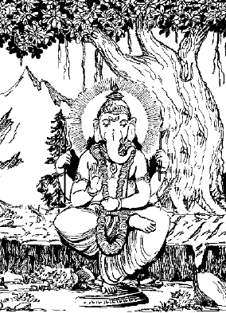
भगवान् श्री गणेशजीद्वारा ब्रह्मविद्याका उपदेश
सूत-शौनक-संवादमें गणेशगीताका उपक्रम
शुक उवाच
एवमेव पुरा पृष्ट: शौनकेन महात्मना।
स सूत: कथयामास गीतां व्यासमुखाच्छ्रुताम्॥ १॥
शुकदेवजी बोले—पूर्वकालमें महात्मा शौनकके पूछनेपर सूतजीने व्यासजीके मुखसे श्रवण की हुई गीताका वर्णन किया था॥ १॥
सूत उवाच
अष्टादशपुराणोक्तममृतं प्राशितं त्वया।
ततोऽतिरसवत्पातुमिच्छाम्यमृतमुत्तमम्॥ २॥
सूतजी बोले—हे भगवन्! आपने अष्टादश पुराणोंके साररूप अमृतका मुझे पान कराया, परंतु अब उससे भी अधिक रसीले उत्तम अमृतका पान करनेकी मेरी इच्छा है॥ २॥
येनामृतमयो भूत्वा पुमान् ब्रह्मामृतं यत:।
योगामृतं महाभाग तन्मे करुणया वद॥ ३॥
जिस अमृतको पाकर मनुष्य ब्रह्मरूप हो जाते हैं, हे महाभाग! उस योगामृतका कृपाकर आप मुझसे वर्णन कीजिये॥ ३॥
व्यास उवाच
अथ गीतां प्रवक्ष्यामि योगमार्गप्रकाशिनीम्।
नियुक्ता पृच्छते सूत राज्ञे गजमुखेन या॥ ४॥
व्यासजी बोले—हे सूतजी! योगमार्गको प्रकाशित करनेवाली गीताका अब तुमसे वर्णन करता हूँ, जिसको राजा वरेण्यके पूछनेपर सम्पूर्ण विघ्नोंके नाशक गणेशजीने कहा था॥ ४॥
वरेण्य उवाच
विघ्नेश्वर महाबाहो सर्वविद्याविशारद।
सर्वशास्त्रार्थतत्त्वज्ञ योगं मे वक्तुमर्हसि॥ ५॥
राजा वरेण्य बोले—हे विघ्नेश्वर! हे महाभुज! हे सर्वविद्याओंके पण्डित! हे सम्पूर्ण शास्त्रके तत्त्वको जाननेवाले! आप मुझसे योगमार्गका वर्णन कीजिये॥ ५॥
श्रीगजानन उवाच
सम्यग्व्यवसिता राजन् मतिस्तेऽनुग्रहान्मम।
शृणु गीतां प्रवक्ष्यामि योगामृतमयीं नृप॥ ६॥
श्रीगजानन बोले—हे राजन्! मेरी कृपासे तुम्हारी बुद्धि निर्मल और स्थिर हो गयी है, सुनो, मैं योगामृतसे परिपूर्ण गीता तुमसे कहता हूँ॥ ६॥
न योगं योगमित्याहुर्योगो योगो न च श्रिय:।
न योगो विषयैर्योगो न च मात्रादिभिस्तथा॥ ७॥
‘योग’ इस शब्दका ही अर्थ योग नहीं, लक्ष्मीकी प्राप्ति होनेका नाम योग नहीं, विषय-सुखकी प्राप्ति होनेका नाम योग नहीं और इन्द्रियसम्पन्न होनेका नाम भी योग नहीं है॥ ७॥
योगो य: पितृमात्रादेर्न स योगो नराधिप।
यो योगो बन्धुपुत्रादेर्यश्चाष्टभूतिभि: सह॥ ८॥
हे राजन्! माता-पिताके समागमका नाम योग नहीं है। आठ प्रकारकी सिद्धि और बन्धुपुत्रादिकी प्राप्तिका नाम भी योग नहीं है॥ ८॥
न स योग: स्त्रिया योगो जगदद्भुतरूपया।
राज्ययोगश्च नो योगो न योगो गजवाजिभि:॥ ९॥
अत्यन्त रूपवती स्त्रीकी प्राप्तिका नाम योग नहीं है, राज्यकी प्राप्ति तथा हाथी-घोड़ेकी प्राप्तिका नाम भी योग नहीं है॥ ९॥
योगो नेन्द्रपदस्यापि योगो योगार्थिन: प्रिय:।
योगो य: सत्यलोकस्य न स योगो मतो मम॥ १०॥
इन्द्रपदकी प्राप्तिका नाम योग नहीं है, योगद्वारा प्रिय सिद्धिकी इच्छा अथवा सत्यलोककी प्राप्तिको भी मैं योग नहीं मानता॥ १०॥
शैवस्य योगो नो योगो वैष्णवस्य पदस्य य:।
न योगो भूप सूर्यत्वं चन्द्रत्वं न कुबेरता॥ ११॥
हे राजन्! शिवपदकी प्राप्ति होना, वैष्णवपदकी प्राप्ति होना, सूर्य-चन्द्र और कुबेरके पदकी प्राप्ति होनेका भी नाम योग नहीं है॥ ११॥
नानिलत्वं नानलत्वं नामरत्वं न कालता।
न वारुण्यं न नैर्ऋत्यं योगो न सार्वभौमता॥ १२॥
वायुस्वरूप, अग्निस्वरूप, देवस्वरूप, कालस्वरूप, वरुणस्वरूप, निर्ऋतिस्वरूप अथवा सम्पूर्ण पृथ्वीके आधिपत्य पानेका नाम भी योग नहीं है॥ १२॥
योगं नानाविधं भूप युञ्जन्ति ज्ञानिनस्ततम्।
भवन्ति वितृषा लोके जिताहारा विरेतस:॥ १३॥
हे राजन्! योग अनेक प्रकारका है, परंतु [यथार्थ योग वही है] जिसको पाकर ज्ञानीलोग विषयोंको जीतकर ब्रह्मचर्यपूर्वक संसारसे विरक्त हो जाते हैं॥ १३॥
पावयन्त्यखिलांल्लोकान् वशीकृतजगत्त्रय:।
करुणापूर्णहृदया बोधयन्त्यपि कांश्चन॥ १४॥
ज्ञानीलोग तीनों लोकोंको वशमें करके सम्पूर्ण जगत्को पवित्र करते हैं, उनका हृदय दयासे पूर्ण होता है और वे सत्पात्रोंको ज्ञान भी प्रदान करते हैं॥ १४॥
जीवन्मुक्ता ह्रदे मग्ना: परमानन्दरूपिणी।
निमील्याक्षीणि पश्यन्त: परं ब्रह्म हृदि स्थितम्॥ १५॥
वे जीवन्मुक्त होकर परमानन्दरूपी सरोवरमें मग्न रहते हैं और नेत्र मूँदकर अपने हृदयमें स्थित परब्रह्मका दर्शन करते रहते हैं॥ १५॥
ध्यायन्त: परमं ब्रह्म चित्ते योगवशीकृते।
भूतानि स्वात्मना तुल्यं सर्वाणि गणयन्ति ते॥ १६॥
योगसे वशीभूत किये अपने चित्तमें परब्रह्मका ध्यान करते हुए वे सम्पूर्ण प्राणियोंको अपने समान समझते हैं॥ १६॥
येन केनचिदाच्छिन्ना येन केनचिदाहता:।
येन केनचिदाकृष्टा येन केनचिदाश्रिता:॥ १७॥
करुणापूर्णहृदया भ्रमन्ति धरणीतले।
अनुग्रहाय लोकानां जितक्रोधा जितेन्द्रिया:॥ १८॥
कहीं किसी प्रकारसे स्वयंको छिपाये हुए, कहीं किसीसे प्रताडित, कहीं किसीसे बुलाये गये और कहीं किसीसे आश्रित होकर दयापूर्ण हृदयसे क्रोधको जीते हुए जितेन्द्रिय वे योगी लोकोंपर अनुग्रह करनेके लिये ही पृथ्वीपर विचरते हैं॥ १७-१८॥
देहमात्रभृतो भूप समलोष्टाश्मकाञ्चना:।
एतादृशा महाभाग्या: स्युश्चक्षुर्गोचरा: प्रिय॥ १९॥
तमिदानीमहं वक्ष्ये शृणु योगमनुत्तमम्।
श्रुत्वा यं मुच्यते जन्तु: पापेभ्यो भवसागरात्॥ २०॥
प्रिय राजन्! वे केवल देहमात्रको ही धारण करनेवाले, मिट्टी-पत्थर तथा स्वर्णमें समान दृष्टि रखनेवाले—इस प्रकारके महाभाग पुरुष जिस योगके द्वारा दृष्टिगोचर हो जाते हैं, उस श्रेष्ठ योगको मैं तुमसे अब कहता हूँ; सुनो, जिसके श्रवण करनेसे प्राणी पापोंसे और भवसागरसे मुक्त हो जाता है॥ १९-२०॥
शिवे विष्णौ च शक्तौ च सूर्ये मयि नराधिप।
याभेदबुद्धिर्योग: स सम्यग्योगो मतो मम॥ २१॥
हे राजन्! शिव, विष्णु, शक्ति, सूर्य और मुझमें जो अभेदबुद्धिरूप योग है, उसीको मैं यथार्थ योग मानता हूँ॥ २१॥
अहमेव जगद्यस्मात्सृजामि पालयामि च।
कृत्वा नानाविधं वेषं संहरामि स्वलीलया॥ २२॥
मैं ही अपनी लीलासे अनेक वेष धारण करता हुआ इस जगत्की उत्पत्ति, पालन और संहार करता हूँ॥ २२॥
अहमेव महाविष्णुरहमेव सदाशिव:।
अहमेव महाशक्तिरहमेवार्यमा प्रिय॥ २३॥
हे प्रिय! मैं ही महाविष्णु, मैं ही सदाशिव, मैं ही महाशक्ति और मैं ही सूर्य हूँ॥ २३॥
अहमेको नृणां नाथो जात: पञ्चविध: पुरा।
अज्ञानान्मां न जानन्ति जगत्कारणकारणम्॥ २४॥
एकमात्र मैं ही मनुष्योंका स्वामी हूँ, [विष्णु, शिव, शक्ति, सूर्य तथा गणेश—] इन पाँच प्रकारसे मैं पूर्वकालमें उत्पन्न हुआ हूँ, मैं जगत्के कारणका भी कारण हूँ, मुझको अज्ञानीलोग नहीं जानते॥ २४॥
मत्तोऽग्निरापो धरणी मत्त आकाशमारुतौ।
ब्रह्मा विष्णुश्च रुद्रश्च लोकपाला दिशो दश॥ २५॥
वसवो मुनयो गावो मनव: पशवोऽपि च।
सरित: सागरा यक्षा वृक्षा: पक्षिगणा अपि॥ २६॥
तथैकविंशति: स्वर्गा नागा: सप्त वनानि च।
मनुष्या: पर्वता: साध्या: सिद्धा रक्षोगणास्तथा॥ २७॥
अग्नि, जल, पृथ्वी, आकाश, वायु, ब्रह्मा, विष्णु, रुद्र, लोकपाल और दसों दिशाएँ, आठ वसु, मुनि, गौ, मनु, पशु, नदी, समुद्र, यक्ष, वृक्ष, पक्षियोंके समूह, इक्कीस स्वर्ग, नाग, सात वन, मनुष्य, पर्वत, साध्य, सिद्ध, राक्षस इत्यादि सब मुझसे ही उत्पन्न हुए हैं॥ २५—२७॥
अहं साक्षी जगच्चक्षुरलिप्त: सर्वकर्मभि:।
अविकारोऽप्रमेयोऽहमव्यक्तो विश्वगोऽव्यय:॥ २८॥
मैं ही सबका साक्षी, सम्पूर्ण जगत्का नेत्र, सभी कर्मोंसे अलिप्त, निर्विकार, अप्रमेय, अव्यक्त, सम्पूर्ण जगत्में व्याप्त और अविनाशी हूँ॥ २८॥
अहमेव परं ब्रह्माव्ययानन्दात्मकं नृप।
मोहयत्यखिलान् माया श्रेष्ठान् मम नरानमून्॥ २९॥
हे राजन्! मैं ही अव्यय आनन्दस्वरूप परब्रह्म हूँ, मेरी माया सम्पूर्ण जगत्को तथा श्रेष्ठ पुरुषोंको भी मोहित करती है॥ २९॥
सर्वदा षड्विकारेषु तानियं योजयेद् भृशम्।
हित्वाजापटलं जग्मुरनेकैर्जन्मभि: शनै:॥ ३०॥
विरज्य विन्दति ब्रह्म विषयेषु सुबोधत:।
अच्छेद्यं शस्त्रसङ्घातैरदाह्यमनलेन च॥ ३१॥
अक्लेद्यं भूप भुवनैरशोष्यं मारुतेन च।
अवध्यं वध्यमानेऽपि शरीरेऽस्मिन्नराधिप॥ ३२॥
वह माया सदा काम-क्रोधादि छ: विकारोंमें इन प्राणियोंको लगा देती है। (योग)-से जब शनै:-शनै: अनेक जन्मके मायाके कपाट दूर हो जाते हैं, तब यह प्राणी विषयोंसे जागकर और उनसे विरक्त होकर [इस] ब्रह्मको जानता है, जो ब्रह्म शस्त्रसमूहोंसे कट नहीं सकता और अग्निसे दग्ध नहीं हो सकता, जलसे गल नहीं सकता, पवनसे सूख नहीं सकता और हे राजन्! जो इस शरीरके नष्ट होनेपर भी नष्ट नहीं होता॥ ३०—३२॥
यामिमां पुष्पितां वाचं प्रशंसन्ति श्रुतीरिताम्।
त्रयीवादरता मूढास्ततोऽन्यन्मन्वतेऽपि न॥ ३३॥
वेदत्रयीमें श्रद्धा रखनेवाले तथा केवल कर्म करनेवाले मूढ लोग श्रुतिमें कही हुई फलप्रतिपादक वाणीकी ही प्रशंसा करते हैं, दूसरी बातको स्वीकार नहीं करते॥ ३३॥
कुर्वन्ति सततं कर्म जन्ममृत्युफलप्रदम्।
स्वर्गैश्वर्यरता ध्वस्तचेतना भोगबुद्धय:॥ ३४॥
इसी कारण वे जन्म और मृत्युके फलको देनेवाले कर्मोंको सदा करते रहते हैं, वे स्वर्गके ऐश्वर्योंके भोगमें ही लगे रहते हैं, उन भोगबुद्धिवालोंकी चेतना नष्ट हो जाती है॥ ३४॥
सम्पादयन्ति ते भूप स्वात्मना निजबन्धनम्।
संसारचक्रं युञ्जन्ति जडा: कर्मपरा नरा:॥ ३५॥
हे राजन्! वे स्वयं ही अपने निमित्त बन्धन बनाते हैं, मूढ़ और कर्मपरायण मनुष्य संसारचक्रमें पड़े रहते हैं॥ ३५॥
यस्य यद्विहितं कर्म तत्कर्तव्यं मदर्पणम्।
ततोऽस्य कर्मबीजानामुच्छिन्ना: स्युर्महाङ्कुरा:॥ ३६॥
जिसके लिये जो कर्मविधान है, वह कर्म मुझे अर्पण कर देना चाहिये, तभी इन प्राणियोंके कर्मरूप बीजोंके महान् अंकुर नष्ट हो सकते हैं॥ ३६॥
चित्तशुद्धिश्च महती विज्ञानसाधिका भवेत्।
विज्ञानेन हि विज्ञातं परं ब्रह्म मुनीश्वरै:॥ ३७॥
चित्तकी शुद्धि ही विज्ञानकी प्राप्तिमें प्रधान साधन होती है, विज्ञानके द्वारा ही ऋषियोंने परब्रह्मको जाना है॥ ३७॥
तस्मात्कर्माणि कुर्वीत बुद्धियुक्तो नराधिप।
न त्वकर्मा भवेत्कोऽपि स्वधर्मत्यागवांस्तथा॥ ३८॥
हे राजन्! इस कारण जो भी कर्म करे, वह बुद्धियुक्त होकर करे। किसीको स्वकर्म और स्वधर्मका त्याग नहीं करना चाहिये॥ ३८॥
जहाति यदि कर्माणि तत: सिद्धिं न विन्दति।
आदौ ज्ञानेनाधिकार: कर्मण्येव स युज्यते॥ ३९॥
यदि कोई कर्मका त्याग करेगा तो उससे उसे सिद्धिकी प्राप्ति नहीं होगी। ज्ञानमें प्रथम अधिकार भी कर्मसे ही प्राप्त होता है॥ ३९॥
कर्मणा शुद्धहृदयोऽभेदबुद्धिमुपैष्यति।
स च योग: समाख्यातोऽमृतत्वाय हि कल्पते॥ ४०॥
कर्मसे शुद्धहृदय होकर (साधक) अभेदबुद्धिको प्राप्त होता है, उसीका नाम योग है, जिससे प्राणी अमर हो जाता है॥ ४०॥
योगमन्यं प्रवक्ष्यामि शृणु भूप तदुत्तमम्।
पशौ पुत्रे तथा मित्रे शत्रौ बन्धौ सुहृज्जने॥ ४१॥
बहिर्दृष्टॺा च समया हृत्स्थयालोकयेत्पुमान्।
सुखे दु:खे तथामर्षे हर्षे भीतौ समो भवेत्॥ ४२॥
हे राजन्! मैं दूसरा उत्तम योग कहता हूँ, तुम उसे सुनो। पशु, मित्र, पुत्र, शत्रु, बन्धु तथा प्रियजनमें समान दृष्टि करनी चाहिये, बाहर-भीतर एक-सी दृष्टि रखते हुए, सुख-दु:ख, क्रोध, हर्ष, भय—इनमें समान रहना चाहिये॥ ४१-४२॥
रोगाप्तौ चैव भोगाप्तौ वा जये विजयेऽपि च।
श्रियोऽयोगे च योगे च लाभालाभे मृतावपि॥ ४३॥
रोगकी प्राप्ति हो चाहे भोगकी प्राप्ति हो, जय हो या विजय हो, लक्ष्मीकी प्राप्ति हो या अप्राप्ति हो, हानि-लाभ, जन्म-मरण—इन सबमें मनको समान रखना उचित है॥ ४३॥
समो मां वस्तुजातेषु पश्यन्नन्तर्बहि: स्थितम्।
सूर्ये सोमे जले वह्नौ शिवे शक्तौ तथानिले॥ ४४॥
द्विजे ह्रदे महानद्यां तीर्थे क्षेत्रेऽघनाशिनि।
विष्णौ च सर्वदेवेषु तथा यक्षोरगेषु च॥ ४५॥
गन्धर्वेषु मनुष्येषु तथा तिर्यग्भवेषु च।
सततं मां हि य: पश्येत्सोऽयं योगविदुच्यते॥ ४६॥
सम्पूर्ण वस्तुओंमें समान भावसे बाहर-भीतर मुझे स्थित जानना, सूर्य, चन्द्रमा, जल, अग्नि, शिव, शक्ति, वायु, ब्राह्मण, सरोवर, पापहारी महानदी, तीर्थ, क्षेत्र, विष्णु, सम्पूर्ण देवता, यक्ष, उरग, गन्धर्व, मनुष्य और पक्षी—इन सबमें जो मुझे सदा समान दृष्टिसे देखता है, वही योगको जाननेवाला कहलाता है॥ ४४—४६॥
सम्पराहृत्य स्वार्थेभ्य इन्द्रियाणि विवेकत:।
सर्वत्र समताबुद्धि: स योगी भूप मे मत:॥ ४७॥
हे राजन्! जो ज्ञानद्वारा इन्द्रियोंको विषयोंसे हटाकर सर्वत्र समान बुद्धि रखता है, वही मेरी दृष्टिमें योगी है॥ ४७॥
आत्मानात्मविवेकेन या बुद्धिर्दैवयोगत:।
स्वधर्मासक्तचित्तस्य तद्योगो योग उच्यते॥ ४८॥
धर्माधर्मौ जहातीह तया त्यक्त उभावपि।
अतो योगाय युञ्जीत योगो वैधिषु कौशलम्॥ ४९॥
अपने धर्ममें आसक्त चित्तवाले प्राणीकी दैवयोगसे जो आत्मा और अनात्माके विचारकी बुद्धि उत्पन्न होती है, उस बुद्धिके योगका ही नाम योग है और उसी बुद्धिके न होनेसे यह प्राणी धर्म-अधर्मका त्याग कर देता है, इस कारण योगमें बुद्धि लगाना उचित है, कर्तव्य कर्मोंमें कुशलता ही योग है॥ ४८-४९॥
धर्माधर्मफले त्यक्त्वा मनीषी विजितेन्द्रिय:।
जन्मबन्धविनिर्मुक्त: स्थानं संयात्यनामयम्॥ ५०॥
जितेन्द्रिय और बुद्धिमान् व्यक्ति धर्म और अधर्मके फलका त्याग करके जन्म-बन्धनसे मुक्त होकर अनामय परमपदको प्राप्त होता है॥ ५०॥
यदा ह्यज्ञानकालुष्यं जन्तोर्बुद्धि: क्रमिष्यति।
तदासौ याति वैराग्यं वेदवाक्यादिषु क्रमात्॥ ५१॥
जब इस प्राणीकी बुद्धि अविद्याके अन्धकारसे—अविद्यासे रहित होगी, तब क्रमसे इस प्राणीका सकाम वेदवाक्यादिकोंमें वैराग्य हो जाता है॥ ५१॥
त्रयीविप्रतिपन्नस्य स्थाणुत्वं यास्यते यदा।
परात्मन्यचला बुद्धिस्तदासौ योगमाप्नुयात्॥ ५२॥
जब तीनों वेदोंमें प्रतिपादित किये गये सकाम कर्मसे यह बुद्धि पूर्णत: और परमात्मामें लगकर निश्चल हो जाती है, तब इस प्राणीको योगकी प्राप्ति होती है॥ ५२॥
मानसानखिलान् कामान् यदा धीमांस्त्यजेत्प्रिय।
स्वात्मनि स्वेन सन्तुष्ट: स्थिरबुद्धिस्तदोच्यते॥ ५३॥
हे प्रिय! जब यह बुद्धिमान् व्यक्ति मनकी सम्पूर्ण इच्छाओंका त्याग कर दे और अपने आत्मामें आपहीसे सन्तुष्ट हो जाय, तब यह स्थिरबुद्धि कहलाता है॥ ५३॥
वितृष्ण: सर्वसौख्येषु नोद्विग्नो दु:खसङ्गमे।
गतसाध्वसरुड्राग: स्थिरबुद्धिस्तदोच्यते॥ ५४॥
किसी प्रकारके भी संसारी सुखोंमें तृष्णा न रखनेवाला, दु:खमें अनुद्विग्न, भय, क्रोध और रागसे रहित व्यक्ति ही स्थिरबुद्धि कहा गया है॥ ५४॥
यथायं कमठोऽङ्गानि सङ्कोचयति सर्वत:।
विषयेभ्यस्तथा खानि सङ्कर्षेद्योगतत्पर:॥ ५५॥
जिस प्रकारसे कछुआ सब ओरसे अपने अंगोंको सिकोड़ लेता है, इसी प्रकारसे योगीको उचित है कि वह विषयोंसे इन्द्रियोंको समेट ले॥ ५५॥
व्यावर्तन्तेऽस्य विषयास्त्यक्ताहारस्य वर्ष्मिण:।
विना रागं न रागोऽपि दृष्ट्वा ब्रह्म विनश्यति॥ ५६॥
भोजन त्यागनेवाले साधकके विषय तो नष्ट हो जाते हैं, परंतु उनका अनुभव बना रहता है। ब्रह्मकी प्राप्ति होनेसे वह राग भी नष्ट हो जाता है॥ ५६॥
विपश्चिद्यतते भूप स्थितिमास्थाय योगिन:।
मन्थयित्वेन्द्रियाण्यस्य हरन्ति बलतो मन:॥ ५७॥
हे राजन्! इन्द्रियगण मोक्षके लिये प्रयत्न करनेवाले विद्वान् पुरुषका भी मन बलात् हर लेती हैं। इस कारण बुद्धिमान् पुरुषको इन्द्रियोंको वशमें करनेका यत्न करना चाहिये॥ ५७॥
युक्तस्तानि वशे कृत्वा सर्वदा मत्परो भवेत्।
संयतानीन्द्रियाणीह यस्यासौ कृतधीर्मत:॥ ५८॥
इन्द्रियोंको वशमें करके योगीको सदा मेरे परायण होना चाहिये। जिसकी इन्द्रियाँ वशमें हो गयी हैं, उसीको स्थितप्रज्ञ कहते हैं॥ ५८॥
चिन्तयानस्य विषयान् सङ्गस्तेषूपजायते।
काम: सञ्जायते तस्मात्तत: क्रोधोऽभिवर्धते॥ ५९॥
विषयोंका चिन्तन करनेवाले पुरुषको उनमें अनुराग हो जाता है, आसक्ति (अनुराग)-से कामना होती है और उससे क्रोधकी उत्पत्ति होती है॥ ५९॥
क्रोधादज्ञानसम्भूतिर्विभ्रमस्तु तत: स्मृते:।
भ्रंशात्स्मृतेर्मतेर्ध्वंसस्तद्ध्वंसात्सोऽपि नश्यति॥ ६०॥
क्रोधसे अज्ञानकी उत्पत्ति और इससे स्मृतिभ्रंश होता है, स्मृतिभ्रंशसे बुद्धि नष्ट होती है और बुद्धि नष्ट होनेसे वह प्राणी भी नष्ट हो जाता है॥ ६०॥
विना द्वेषं च रागं च गोचरान् यस्तु खैश्चरेत्।
स्वाधीनहृदयो वश्यै: सन्तोषं स समृच्छति॥ ६१॥
अनुराग और द्वेषसे रहित अपने वशमें आयी इन्द्रियोंसे विषयोंका भोग करके भी चित्तको अपने वशमें रखनेवाले महापुरुष सन्तोष और शान्तिको प्राप्त होते हैं॥ ६१॥
त्रिविधस्यापि दु:खस्य सन्तोषे विलयो भवेत्।
प्रज्ञया संस्थितश्चायं प्रसन्नहृदयो भवेत्॥ ६२॥
सन्तोषकी प्राप्ति होनेसे तीनों प्रकारके दु:ख नष्ट हो जाते हैं, इसी प्रकार स्थिरप्रज्ञावाले योगीका मन प्रसन्न रहता है॥ ६२॥
विना प्रसादं न मतिर्विना मत्या न भावना।
विना तां न समो भूप विना तेन कुत: सुखम्॥ ६३॥
हे राजन्! बिना चित्त प्रसन्न हुए बुद्धिकी प्राप्ति नहीं होती और बुद्धिके बिना श्रद्धा नहीं होती, श्रद्धाके बिना शान्ति नहीं होती और शान्तिके बिना सुख नहीं होता॥ ६३॥
इन्द्रियाश्वान् विचरतो विषयाननुवर्तते।
यन्मनस्तन्मतिं हन्यादप्सु नावं मरुद्यथा॥ ६४॥
पवन जिस प्रकार नावको जलमें डुबो देता है, वैसे ही जो मन विषयोंमें विचरनेवाले अवशीभूत इन्द्रियरूपी घोड़ोंके पीछे भागता है, वह प्रज्ञाको हर लेता है॥ ६४॥
या रात्रि: सर्वभूतानां तस्यां निद्राति नैव स:।
न स्वपन्तीह ते यत्र ता रात्रिस्तस्य भूमिप॥ ६५॥
हे राजन्! अज्ञानसे आच्छादित सम्पूर्ण प्राणियोंके लिये जो आत्मज्ञान रात्रिस्वरूप है, उसमें इन्द्रियको वशमें करनेवाले संयमी योगी जागते हैं और जिस विषयबुद्धिमें सम्पूर्ण प्राणी जागते हैं, वह विषयभोग ज्ञानियोंके लिये रात्रिस्वरूप है॥ ६५॥
सरितां पतिमायान्ति वनानि सर्वतो यथा।
अयान्ति यं तथा कामा न स शान्तिं क्वचिल्लभेत्॥ ६६॥
जिस प्रकारसे [नदियों आदिके] सभी जल समुद्रमें प्रवेश कर जाते हैं और उसकी तृप्ति नहीं होती, इसी प्रकार सब कामना पूर्ण होनेवालेको भी शान्ति नहीं होती॥ ६६॥
अतस्तानीह संरुध्य सर्वत: खानि मानव:।
स्वस्वार्थेभ्य: प्रधावन्ति बुद्धिरस्य स्थिरा तदा॥ ६७॥
इस कारण प्राणीको उचित है कि सब प्रकारसे विषयोंकी ओर दौड़ती हुई इन्द्रियोंको वशमें करे, तब उसकी बुद्धि स्थिर हो जाती है॥ ६७॥
ममताहंकृती त्यक्त्वा सर्वान् कामांश्च यस्त्यजेत्।
नित्यं ज्ञानरतो भूत्वा ज्ञानान्मुक्तिं स यास्यति॥ ६८॥
जो ममत्व, अहंकार और सब कामनाओंका त्याग करता है, नित्य ज्ञानमें मग्न रहता है, वह ज्ञानसे मुक्तिको प्राप्त हो जाता है॥ ६८॥
एवं ब्रह्मधियं भूप यो विजानाति दैवत:।
तुर्यामवस्थां प्राप्यापि जीवन्मुक्तिं प्रयास्यति॥ ६९॥
हे राजन्! जो वृद्धावस्थाको प्राप्त होकर भी दैवगतिसे इस ब्रह्मज्ञानयुक्त बुद्धिको प्राप्त हो जाता है, वह जीवन्मुक्त हो जाता है॥ ६९॥
॥ इति श्रीगणेशपुराणे गजाननवरेण्यसंवादे गणेशगीतायां सांख्यसारार्थयोगो नाम प्रथमोऽध्याय:॥ १॥
दूसरा अध्याय
कर्मयोग
वरेण्य उवाच
ज्ञाननिष्ठा कर्मनिष्ठा द्वयं प्रोक्तं त्वया विभो।
अवधार्य वदैकं मे नि:श्रेयसकरं नु किम्॥ १॥
वरेण्यने कहा—हे भगवन्! आपने ज्ञाननिष्ठा और कर्मनिष्ठा दोनोंका वर्णन किया, आप दोनोंमेंसे एक निश्चयकर जो कल्याणदायक हो, उसे कहिये॥ १॥
गजानन उवाच
अस्मिंश्चराचरे स्थित्यौ पुरोक्ते द्वे मया प्रिय।
सांख्यानां बुद्धियोगेन वैधयोगेन कर्मणाम्॥ २॥
श्रीगजानन बोले—हे प्रिय! इस चराचर जगत्में मेरे द्वारा पहले वर्णित दो प्रकारकी स्थिति है, सांख्यशास्त्र जाननेवालोंकी ज्ञानयोगसे और कर्मके अधिकारीजनोंकी कर्मयोगसे शुद्धि होती है॥ २॥
अनारम्भेण वैधानां निष्क्रिय: पुरुषो भवेत्।
न सिद्धिं याति सन्त्यागात्केवलात्कर्मणो नृप॥ ३॥
कर्ममें आसक्तजन कर्मोंके आरम्भ न करनेसे निष्क्रिय हो जाते हैं। हे राजन्! केवल कर्मोंके ही त्याग देनेसे सिद्धि नहीं होती॥ ३॥
कदाचिदक्रिय: कोऽपि क्षणं नैवावतिष्ठते।
अस्वतन्त्र: प्रकृतिजैर्गुणै: कर्म च कार्यते॥ ४॥
किसी दशामें क्षणमात्र भी कर्म बिना किये कोई नहीं रह सकता है। प्रकृतिके स्वाभाविक तीनों गुण सबको ही अवश करके कर्म कराते हैं॥ ४॥
कर्मकारीन्द्रियग्रामं नियम्यास्ते स्मरन् पुमान्।
तद्गोचरान् मन्दचित्तो धिगाचार: स भाष्यते॥ ५॥
जो कर्म करनेवाला, इन्द्रियोंको रोककर मन-ही-मनमें इन्द्रियोंके विषयोंका स्मरण करता है, उस इन्द्रियलोलुप दुरात्माको तुच्छ आचारवाला कहा जाता है॥ ५॥
तद् ग्रामं सन्नियम्यादौ मनसा कर्म चारभेत्।
इन्द्रियै: कर्मयोगं यो वितृष्ण: स परो नृप॥ ६॥
हे राजन्! जो मनसे इन्द्रियोंका संयम करके कर्मेन्द्रियोंसे निष्काम कर्मयोगका अनुष्ठान करता है, वही श्रेष्ठ पुरुष है॥ ६॥
अकर्मण: श्रेष्ठतमं कर्मानीहाकृतं तु यत्।
वर्ष्मण: स्थितिरप्यस्याकर्मणो नैव सेत्स्यति॥ ७॥
कर्म न करनेसे तो फलकी कामना करके भी कर्म करना श्रेष्ठ है, कारण कि सब कर्मोंका त्याग करनेसे तो शरीरयात्रा भी नहीं हो सकती॥ ७॥
असमर्प्य निबध्यन्ते कर्म तेन जना मयि।
कुर्वीत सततं कर्मनाशोऽसङ्गो मदर्पणम्॥ ८॥
जो प्राणी कर्मोंका फल मुझमें समर्पण नहीं करते, वे बन्धनमें पड़ते हैं, इस कारणसे निष्काम कर्मका अनुष्ठान करते हुए निरन्तर मुझे अर्पण करके कर्मबन्धनका नाश करना चाहिये॥ ८॥
मदर्थे यानि कर्माणि तानि बध्नन्ति न क्वचित्।
सवासनमिदं कर्म बध्नाति देहिनं बलात्॥ ९॥
जो कर्म मेरे निमित्त किये जाते हैं, वे कहीं और कभी बन्धनके कारण नहीं होते, किंतु जो वासनापूर्वक (फलासक्तिपूर्वक) किये गये कर्म हैं, वे ही बलात् प्राणीको बाँधते हैं॥ ९॥
वर्णान् सृष्ट्वावदं चाहं सयज्ञांस्तान् पुरा प्रिय।
यज्ञेन ऋध्यतामेष कामद: कल्पवृक्षवत्॥ १०॥
पूर्वकालमें मैंने यज्ञरूप नित्यकर्मके ही साथ-साथ मनुष्योंके वर्णोंको रचकर कहा—हे मनुष्यो! तुम यज्ञसे वृद्धिको प्राप्त हो, यह शिक्षा कल्पवृक्षके समान तुम्हारी इष्टसिद्धिको देनेवाली हो॥ १०॥
सुरांश्चान्नेन प्रीणध्वं सुरास्ते प्रीणयन्तु व:।
लभत्वं परमं स्थानमन्योन्यप्रीणनात्स्थिरम्॥ ११॥
तुम देवताओंको अन्नसे तृप्त करो, देवता तुमको (वर्षा आदिसे) प्रसन्न करें, इस प्रकार परस्पर वृद्धि करते हुए तुम और देवता सब श्रेष्ठ स्थानको प्राप्त हों॥ ११॥
इष्टा देवा: प्रदास्यन्ति भोगानिष्टान् सुतर्पिता:।
तैर्दत्तांस्तान्नरस्तेभ्योऽदत्त्वा भुङ्क्ते स तस्कर:॥ १२॥
देवता प्रसन्न होकर तुम्हारे मनोवांछित मनोरथोंको पूर्ण करेंगे, उन देवताओंके दिये पदार्थोंसे उनकी आराधना किये बिना जो भोग भोगता है, वह चोर है॥ १२॥
हुतावशिष्टभोक्तारो मुक्ता: स्यु: सर्वपातकै:।
अदन्त्येनो महापापा आत्महेतो: पचन्ति ये॥ १३॥
जो देवाराधनरूप यज्ञ करके अवशिष्ट अन्नका भोजन करते हैं, वे सब पापोंसे मुक्त होते हैं और जो अपने निमित्त ही भोजन बनाते हैं, वे पापी मानो पापका ही भोजन करते हैं॥ १३॥
ऊर्जो भवन्ति भूतानि देवादन्नस्य सम्भव:।
यज्ञाच्च देवसम्भूतिस्तदुत्पत्तिश्च वैधत:॥ १४॥
अन्नसे ही प्राणी उत्पन्न होते हैं, अन्न वर्षासे उत्पन्न होता है, वर्षा यज्ञसे उत्पन्न होती है और कर्मसे यज्ञकी उत्पत्ति होती है॥ १४॥
ब्रह्मणो वैधमुत्पन्नं मत्तो ब्रह्मसमुद्भव:।
अतो यज्ञे च विश्वस्मिन् स्थितं मां विद्धि भूमिप॥ १५॥
कर्म ब्रह्मासे उत्पन्न होता है और ब्रह्मा मुझसे उत्पन्न होते हैं—इस कारण हे राजन्! आप इस यज्ञमें और विश्वमें स्थित मुझे ही जानिये॥ १५॥
संसृतीनां महाचक्रं क्रामितव्यं विचक्षणै:।
स मुदा प्रीणते भूपेन्द्रियक्रीडोऽधमो जन:॥ १६॥
इस आवागमनरूपी संसारचक्रसे बुद्धिमानोंको पार जाना उचित है, हे राजन्! जो अधम प्राणी है, वह इसमें इन्द्रियोंकी क्रीडासे सुख मानता है॥ १६॥
अन्तरात्मनि य: प्रीत आत्मारामोऽखिलप्रिय:।
आत्मतृप्तो नरो य: स्यात्तस्यार्थो नैव विद्यते॥ १७॥
जो अन्तरात्मामें प्रीति करनेवाला है, वही आत्माराम और सबका प्यारा है, जो प्राणी आत्मतृप्त है, उसे किसी बातकी इच्छा नहीं रहती॥ १७॥
कार्याकार्यकृतीनां स नैवाप्नोति शुभाशुभे।
किञ्चिदस्य न साध्यं स्यात्सर्वजन्तुषु सर्वदा॥ १८॥
इस प्रकारका प्राणी कार्याकार्य करके भी शुभ-अशुभ फलको नहीं प्राप्त होता तथा सम्पूर्ण प्राणियोंमें इसका कभी कुछ साध्य नहीं होता॥ १८॥
अतोऽसक्ततया भूप कर्तव्यं कर्म जन्तुभि:।
सक्तोऽगतिमवाप्नोति मामवाप्नोति तादृश:॥ १९॥
इस कारण, हे राजन्! प्राणियोंको आसक्तिरहित होकर कर्म करना उचित है, जो आसक्त होता है, उसकी दुर्गति होती है और अनासक्त मुझे प्राप्त हो जाता है॥ १९॥
परमां सिद्धिमापन्ना: पुरा राजर्षयो द्विजा:।
सङ्ग्रहाय हि लोकानां तादृशं कर्म चारभेत्॥ २०॥
[हे राजन्!] प्राचीन कालमें कर्म करनेसे बहुतसे राजर्षि और ब्रह्मर्षि परमसिद्धिको प्राप्त हुए हैं। लोकसंग्रहके निमित्त ही अनासक्त होकर कर्म करना उचित है॥ २०॥
श्रेयान् यत्कुरुते कर्म तत्करोत्यखिलो जन:।
मनुते यत्प्रमाणं स तदेवानुसरत्यसौ॥ २१॥
जो कर्म महान् पुरुष करते हैं, वही कर्म अन्य सब करते हैं, वह जिसको प्रमाण मानते हैं, दूसरे भी उसीको मानते हैं॥ २१॥
विष्टपे मे न साध्योऽस्ति कश्चिदर्थो नराधिप।
अनालब्धश्च लब्धब्य: कुर्वे कर्म तथाप्यहम्॥ २२॥
हे राजन्! मुझे कोई वस्तु स्वर्गादिमें भी दुर्लभ नहीं है और मैं कर्म करके किसी अप्राप्त वस्तुको प्राप्त करनेकी भी इच्छा नहीं करता हूँ, फिर भी मैं कर्म करता हूँ॥ २२॥
न कुर्वेऽहं यदा कर्म स्वतन्त्रोऽलसभावित:।
करिष्यन्ति मम ध्यानं सर्वे वर्णा महामते॥ २३॥
और हे महामते! यदि मैं आलसी तथा स्वच्छन्द होकर कर्म न करूँ तो सभी वर्ण कर्म छोड़कर केवल मेरा अनुगमन करने लगेंगे॥ २३॥
भविष्यन्ति ततो लोका उच्छिन्ना: सम्प्रदायिन:।
हन्ता स्यामस्य लोकस्य विधाता सङ्करस्य च॥ २४॥
तब मेरे ऐसा करनेसे सब वर्ण आचारभ्रष्ट होकर नष्ट हो जायँगे। इससे इस संसारका नाश करनेवाला और वर्णसंकरको उत्पन्न करनेवाला भी मैं ही होऊँगा॥ २४॥
कामिनो हि सदा कामैरज्ञानात्कर्मकारिण:।
लोकानां सङ्ग्रहायैतद्विद्वान् कुर्यादसक्तधी:॥ २५॥
जिस प्रकारसे कामनावाले अज्ञानसे सदा कर्म करते रहते हैं, इसी प्रकार विद्वान्को उचित है कि लोकसंग्रहके निमित्त आसक्तिरहित होकर वह कर्म करता रहे॥ २५॥
विभिन्नत्वमतिं जह्यादज्ञानां कर्मचारिणाम्।
योगयुक्त: सर्वकर्माण्यर्पयेन्मयि कर्मकृत्॥ २६॥
अज्ञानसे कर्म करनेवालोंकी भेदबुद्धिका त्याग करे तथा योगयुक्त होकर कर्म करता हुआ वे सब कर्म मुझे अर्पण कर दे॥ २६॥
अविद्यागुणसाचिव्यात्कुर्वन् कर्माण्यतन्द्रित:।
अहङ्काराद्भिन्नबुद्धिरहं कर्तेति योऽब्रवीत्॥ २७॥
[हे राजन्!] अविद्या और गुणोंके वशीभूत हुआ निरन्तर कर्म करनेमें लगा हुआ व्यक्ति अहंकारसे मूढ़ होकर अपनेको कर्ता बताता है॥ २७॥
यस्तु वेत्त्यात्मनस्तत्त्वं विभागाद्गुणकर्मणो:।
करणं विषये वृत्तमिति मत्वा न सज्जते॥ २८॥
जो कोई आत्मज्ञ सत्त्वादि गुण तथा उनके कर्मोंके विभागको इस प्रकार जानते हैं कि इन्द्रियाँ अपने विषयोंमें वर्तमान हैं तो वे ऐसा जानकर कर्ममें लिप्त नहीं होते॥ २८॥
कुर्वन्ति सफलं कर्म गुणैस्त्रिभिर्विमोहिता:।
अविश्वस्त: स्वात्मद्रुहो विश्वविन्नैव लङ्घयेत्॥ २९॥
सत्त्व, रज, तम—इन तीन गुणोंसे मोहित हुए प्राणी फलकी इच्छासे कर्म करते हैं, उन अविश्वासी और आत्मद्रोहियोंको सर्वज्ञ पुरुष कर्ममार्गसे चलायमान न करे॥ २९॥
नित्यं नैमित्तिकं तस्मान्मयि कर्मार्पयेद्बुध:।
त्यक्त्वाहं ममताबुद्धिं परां गतिमवाप्नुयात्॥ ३०॥
इस प्रकार पण्डितको उचित है कि मुझमें ही नित्य-नैमित्तिक कर्मको अर्पण कर दे तो वह अहं और ममता बुद्धिका त्याग करके परमगतिको प्राप्त हो जायगा॥ ३०॥
अनीर्ष्यन्तो भक्तिमन्तो ये मयोक्तमिदं शुभम्।
अनुतिष्ठन्ति ये सर्वे मुक्तास्तेऽखिलकर्मभि:॥ ३१॥
ईर्ष्या न करनेवाले जो भक्तिमान् मनुष्य मेरे कहे हुए इस शुभ मार्गका अनुष्ठान करते हैं, वे सब कर्मोंसे मुक्त हो जाते हैं॥ ३१॥
ये चैव नानुतिष्ठन्ति त्वशुभा हतचेतस:।
ईर्ष्यमाणान् महामूढान्नष्टांस्तान् विद्धि मे रिपून्॥ ३२॥
जो अज्ञानसे चित्तके नष्ट होनेके कारण इस मार्गका अनुष्ठान नहीं करते हैं, उन ईर्ष्यालु, मूर्ख और नष्टबुद्धियोंको मेरा शत्रु जानो॥ ३२॥
तुल्यं प्रकृत्या कुरुते कर्म यज्ज्ञानवानपि।
अनुयाति च तामेवाग्रहस्तत्र मुधा मत:॥ ३३॥
जब ज्ञानवान् भी अपने स्वभावके अनुसार चेष्टा करता है और उसी स्वभावका अनुगमन करता है तो स्वभावको ग्रहण न करना व्यर्थ है॥ ३३॥
कामश्चैव तथा क्रोध: खानामर्थेषु जायते।
नैतयोर्वश्यतां यायादस्य विध्वंसकौ यत:॥ ३४॥
कर्मेन्द्रिय और ज्ञानेन्द्रियके विषयोंमें काम और क्रोध उत्पन्न होते हैं, इनके वशमें नहीं होना चाहिये, कारण कि यही प्राणीके शत्रुरूप हैं॥ ३४॥
शस्तोऽगुणो निजो धर्म: साङ्गादन्यस्य धर्मत:।
निजे तस्मिन् मृति: श्रेयोऽपरत्र भयद: पर:॥ ३५॥
अपना धर्म यदि गुणरहित हो तो भी अच्छा है और दूसरेका धर्म गुणयुक्त होनेसे भी भला नहीं, अपने धर्ममें मरना भी परलोकमें कल्याणकारी है, परंतु दूसरेका श्रेष्ठ धर्म भी भय प्रदान करता है॥ ३५॥
वरेण्य उवाच
पुमान् यत्कुरुते पापं स हि केन नियुज्यते।
अकाङ्क्षन्नपि हेरम्ब प्रेरित: प्रबलादिव॥ ३६॥
वरेण्यने कहा—हे गणेशजी! प्राणी जो पाप करता है, वह किसके द्वारा प्रेरित होता है? इच्छा नहीं करता हुआ भी बलात् किससे प्रेरित होता हुआ वह पापाचरण करता है?॥ ३६॥
श्रीगजानन उवाच
कामक्रोधौ महापापौ गुणद्वयसमुद्भवौ।
नयन्तौ वश्यतां लोकान् विद्धॺेतौ द्वेषिणौ वरौ॥ ३७॥
श्रीगणेशजी बोले—रजोगुण और तमोगुणसे उत्पन्न हुए ये काम और क्रोध ही दो महापापी हैं। ये लोगोंको अपने वशमें करते हैं, इन्हीं दोनोंको तुम महान् शत्रु जानो॥ ३७॥
आवृणोति यथा माया जगद्वाष्पो जलं यथा।
वर्षामेघो यथा भानुं तद्वत्कामोऽखिलांश्च रुट्॥ ३८॥
जिस प्रकार माया जगत्को ढकती है, जैसे भाप जलको और जैसे वर्षाकालका मेघ सूर्यको ढक लेता है, इसी प्रकार कामने सबको ढक लिया है॥ ३८॥
प्रतिपत्तिमतो ज्ञानं छादितं सततं द्विषा।
इच्छात्मकेन तरसा दुष्पोषेण च शुष्मिणा॥ ३९॥
महाबली, सदैव द्वेष करनेवाले और कभी पूरा न हो सकनेवाले इस इच्छारूप कामने ही बुद्धिमानोंके ज्ञानको भी ढक रखा है॥ ३९॥
आश्रित्य बुद्धिमनसी इन्द्रियाणि स तिष्ठति।
तैरेवाच्छादितप्रज्ञो ज्ञानिनं मोहयत्यसौ॥ ४०॥
यह काम बुद्धि, मन तथा इन्द्रियोंके आश्रित होकर रहता है, उन्हींसे ज्ञानको आच्छादित करके यह ज्ञानियोंको भी मोहित करता है॥ ४०॥
तस्मान्नियम्य तान्यादौ स मनांसि नरो जयेत्।
ज्ञानविज्ञानयो: शान्तिकरं पापं मनोभवम्॥ ४१॥
अत: पहले मनके सहित इन्द्रियोंको वशमें करके ज्ञान और विज्ञानके नाश करनेवाले इस मनोद्भव पापी कामको जीतना चाहिये॥ ४१॥
यतस्तानि पराण्याहुस्तेभ्यश्च परमं मन:।
ततोऽपि हि परा बुद्धिरात्मा बुद्धे: परो मत:॥ ४२॥
स्थूल देहसे इन्द्रियाँ परे हैं, इन्द्रियोंसे परे मन है, मनसे परे बुद्धि है और बुद्धिसे परे आत्मा है॥ ४२॥
बुद्ध्वैवमात्मनात्मानं संस्तभ्यात्मानमात्मना।
हत्वा शत्रुं कामरूपं परं पदमवाप्नुयात्॥ ४३॥
इस प्रकार बुद्धिसे आत्माको जानकर, बुद्धिसे ही मनको स्थिर करके कामरूपी शत्रुको मारकर परम पदको प्राप्त करना चाहिये॥ ४३॥
॥ इति श्रीगणेशपुराणे गजाननवरेण्यसंवादे गणेशगीतायां कर्मयोगो नाम द्वितीयोऽध्याय:॥ २॥
तीसरा अध्याय
ज्ञानयोग
श्रीगजानन उवाच
पुरा सर्गादिसमये त्रैगुण्यं त्रितनूरुहम्।
निर्माय चैनमवदं विष्णवे योगमुत्तमम्॥ १॥
श्रीगणेशजी बोले—पूर्वकालमें सृष्टि उत्पन्न करनेके समय तीन गुणोंसे युक्त तीन शरीरमें रहनेवाले उत्तम योगका निर्माण करके मैंने विष्णुसे इसका वर्णन किया था॥ १॥
अर्यम्णे सोऽब्रवीत्सोऽपि मनवे निजसूनवे।
तत: परम्परायातं विदुरेनं महर्षय:॥ २॥
विष्णुने यही योग सूर्यसे कहा। सूर्यने अपने पुत्र वैवस्वत मनुसे कहा। इसके उपरान्त परम्परासे प्राप्त हुए इस योगको महर्षिगण जानते रहे॥ २॥
कालेन बहुना चायं नष्ट: स्याच्चरमे युगे।
अश्रद्धेयो ह्यविश्वास्यो विगीतव्यश्च भूमिप॥ ३॥
हे राजन्! कलियुगमें यह बहुत काल बीत जानेसे नष्ट हो गया तथा इसे श्रद्धा-विश्वासके अयोग्य तथा निन्दनीय समझा गया॥ ३॥
एवं पुरातनं योगं श्रुतवानसि मन्मुखात्।
गुह्याद्गुह्यतरं वेदरहस्यं परमं शुभम्॥ ४॥
अब फिर तुमने मेरे मुखसे इस पुरातन योगको सुना है, यह गुप्त-से-गुप्त, अत्यन्त कल्याणकारक और सम्पूर्ण वेदोंका सार है॥ ४॥
वरेण्य उवाच
साम्प्रतं चावतीर्णोऽसि गर्भतस्त्वं गजानन।
प्रोक्तवान् कथमेतं त्वं विष्णवे योगमुत्तमम्॥ ५॥
राजा वरेण्य बोले—हे गजानन! आप तो इस समय गर्भसे उत्पन्न हुए हैं, फिर आपने विष्णुसे यह उत्तम योग किस प्रकारसे वर्णन किया?॥ ५॥
गणेश उवाच
अनेकानि च ते जन्मान्यतीतानि ममापि च।
संस्मरे तानि सर्वाणि न स्मृतिस्तव वर्तते॥ ६॥
गणेशजी बोले—[हे राजन्!] मेरे और तुम्हारे अनेक जन्म बीत चुके हैं, मैं उन सबको जानता हूँ, परंतु तुम नहीं जानते॥ ६॥
मत्त एव महाबाहो जाता विष्ण्वादय: सुरा:।
मय्यैव लयं यान्ति प्रलयेषु युगे युगे॥ ७॥
हे महाबाहो! मुझसे ही विष्णु आदि देवता उत्पन्न हुए हैं और युग-युगमें प्रलयके समय मुझमें ही लय हो जाते हैं॥ ७॥
अहमेव परो ब्रह्मा महारुद्रोऽहमेव च।
अहमेव जगत्सर्वं स्थावरं जङ्गमं च यत्॥ ८॥
मैं ही श्रेष्ठ ब्रह्मा हूँ, मैं ही महारुद्र हूँ, मैं ही स्थावर-जंगमरूप सम्पूर्ण जगत् हूँ॥ ८॥
अजोऽव्ययोऽहं भूतात्मानादिरीश्वर एव च।
आस्थाय त्रिगुणां मायां भवामि बहुयोनिषु॥ ९॥
मैं अजन्मा, अविनाशी तथा सभी जीवोंका आत्मा अनादि ईश्वर हूँ और त्रिगुणात्मक मायामें स्थित होकर मैं ही अनेक अवतार धारण करता हूँ॥ ९॥
अधर्मोपचयो धर्मापचयो हि यदा भवेत्।
साधून् संरक्षितुं दुष्टांस्ताडितुं सम्भवाम्यहम्॥ १०॥
जिस समय अधर्मकी वृद्धि और धर्मकी हानि होती है, उस समय साधुओंकी रक्षा और दुष्टोंको मारनेके लिये मैं अवतार लेता हूँ॥ १०॥
उच्छिद्याधर्मनिचयं धर्मं संस्थापयामि च।
हन्मि दुष्टांश्च दैत्यांश्च नानालीलाकरो मुदा॥ ११॥
मैं अधर्मके समूहको नष्टकर धर्मका स्थापन करता हूँ और अनेक प्रकारकी लीलाकर आनन्दसे दुष्टों तथा दैत्योंका वध करता हूँ॥ ११॥
वर्णाश्रमान् मुनीन् साधून् पालये बहुरूपधृक्।
एवं यो वेत्ति सम्भूतिर्मम दिव्या युगे युगे॥ १२॥
तत्तत्कर्म च वीर्यं च मम रूपं समासत:।
त्यक्त्वाहं ममताबुद्धिं न पुनर्भू: स जायते॥ १३॥
अनेक रूप धारणकर मैं वर्ण, आश्रम, मुनि और साधुओंका पालन करता हूँ, इस प्रकारसे जो युग-युगमें मेरी दिव्य विभूतिको, मेरे कर्म, वीर्य और रूपको जानता है तथा अहंकार और ममताबुद्धिका त्याग कर देता है, वह मुक्त हो जाता है॥ १२-१३॥
निरीहा निर्भयारोषा मत्परा मद्व्यपाश्रया:।
विज्ञानतपसा शुद्धा अनेके मामुपागता:॥ १४॥
इच्छारहित, निर्भय, क्रोधहीन, मुझमें ही आश्रित, मेरी ही उपासना करनेवाले विज्ञान और तपस्यासे शुद्ध होकर अनेक प्राणी मुझको प्राप्त हो गये हैं॥ १४॥
येन येन हि भावेन संसेवन्ते नरोत्तमा:।
तथा तथा फलं तेभ्य: प्रयच्छाम्यव्यय: स्फुटम्॥ १५॥
श्रेष्ठजन जिस-जिस भावसे मेरा सेवन करते हैं, मैं अविनश्वर उनको वैसा फल निश्चय ही देता हूँ॥ १५॥
जना: स्युरितरे राजन् मम मार्गानुयायिन:।
तथैव व्यवहारं ते स्वेषु चान्येषु कुर्वते॥ १६॥
हे राजन्! जिस प्रकारसे दूसरे लोग भी मेरे अनुयायी हो जायँ, इसी प्रकारका व्यवहार वे अपने तथा दूसरे मनुष्योंमें करते हैं॥ १६॥
कुर्वन्ति देवताप्रीतिं काङ्क्षन्त: कर्मणां फलम्।
प्राप्नुवन्तीह ते लोके शीघ्रं सिद्धिं हि कर्मजाम्॥ १७॥
जो कर्मोंके फल प्राप्त होनेकी इच्छासे देवोपासना करते हैं, उन-उन कर्मोंके अनुसार उनको शीघ्र सिद्धि प्राप्त होती है॥ १७॥
चत्वारो हि मया वर्णा रज:सत्त्वतमोंऽशत:।
कर्मांशतश्च संसृष्टा मृत्युलोके मयानघ॥ १८॥
हे पापरहित! मृत्युलोकमें मैंने चारों वर्णोंको सत्त्व, रज, तम—इन गुणोंसे और कर्मोंके अंशसे उत्पन्न किया है॥ १८॥
कर्तारमपि तेषां मामकर्तारं विदुर्बुधा:।
अनादिमीश्वरं नित्यमलिप्तं कर्मजैर्गुणै:॥ १९॥
यद्यपि मैं इनका कर्ता हूँ, परंतु पण्डितजन मुझे अकर्ता जानते हैं। वे मुझे अनादि, ईश्वर, नित्य और कर्मोंके गुणोंसे अलिप्त मानते हैं॥ १९॥
निरीहं योऽभिजानाति कर्म बध्नाति नैव तम्।
चक्रु: कर्माणि बुद्ध्वैवं पूर्वं पूर्वं मुमुक्षव:॥ २०॥
जो मुझे इच्छारहित जानता है, उसको कर्मबन्धन नहीं होता। ऐसा जानकर पूर्वमें मुमुक्षुजन कर्म करते थे॥ २०॥
वासनासहितादाद्यात्संसारकारणाद्दृढात्।
अज्ञानबन्धनाज्जन्तुर्बुद्ध्वायं मुच्यतेऽखिलात्॥ २१॥
वासना जो कि संसारका मूल और दृढ़ कारण है, और वही अज्ञानका बन्धन है, इसे जानकर प्राणी सबसे मुक्त हो जाता है॥ २१॥
तदकर्म च कर्मापि कथयाम्यधुना तव।
यत्र मौनं गता मोहादृषयो बुद्धिशालिन:॥ २२॥
क्या कर्म और क्या अकर्म है, यह मैं अब तुमसे कहता हूँ। इसके जाननेमें बुद्धिमान् ऋषिगण भी मोहको प्राप्त होकर मौन रह गये हैं॥ २२॥
तत्त्वं मुमुक्षुणा ज्ञेयं कर्माकर्मविकर्मणाम्।
त्रिविधानीह कर्माणि सुनिम्नैषां गति: प्रिय॥ २३॥
हे प्रिय! कर्म, अकर्म और विकर्मका तत्त्व मुक्तिकी इच्छा करनेवालोंको जानना आवश्यक है, वे तीनों ही कर्म हैं। इनकी गति जानना महाकठिन है॥ २३॥
क्रियायामक्रियाज्ञानमक्रियायां क्रियामति:।
यस्य स्यात्स हि मर्त्येऽस्मिंल्लोके मुक्तोऽखिलार्थकृत्॥ २४॥
क्रियामें अक्रियाका ज्ञान और अक्रियामें क्रियाकी बुद्धि जिसकी होती है, वही इस लोकमें सभी कर्मोंका करनेवाला होकर भी मुक्त हो जाता है॥ २४॥
कर्माङ्कुरवियोगेन य: कर्माण्यारभेन्नर:।
तत्त्वदर्शननिर्दग्धक्रियमाहुर्बुधा बुधम्॥ २५॥
जो कर्मोंके अंकुरसे रहित अर्थात् संकल्प और कामनारहित कर्म करते हैं, तत्त्वके जाननेसे उस बुद्धिमान्की सारी क्रियाएँ दग्ध हो जाती हैं, ऐसा पण्डितजन कहते हैं॥ २५॥
फलतृष्णां विहाय स्यात्सदा तृप्तो विसाधन:।
उद्युक्तोऽपि क्रियां कर्तुं किञ्चिन्नैव करोति स:॥ २६॥
जो फलकी इच्छाको छोड़कर साधनहीन होकर भी सदा तृप्त रहते हैं। यदि वे कर्म करनेमें लगे हों तो भी वे कुछ नहीं करते हैं॥ २६॥
निरीहो निगृहीतात्मा परित्यक्तपरिग्रह:।
केवलं वै गृहं कर्माचरन्नायाति पातकम्॥ २७॥
जो इच्छारहित, आत्मजित् एवं सम्पूर्ण परिग्रहका परित्याग किये हैं, ऐसे प्राणी यदि घरमें रहकर कर्म भी करें तो उन्हें कुछ पातक नहीं लगता॥ २७॥
अद्वन्द्वोऽमत्सरो भूत्वा सिद्धॺसिद्धॺो: समश्च य:।
यथा प्राप्येऽहं सन्तुष्ट: कुर्वन् कर्म न बद्धॺते॥ २८॥
जो द्वन्द्व और ईर्ष्याहीन होकर सिद्धि-असिद्धिमें समान दृष्टि रखते हुए जो कुछ प्राप्ति हो, उसीमें सन्तुष्ट रहते हैं, ऐसे प्राणी कर्म करते हुए भी लिप्त नहीं होते॥ २८॥
अखिलैर्विषयैर्मुक्तो ज्ञानविज्ञानवानपि।
यज्ञार्थं तस्य सकलं कृतं कर्म विलीयते॥ २९॥
सम्पूर्ण विषयोंसे मुक्त और ज्ञान-विज्ञानयुक्त प्राणीके सारे कर्म यज्ञ ही हैं और उसकी सारी क्रियाएँ विलीन हो जाती हैं॥ २९॥
अहमग्निर्हविर्होता हुतं यन्मयि चार्पितम्।
ब्रह्माप्तव्यं च तेनाथ ब्रह्मण्येव यतो रत:॥ ३०॥
अग्नि, होमका द्रव्य, हवन करनेवाले और जो आहुति मुझे अर्पण की जाती है वह, सब मैं ही हूँ। इसे ब्रह्मस्वरूपसे देखकर जो हवन करता है, वह ब्रह्मको ही प्राप्त होता है; क्योंकि वह ब्रह्ममें ही लगा है॥ ३०॥
योगिन: केचिदपरे दिष्टं यज्ञं वदन्ति च।
ब्रह्माग्निरेव यज्ञो वै इति केचन मेनिरे॥ ३१॥
कोई योगी देवयजनको यज्ञ कहते हैं, दूसरे ब्रह्मरूप अग्निमें यज्ञ करनेको यज्ञ मानते हैं॥ ३१॥
संयमाग्नौ परे भूप इन्द्रियाण्युपजुह्वति।
खाग्निष्वन्ये तद्विषयांश्छन्दादीनुपजुह्वति॥ ३२॥
हे राजन्! कोई योगी संयमरूप अग्निमें श्रोत्रादि इन्द्रियोंका हवन करते हैं, कोई इन्द्रियरूपी अग्निमें शब्दादि विषयोंकी आहुति देते हैं॥ ३२॥
प्राणानामिन्द्रियाणां च परे कर्माणि कृत्स्नश:।
निजामरतिरूपेऽग्नौ ज्ञानदीप्ते प्रजुह्वति॥ ३३॥
कोई दूसरे ज्ञानमें जलती हुई वैराग्यरूपी अग्निमें सम्पूर्ण इन्द्रिय, कर्म और प्राणोंका हवन करते हैं॥ ३३॥
द्रव्येण तपसा वापि स्वाध्यायेनापि केचन।
तीव्रव्रतेन यतिनो ज्ञानेनापि यजन्ति माम्॥ ३४॥
कोई द्रव्ययज्ञका अनुष्ठानकर, कोई तपस्यासे, कोई स्वाध्यायसे, कोई महात्मा तीव्र व्रतसे और कोई ज्ञानसे मेरा यजन करते हैं॥ ३४॥
प्राणेऽपानं तथा प्राणमपाने प्रक्षिपन्ति ये।
रुद्धा गतीश्चोभयोस्ते प्राणायामपरायणा:॥ ३५॥
जो पूरकसे प्राणवायुमें अपानको और रेचकसे प्राणका अपानमें हवन करते हैं और कुम्भकके अनुष्ठानसे प्राणापानकी गतिको रोक लेते हैं, वे प्राणायाममें परायण होते हैं॥ ३५॥
जित्वा प्राणान् प्राणगतीरुपजुह्वति तेषु च।
एवं नानायज्ञरता यज्ञध्वंसितपातका:॥ ३६॥
नित्यं ब्रह्म प्रयान्त्येते यज्ञशिष्टामृताशिन:।
अयज्ञकारिणो लोको नायमन्य: कुतो भवेत्॥ ३७॥
दूसरे नियताहार होकर पाँचों प्राणोंमें पाँचों प्राणोंकी आहुति देते हैं, इस प्रकार अनेक प्रकारके यज्ञोंमें निरत योगी यज्ञद्वारा पापोंका नाश करते हैं। अन्य दूसरे नित्य ही यज्ञसे बचे अमृत पदार्थका भोजनकर नित्य ब्रह्मको प्राप्त होते हैं। यज्ञ न करनेवालोंको तो यह लोक भी नहीं मिलता, परलोक कहाँ मिलेगा?॥ ३६-३७॥
कायिकादि त्रिधाभूतान् यज्ञान् वेदे प्रतिष्ठितान्।
ज्ञात्वा तानखिलान् भूप मोक्ष्यसेऽखिलबन्धनात्॥ ३८॥
हे राजन्! वेदोंमें मन, वचन, कर्मके बहुत प्रकारके यज्ञ वर्णित हैं, उन्हें पूर्णतया जानकर तुम सारे बन्धनोंसे मुक्त हो जाओगे॥ ३८॥
सर्वेषां भूप यज्ञानां ज्ञानयज्ञ: परो मत:।
अखिलं लीयते कर्म ज्ञाने मोक्षस्य साधने॥ ३९॥
हे राजन्! सब यज्ञोंमें ज्ञानयज्ञ श्रेष्ठ है। मोक्षसाधक ज्ञानयज्ञमें सब कर्म क्षीण हो जाते हैं॥ ३९॥
तज्ज्ञेयं पुरुषव्याघ्र प्रश्नेन नतित: सताम्।
शुश्रूषया वदिष्यन्ति सन्तस्तत्त्वविशारदा:॥ ४०॥
हे पुरुषश्रेष्ठ! उस ज्ञानयज्ञको सत्पुरुषोंकी सेवा और प्रश्नसे प्राप्त करो। तत्त्वको जाननेवाले ज्ञानीजन तुम्हें शुश्रूषासे उसको कहेंगे॥ ४०॥
नानासङ्गाञ्जन: कुर्वन्नैकं साधुसमागमम्।
करोति तेन संसारे बन्धनं समुपैति स:॥ ४१॥
जो मनुष्य अनेक प्रकारकी संगति करता है, पर किसी साधुकी संगति नहीं करता, वह संसारमें बन्धनको प्राप्त होता है॥ ४१॥
सत्सङ्गाद्गुणसम्भूतिरापदां लय एव च।
स्वहितं प्राप्यते सर्वैरिह लोके परत्र च॥ ४२॥
सत्संगसे गुणोंकी प्राप्ति और आपदाका नाश होता है तथा लोक और परलोकमें अपना कल्याण प्राप्त होता है॥ ४२॥
इतरत्सुलभं राजन् सत्सङ्गोऽतीव दुर्लभ:।
यज्ज्ञात्वा न पुनर्बन्धमेति ज्ञेयं ततस्तत:॥ ४३॥
हे राजन्! अन्य सब तो सुलभ है, परंतु सत्संग बड़ा दुर्लभ है। जिसके जाननेसे फिर संसारके बन्धनमें नहीं आना होता, उसे जानना आवश्यक है॥ ४३॥
तत: सर्वाणि भूतानि स्वात्मन्येवापि पश्यति।
अतिपापरतो जन्तुस्ततस्तस्मात्प्रमुच्यते॥ ४४॥
सत्संगसे ज्ञान मिलनेपर यह सब प्राणियोंको अपनेमें ही देखता है। इससे अतिपापी प्राणी भी मुक्त हो जाता है॥ ४४॥
द्विविधान्यपि कर्माणि ज्ञानाग्निर्दहति क्षणात्।
प्रसिद्धोऽग्निर्यथा सर्वं भस्मतां नयति क्षणात्॥ ४५॥
जिस प्रकारसे प्रचण्ड जलती अग्नि सबको क्षणमें भस्म कर देती है, इसी प्रकार ज्ञानाग्निमें पाप-पुण्य दोनों प्रकारके कर्म सद्य: नष्ट हो जाते हैं॥ ४५॥
न ज्ञानसमतामेति पवित्रमितरन्नृप।
आत्मन्येवावगच्छन्ति योगात्कालेन योगिन:॥ ४६॥
हे राजन्! ज्ञानके समान और कोई वस्तु पवित्र नहीं है, योगसिद्ध महात्मा उस ज्ञानको यथासमय स्वयं ही प्राप्त करते हैं॥ ४६॥
भक्तिमानिन्द्रियजयी तत्परो ज्ञानमाप्नुयात्।
लब्ध्वा तत्परमं मोक्षं स्वल्पकालेन यात्यसौ॥ ४७॥
इन्द्रियोंको वशमें करनेवाला भक्तिमान्, तत्पर पुरुष ही ज्ञानको प्राप्त कर सकता है और ज्ञान प्राप्त होनेसे थोड़े समयमें ही वह मुक्तिको प्राप्त हो जाता है॥ ४७॥
भक्तिहीनोऽश्रद्दधान: सर्वत्र संशयी तु य:।
तस्य शं नापि विज्ञानमिह लोकोऽथ वा पर:॥ ४८॥
जो भक्तिहीन, श्रद्धारहित और सर्वत्र संदिग्धचित्तवाला है, उसे कल्याणकी प्राप्ति नहीं होती, न ज्ञान होता है तथा उसका इहलोक और परलोक नष्ट हो जाता है॥ ४८॥
आत्मज्ञानरतं ज्ञाननाशिताखिलसंशयम्।
योगास्ताखिलकर्माणं बध्नन्ति भूप तानि न॥ ४९॥
हे राजन्! जो आत्मज्ञानमें रत हैं, जिन्होंने ज्ञानसे सभी सन्देह दूर कर लिये हैं तथा योगमें स्थित होकर जिनके कर्म क्षीण हो गये हैं, वे बन्धनमें नहीं पड़ते॥ ४९॥
ज्ञानखड्गप्रहारेण सम्भूतामज्ञतां बलात्।
छित्त्वान्त:संशयं तस्माद्योगयुक्तो भवेन्नर:॥ ५०॥
इस कारण ज्ञानरूपी खड्गसे मनके अज्ञान तथा संशयको बलपूर्वक काटकर मनुष्यको योगका आश्रय लेना उचित है॥ ५०॥
॥ इति श्रीगणेशपुराणे गजाननवरेण्यसंवादे गणेशगीतायां ज्ञानयोगो नाम तृतीयोऽध्याय:॥ ३॥
चौथा अध्याय
संन्यासयोग
वरेण्य उवाच
संन्यस्तिश्चैव योगश्च कर्मणां वर्ण्यते त्वया।
उभयोर्निश्चितं त्वेकं श्रेयो यद्वद मे प्रभो॥ १॥
वरेण्य बोले—हे भगवन्! आप कर्मसंन्यास (अर्थात् निष्कामभावसे कर्म करते-करते विशुद्ध चित्त होनेपर कर्मत्याग करने)-को ज्ञानका कारण कहकर फिर कर्मयोगको ज्ञानका कारण कहते हैं, इन दोनोंमें जो हितकारी हो, उसे कहिये॥ १॥
श्रीगजानन उवाच
क्रियायोगो वियोगश्चाप्युभौ मोक्षस्य साधने।
तयोर्मध्ये क्रियायोगस्त्यागात्तस्य विशिष्यते॥ २॥
श्रीगणेशजी बोले—(अधिकारियोंके भेदसे) कर्मयोग और कर्मसंन्यास दोनों ही मुक्तिके साधन हैं, उन दोनोंमें कर्मसंन्याससे कर्मयोगमें विशेषता है॥ २॥
द्वन्द्वदु:खसहोऽद्वेष्टा यो न काङ्क्षति किञ्चन।
मुच्यते बन्धनात्सद्यो नित्यं संन्यासवान् सुखम्॥ ३॥
जो द्वन्द्व और दु:खको सहकर किसीसे द्वेष नहीं करता और किसी बातकी इच्छा नहीं करता, ऐसा प्राणी अनायास तत्काल कर्मबन्धनसे सदा मुक्त हो जाता है॥ ३॥
वदन्ति भिन्नफलकौ कर्मणस्त्यागसङ्ग्रहौ।
मूढाल्पज्ञास्तयोरेकं सयुञ्जीत विचक्षण:॥ ४॥
कर्मसंन्यास और कर्मयोगको मूढ़ और अज्ञानी ही पृथक्-पृथक् कहते हैं, परंतु पण्डितगण उन्हें एक ही मानते हैं॥ ४॥
यदेव प्राप्यते त्यागात्तदेव योगत: फलम्।
सङ्ग्रहं कर्मणो योगं यो विन्दति स विन्दति॥ ५॥
जो फल कर्मसंन्याससे मिलता है, वही फल कर्मयोगसे प्राप्त होता है, कर्मसंन्यास और कर्मयोगको जो एक जानता है, वही यथार्थ ज्ञाता है॥ ५॥
केवलं कर्मणां न्यासं संन्यासं न विदुर्बुधा:।
कुर्वन्ननिच्छया कर्म योगी ब्रह्मैव जायते॥ ६॥
पण्डितजन केवल कर्मके संन्यासको ही संन्यास नहीं कहते, यदि योगी अनिच्छासे कर्म करे तो वह ब्रह्म ही हो जाता है॥ ६॥
निर्मलो यतचित्तात्मा जितगो योगतत्पर:।
आत्मानं सर्वभूतस्थं पश्यन् कुर्वन्न लिप्यते॥ ७॥
शुद्धचित्त, मनको वशमें करनेवाले, जितेन्द्रिय, योगमें तत्पर और सम्पूर्ण प्राणियोंमें स्थित आत्माको देखनेवाले कर्म करते हुए भी लिप्त नहीं होते॥ ७॥
तत्त्वविद्योगयुक्तात्मा करोमीति न मन्यते।
एकादशानीन्द्रियाणि कुर्वन्ति कर्म संख्यया॥ ८॥
तत्त्वको जाननेवाला योगयुक्त आत्मवान् पुरुष ‘मैं कर्ता हूँ’, ऐसा नहीं मानता, अपितु मनसहित एकादश इन्द्रियाँ कर्म करती हैं, ऐसा मानता है॥ ८॥
तत्सर्वमर्पयेद्ब्रह्मण्यपि कर्म करोति य:।
न लिप्यते पुण्यपापैर्भानुर्जलगतो यथा॥ ९॥
जो कर्म करनेवाला सारे कर्म ब्रह्ममें अर्पण कर देता है, वह उसी प्रकार पाप-पुण्यसे लिप्त नहीं होता, जैसे जलमें पड़ा हुआ सूर्यका बिम्ब उससे लिप्त नहीं होता॥ ९॥
कायिकं वाचिकं बौद्धमैन्द्रियं मानसं तथा।
त्यक्त्वाशां कर्म कुर्वन्ति योगज्ञाश्चित्तशुद्धये॥ १०॥
योगके जाननेवाले चित्तशुद्धिके निमित्त आशा (फलाशा)-का त्यागकर शरीर, वचन, बुद्धि, इन्द्रिय और मनसे कर्म करते हैं॥ १०॥
योगहीनो नर: कर्म फलेहया करोत्यलम्।
बध्यते कर्मबीजै: स ततो दु:खं समश्नुते॥ ११॥
योगहीन मनुष्य कर्मोंको फलकी इच्छासे करता है, वह कर्मबीजसे बँध जाता है और इसीसे दु:खको प्राप्त होता है॥ ११॥
मनसा सकलं कर्म त्यक्त्वा योगी सुखं वसेत्।
न कुर्वन् कारयन् वापि नन्दञ्श्वभ्रे सुपत्तने॥ १२॥
न क्रिया न च कर्तृत्वं कस्यचित्सृज्यते मया।
न क्रियाबीजसम्पर्क: शक्त्या तत्क्रियतेऽखिलम्॥ १३॥
कस्यचित्पुण्यपापानि न स्पृशामि विभुर्नृप।
ज्ञानमूढा विमुह्यन्ते मोहेनावृतबुद्धय:॥ १४॥
योगीको उचित है कि मनसे सम्पूर्ण कर्मोंको त्यागकर सुखसे रहे तथा उत्तम नगरमें आनन्दसे वास करता हुआ भी न कुछ करे, न कराये और ऐसा जाने कि न कोई क्रिया करता हूँ, न कोई कर्तृत्वपना मुझमें है, न मैं कोई निर्माण करता हूँ, न मेरा क्रियाके बीजसे सम्बन्ध है, यह सब कुछ शक्ति अर्थात् प्रकृतिसे स्वयं होता रहता है। हे राजन्! मैं विभु आत्मा किसीके पुण्य और पापोंको स्पर्श नहीं करता हूँ, मोहसे मलिन बुद्धिवाले अज्ञानी ही मोहको प्राप्त होते हैं॥ १२—१४॥
विवेकेनात्मनोऽज्ञानं येषां नाशितमात्मना।
तेषां विकाशमायाति ज्ञानमादित्यवत्परम्॥ १५॥
जिन्होंने विवेकके द्वारा स्वयं ही अपना अज्ञान नष्ट किया है, उनका ज्ञान सूर्यके समान परम प्रकाशित होता है॥ १५॥
मन्निष्ठा मद्धियोऽत्यन्तं मच्चित्ता मयि तत्परा:।
अपुनर्भवमायान्ति विज्ञानान्नाशितैनस:॥ १६॥
जिनकी निष्ठा और बुद्धि मुझमें ही है, जिनका चित्त मुझमें अत्यन्त आसक्त है और जो सदा मेरे परायण हैं, वे श्रेष्ठ ज्ञानद्वारा पापका नाश करके मुक्त हो जाते हैं॥ १६॥
ज्ञानविज्ञानसंयुक्ते द्विजे गवि गजादिषु।
समेक्षणा महात्मान: पण्डिता: श्वपचे शुनि॥ १७॥
महात्मा पण्डितजन ज्ञानविज्ञानयुक्त ब्राह्मण, गौ, हाथी आदि प्राणी, चाण्डाल और श्वान—इन सबमें समान दृष्टि रखते हैं॥ १७॥
वश्य: स्वर्गो जगत् तेषां जीवन्मुक्ता: समेक्षणा:।
यतोऽदोषं ब्रह्म समं तस्मात्तैर्विषयीकृतम्॥ १८॥
जिनका मन समतामें स्थित है, वे जीवन्मुक्त संसार और स्वर्गको जीत चुके हैं, कारण कि ब्रह्म निर्दोष और समतायुक्त है, इस कारण वे ब्रह्ममें स्थित रहते हैं॥ १८॥
प्रियाप्रिये प्राप्य हर्षद्वेषौ ये प्राप्नुवन्ति न।
ब्रह्माश्रिता असम्मूढा ब्रह्मज्ञा: समबुद्धय:॥ १९॥
जो महात्मा प्रिय और अप्रियकी प्राप्तिमें हर्ष-शोक नहीं करते, वे समत्वबुद्धिसे युक्त ज्ञानीजन ब्रह्ममें स्थित तथा ब्रह्मके जाननेवाले हैं॥ १९॥
वरेण्य उवाच
किं सुखं त्रिषु लोकेषु देवगन्धर्वयोनिषु।
भगवन् कृपया तन्मे वद विद्याविशारद॥ २०॥
वरेण्य बोले—भगवन्! तीनों लोकों तथा देवता और गन्धर्व आदि योनियोंमें यथार्थ सुख क्या है? हे विद्याविशारद! कृपाकर आप मुझसे यह वर्णन कीजिये॥ २०॥
श्रीगजानन उवाच
आनन्दमश्नुतेऽसक्त: स्वात्मारामो निजात्मनि।
अविनाशि सुखं तद्धि न सुखं विषयादिषु॥ २१॥
श्रीगणेशजी बोले—जो अपनी आत्मामें ही रमण करते हैं और कहीं आसक्त नहीं होते, वे ही आनन्द भोगते हैं, उसीका नाम अविनाशी सुख है, विषयादिकोंमें (वास्तविक) सुख नहीं है॥ २१॥
विषयोत्थानि सौख्यानि दु:खानां तानि हेतव:।
उत्पत्तिनाशयुक्तानि तत्रासक्तो न तत्त्ववित्॥ २२॥
विषयोंसे उत्पन्न हुए सुख तो दु:खके ही कारण हैं और उत्पत्ति तथा नाशवाले हैं। तत्त्ववित् उनमें आसक्त नहीं होते॥ २२॥
कारणे सति कामस्य क्रोधस्य सहते च य:।
तौ जेतुं वर्ष्मविरहात्स सुखं चिरमश्नुते॥ २३॥
काम, क्रोध आदिका कारण उपस्थित रहनेपर भी जो उनके आवेगको रोक लेता है तथा शरीरके प्रति अनासक्त होकर उन्हें जीतनेका प्रयत्न करता है, वह बहुत कालतक सुख भोगता है॥ २३॥
अन्तर्निष्ठोऽन्त:प्रकाशोऽन्त:सुखोऽन्तारतिर्लभेत्।
असन्दिग्धोऽक्षयं ब्रह्म सर्वभूतहितार्थकृत्॥ २४॥
जिनके हृदयमें निष्ठा है, ज्ञानका प्रकाश है, सुख है तथा वैराग्य है, जो सब प्राणियोंका हित करता है, वह निश्चय ही अक्षय ब्रह्मको प्राप्त करता है॥ २४॥
जेतार: षड्रिपूणां ये शमिनो दमिनस्तथा।
तेषां समन्ततो ब्रह्म स्वात्मज्ञानां विभात्यहो॥ २५॥
जो काम-क्रोधादि छहों शत्रुओंको जीत चुके हैं, जो शम और दमका पालन करते हैं, उन आत्मज्ञानियोंको सर्वत्र ब्रह्म ही दीखता है॥ २५॥
आसनेषु समासीनस्त्यक्त्वेमान् विषयान् बहि:।
संस्तभ्य भ्रुकुटीमास्ते प्राणायामपरायण:॥ २६॥
सब बाह्य विषयोंका त्यागकर एकान्तमें आसनमें स्थित हो, दृष्टिको भ्रूमध्यमें स्थिरकर प्राणायाम करे॥ २६॥
प्राणायामं तु संरोधं प्राणापानसमुद्भवम्।
वदन्ति मुनयस्तं च त्रिधाभूतं विपश्चित:॥ २७॥
प्राण और अपान वायुके रोकनेको प्राणायाम कहते हैं, बुद्धिमान् ऋषियोंने उसके तीन भेद कहे हैं॥ २७॥
प्रमाणं भेदतो विद्धि लघुमध्यममुत्तमम्।
दशभिर्द्वॺधिकैर्वर्णै: प्राणायामो लघु: स्मृत:॥ २८॥
प्रमाणके भेदसे प्राणायाम लघु, मध्यम और उत्तम—तीन प्रकारका है, बारह अक्षरका प्राणायाम लघु कहलाता है॥ २८॥
चतुर्विंशत्यक्षरो यो मध्यम: स उदाहृत:।
षट्त्रिंशल्लघुवर्णो य उत्तम: सोऽभिधीयते॥ २९॥
चौबीस अक्षरोंका मध्यम और छत्तीस अक्षरोंका उत्तम कहा जाता है॥ २९॥
सिंहं शार्दूलकं वापि मत्तेभं मृदुतां यथा।
नयन्ति प्राणिनस्तद्वत्प्राणापानौ सुसाधयेत्॥ ३०॥
सिंह, व्याघ्र अथवा मतवाले हाथीको जैसे मनुष्य नम्र करके अपने अधीन करता है, इसी प्रकार प्राण और अपान वायुको साधना चाहिये॥ ३०॥
पीडयन्ति मृगांस्ते न लोकान् वश्यंगतान्नृप।
दहत्येनस्तथा वायु: संस्तब्धो न च तत्तनुम्॥ ३१॥
हे राजन्! जिस प्रकार अपने वशमें हुए सिंहादि मृगोंको सताते हैं, किंतु वशमें करनेवाले लोगोंको पीड़ा नहीं देते, इसी प्रकार यह वायु प्राणायामसे स्थिर होकर पापोंको भस्म करता है, परंतु शरीरको नहीं जलाता॥ ३१॥
यथा यथा नर: कश्चित्सोपानावलिमाक्रमेत्।
तथा तथा वशीकुर्यात्प्राणापानौ हि योगवित्॥ ३२॥
जिस प्रकार क्रमसे मनुष्य सीढ़ियोंपर चढ़ता है, इसी प्रकार योगीके लिये क्रमसे प्राणापानको वशमें करना उचित है॥ ३२॥
पूरकं कुम्भकं चैव रेचकं च ततोऽभ्यसेत्।
अतीतानागतज्ञानी तत: स्याज्जगतीतले॥ ३३॥
* पूरक-कुम्भक और रेचकका अभ्यास करके यह प्राणी इस जगत्में भूत, भविष्य तथा वर्तमान तीनों कालका ज्ञाता हो जाता है॥ ३३॥
* पूरक—वायुको ऊपर खींचना, कुम्भक—वायुका रोध करना, रेचक—वायुका त्याग करना—ये तीन प्राणायामके अंग हैं।
प्राणायामैर्द्वादशभिरुत्तमैर्धारणा मता।
योगस्तु धारणे द्वे स्याद्योगीशस्ते सदाभ्यसेत्॥ ३४॥
बारह उत्तम प्राणायामसे उत्तम धारणा होती है, दो धारणासे योग सिद्ध होता है, योगी निरन्तर धारणाका अभ्यास करे॥ ३४॥
एवं य: कुरुते राजंस्त्रिकालज्ञ: स जायते।
अनायासेन तस्य स्याद्वश्यं लोकत्रयं नृप॥ ३५॥
हे राजन्! जो इस प्रकार साधना करते हैं, उन्हें त्रिकालका ज्ञान हो जाता है और अनायास त्रिलोकी उनके वशमें हो जाती है॥ ३५॥
ब्रह्मरूपं जगत्सर्वं पश्यति स्वान्तरात्मनि।
एवं योगश्च संन्यास: समानफलदायिनौ॥ ३६॥
वह अपने अन्तरात्मामें सब जगत्को ब्रह्मरूप देखता है। इस प्रकारसे कर्मसंन्यास और कर्मयोग दोनों समान फलके देनेवाले हैं॥ ३६॥
जन्तूनां हितकर्तारं कर्मणां फलदायिनम्।
मां ज्ञात्वा मुक्तिमाप्नोति त्रैलोक्यस्येश्वरं विभुम्॥ ३७॥
सब प्राणियोंके हितकारी और कर्मका फल देनेवाले एवं त्रिलोकीके व्यापक मुझ ईश्वरको जानकर मनुष्य मुक्त हो जाते हैं॥ ३७॥
॥ इति श्रीगणेशपुराणे गजाननवरेण्यसंवादे गणेशगीतायां वैधसंन्यासयोगो नाम चतुर्थोऽध्याय:॥ ४॥
पाँचवाँ अध्याय
योगवृत्तिकी प्रशंसा
श्रीगजानन उवाच
श्रौतस्मार्तानि कर्माणि फलं नेच्छन् समाचरेत्।
शस्त: स योगी राजेन्द्र अक्रियायोगमाश्रितात्॥ १॥
श्रीगणेशजी बोले—हे राजन्! जो श्रुति और स्मृतिमें कहे हुए कर्मोंको फलकी इच्छा न करके करता है, वह योगी कर्मका त्याग करनेवाले योगियोंसे श्रेष्ठ है॥ १॥
योगप्राप्त्यै महाबाहो हेतु: कर्मैव मे मतम्।
सिद्धियोगस्य संसिद्धॺै हेतु: शमदमौ मतौ॥ २॥
हे महाभुज! मेरे मतमें योगप्राप्तिके निमित्त कर्म ही कारण है, योगसिद्धिकी सिद्धिके निमित्त शम और दम ही कारण हैं॥ २॥
इन्द्रियार्थांश्च सङ्कल्प्य कुर्वन् स्वस्य रिपुर्भवेत्।
एताननिच्छन् य: कुर्वन् सिद्धिं योगी च सिद्धॺति॥ ३॥
इन्द्रियोंके विषयोंका संकल्पकर कर्म करनेवाला अपना शत्रु होता है और जो इनकी इच्छा न कर कर्म करता है, वही योगी सिद्धिको प्राप्त होता है॥ ३॥
सुहृत्त्वे च रिपुत्वे च उद्धारे चैव बन्धने।
आत्मनैवात्मनो ह्यात्मा नात्मा भवति कश्चन॥ ४॥
एकमात्र आत्मा ही आत्माका मित्र और शत्रु है, यही ज्ञान होनेसे उद्धार करता है और यही अज्ञान होनेसे बन्धनमें डालता है, दूसरा कोई नहीं॥ ४॥
मानेऽपमाने दु:खे च सुखे सुहृदि साधुषु।
मित्रेऽमित्रेऽप्युदासीने द्वेष्ये लोष्ठे च काञ्चने॥ ५॥
समो जितात्मा विज्ञानी ज्ञानीन्द्रियजयावह:।
अभ्यसेत्सततं योगं यदा युक्ततमो हि स:॥ ६॥
मान, अपमान, सुख, दु:ख, बन्धु, साधु, मित्र, अमित्र, उदासीन, द्वेषी, मिट्टीके ढेले और सुवर्ण इत्यादिमें समान बुद्धि रखनेवाला, जितेन्द्रिय, विज्ञानी, जितात्मा सदा योगका अभ्यास करता रहे, जबतक कि उसको योगकी सिद्धि न हो जाय॥ ५-६॥
तप्त: श्रान्तो व्याकुलो वा क्षुधितो व्यग्रचित्तक:।
कालेऽतिशीतेऽत्युष्णे वानिलाग्न्यम्बुसमाकुले॥ ७॥
सध्वनावतिजीर्णे गो: स्थाने साग्नौ जलान्तिके।
कूपकूले श्मशाने च नद्यां भित्तौ च मर्मरे॥ ८॥
चैत्ये सवल्मिके देशे पिशाचादिसमावृते।
नाभ्यसेद्योगविद्योगं योगध्यानपरायण:॥ ९॥
जो संतप्त हो, श्रान्त हो, व्याकुल, क्षुधित अथवा व्यग्रचित्त हो, वह योगाभ्यास न करे। अतिशीतकाल अथवा अति उष्णकाल, अग्नि, वायु और जलकी अधिकतावाले देशमें, जिस स्थानमें ध्वनि अधिक हो, जो टूटा-फूटा हो, गोष्ठ, अग्निके निकट, जलके निकट, कूपके निकट, श्मशान, नदी, दीवारके निकट तथा जहाँ शुष्क पर्णका शब्द सुनायी पड़ता हो, चैत्य वृक्षके नीचे, वल्मीक (बाँबी)-वाले स्थानमें और पिशाचादिसे युक्त स्थानमें योगध्यानपरायण योगी योगाभ्यास न करे॥ ७—९॥
स्मृतिलोपश्च मूकत्वं बाधिर्यं मन्दता ज्वर:।
जडता जायते सद्यो दोषाज्ञानाद्धि योगिन:॥ १०॥
स्मृतिका लोप होना, गूँगापन, बधिरता, मन्दता, ज्वर, जड़ता—ये सब दोष अज्ञानसे योगीको होते हैं॥ १०॥
एते दोषा: परित्याज्या योगाभ्यसनशालिना।
अनादरे हि चैतेषां स्मृतिलोपादयो ध्रुवम्॥ ११॥
योगाभ्यासीको ये सब दोषपूर्ण स्थान त्याग देने चाहिये, ऐसा न करनेसे अवश्य स्मृतिलोप आदि दोष होते हैं (अत: उपर्युक्त स्थानोंमें योगसाधन न करे)॥ ११॥
नातिभुञ्जन् सदा योगी नाभुञ्जन्नातिनिद्रित:।
नातिजाग्रत्सिद्धिमेति भूप योगं सदाभ्यसन्॥ १२॥
हे राजन्! योगी सदा थोड़ा भोजन करे, बिना भोजन किये भी न रहे, न बहुत सोये, न बहुत जागे—इस प्रकार सदा योगाभ्यास करनेसे सिद्धिको प्राप्त हो जाता है॥ १२॥
सङ्कल्पजांस्त्यजेत्कामान्नियताहारजागर:।
नियम्य खगणं बुद्धॺा विरमेत शनै: शनै:॥ १३॥
सम्पूर्ण इच्छा और कामनाओंका त्याग करे, थोड़ा भोजन करे, जागरणशील हो, बुद्धिसे सब इन्द्रियोंको वशमें करके शनै:-शनै: शान्तिको प्राप्त हो॥ १३॥
ततस्तत: कृषेदेतद्यत्र यत्रानुगच्छति।
धृत्यात्मवशगं कुर्याच्चित्तं चञ्चलमादृत:॥ १४॥
जिस-जिस स्थानमें मन जाय, उस-उस स्थानसे उसे खींचे और धैर्यसे उसे अपने वशमें करे, क्योंकि वह महाचंचल है॥ १४॥
एवं कुर्वन् सदा योगी परां निर्वृतिमृच्छति।
विश्वस्मिन्निजमात्मानं विश्वं च स्वात्मनीक्षते॥ १५॥
योगी सदा इस प्रकार करनेसे परम शान्तिको प्राप्त होता है और वह संसारमें अपनी आत्माको और अपनी आत्मामें संसारको देखता है॥ १५॥
योगेन यो मामुपैति तमुपैम्यहमादरात्।
मोचयामि न मुञ्चामि तमहं मां स न त्यजेत्॥ १६॥
योगसे जो मुझको प्राप्त होता है, उसको मैं आदरपूर्वक प्राप्त होता हूँ और जो मुझे नहीं छोड़ता है, उसको मैं नहीं छोड़ता हूँ तथा संसारसे मुक्त कर देता हूँ॥ १६॥
सुखे सुखेतरे द्वेषे क्षुधि तोषे समस्तृषि।
आत्मसाम्येन भूतानि सर्वगं मां च वेत्ति य:॥ १७॥
जीवन्मुक्त: स योगीन्द्र: केवलं मयि सङ्गत:।
ब्रह्मादीनां च देवानां स वन्द्य: स्याज्जगत्त्रये॥ १८॥
सुख-दु:ख, द्वेष, क्षुधा, सन्तोष और तृषा—इनमें जो आत्माके समान सब प्राणियोंको देखता है, जो मुझ सर्वव्यापीको जानता है और जो केवल मुझमें संलग्न है, वह जीवन्मुक्त है और वह त्रिलोकीमें ब्रह्मादिक देवताओंद्वारा नमस्कार करनेयोग्य है॥ १७-१८॥
वरेण्य उवाच
द्विविधोऽपि हि योगोऽयमसम्भाव्यो हि मे मत:।
यतोऽन्त:करणं दुष्टं चञ्चलं दुर्ग्रहं विभो॥ १९॥
वरेण्य बोले—हे भगवन्! इन दोनों प्रकारके योगोंको मैं महाकठिन देखता हूँ, कारण कि मन बड़ा दुष्ट और चंचल है तथा इसका निग्रह करना कठिन है॥ १९॥
श्रीगजानन उवाच
यो निग्रहं दुर्ग्रहस्य मनस: सम्प्रकल्पयेत्।
घटीयन्त्रसमादस्मान्मुक्त: संसृतिचक्रकात्॥ २०॥
श्रीगणेशजी बोले—[हे राजन्!] जो निग्रह करनेमें कठिन इस मनका नियमन करता है, वह घटीयन्त्रके समान घूमनेवाले इस संसारचक्रसे मुक्त हो जाता है॥ २०॥
विषयै: क्रकचैरेतत्संसृष्टं चक्रकं दृढम्।
जनश्छेत्तुं न शक्नोति कर्मकीलै: सुसंवृतम्॥ २१॥
विषयरूपी अरोंसे यह दृढ़ चक्र बना हुआ है और कर्मरूपी कीलोंसे अच्छी प्रकार जड़ा हुआ है, इस कारण साधारण मनुष्य इसके छेदन करनेमें समर्थ नहीं होते॥ २१॥
अतिदु:खं च वैराग्यं भोगाद्वैतृष्ण्यमेव च।
गुरुप्रसाद: सत्सङ्ग उपायास्तज्जये अमी॥ २२॥
अतिशय दु:ख, वैराग्य, भोगमें तृष्णाका त्याग, गुरुकी कृपा, सत्संग—ये इस (मन)-के जीतनेके उपाय हैं॥ २२॥
अभ्यासाद्वा वशीकुर्यान्मनो योगस्य सिद्धये।
वरेण्य दुर्लभो योगो विनास्य मनसो जयात्॥ २३॥
योगसिद्धिके निमत्त अभ्याससे मनको अपने वशमें करे, हे वरेण्य! बिना मनके जीते योग महाकठिन है॥ २३॥
वरेण्य उवाच
योगभ्रष्टस्य को लोक: का गति: किं फलं भवेत्।
विभो सर्वज्ञ मे छिन्धि संशयं बुद्धिचक्रभृत्॥ २४॥
वरेण्य बोले—हे भगवन्! योगभ्रष्टको किस लोककी प्राप्ति होती है, उसकी क्या गति होती है और क्या फल होता है? हे सर्वज्ञ! हे बुद्धिरूपी चक्रको धारण करनेवाले! मेरे इस सन्देहका छेदन कीजिये॥ २४॥
श्रीगजानन उवाच
दिव्यदेहधरो योगाद् भ्रष्ट: स्वर्भोगमुत्तमम्।
भुक्त्वा योगिकुले जन्म लभेच्छुद्धिमतां कुले॥ २५॥
श्रीगणेशजी बोले—[हे राजन्!] योगभ्रष्ट पुरुष दिव्य देह धारणकर स्वर्गमें जाते हैं, वहाँ उत्तम सुख भोगकर पुन: शुद्ध योगियोंके कुलमें जन्म लेते हैं॥ २५॥
पुनर्योगी भवत्येष संस्कारात्पूर्वकर्मजात्।
न हि पुण्यकृतां कश्चिन्नरकं प्रतिपद्यते॥ २६॥
और फिर पूर्व जन्मोंके संस्कारसे यह योगी होता है। कोई भी पुण्यकर्म करनेवाला नरकको नहीं जाता॥ २६॥
ज्ञाननिष्ठात्तपोनिष्ठात्कर्मनिष्ठान्नराधिप।
श्रेष्ठो योगी श्रेष्ठतमो भक्तिमान् मयि तेषु य:॥ २७॥
हे राजन्! ज्ञाननिष्ठासे, तपकी निष्ठासे अथवा कर्मनिष्ठासे जो मुझमें भक्ति करता है, वह अत्यन्त श्रेष्ठ योगी है॥ २७॥
॥ इति श्रीगणेशपुराणे गजाननवरेण्यसंवादे गणेशगीतायां योगवृत्तिप्रशंसनं नाम पञ्चमोऽध्याय:॥ ५॥
छठा अध्याय
श्रीगणेशजीका राजा वरेण्यको अपने तात्त्विक स्वरूपका परिचय देना
श्रीगजानन उवाच
ईदृशं विद्धि मे तत्त्वं मद्गतेनान्तरात्मना।
यज्ज्ञात्वा मामसन्दिग्धं वेत्सि मोक्ष्यसि सर्वगम्॥ १॥
श्रीगणेशजी बोले—[हे राजन्!] इस प्रकार मुझमें मन लगाकर मेरा वह तत्त्व जानो, जिसके जाननेसे मुझे सर्वगत और यथार्थ जानकर मुक्त हो जाओगे॥ १॥
तत्तेऽहं शृणु वक्ष्यामि लोकानां हितकाम्यया।
अस्ति ज्ञेयं यतो नान्यन्मुक्तेश्च साधनं नृप॥ २॥
हे राजन्! लोगोंके ऊपर अनुग्रहकी इच्छासे वह तत्त्व मैं तुमसे वर्णन करता हूँ, जिसके जाननेसे दूसरे मुक्तिके साधन जाननेकी आवश्यकता नहीं रहती॥ २॥
ज्ञेया मत्प्रकृति: पूर्वं तत: स्याज्ज्ञानगोचर:।
ततो विज्ञानसम्पत्तिर्मयि ज्ञाते नृणां भवेत्॥ ३॥
प्रथम तो मेरी प्रकृतिको जानना चाहिये, उससे ज्ञान प्राप्त होता है, इसके उपरान्त मेरा ज्ञान होनेसे प्राणियोंको विज्ञान-सम्पत्तिकी प्राप्ति होती है॥ ३॥
भ्वानलौ खमहङ्कार: कं चित्तं धीसमीरणौ।
रवीन्दू यागकृच्चैकादशधा प्रकृतिर्मम॥ ४॥
पृथ्वी, अग्नि, आकाश, अहंकार, जल, चित्त, बुद्धि, वायु, रवि, चन्द्र, यजमान—यह ग्यारह प्रकारकी मेरी (अपरा) प्रकृति है॥ ४॥
अन्यां मत्प्रकृतिं वृद्धा मुनय: सङ्गिरन्ति च।
तथा त्रिविष्टपं व्याप्तं जीवत्वं गतयानया॥ ५॥
और भी वृद्ध मुनिजन ऐसा वर्णन करते हैं कि आने-जानेवाली,जीवत्वको प्राप्त हुई तथा त्रिलोकीमें व्याप्त भी मेरी दूसरी (परा) प्रकृति है॥ ५॥
आभ्यामुत्पद्यते सर्वं चराचरमयं जगत्।
सङ्गाद्विश्वस्य सम्भूति: परित्राणं लयोऽप्यहम्॥ ६॥
इन दोनोंसे ही समस्त चराचर जगत् उत्पन्न होता है और इस जगत्की उत्पत्ति, पालन और नाशका कर्ता मैं ही हूँ॥ ६॥
तत्त्वमेतन्निबोद्धुं मे यतते कश्चिदेव हि।
वर्णाश्रमवतां पुंसां पुरा चीर्णेन कर्मणा॥ ७॥
मेरे इस तत्त्वको जाननेके निमित्त वर्णाश्रमी पुरुषोंमें पूर्वजन्मके कर्मोंके अनुसार कोई एक यत्न करता है॥ ७॥
साक्षात्करोति मां कश्चिद्यत्नवत्स्वपि तेषु च।
मत्तोऽन्यन्नेक्षते किञ्चिन्मयि सर्वं च वीक्षते॥ ८॥
उन यत्नवानोंमें कोई एक मेरा साक्षात् करता है, मुझसे अन्य और किसीको नहीं देखता और मुझमें सम्पूर्ण जगत्को देखता है॥ ८॥
क्षितौ सुगन्धरूपेण तेजोरूपेण चाग्निषु।
प्रभारूपेण पूष्ण्ॺब्जे रसरूपेण चाप्सु च॥ ९॥
धीतपोबलिनां चाहं धीस्तपो बलमेव च।
त्रिविधेषु विकारेषु मदुत्पन्नेष्वहं स्थित:॥ १०॥
पृथ्वीमें सुगन्धिरूपसे, अग्निमें तेजरूपसे, सूर्य और चन्द्रमें प्रभारूपसे, जलमें रसरूपसे, बुद्धिमान्, तपस्वी एवं बलिष्ठोंमें बुद्धि, तप और बलरूपसे और मुझसे ही उत्पन्न हुए तीन प्रकारके विकारोंमें मैं ही स्थित हूँ॥ ९-१०॥
न मां विन्दति पापीयान् मायामोहितचेतन:।
त्रिविकारा मोहयति प्रकृतिर्मे जगत्त्रयम्॥ ११॥
मायासे मोहित चित्तवाले पापी मुझे नहीं जानते, तीन प्रकारके विकार (सत् , रज, तम)-वाली मेरी प्रकृति त्रिलोकीको मोहित करती रहती है॥ ११॥
यो मे तत्त्वं विजानाति मोहं त्यजति सोऽखिलम्।
अनेकैर्जन्मभिश्चैवं ज्ञात्वा मां मुच्यते तत:॥ १२॥
जो मेरे तत्त्वको जानता है, वह सम्पूर्ण मोहका त्याग करता है और अनेक जन्मोंमें मुझे जानकर प्राणी मुक्त हो जाता है॥ १२॥
अन्ये नानाविधान् देवान् भजन्ते तान् व्रजन्ति ते।
यथा यथा मतिं कृत्वा भजते मां जनोऽखिल:॥ १३॥
तथा तथास्य तं भावं पूरयाम्यहमेव तम्।
अहं सर्वं विजानामि मां न कश्चिद्विबुद्धॺते॥ १४॥
जो अनेक प्रकारके देवताओंका भजन करते हैं, वे उन्हींको प्राप्त होते हैं। सम्पूर्ण मनुष्य जैसी-जैसी मति करके मेरा भजन करते हैं, उसी प्रकारसे मैं उनके भावको पूर्ण करता हूँ। मैं सबको जानता हूँ, किंतु मुझे कोई पूरी तरह नहीं जानता॥ १३-१४॥
अव्यक्तं व्यक्तिमापन्नं न विदु: काममोहिता:।
नाहं प्रकाशतां यामि अज्ञानां पापकर्मणाम्॥ १५॥
मुझ अव्यक्तके व्यक्त स्वरूपको कामसे मोहित दृष्टिवाले नहीं जानते, अज्ञानी और पापी पुरुषोंके लिये मैं प्रकट नहीं होता हूँ॥ १५॥
य: स्मृत्वा त्यजति प्राणमन्ते मां श्रद्धयान्वित:।
स यात्यपुनरावृत्तिं प्रसादान्मम भूभुज॥ १६॥
जो अन्त समयमें श्रद्धायुक्त होकर मेरा स्मरण करते हुए अपना शरीर त्याग करता है, हे राजन्! वह मेरी कृपासे मुक्त हो जाता है॥ १६॥
यं यं देवं स्मरन् भक्त्या त्यजति स्वं कलेवरम्।
तत्तत्सालोक्यमायाति तत्तद्भक्त्या नराधिप॥ १७॥
भक्तिपूर्वक जिस-जिस देवताको स्मरण करता हुआ प्राणी अपने कलेवरका त्याग करता है, हे राजन्! उनकी भक्ति करनेसे उन्हींके लोकको प्राप्त होता है॥ १७॥
अतश्चाहर्निशं भूप स्मर्तव्योऽनेकरूपवान्।
सर्वेषामप्यहं गम्य: स्रोतसामर्णवो यथा॥ १८॥
इस कारण हे राजन्! रात-दिन मेरे अनेक रूप स्मरण करनेयोग्य हैं, उन सबसे मैं ही उसी प्रकार प्राप्त होता हूँ, जैसे नदियोंका जल सागरमें ही जाता है॥ १८॥
ब्रह्मविष्णुशिवेन्द्राद्याँल्लोकान् प्राप्य पुन: पतेत्।
यो मामुपैत्यसन्दिग्ध: पतनं तस्य न क्वचित्॥ १९॥
ब्रह्मा, विष्णु, शिव, इन्द्रादि लोकोंको प्राप्त होकर वह फिर संसारमें जन्म लेता है, किंतु जो असन्दिग्ध होकर मुझको प्राप्त होता है, उसका फिर जन्म नहीं होता॥ १९॥
अनन्यशरणो यो मां भक्त्या भजति भूमिप।
योगक्षेमौ च तस्याहं सर्वदा प्रतिपादये॥ २०॥
हे राजन्! जो अनन्यशरण होकर भक्तिसे मेरा भजन करता है, मैं सदा उसके योगक्षेम (मंगल)-का विधान करता हूँ॥ २०॥
विविधा गतिरुद्दिष्टा शुक्ला कृष्णा नृणां नृप।
एकया परमं ब्रह्म परया याति संसृतिम्॥ २१॥
हे राजन्! मनुष्योंकी कृष्ण और शुक्लपक्षके भेदसे अनेक गतियाँ हैं, एकसे प्राणी संसारमें आता है और दूसरीसे परब्रह्मको प्राप्त होता है॥ २१॥
॥ इति श्रीगणेशपुराणे गजाननवरेण्यसंवादे गणेशगीतायां बुद्धियोगो नाम षष्ठोऽध्याय:॥ ६॥
सातवाँ अध्याय
श्रीगणेशजीका राजा वरेण्यसे उपासना-योगका वर्णन करना
वरेण्य उवाच
का शुक्ला गतिरुद्दिष्टा का च कृष्णा गजानन।
किं ब्रह्म संसृति: का मे वक्तुमर्हस्यनुग्रहात्॥ १॥
वरेण्य बोले—हे गजानन! शुक्लागति और कृष्णागति किसको कहते हैं, ब्रह्म क्या है और संसृति क्या है, यह सब आप मुझसे कृपाकर कहिये॥ १॥
श्रीगजानन उवाच
अग्निर्ज्योतिरह: शुक्ला कर्मार्हमयनं गति:।
चान्द्रं ज्योतिस्तथा धूमो रात्रिश्च दक्षिणायनम्॥ २॥
कृष्णैते ब्रह्मसंसृत्योरवाप्ते: कारणं गती।
दृश्यादृश्यमिदं सर्वं ब्रह्मैवेत्यवधारय॥ ३॥
श्रीगणेशजी बोले—अग्नि, ज्योति और दिवास्वरूपा शुक्लागति होती है, जो उत्तरायण है, चन्द्र, ज्योति, धूम और रात्रिस्वरूपा कृष्णागति दक्षिणायन कही गयी है। ये दोनों गतियाँ कर्मानुसार जीवोंको ब्रह्म और संसारकी प्राप्तिमें कारण हैं। यह सब दृश्य और अदृश्य ब्रह्म ही है—ऐसा जानो॥ २-३॥
क्षरं पञ्चात्मकं विद्धि तदन्तरमक्षरं स्मृतम्।
उभाभ्यां यदतिक्रान्तं शुद्धं विद्धि सनातनम्॥ ४॥
पंचमहाभूतोंको क्षर कहते हैं, उसके अनन्तर अक्षर है, इन दोनोंका अतिक्रमणकर शुद्ध सनातन ब्रह्मको जानो॥ ४॥
अनेकजन्मसम्भूति: संसृति: परिकीर्तिता।
संसृतिं प्राप्नुवन्त्येते ये तु मां गणयन्ति न॥ ५॥
अनेक जन्मोंकी सम्भूति (आवागमन)-को संसृति कहते हैं, इस संसृतिको वे प्राप्त होते हैं, जो मुझे नहीं मानते॥ ५॥
ये मां सम्यगुपासन्ते परं ब्रह्म प्रयान्ति ते।
ध्यानाद्यैरुपचारैर्मां तथा पञ्चामृतादिभि:॥ ६॥
जो ध्यान, पूजन और पंचामृतादि उपचारोंसे सम्यक् प्रकारसे मेरी उपासना करते हैं, वे परब्रह्मको प्राप्त होते हैं॥ ६॥
स्नानवस्त्राद्यलङ्कारसुगन्धधूपदीपकै:।
नैवेद्यै: फलताम्बूलैर्दक्षिणाभिश्च योऽर्चयेत्॥ ७॥
भक्त्यैकचेतसा चैव तस्येष्टं पूरयाम्यहम्।
एवं प्रतिदिनं भक्त्या मद्भक्तो मां समर्चयेत्॥ ८॥
स्नान, वस्त्र, अलंकार, उत्तम गन्ध, धूप, दीप, नैवेद्य, फल, ताम्बूल, दक्षिणा आदिसे भक्तिपूर्वक एकचित्तसे जो मेरी पूजा करता है, मैं उसके मनोरथको पूर्ण करता हूँ। इस प्रकार प्रतिदिन भक्तिपूर्वक मेरे भक्तको मेरी पूजा करनी चाहिये॥ ७-८॥
अथवा मानसीं पूजां कुर्वीत स्थिरचेतसा।
अथवा फलपत्राद्यै: पुष्पमूलजलादिभि:॥ ९॥
पूजयेन्मां प्रयत्नेन तत्तदिष्टं फलं लभेत्।
त्रिविधास्वपि पूजासु श्रेयसी मानसी मता॥ १०॥
अथवा स्थिरचित्तसे मानसीपूजा करे अथवा फल, पत्र, पुष्प, मूल, जल आदिसे जो यत्नपूर्वक मेरी पूजा करता है, वह इष्ट फलको प्राप्त करता है। तीनों प्रकारकी पूजामें मानसी पूजा श्रेष्ठ है॥ ९-१०॥
साप्युत्तमा मता पूजानिच्छया या कृता मम।
ब्रह्मचारी गृहस्थो वा वानप्रस्थो यतिश्च य:॥ ११॥
एकां पूजां प्रकुर्वाणोऽप्यन्यो वा सिद्धिमृच्छति।
मदन्यदेवं यो भक्त्या द्विषन्मामन्यदेवताम्॥ १२॥
सोऽपि मामेव यजते परं त्वविधितो नृप।
यो ह्यन्यदेवतां मां च द्विषन्नन्यां समर्चयेत्॥ १३॥
याति कल्पसहस्रं स निरयान् दु:खभाक् सदा।
वह भी यदि कामनारहित होकर की जाय तो अति उत्तम है। ब्रह्मचारी, गृहस्थ अथवा वानप्रस्थ या संन्यासी अथवा और कोई मेरी एक पूजाको करता है, वह सिद्धिको प्राप्त होता है। मुझे छोड़कर और मुझसे द्वेषकर जो अन्य किसी देवताका भक्तिसे पूजन करता है। हे राजन्! वह भी मेरी ही पूजा करता है, किंतु विधिपूर्वक नहीं, जो अन्य देवताका अथवा मेरा पूजन करके द्वेष करता है, वह सहस्र कल्पवर्षतक नरकमें पड़कर सदा दु:ख भोगता है॥ ११—१३ १/२॥
भूतशुद्धिं विधायादौ प्राणानां स्थापनं तत:॥ १४॥
आकृष्य चेतसो वृत्तिं ततो न्यासमुपक्रमेत्।
कृत्वान्तर्मातृकान्यासं बहिश्चाथ षडङ्गमम्॥ १५॥
प्रथम भूतशुद्धि करके फिर प्राणायाम करे। फिर चित्तकी वृत्तियोंका निरोध करके न्यास करे, अन्तर्मातृकान्यास करके फिर बहिर्मातृकान्यास तथा षडंग न्यास करे॥ १४-१५॥
न्यासं च मूलमन्त्रस्य ततो ध्यात्वा जपेन्मनुम्।
स्थिरचित्तो जपेन्मन्त्रं यथा गुरुमुखागतम्॥ १६॥
इसके उपरान्त मूलमन्त्रका न्यास करके ध्यान करे और स्थिरचित्तसे गुरुमुखसे सुने हुए मन्त्रका जप करे॥ १६॥
जपं निवेद्य देवाय स्तुत्वा स्तोत्रैरनेकधा।
एवं मां य उपासीत स लभेन्मोक्षमव्ययम्॥ १७॥
फिर देवताके निमित्त जपको निवेदनकर अनेक प्रकारसे स्तोत्रका पाठ करे, इस प्रकारसे जो मेरी उपासना करता है, वह सनातनी मुक्तिको प्राप्त होता है॥ १७॥
य उपासनया हीनो धिङ्नरो व्यर्थजन्मभाक्।
यज्ञोऽहमौषधं मन्त्रोऽग्निराज्यं च हविर्हुतम्॥ १८॥
जो मनुष्य उपासनासे हीन है, उसे धिक्कार है और उसका जन्म वृथा है। यज्ञ, औषध, मन्त्र, अग्नि, आज्य, हवि और हुत—सब मेरा ही स्वरूप है॥ १८॥
ध्यानं ध्येयं स्तुतिं स्तोत्रं नतिर्भक्तिरुपासना।
त्रयी ज्ञेयं पवित्रं च पितामहपितामह:॥ १९॥
ध्यान, ध्येय, स्तुति, स्तोत्र, नमस्कार, भक्ति, उपासना, वेदत्रयीसे जाननेयोग्य, पवित्र, पितामहका पितामह—सब मैं ही हूँ॥ १९॥
ॐकार: पावन: साक्षी प्रभुर्मित्रं गतिर्लय:।
उत्पत्ति: पोषको बीजं शरणं वा स एव च॥ २०॥
असन्मृत्यु: सदमृतमात्मा ब्रह्माहमेव च।
दानं होमस्तपो भक्तिर्जप: स्वाध्याय एव च॥ २१॥
ओंकार, पावन, साक्षी, प्रभु, मित्र, गति, लय, उत्पत्ति, पोषक, बीज, शरण, इसी प्रकार असत् , सत् , मृत्यु, अमृत, आत्मा, ब्रह्म, दान, होम, तप, भक्ति, जप, स्वाध्याय—यह सब मैं ही हूँ॥ २०-२१॥
यद्यत्करोति तत्सर्वं समे मयि निवेदयेत्।
योषितोऽथ दुराचारा: पापास्त्रैवर्णिकास्तथा॥ २२॥
मदाश्रया विमुच्यन्ते किं मद्भक्त्या द्विजातय:।
न विनश्यति मद्भक्तो ज्ञात्वेमा मद्विभूतय:॥ २३॥
यह जो कुछ भी करे, सब मुझे निवेदन कर दे। मेरा आश्रय करनेवाले स्त्री, दुराचारी, पापी, क्षत्रिय-वैश्य-शूद्रादि भी मुक्त हो जाते हैं, फिर मेरे भक्त द्विजातिकी तो बात ही क्या है? मेरा भक्त मेरी इन विभूतियोंको जानकर कभी नष्ट नहीं होता॥ २२-२३॥
प्रभवं मे विभूतिश्च न देवा ऋषयो विदु:।
नानाविभूतिभिरहं व्याप्य विश्वं प्रतिष्ठित:॥ २४॥
यद्यच्छ्रेष्ठतमं लोके सा विभूतिर्निबोध मे॥ २५॥
मेरे प्रभव (उत्पत्ति) और मेरी विभूतियोंको देवता और ऋषि भी नहीं जानते। मैं अनेक विभूतियोंसे विश्वमें व्याप्त होकर स्थित हूँ। जो-जो इस लोकमें श्रेष्ठतम हैं, वे सब मेरी विभूति हैं—ऐसा समझो॥ २४-२५॥
॥ इति श्रीगणेशपुराणे गजाननवरेण्यसंवादे गणेशगीतायां उपासनायोगो नाम सप्तमोऽध्याय:॥ ७॥
आठवाँ अध्याय
श्रीगणेशजीका राजा वरेण्यको अपने विराट्रूपका दर्शन कराना
वरेण्य उवाच
भगवन्नारदो मह्यं तव नाना विभूतय:।
उक्तवांस्ता अहं वेद न सर्वा: सोऽपि वेत्ति ता:॥ १॥
वरेण्य बोले—हे भगवन्! नारदजीके मुखसे मैंने आपकी अनेक विभूतियोंका श्रवण किया है, उन्हें मैं जानता हूँ, सब नहीं जानते; क्योंकि सम्पूर्ण विभूति तो नारदजी भी नहीं जानते॥ १॥
त्वमेव तत्त्वत: सर्वा वेत्सि ता द्विरदानन।
निजं रूपमिदानीं मे व्यापकं चारु दर्शय॥ २॥
हे गजानन! आप ही उन सबको तत्त्वसे जानते हैं, इस समय आप अपना मनोहर और व्यापक रूप मुझे दिखाइये॥ २॥
श्रीगजानन उवाच
एकस्मिन् मयि पश्य त्वं विश्वमेतच्चराचरम्।
नानाश्चर्याणि दिव्यानि पुरा दृष्टानि केनचित्॥ ३॥
श्रीगणेशजी बोले—अकेले मुझमें ही तुम यह चराचर संसार देखो और अनेक प्रकारके दिव्य आश्चर्य देखो, जो पूर्वकालमें किसीने नहीं देखे हैं॥ ३॥
ज्ञानचक्षुरहं तेऽद्य सृजामि स्वप्रभावत:।
चर्मचक्षु: कथं पश्येन्मां विभुं ह्यजमव्ययम्॥ ४॥
मैं अपने प्रभावसे तुमको ज्ञाननेत्र देता हूँ, क्योंकि मुझ सर्वव्यापक, अजन्मा और अव्ययको चर्मचक्षु नहीं देख सकते॥ ४॥
ब्रह्मोवाच
ततो राजा वरेण्य: स दिव्यचक्षुरवैक्षत।
ईशितु: परमं रूपं गजास्यस्य महाद्भुतम्॥ ५॥
ब्रह्माजी बोले—तब वे राजा वरेण्य दिव्य दृष्टिको प्राप्त होकर भगवान् गणेशजीके महान् अद्भुत परमरूपको देखनेमें समर्थ हुए॥ ५॥
असंख्यवक्त्रं ललितमसंख्याङ्घ्रिकरं महत्।
अनुलिप्तं सुगन्धेन दिव्यभूषाम्बरस्रजम्॥ ६॥
असंख्यनयनं कोटिसूर्यरश्मिधृतायुधम्।
तद्वर्ष्मणि त्रयो लोका दृष्टास्तेन पृथग्विधा:॥ ७॥
असंख्य शोभायमान मुख, असंख्य सूँड एवं हाथ और सुगन्धिसे लिप्त, दिव्य भूषण, वसन और मालासे शोभित, असंख्य नेत्र, करोड़ों सूर्यकी किरणोंके समान प्रकाशित आयुध धारण किये उनके शरीरमें राजाने अलग-अलग तीनों लोक देखे॥ ६-७॥
वरेण्य उवाच
दृष्ट्वैश्वरं परं रूपं प्रणम्य स नृपोऽब्रवीत्।
वीक्षेऽहं तव देहेऽस्मिन् देवानृषिगणान् पितॄन्॥ ८॥
यह ईश्वरका परम रूप देख प्रणाम करके राजा (वरेण्य) बोले—हे भगवन्! मैं आपकी इस देहमें देवता-ऋषिगण और पितरोंको देख रहा हूँ॥ ८॥
पातालानां समुद्राणां द्वीपानां चैव भूभृताम्।
महर्षीणां सप्तकं च नानार्थै: सङ्कुलं विभो॥ ९॥
हे विभो! मैं सात पाताल, सात समुद्र, सात द्वीप, सात पर्वत, सात महर्षि और अनेक पदार्थोंके समूह देख रहा हूँ॥ ९॥
भुवोऽन्तरिक्षं स्वर्गांश्च मनुष्योरगराक्षसान्।
ब्रह्मविष्णुमहेशेन्द्रान् देवाञ्जन्तूननेकधा॥ १०॥
मैं पृथ्वी, अन्तरिक्ष, स्वर्ग, मनुष्य, सर्प, राक्षस, ब्रह्मा, विष्णु, महेश, इन्द्र, देवता और अनेक प्रकारके जन्तुओंको देख रहा हूँ॥ १०॥
अनाद्यनन्तं लोकादिमनन्तभुजशीर्षकम्।
प्रदीप्तानलसङ्काशमप्रमेयं पुरातनम्॥ ११॥
मैं अनादि, अनन्त, लोकादि, अनन्त भुजा और सिरोंसे युक्त तथा जलती हुई अग्निके समान प्रकाशमान अप्रमेय पुरातन आपको देख रहा हूँ॥ ११॥
किरीटकुण्डलधरं दुर्निरीक्ष्यं मुदावहम्।
एतादृशं च वीक्षे त्वां विशालवक्षसं प्रभुम्॥ १२॥
मैं किरीट-कुण्डल धारण किये, कठिनाईसे देखनेयोग्य, आनन्ददायक तथा विशाल वक्ष:स्थलयुक्त आप प्रभुका दर्शन कर रहा हूँ॥ १२॥
सुरविद्याधरैर्यक्षै: किन्नरैर्मुनिमानुषै:।
नृत्यद्भिरप्सरोभिश्च गन्धर्वैर्गानतत्परै:॥ १३॥
देवता, विद्याधर, यक्ष, किन्नर, मुनि, मनुष्य, नृत्य करती हुई अप्सराओं और गान करते हुए गन्धर्वोंसे आपका स्वरूप सेवित है॥ १३॥
वसुरुद्रादित्यगणै: सिद्धै: साध्यैर्मुदायुतै:।
सेव्यमानमहाभक्त्यावीक्ष्यमाणं सुविस्मितै:॥ १४॥
आठ वसु, बारह आदित्योंके गण, सिद्ध, साध्य—ये सब प्रसन्नतापूर्वक आपकी सेवा करते और महाभक्तिसे विस्मयको प्राप्त होकर आपको देखते हैं॥ १४॥
वेत्तारमक्षरं वेद्यं धर्मगोप्तारमीश्वरम्।
पातालानि दिश: स्वर्गान् भुवं व्याप्याखिलं स्थितम्॥ १५॥
ये आपको ज्ञाता, अक्षर, वेद्य, धर्मके रक्षक, पाताल, दिशा, स्वर्ग और पृथ्वीमें व्यापक और ईश्वर जानते हैं॥ १५॥
भीता लोकास्तथा चाहमेवं त्वां वीक्ष्य रूपिणम्।
नानादंष्ट्राकरालं च नानाविद्याविशारदम्॥ १६॥
आपके रूपको देखकर सम्पूर्ण लोक तथा मैं भी डर गया हूँ, यह आपका मुख अनेक तीक्ष्ण दाढ़ोंसे भयंकर है तथा आप अनेक विद्याओंके पारगामी हैं॥ १६॥
प्रलयानलदीप्तास्यं जटिलं च नभ:स्पृशम्।
दृष्ट्वा गणेश ते रूपमहं भ्रान्त इवाभवम्॥ १७॥
प्रलयकी अग्निके समान दीप्तिमान् आपका मुख है, जिसकी जटाएँ आकाशको छूती हैं, हे गणेशजी! आपका यह रूप देखकर मैं भ्रान्त हो गया हूँ॥ १७॥
देवा मनुष्या नागाद्या: खगास्त्वदुदरेशया:।
नानायोनिभुजश्चान्ते त्वय्येव प्रविशन्ति च।
अब्धेरुत्पद्यमानास्ते यथा जीमूतबिन्दव:॥ १८॥
देवता, मनुष्य, नागादि और खग तुम्हारे उदरमें शयन करते हैं, वे अनेक योनियोंको भोगकर अन्तमें आपमें ही उसी प्रकार प्रवेश करते हैं, जैसे सागरसे उत्पन्न हुए मेघके जलबिन्दु फिर उसीमें लीन होते हैं॥ १८॥
त्वमिन्द्रोऽग्निर्यमश्चैव निर्ऋतिर्वरुणो मरुत्॥ १९॥
गुह्यकेशस्तथेशान: सोम: सूर्योऽखिलं जगत्।
नमामि त्वामत: स्वामिन् प्रसादं कुरु मेऽधुना॥ २०॥
इन्द्र, अग्नि, यम, निर्ऋति, वरुण, वायु, कुबेर, ईशान, सोम, सूर्य और सम्पूर्ण जगत् —यह सब आप ही हैं, हे स्वामिन्! मैं आपको नमस्कार करता हूँ, आप मेरे ऊपर अब कृपा करें॥ १९-२०॥
दर्शयस्व निजं रूपं सौम्यं यत्पूर्वमीक्षितम्।
को वेद लीलास्ते भूमन् क्रियमाणा निजेच्छया॥ २१॥
आप मेरेद्वारा पूर्वमें देखा हुआ अपना सौम्य रूप मुझे दिखाइये, हे भूमन्! अपनी इच्छासे क्रीडा करनेवाले आपकी लीलाको कौन जान सकता है?॥ २१॥
अनुग्रहान् मया दृष्टमैश्वरं रूपमीदृशम्।
ज्ञानचक्षुर्यतो दत्तं प्रसन्नेन त्वया मम॥ २२॥
आपकी कृपासे मैंने इस प्रकारका ऐश्वर्यशाली रूप देखा; क्योंकि आपने प्रसन्न होकर मुझे ज्ञानचक्षु दिये थे॥ २२॥
श्रीगजानन उवाच
नेदं रूपं महाबाहो मम पश्यन्त्ययोगिन:।
सनकाद्या नारदाद्या: पश्यन्ति मदनुग्रहात्॥ २३॥
श्रीगणेशजी बोले—हे महाबाहु! योग न करनेवाले इस मेरे रूपका कभी भी दर्शन नहीं पाते, सनकादि तथा नारदादि मेरे अनुग्रहसे इस रूपका दर्शन करते हैं॥ २३॥
चतुर्वेदार्थतत्त्वज्ञाश्चतु:शास्त्रविशारदा:।
यज्ञदानतपोनिष्ठा न मे रूपं विदन्ति ते॥ २४॥
चारों वेदोंके अर्थके तत्त्वको जाननेवाले, सम्पूर्ण शास्त्रोंमें कुशल, यज्ञ, दान और तप करनेवाले भी मेरे रूपको [यथार्थत:] नहीं जानते॥ २४॥
शक्योऽहं वीक्षितुं ज्ञातुं प्रवेष्टुं भक्तिभावत:।
त्यज भीतिं च मोहं च पश्य मां सौम्यरूपिणम्॥ २५॥
मैं भक्तिभावसे जानने, दीखने, प्राप्त होनेके योग्य हूँ, अब तुम भय और मोहको त्यागकर मेरे सौम्य रूपको देखो॥ २५॥
मद्भक्तो मत्पर: सर्वसङ्गहीनो मदर्थकृत्।
निष्क्रोध: सर्वभूतेषु समो मामेति भूभुज॥ २६॥
हे राजन्! जो भक्त मेरे परायण एवं सर्व संगत्यागी होकर सब कर्म मुझमें ही समर्पित करते हैं और क्रोध त्यागकर सर्व प्राणियोंमें समान दृष्टि रखते हैं, वे मुझको ही प्राप्त होते हैं॥ २६॥
॥ इति श्रीगणेशपुराणे गजाननवरेण्यसंवादे गणेशगीतायां विश्वरूपदर्शनो नामाष्टमोऽध्याय:॥ ८॥
नवाँ अध्याय
सुगणोपासनाकी श्रेष्ठता; क्षेत्र, ज्ञान तथा ज्ञेयका वर्णन
वरेण्य उवाच
अनन्यभावास्त्वां सम्यङ्मूर्तिमन्तमुपासते।
योऽक्षरं परमव्यक्तं तयो: कस्ते मतोऽधिक:॥ १॥
वरेण्य बोले—[हे भगवन्!] मूर्तिमान् आपकी जो अनन्यभावसे उपासना करते हैं और जो अक्षर एवं परम अव्यक्त आपकी उपासना करते हैं, उनमें श्रेष्ठ कौन है?॥ १॥
असि त्वं सर्ववित्साक्षी भूतभावन ईश्वर:।
अतस्त्वां परिपृच्छामि वद मे कृपया विभो॥ २॥
हे विभो! आप सब जाननेवाले, सबके साक्षी, भूतभावन ईश्वर हैं, इस कारण मैं आपसे पूछता हूँ, आप कृपाकर कहिये॥ २॥
श्रीगजानन उवाच
यो मां मूर्तिधरं भक्त्या मद्भक्त: परिषेवते।
स मे मान्योऽनन्यभक्तिर्नियुज्य हृदयं मयि॥ ३॥
श्रीगणेशजी बोले—जो भक्त मूर्तिमान् मेरी भक्तिपूर्वक उपासना करता है, वह हृदयमें मुझे धारण करनेवाला अनन्य भक्तिमान् मुझे [विशेष] मान्य है॥ ३॥
खगणं स्ववशं कृत्वाखिलभूतहितार्थकृत्।
ध्येयमक्षरमव्यक्तं सर्वगं कूटगं स्थिरम्॥ ४॥
सोऽपि मामेत्यनिर्देश्यं मत्परो य उपासते।
संसारसागरादस्मादुद्धरामि तमप्यहम्॥ ५॥
सम्पूर्ण इन्द्रियोंको अपने वशमें करके सब प्राणियोंका हित करता हुआ जो अक्षर, अव्यक्त, सर्वव्यापी और कूटस्थ स्थिर ब्रह्मका ध्यान करता है तथा जो जाननेमें अशक्य मेरी उपासना करता है, वह भी मुझे ही प्राप्त करता है, उसका भी मैं संसारसागरसे उद्धार करता हूँ॥ ४-५॥
अव्यक्तोपासनादु:खमधिकं तेन लभ्यते।
व्यक्तस्योपासनात्साध्यं तदेवाव्यक्तभक्तित:॥ ६॥
अव्यक्त ब्रह्मकी उपासना करनेवाले जनोंको अधिक क्लेश भोगना पड़ता है। जो व्यक्तस्वरूपकी भक्तिसे प्राप्त होता है, वही अव्यक्तकी उपासनासे होता है॥ ६॥
भक्तिश्चैवादरश्चात्र कारणं परमं मतम्।
सर्वेषां विदुषां श्रेष्ठो ह्यकिञ्चिज्ज्ञोऽपि भक्तिमान्॥ ७॥
थोड़ा जाननेवाला भी यदि भक्तिमान् हो तो वह सम्पूर्ण विद्वानोंमें श्रेष्ठ है। इसमें मुख्य कारण भक्ति ही है॥ ७॥
भजन् भक्त्या विहीनो य: स चाण्डालोऽभिधीयते।
चाण्डालोऽपि भजन् भक्त्या ब्राह्मणेभ्योऽधिको मम॥ ८॥
जो भक्तिविहीन होकर भजन करता है, वह चाण्डाल है और जो जन्मसे चाण्डाल होकर भी मेरा भक्तिपूर्वक भजन करता है, वह उस ब्राह्मणसे श्रेष्ठ है॥ ८॥
शुकाद्या: सनकाद्याश्च पुरा मुक्ता हि भक्तित:।
भक्त्यैव मामनुप्राप्ता नारदाद्याश्चिरायुष:॥ ९॥
शुकादि तथा सनकादि ऋषिगण भक्तिसे ही मुक्त हुए हैं और भक्तिसे ही नारद और चिरजीवी मार्कण्डेयादि मुझको प्राप्त हुए हैं॥ ९॥
अतो भक्त्या मयि मनो निधेहि बुद्धिमेव च।
भक्त्या यजस्व मां राजंस्ततो मामेव यास्यसि॥ १०॥
इस कारण भक्तिसे मन और बुद्धि मुझमें लगानी चाहिये, हे राजन्! भक्तिपूर्वक मेरा यजन करोगे तो मुझको ही प्राप्त होओगे॥ १०॥
असमर्थोऽर्पितुं स्वान्तमेवं मयि नराधिप।
अभ्यासेन च योगेन ततो गन्तुं यतस्व माम्॥ ११॥
हे राजन्! यदि मुझमें अपना मन न लगा सको तो अभ्यासयोगसे मुझे प्राप्त होनेका यत्न करो॥ ११॥
तत्रापि त्वमशक्तश्चेत्कुरु कर्म मदर्पणम्।
ममानुग्रहतश्चैवं परां निर्वृतिमेष्यसि॥ १२॥
और जो यह भी न हो सके तो जो कुछ कर्म करो, उसे मुझे अर्पित करो, मेरी कृपासे तुम परम शान्तिको प्राप्त होओगे॥ १२॥
अथैतदप्यनुष्ठातुं न शक्तोऽसि तदा कुरु।
प्रयत्नत: फलत्यागं त्रिविधानां हि कर्मणाम्॥ १३॥
और यदि यह भी न कर सको तो यत्नपूर्वक तीनों प्रकारके कर्मोंके फलका त्याग करो॥ १३॥
श्रेयसी बुद्धिरावृत्तेस्ततो ध्यानं परं मतम्।
ततोऽखिलपरित्यागस्तत: शान्तिर्गरीयसी॥ १४॥
प्रथम मुझमें बुद्धि लगना श्रेष्ठ है, उससे ध्यान श्रेष्ठ है, उससे सम्पूर्ण कर्मोंका त्याग श्रेष्ठ है, इससे अत्यन्त श्रेष्ठ शान्ति है॥ १४॥
निरहं ममताबुद्धिरद्वेष: करुणा सम:।
लाभालाभे सुखे दु:खे मानामाने स मे प्रिय:॥ १५॥
जो अहंकारका त्याग करनेवाला, ममता बुद्धिसे रहित, द्वेष न करनेवाला, सबमें करुणा रखनेवाला और लाभ-अलाभ, सुख-दु:ख, मान-अपमानमें एक दृष्टि रखनेवाला है, वह मेरा प्रिय है॥ १५॥
यं वीक्ष्य न भयं याति जनस्तस्मान्न च स्वयम्।
उद्वेगभी: कोपमुद्भीरहितो य: स मे प्रिय:॥ १६॥
जिसको देखकर किसीको भय नहीं होता और जो मनुष्योंसे भययुक्त नहीं होता है; उद्वेग, भय, क्रोध और हर्षसे जो रहित हो, वही मेरा प्रिय है॥ १६॥
रिपौ मित्रेऽथ गर्हायां स्तुतौ शोके सम: समुत्।
मौनी निश्चलधीभक्तिरसङ्ग: स च मे प्रिय:॥ १७॥
शत्रु-मित्र, निन्दा-स्तुति, हर्ष-शोकमें जिसका चित्त एक है, जो मौनी, स्थिरचित्त, भक्तिमान् और असंग है, वह मेरा प्रिय है॥ १७॥
संशीलयति यश्चैनमुपदेशं मया कृतम्।
स वन्द्य: सर्वलोकेषु मुक्तात्मा मे प्रिय: सदा॥ १८॥
जो मेरे इस उपदेशका पालन करता है, वह त्रिलोकीमें नमस्कारके योग्य है और वह मुक्तात्मा मेरा सदा प्रिय है॥ १८॥
अनिष्टाप्तौ च न द्वेष्टीष्टप्राप्तौ न च तुष्यति।
क्षेत्रतज्ज्ञौ च यो वेत्ति स मे प्रियतमो भवेत्॥ १९॥
जो अनिष्टकी प्राप्तिमें द्वेष और इष्टकी प्राप्तिमें हर्ष नहीं करता है तथा क्षेत्र और क्षेत्रज्ञको जानता है, वही मेरा सबसे प्रिय है॥ १९॥
वरेण्य उवाच
किं क्षेत्रं कश्च तद्वेत्ति किं तज्ज्ञानं गजानन।
एतदाचक्ष्व मह्यं त्वं पृच्छते करुणाम्बुधे॥ २०॥
वरेण्य बोले—हे गजानन! क्षेत्र क्या है और उसको जाननेवाला कौन है, उसका ज्ञान क्या है, हे करुणासागर! मुझ प्रश्न करनेवालेको यह सब आप बताइये॥ २०॥
श्रीगजानन उवाच
पञ्चभूतानि तन्मात्रा: पञ्चकर्मेन्द्रियाणि च।
अहङ्कारो मनो बुद्धि: पञ्चज्ञानेन्द्रियाणि च॥ २१॥
इच्छाव्यक्तं धृतिद्वेषौ सुखदु:खे तथैव च।
चेतनासहितश्चायं समूह: क्षेत्रमुच्यते॥ २२॥
श्रीगणेशजी बोले—[पृथ्वी, जल आदि] पाँच महाभूत और उनकी [गन्ध, रस आदि] तन्मात्राएँ, पाँच कर्मेन्द्रियाँ, अहंकार, मन, बुद्धि और पाँच ज्ञानेन्द्रियाँ, अव्यक्त (मूल प्रकृति), इच्छा, धैर्य, द्वेष, सुख-दु:ख और चेतनासहित यह सारा समूह क्षेत्र कहलाता है॥ २१-२२॥
तज्ज्ञं त्वं विद्धि मां भूप सर्वान्तर्यामिणं विभुम्।
अयं समूहोऽहं चापि यज्ज्ञानविषयौ नृप॥ २३॥
हे राजन्! उसको जाननेवाला सर्वान्तर्यामी सर्वव्यापक तुम मुझको जानो। मैं और यह समूह—ये दोनों ज्ञानके विषय हैं॥ २३॥
आर्जवं गुरुशुश्रूषा विरक्तिश्चेन्द्रियार्थत:।
शौचं क्षान्तिरदम्भश्च जन्मादिदोषवीक्षणम्॥ २४॥
समदृष्टिर्दृढा भक्तिरेकान्तित्वं शमो दम:।
एतैर्यच्च युतं ज्ञानं तज्ज्ञानं विद्धि बाहुज॥ २५॥
सरलता, गुरुशुश्रूषा, इन्द्रियोंका विषयोंसे वैराग्य, पवित्रता, सहनशीलता, पाखण्डका त्याग, जन्ममरणादिमें दोषदृष्टि, समदृष्टि, दृढ़भक्ति, एकान्तता तथा शम-दमसहित जो ज्ञान है, हे राजन्! उसीको यथार्थ ज्ञान समझो॥ २४-२५॥
तज्ज्ञानविषयं राजन् ब्रवीमि त्वं शृणुष्व मे।
यज्ज्ञात्वेति च निर्वाणं मुक्त्वा संसृतिसागरम्॥ २६॥
हे राजन्! इस ज्ञानके विषयको मैं कहता हूँ, तुम श्रवण करो, जिसके जाननेसे संसारसागरसे छूटकर मुक्त हो जाओगे॥ २६॥
यदनादीन्द्रियैर्हीनं गुणभुग्गुणवर्जितम्।
अव्यक्तं सदसद्भिन्नमिन्द्रियार्थावभासकम्॥ २७॥
विश्वभृच्चाखिलव्यापि त्वेकं नानेव भासते।
बाह्याभ्यन्तरत: पूर्णमसङ्गं तमस: परम्॥ २८॥
जो अनादि, इन्द्रियरहित, सत्-रज-तम आदि गुणोंका भोक्ता, किंतु गुणवर्जित, अव्यक्त, सत्-असत् से परे तथा इन्द्रियोंके विषयोंका प्रकाशक है। विश्वको धारण करनेवाला, सर्वत्र व्यापक, एक होकर अनेक रूपसे भासता है, वह बाहर-भीतरसे पूर्ण, असंग और अन्धकारसे परे है॥ २७-२८॥
दुर्ज्ञेयं चादिसूक्ष्मत्वाद्दीप्तानामपि भासकम्।
ज्ञेयमेतादृशं विद्धि ज्ञानगम्यं पुरातनम्॥ २९॥
अत्यन्त सूक्ष्म होनेसे वह जाना नहीं जाता, ज्योतियोंको भी प्रकाशित करनेवाला है, इस प्रकार ज्ञानसे जाननेयोग्य पुरातन पुरुषको ज्ञेय ब्रह्म जानो॥ २९॥
एतदेव परं ब्रह्म ज्ञेयमात्मा परोऽव्यय:।
गुणान् प्रकृतिजान् भुङ्क्ते पुरुष: प्रकृते: पर:॥ ३०॥
यही परब्रह्म ज्ञेय है, यही आत्मा, पर, अव्यय तथा प्रकृतिसे परे पुरुष कहलाता है। यह प्रकृतिसे उत्पन्न हुए गुणोंको भोगता है॥ ३०॥
गुणैस्त्रिभिरियं देहे बध्नाति पुरुषं दृढम्।
यदा प्रकाश: क्षान्तिश्च वृद्धे सत्त्वे तदाधिकम्॥ ३१॥
प्रकृतिके तीन गुण ही इस पुरुषको देहमें बाँधते हैं, जिस समय देहमें शान्ति और प्रकाशकी वृद्धि हो, तब सत्त्वगुणकी वृद्धि होती है॥ ३१॥
लोभोऽशम: स्पृहारम्भ: कर्मणां रजसो गुण:।
मोहोऽप्रवृत्तिश्चाज्ञानं प्रमादस्तमसो गुण:॥ ३२॥
लोभ, अशान्ति, स्पृहा और कर्मारम्भ—ये रजोगुणके धर्म हैं। मोह, आलस्य, अज्ञान और प्रमाद—इन्हें ही तमोगुण जानना चाहिये॥ ३२॥
सत्त्वाधिक: सुखं ज्ञानं कर्मसङ्गं रजोऽधिक:।
तमोऽधिकश्च लभते निद्रालस्यं सुखेतरत्॥ ३३॥
सत्त्वगुण अधिक होनेसे सुख और ज्ञानकी, रजोगुण अधिक होनेसे कर्मकी और तमोगुण अधिक होनेसे सुखसे इतर निद्रा और आलस्यकी प्राप्ति होती है॥ ३३॥
एषु त्रिषु प्रवृद्धेषु मुक्तिसंसृतिदुर्गती:।
प्रयान्ति मानवा राजंस्तस्मात्सत्त्वयुतो भव॥ ३४॥
इन तीनोंकी वृद्धिमें क्रमसे मुक्ति, संसार और दुर्गतिकी प्राप्ति मनुष्योंको होती है, इस कारण हे राजन्! सत्त्वगुणयुक्त होओ॥ ३४॥
ततश्च सर्वभावेन भज त्वं मां नरेश्वर।
भक्त्या चाव्यभिचारिण्या सर्वत्रैव च संस्थितम्॥ ३५॥
हे नरेश्वर! तदनन्तर सर्वभावसे तुम मेरा भजन करो और निश्चल भक्तिसे सर्वत्र स्थित मुझे स्थित जानो॥ ३५॥
अग्नौ सूर्ये तथा सोमे यच्च तारासु संस्थितम्।
विदुषि ब्राह्मणे तेजो विद्धि तन्मामकं नृप॥ ३६॥
हे राजन्! अग्नि, सूर्य, चन्द्रमा, तारागण और विद्वान् ब्राह्मणमें जो तेज है, उसे मेरा ही तेज जानो॥ ३६॥
अहमेवाखिलं विश्वं सृजामि विसृजामि च।
औषधींस्तेजसा सर्वा विश्वं चाप्याययाम्यहम्॥ ३७॥
मैं ही सम्पूर्ण संसारको उत्पन्नकर उसका संहार करता हूँ और अपने तेजसे औषधि और जगत्को मैं ही पुष्ट करता हूँ॥ ३७॥
सर्वेन्द्रियाण्यधिष्ठाय जाठरं च धनञ्जयम्।
भुनज्मि चाखिलान् भोगान् पुण्यपापविवर्जित:॥ ३८॥
सम्पूर्ण इन्द्रियोंमें तथा उदरमें स्थित होकर धनंजय नामक प्राण और जठराग्निरूपसे पाप-पुण्यरहित होकर मैं ही सम्पूर्ण भोगोंको भोगता हूँ॥ ३८॥
अहं विष्णुश्च रुद्रश्च ब्रह्मा गौरी गणेश्वर:।
इन्द्राद्या लोकपालाश्च ममैवांशसमुद्भवा:॥ ३९॥
मैं ही विष्णु, रुद्र, ब्रह्मा, गौरी और गणपति हूँ, इन्द्रादि देवता तथा लोकपाल मेरे ही अंशसे उत्पन्न हुए हैं॥ ३९॥
येन येन हि रूपेण जनो मां पर्युपासते।
तथा तथा दर्शयामि तस्मै रूपं सुभक्तित:॥ ४०॥
जिस-जिस रूपसे प्राणी मेरी भक्तिपूर्वक उपासना करते हैं, उनकी भक्तिके अनुसार मैं उन्हें वैसा ही रूप दिखाता हूँ॥ ४०॥
इति क्षेत्रं तथा ज्ञाता ज्ञानं ज्ञेयं मयेरितम्।
अखिलं भूपते सम्यगुपपन्नाय पृच्छते॥ ४१॥
हे राजन्! इस प्रकार क्षेत्र, ज्ञाता, ज्ञान तथा ज्ञेयका विषय तुमसे मैंने वर्णन किया, जो तुमने पूछा था, वह सब मैंने बता दिया॥ ४१॥
॥ इति श्रीगणेशपुराणे गजाननवरेण्यसंवादे गणेशगीतायां क्षेत्रज्ञातृज्ञानज्ञेयविवेकयोगो नाम नवमोऽध्याय:॥ ९॥
दसवाँ अध्याय
दैवी और आसुरी प्रकृति
श्रीगजानन उवाच
दैव्यासुरी राक्षसी च प्रकृतिस्त्रिविधा नृणाम्।
तासां फलानि चिह्नानि सङ्क्षेपात्तेऽधुना ब्रुवे॥ १॥
श्रीगणेशजी बोले—दैवी, आसुरी, राक्षसी—तीन प्रकारकी मनुष्योंकी प्रकृति होती है, उनके फल और चिह्न संक्षेपसे अब तुम्हारे लिये वर्णन करता हूँ॥ १॥
आद्या संसाधयेन्मुक्तिं द्वे परे बन्धनं नृप।
चिह्नं ब्रवीमि चाद्यायास्तन्मे निगदत: शृणु॥ २॥
दैवी प्रकृति मुक्तिकी साधना करती है, आगेकी दोनों बन्धनमें डालती हैं। इनमें पहले दैवी प्रकृतिके चिह्न कहता हूँ, उन्हें तुम सुनो॥ २॥
अपैशुन्यं दयाक्रोधोऽचापल्यं धृतिरार्जवम्।
तेजोऽभयमहिंसा च क्षमा शौचममानिता।
इत्यादि चिह्नमाद्याया आसुर्या: शृणु साम्प्रतम्॥ ३॥
चुगली न करना, दया, अक्रोध, अचपलता, धैर्य, सरलता, तेज, अभय, अहिंसा, क्षमा, शौच, निरभिमानिता इत्यादि चिह्न दैवी प्रकृतिके समझने चाहिये। अब आसुरीके चिह्न सुनो॥ ३॥
अतिवादोऽभिमानश्च दर्पोऽज्ञानं सकोपता।
आसुर्या एवमाद्यानि चिह्नानि प्रकृतेर्नृप॥ ४॥
हे राजन्! अतिवाद, अभिमान, दर्प, अज्ञान और क्रोध—ये आसुरी प्रकृतिके चिह्न हैं॥ ४॥
निष्ठुरत्वं मदो मोहोऽहङ्कारो गर्व एव च॥ ५॥
द्वेषो हिंसादया क्रोध औद्धत्यं दुर्विनीतता।
अभिचारिककर्तृत्वं क्रूरकर्मरतिस्तथा॥ ६॥
(राक्षसी प्रकृतिके ये चिह्न हैं—) निष्ठुरता, मद, मोह, अहंकार, गर्व, द्वेष, हिंसा, क्रूरता, क्रोध, उद्धतता, विनयहीनता, दूसरोंके नाशके निमित्त अभिचारकर्म, क्रूर कर्मोंमें प्रीति॥ ५-६॥
अविश्वास: सतां वाक्येऽशुचित्वं कर्महीनता।
निन्दकत्वं च वेदानां भक्तानामसुरद्विषाम्॥ ७॥
मुनिश्रोत्रियविप्राणां तथा स्मृतिपुराणयो:।
पाखण्डवाक्ये विश्वास: सङ्गतिर्मलिनात्मनाम्॥ ८॥
श्रेष्ठ पुरुषोंके वाक्यमें अविश्वास, अपवित्रता, कर्मोंका न करना, वेद, भक्त, देवता, मुनि, श्रोत्रिय, ब्राह्मण तथा स्मृति और पुराणकी निन्दा करना, पाखण्ड-वाक्यमें विश्वास, दुष्टों तथा मलिन पुरुषोंकी संगति करना॥ ७-८॥
सदम्भकर्मकर्तृत्वं स्पृहा च परवस्तुषु।
अनेककामनावत्त्वं सर्वदानृतभाषणम्॥ ९॥
परोत्कर्षासहिष्णुत्वं परकृत्यपराहति:।
इत्याद्या बहवश्चान्ये राक्षस्या: प्रकृतेर्गुणा:॥ १०॥
पाखण्डसहित कर्म करना, दूसरेकी वस्तुओंको पानेकी इच्छा, अनेक कामनायुक्त होना, सदा झूठ बोलना, दूसरेका उत्कर्ष न सहना, दूसरेके कृत्यको नष्ट करना इत्यादि बहुत सारे दूसरे भी राक्षसी प्रकृतिके गुण हैं॥ ९-१०॥
पृथिव्यां स्वर्गलोके च परिवृत्य वसन्ति ते।
मद्भक्तिरहिता लोका राक्षसीं प्रकृतिं श्रिता:॥ ११॥
पृथ्वी और स्वर्गलोकमें ये सब गुण रहते हैं, जो लोग मेरी भक्तिसे रहित हैं, वे ही राक्षसी प्रकृतिको प्राप्त होते हैं॥ ११॥
तामसीं ये श्रिता राजन् यान्ति ते रौरवं ध्रुवम्।
अनिर्वाच्यं च ते दु:खं भुञ्जते तत्र संस्थिता:॥ १२॥
हे राजन्! जो इस तामसी प्रकृतिको प्राप्त हैं, वे रौरवनरकको प्राप्त होते हैं और वहाँ अकथनीय दु:खको भोगते हैं॥ १२॥
दैवान्नि:सृत्य नरकाज्जायन्ते भुवि कुब्जका:।
जात्यन्धा: पङ्गवो दीना हीनजातिषु ते नृप॥ १३॥
हे राजन्! कदाचित् दैववश नरकसे निकलकर पृथ्वीमें जन्म लेते हैं तो वे कुबड़े होते हैं या जन्मान्ध, लँगड़े, दीन और हीन जातिमें जन्म लेते हैं॥ १३॥
पुन: पापसमाचारा मय्यभक्ता: पतन्ति ते।
उत्पतन्ति हि मद्भक्ता यां काञ्चिद्योनिमाश्रिता:॥ १४॥
पापाचरणवाले तथा मुझमें भक्ति न करनेवाले पतित होते हैं, परंतु मेरे भक्त चाहे किसी योनिमें जन्म लें, नष्ट नहीं होते, उनका उद्धार हो जाता है॥ १४॥
लभन्ते स्वर्गतिं यज्ञैरन्यैर्धर्मैश्च भूमिप।
सुलभा सा सकामानां मयि भक्ति: सुदुर्लभा॥ १५॥
हे राजन्! यज्ञसे अथवा दूसरे कर्मोंसे स्वर्गकी प्राप्ति होती है, जो सकामी पुरुषोंको सुलभ है, परंतु मुझमें भक्ति होना दुर्लभ है॥ १५॥
विमूढा मोहजालेन बद्धा: स्वेन च कर्मणा।
अहं हन्ता अहं कर्ता अहं भोक्तेति वादिन:॥ १६॥
मूर्ख लोग मोहजाल तथा अपने कर्मोंसे बन्धनमें पड़ते हैं, वे मैं ही हन्ता, मैं ही कर्ता, मैं ही भोक्ता हूँ— ऐसा कहा करते हैं॥ १६॥
अहमेवेश्वर: शास्ता अहं वेत्ता अहं सुखी।
एतादृशी मतिर्न्नॄणामध: पातयतीह तान्॥ १७॥
मैं ही ईश्वर, मैं शासक, मैं जाननेवाला, मैं सुखी हूँ—इस प्रकारकी मति मनुष्योंको नरकमें ले जाती है॥ १७॥
तस्मादेतत्समुत्सृज्य दैवीं प्रकृतिमाश्रय।
भक्तिं कुरु मदीयां त्वमनिशं दृढचेतसा॥ १८॥
इस कारण इस (तामसी प्रकृति)-को छोड़कर दैवी प्रकृतिका आश्रय करो और तुम दृढ़ चित्तसे मेरी निरन्तर भक्ति करो॥ १८॥
सापि भक्तिस्त्रिधा राजन् सात्त्विकी राजसी तमा।
यद्देवान् भजते भक्त्या सात्त्विकी सा मता शुभा॥ १९॥
हे राजन्! वह भक्ति भी सात्त्विकी, राजसी और तामसी—इन भेदोंसे तीन प्रकारकी है, जिस भक्तिसे देवताओंका भजन किया जाता है, वह कल्याणकारिणी सात्त्विकी भक्ति कही गयी है॥ १९॥
राजसी सा तु विज्ञेया भक्तिर्जन्ममृतिप्रदा।
यद्यक्षाँश्चैव रक्षांसि यजन्ते सर्वभावत:॥ २०॥
जन्म-मृत्यु देनेवाली राजसी कही गयी भक्ति वह है, जिसमें सर्व भावसे यक्ष और राक्षसोंकी पूजा होती है॥ २०॥
वेदेनाविहितं क्रूरं साहङ्कारं सदम्भकम्।
भजन्ते प्रेतभूतादीन् कर्म कुर्वन्ति कामुकम्॥ २१॥
शोषयन्तो निजं देहमन्त:स्थं मां दृढाग्रहा:।
तामस्येतादृशी भक्तिर्नृणां सा निरयप्रदा॥ २२॥
वेदविधानसे रहित, क्रूर, अहंकार तथा दम्भसहित जो प्रेतभूतादिकोंको भजते हैं और कामुक कर्म करते हैं तथा दुराग्रहपूर्वक अपने शरीर और उसमें स्थित मुझे भी क्लेश पहुँचाते हैं, उनकी यह तामसी भक्ति नरक देनेवाली है॥ २१-२२॥
कामो लोभस्तथा क्रोधो दम्भश्चत्वार इत्यमी।
महाद्वाराणि वीचीनां तस्मादेतांस्तु वर्जयेत्॥ २३॥
काम, लोभ, क्रोध, दम्भ—ये नरकके चार महाद्वार हैं, इस कारण इनको त्यागना चाहिये॥ २३॥
॥ इति श्रीगणेशपुराणे गजाननवरेण्यसंवादे गणेशगीतायां उपदेशयोगो नाम दशमोऽध्याय:॥ १०॥
ग्यारहवाँ अध्याय
तप, दान, ज्ञान, कर्म, कर्ता, सुख-दु:ख, ब्रह्म एवं वर्णानुसार कर्मोंके भेद तथा गणेशगीताकी महिमा
श्रीगजानन उवाच
तपोऽपि त्रिविधं राजन् कायिकादिप्रभेदत:।
ऋजुतार्जवशौचानि ब्रह्मचर्यमहिंसनम्॥ १॥
गुरुविज्ञद्विजातीनां पूजनं चासुरद्विषाम्।
स्वधर्मपालनं नित्यं कायिकं तप ईदृशम्॥ २॥
श्रीगणेशजी बोले—हे राजन्! कायिक, वाचिक और मानसिक—इन भेदोंसे तप भी तीन प्रकारका है। ऋजुता, आर्जव, पवित्रता, ब्रह्मचर्य, अहिंसा, गुरु-पण्डित-ब्राह्मण एवं देवताका पूजन करना तथा नित्य स्वधर्मका पालन करना—यह कायिक तप है॥ १-२॥
मर्मास्पृक्च प्रियं वाक्यमनुद्वेगं हितं ऋतम्।
अधीतिर्वेदशास्त्राणां वाचिकं तप ईदृशम्॥ ३॥
मर्मस्पर्शी प्रिय वचन बोलना, उद्वेगरहित हितकारी और सत्य भाषण करना, वेद-शास्त्रोंका पढ़ना—यह वाचिक तप है॥ ३॥
अन्त:प्रसाद: शान्तत्वं मौनमिन्द्रियनिग्रह:।
निर्मलाशयता नित्यं मानसं तप ईदृशम्॥ ४॥
अन्त:करणमें प्रसन्नता, शान्ति, मौन, जितेन्द्रियता, सदा निर्मल भाव रखना—यह मानसिक तप है॥ ४॥
अकामत: श्रद्धया च यत्तप: सात्त्विकं च तत्।
ऋद्धॺै सत्कारपूजार्थं सदम्भं राजसं तप:॥ ५॥
निष्काम भाव और श्रद्धासे जो तप किया जाता है, वह सात्त्विक है। ऐश्वर्य और सत्कार-पूजाके निमित्त तथा दम्भसहित जो किया जाता है, वह राजसी तप है॥ ५॥
तदस्थिरं जन्ममृती प्रयच्छति न संशय:।
परात्मपीडकं यच्च तपस्तामसमुच्यते॥ ६॥
राजसी तप निश्चय ही जन्म-मृत्यु और अस्थिरताको देनेवाला है और जिसमें दूसरेको तथा अपनेको पीड़ा हो, वह तामस तप कहा गया है॥ ६॥
विधिवाक्यप्रमाणार्थं सत्पात्रे देशकालत:।
श्रद्धया दीयमानं यद्दानं तत्सात्त्विकं मतम्॥ ७॥
विधियुक्त, उत्तम देश-कालमें सत्पात्रको श्रद्धापूर्वक जो दान दिया जाता है, वह सात्त्विक दान कहा गया है॥ ७॥
उपकारं फलं वापि काङ्क्षद्भिर्दीयते नरै:।
क्लेशतो दीयमानं वा भक्त्या राजसमुच्यते॥ ८॥
उपकार या फलकी कामनासे मनुष्य जो दान करते हैं तथा ऐसा दान जो क्लेशपूर्वक अथवा भक्तिके कारण दिया जाय, वह राजसी दान कहलाता है॥ ८॥
अकालदेशतोऽपात्रेऽवज्ञया दीयते तु यत्।
असत्काराच्च यद्दत्तं तद्दानं तामसं स्मृतम्॥ ९॥
जो देश-कालरहित, अपात्रमें अवज्ञापूर्वक दिया जाता है और जो दान अपमानपूर्वक दिया जाता है, वह तमोगुणी दान कहा गया है॥ ९॥
ज्ञानं च त्रिविधं राजन् शृणुष्व स्थिरचेतसा।
त्रिधा कर्म च कर्तारं ब्रवीमि ते प्रसङ्गत:॥ १०॥
हे राजन्! मन लगाकर सुनो, ज्ञान भी तीन प्रकारका है, कर्म और कर्ता भी तीन प्रकारके हैं, वह मैं प्रसंगसे कहता हूँ॥ १०॥
नानाविधेषु भूतेषु मामेकं वीक्षते तु य:।
नाशवत्सु च नित्यं मां तज्ज्ञानं सात्त्विकं नृप॥ ११॥
जो अनेक प्रकारके प्राणियोंमें एक मुझको ही देखता है तथा नाशवान् भूतोंमें मुझ नित्यको जानता है, हे राजन्! वह सात्त्विक ज्ञान है॥ ११॥
तेषु वेत्ति पृथग्भूतं विविधं भावमाश्रित:।
मामव्ययं च तज्ज्ञानं राजसं परिकीर्तितम्॥ १२॥
जो अनेक उन भूतोंसे मुझे पृथक् भावका आश्रय लेकर और अव्यय जानते हैं, इस ज्ञानका नाम राजस है॥ १२॥
हेतुहीनमसत्यं च देहात्मविषयं च यत्।
असदल्पार्थविषयं तामसं ज्ञानमुच्यते॥ १३॥
हेतुरहित, असत्य तथा देह और मनके सुखके लिये असत् और अल्प अर्थयुक्त विषयोंमें लगना—इस ज्ञानका नाम तामस है॥ १३॥
भेदतस्त्रिविधं कर्म विद्धि राजन् मयेरितम्।
कामनाद्वेषदम्भैर्यद्रहितं नित्यकर्म यत्।
कृतं विना फलेच्छां यत्कर्म सात्त्विकमुच्यते॥ १४॥
हे राजन्! सत् , रज, तम—इन भेदोंसे कर्म भी तीन प्रकारका है, जिसे मैं बताता हूँ, सुनो, कामना, द्वेष और दम्भरहित जो नित्य कर्म है और फलकी इच्छासे रहित जो कर्म किया जाता है, वह सात्त्विक कहलाता है॥ १४॥
यद्बहुक्लेशत: कर्म कृतं यच्च फलेच्छया।
क्रियमाणं नृभिर्दम्भात्कर्म राजसमुच्यते॥ १५॥
अनपेक्ष्य स्वशक्तिं यदर्थक्षयकरं च यत्।
अज्ञानात्क्रियमाणं यत्कर्म तामसमीरितम्॥ १६॥
जो बहुत क्लेशपूर्वक तथा फलकी इच्छासे किया गया है और जिसको मनुष्य दम्भपूर्वक करते हैं, वह राजस कर्म कहलाता है और जो अपनी शक्तिके बाहर तथा अर्थका क्षय करनेवाला कर्म अज्ञानपूर्वक किया जाता है, वह तामस कर्म कहा गया है॥ १५-१६॥
कर्तारं त्रिविधं विद्धि कथ्यमानं मया नृप॥ १७॥
धैर्योत्साही समोऽसिद्धौ सिद्धौ चाविक्रियस्तु य:।
अहङ्कारविमुक्तो य: स कर्ता सात्त्विको नृप॥ १८॥
इसी प्रकार हे राजन्! तीन प्रकारके कर्ता होते हैं, जिन्हें मैं बताता हूँ। हे राजन्! धैर्य और उत्साहयुक्त, सिद्धि-असिद्धिमें समान दृष्टिवाला, विकार और अहंकारसे रहित सात्त्विक कर्ता कहलाता है॥ १७-१८॥
कुर्वन् हर्षं च शोकं च हिंसां फलस्पृहां च य:।
अशुचिर्लुब्धको यश्च राजसोऽसौ निगद्यते॥ १९॥
जो हर्ष-शोकसहित कर्म करता है, हिंसा और फलमें इच्छा रखता है, जिसमें अपवित्रता और लोभ है, वह राजसी कर्ता कहा जाता है॥ १९॥
प्रमादाज्ञानसहित: परोच्छेदपर: शठ:।
अलसस्तर्कवान् यस्तु कर्तासौ तामसो मत:॥ २०॥
प्रमाद और अज्ञानयुक्त, दूसरोंका नाश करनेवाला दुष्ट, आलसी और जो कुतर्क करनेवाला है, वह तामसी कर्ता कहा जाता है॥ २०॥
सुखं च त्रिविधं राजन् दु:खं च क्रमत: शृणु।
सात्त्विकं राजसं चैव तामसं च मयोच्यते॥ २१॥
हे राजन्! इसी प्रकार सुख-दु:ख भी तीन प्रकारके हैं, वह तुम क्रमसे सुनो, इनके भी सात्त्विक, राजस, तामस भेद हैं, उन्हें मैं कहता हूँ॥ २१॥
विषवद्भासते पूर्वं दु:खस्यान्तकरं च यत्।
इच्छमानं तथा वृत्त्या यदन्तेऽमृतवद्भवेत्।
प्रसादात्स्वस्य बुद्धेर्यत्सात्त्विकं सुखमीरितम्॥ २२॥
जो पहले तो विषके समान प्रतीत हो, किंतु दु:खका अन्त करनेवाला हो और मनोवृत्तिसे इच्छा किया हुआ जो अन्तमें अमृतके समान हो तथा जो अपनी बुद्धिको आनन्द देनेवाला हो, वह सात्त्विक सुख कहा गया है॥ २२॥
विषयाणां तु यो भोगो भासतेऽमृतवत्पुरा।
हालाहलमिवान्ते यद्राजसं सुखमीरितम्॥ २३॥
विषयोंका जो भोग प्रथम तो अमृतके समान विदित हो और अन्तमें विषके समान फल दे, उसे राजसी सुख कहते हैं॥ २३॥
तन्द्राप्रमादसम्भूतमालस्यप्रभवं च यत्।
सर्वदा मोहकं स्वस्य सुखं तामसमीदृशम्॥ २४॥
न तदस्ति यदेतैर्यन्मुक्तं स्यात्त्रिविधैर्गुणै:॥ २५॥
जो तन्द्रा तथा प्रमादसे उत्पन्न हुआ हो, आलस्यसे भरा हुआ हो तथा अपनेको सदा मोह उत्पन्न करता हो, उसका नाम तामसी सुख है। ऐसा कोई भी प्राणी नहीं है, जो इन तीनों गुणोंसे मुक्त हो॥ २४-२५॥
राजन् ब्रह्मापि त्रिविधमोन्तत्सदिति भेदत:।
त्रिलोकेषु त्रिधाभूतमखिलं भूप वर्तते॥ २६॥
हे राजन्! ब्रह्म भी ओम्, तत् , सत् —इस भेदसे तीन प्रकारका है और हे राजन्! इस त्रिलोकीमें सब कुछ तीन होकर ही व्याप्त हैं॥ २६॥
ब्रह्मक्षत्रियविट्शूद्रा: स्वभावाद्भिन्नकर्मिण:।
तानि तेषां तु कर्माणि सङ्क्षेपात्तेऽधुना वदे॥ २७॥
ब्राह्मण, क्षत्रिय, वैश्य और शूद्र—ये स्वभावसे ही भिन्न कर्म करनेवाले हैं, इनके कर्म संक्षेपसे मैं तुमसे कहता हूँ॥ २७॥
अन्तर्बाह्येन्द्रियाणां च वश्यत्वमार्जवं क्षमा।
नानातपांसि शौचं च द्विविधं ज्ञानमात्मन:॥ २८॥
वेदशास्त्रपुराणानां स्मृतीनां ज्ञानमेव च।
अनुष्ठानं तदर्थानां कर्म ब्राह्ममुदाहृतम्॥ २९॥
बाह्य और अन्त: इन्द्रियोंको वशमें करना, सरलता, क्षमा, अनेक प्रकारके तप, पवित्रता, दोनों प्रकार (अन्वय-व्यतिरेक)-से आत्माका ज्ञान, वेद, शास्त्र, पुराण और स्मृतियोंका ज्ञान होना तथा उनके अर्थोंका अनुष्ठान करना—ये ब्राह्मणके कर्म हैं॥ २८-२९॥
दार्ढॺं शौर्यं च दाक्ष्यं च युद्धे पृष्ठाप्रदर्शनम्।
शरण्यपालनं दानं धृतिस्तेज: स्वभावजम्॥ ३०॥
प्रभुता मन औन्नत्यं सुनीतिर्लोकपालनम्।
पञ्चकर्माधिकारित्वं क्षात्रं कर्म समीरितम्॥ ३१॥
दृढ़ता, शूरता, चतुरता, युद्धसे पलायन न करना, शरणागतकी रक्षा, दान, धैर्य, स्वाभाविक तेज, प्रभुता, मनकी उदारता, अच्छी नीति, लोकपालन (तथा राज्यपालन)-के पाँच कर्मोंमें अधिकार—ये क्षत्रियोंके स्वाभाविक कर्म हैं॥ ३०-३१॥
नानावस्तुक्रयो भूमे: कर्षणं रक्षणं गवाम्।
त्रिधा कर्माधिकारित्वं वैश्यकर्म समीरितम्॥ ३२॥
अनेक प्रकारकी वस्तुओंका क्रय-विक्रय, पृथ्वीकर्षण अर्थात् खेती आदि करना, गायोंकी रक्षा करना—ये तीन प्रकारके वैश्यके कर्म कहे गये हैं॥ ३२॥
दानं द्विजानां शुश्रूषा सर्वदा शिवसेवनम्।
एतादृशं नरव्याघ्र कर्म शौद्रमुदीरितम्॥ ३३॥
दान, ब्राह्मणोंकी सेवा, सदा शिवजीकी उपासना, हे राजन्! यह शूद्रोंका कर्म कहा गया है॥ ३३॥
स्वस्वकर्मरता एते मय्यर्प्याखिलकारिण:।
मत्प्रसादात्स्थिरं स्थानं यान्ति ते परमं नृप॥ ३४॥
हे राजन्! ये सब वर्ण अपने-अपने कर्म यथावत् करते हुए और सम्पूर्ण कर्म मुझे अर्पण करते हुए मेरी कृपासे निश्चल परम स्थानको प्राप्त करते हैं॥ ३४॥
इति ते कथितो राजन् प्रसादाद्योग उत्तम:।
साङ्गोपाङ्ग: सविस्तारोऽनादिसिद्धो मया प्रिय॥ ३५॥
प्रिय राजन्! इस प्रकार तुम्हारे स्नेहसे मैंने अंग-उपांगसहित विस्तारपूर्वक अनादि सिद्धयोगका वर्णन किया, यह योग परमोत्तम है॥ ३५॥
युंक्ष्व योगं मयाख्यातं नाख्यातं कस्यचिन्नृप।
गोपयैनं तत: सिद्धिं परां यास्यस्यनुत्तमाम्॥ ३६॥
हे राजन्! मेरे द्वारा कहे गये इस योगको धारण करो और किसीसे इसे मत कहो, तुम इसे गुप्त रखोगे तो परम उत्तम सिद्धिको प्राप्त करोगे॥ ३६॥
व्यास उवाच
इति तस्य वच: श्रुत्वा प्रसन्नस्य महात्मन:।
गणेशस्य वरेण्य: स चकार च यथोदितम्॥ ३७॥
व्यासजी बोले—इस प्रकार प्रसन्नचित्त महात्मा गणेशजीके वचन सुनकर राजा वरेण्यने उनके वचनके अनुसार आचरण किया॥ ३७॥
त्यक्त्वा राज्यं कुटुम्बं च कान्तारं प्रययौ रयात्।
उपदिष्टं यथा योगमास्थाय मुक्तिमाप्तवान्॥ ३८॥
राज्य और कुटुम्बको त्यागकर वेगसे वह वनको चला गया और उपदेश किये गये योगमें स्थित होकर मुक्त हो गया॥ ३८॥
इमं गोप्यतमं योगं शृणोति श्रद्धया तु य:।
सोऽपि कैवल्यमाप्नोति यथा योगी तथैव स:॥ ३९॥
इस महागुप्त योगका जो कोई श्रद्धासे श्रवण करता है, वह भी मुक्तिको प्राप्त हो जाता है, जिस प्रकार योगी होते हैं॥ ३९॥
य इमं श्रावयेद्योगं कृत्वा स्वार्थं सुबुद्धिमान्।
यथा योगी तथा सोऽपि परं निर्वाणमृच्छति॥ ४०॥
जो बुद्धिमान् इस योगको स्वयं प्राप्त करके दूसरोंको सुनाता है, वह भी योगीके समान मुक्त हो जाता है॥ ४०॥
यो गीतां सम्यगभ्यस्य ज्ञात्वा चार्थं गुरोर्मुखात्।
कृत्वा पूजां गणेशस्य प्रत्यहं पठते तु य:॥ ४१॥
एककालं द्विकालं वा त्रिकालं वापि य: पठेत्।
ब्रह्मीभूतस्य तस्यापि दर्शनान्मुच्यते नर:॥ ४२॥
जो इस गीताका भलीप्रकार अभ्यासकर तथा गुरुमुखसे इसका अर्थ जानकर गणेशजीकी पूजाकर प्रतिदिन एक काल, दो काल अथवा तीनों कालमें पाठ करता है, वह ब्रह्मस्वरूपको प्राप्त हो जाता है और उसके दर्शनसे भी मनुष्य मुक्त हो जाता है॥ ४१-४२॥
न यज्ञैर्न व्रतैर्दानैर्नाग्निहोत्रैर्महाधनै:।
न वेदै: सम्यगभ्यस्तै: सम्यग्ज्ञातै: सहाङ्गकै:॥ ४३॥
पुराणश्रवणैर्नैव न शास्त्रै: साधुचिन्तितै:।
प्राप्यते ब्रह्म परममनया प्राप्यते नरै:॥ ४४॥
न यज्ञ, न व्रत, न दान, न अग्निहोत्र, न महाधन, न सांगोपांग वेदोंके उत्तम ज्ञान और अभ्यास, न पुराणोंके श्रवण, न भलीभाँति चिन्तन किये हुए शास्त्रोंसे भी ऐसे ब्रह्मकी प्राप्ति होती है, जैसे इस गीतासे मनुष्योंको प्राप्त होती है॥ ४३-४४॥
ब्रह्मघ्नो मद्यपस्तेयी गुरुतल्पगमोऽपि य:।
चतुर्णां यस्तु संसर्गी महापातककारिणाम्॥ ४५॥
स्त्रीहिंसागोवधादीनां कर्तारो ये च पापिन:।
ते सर्वे प्रतिमुच्यन्ते गीतामेतां पठन्ति चेत्॥ ४६॥
ब्रह्महत्यारा, मद्यपी, चोर, गुरुदारगामी तथा इन चारों महापाप करनेवालोंका साथ करनेवाले और स्त्रीहिंसा, गोवध आदि करनेवाले पापी भी इस गीताके पढ़नेसे पापमुक्त हो जाते हैं॥ ४५-४६॥
य: पठेत्प्रयतो नित्यं स गणेशो न संशय:।
चतुर्थ्यां च पठेद्भक्त्या सोऽपि मोक्षाय कल्पते॥ ४७॥
जो नियमसे इसे नित्य पढ़ता है, वह नि:सन्देह श्रीगणेशस्वरूप हो जाता है और जो चतुर्थीके दिन इसे भक्तिसे पढ़ता है, वह भी मुक्त हो जाता है॥ ४७॥
तत्तत्क्षेत्रं समासाद्य स्नात्वाभ्यर्च्य गजाननम्।
सकृद्गीतां पठन् भक्त्या ब्रह्मभूयाय कल्पते॥ ४८॥
उन-उन पुण्यक्षेत्रोंमें जाकर स्नानकर गणेशजीका पूजनकर एक बार भी भक्तिपूर्वक इस गीताका पाठ करनेवाला ब्रह्मस्वरूपको प्राप्त हो जाता है॥ ४८॥
भाद्रे मासे सिते पक्षे चतुर्थ्यां भक्तिमान्नर:।
कृत्वा महीमयीं मूर्तिं गणेशस्य चतुर्भुजाम्॥ ४९॥
सवाहनां सायुधां च समभ्यर्च्य यथाविधि।
य: पठेत्सप्तकृत्वस्तु गीतामेतां प्रयत्नत:॥ ५०॥
ददाति तस्य सन्तुष्टो गणेशो भोगमुत्तमम्।
पुत्रान् पौत्रान् धनं धान्यं पशुरत्नादिसम्पद:॥ ५१॥
भाद्रपदमासके शुक्लपक्षमें चतुर्थीके दिन भक्तिपूर्वक वाहन और आयुधसहित श्रीगणेशकी मृत्तिकाकी चतुर्भुज मूर्ति बनाकर विधिपूर्वक पूजन करके जो यत्नपूर्वक सात बार इस गणेशगीताका पाठ करता है, उसपर सन्तुष्ट होकर गणेशजी पुत्र, पौत्र, धन-धान्य, पशु, रत्नादि सम्पत्ति और उत्तम भोग उसे प्रदान करते हैं॥ ४९—५१॥
विद्यार्थिनो भवेद्विद्या सुखार्थी सुखमाप्नुयात्।
कामानन्याँल्लभेत्कामी मुक्तिमन्ते प्रयान्ति ते॥ ५२॥
विद्यार्थीको विद्या, सुखार्थीको सुख, कामार्थीको कामकी प्राप्ति होती है और अन्तमें वे मुक्तिको प्राप्त होते हैं॥ ५२॥
॥ इति श्रीगणेशपुराणे गजाननवरेण्यसंवादे गणेशगीतायां त्रिविधवस्तुविवेकनिरूपणयोगोे नामैकादशोऽध्याय:॥ ११॥
भिक्षुगीता
[श्रीमद्भागवतमहापुराणके एकादश स्कन्धमें भिक्षुगीता प्राप्त है। इसमें भगवान् श्रीकृष्णने अपने परमसखा उद्धवजीको एक भिक्षुके प्राचीन आख्यानके माध्यमसे मनोजयके उपाय समझाये हैं। यदि दुर्जन लोग मनको क्षुब्ध करनेवाले आचरण भी करें तो भी मुमुक्षु मनुष्यको उद्वेलित न होकर उन्हें पूर्ण क्षमा कर देना चाहिये; क्योंकि सुख अथवा दु:खका कारण कोई और नहीं अपितु मन ही है। यही मोहासक्त मन जीवको कर्मबन्धनमें डालता है। इस मनका किसी भी प्रकार एकाग्र होकर भगवान्में लग जाना ही परम योग है। मार्मिक ज्ञानोपदेशवाली यह साधकोपयोगी भिक्षुगीता यहाँ सानुवाद प्रस्तुत की जा रही है—]
बादरायणिरुवाच
स एवमाशंसित उद्धवेन
भागवतमुख्येन दाशार्हमुख्य:।
सभाजयन् भृत्यवचो मुकुन्द-
स्तमाबभाषे श्रवणीयवीर्य:॥ १॥
श्रीशुकदेवजी कहते हैं—[परीक्षित्!] वास्तवमें भगवान्की लीलाकथा ही श्रवण करनेयोग्य है। वे ही प्रेम और मुक्तिके दाता हैं। जब उनके परमप्रेमी भक्त उद्धवजीने इस प्रकार प्रार्थना की, तब यदुवंशविभूषण श्रीभगवान्ने उनके प्रश्नकी प्रशंसा करके उनसे इस प्रकार कहा—॥ १॥
श्रीभगवानुवाच
बार्हस्पत्य स वै नात्र साधुर्वै दुर्जनेरितै:।
दुरुक्तैर्भिन्नमात्मानं य: समाधातुमीश्वर:॥ २॥
भगवान् श्रीकृष्णने कहा—देवगुरु बृहस्पतिके शिष्य उद्धवजी! इस संसारमें प्राय: ऐसे सन्त पुरुष नहीं मिलते, जो दुर्जनोंकी कटुवाणीसे बिंधे हुए अपने हृदयको सँभाल सकें॥ २॥
न तथा तप्यते विद्ध: पुमान् बाणै: सुमर्मगै:।
यथा तुदन्ति मर्मस्था ह्यसतां परुषेषव:॥ ३॥
मनुष्यका हृदय मर्मभेदी बाणोंसे बिंधनेपर भी उतनी पीड़ाका अनुभव नहीं करता, जितनी पीड़ा उसे दुष्टजनोंके मर्मान्तक एवं कठोर वाग्बाण पहुँचाते हैं॥ ३॥
कथयन्ति महत्पुण्यमितिहासमिहोद्धव।
तमहं वर्णयिष्यामि निबोध सुसमाहित:॥ ४॥
उद्धवजी! इस विषयमें महात्मालोग एक बड़ा पवित्र प्राचीन इतिहास कहा करते हैं; मैं वही तुम्हें सुनाऊँगा, तुम मन लगाकर उसे सुनो॥ ४॥
केनचिद् भिक्षुणा गीतं परिभूतेन दुर्जनै:।
स्मरता धृतियुक्तेन विपाकं निजकर्मणाम्॥ ५॥
एक भिक्षुकको दुष्टोंने बहुत सताया था। उस समय भी उसने अपना धैर्य न छोड़ा और उसे अपने पूर्वजन्मके कर्मोंका फल समझकर कुछ अपने मानसिक उद्गार प्रकट किये थे। उन्हींका इस इतिहासमें वर्णन है॥ ५॥
अवन्तिषु द्विज: कश्चिदासीदाढॺतम: श्रिया।
वार्तावृत्ति: कदर्यस्तु कामी लुब्धोऽतिकोपन:॥ ६॥
प्राचीन समयकी बात है, उज्जैनमें एक ब्राह्मण रहता था। उसने खेती-व्यापार आदि करके बहुत-सी धन-सम्पत्ति इकट्ठी कर ली थी। वह बहुत ही कृपण, कामी और लोभी था। क्रोध तो उसे बात-बातमें आ जाया करता था॥ ६॥
ज्ञातयोऽतिथयस्तस्य वाङ्मात्रेणापि नार्चिता:।
शून्यावसथ आत्मापि काले कामैरनर्चित:॥ ७॥
उसने अपने जाति-बन्धु और अतिथियोंको कभी मीठी बातसे भी प्रसन्न नहीं किया, खिलाने-पिलानेकी तो बात ही क्या है। वह धर्म-कर्मसे रीते घरमें रहता और स्वयं भी अपनी धन-सम्पत्तिके द्वारा समयपर अपने शरीरको भी सुखी नहीं करता था॥ ७॥
दु:शीलस्य कदर्यस्य द्रुह्यन्ते पुत्रबान्धवा:।
दारा दुहितरो भृत्या विषण्णा नाचरन् प्रियम्॥ ८॥
उसकी कृपणता और बुरे स्वभावके कारण उसके बेटे-बेटी, भाई-बन्धु, नौकर-चाकर और पत्नी आदि सभी दु:खी रहते और मन-ही-मन उसका अनिष्टचिन्तन किया करते थे। कोई भी उसके मनको प्रिय लगनेवाला व्यवहार नहीं करता था॥ ८॥
तस्यैवं यक्षवित्तस्य च्युतस्योभयलोकत:।
धर्मकामविहीनस्य चुक्रुधु: पञ्चभागिन:॥ ९॥
वह लोक-परलोक दोनोंसे ही गिर गया था। बस, यक्षोंके समान धनकी रखवाली करता रहता था। उस धनसे वह न तो धर्म कमाता था और न भोग ही भोगता था। बहुत दिनोंतक इस प्रकार जीवन बितानेसे उसपर पंचमहायज्ञके भागी देवता बिगड़ उठे॥ ९॥
तदवध्यानविस्रस्तपुण्यस्कन्धस्य भूरिद।
अर्थोऽप्यगच्छन्निधनं बह्वायासपरिश्रम:॥ १०॥
उदार उद्धवजी! पंचमहायज्ञके भागियोंके तिरस्कारसे उसके पूर्व-पुण्योंका सहारा—जिसके बलसे अबतक धन टिका हुआ था, जाता रहा और जिसे उसने बड़े उद्योग और परिश्रमसे इकट्ठा किया था, वह धन उसकी आँखोंके सामने ही नष्ट-भ्रष्ट हो गया॥ १०॥
ज्ञातयो जगृहु: किञ्चित् किञ्चिद् दस्यव उद्धव।
दैवत: कालत: किञ्चिद् ब्रह्मबन्धोर्नृपार्थिवात्॥ ११॥
उद्धवजी! उस नीच ब्राह्मणका कुछ धन तो उसके कुटुम्बियोंने ही छीन लिया, कुछ चोर चुरा ले गये। कुछ आग लग जाने आदि दैवी कोपसे नष्ट हो गया, कुछ समयके फेरसे मारा गया। कुछ साधारण मनुष्योंने ले लिया और बचा-खुचा कर और दण्डके रूपमें शासकोंने हड़प लिया॥ ११॥
स एवं द्रविणे नष्टे धर्मकामविवर्जित:।
उपेक्षितश्च स्वजनैश्चिन्तामाप दुरत्ययाम्॥ १२॥
इस प्रकार उसकी सारी सम्पत्ति जाती रही। न तो उसने धर्म ही कमाया और न भोग ही भोगे। इधर उसके सगे-सम्बन्धियोंने भी उसकी ओरसे मुँह मोड़ लिया। अब उसे बड़ी भयानक चिन्ताने घेर लिया॥ १२॥
तस्यैवं ध्यायतो दीर्घं नष्टरायस्तपस्विन:।
खिद्यतो बाष्पकण्ठस्य निर्वेद: सुमहानभूत्॥ १३॥
धनके नाशसे उसके हृदयमें बड़ी जलन हुई। उसका मन खेदसे भर गया। आँसुओंके कारण गला रुँध गया। परन्तु इस तरह चिन्ता करते-करते ही उसके मनमें संसारके प्रति महान् दु:खबुद्धि और उत्कट वैराग्यका उदय हो गया॥ १३॥
स चाहेदमहो कष्टं वृथात्मा मेऽनुतापित:।
न धर्माय न कामाय यस्यार्थायास ईदृश:॥ १४॥
अब वह ब्राह्मण मन-ही-मन कहने लगा—हाय! हाय!! बड़े खेदकी बात है, मैंने इतने दिनोंतक अपनेको व्यर्थ ही इस प्रकार सताया। जिस धनके लिये मैंने सरतोड़ परिश्रम किया, वह न तो धर्मकर्ममें लगा और न मेरे सुखभोगके ही काम आया॥ १४॥
प्रायेणार्था: कदर्याणां न सुखाय कदाचन।
इह चात्मोपतापाय मृतस्य नरकाय च॥ १५॥
प्राय: देखा जाता है कि कृपण पुरुषोंको धनसे कभी सुख नहीं मिलता। इस लोकमें तो वे धन कमाने और रक्षाकी चिन्तासे जलते रहते हैं और मरनेपर धर्म न करनेके कारण नरकमें जाते हैं॥ १५॥
यशो यशस्विनां शुद्धं श्लाघ्या ये गुणिनां गुणा:।
लोभ: स्वल्पोऽपि तान् हन्ति श्वित्रो रूपमिवेप्सितम्॥ १६॥
जैसे थोड़ा-सा भी कोढ़ सर्वांगसुन्दर स्वरूपको बिगाड़ देता है, वैसे ही तनिक-सा भी लोभ यशस्वियोंके शुद्ध यश और गुणियोंके प्रशंसनीय गुणोंपर पानी फेर देता है॥ १६॥
अर्थस्य साधने सिद्धे उत्कर्षे रक्षणे व्यये।
नाशोपभोग आयासस्त्रासश्चिन्ता भ्रमो नृणाम्॥ १७॥
धन कमानेमें, कमा लेनेपर उसको बढ़ाने, रखने एवं खर्च करनेमें तथा उसके नाश और उपभोगमें—जहाँ देखो वहीं निरन्तर परिश्रम, भय, चिन्ता और भ्रमका ही सामना करना पड़ता है॥ १७॥
स्तेयं हिंसानृतं दम्भ: काम: क्रोध: स्मयो मद:।
भेदो वैरमविश्वास: संस्पर्धा व्यसनानि च॥ १८॥
एते पञ्चदशानर्था ह्यर्थमूला मता नृणाम्।
तस्मादनर्थमर्थाख्यं श्रेयोऽर्थी दूरतस्त्यजेत्॥ १९॥
चोरी, हिंसा, झूठ बोलना, दम्भ, काम, क्रोध, गर्व, अहंकार, भेदबुद्धि, वैर, अविश्वास, स्पर्द्धा, लम्पटता, जुआ और शराब—ये पन्द्रह अनर्थ मनुष्योंमें धनके कारण ही माने गये हैं। इसलिये कल्याणकामी पुरुषको चाहिये कि स्वार्थ एवं परमार्थके विरोधी अर्थनामधारी अनर्थको दूरसे ही छोड़ दे॥ १८-१९॥
भिद्यन्ते भ्रातरो दारा: पितर: सुहृदस्तथा।
एकास्निग्धा: काकिणिना सद्य: सर्वेऽरय: कृता:॥ २०॥
भाई-बन्धु, स्त्री-पुत्र, माता-पिता, सगे-सम्बन्धी—जो स्नेहबन्धनसे बँधकर बिलकुल एक हुए रहते हैं—सब-के-सब कौड़ीके कारण इतने फट जाते हैं कि तुरंत एक-दूसरेके शत्रु बन जाते हैं॥ २०॥
अर्थेनाल्पीयसा ह्येते संरब्धा दीप्तमन्यव:।
त्यजन्त्याशु स्पृधो घ्नन्ति सहसोत्सृज्य सौहृदम्॥ २१॥
ये लोग थोड़े-से धनके लिये भी क्षुब्ध और क्रुद्ध हो जाते हैं। बात-की-बातमें सौहार्द-सम्बन्ध छोड़ देते हैं, लाग-डाँट रखने लगते हैं और एकाएक प्राण लेने-देनेपर उतारू हो जाते हैं। यहाँतक कि एक-दूसरेका सर्वनाश कर डालते हैं॥ २१॥
लब्ध्वा जन्मामरप्रार्थ्यं मानुष्यं तद् द्विजाग्र्यताम्।
तदनादृत्य ये स्वार्थं घ्नन्ति यान्त्यशुभां गतिम्॥ २२॥
देवताओंके भी प्रार्थनीय मनुष्य-जन्मको और उसमें भी श्रेष्ठ ब्राह्मण-शरीर प्राप्त करके जो उसका अनादर करते हैं और अपने सच्चे स्वार्थ-परमार्थका नाश करते हैं, वे अशुभ गतिको प्राप्त होते हैं॥ २२॥
स्वर्गापवर्गयोर्द्वारं प्राप्य लोकमिमं पुमान्।
द्रविणे कोऽनुषज्जेत मर्त्योऽनर्थस्य धामनि॥ २३॥
यह मनुष्यशरीर मोक्ष और स्वर्गका द्वार है, इसको पाकर भी ऐसा कौन बुद्धिमान् मनुष्य है, जो अनर्थोंके धाम धनके चक्करमें फँसा रहे॥ २३॥
देवर्षिपितृभूतानि ज्ञातीन् बन्धूंश्च भागिन:।
असंविभज्य चात्मानं यक्षवित्त: पतत्यध:॥ २४॥
जो मनुष्य देवता, ऋषि, पितर, प्राणी, जाति-भाई, कुटुम्बी और धनके दूसरे भागीदारोंको उनका भाग देकर सन्तुष्ट नहीं रखता और न स्वयं ही उसका उपभोग करता है, वह यक्षके समान धनकी रखवाली करनेवाला कृपण तो अवश्य ही अधोगतिको प्राप्त होता है॥ २४॥
व्यर्थयार्थेहया वित्तं प्रमत्तस्य वयो बलम्।
कुशला येन सिध्यन्ति जरठ: किं नु साधये॥ २५॥
मैं अपने कर्तव्यसे च्युत हो गया हूँ। मैंने प्रमादमें अपनी आयु, धन और बल-पौरुष खो दिये। विवेकीलोग जिन साधनोंसे मोक्षतक प्राप्त कर लेते हैं, उन्हींको मैंने धन इकट्ठा करनेकी व्यर्थ चेष्टामें खो दिया। अब बुढ़ापेमें मैं कौन-सा साधन करूँगा?॥ २५॥
कस्मात् संक्लिश्यते विद्वान् व्यर्थयार्थेहयासकृत्।
कस्यचिन्मायया नूनं लोकोऽयं सुविमोहित:॥ २६॥
मुझे मालूम नहीं होता कि बड़े-बड़े विद्वान् भी धनकी व्यर्थ तृष्णासे निरन्तर क्यों दु:खी रहते हैं? हो-न-हो, अवश्य ही यह संसार किसीकी मायासे अत्यन्त मोहित हो रहा है॥ २६॥
किं धनैर्धनदैर्वा किं कामैर्वा कामदैरुत।
मृत्युना ग्रस्यमानस्य कर्मभिर्वोत जन्मदै:॥ २७॥
यह मनुष्य-शरीर कालके विकराल गालमें पड़ा हुआ है। इसको धनसे, धन देनेवाले देवताओं और लोगोंसे, भोगवासनाओं और उनको पूर्ण करनेवालोंसे तथा पुन:-पुन: जन्म-मृत्युके चक्करमें डालनेवाले सकाम कर्मोंसे लाभ ही क्या है?॥ २७॥
नूनं मे भगवांस्तुष्ट: सर्वदेवमयो हरि:।
येन नीतो दशामेतां निर्वेदश्चात्मन: प्लव:॥ २८॥
इसमें सन्देह नहीं कि सर्वदेवस्वरूप भगवान् मुझपर प्रसन्न हैं। तभी तो उन्होंने मुझे इस दशामें पहुँचाया है और मुझे इस जगत्के प्रति यह दु:ख-बुद्धि और वैराग्य दिया है। वस्तुत: वैराग्य ही इस संसार-सागरसे पार होनेके लिये नौकाके समान है॥ २८॥
सोऽहं कालावशेषेण शोषयिष्येऽङ्गमात्मन:।
अप्रमत्तोऽखिलस्वार्थे यदि स्यात् सिद्ध आत्मनि॥ २९॥
मैं अब ऐसी अवस्थामें पहुँच गया हूँ। यदि मेरी आयु शेष हो तो मैं आत्मलाभमें ही सन्तुष्ट रहकर अपने परमार्थके सम्बन्धमें सावधान हो जाऊँगा और अब जो समय बच रहा है, उसमें अपने शरीरको तपस्याके द्वारा सुखा डालूँगा॥ २९॥
तत्र मामनुमोदेरन् देवास्त्रिभुवनेश्वरा:।
मुहूर्तेन ब्रह्मलोकं खट्वाङ्ग: समसाधयत्॥ ३०॥
तीनों लोकोंके स्वामी देवगण मेरे इस संकल्पका अनुमोदन करें। अभी निराश होनेकी कोई बात नहीं है; क्योंकि राजा खट्वांगने तो दो घड़ीमें ही भगवद्धामकी प्राप्ति कर ली थी॥ ३०॥
श्रीभगवानुवाच
इत्यभिप्रेत्य मनसा ह्यावन्त्यो द्विजसत्तम:।
उन्मुच्य हृदयग्रन्थीन् शान्तो भिक्षुरभून्मुनि:॥ ३१॥
भगवान् श्रीकृष्ण कहते हैं—[उद्धवजी!] उस उज्जैननिवासी ब्राह्मणने मन-ही-मन इस प्रकार निश्चय करके ‘मैं’ और ‘मेरे’ पनकी गाँठ खोल दी। इसके बाद वह शान्त होकर मौनी संन्यासी हो गया॥ ३१॥
स चचार महीमेतां संयतात्मेन्द्रियानिल:।
भिक्षार्थं नगरग्रामानसङ्गोऽलक्षितोऽविशत्॥ ३२॥
अब उसके चित्तमें किसी भी स्थान, वस्तु या व्यक्तिके प्रति आसक्ति न रही। उसने अपने मन, इन्द्रिय और प्राणोंको वशमें कर लिया। वह पृथ्वीपर स्वच्छन्दरूपसे विचरने लगा। वह भिक्षाके लिये नगर और गाँवोंमें जाता अवश्य था, परन्तु इस प्रकार जाता था कि कोई उसे पहचान न पाता था॥ ३२॥
तं वै प्रवयसं भिक्षुमवधूतमसज्जना:।
दृष्ट्वा पर्यभवन् भद्र बह्वीभि: परिभूतिभि:॥ ३३॥
उद्धवजी! वह भिक्षुक अवधूत बहुत बूढ़ा हो गया था। दुष्ट उसे देखते ही टूट पड़ते और तरह-तरहसे उसका तिरस्कार करके उसे तंग करते॥ ३३॥
केचित्त्रिवेणुं जगृहुरेके पात्रं कमण्डलुम्।
पीठं चैकेऽक्षसूत्रं च कन्थां चीराणि केचन॥ ३४॥
कोई उसका दण्ड छीन लेता तो कोई भिक्षापात्र ही झटक ले जाता। कोई कमण्डलु उठा ले जाता तो कोई आसन, रुद्राक्षमाला और कन्था ही लेकर भाग जाता। कोई तो उसकी लँगोटी और वस्त्रको ही इधर-उधर डाल देता॥ ३४॥
प्रदाय च पुनस्तानि दर्शितान्याददुर्मुने:।
अन्नं च भैक्ष्यसम्पन्नं भुञ्जानस्य सरित्तटे॥ ३५॥
मूत्रयन्ति च पापिष्ठा: ष्ठीवन्त्यस्य च मूर्धनि।
यतवाचं वाचयन्ति ताडयन्ति न वक्ति चेत्॥ ३६॥
कोई-कोई वे वस्तुएँ देकर और कोई दिखला-दिखलाकर फिर छीन लेते। जब वह अवधूत मधुकरी माँगकर लाता और बाहर नदी-तटपर भोजन करने बैठता तो पापीलोग कभी उसके सिरपर मूत देते तो कभी थूक देते। वे लोग उस मौनी अवधूतको तरह-तरहसे बोलनेके लिये विवश करते और जब वह इसपर भी न बोलता तो उसे पीटते॥ ३५-३६॥
तर्जयन्त्यपरे वाग्भि: स्तेनोऽयमिति वादिन:।
बध्नन्ति रज्ज्वा तं केचिद् बध्यतां बध्यतामिति॥ ३७॥
कोई उसे चोर कहकर डाँटने-डपटने लगता। कोई कहता ‘इसे बाँध लो, बाँध लो’ और फिर उसे रस्सीसे बाँधने लगते॥ ३७॥
क्षिपन्त्येकेऽवजानन्त एष धर्मध्वज: शठ:।
क्षीणवित्त इमां वृत्तिमग्रहीत् स्वजनोज्झित:॥ ३८॥
कोई उसका तिरस्कार करके इस प्रकार ताना कसते कि देखो-देखो, अब इस कृपणने धर्मका ढोंग रचा है। धन-सम्पत्ति जाती रही, स्त्री-पुत्रोंने घरसे निकाल दिया; तब इसने भीख माँगनेका रोजगार लिया है॥ ३८॥
अहो एष महासारो धृतिमान् गिरिराडिव।
मौनेन साधयत्यर्थं बकवद् दृढनिश्चय:॥ ३९॥
ओहो! देखो तो सही, यह मोटा-तगड़ा भिखारी धैर्यमें बड़े भारी पर्वतके समान है। यह मौन रहकर अपना काम बनाना चाहता है। सचमुच यह बगुलेसे भी बढ़कर ढोंगी और दृढ़निश्चयी है॥ ३९॥
इत्येके विहसन्त्येनमेके दुर्वातयन्ति च।
तं बबन्धुर्निरुरुधुर्यथा क्रीडनकं द्विजम्॥ ४०॥
कोई उस अवधूतकी हँसी उड़ाता तो कोई उसपर अधोवायु छोड़ता। जैसे लोग तोता-मैना आदि पालतू पक्षियोंको बाँध लेते या पिंजड़ेमें बन्द कर लेते हैं, वैसे ही उसे भी वे लोग बाँध देते और घरोंमें बन्द कर देते॥ ४०॥
एवं स भौतिकं दु:खं दैविकं दैहिकं च यत्।
भोक्तव्यमात्मनो दिष्टं प्राप्तं प्राप्तमबुध्यत॥ ४१॥
किन्तु वह सब कुछ चुपचाप सह लेता। उसे कभी ज्वर आदिके कारण दैहिक पीड़ा सहनी पड़ती, कभी गरमी-सर्दी आदिसे दैवी कष्ट उठाना पड़ता और कभी दुर्जन लोग अपमान आदिके द्वारा उसे भौतिक पीड़ा पहुँचाते; परन्तु भिक्षुकके मनमें इससे कोई विकार न होता। वह समझता कि यह सब मेरे पूर्वजन्मके कर्मोंका फल है और इसे मुझे अवश्य भोगना पड़ेगा॥ ४१॥
परिभूत इमां गाथामगायत नराधमै:।
पातयद्भि: स्वधर्मस्थो धृतिमास्थाय सात्त्विकीम्॥ ४२॥
यद्यपि नीच मनुष्य तरह-तरहके तिरस्कार करके उसे उसके धर्मसे गिरानेकी चेष्टा किया करते, फिर भी वह बड़ी दृढ़तासे अपने धर्ममें स्थिर रहता और सात्त्विक धैर्यका आश्रय लेकर कभी-कभी ऐसे उद्गार प्रकट किया करता॥ ४२॥
द्विज उवाच
नायं जनो मे सुखदु:खहेतु-
र्न देवतात्मा ग्रहकर्मकाला:।
मन: परं कारणमामनन्ति
संसारचक्रं परिवर्तयेद् यत्॥ ४३॥
ब्राह्मण कहता—मेरे सुख अथवा दु:खका कारण न ये मनुष्य हैं, न देवता हैं, न शरीर है और न ग्रह, कर्म एवं काल आदि ही हैं। श्रुतियाँ और महात्माजन मनको ही इसका परम कारण बताते हैं और मन ही इस सारे संसारचक्रको चला रहा है॥ ४३॥
मनो गुणान् वै सृजते बलीय-
स्ततश्च कर्माणि विलक्षणानि।
शुक्लानि कृष्णान्यथ लोहितानि
तेभ्य: सवर्णा: सृतयो भवन्ति॥ ४४॥
सचमुच यह मन बहुत बलवान् है। इसीने विषयों, उनके कारण गुणों और उनसे सम्बन्ध रखनेवाली वृत्तियोंकी सृष्टि की है। उन वृत्तियोंके अनुसार ही सात्त्विक, राजस और तामस—अनेक प्रकारके कर्म होते हैं और कर्मोंके अनुसार ही जीवकी विविध गतियाँ होती हैं॥ ४४॥
अनीह आत्मा मनसा समीहता
हिरण्मयो मत्सख उद्विचष्टे।
मन: स्वलिङ्गं परिगृह्य कामान्
जुषन् निबद्धो गुणसङ्गतोऽसौ॥ ४५॥
मन ही समस्त चेष्टाएँ करता है। उसके साथ रहनेपर भी आत्मा निष्क्रिय ही है। वह ज्ञानशक्तिप्रधान है, मुझ जीवका सनातन सखा है और अपने अलुप्त ज्ञानसे सब कुछ देखता रहता है। मनके द्वारा ही उसकी अभिव्यक्ति होती है। जब वह मनको स्वीकार करके उसके द्वारा विषयोंका भोक्ता बन बैठता है, तब कर्मोंके साथ आसक्ति होनेके कारण वह उनसे बँध जाता है॥ ४५॥
दानं स्वधर्मो नियमो यमश्च
श्रुतं च कर्माणि च सद्व्रतानि।
सर्वे मनोनिग्रहलक्षणान्ता:
परो हि योगो मनस: समाधि:॥ ४६॥
दान, अपने धर्मका पालन, नियम, यम, वेदाध्ययन, सत्कर्म और ब्रह्मचर्यादि श्रेष्ठ व्रत—इन सबका अन्तिम फल यही है कि मन एकाग्र हो जाय, भगवान्में लग जाय। मनका समाहित हो जाना ही परम योग है॥ ४६॥
समाहितं यस्य मन: प्रशान्तं
दानादिभि: किं वद तस्य कृत्यम्।
असंयतं यस्य मनो विनश्यद्
दानादिभिश्चेदपरं किमेभि:॥ ४७॥
जिसका मन शान्त और समाहित है, उसे दान आदि समस्त सत्कर्मोंका फल प्राप्त हो चुका है। अब उनसे कुछ लेना बाकी नहीं है। और जिसका मन चंचल है अथवा आलस्यसे अभिभूत हो रहा है, उसको इन दानादि शुभकर्मोंसे अबतक कोई लाभ नहीं हुआ॥ ४७॥
मनोवशेऽन्ये ह्यभवन् स्म देवा
मनश्च नान्यस्य वशं समेति।
भीष्मो हि देव: सहस: सहीयान्
युञ्ज्याद् वशे तं स हि देवदेव:॥ ४८॥
सभी इन्द्रियाँ मनके वशमें हैं। मन किसी भी इन्द्रियके वशमें नहीं है। यह मन बलवान्से भी बलवान्, अत्यन्त भयंकर देव है। जो इसको अपने वशमें कर लेता है, वही देवदेव—इन्द्रियोंका विजेता है॥ ४८॥
तं दुर्जयं शत्रुमसह्यवेग-
मरुन्तुदं तन्न विजित्य केचित्।
कुर्वन्त्यसद्विग्रहमत्र मर्त्यै-
र्मित्राण्युदासीनरिपून् विमूढा:॥ ४९॥
सचमुच मन बहुत बड़ा शत्रु है। इसका आक्रमण असह्य है। यह बाहरी शरीरको ही नहीं, हृदयादि मर्मस्थानोंको भी बेधता रहता है। इसे जीतना बहुत ही कठिन है। मनुष्यको चाहिये कि सबसे पहले इसी शत्रुपर विजय प्राप्त करे; परन्तु होता है यह कि मूर्ख लोग इसे तो जीतनेका प्रयत्न करते नहीं, दूसरे मनुष्योंसे झूठमूठ झगड़ा-बखेड़ा करते रहते हैं और इस जगत्के लोगोंको ही मित्र-शत्रु-उदासीन बना लेते हैं॥ ४९॥
देहं मनोमात्रमिमं गृहीत्वा
ममाहमित्यन्धधियो मनुष्या:।
एषोऽहमन्योऽयमिति भ्रमेण
दुरन्तपारे तमसि भ्रमन्ति॥ ५०॥
साधारणत: मनुष्योंकी बुद्धि अन्धी हो रही है। तभी तो वे इस मन:कल्पित शरीरको ‘मैं’ और ‘मेरा’ मान बैठते हैं और फिर इस भ्रमके फन्देमें फँस जाते हैं कि ‘यह मैं हूँ और यह दूसरा।’ इसका परिणाम यह होता है कि वे इस अनन्त अज्ञानान्धकारमें ही भटकते रहते हैं॥ ५०॥
जनस्तु हेतु: सुखदु:खयोश्चेत्
किमात्मनश्चात्र ह भौमयोस्तत्।
जिह्वां क्वचित् संदशति स्वदद्भि-
स्तद्वेदनायां कतमाय कुप्येत्॥ ५१॥
यदि मान लें कि मनुष्य ही सुख-दु:खका कारण है तो भी उनसे आत्माका क्या सम्बन्ध? क्योंकि सुख-दु:ख पहुँचानेवाला भी मिट्टीका शरीर है और भोगनेवाला भी। कभी भोजन आदिके समय यदि अपने दाँतोंसे ही अपनी जीभ कट जाय और उससे पीड़ा होने लगे तो मनुष्य किसपर क्रोध करेगा?॥ ५१॥
दु:खस्य हेतुर्यदि देवतास्तु
किमात्मनस्तत्र विकारयोस्तत्।
यदङ्गमङ्गेन निहन्यते क्वचित्
क्रुध्येत कस्मै पुरुष: स्वदेहे॥ ५२॥
यदि ऐसा मान लें कि देवता ही दु:खके कारण हैं तो भी इस दु:खसे आत्माकी क्या हानि? क्योंकि यदि दु:खके कारण देवता हैं तो इन्द्रियाभिमानी देवताओंके रूपमें उनके भोक्ता भी तो वे ही हैं और देवता सभी शरीरोंमें एक हैं; जो देवता एक शरीरमें हैं; वे ही दूसरेमें भी हैं। ऐसी दशामें यदि अपने ही शरीरके किसी एक अंगसे दूसरे अंगको चोट लग जाय तो भला, किसपर क्रोध किया जायगा?॥ ५२॥
आत्मा यदि स्यात् सुखदु:खहेतु:
किमन्यतस्तत्र निजस्वभाव:।
न ह्यात्मनोऽन्यद् यदि तन्मृषा स्यात्
क्रुध्येत कस्मान्न सुखं न दु:खम्॥ ५३॥
यदि ऐसा मानें कि आत्मा ही सुख-दु:खका कारण है तो वह तो अपना आप ही है, कोई दूसरा नहीं; क्योंकि आत्मासे भिन्न कुछ और है ही नहीं। यदि दूसरा कुछ प्रतीत होता है तो वह मिथ्या है। इसलिये न सुख है, न दु:ख; फिर क्रोध कैसा? क्रोधका निमित्त ही क्या?॥ ५३॥
ग्रहा निमित्तं सुखदु:खयोश्चेत्
किमात्मनोऽजस्य जनस्य ते वै।
ग्रहैर्ग्रहस्यैव वदन्ति पीडां
क्रुध्येत कस्मै पुरुषस्ततोऽन्य:॥ ५४॥
यदि ग्रहोंको सुख-दु:खका निमित्त मानें तो उनसे भी अजन्मा आत्माकी क्या हानि? उनका प्रभाव भी जन्म-मृत्युशील शरीरपर ही होता है। ग्रहोंकी पीड़ा तो उनका प्रभाव ग्रहण करनेवाले शरीरको ही होती है और आत्मा उन ग्रहों और शरीरोंसे सर्वथा परे है। तब भला वह किसपर क्रोध करे?॥ ५४॥
कर्मास्तु हेतु: सुखदु:खयोश्चेत्
किमात्मनस्तद्धि जडाजडत्वे।
देहस्त्वचित् पुरुषोऽयं सुपर्ण:
क्रुध्येत कस्मै न हि कर्ममूलम्॥ ५५॥
यदि कर्मोंको ही सुख-दु:खका कारण मानें तो उनसे आत्माका क्या प्रयोजन? क्योंकि वे तो एक पदार्थके जड और चेतन—उभयरूप होनेपर ही हो सकते हैं। (जो वस्तु विकारयुक्त और अपना हिताहित जाननेवाली होती है, उसीसे कर्म हो सकते हैं; अत: वह विकारयुक्त होनेके कारण जड होनी चाहिये और हिताहितका ज्ञान रखनेके कारण चेतन।) किन्तु देह तो अचेतन है और उसमें पक्षीरूपसे रहनेवाला आत्मा सर्वथा निर्विकार और साक्षीमात्र है। इस प्रकार कर्मोंका तो कोई आधार ही सिद्ध नहीं होता। फिर क्रोध किसपर करें?॥ ५५॥
कालस्तु हेतु: सुखदु:खयोश्चेत्
किमात्मनस्तत्र तदात्मकोऽसौ।
नाग्नेर्हि तापो न हिमस्य तत् स्यात्
क्रुध्येत कस्मै न परस्य द्वन्द्वम्॥ ५६॥
यदि ऐसा मानें कि काल ही सुख-दु:खका कारण है तो आत्मापर उसका क्या प्रभाव? क्योंकि काल तो आत्मस्वरूप ही है। जैसे आग आगको नहीं जला सकती और बर्फ बर्फको नहीं गला सकता, वैसे ही आत्मस्वरूप काल अपने आत्माको ही सुख-दु:ख नहीं पहुँचा सकता। फिर किसपर क्रोध किया जाय? आत्मा शीत-उष्ण, सुख-दु:ख आदि द्वन्द्वोंसे सर्वथा अतीत है॥ ५६॥
न केनचित् क्वापि कथञ्चनास्य
द्वन्द्वोपराग: परत: परस्य।
यथाहम: संसृतिरूपिण: स्या-
देवं प्रबुद्धो न बिभेति भूतै:॥ ५७॥
आत्मा प्रकृतिके स्वरूप, धर्म, कार्य, लेश, सम्बन्ध और गन्धसे भी रहित है। उसे कभी कहीं किसीके द्वारा किसी भी प्रकारसे द्वन्द्वका स्पर्श ही नहीं होता। वह तो जन्म-मृत्युके चक्रमें भटकनेवाले अहंकारको ही होता है। जो इस बातको जान लेता है, वह फिर किसी भी भयके निमित्तसे भयभीत नहीं होता॥ ५७॥
एतां स आस्थाय परात्मनिष्ठा-
मध्यासितां पूर्वतमैर्महर्षिभि:।
अहं तरिष्यामि दुरन्तपारं
तमो मुकुन्दाङ्घ्रिनिषेवयैव॥ ५८॥
बड़े-बड़े प्राचीन ऋषि-मुनियोंने इस परमात्मनिष्ठाका आश्रय ग्रहण किया है। मैं भी इसीका आश्रय ग्रहण करूँगा और मुक्ति तथा प्रेमके दाता भगवान्के चरणकमलोंकी सेवाके द्वारा ही इस दुरन्त अज्ञानसागरको अनायास ही पार कर लूँगा॥ ५८॥
श्रीभगवानुवाच
निर्विद्य नष्टद्रविणो गतक्लम:
प्रव्रज्य गां पर्यटमान इत्थम्।
निराकृतोऽसद्भिरपि स्वधर्मा-
दकम्पितोऽमुं मुनिराह गाथाम्॥ ५९॥
भगवान् श्रीकृष्ण कहते हैं—[उद्धवजी!] उस ब्राह्मणका धन क्या नष्ट हुआ, उसका सारा क्लेश ही दूर हो गया। अब वह संसारसे विरक्त हो गया था और संन्यास लेकर पृथ्वीमें स्वच्छन्द विचर रहा था। यद्यपि दुष्टोंने उसे बहुत सताया, फिर भी वह अपने धर्ममें अटल रहा, तनिक भी विचलित न हुआ। उस समय वह मौनी अवधूत मन-ही-मन इस प्रकारका गीत गाया करता था॥ ५९॥
सुखदु:खप्रदो नान्य: पुरुषस्यात्मविभ्रम:।
मित्रोदासीनरिपव: संसारस्तमस: कृत:॥ ६०॥
इस संसारमें मनुष्यको कोई दूसरा सुख या दु:ख नहीं देता, यह तो उसके चित्तका भ्रममात्र है। यह सारा संसार और इसके भीतर मित्र, उदासीन और शत्रुके भेद अज्ञानकल्पित हैं॥ ६०॥
तस्मात् सर्वात्मना तात निगृहाण मनो धिया।
मय्यावेशितया युक्त एतावान् योगसंग्रह:॥ ६१॥
इसलिये प्यारे उद्धव! अपनी वृत्तियोंको मुझमें तन्मय कर दो और इस प्रकार अपनी सारी शक्ति लगाकर मनको वशमें कर लो और फिर मुझमें ही नित्ययुक्त होकर स्थित हो जाओ। बस, सारे योगसाधनका इतना ही सार-संग्रह है॥ ६१॥
य एतां भिक्षुणा गीतां ब्रह्मनिष्ठां समाहित:।
धारयञ्छ्रावयञ्छृण्वन् द्वन्द्वैर्नैवाभिभूयते॥ ६२॥
यह भिक्षुकका गीत क्या है, मूर्तिमान् ब्रह्मज्ञान-निष्ठा ही है। जो पुरुष एकाग्रचित्तसे इसे सुनता, सुनाता और धारण करता है, वह कभी सुख-दु:खादि द्वन्द्वोंके वशमें नहीं होता। उनके बीचमें भी वह सिंहके समान दहाड़ता रहता है॥ ६२॥
॥ इति श्रीमद्भागवते महापुराणे पारमहंस्यां संहितायामेकादशस्कन्धे भिक्षुगीता सम्पूर्णा॥
परमहंसगीता
जडभरत-रहूगण-संवाद
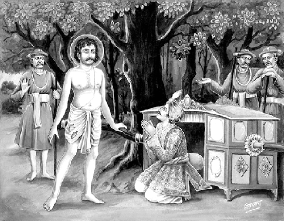
जडभरतद्वारा राजा रहूगण को उपदेश
[परमहंसगीता श्रीमद्भागवतमहापुराणके पंचम स्कन्धके अन्तर्गत रहूगणोपाख्यानके रूपमें प्राप्त होती है। इसमें परमहंस-अवस्थामें विचरण करते परमज्ञानी ब्राह्मण भरतकी सिन्धुनरेश रहूगणसे भेंट होने तथा उनके द्वारा राजाको दिये गये गूढ़ तात्त्विक उपदेशोंका वर्णन है। भरत नामक वे ब्राह्मणश्रेष्ठ सर्वदा अद्वैतभावमें स्थित रहनेके कारण बाह्यत: जड़ प्रतीत होते थे, अत: उन्हें जडभरत भी कहा जाता है। इस गीतामें दस इन्द्रियाँ तथा अहंकार—ये ग्यारह वृत्तियाँ मनकी बतायी गयी हैं, जो मायाके वशीभूत होकर सुख-दु:खका अनुभव कराती हैं। जब ज्ञानोदयद्वारा मायाका तिरस्कारकर आसक्तिको छोड़नेसे आत्मतत्त्वका ज्ञान होता है, तब मनुष्य सुख-दु:खसे परे हो जाता है, वह सदा परम आत्मानन्दमें डूबा रहता है। इस गीतामें विषयवार्ताका त्याग, आत्मानुसन्धान, अनासक्ति तथा गुरु एवं श्रीहरिके चरणोंका आश्रय ही मायासे बचनेके उपाय बताये गये हैं। पुनर्जन्मविषयक संक्षिप्त दृष्टान्त तथा भवाटवीके विस्तृत रूपकके कारण यह गीता रोचक तथा सुबोध भी हो गयी है। पाँच अध्यायोंवाली यह परमहंसगीता यहाँ सानुवाद प्रस्तुत की जा रही है—]
पहला अध्याय
जडभरत और राजा रहूगणकी भेंट
श्रीशुक उवाच
अथ सिन्धुसौवीरपते रहूगणस्य व्रजत इक्षुमत्यास्तटे तत्कुलपतिना शिबिकावाहपुरुषान्वेषणसमये दैवेनोपसादित: स द्विजवर उपलब्ध एष पीवा युवा संहननाङ्गो गोखरवद्धुरं वोढुमलमिति पूर्वविष्टिगृहीतै: सह गृहीत: प्रसभमतदर्ह उवाह शिबिकां स महानुभाव:॥ १॥
श्रीशुकदेवजी कहते हैं—[राजन्!] एक बार सिन्धुसौवीर देशका स्वामी राजा रहूगण पालकीपर चढ़कर जा रहा था। जब वह इक्षुमती नदीके किनारे पहुँचा, तब उसकी पालकी उठानेवाले कहारोंके जमादारको एक कहारकी आवश्यकता पड़ी। कहारकी खोज करते समय दैववश उसे ये ब्राह्मणदेवता मिल गये। इन्हें देखकर उसने सोचा, ‘यह मनुष्य हृष्ट-पुष्ट, जवान और गठीले अंगोंवाला है। इसलिये यह तो बैल या गधेके समान अच्छी तरह बोझा ढो सकता है।’ यह सोचकर उसने बेगारमें पकड़े हुए अन्य कहारोंके साथ इन्हें भी बलात् पकड़कर पालकीमें जोड़ दिया। महात्मा भरतजी यद्यपि किसी प्रकार इस कार्यके योग्य नहीं थे, तो भी वे बिना कुछ बोले चुपचाप पालकीको उठा ले चले॥ १॥
यदा हि द्विजवरस्येषुमात्रावलोकानुगतेर्न समाहिता पुरुषगतिस्तदा विषमगतां स्वशिबिकां रहूगण उपधार्य पुरुषानधिवहत आह हे वोढार: साध्वतिक्रमत किमिति विषममुह्यते यानमिति॥ २॥
वे द्विजवर, कोई जीव पैरोंतले दब न जाय—इस डरसे आगेकी एक बाण पृथ्वी देखकर चलते थे। इसलिये दूसरे कहारोंके साथ उनकी चालका मेल नहीं खाता था; अत: जब पालकी टेढ़ी-सीधी होने लगी, तब यह देखकर राजा रहूगणने पालकी उठानेवालोंसे कहा—‘अरे कहारो! अच्छी तरह चलो, पालकीको इस प्रकार ऊँची-नीची करके क्यों चलते हो?’॥ २॥
अथ त ईश्वरवच: सोपालम्भमुपाकर्ण्योपायतुरीयाच्छङ्कतमनसस्तं विज्ञापयाम्बभूवु:॥ ३॥
तब अपने स्वामीका यह आक्षेपयुक्त वचन सुनकर कहारोंको डर लगा कि कहीं राजा उन्हें दण्ड न दें। इसलिये उन्होंने राजासे इस प्रकार निवेदन किया॥ ३॥
न वयं नरदेव प्रमत्ता भवन्नियमानुपथा: साध्वेव वहाम:। अयमधुनैव नियुक्तोऽपि न द्रुतं व्रजति नानेन सह वोढुमु ह वयं पारयाम इति॥ ४॥
‘महाराज! यह हमारा प्रमाद नहीं है, हम आपकी नियम-मर्यादाके अनुसार ठीक-ठीक ही पालकी ले चल रहे हैं। यह एक नया कहार अभी-अभी पालकीमें लगाया गया है तो भी यह जल्दी-जल्दी नहीं चलता। हमलोग इसके साथ पालकी नहीं ले जा सकते’॥ ४॥
सांसर्गिको दोष एव नूनमेकस्यापि सर्वेषां सांसर्गिकाणां भवितुमर्हतीति निश्चित्य निशम्य कृपणवचो राजा रहूगण उपासितवृद्धोऽपि निसर्गेण बलात्कृत ईषदुत्थितमन्युरविस्पष्टब्रह्मतेजसं जातवेदसमिव रजसावृतमतिराह॥ ५॥
कहारोंके ये दीन वचन सुनकर राजा रहूगणने सोचा, ‘संसर्गसे उत्पन्न होनेवाला दोष एक व्यक्तिमें होनेपर भी उससे सम्बन्ध रखनेवाले सभी पुरुषोंमें आ सकता है। इसलिये यदि इसका प्रतीकार न किया गया तो धीरे-धीरे ये सभी कहार अपनी चाल बिगाड़ लेंगे।’ ऐसा सोचकर राजा रहूगणको कुछ क्रोध हो आया। यद्यपि उसने महापुरुषोंका सेवन किया था तथापि क्षत्रियस्वभाववश बलात् उसकी बुद्धि रजोगुणसे व्याप्त हो गयी और वह उन द्विजश्रेष्ठसे, जिनका ब्रह्मतेज भस्मसे ढके हुए अग्निके समान प्रकट नहीं था, इस प्रकार व्यंग्यभरे वचन कहने लगा—॥ ५॥
अहो कष्टं भ्रातर्व्यक्तमुरु परिश्रान्तो दीर्घमध्वानमेक एव ऊहिवान् सुचिरं नातिपीवा न संहननाङ्गो जरसा चोपद्रुतो भवान् सखे नो एवापर एते सङ्घट्टिन इति बहु विप्रलब्धोऽप्यविद्यया रचितद्रव्यगुणकर्माशयस्वचरमकलेवरेऽवस्तुनि संस्थानविशेषेऽहंममेत्यनध्यारोपितमिथ्याप्रत्ययो ब्रह्मभूतस्तूष्णीं शिबिकां पूर्ववदुवाह॥ ६॥
‘अरे भैया! बड़े दु:खकी बात है, अवश्य ही तुम बहुत थक गये हो। ज्ञात होता है, तुम्हारे इन साथियोंने तुम्हें तनिक भी सहारा नहीं लगाया। इतनी दूरसे तुम अकेले ही बड़ी देरसे पालकी ढोते चले आ रहे हो। तुम्हारा शरीर भी तो विशेष मोटा-ताजा और हट्टा-कट्टा नहीं है, और मित्र! बुढ़ापेने अलग तुम्हें दबा रखा है।’ इस प्रकार बहुत ताना मारनेपर भी वे पहलेकी ही भाँति चुपचाप पालकी उठाये चलते रहे! उन्होंने इसका कुछ भी बुरा न माना; क्योंकि उनकी दृष्टिमें तो पंचभूत, इन्द्रिय और अन्त:करणका संघात यह अपना अन्तिम शरीर अविद्याका ही कार्य था। वह विविध अंगोंसे युक्त दिखायी देनेपर भी वस्तुत: था ही नहीं, इसलिये उसमें उनका मैं-मेरेपनका मिथ्या अध्यास सर्वथा निवृत्त हो गया था और वे ब्रह्मरूप हो गये थे॥ ६॥
अथ पुन: स्वशिबिकायां विषमगतायां प्रकुपित उवाच रहूगण: किमिदमरे त्वं जीवन्मृतो मां कदर्थीकृत्य भर्तृशासनमतिचरसि प्रमत्तस्य च ते करोमि चिकित्सां दण्डपाणिरिव जनताया यथा प्रकृतिं स्वां भजिष्यस इति॥ ७॥
(किन्तु) पालकी अब भी सीधी चालसे नहीं चल रही है—यह देखकर राजा रहूगण क्रोधसे आग-बबूला हो गया और कहने लगा, ‘अरे! यह क्या? क्या तू जीता ही मर गया है? तू मेरा निरादर करके (मेरी) आज्ञाका उल्लंघन कर रहा है! मालूम होता है, तू सर्वथा प्रमादी है। अरे! जैसे दण्डपाणि यमराज जनसमुदायको उसके अपराधोंके लिये दण्ड देते हैं, उसी प्रकार मैं भी अभी तेरा इलाज किये देता हूँ। तब तेरे होश ठिकाने आ जायँगे’॥ ७॥
एवं बह्वबद्धमपि भाषमाणं नरदेवाभिमानं रजसा तमसानुविद्धेन मदेन तिरस्कृताशेषभगवत्प्रियनिकेतं पण्डितमानिनं स भगवान् ब्राह्मणो ब्रह्मभूत: सर्वभूतसुहृदात्मा योगेश्वरचर्यायां नातिव्युत्पन्नमतिं स्मयमान इव विगतस्मय इदमाह॥ ८॥
रहूगणको राजा होनेका अभिमान था, इसलिये वह इसी प्रकार बहुत-सी अनाप-शनाप बातें बोल गया। वह अपनेको बड़ा पण्डित समझता था, अत: रज-तमयुक्त अभिमानके वशीभूत होकर उसने भगवान्के अनन्य प्रीतिपात्र भक्तवर भरतजीका तिरस्कार कर डाला। योगेश्वरोंकी विचित्र कहनी-करनीका तो उसे कुछ पता ही न था। उसकी ऐसी कच्ची बुद्धि देखकर वे सम्पूर्ण प्राणियोंके सुहृद् एवं आत्मा, ब्रह्मभूत ब्राह्मणदेवता मुसकराये और बिना किसी प्रकारका अभिमान किये इस प्रकार कहने लगे॥ ८॥
ब्राह्मण उवाच
त्वयोदितं व्यक्तमविप्रलब्धं
भर्तु: स मे स्याद्यदि वीर भार:।
गन्तुर्यदि स्यादधिगम्यमध्वा
पीवेति राशौ न विदां प्रवाद:॥ ९॥
जडभरतने कहा—राजन्! तुमने जो कुछ कहा वह यथार्थ है। उसमें कोई उलाहना नहीं है। यदि भार नामकी कोई वस्तु है तो ढोनेवालेके लिये है, यदि कोई मार्ग है तो वह चलनेवालेके लिये है। मोटापन भी उसीका है, यह सब शरीरके लिये कहा जाता है, आत्माके लिये नहीं। ज्ञानीजन ऐसी बात नहीं करते॥ ९॥
स्थौल्यं कार्श्यं व्याधय आधयश्च
क्षुत्तृड्भयं कलिरिच्छा जरा च।
निद्रा रतिर्मन्युरहंमद: शुचो
देहेन जातस्य हि मे न सन्ति॥ १०॥
स्थूलता, कृशता, आधि, व्याधि, भूख, प्यास, भय, कलह, इच्छा, बुढ़ापा, निद्रा, प्रेम, क्रोध, अभिमान और शोक—ये सब धर्म देहाभिमानको लेकर उत्पन्न होनेवाले जीवमें रहते हैं; मुझमें इनका लेश भी नहीं है॥ १०॥
जीवन्मृतत्वं नियमेन राजन्
आद्यन्तवद्यद्विकृतस्य दृष्टम्।
स्वस्वाम्यभावो ध्रुव ईडॺ यत्र
तर्ह्युच्यतेऽसौ विधिकृत्ययोग:॥ ११॥
राजन्! तुमने जो जीने-मरनेकी बात कही—सो जितने भी विकारी पदार्थ हैं, उन सभीमें नियमितरूपसे ये दोनों बातें देखी जाती हैं; क्योंकि वे सभी आदि-अन्तवाले हैं। यशस्वी नरेश! जहाँ स्वामी-सेवकभाव स्थिर हो, वहीं आज्ञापालनादिका नियम भी लागू हो सकता है॥ ११॥
विशेषबुद्धेर्विवरं मनाक् च
पश्याम यन्न व्यवहारतोऽन्यत्।
क ईश्वरस्तत्र किमीशितव्यं
तथापि राजन् करवाम किं ते॥ १२॥
‘तुम राजा हो और मैं प्रजा हूँ’ इस प्रकारकी भेदबुद्धिके लिये मुझे व्यवहारके सिवा और कहीं तनिक भी अवकाश नहीं दिखायी देता। परमार्थदृष्टिसे देखा जाय तो किसे स्वामी कहें और किसे सेवक? फिर भी राजन्! तुम्हें यदि स्वामित्वका अभिमान है तो कहो, मैं तुम्हारी क्या सेवा करूँ?॥ १२॥
उन्मत्तमत्तजडवत्स्वसंस्थां
गतस्य मे वीर चिकित्सितेन।
अर्थ: कियान् भवता शिक्षितेन
स्तब्धप्रमत्तस्य च पिष्टपेष:॥ १३॥
वीरवर! मैं मत्त, उन्मत्त और जडके समान अपनी ही स्थितिमें रहता हूँ। मेरा इलाज करके तुम्हें क्या हाथ लगेगा? यदि मैं वास्तवमें जड और प्रमादी ही हूँ तो भी मुझे शिक्षा देना पिसे हुएको पीसनेके समान व्यर्थ ही होगा॥ १३॥
श्रीशुक उवाच
एतावदनुवादपरिभाषया प्रत्युदीर्य मुनिवर उपशमशील उपरतानात्म्यनिमित्त उपभोगेन कर्मारब्धं व्यपनयन् राजयानमपि तथोवाह॥ १४॥
श्रीशुकदेवजी कहते हैं—[परीक्षित्!] मुनिवर जडभरत यथार्थ तत्त्वका उपदेश करते हुए इतना उत्तर देकर मौन हो गये। उनका देहात्मबुद्धिका हेतुभूत अज्ञान निवृत्त हो चुका था, इसलिये वे परम शान्त हो गये थे। अत: इतना कहकर भोगद्वारा प्रारब्धक्षय करनेके लिये वे फिर पहलेके ही समान उस पालकीको कन्धेपर लेकर चलने लगे॥ १४॥
स चापि पाण्डवेय सिन्धुसौवीरपतिस्तत्त्वजिज्ञासायां सम्यक्श्रद्धयाधिकृताधिकारस्तद्धृदयग्रन्थिमोचनं द्विजवच आश्रुत्य बहुयोगग्रन्थसम्मतं त्वरयावरुह्य शिरसा पादमूलमुपसृत: क्षमापयन् विगतनृपदेवस्मय उवाच॥ १५॥
परीक्षित्! सिन्धु-सौवीरनरेश रहूगण भी अपनी उत्तम श्रद्धाके कारण तत्त्वजिज्ञासाका पूरा अधिकारी था। जब उसने उन द्विजश्रेष्ठके अनेकों योग-ग्रन्थोंसे समर्थित और हृदयकी ग्रन्थिका छेदन करनेवाले ये वाक्य सुने, तब वह तत्काल पालकीसे उतर पड़ा। उसका राजमद सर्वथा दूर हो गया और वह उनके चरणोंमें सिर रखकर अपना अपराध क्षमा कराते हुए इस प्रकार कहने लगा॥ १५॥
कस्त्वं निगूढश्चरसि द्विजानां
बिभर्षि सूत्रं कतमोऽवधूत:।
कस्यासि कुत्रत्य इहापि कस्मात्
क्षेमाय नश्चेदसि नोत शुक्ल:॥ १६॥
[देव!] आपने द्विजोंका चिह्न यज्ञोपवीत धारण कर रखा है, बतलाइये इस प्रकार प्रच्छन्नभावसे विचरनेवाले आप कौन हैं? क्या आप दत्तात्रेय आदि अवधूतोंमेंसे कोई हैं? आप किसके पुत्र हैं, आपका कहाँ जन्म हुआ है और यहाँ कैसे आपका पदार्पण हुआ है? यदि आप हमारा कल्याण करने पधारे हैं तो क्या आप साक्षात् सत्त्वमूर्ति भगवान् कपिलजी ही तो नहीं हैं?॥ १६॥
नाहं विशङ्के सुरराजवज्रा-
न्न त्र्यक्षशूलान्न यमस्य दण्डात्।
नाग्न्यर्कसोमानिलवित्तपास्त्रा-
च्छङ्के भृशं ब्रह्मकुलावमानात्॥ १७॥
मुझे इन्द्रके वज्रका कोई डर नहीं है, न मैं महादेवजीके त्रिशूलसे डरता हूँ और न यमराजके दण्डसे। मुझे अग्नि, सूर्य, चन्द्र, वायु और कुबेरके अस्त्र-शस्त्रोंका भी कोई भय नहीं है; परन्तु मैं ब्राह्मणकुलके अपमानसे बहुत ही डरता हूँ॥ १७॥
तद् ब्रूह्यसङ्गो जडवन्निगूढ-
विज्ञानवीर्यो विचरस्यपार:।
वचांसि योगग्रथितानि साधो
न न: क्षमन्ते मनसापि भेत्तुम्॥ १८॥
अत: कृपया बतलाइये, इस प्रकार अपने विज्ञान और शक्तिको छिपाकर मूर्खोंकी भाँति विचरनेवाले आप कौन हैं? विषयोंसे तो आप सर्वथा अनासक्त जान पड़ते हैं। मुझे आपकी कोई थाह नहीं मिल रही है। हे साधो! आपके योगयुक्त वाक्योंकी बुद्धिद्वारा आलोचना करनेपर भी मेरा सन्देह दूर नहीं होता॥ १८॥
अहं च योगेश्वरमात्मतत्त्व-
विदां मुनीनां परमं गुरुं वै।
प्रष्टुं प्रवृत्त: किमिहारणं तत्
साक्षाद्धरं ज्ञानकलावतीर्णम्॥ १९॥
मैं आत्मज्ञानी मुनियोंके परम गुरु और साक्षात् श्रीहरिकी ज्ञानशक्तिके अवतार योगेश्वर भगवान् कपिलसे यह पूछनेके लिये जा रहा था कि इस लोकमें एकमात्र शरण लेनेयोग्य कौन है?॥ १९॥
स वै भवाँल्लोकनिरीक्षणार्थ-
मव्यक्तलिङ्गो विचरत्यपिस्वित्।
योगेश्वराणां गतिमन्धबुद्धि:
कथं विचक्षीत गृहानुबन्ध:॥ २०॥
क्या आप वे कपिलमुनि ही हैं, जो लोकोंकी दशा देखनेके लिये इस प्रकार अपना रूप छिपाकर विचर रहे हैं? भला, घरमें आसक्त रहनेवाला विवेकहीन पुरुष योगेश्वरोंकी गति कैसे जान सकता है?॥ २०॥
दृष्ट: श्रम: कर्मत आत्मनो वै
भर्तुर्गन्तुर्भवतश्चानुमन्ये।
यथासतोदानयनाद्यभावात्
समूल इष्टो व्यवहारमार्ग:॥ २१॥
मैंने युद्धादि कर्मोंमें अपनेको श्रम होते देखा है, इसलिये मेरा अनुमान है कि बोझा ढोने और मार्गमें चलनेसे आपको भी अवश्य ही होता होगा। मुझे तो व्यवहार-मार्ग भी सत्य ही जान पड़ता है; क्योंकि मिथ्या घड़ेसे जल लाना आदि कार्य नहीं होता॥ २१॥
स्थाल्यग्नितापात्पयसोऽभिताप-
स्तत्तापतस्तण्डुलगर्भरन्धि:।
देहेन्द्रियास्वाशयसन्निकर्षात्
तत्संसृति: पुरुषस्यानुरोधात्॥ २२॥
(देहादिके धर्मोंका आत्मापर कोई प्रभाव ही नहीं होता, ऐसी बात भी नहीं है) चूल्हेपर रखी हुई बटलोई जब अग्निसे तपने लगती है, तब उसका जल भी खौलने लगता है और फिर उस जलसे चावलका भीतरी भाग भी पक जाता है। इसी प्रकार अपनी उपाधिके धर्मोंका अनुवर्तन करनेके कारण देह, इन्द्रिय, प्राण और मनकी सन्निधिसे आत्माको भी उनके धर्म श्रमादिका अनुभव होता ही है॥ २२॥
शास्ताभिगोप्ता नृपति: प्रजानां
य: किङ्करो वै न पिनष्टि पिष्टम्।
स्वधर्ममाराधनमच्युतस्य
यदीहमानो विजहात्यघौघम्॥ २३॥
आपने जो दण्डादिकी व्यर्थता बतायी, सो राजा तो प्रजाका शासन और पालन करनेके लिये नियुक्त किया हुआ उसका दास ही है। उसका उन्मत्तादिको दण्ड देना पिसे हुएको पीसनेके समान व्यर्थ नहीं हो सकता; क्योंकि अपने धर्मका आचरण करना भगवान्की सेवा ही है, उसे करनेवाला व्यक्ति अपनी सम्पूर्ण पापराशिको नष्ट कर देता है॥ २३॥
तन्मे भवान्नरदेवाभिमान-
मदेन तुच्छीकृतसत्तमस्य।
कृषीष्ट मैत्रीदृशमार्तबन्धो
यथा तरे सदवध्यानमंह:॥ २४॥
दीनबन्धो! राजत्वके अभिमानसे उन्मत्त होकर मैंने आप-जैसे परम साधुकी अवज्ञा की है। अब आप ऐसी कृपादृष्टि कीजिये, जिससे इस साधु-अवज्ञारूप अपराधसे मैं मुक्त हो जाऊँ॥ २४॥
न विक्रिया विश्वसुहृत्सखस्य
साम्येन वीताभिमतेस्तवापि।
महद्विमानात् स्वकृताद्धि मादृङ्
नङ्क्ष्यत्यदूरादपि शूलपाणि:॥ २५॥
आप देहाभिमानशून्य और विश्वबन्धु श्रीहरिके अनन्य-भक्त हैं; इसलिये सबमें समान दृष्टि होनेसे इस मानापमानके कारण आपमें कोई विकार नहीं हो सकता तथापि एक महापुरुषका अपमान करनेके कारण मेरे-जैसा पुरुष साक्षात् त्रिशूलपाणि महादेवजीके समान प्रभावशाली होनेपर भी, अपने अपराधसे अवश्य थोड़े ही कालमें नष्ट हो जायगा॥ २५॥
॥ इति श्रीमद्भागवते महापुराणे परमहंसगीतायां प्रथमोऽध्याय:॥ १॥
दूसरा अध्याय
राजा रहूगणको भरतजीका उपदेश
ब्राह्मण उवाच
अकोविद: कोविदवादवादान्
वदस्यथो नातिविदां वरिष्ठ:।
न सूरयो हि व्यवहारमेनं
तत्त्वावमर्शेन सहामनन्ति॥ १॥
जडभरतने कहा—[राजन्!] तुम अज्ञानी होनेपर भी पण्डितोंके समान ऊपर-ऊपरकी तर्क-वितर्कयुक्त बात कह रहे हो। इसलिये श्रेष्ठ ज्ञानियोंमें तुम्हारी गणना नहीं हो सकती। तत्त्वज्ञानी पुरुष इस अविचारसिद्ध स्वामी-सेवक आदि व्यवहारको तत्त्वविचारके समय सत्यरूपसे स्वीकार नहीं करते॥ १॥
तथैव राजन्नुरुगार्हमेध-
वितानविद्योरुविजृम्भितेषु।
न वेदवादेषु हि तत्त्ववाद:
प्रायेण शुद्धो नु चकास्ति साधु:॥ २॥
राजन्! लौकिक व्यवहारके समान ही वैदिक व्यवहार भी सत्य नहीं है, क्योंकि वेदवाक्य भी अधिकतर गृहस्थजनोचित यज्ञविधिके विस्तारमें ही व्यस्त हैं, राग-द्वेषादि दोषोंसे रहित विशुद्ध तत्त्वज्ञानकी पूरी-पूरी अभिव्यक्ति प्राय: उनमें भी नहीं हुई है॥ २॥
न तस्य तत्त्वग्रहणाय साक्षाद्
वरीयसीरपि वाच: समासन्।
स्वप्ने निरुक्त्या गृहमेधिसौख्यं
न यस्य हेयानुमितं स्वयं स्यात्॥ ३॥
जिसे गृहस्थोचित यज्ञादि कर्मोंसे प्राप्त होनेवाला स्वर्गादि सुख स्वप्नके समान हेय नहीं जान पड़ता, उसे तत्त्वज्ञान करानेमें साक्षात् उपनिषद्-वाक्य भी समर्थ नहीं है॥ ३॥
यावन्मनो रजसा पूरुषस्य
सत्त्वेन वा तमसा वानुरुद्धम्।
चेतोभिराकूतिभिरातनोति
निरङ्कुशं कुशलं चेतरं वा॥ ४॥
जबतक मनुष्यका मन सत्त्व, रज अथवा तमोगुणके वशीभूत रहता है, तबतक वह बिना किसी अंकुशके उसकी ज्ञानेन्द्रिय और कर्मेन्द्रियोंसे शुभाशुभ कर्म कराता रहता है॥ ४॥
स वासनात्मा विषयोपरक्तो
गुणप्रवाहो विकृत: षोडशात्मा।
बिभ्रत्पृथङ्नामभि रूपभेद-
मन्तर्बहिष्ट्वं च पुरैस्तनोति॥ ५॥
यह मन वासनामय, विषयासक्त, गुणोंसे प्रेरित, विकारी और भूत एवं इन्द्रियरूप सोलह कलाओंमें मुख्य है। यही भिन्न-भिन्न नामोंसे देवता और मनुष्यादिरूप धारण करके शरीररूप उपाधियोंके भेदसे जीवकी उत्तमता और अधमताका कारण होता है॥ ५॥
दु:खं सुखं व्यतिरिक्तं च तीव्रं
कालोपपन्नं फलमाव्यनक्ति।
आलिङ्गॺ मायारचितान्तरात्मा
स्वदेहिनं संसृतिचक्रकूट:॥ ६॥
यह मायामय मन संसारचक्रमें छलनेवाला है, यही अपनी देहके अभिमानी जीवसे मिलकर उसे कालक्रमसे प्राप्त हुए सुख-दु:ख और इनसे व्यतिरिक्त मोहरूप अवश्यम्भावी फलोंकी अभिव्यक्ति करता है॥ ६॥
तावानयं व्यवहार: सदावि:
क्षेत्रज्ञसाक्ष्यो भवति स्थूलसूक्ष्म:।
तस्मान्मनो लिङ्गमदो वदन्ति
गुणागुणत्वस्य परावरस्य॥ ७॥
जबतक यह मन रहता है, तभीतक जाग्रत् और स्वप्नावस्थाका व्यवहार प्रकाशित होकर जीवका दृश्य बनता है। इसलिये पण्डितजन मनको ही त्रिगुणमय अधम संसारका और गुणातीत परमोत्कृष्ट मोक्षपदका कारण बताते हैं॥ ७॥
गुणानुरक्तं व्यसनाय जन्तो:
क्षेमाय नैर्गुण्यमथो मन: स्यात्।
यथा प्रदीपो घृतवर्तिमश्नन्
शिखा: सधूमा भजति ह्यन्यदा स्वम्।
पदं तथा गुणकर्मानुबद्धं
वृत्तीर्मन: श्रयतेऽन्यत्र तत्त्वम्॥ ८॥
विषयासक्त मन जीवको संसार-संकटमें डाल देता है, विषयहीन होनेपर वही उसे शान्तिमय मोक्षपद प्राप्त करा देता है। जिस प्रकार घीसे भीगी हुई बत्तीको खानेवाले दीपकसे तो धुएँवाली शिखा निकलती रहती है और जब घी समाप्त हो जाता है, तब वह अपने कारण अग्नितत्त्वमें लीन हो जाता है—उसी प्रकार विषय और कर्मोंसे आसक्त हुआ मन तरह-तरहकी वृत्तियोंका आश्रय लिये रहता है और इनसे मुक्त होनेपर वह अपने तत्त्वमें लीन हो जाता है॥ ८॥
एकादशासन्मनसो हि वृत्तय
आकूतय: पञ्च धियोऽभिमान:।
मात्राणि कर्माणि पुरं च तासां
वदन्ति हैकादश वीर भूमी:॥ ९॥
वीरवर! पाँच कर्मेन्द्रिय, पाँच ज्ञानेन्द्रिय और एक अहंकार—ये ग्यारह मनकी वृत्तियाँ हैं तथा पाँच प्रकारके कर्म, पाँच तन्मात्र और एक शरीर—ये ग्यारह उनके आधारभूत विषय कहे जाते हैं॥ ९॥
गन्धाकृतिस्पर्शरसश्रवांसि
विसर्गरत्यर्त्यभिजल्पशिल्पा:।
एकादशं स्वीकरणं ममेति
शय्यामहं द्वादशमेक आहु:॥ १०॥
गन्ध, रूप, स्पर्श, रस और शब्द—ये पाँच ज्ञानेन्द्रियोंके विषय हैं; मलत्याग, सम्भोग, गमन, भाषण और लेना-देना आदि व्यापार—ये पाँच कर्मेन्द्रियोंके विषय हैं तथा शरीरको ‘यह मेरा है’ इस प्रकार स्वीकार करना अहंकारका विषय है। कुछ लोग अहंकारको मनकी बारहवीं वृत्ति और उसके आश्रय शरीरको बारहवाँ विषय मानते हैं॥ १०॥
द्रव्यस्वभावाशयकर्मकालै-
रेकादशामी मनसो विकारा:।
सहस्रश: शतश: कोटिशश्च
क्षेत्रज्ञतो न मिथो न स्वत: स्यु:॥ ११॥
ये मनकी ग्यारह वृत्तियाँ द्रव्य (विषय), स्वभाव, आशय (संस्कार), कर्म और कालके द्वारा सैकड़ों, हजारों और करोड़ों भेदोंमें परिणत हो जाती हैं। किन्तु इनकी सत्ता क्षेत्रज्ञ आत्माकी सत्तासे ही है, स्वत: या परस्पर मिलकर नहीं है॥ ११॥
क्षेत्रज्ञ एता मनसो विभूती-
र्जीवस्य मायारचितस्य नित्या:।
आविर्हिता: क्वापि तिरोहिताश्च
शुद्धो विचष्टे ह्यविशुद्धकर्तु:॥ १२॥
ऐसा होनेपर भी मनसे क्षेत्रज्ञका कोई सम्बन्ध नहीं है। यह तो जीवकी ही मायानिर्मित उपाधि है। यह प्राय: संसारबन्धनमें डालनेवाले अविशुद्ध कर्मोंमें ही प्रवृत्त रहता है। इसकी उपर्युक्त वृत्तियाँ प्रवाहरूपसे नित्य ही रहती हैं; जाग्रत् और स्वप्नके समय वे प्रकट हो जाती हैं और सुषुप्तिमें छिप जाती हैं। इन दोनों ही अवस्थाओंमें क्षेत्रज्ञ, जो विशुद्ध चिन्मात्र है, मनकी इन वृत्तियोंको साक्षीरूपसे देखता रहता है॥ १२॥
क्षेत्रज्ञ आत्मा पुरुष: पुराण:
साक्षात्स्वयंज्योतिरज: परेश:।
नारायणो भगवान् वासुदेव:
स्वमाययात्मन्यवधीयमान:॥ १३॥
यह क्षेत्रज्ञ परमात्मा सर्वव्यापक, जगत्का आदिकारण, परिपूर्ण, अपरोक्ष, स्वयंप्रकाश, अजन्मा, ब्रह्मादिका भी नियन्ता और अपने अधीन रहनेवाली मायाके द्वारा सबके अन्त:करणोंमें रहकर जीवोंको प्रेरित करनेवाला समस्त भूतोंका आश्रयरूप भगवान् वासुदेव है॥ १३॥
यथानिल: स्थावरजङ्गमाना-
मात्मस्वरूपेण निविष्ट ईशेत्।
एवं परो भगवान् वासुदेव:
क्षेत्रज्ञ आत्मेदमनुप्रविष्ट:॥ १४॥
जिस प्रकार वायु सम्पूर्ण स्थावर-जंगम प्राणियोंमें प्राणरूपसे प्रविष्ट होकर उन्हें प्रेरित करती है, उसी प्रकार वह परमेश्वर भगवान् वासुदेव सर्वसाक्षी आत्मस्वरूपसे इस सम्पूर्ण प्रपंचमें ओतप्रोत है॥ १४॥
न यावदेतां तनुभृन्नरेन्द्र
विधूय मायां वयुनोदयेन।
विमुक्तसङ्गो जितषट्सपत्नो
वेदात्मतत्त्वं भ्रमतीह तावत्॥ १५॥
न यावदेतन्मन आत्मलिङ्गं
संसारतापावपनं जनस्य।
यच्छोकमोहामयरागलोभ-
वैरानुबन्धं ममतां विधत्ते॥ १६॥
राजन्! जबतक मनुष्य ज्ञानोदयके द्वारा इस मायाका तिरस्कार कर, सबकी आसक्ति छोड़कर तथा काम-क्रोधादि छ: शत्रुओंको जीतकर आत्मतत्त्वको नहीं जान लेता और जबतक वह आत्माके उपाधिरूप मनको संसारदु:खका क्षेत्र नहीं समझता, तबतक वह इस लोकमें यों ही भटकता रहता है; क्योंकि यह चित्त उसके शोक, मोह, रोग, राग, लोभ और वैर आदिके संस्कार तथा ममताकी वृद्धि करता रहता है॥ १५-१६॥
भ्रातृव्यमेनं तददभ्रवीर्य-
मुपेक्षयाध्येधितमप्रमत्त:।
गुरोर्हरेश्चरणोपासनास्त्रो
जहि व्यलीकं स्वयमात्ममोषम्॥ १७॥
यह मन ही तुम्हारा बड़ा बलवान् शत्रु है। तुम्हारे उपेक्षा करनेसे इसकी शक्ति और भी बढ़ गयी है। यह यद्यपि स्वयं तो सर्वथा मिथ्या है तथापि इसने तुम्हारे आत्मस्वरूपको आच्छादित कर रखा है। इसलिये तुम सावधान होकर श्रीगुरु और हरिके चरणोंकी उपासनाके अस्त्रसे इसे मार डालो॥ १७॥
॥ इति श्रीमद्भागवते महापुराणे परमहंसगीतायां द्वितीयोऽध्याय:॥ २॥
तीसरा अध्याय
रहूगणका प्रश्न और भरतजीका समाधान
रहूगण उवाच
नमो नम: कारणविग्रहाय
स्वरूपतुच्छीकृतविग्रहाय।
नमोऽवधूत द्विजबन्धुलिङ्ग-
निगूढनित्यानुभवाय तुभ्यम्॥ १॥
राजा रहूगणने कहा—हे योगेश्वर! मैं आपको नमस्कार करता हूँ। आपने जगत्का उद्धार करनेके लिये ही यह देह धारण की है। अपने परमानन्दमय स्वरूपका अनुभव करके आप इस स्थूलशरीरसे उदासीन हो गये हैं तथा एक जड ब्राह्मणके वेषसे अपने नित्यज्ञानमय स्वरूपको जनसाधारणकी दृष्टिसे ओझल किये हुए हैं। मैं आपको बार-बार नमस्कार करता हूँ॥ १॥
ज्वरामयार्तस्य यथागदं सत्
निदाघदग्धस्य यथा हिमाम्भ:।
कुदेहमानाहिविदष्टदृष्टे-
र्ब्रह्मन् वचस्तेऽमृतमौषधं मे॥ २॥
हे ब्रह्मन्! जिस प्रकार ज्वरसे पीड़ित रोगीके लिये मीठी ओषधि और धूपसे तपे हुए पुरुषके लिये शीतल जल अमृततुल्य होता है, उसी प्रकार मेरे लिये, जिसकी विवेकबुद्धिको देहाभिमानरूप विषैले सर्पने डस लिया है, आपके वचन अमृतमय ओषधिके समान हैं॥ २॥
तस्माद्भवन्तं मम संशयार्थं
प्रक्ष्यामि पश्चादधुना सुबोधम्।
अध्यात्मयोगग्रथितं तवोक्त-
माख्याहि कौतूहलचेतसो मे॥ ३॥
इसलिये मैं आपसे अपने संशयोंकी निवृत्ति तो पीछे कराऊँगा। पहले तो इस समय आपने जो अध्यात्मयोगमय उपदेश दिया है, उसीको सरल करके समझाइये, उसे समझनेकी मुझे बड़ी उत्कण्ठा है॥ ३॥
यदाह योगेश्वर दृश्यमानं
क्रियाफलं सद्व्यवहारमूलम्।
न ह्यञ्जसा तत्त्वविमर्शनाय
भवानमुष्मिन् भ्रमते मनो मे॥ ४॥
हे योगेश्वर! आपने जो यह कहा कि भार उठानेकी क्रिया तथा उससे जो श्रमरूप फल होता है, वे दोनों ही प्रत्यक्ष होनेपर भी केवल व्यवहारमूलके ही हैं, वास्तवमें सत्य नहीं है—वे तत्त्वविचारके सामने कुछ भी नहीं ठहरते—सो इस विषयमें मेरा मन चक्कर खा रहा है, आपके इस कथनका मर्म मेरी समझमें नहीं आ रहा है॥ ४॥
ब्राह्मण उवाच
अयं जनो नाम चलन् पृथिव्यां
य: पार्थिव: पार्थिव कस्य हेतो:।
तस्यापि चाङ्घ्रॺोरधि गुल्फजङ्घा-
जानूरुमध्योरशिरोधरांसा:॥ ५॥
जडभरतने कहा—हे पृथ्वीपते! यह देह पृथ्वीका विकार है, पाषाणादिसे इसका क्या भेद है? जब यह किसी कारणसे पृथ्वीपर चलने लगता है, तब इसके भारवाही आदि नाम पड़ जाते हैं। इसके दो चरण हैं; उनके ऊपर क्रमश: टखने, पिंडली, घुटने, जाँघ, कमर, वक्ष:स्थल, गर्दन और कंधे आदि अंग हैं॥ ५॥
अंसेऽधि दार्वी शिबिका च यस्यां
सौवीरराजेत्यपदेश आस्ते।
यस्मिन् भवान् रूढनिजाभिमानो
राजास्मि सिन्धुष्विति दुर्मदान्ध:॥ ६॥
कंधोंके ऊपर लकड़ीकी पालकी रखी हुई है; उसमें भी सौवीरराज नामका एक पार्थिव विकार ही है, जिसमें आत्मबुद्धिरूप अभिमान करनेसे तुम ‘मैं सिन्धुदेशका राजा हूँ’ इस प्रबल मदसे अंधे हो रहे हो॥ ६॥
शोच्यानिमांस्त्वमधिकष्टदीनान्
विष्टॺा निगृह्णन्निरनुग्रहोऽसि।
जनस्य गोप्तास्मि विकत्थमानो
न शोभसे वृद्धसभासु धृष्ट:॥ ७॥
किन्तु इसीसे तुम्हारी कोई श्रेष्ठता सिद्ध नहीं होती, वास्तवमें तो तुम बड़े क्रूर और धृष्ट ही हो। तुमने इन बेचारे दीन-दुखिया कहारोंको बेगारमें पकड़कर पालकीमें जोत रखा है और फिर महापुरुषोंकी सभामें बढ़-बढ़कर बातें बनाते हो कि मैं लोकोंकी रक्षा करनेवाला हूँ। यह तुम्हें शोभा नहीं देता॥ ७॥
यदा क्षितावेव चराचरस्य
विदाम निष्ठां प्रभवं च नित्यम्।
तन्नामतोऽन्यद् व्यवहारमूलं
निरूप्यतां सत् क्रिययानुमेयम्॥ ८॥
हम देखते हैं कि सम्पूर्ण चराचर भूत सर्वदा पृथ्वीसे ही उत्पन्न होते हैं और पृथ्वीमें ही लीन होते हैं; अत: उनके क्रियाभेदके कारण जो अलग-अलग नाम पड़ गये हैं—बताओ तो, उनके सिवा व्यवहारका और क्या मूल है?॥ ८॥
एवं निरुक्तं क्षितिशब्दवृत्त-
मसन्निधानात्परमाणवो ये।
अविद्यया मनसा कल्पितास्ते
येषां समूहेन कृतो विशेष:॥ ९॥
इस प्रकार ‘पृथ्वी’ शब्दका व्यवहार भी मिथ्या ही है; वास्तविक नहीं है; क्योंकि यह अपने उपादानकारण सूक्ष्म परमाणुओंमें लीन हो जाती है। और जिनके मिलनेसे पृथ्वीरूप कार्यकी सिद्धि होती है, वे परमाणु अविद्यावश मनसे ही कल्पना किये हुए हैं। वास्तवमें उनकी भी सत्ता नहीं है॥ ९॥
एवं कृशं स्थूलमणुर्बृहद्यद्
असच्च सज्जीवमजीवमन्यत्।
द्रव्यस्वभावाशयकालकर्म-
नाम्नाजयावेहि कृतं द्वितीयम्॥ १०॥
इसी प्रकार और भी जो कुछ पतला-मोटा, छोटा-बड़ा, कार्य-कारण तथा चेतन और अचेतन आदि गुणोंसे युक्त द्वैत-प्रपंच है—उसे भी द्रव्य, स्वभाव, आशय, काल और कर्म आदि नामोंवाली भगवान्की मायाका ही कार्य समझो॥ १०॥
ज्ञानं विशुद्धं परमार्थमेक-
मनन्तरं त्वबहिर्ब्रह्म सत्यम्।
प्रत्यक् प्रशान्तं भगवच्छब्दसंज्ञं
यद्वासुदेवं कवयो वदन्ति॥ ११॥
विशुद्ध परमार्थरूप, अद्वितीय तथा भीतर-बाहरके भेदसे रहित परिपूर्ण ज्ञान ही सत्य वस्तु है। वह सर्वान्तर्वर्ती और सर्वथा निर्विकार है। उसीका नाम ‘भगवान्’ है और उसीको पण्डितजन ‘वासुदेव’ कहते हैं॥ ११॥
रहूगणैतत्तपसा न याति
न चेज्यया निर्वपणाद् गृहाद्वा।
न च्छन्दसा नैव जलाग्निसूर्यै-
र्विना महत्पादरजोऽभिषेकम्॥ १२॥
हे रहूगण! महापुरुषोंके चरणोंकी धूलिसे अपनेको नहलाये बिना केवल तप, यज्ञादि वैदिक कर्म, अन्नादिके दान, अतिथिसेवा, दीनसेवा आदि गृहस्थोचित धर्मानुष्ठान, वेदाध्ययन अथवा जल, अग्नि या सूर्यकी उपासना आदि किसी भी साधनसे यह परमात्मज्ञान प्राप्त नहीं हो सकता॥ १२॥
यत्रोत्तमश्लोकगुणानुवाद:
प्रस्तूयते ग्राम्यकथाविघात:।
निषेव्यमाणोऽनुदिनं मुमुक्षो-
र्मतिं सतीं यच्छति वासुदेवे॥ १३॥
इसका कारण यह है कि महापुरुषोंके समाजमें सदा पवित्रकीर्ति श्रीहरिके गुणोंकी चर्चा होती रहती है, जिससे विषयवार्ता तो पास ही नहीं फटकने पाती। और जब भगवत्कथाका नित्यप्रति सेवन किया जाता है, तब वह मोक्षाकांक्षी पुरुषकी शुद्ध बुद्धिको भगवान् वासुदेवमें लगा देती है॥ १३॥
अहं पुरा भरतो नाम राजा
विमुक्तदृष्टश्रुतसङ्गबन्ध:।
आराधनं भगवत ईहमानो
मृगोऽभवं मृगसङ्गाद्धतार्थ:॥ १४॥
पूर्वजन्ममें मैं भरत नामका राजा था। ऐहिक और पारलौकिक दोनों प्रकारके विषयोंसे विरक्त होकर भगवान्की आराधनामें हीलगा रहता था; तो भी एक मृगमें आसक्ति हो जानेसे मुझे परमार्थसे भ्रष्ट होकर अगले जन्ममें मृग बनना पड़ा॥ १४॥
सा मां स्मृतिर्मृगदेहेऽपि वीर
कृष्णार्चनप्रभवा नो जहाति।
अथो अहं जनसङ्गादसङ्गो
विशङ्कमानोऽविवृतश्चरामि॥ १५॥
हे वीर! भगवान् श्रीकृष्णकी आराधनाके प्रभावसे उस मृगयोनिमें भी मेरी पूर्वजन्मकी स्मृति लुप्त नहीं हुई। इसीसे अब मैं जनसंसर्गसे डरकर सर्वदा असंगभावसे गुप्तरूपसे ही विचरता रहता हूँ॥ १५॥
तस्मान्नरोऽसङ्गसुसङ्गजात-
ज्ञानासिनेहैव विवृक्णमोह:।
हरं तदीहाकथनश्रुताभ्यां
लब्धस्मृतिर्यात्यतिपारमध्वन:॥ १६॥
इसलिये विरक्त महापुरुषोंके सत्संगसे प्राप्त ज्ञानरूप खड्गके द्वारा मनुष्यको इस लोकमें ही अपने मोहबन्धनको काट डालना चाहिये। फिर श्रीहरिकी लीलाओंके कथन और श्रवणसे भगवत्स्मृति बनी रहनेके कारण वह सुगमतासे ही संसारमार्गको पार करके भगवान्को प्राप्त कर सकता है॥ १६॥
॥ इति श्रीमद्भागवते महापुराणे परमहंसगीतायां तृतीयोऽध्याय:॥ ३॥
चौथा अध्याय
भवाटवीका वर्णन और रहूगणका संशयनाश
ब्राह्मण उवाच
दुरत्ययेऽध्वन्यजया निवेशितो
रजस्तम:सत्त्वविभक्तकर्मदृक्।
स एष सार्थोऽर्थपर: परिभ्रमन्
भवाटवीं याति न शर्म विन्दति॥ १॥
जडभरतने कहा—[राजन्!] यह जीवसमूह सुखरूप धनमें आसक्त देश-देशान्तरमें घूम-फिरकर व्यापार करनेवाले व्यापारियोंके दलके समान है। इसे मायाने दुस्तर प्रवृत्तिमार्गमें लगा दिया है; इसलिये इसकी दृष्टि सात्त्विक, राजस, तामस भेदसे नाना प्रकारके कर्मोंपर ही जाती है। उन कर्मोंमें भटकता-भटकता यह संसाररूप जंगलमें पहुँच जाता है। वहाँ इसे तनिक भी शान्ति नहीं मिलती॥ १॥
यस्यामिमे षण्नरदेव दस्यव:
सार्थं विलुम्पन्ति कुनायकं बलात्।
गोमायवो यत्र हरन्ति सार्थिकं
प्रमत्तमाविश्य यथोरणं वृका:॥ २॥
महाराज! उस जंगलमें छ: डाकू हैं। इस वणिक्-समाजका नायक बड़ा दुष्ट है। उसके नेतृत्वमें जब यह वहाँ पहुँचता है, तब ये लुटेरे बलात् इसका सब माल-मत्ता लूट लेते हैं तथा भेड़िये जिस प्रकार भेड़ोंके झुंडमें घुसकर उन्हें खींच ले जाते हैं, उसी प्रकार इसके साथ रहनेवाले गीदड़ ही इसे असावधान देखकर इसके धनको इधर-उधर खींचने लगते हैं॥ २॥
प्रभूतवीरुत्तृणगुल्मगह्वरे
कठोरदंशैर्मशकैरुपद्रुत:।
क्वचित्तु गन्धर्वपुरं प्रपश्यति
क्वचित्क्वचिच्चाशुरयोल्मुकग्रहम्॥ ३॥
वह जंगल बहुत-सी लता, घास और झाड़-झंखाड़के कारण बहुत दुर्गम हो रहा है। उसमें तीव्र डाँस और मच्छर इसे चैन नहीं लेने देते। वहाँ इसे कभी तो गन्धर्वनगर दीखने लगता है और कभी-कभी चमचमाता हुआ अति चंचल अगिया-बेताल आँखोंके सामने आ जाता है॥ ३॥
निवासतोयद्रविणात्मबुद्धि-
स्ततस्ततो धावति भो अटव्याम्।
क्वचिच्च वात्योत्थितपांसुधूम्रा
दिशो न जानाति रजस्वलाक्ष:॥ ४॥
यह वणिक्-समुदाय इस वनमें निवासस्थान, जल और धनादिमें आसक्त होकर इधर-उधर भटकता रहता है। कभी बवंडरसे उठी हुई धूलके द्वारा जब सारी दिशाएँ धूमाच्छादित-सी हो जाती हैं और इसकी आँखोंमें भी धूल भर जाती है तो इसे दिशाओंका ज्ञान भी नहीं रहता॥ ४॥
अदृश्यझिल्लीस्वनकर्णशूल
उलूकवाग्भिर्व्यथितान्तरात्मा।
अपुण्यवृक्षान् श्रयते क्षुधार्दितो
मरीचितोयान्यभिधावति क्वचित्॥ ५॥
कभी इसे दिखायी न देनेवाले झींगुरोंका कर्णकटु शब्द सुनायी देता है, कभी उल्लुओंकी बोलीसे इसका चित्त व्यथित हो जाता है। कभी इसे भूख सताने लगती है तो यह निन्दनीय वृक्षोंका ही सहारा टटोलने लगता है और कभी प्याससे व्याकुल होकर मृगतृष्णाकी ओर दौड़ लगाता है॥ ५॥
क्वचिद्वितोया: सरितोऽभियाति
परस्परं चालषते निरन्ध:।
आसाद्य दावं क्वचिदग्नितप्तो
निर्विद्यते क्व च यक्षैर्हृतासु:॥ ६॥
कभी जलहीन नदियोंकी ओर जाता है, कभी अन्न न मिलनेपर आपसमें एक-दूसरेसे भोजनप्राप्तिकी इच्छा करता है, कभी दावानलमें घुसकर अग्निसे झुलस जाता है और कभी यक्षलोग इसके प्राण खींचने लगते हैं तो यह खिन्न होने लगता है॥ ६॥
शूरैर्हृतस्व: क्व च निर्विण्णचेता:
शोचन् विमुह्यन्नुपयाति कश्मलम्।
क्वचिच्च गन्धर्वपुरं प्रविष्ट:
प्रमोदते निर्वृतवन्मुहूर्तम्॥ ७॥
कभी अपनेसे अधिक बलवान् लोग इसका धन छीन लेते हैं तो यह दु:खी होकर शोक और मोहसे अचेत हो जाता है और कभी गन्धर्वनगरमें पहुँचकर घड़ीभरके लिये सब दु:ख भूलकर खुशी मनाने लगता है॥ ७॥
चलन् क्वचित्कण्टकशर्कराङ्घ्रि-
र्नगारुरुक्षुर्विमना इवास्ते।
पदे पदेऽभ्यन्तरवह्निनार्दित:
कौटुम्बिक: क्रुध्यति वै जनाय॥ ८॥
कभी पर्वतोंपर चढ़ना चाहता है तो काँटे और कंकड़ोंद्वारा पैर चलनी हो जानेसे उदास हो जाता है। कुटुम्ब बहुत बढ़ जाता है और उदरपूर्तिका साधन नहीं होता तो भूखकी ज्वालासे सन्तप्त होकर अपने ही बन्धु-बान्धवोंपर खीझने लगता है॥ ८॥
क्वचिन्निगीर्णोऽजगराहिना जनो
नावैति किञ्चिद्विपिनेऽपविद्ध:।
दष्ट: स्म शेते क्व च दन्दशूकै-
रन्धोऽन्धकूपे पतितस्तमिस्रे॥ ९॥
कभी अजगर सर्पका ग्रास बनकर वनमें फेंके हुए मुर्देके समान पड़ा रहता है। उस समय इसे कोई सुध-बुध नहीं रहती। कभी दूसरे विषैले जन्तु इसे काटने लगते हैं तो उनके विषके प्रभावसे अन्धा होकर किसी अन्धे कुएँमें गिर पड़ता है और घोर दु:खमय अन्धकारमें बेहोश पड़ा रहता है॥ ९॥
कर्हि स्म चित्क्षुद्ररसान् विचिन्वं-
स्तन्मक्षिकाभिर्व्यथितो विमान:।
तत्रातिकृच्छ्रात्प्रतिलब्धमानो
बलाद्विलुम्पन्त्यथ तं ततोऽन्ये॥ १०॥
कभी मधु खोजने लगता है तो मक्खियाँ इसके नाकमें दम कर देती हैं और इसका सारा अभिमान नष्ट हो जाता है। यदि किसी प्रकार अनेकों कठिनाइयोंका सामना करके वह मिल भी गया तो बलात् दूसरे लोग उसे छीन लेते हैं॥ १०॥
क्वचिच्च शीतातपवातवर्ष-
प्रतिक्रियां कर्तुमनीश आस्ते।
क्वचिन्मिथो विपणन् यच्च किञ्चिद्
विद्वेषमृच्छत्युत वित्तशाठॺात्॥ ११॥
कभी शीत, घाम, आँधी और वर्षासे अपनी रक्षा करनेमें असमर्थ हो जाता है। कभी आपसमें थोड़ा-बहुत व्यापार करता है तो धनके लोभसे दूसरोंको धोखा देकर उनसे वैर ठान लेता है॥ ११॥
क्वचित्क्वचित्क्षीणधनस्तु तस्मिन्
शय्यासनस्थानविहारहीन:।
याचन् परादप्रतिलब्धकाम:
पारक्यदृष्टिर्लभतेऽवमानम्॥ १२॥
कभी-कभी उस संसारवनमें इसका धन नष्ट हो जाता है तो इसके पास शय्या, आसन, रहनेके लिये स्थान और सैर-सपाटेके लिये सवारी आदि भी नहीं रहते। तब दूसरोंसे याचना करता है; माँगनेपर भी दूसरेसे जब उसे अभिलषित वस्तु नहीं मिलती, तब परायी वस्तुओंपर अनुचित दृष्टि रखनेके कारण इसे बड़ा तिरस्कार सहना पड़ता है॥ १२॥
अन्योन्यवित्तव्यतिषङ्गवृद्ध-
वैरानुबन्धो विवहन्मिथश्च।
अध्वन्यमुष्मिन्नुरुकृच्छ्रवित्त-
बाधोपसर्गैर्विहरन् विपन्न:॥ १३॥
इस प्रकार व्यावहारिक सम्बन्धके कारण एक-दूसरेसे द्वेषभाव बढ़ जानेपर भी वह वणिक्-समूह आपसमें विवाहादि सम्बन्ध स्थापित करता है और फिर इस मार्गमें तरह-तरहके कष्ट और धनक्षय आदि संकटोंको भोगते-भोगते मृतकवत् हो जाता है॥ १३॥
तांस्तान् विपन्नान् स हि तत्र तत्र
विहाय जातं परिगृह्य सार्थ:।
आवर्ततेऽद्यापि न कश्चिदत्र
वीराध्वन: पारमुपैति योगम्॥ १४॥
हे वीरवर! साथियोंमेंसे जो-जो मरते जाते हैं, उन्हें जहाँ-का-तहाँ छोड़कर नवीन उत्पन्न हुओंको साथ लिये वह बनजारोंका समूह बराबर आगे ही बढ़ता रहता है। उनमेंसे कोई भी प्राणी न तो आजतक वापस लौटा है और न किसीने इस संकटपूर्ण मार्गको पार करके परमानन्दमय योगकी ही शरण ली है॥ १४॥
मनस्विनो निर्जितदिग्गजेन्द्रा
ममेति सर्वे भुवि बद्धवैरा:।
मृधे शयीरन्न तु तद्व्रजन्ति
यन्न्यस्तदण्डो गतवैरोऽभियाति॥ १५॥
जिन्होंने बड़े-बड़े दिक्पालोंको जीत लिया है, वे धीर-वीर पुरुष भी पृथ्वीमें ‘यह मेरी है’ ऐसा अभिमान करके आपसमें वैर ठानकर संग्रामभूमिमें जूझ जाते हैं तो भी उन्हें भगवान् विष्णुका वह अविनाशी पद नहीं मिलता, जो वैरहीन परमहंसोंको प्राप्त होता है॥ १५॥
प्रसज्जति क्वापि लताभुजाश्रय-
स्तदाश्रयाव्यक्तपदद्विजस्पृह:।
क्वचित्कदाचिद्धरिचक्रतस्त्रसन्
सख्यं विधत्ते बककङ्कगृध्रै:॥ १६॥
इस भवाटवीमें भटकनेवाला यह बनिजारोंका दल कभी किसी लताकी डालियोंका आश्रय लेता है और उसपर रहनेवाले मधुरभाषी पक्षियोंके मोहमें फँस जाता है। कभी सिंहोंके समूहसे भय मानकर बगुला, कंक और गिद्धोंसे प्रीति करता है॥ १६॥
तैर्वञ्चितो हंसकुलं समाविश-
न्नरोचयन् शीलमुपैति वानरान्।
तज्जातिरासेन सुनिर्वृतेन्द्रिय:
परस्परोद्वीक्षणविस्मृतावधि:॥ १७॥
जब उनसे धोखा उठाता है, तब हंसोंकी पंक्तिमें प्रवेश करना चाहता है; किन्तु उसे उनका आचार नहीं सुहाता, इसलिये वानरोंमें मिलकर उनके जातिस्वभावके अनुसार दाम्पत्य सुखमें रत रहकर विषयभोगोंसे इन्द्रियोंको तृप्त करता रहता है और एक-दूसरेका मुख देखते-देखते अपनी आयुकी अवधिको भूल जाता है॥ १७॥
द्रुमेषु रंस्यन् सुतदारवत्सलो
व्यवायदीनो विवश: स्वबन्धने।
क्वचित्प्रमादाद्गिरिकन्दरे पतन्
वल्लीं गृहीत्वा गजभीत आस्थित:॥ १८॥
वहाँ वृक्षोंमें क्रीडा करता हुआ पुत्र और स्त्रीके स्नेहपाशमें बँध जाता है। इसमें मैथुनकी वासना इतनी बढ़ जाती है कि तरह-तरहके दुर्व्यवहारोंसे दीन होनेपर भी यह विवश होकर अपने बन्धनको तोड़नेका साहस नहीं कर सकता। कभी असावधानीसे पर्वतकी गुफामें गिरने लगता है तो उसमें रहनेवाले हाथीसे डरकर किसी लताके सहारे लटका रहता है॥ १८॥
अत: कथञ्चित्स विमुक्त आपद:
पुनश्च सार्थं प्रविशत्यरिन्दम।
अध्वन्यमुष्मिन्नजया निवेशितो
भ्रमञ्जनोऽद्यापि न वेद कश्चन॥ १९॥
शत्रुदमन! यदि किसी प्रकार इसे उस आपत्तिसे छुटकारा मिल जाता है तो यह फिर अपने गोलमें मिल जाता है। जो मनुष्य मायाकी प्रेरणासे एक बार इस मार्गमें पहुँच जाता है, उसे भटकते-भटकते अन्ततक अपने परम पुरुषार्थका पता नहीं लगता॥ १९॥
रहूगण त्वमपि ह्यध्वनोऽस्य
संन्यस्तदण्ड: कृतभूतमैत्र:।
असज्जितात्मा हरिसेवया शितं
ज्ञानासिमादाय तरातिपारम्॥ २०॥
रहूगण! तुम भी इसी मार्गमें भटक रहे हो, इसलिये अब प्रजाको दण्ड देनेका कार्य छोड़कर समस्त प्राणियोंके सुहृद् हो जाओ और विषयोंमें अनासक्त होकर भगवत्सेवासे तीक्ष्ण किया हुआ ज्ञानरूप खड्ग लेकर इस मार्गको पार कर लो॥ २०॥
राजोवाच
अहो नृजन्माखिलजन्मशोभनं
किं जन्मभिस्त्वपरैरप्यमुष्मिन्।
न यद्धृषीकेशयश:कृतात्मनां
महात्मनां व: प्रचुर: समागम:॥ २१॥
राजा रहूगणने कहा—अहो! समस्त योनियोंमें यह मनुष्य-जन्म ही श्रेष्ठ है। अन्यान्य लोकोंमें प्राप्त होनेवाले देवादि उत्कृष्ट जन्मोंसे भी क्या लाभ है, जहाँ भगवान् हृषीकेशके पवित्र यशसे शुद्ध अन्त:करणवाले आप-जैसे महात्माओंका अधिकाधिक समागम नहीं मिलता॥ २१॥
न ह्यद्भुतं त्वच्चरणाब्जरेणुभि-
र्हतांहसो भक्तिरधोक्षजेऽमला।
मौहूर्तिकाद्यस्य समागमाच्च मे
दुस्तर्कमूलोऽपहतोऽविवेक:॥ २२॥
आपके चरणकमलोंकी रजका सेवन करनेसे जिनके सारे पाप-ताप नष्ट हो गये हैं, उन महानुभावोंको भगवान्की विशुद्ध भक्ति प्राप्त होना कोई विचित्र बात नहीं है। मेरा तो आपके दो घड़ीके सत्संगसे ही सारा कुतर्कमूलक अज्ञान नष्ट हो गया है॥ २२॥
नमो महद्भ्योऽस्तु नम: शिशुभ्यो
नमो युवभ्यो नम आ वटुभ्य:।
ये ब्राह्मणा गामवधूतलिङ्गा-
श्चरन्ति तेभ्य: शिवमस्तु राज्ञाम्॥ २३॥
ब्रह्मज्ञानियोंमें जो वयोवृद्ध हों, उन्हें नमस्कार है; जो शिशु हों, उन्हें नमस्कार है; जो युवा हों, उन्हें नमस्कार है और जो क्रीडारत बालक हों, उन्हें भी नमस्कार है। जो ब्रह्मज्ञानी ब्राह्मण अवधूतवेषसे पृथ्वीपर विचरते हैं, उनसे हम-जैसे ऐश्वर्योन्मत्त राजाओंका कल्याण हो॥ २३॥
श्रीशुक उवाच
इत्येवमुत्तरामात: स वै ब्रह्मर्षिसुत: सिन्धुपतय आत्मसतत्त्वं विगणयत: परानुभाव: परमकारुणिकतयोपदिश्य रहूगणेन सकरुणमभिवन्दितचरण आपूर्णार्णव इव निभृतकरणोर्म्याशयो धरणिमिमां विचचार॥ २४॥
श्रीशुकदेवजी कहते हैं—उत्तरानन्दन! इस प्रकार उन परम प्रभावशाली ब्रह्मर्षिपुत्रने अपना अपमान करनेवाले सिन्धुनरेश रहूगणको भी अत्यन्त करुणावश आत्मतत्त्वका उपदेश दिया। तब राजा रहूगणने दीनभावसे उनके चरणोंकी वन्दना की। फिर वे परिपूर्ण समुद्रके समान शान्तचित्त और उपरतेन्द्रिय होकर पृथ्वीपर विचरने लगे॥ २४॥
सौवीरपतिरपि सुजनसमवगतपरमात्मसतत्त्व आत्मन्यविद्याध्यारोपितां च देहात्ममतिं विससर्ज। एवं हि नृप भगवदाश्रिताश्रितानुभाव:॥ २५॥
उनके सत्संगसे परमात्मतत्त्वका ज्ञान पाकर सौवीरपति रहूगणने भी अन्त:करणमें अविद्यावश आरोपित देहात्मबुद्धिको त्याग दिया। राजन्! जो लोग भगवदाश्रित अनन्य भक्तोंकी शरण ले लेते हैं,उनका ऐसा ही प्रभाव होता है—उनके पास अविद्या ठहर नहीं सकती॥ २५॥
राजोवाच
यो ह वा इह बहुविदा महाभागवत त्वयाभिहित: परोक्षेण वचसा जीवलोकभवाध्वा स ह्यार्यमनीषया कल्पितविषयो नाञ्जसाव्युत्पन्नलोकसमधिगम:। अथ तदेवैतद्दुरवगमं समवेतानुकल्पेन निर्दिश्यतामिति॥ २६॥
राजा परीक्षित् ने कहा—[महाभागवत मुनिश्रेष्ठ!] आप परम विद्वान् हैं। आपने रूपकादिके द्वारा अप्रत्यक्षरूपसे जीवोंके जिस संसाररूप मार्गका वर्णन किया है, उस विषयकी कल्पना विवेकी पुरुषोंकी बुद्धिने की है; वह अल्पबुद्धिवाले पुरुषोंकी समझमें सुगमतासे नहीं आ सकता। अत: मेरी प्रार्थना है कि इस दुर्बोध विषयको रूपकका स्पष्टीकरण करनेवाले शब्दोंसे खोलकर समझाइये॥ २६॥
॥ इति श्रीमद्भागवते महापुराणे परमहंसगीतायां चतुर्थोऽध्याय:॥ ४॥
पाँचवाँ अध्याय
भवाटवीका स्पष्टीकरण
स होवाच
य एष देहात्ममानिनां सत्त्वादिगुणविशेषविकल्पित-कुशलाकुशलसमवहारविनिर्मितविविधदेहावलिभिर्वियोगसंयोगाद्यनादिसंसारानुभवस्य द्वारभूतेन षडिन्द्रियवर्गेण तस्मिन्दुर्गाध्ववदसुगमेऽध्वन्यापतित ईश्वरस्य भगवतो विष्णोर्वशवर्तिन्या मायया जीवलोकोऽयं यथा वणिक्सार्थोऽर्थपर: स्वदेहनिष्पादितकर्मानुभव: श्मशानवदशिवतमायां संसाराटव्यां गतो नाद्यापि विफलबहुप्रतियोगेहस्तत्तापोपशमनीं हरिगुरु-चरणारविन्दमधुकरानुपदवीमवरुन्धे यस्यामु ह वा एते षडिन्द्रियनामान: कर्मणा दस्यव एव ते॥ १॥
श्रीशुकदेवजी कहते हैं—हे राजन्! देहाभिमानी जीवोंके द्वारा सत्त्वादि गुणोंके भेदसे शुभ, अशुभ और मिश्र—तीन प्रकारके कर्म होते रहते हैं। उन कर्मोंके द्वारा ही निर्मित नाना प्रकारके शरीरोंके साथ होनेवाला जो संयोग-वियोगादिरूप अनादि संसार जीवको प्राप्त होता है, उसके अनुभवके छ: द्वार हैं—मन और पाँच ज्ञानेन्द्रियाँ। उनसे विवश होकर यह जीवसमूह मार्ग भूलकर भयंकर वनमें भटकते हुए धनके लोभी बनजारोंके समान परमसमर्थ भगवान् विष्णुके आश्रित रहनेवाली मायाकी प्रेरणासे बीहड़ वनके समान दुर्गम मार्गमें पड़कर संसार-वनमें जा पहुँचता है। यह वन श्मशानके समान अत्यन्त अशुभ है। इसमें भटकते हुए उसे अपने शरीरसे किये हुए कर्मोंका फल भोगना पड़ता है। यहाँ अनेकों विघ्नोंके कारण उसे अपने व्यापारमें सफलता भी नहीं मिलती तो भी यह उसके श्रमको शान्त करनेवाले श्रीहरि एवं गुरुदेवके चरणारविन्द-मकरन्द-मधुके रसिक भक्त-भ्रमरोंके मार्गका अनुसरण नहीं करता। इस संसारवनमें मनसहित छ: इन्द्रियाँ ही अपने कर्मोंकी दृष्टिसे डाकुओंके समान हैं॥ १॥
तद्यथा पुरुषस्य धनं यत्किञ्चिद्धर्मौपयिकं बहुकृच्छ्राधिगतं साक्षात्परमपुरुषाराधनलक्षणो योऽसौ धर्मस्तं तु साम्पराय उदाहरन्ति। तद्धर्म्यं धनं दर्शनस्पर्शनश्रवणास्वादनावघ्राणसङ्कल्प-व्यवसायगृहग्राम्योपभोगेन कुनाथस्याजितात्मनो यथा सार्थस्य विलुम्पन्ति॥ २॥
पुरुष बहुत-सा कष्ट उठाकर जो धन कमाता है, उसका उपयोग धर्ममें होना चाहिये; वही धर्म यदि साक्षात् भगवान् परमपुरुषकी आराधनाके रूपमें होता है तो उसे परलोकमें नि:श्रेयसका हेतु बतलाया गया है। किन्तु जिस मनुष्यका बुद्धिरूप सारथि विवेकहीन होता है और मन वशमें नहीं होता, उसके उस धर्मोपयोगी धनको ये मनसहित छ: इन्द्रियाँ देखना, स्पर्श करना, सुनना, स्वाद लेना, सूँघना, संकल्प-विकल्प करना और निश्चय करना—इन वृत्तियोंके द्वारा गृहस्थोचित विषयभोगोंमें फँसाकर उसी प्रकार लूट लेती हैं, जिस प्रकार बेईमान मुखियाका अनुगमन करनेवाले एवं असावधान बनजारोंके दलका धन चोर-डाकू लूट ले जाते हैं॥ २॥
अथ च यत्र कौटुम्बिका दारापत्यादयो नाम्ना कर्मणा वृकसृगाला एवानिच्छतोऽपि कदर्यस्य कुटुम्बिन उरणकवत्संरक्ष्यमाणं मिषतोऽपि हरन्ति॥ ३॥
ये ही नहीं, उस संसार-वनमें रहनेवाले उसके कुटुम्बी भी—जो नामसे तो स्त्री-पुत्रादि कहे जाते हैं, किन्तु कर्म जिनके साक्षात् भेड़ियों और गीदड़ोंके समान होते हैं—उस अर्थलोलुप कुटुम्बीके धनको उसकी इच्छा न रहनेपर भी उसके देखते-देखते इस प्रकार छीन ले जाते हैं, जैसे भेड़िये गड़रियोंसे सुरक्षित भेड़ोंको उठा ले जाते हैं॥ ३॥
यथा ह्यनुवत्सरं कृष्यमाणमप्यदग्धबीजं क्षेत्रं पुनरेवावपनकाले गुल्मतृणवीरुद्भिर्गह्वरमिव भवत्येवमेव गृहाश्रम: कर्मक्षेत्रं यस्मिन्न हि कर्माण्युत्सीदन्ति यदयं कामकरण्ड एष आवसथ:॥ ४॥
जिस प्रकार यदि किसी खेतके बीजोंको अग्निद्वारा जला न दिया गया हो तो प्रतिवर्ष जोतनेपर भी खेतीका समय आनेपर वह फिर झाड़-झंखाड़, लता और तृण आदिसे गहन हो जाता है—उसी प्रकार यह गृहस्थाश्रम भी कर्मभूमि है, इसमें भी कर्मोंका सर्वथा उच्छेद कभी नहीं होता; क्योंकि यह घर कामनाओंकी पिटारी है॥ ४॥
तत्र गतो दंशमशकसमापसदैर्मनुजै: शलभशकुन्ततस्करमूषकादिभिरुपरुध्यमानबहि:प्राण: क्वचित् परिवर्तमानोऽस्मिन्नध्वन्यविद्याकामकर्मभिरुपरक्तमनसानुपपन्नार्थं नरलोकं गन्धर्व-नगरमुपपन्नमिति मिथ्यादृष्टिरनुपश्यति॥ ५॥
उस गृहस्थाश्रममें आसक्त हुए व्यक्तिके धनरूप बाहरी प्राणोंको डाँस और मच्छरोंके समान नीच पुरुषोंसे तथा टिड्डी, पक्षी, चोर और चूहे आदिसे क्षति पहुँचती रहती है। कभी इस मार्गमें भटकते-भटकते यह अविद्या, कामना और कर्मोंसे कलुषित हुए अपने चित्तसे दृष्टिदोषके कारण इस मर्त्यलोकको, जो गन्धर्वनगरके समान असत् है, सत्य समझने लगता है॥ ५॥
तत्र च क्वचिदातपोदकनिभान् विषयानुपधावति पानभोजनव्यवायादिव्यसनलोलुप:॥ ६॥
फिर खान-पान और स्त्री-प्रसंगादि व्यसनोंमें फँसकर मृगतृष्णाके समान मिथ्या विषयोंकी ओर दौड़ने लगता है॥ ६॥
क्वचिच्चाशेषदोषनिषदनं पुरीषविशेषं तद्वर्णगुणनिर्मितमति: सुवर्णमुपादित्सत्यग्निकामकातर इवोल्मुकपिशाचम्॥ ७॥
कभी बुद्धिके रजोगुणसे प्रभावित होनेपर सारे अनर्थोंकी जड़ अग्निके मलरूप सोनेको ही सुखका साधन समझकर उसे पानेके लिये लालायित हो इस प्रकार दौड़-धूप करने लगता है, जैसे वनमें जाड़ेसे ठिठुरता हुआ पुरुष अग्निके लिये व्याकुल होकर उल्मुक-पिशाचकी (अगिया-बेतालकी) ओर उसे आग समझकर दौड़े॥ ७॥
अथ कदाचिन्निवासपानीयद्रविणाद्यनेकात्मोपजीवनाभिनिवेश एतस्यां संसाराटव्यामितस्तत: परिधावति॥ ८॥
कभी इस शरीरको जीवित रखनेवाले घर, अन्न-जल और धन आदिमें अभिनिवेश करके इस संसारारण्यमें इधर-उधर दौड़-धूप करता रहता है॥ ८॥
क्वचिच्च वात्यौपम्यया प्रमदयारोहमारोपितस्तत्कालरजसा रजनीभूत इवासाधुमर्यादो रजस्वलाक्षोऽपि दिग्देवता अतिरजस्वलमतिर्न विजानाति॥ ९॥
कभी बवंडरके समान आँखोंमें धूल झोंक देनेवाली स्त्री गोदमें बैठा लेती है तो तत्काल रागान्ध-सा होकर सत्पुरुषोंकी मर्यादाका भी विचार नहीं करता। उस समय नेत्रोंमें रजोगुणकी धूल भर जानेसे बुद्धि ऐसी मलिन हो जाती है कि अपने कर्मोंके साक्षी दिशाओंके देवताओंको भी भुला देता है॥ ९॥
क्वचित्सकृदवगतविषयवैतथ्य: स्वयं पराभिध्यानेन विभ्रंशितस्मृतिस्तयैव मरीचितोयप्रायांस्तानेवाभिधावति॥ १०॥
कभी अपने-आप ही एकाध बार विषयोंका मिथ्यात्व जान लेनेपर भी अनादिकालसे देहमें आत्मबुद्धि रहनेसे विवेक-बुद्धि नष्ट हो जानेके कारण उन मरुमरीचिकातुल्य विषयोंकी ओर ही फिर दौड़ने लगता है॥ १०॥
क्वचिदुलूकझिल्लीस्वनवदतिपरुषरभसाटोपं प्रत्यक्षं परोक्षं वा रिपुराजकुलनिर्भर्त्सितेनातिव्यथितकर्णमूलहृदय:॥ ११॥
कभी प्रत्यक्ष शब्द करनेवाले उल्लूके समान शत्रुओंकी और परोक्षरूपसे बोलनेवाले झींगुरोंके समान राजाकी अति कठोर एवं दिलको दहला देनेवाली डरावनी डाँट-डपटसे इसके कान और मनको बड़ी व्यथा होती है॥ ११॥
स यदा दुग्धपूर्वसुकृतस्तदा कारस्करकाकतुण्डाद्यपुण्य-द्रुमलताविषोदपानवदुभयार्थशून्यद्रविणाञ्जीवन्मृतान् स्वयं जीवन्म्रियमाण उपधावति॥ १२॥
पूर्वपुण्य क्षीण हो जानेपर यह जीवित ही मुर्देके समान हो जाता है; और जो कारस्कर एवं काकतुण्ड आदि जहरीले फलोंवाले पापवृक्षों, इसी प्रकारकी दूषित लताओं और विषैले कुओंके समान हैं तथा जिनका धन इस लोक और परलोक दोनोंके ही काममें नहीं आता और जो जीते हुए भी मुर्देके समान हैं—उन कृपण पुरुषोंका आश्रय लेता है॥ १२॥
एकदासत्प्रसङ्गान्निकृतमतिर्व्युदकस्रोत: स्खलनवदुभयतोऽपि दु:खदं पाखण्डमभियाति॥ १३॥
कभी असत् पुरुषोंके संगसे बुद्धि बिगड़ जानेके कारण सूखी नदीमें गिरकर दु:खी होनेके समान इस लोक और परलोकमें दु:ख देनेवाले पाखण्डमें फँस जाता है॥ १३॥
यदा तु परबाधयान्ध आत्मने नोपनमति तदा हि पितृपुत्रबर्हिष्मत: पितृपुत्रान् वा स खलु भक्षयति॥ १४॥
जब दूसरोंको सतानेसे उसे अन्न भी नहीं मिलता, तब वह अपने सगे पिता-पुत्रोंको अथवा पिता या पुत्र आदिका एक तिनका भी जिनके पास देखता है, उनको फाड़ खानेके लिये तैयार हो जाता है॥ १४॥
क्वचिदासाद्य गृहं दाववत्प्रियार्थविधुरमसुखोदर्कं शोकाग्निना दह्यमानो भृशं निर्वेदमुपगच्छति॥ १५॥
कभी दावानलके समान प्रिय विषयोंसे शून्य एवं परिणाममें दु:खमय घरमें पहुँचता है तो वहाँ इष्टजनोंके वियोगादिसे उसके शोककी आग भड़क उठती है; उससे सन्तप्त होकर वह बहुत ही खिन्न होने लगता है॥ १५॥
क्वचित्कालविषमितराजकुलरक्षसापहृतप्रियतमधनासु:प्रमृतक इव विगतजीवलक्षण आस्ते॥ १६॥
कभी कालके समान भयंकर राजकुलरूप राक्षस इसके परम प्रिय धनरूप प्राणोंको हर लेता है तो यह मरे हुएके समान निर्जीव हो जाता है॥ १६॥
कदाचिन्मनोरथोपगतपितृपितामहाद्यसत्सदिति स्वप्ननिर्वृतिलक्षणमनुभवति॥ १७॥
कभी मनोरथके पदार्थोंके समान अत्यन्त असत् पिता-पितामह आदि सम्बन्धोंको सत्य समझकर उनके सहवाससे स्वप्नके समान क्षणिक सुखका अनुभव करता है॥ १७॥
क्वचिद् गृहाश्रमकर्मचोदनातिभरगिरिमारुरुक्षमाणो लोकव्यसनकर्षितमना: कण्टकशर्कराक्षेत्रं प्रविशन्निव सीदति॥ १८॥
गृहस्थाश्रमके लिये जिस कर्मविधिका महान् विस्तार किया गया है, उसका अनुष्ठान किसी पर्वतकी कड़ी चढ़ाईके समान ही है। लोगोंको उस ओर प्रवृत्त देखकर उनकी देखा-देखी जब यह भी उसे पूरा करनेका प्रयत्न करता है, तब तरह-तरहकी कठिनाइयोंसे क्लेशित होकर काँटे और कंकड़ोंसे भरी भूमिमें पहुँचे हुए व्यक्तिके समान दु:खी हो जाता है॥ १८॥
क्वचिच्च दु:सहेन कायाभ्यन्तरवह्निना गृहीतसार: स्वकुटुम्बाय क्रुध्यति॥ १९॥
कभी पेटकी असह्य ज्वालासे अधीर होकर अपने कुटुम्बपर ही बिगड़ने लगता है॥ १९॥
स एव पुनर्निद्राजगरगृहीतोऽन्धे तमसि मग्न: शून्यारण्य इव शेते नान्यत् किञ्चन वेद शव इवापविद्ध:॥ २०॥
फिर जब निद्रारूप अजगरके चंगुलमें फँस जाता है, तब अज्ञानरूप घोर अन्धकारमें डूबकर सूने वनमें फेंके हुए मुर्देके समान सोया पड़ा रहता है। उस समय इसे किसी बातकी सुधि नहीं रहती॥ २०॥
कदाचिद् भग्नमानदंष्ट्रो दुर्जनदन्दशूकैरलब्धनिद्राक्षणो व्यथितहृदयेनानुक्षीयमाणविज्ञानोऽन्धकूपेऽन्धवत्पतति॥ २१॥
कभी दुर्जनरूप काटनेवाले जीव इतना काटते—तिरस्कार करते हैं कि इसके गर्वरूप दाँत, जिनसे यह दूसरोंको काटता था, टूट जाते हैं। तब इसे अशान्तिके कारण नींद भी नहीं आती तथा मर्मवेदनाके कारण क्षण-क्षणमें विवेकशक्ति क्षीण होते रहनेसे अन्तमें अन्धेकी भाँति यह नरकरूप अन्धे कुएँमें जा गिरता है॥ २१॥
कर्हि स्म चित्काममधुलवान् विचिन्वन् यदा परदारपरद्रव्याण्यवरुन्धानो राज्ञा स्वामिभिर्वा निहत: पतत्यपारे निरये॥ २२॥
कभी विषयसुखरूप मधुकणोंको ढूँढ़ते-ढूँढ़ते जब यह लुक-छिपकर परस्त्री या परधनको उड़ाना चाहता है, तब उनके स्वामी या राजाके हाथसे मारा जाकर ऐसे नरकमें जा गिरता है, जिसका ओर-छोर नहीं है॥ २२॥
अथ च तस्मादुभयथापि हि कर्मास्मिन्नात्मन: संसारावपनमुदाहरन्ति॥ २३॥
इसीसे ऐसा कहते हैं कि प्रवृत्तिमार्गमें रहकर किये हुए लौकिक और वैदिक दोनों ही प्रकारके कर्म जीवको संसारकी ही प्राप्ति करानेवाले हैं॥ २३॥
मुक्तस्ततो यदि बन्धाद्देवदत्त उपाच्छिनत्ति तस्मादपि विष्णुमित्र इत्यनवस्थिति:॥ २४॥
यदि किसी प्रकार राजा आदिके बन्धनसे छूट भी गया तो अन्यायसे अपहरण किये हुए उन स्त्री और धनको देवदत्त नामका कोई दूसरा व्यक्ति छीन लेता है और उससे विष्णुमित्र नामका कोई तीसरा व्यक्ति झटक लेता है। इस प्रकार वे भोग एक पुरुषसे दूसरे पुरुषके पास जाते रहते हैं, एक स्थानपर नहीं ठहरते॥ २४॥
क्वचिच्च शीतवाताद्यनेकाधिदैविकभौतिकात्मीयानां दशानां प्रतिनिवारणेऽकल्पो दुरन्तचिन्तया विषण्ण आस्ते॥ २५॥
कभी-कभी शीत और वायु आदि अनेकों आधिदैविक, आधिभौतिक और आध्यात्मिक दु:खकी स्थितियोंके निवारण करनेमें समर्थ न होनेसे यह अपार चिन्ताओंके कारण उदास हो जाता है॥ २५॥
क्वचिन्मिथो व्यवहरन् यत्किञ्चिद्धनमन्येभ्यो वा काकिणिकामात्रमप्यपहरन् यत्किञ्चिद्वा विद्वेषमेति वित्तशाठॺात्॥ २६॥
कभी परस्पर लेन-देनका व्यवहार करते समय किसी दूसरेका थोड़ा-सा—दमड़ीभर अथवा इससे भी कम धन चुरा लेता है तो इस बेईमानीके कारण उससे वैर ठन जाता है॥ २६॥
अध्वन्यमुष्मिन्निम उपसर्गास्तथा सुखदु:खरागद्वेषभयाभि-मानप्रमादोन्मादशोकमोहलोभमात्सर्येर्ष्यावमानक्षुत्पिपासाधिव्याधिजन्मजरामरणादय:॥ २७॥
इस मार्गमें पूर्वोक्त विघ्नोंके अतिरिक्त सुख-दु:ख, राग-द्वेष, भय, अभिमान, प्रमाद, उन्माद, शोक, मोह, लोभ, मात्सर्य, ईर्ष्या, अपमान, क्षुधा-पिपासा, आधि-व्याधि, जन्म, जरा और मृत्यु आदि और भी अनेकों विघ्न हैं॥ २७॥
क्वापि देवमायया स्त्रिया भुजलतोपगूढ: प्रस्कन्नविवेकविज्ञानो यद्विहारगृहारम्भाकुलहृदयस्तदाश्रयावसक्त-
सुतदुहितृकलत्रभाषितावलोकविचेष्टितापहृतहृदय आत्मानमजितात्मापारेऽन्धे तमसि प्रहिणोति॥ २८॥
(इस विघ्नबहुल मार्गमें इस प्रकार भटकता हुआ यह जीव) किसी समय देवमायारूपिणी स्त्रीके बाहुपाशमें पड़कर विवेकहीन हो जाता है। तब उसीके लिये विहारभवन आदि बनवानेकी चिन्तामें ग्रस्त रहता है तथा उसीके आश्रित रहनेवाले पुत्र, पुत्री और अन्यान्य स्त्रियोंके मीठे-मीठे बोल, चितवन और चेष्टाओंमें आसक्त होकर, उन्हींमें चित्त फँस जानेसे वह इन्द्रियोंका दास अपार अन्धकारमय नरकोंमें गिरता है॥ २८॥
कदाचिदीश्वरस्य भगवतो विष्णोश्चक्रात् परमाण्वादिद्विपरार्धापवर्गकालोपलक्षणात्परिवर्तितेन वयसा रंहसा हरत आब्रह्मतृणस्तम्बादीनां भूतानामनिमिषतो मिषतां वित्रस्तहृदयस्तमेवेश्वरं कालचक्रनिजायुधं साक्षाद्भगवन्तं यज्ञपुरुषमनादृत्य पाखण्डदेवता: कङ्कगृध्रबकवटप्राया आर्यसमयपरिहृता: साङ्केत्येनाभिधत्ते॥ २९॥
कालचक्र साक्षात् भगवान् विष्णुका आयुध है। वह परमाणुसे लेकर द्विपरार्धपर्यन्त क्षण-घटी आदि अवयवोंसे युक्त है। वह निरन्तर सावधान रहकर घूमता रहता है, जल्दी-जल्दी बदलनेवाली बाल्य, यौवन आदि अवस्थाएँ ही उसका वेग हैं। उसके द्वारा वह ब्रह्मासे लेकर क्षुद्रातिक्षुद्र तृणपर्यन्त सभी भूतोंका निरन्तर संहार करता रहता है। कोई भी उसकी गतिमें बाधा नहीं डाल सकता। उससे भय मानकर भी जिनका यह कालचक्र निज आयुध है, उन साक्षात् भगवान् यज्ञपुरुषकी आराधना छोड़कर यह मन्दमति मनुष्य पाखण्डियोंके चक्करमें पड़कर उनके कंक, गिद्ध, बगुला और बटेरके समान आर्यशास्त्र-बहिष्कृत देवताओंका आश्रय लेता है—जिनका केवल वेदबाह्य अप्रामाणिक आगमोंने ही उल्लेख किया है॥ २९॥
यदा पाखण्डिभिरात्मवञ्चितैस्तैरुरु वञ्चितो ब्रह्मकुलं समावसंस्तेषां शीलमुपनयनादिश्रौतस्मार्तकर्मानुष्ठानेन भगवतो यज्ञपुरुषस्याराधनमेव तदरोचयन् शूद्रकुलं भजते निगमाचारेऽशुद्धितो यस्य मिथुनीभाव: कुटुम्बभरणं यथा वानरजाते:॥ ३०॥
ये पाखण्डी तो स्वयं ही धोखेमें हैं; जब यह भी उनकी ठगाईमें आकर दु:खी होता है, तब ब्राह्मणोंकी शरण लेता है। किन्तु उपनयन-संस्कारके अनन्तर श्रौत-स्मार्तकर्मोंसे भगवान् यज्ञपुरुषकी आराधना करना आदि जो उनका शास्त्रोक्त आचार है, वह इसे अच्छा नहीं लगता; इसलिये वेदोक्त आचारके अनुकूल अपनेमें शुद्धि न होनेके कारण यह कर्मशून्य शूद्रकुलमें प्रवेश करता है, जिसका स्वभाव वानरोंके समान केवल कुटुम्बपोषण और स्त्रीसेवन करना ही है॥ ३०॥
तत्रापि निरवरोध: स्वैरेण विहरन्नतिकृपणबुद्धिरन्योन्यमुखनिरीक्षणादिना ग्राम्यकर्मणैव विस्मृत-कालावधि:॥ ३१॥
वहाँ बिना रोक-टोक स्वच्छन्द विहार करनेसे इसकी बुद्धि अत्यन्त दीन हो जाती है और एक-दूसरेका मुख देखना आदि विषय-भोगोंमें फँसकर इसे अपने मृत्युकालका भी स्मरण नहीं होता॥ ३१॥
क्वचिद् द्रुमवदैहिकार्थेषु गृहेषु रंस्यन् यथा वानर: सुतदारवत्सलो व्यवायक्षण:॥ ३२॥
वृक्षोंके समान जिनका लौकिक सुख ही फल है—उन घरोंमें ही सुख मानकर वानरोंकी भाँति स्त्री-पुत्रादिमें आसक्त होकर यह अपना सारा समय मैथुनादि विषय-भोगोंमें ही बिता देता है॥ ३२॥
एवमध्वन्यवरुन्धानो मृत्युगजभयात्तमसि गिरिकन्दरप्राये॥ ३३॥
इस प्रकार प्रवृत्तिमार्गमें पड़कर सुख-दु:ख भोगता हुआ यह जीव रोगरूपी गिरिगुहामें फँसकर उसमें रहनेवाले मृत्युरूप हाथीसे डरता रहता है॥ ३३॥
क्वचिच्छीतवाताद्यनेकदैविकभौतिकात्मीयानां दु:खानां प्रतिनिवारणेऽकल्पो दुरन्तविषयविषण्ण आस्ते॥ ३४॥
कभी-कभी शीत, वायु आदि अनेक प्रकारके आधिदैविक, आधिभौतिक और आध्यात्मिक दु:खोंकी निवृत्ति करनेमें जब असफल हो जाता है, तब उस समय अपार विषयोंकी चिन्तासे यह खिन्न हो उठता है॥ ३४॥
क्वचिन्मिथो व्यवहरन् यत्किञ्चिद्धनमुपयाति वित्तशाठॺेन॥ ३५॥
कभी आपसमें क्रय-विक्रय आदि व्यापार करनेपर बहुत कंजूसी करनेसे इसे थोड़ा-सा धन हाथ लग जाता है॥ ३५॥
क्वचित्क्षीणधन: शय्यासनाशनाद्युपभोगविहीनो यावद-प्रतिलब्धमनोरथोपगतादानेऽवसितमतिस्ततस्ततोऽवमानादीनि जनादभिलभते॥ ३६॥
कभी धन नष्ट हो जानेसे जब इसके पास सोने, बैठने और खाने आदिकी भी कोई सामग्री नहीं रहती, तब अपने अभीष्ट भोग न मिलनेसे यह उन्हें चोरी आदि बुरे उपायोंसे पानेका निश्चय करता है। इससे इसे जहाँ-तहाँ दूसरोंके हाथसे बहुत अपमानित होना पड़ता है॥ ३६॥
एवं वित्तव्यतिषङ्गविवृद्धवैरानुबन्धोऽपि पूर्ववासनया मिथ उद्वहत्यथापवहति॥ ३७॥
इस प्रकार धनकी आसक्तिसे परस्पर वैरभाव बढ़ जानेपर भी यह अपनी पूर्ववासनाओंसे विवश होकर आपसमें विवाहादि सम्बन्ध करता और छोड़ता रहता है॥ ३७॥
एतस्मिन् संसाराध्वनि नानाक्लेशोपसर्गबाधित आपन्नविपन्नो यत्र यस्तमु ह वावेतरस्तत्र विसृज्य जातं जातमुपादाय शोचन्मुह्यन् बिभ्यद्विवदन् क्रन्दन् संहृष्यन्-गायन्नह्यमान: साधुवर्जितो नैवावर्ततेऽद्यापि यत आरब्ध एष नरलोकसार्थो यमध्वन: पारमुपदिशन्ति॥ ३८॥
इस संसारमार्गमें चलनेवाला यह जीव अनेक प्रकारके क्लेश और विघ्न-बाधाओंसे बाधित होनेपर भी मार्गमें जिसपर जहाँ आपत्ति आती है अथवा जो कोई मर जाता है; उसे जहाँ-का-तहाँ छोड़ देता है; तथा नये जन्मे हुओंको साथ लगाता है, कभी किसीके लिये शोक करता है, किसीका दु:ख देखकर मूर्च्छित हो जाता है, किसीके वियोग होनेकी आशंकासे भयभीत हो उठता है, किसीसे झगड़ने लगता है, कोई आपत्ति आती है तो रोने-चिल्लाने लगता है, कहीं कोई मनके अनुकूल बात हो गयी तो प्रसन्नताके मारे फूला नहीं समाता, कभी गाने लगता है और कभी उन्हींके लिये बँधनेमें भी नहीं हिचकता। साधुजन इसके पास कभी नहीं आते, यह साधुसंगसे सदा वंचित रहता है। इस प्रकार यह निरन्तर आगे ही बढ़ रहा है। जहाँसे इसकी यात्रा आरम्भ हुई है और जिसे इस मार्गकी अन्तिम अवधि कहते हैं, उस परमात्माके पास यह अभीतक नहीं लौटा है॥ ३८॥
यदिदं योगानुशासनं न वा एतदवरुन्धते यन्न्यस्तदण्डा मुनय उपशमशीला उपरतात्मान: समवगच्छन्ति॥ ३९॥
परमात्मातक तो योगशास्त्रकी भी गति नहीं है; जिन्होंने सब प्रकारके दण्ड (शासन)-का त्याग कर दिया है, वे निवृत्तिपरायण संयतात्मा मुनिजन ही उसे प्राप्त कर पाते हैं॥ ३९॥
यदपि दिगिभजयिनो यज्विनो ये वै राजर्षय: किं तु परं मृधे शयीरन्नस्यामेव ममेयमितिकृतवैरानुबन्धायां विसृज्य स्वयमुपसंहृता:॥ ४०॥
जो दिग्गजोंको जीतनेवाले और बड़े-बड़े यज्ञोंका अनुष्ठान करनेवाले राजर्षि हैं, उनकी भी वहाँतक गति नहीं है। वे संग्रामभूमिमें शत्रुओंका सामना करके केवल प्राणपरित्याग ही करते हैं तथा जिसमें ‘यह’ मेरी है, ऐसा अभिमान करके वैर ठाना था—उस पृथ्वीमें ही अपना शरीर छोड़कर स्वयं परलोकको चले जाते हैं। इस संसारसे वे भी पार नहीं होते॥ ४०॥
कर्मवल्लीमवलम्ब्य तत आपद: कथञ्चिन्नरकाद्विमुक्त: पुनरप्येवं संसाराध्वनि वर्तमानो नरलोकसार्थमुपयाति एवमुपरि गतोऽपि॥ ४१॥
अपने पुण्यकर्मरूप लताका आश्रय लेकर यदि किसी प्रकार यह जीव इन आपत्तियोंसे अथवा नरकसे छुटकारा पा भी जाता है तो फिर इसी प्रकार संसारमार्गमें भटकता हुआ इस जनसमुदायमें मिल जाता है। यही दशा स्वर्गादि ऊर्ध्वलोकोंमें जानेवालोंकी भी है॥ ४१॥
तस्येदमुपगायन्ति—
आर्षभस्येह राजर्षेर्मनसापि महात्मन:।
नानुवर्त्मार्हति नृपो मक्षिकेव गरुत्मत:॥ ४२॥
[राजन्!] राजर्षि भरतके विषयमें पण्डितजन ऐसा कहते हैं—जैसे गरुडजीकी होड़ कोई मक्खी नहीं कर सकती, उसी प्रकार राजर्षि महात्मा भरतके मार्गका कोई अन्य राजा मनसे भी अनुसरण नहीं कर सकता॥ ४२॥
यो दुस्त्यजान्दारसुतान् सुहृद्राज्यं हृदिस्पृश:।
जहौ युवैव मलवदुत्तमश्लोकलालस:॥ ४३॥
उन्होंने पुण्यकीर्ति श्रीहरिमें अनुरक्त होकर अति मनोरम स्त्री, पुत्र, मित्र और राज्यादिको युवावस्थामें ही विष्ठाके समान त्याग दिया था; दूसरोंके लिये तो इन्हें त्यागना बहुत ही कठिन है॥ ४३॥
यो दुस्त्यजान् क्षितिसुतस्वजनार्थदारान्
प्रार्थ्यां श्रियं सुरवरै: सदयावलोकाम्।
नैच्छन्नृपस्तदुचितं महतां मधुद्विट्-
सेवानुरक्तमनसामभवोऽपि फल्गु:॥ ४४॥
उन्होंने अति दुस्त्यज पृथ्वी, पुत्र, स्वजन, सम्पत्ति और स्त्रीकी तथा जिसके लिये बड़े-बड़े देवता भी लालायित रहते हैं, किन्तु जो स्वयं उनकी दयादृष्टिके लिये उनपर दृष्टिपात करती रहती थी—उस लक्ष्मीकी भी, लेशमात्र इच्छा नहीं की। यह सब उनके लिये उचित ही था; क्योंकि जिन महानुभावोंका चित्त भगवान् मधुसूदनकी सेवामें अनुरक्त हो गया है, उनकी दृष्टिमें मोक्षपद भी अत्यन्त तुच्छ है॥ ४४॥
यज्ञाय धर्मपतये विधिनैपुणाय
योगाय सांख्यशिरसे प्रकृतीश्वराय।
नारायणाय हरये नम इत्युदारं
हास्यन्मृगत्वमपि य: समुदाजहार॥ ४५॥
उन्होंने मृगशरीर छोड़नेकी इच्छा होनेपर उच्चस्वरसे कहा था कि धर्मकी रक्षा करनेवाले, धर्मानुष्ठानमें निपुण, योगगम्य, सांख्यके प्रतिपाद्य, प्रकृतिके अधीश्वर, यज्ञमूर्ति सर्वान्तर्यामी श्रीहरिको नमस्कार है।॥ ४५॥
य इदं भागवतसभाजितावदातगुणकर्मणो राजर्षेर्भरतस्यानुचरितं स्वस्त्ययनमायुष्यं धन्यं यशस्यं स्वर्ग्यापवर्ग्यं वानुशृणोत्याख्यास्यत्यभिनन्दति च सर्वा एवाशिष आत्मन आशास्ते न काञ्चन परत इति॥ ४६॥
राजन्! राजर्षि भरतके पवित्र गुण और कर्मोंकी भक्तजन भी प्रशंसा करते हैं। उनका यह चरित्र बड़ा कल्याणकारी, आयु और धनकी वृद्धि करनेवाला, लोकमें सुयश बढ़ानेवाला और अन्तमें स्वर्ग तथा मोक्षकी प्राप्ति करानेवाला है। जो पुरुष इसे सुनता या सुनाता है और इसका अभिनन्दन करता है, उसकी सारी कामनाएँ स्वयं ही पूर्ण हो जाती हैं; दूसरोंसे उसे कुछ भी नहीं माँगना पड़ता॥ ४६॥
॥ इति श्रीमद्भागवते महापुराणे परमहंसगीतायां पञ्चमोऽध्याय:॥ ५॥
॥ परमहंसगीता सम्पूर्णा॥
षड्जगीता
[षड्जगीता महाभारतके शान्तिपर्वमें विद्यमान है। इस गीताका मुख्य प्रतिपाद्य-विषय पुरुषार्थ-चतुष्टय अर्थात् धर्म, अर्थ, काम एवं मोक्षकी तुलनात्मक विवेचना करके उसमें श्रेष्ठतमका अनुसन्धान करना है। धर्मराज युधिष्ठिरने पूर्वपक्षके रूपमें अपने चारों भाइयों तथा विदुरजीसे उनका मत जानकर फिर उत्तरपक्षके रूपमें अपना मत बताया है। फलत: इस छोटी-सी गीतामें जीवनके सभी पक्षोंसे सम्बद्ध तर्कोंका विश्लेषण भी है और निष्कर्षस्वरूप मोक्षप्राप्तिका गूढ़ उपाय (ज्ञान) भी बताया गया है। पाँचों पाण्डव और छठे महात्मा विदुरके विचार ग्रथित होनेसे इसे ‘षड्जगीता’ कहा गया है। इसी षड्जगीताको यहाँ सानुवाद प्रस्तुत किया जा रहा है—]
वैशम्पायन उवाच
इत्युक्तवति भीष्मे तु तूष्णींभूते युधिष्ठिर:।
पप्रच्छावसथं गत्वा भ्रातॄन् विदुरपञ्चमान्॥ १॥
वैशम्पायनजी कहते हैं—[हे जनमेजय!] यह कहकर जब भीष्मजी चुप हो गये, तब राजा युधिष्ठिरने घर जाकर अपने चारों भाइयों तथा पाँचवें विदुरजीसे प्रश्न किया—॥ १॥
धर्मे चार्थे च कामे च लोकवृत्ति: समाहिता।
तेषां गरीयान् कतमो मध्यम: को लघुश्च क:॥ २॥
लोगोंकी प्रवृत्ति प्राय: धर्म, अर्थ और कामकी ओर होती है। इन तीनोंमें कौन सबसे श्रेष्ठ, कौन मध्यम और कौन लघु है?॥ २॥
कस्मिंश्चात्मा निधातव्यस्त्रिवर्गविजयाय वै।
संहृष्टा नैष्ठिकं वाक्यं यथावद् वक्तुमर्हथ॥ ३॥
इन तीनोंपर विजय पानेके लिये विशेषत: किसमें मन लगाना चाहिये? आप सब लोग हर्ष और उत्साहके साथ इस प्रश्नका यथावत् रूपसे उत्तर दें और वही बात कहें, जिसपर आपकी पूरी आस्था हो॥ ३॥
ततोऽर्थगतितत्त्वज्ञ: प्रथमं प्रतिभानवान्।
जगाद विदुरो वाक्यं धर्मशास्त्रमनुस्मरन्॥ ४॥
तब अर्थकी गति और तत्त्वको जाननेवाले प्रतिभाशाली विदुरजीने धर्मशास्त्रका स्मरण करके सबसे पहले कहना आरम्भ किया॥ ४॥
विदुर उवाच
बाहुश्रुत्यं तपस्त्याग: श्रद्धा यज्ञक्रिया क्षमा।
भावशुद्धिर्दया सत्यं संयमश्चात्मसम्पद:॥ ५॥
विदुरजी बोले—[राजन्!] बहुत-से शास्त्रोंका अनुशीलन, तपस्या, त्याग, श्रद्धा, यज्ञकर्म, क्षमा, भावशुद्धि, दया, सत्य और संयम—ये सब आत्माकी सम्पत्ति हैं॥ ५॥
एतदेवाभिपद्यस्व मा तेऽभूच्चलितं मन:।
एतन्मूलौ हि धर्मार्थावेतदेकपदं हि मे॥ ६॥
[युधिष्ठिर!] तुम इन्हींको प्राप्त करो। इनकी ओरसे तुम्हारा मन विचलित नहीं होना चाहिये। धर्म और अर्थकी जड़ ये ही हैं। मेरे मतमें ये ही परम पद हैं॥ ६॥
धर्मेणैवर्षयस्तीर्णा धर्मे लोका: प्रतिष्ठिता:।
धर्मेण देवा ववृधुर्धर्मे चार्थ: समाहित:॥ ७॥
धर्मसे ही ऋषियोंने संसार-समुद्रको पार किया है। धर्मपर ही सम्पूर्ण लोक टिके हुए हैं। धर्मसे ही देवताओंकी उन्नति हुई है और धर्ममें ही अर्थकी भी स्थिति है॥ ७॥
धर्मो राजन् गुण: श्रेष्ठो मध्यमो ह्यर्थ उच्यते।
कामो यवीयानिति च प्रवदन्ति मनीषिण:॥ ८॥
राजन्! धर्म ही श्रेष्ठ गुुण है, अर्थको मध्यम बताया जाता है और काम सबकी अपेक्षा लघु है; ऐसा मनीषी पुरुष कहते हैं॥ ८॥
तस्माद् धर्मप्रधानेन भवितव्यं यतात्मना।
तथा च सर्वभूतेषु वर्तितव्यं यथात्मनि॥ ९॥
अत: मनको वशमें करके धर्मको अपना प्रधान ध्येय बनाना चाहिये और सम्पूर्ण प्राणियोंके साथ वैसा ही बर्ताव करना चाहिये, जैसा हम अपने लिये चाहते हैं॥ ९॥
वैशम्पायन उवाच
समाप्तवचने तस्मिन्नर्थशास्त्रविशारद:।
पार्थो धर्मार्थतत्त्वज्ञो जगौ वाक्यं प्रचोदित:॥ १०॥
वैशम्पायनजी कहते हैं—[जनमेजय!] विदुरजीकी बात समाप्त होनेपर धर्म और अर्थके तत्त्वको जाननेवाले अर्थशास्त्रविशारद अर्जुनने युधिष्ठिरकी आज्ञा पाकर कहा॥ १०॥
अर्जुन उवाच
कर्मभूमिरियं राजन्निह वार्ता प्रशस्यते।
कृषिर्वाणिज्यगोरक्षं शिल्पानि विविधानि च॥ ११॥
अर्जुन बोले—राजन्! यह कर्मभूमि है। यहाँ जीविकाके साधनभूत कर्मोंकी ही प्रशंसा होती है। खेती, व्यापार, गोपालन तथा भाँति-भाँतिके शिल्प—ये सब अर्थप्राप्तिके साधन हैं॥ ११॥
अर्थ इत्येव सर्वेषां कर्मणामव्यतिक्रम:।
न ह्यृतेऽर्थेन वर्तेते धर्मकामाविति श्रुति:॥ १२॥
अर्थ ही समस्त कर्मोंकी मर्यादाके पालनमें सहायक है। अर्थके बिना धर्म और काम भी सिद्ध नहीं होते, ऐसा श्रुतिका कथन है॥ १२॥
विषयैरर्थवान् धर्ममाराधयितुमुत्तमम्।
कामं च चरितुं शक्तो दुष्प्रापमकृतात्मभि:॥ १३॥
धनवान् मनुष्य धनके द्वारा उत्तम धर्मका पालन और अजितेन्द्रिय पुरुषोंके लिये दुर्लभ कामनाओंकी प्राप्ति कर सकता है॥ १३॥
अर्थस्यावयवावेतौ धर्मकामाविति श्रुति:।
अर्थसिद्धॺा विनिर्वृत्तावुभावेतौ भविष्यत:॥ १४॥
श्रुतिका कथन है कि धर्म और काम अर्थके ही दो अवयव हैं। अर्थकी सिद्धिसे उन दोनोंकी भी सिद्धि हो जायगी॥ १४॥
तद्गतार्थं हि पुरुषं विशिष्टतरयोनय:।
ब्रह्माणमिव भूतानि सततं पर्युपासते॥ १५॥
जैसे सब प्राणी सदा ब्रह्माजीकी उपासना करते हैं, उसी प्रकार उत्तम जातिके मनुष्य भी सदा धनवान् पुरुषकी उपासना किया करते हैं॥ १५॥
जटाजिनधरा दान्ता: पङ्कदिग्धा जितेन्द्रिया:।
मुण्डा निस्तन्तवश्चापि वसन्त्यर्थार्थिन: पृथक्॥ १६॥
जटा और मृगचर्म धारण करनेवाले जितेन्द्रिय संयतचित्त शरीरमें पंक धारण किये मुण्डितमस्तक नैष्ठिक ब्रह्मचारी भी अर्थकी अभिलाषा रखकर पृथक्-पृथक् निवास करते हैं॥ १६॥
काषायवसनाश्चान्ये श्मश्रुला ह्रीनिषेविण:।
विद्वांसश्चैव शान्ताश्च मुक्ता: सर्वपरिग्रहै:॥ १७॥
अर्थार्थिन: सन्ति केचिदपरे स्वर्गकाङ्क्षिण:।
कुलप्रत्यागमाश्चैके स्वं स्वं धर्ममनुष्ठिता:॥ १८॥
सब प्रकारके संग्रहसे रहित, संकोचशील, शान्त, गेरुआ वस्त्रधारी, दाढ़ी-मूँछ बढ़ाये विद्वान् पुरुष भी धनकी अभिलाषा करते देखे गये हैं। कुछ दूसरे प्रकारके ऐसे लोग हैं, जो स्वर्ग पानेकी इच्छा रखते हैं और कुलपरम्परागत नियमोंका पालन करते हुए अपने-अपने वर्ण तथा आश्रमके धर्मोंका अनुष्ठान कर रहे हैं; किंतु वे भी धनकी इच्छा रखते हैं॥ १७-१८॥
आस्तिका नास्तिकाश्चैव नियता: संयमे परे।
अप्रज्ञानं तमोभूतं प्रज्ञानं तु प्रकाशिता॥ १९॥
दूसरे बहुत-से आस्तिक-नास्तिक संयम-नियमपरायण पुरुष हैं, जो अर्थके इच्छुक होते हैं। अर्थकी प्रधानताको न जानना तमोमय अज्ञान है। अर्थकी प्रधानताका ज्ञान प्रकाशमय है॥ १९॥
भृत्यान् भोगैर्द्विषो दण्डैर्यो योजयति सोऽर्थवान्।
एतन्मतिमतां श्रेष्ठ मतं मम यथातथम्।
अनयोस्तु निबोध त्वं वचनं वाक्यकण्ठयो:॥ २०॥
धनवान् वही है, जो अपने भृत्योंको उत्तम भोग और शत्रुओंको दण्ड देकर उनको वशमें रखता है। बुद्धिमानोंमें श्रेष्ठ महाराज! मुझे तो यही मत ठीक जँचता है। अब आप इन दोनोंकी बात सुनिये। इनकी वाणी कण्ठतक आ गयी है अर्थात् ये दोनों भाई बोलनेके लिये उतावले हो रहे हैं॥ २०॥
वैशम्पायन उवाच
ततो धर्मार्थकुशलौ माद्रीपुत्रावनन्तरम्।
नकुल: सहदेवश्च वाक्यं जगदतु: परम्॥ २१॥
वैशम्पायनजी कहते हैं—[राजन्!] तदनन्तर धर्म और अर्थके ज्ञानमें कुशल माद्रीकुमार नकुल और सहदेवने अपनी उत्तम बात इस प्रकार उपस्थित की॥ २१॥
नकुलसहदेवावूचतु:
आसीनश्च शयानश्च विचरन्नपि वा स्थित:।
अर्थयोगं दृढं कुर्याद् योगैरुच्चावचैरपि॥ २२॥
नकुल-सहदेव बोले—[महाराज!] मनुष्यको बैठते, सोते, घूमते-फिरते अथवा खड़े होते समय भी छोटे-बड़े हर तरहके उपायोंसे धनकी आयको सुदृढ़ बनाना चाहिये॥ २२॥
अस्मिंंस्तु वै विनिर्वृत्ते दुर्लभे परमप्रिये।
इह कामानवाप्नोति प्रत्यक्षं नात्र संशय:॥ २३॥
धन अत्यन्त प्रिय और दुर्लभ वस्तु है। इसकी प्राप्ति अथवा सिद्धि हो जानेपर मनुष्य संसारमें अपनी सम्पूर्ण कामनाएँ पूर्ण कर सकता है, इसका सभीको प्रत्यक्ष अनुभव है—इसमें संशय नहीं है॥ २३॥
योऽर्थो धर्मेण संयुक्तो धर्मो यश्चार्थसंयुत:।
तद्धि त्वामृतसंवादं तस्मादेतौ मताविह॥ २४॥
जो धन धर्मसे युक्त हो और जो धर्म धनसे सम्पन्न हो, वह निश्चितरूपसे आपके लिये अमृतके समान होगा, यह हम दोनोंका मत है॥ २४॥
अनर्थस्य न कामोऽस्ति तथार्थोऽधर्मिण: कुत:।
तस्मादुद्विजते लोको धर्मार्थाद् यो बहिष्कृत:॥ २५॥
निर्धन मनुष्यकी कामना पूर्ण नहीं होती और धर्महीन मनुष्यको धन भी कैसे मिल सकता है। जो पुरुष धर्मयुक्त अर्थसे वंचित है, उससे सब लोग उद्विग्न रहते हैं॥ २५॥
तस्माद् धर्मप्रधानेन साध्योऽर्थ: संयतात्मना।
विश्वस्तेषु हि भूतेषु कल्पते सर्वमेव हि॥ २६॥
इसलिये मनुष्य अपने मनको संयममें रखकर जीवनमें धर्मको प्रधानता देते हुए पहले धर्माचरण करके ही फिर धनका साधन करे; क्योंकि धर्मपरायण पुरुषपर ही समस्त प्राणियोंका विश्वास होता है और जब सभी प्राणी विश्वास करने लगते हैं, तब मनुष्यका सारा काम स्वत: सिद्ध हो जाता है॥ २६॥
धर्मं समाचरेत् पूर्वं ततोऽर्थं धर्मसंयुतम्।
तत: कामं चरेत् पश्चात् सिद्धार्थ: स हि तत्परम्॥ २७॥
अत: सबसे पहले धर्मका आचरण करे; फिर धर्मयुक्त धनका संग्रह करे। इसके बाद दोनोंकी अनुकूलता रखते हुए कामका सेवन करे। इस प्रकार त्रिवर्गका संग्रह करनेसे मनुष्य सफलमनोरथ हो जाता है॥ २७॥
वैशम्पायन उवाच
विरेमतुस्तु तद् वाक्यमुक्त्वा तावश्विनो: सुतौ।
भीमसेनस्तदा वाक्यमिदं वक्तुं प्रचक्रमे॥ २८॥
वैशम्पायनजी कहते हैं—[जनमेजय!] इतना कहकर नकुल और सहदेव चुप हो गये। तब भीमसेनने इस तरह कहना आरम्भ किया॥ २८॥
भीमसेन उवाच
नाकाम: कामयत्यर्थं नाकामो धर्ममिच्छति।
नाकाम: कामयानोऽस्ति तस्मात् कामोविशिष्यते॥ २९॥
भीमसेन बोले—[धर्मराज!] जिसके मनमें कोई कामना नहीं है, उसे न तो धन कमानेकी इच्छा होती है और न धर्म करनेकी ही। कामनाहीन पुरुष तो काम (भोग) भी नहीं चाहता है; इसलिये त्रिवर्गमें काम ही सबसे बढ़कर है॥ २९॥
कामेन युक्ता ऋषयस्तपस्येव समाहिता:।
पलाशफलमूलादा वायुभक्षा: सुसंयता:॥ ३०॥
किसी-न-किसी कामनासे संयुक्त होकर ही ऋषिलोग तपस्यामें मन लगाते हैं। फल, मूल और पत्ते चबाकर रहते हैं। वायु पीकर मन और इन्द्रियोंका संयम करते हैं॥ ३०॥
वेदोपवेदेष्वपरे युक्ता: स्वाध्यायपारगा:।
श्राद्धयज्ञक्रियायां च तथा दानप्रतिग्रहे॥ ३१॥
कामनासे ही लोग वेद और उपवेदोंका स्वाध्याय करते तथा उसमें पारंगत विद्वान् हो जाते हैं। कामनासे ही श्राद्धकर्म, यज्ञकर्म, दान और प्रतिग्रहमें लोगोंकी प्रवृत्ति होती है॥ ३१॥
वणिज: कर्षका गोपा: कारव: शिल्पिनस्तथा।
देवकर्मकृतश्चैव युक्ता: कामेन कर्मसु॥ ३२॥
व्यापारी, किसान, ग्वाले, कारीगर और शिल्पी तथा देव-सम्बन्धीकार्य करनेवाले लोग भी कामनासे ही अपने-अपने कर्मोंमें लगे रहते हैं॥ ३२॥
समुद्रं वा विशन्त्यन्ये नरा: कामेन संयुता:।
कामो हि विविधाकार: सर्वं कामेन सन्ततम्॥ ३३॥
कामनासे युक्त हुए दूसरे मनुष्य समुद्रमें भी घुस जाते हैं। कामनाके विविध रूप हैं तथा सारा कार्य ही कामनासे व्याप्त है॥ ३३॥
नास्ति नासीन्नाभविष्यद् भूतं कामात्मकात् परम्।
एतत् सारं महाराज धर्मार्थावत्र संस्थितौ॥ ३४॥
महाराज! सभी प्राणी कामना रखते हैं। उससे भिन्न कामनारहित प्राणी न कहीं है, न कभी था और न भविष्यमें होगा ही; अत: यह काम ही त्रिवर्गका सार है। धर्म और अर्थ भी इसीमें स्थित हैं॥ ३४॥
नवनीतं यथा दध्नस्तथा कामोऽर्थधर्मत:।
श्रेयस्तैलं हि पिण्याकाद् घृतं श्रेय उदश्वित:।
श्रेय: पुष्पफलं काष्ठात् कामो धर्मार्थयोर्वर:॥ ३५॥
जैसे दहीका सार माखन है, उसी प्रकार धर्म और अर्थका सार काम है। जैसे खलीसे श्रेष्ठ तेल है, तक्रसेश्रेष्ठ घी है और वृक्षके काष्ठसे श्रेष्ठ उसका फूल और फल है, उसी प्रकार धर्म और अर्थ दोनोंसे श्रेष्ठ काम है॥ ३५॥
पुष्पतो मध्विव रस: काम आभ्यांतथा स्मृत:।
कामो धर्मार्थयोर्योनि: कामश्चाथ तदात्मक:॥ ३६॥
जैसे फूलसे उसका मधु-तुल्य रस श्रेष्ठ है, उसी प्रकार धर्म और अर्थसे काम श्रेष्ठ माना गया है। काम धर्म और अर्थका कारण है, अत: वह धर्म और अर्थरूप है॥ ३६॥
नाकामतो ब्राह्मणा: स्वन्नमर्था-
न्नाकामतो ददति ब्राह्मणेभ्य:।
नाकामतो विविधा लोकचेष्टा
तस्मात् काम: प्राक् त्रिवर्गस्य दृष्ट:॥ ३७॥
बिना किसी कामनाके ब्राह्मण अच्छे अन्नका भी भोजन नहीं करते और बिना कामनाके कोई ब्राह्मणोंको धनका दान नहीं करते हैं। जगत्के प्राणियोंकी जो नाना प्रकारकी चेष्टा होती है, वह बिना कामनाके नहीं होती; अत: त्रिवर्गमें कामका ही प्रथम एवं प्रधान स्थान देखा गया है॥ ३७॥
सुचारुवेषाभिरलंकृताभि-
र्मदोत्कटाभि: प्रियदर्शनाभि:।
रमस्व योषाभिरुपेत्य कामं
कामो हि राजन् परमो भवेन्न:॥ ३८॥
अत: राजन्! आप कामका अवलम्बन करके सुन्दर वेषवाली, आभूषणोंसे विभूषित तथा देखनेमें मनोहर एवं मदमत्त युवतियोंके साथ विहार कीजिये। हमलोगोंको इस जगत्में कामको ही श्रेष्ठ मानना चाहिये॥ ३८॥
बुद्धिर्ममैषा परिखास्थितस्य
मा भूद् विचारस्तव धर्मपुत्र।
स्यात् संहितं सद्भिरफल्गुसारं
ममेति वाक्यं परमानृशंसम्॥ ३९॥
धर्मपुत्र! मैंने गहराईमें पैठकर ऐसा निश्चय किया है। मेरे इस कथनमें आपको कोई अन्यथा विचार नहीं करना चाहिये। मेरा यह वचन उत्तम, कोमल, श्रेष्ठ, तुच्छतारहित एवं सारभूत है; अत: श्रेष्ठ पुरुष भी इसे स्वीकार कर सकते हैं॥ ३९॥
धर्मार्थकामा: सममेव सेव्या
यो ह्येकभक्त: स नरो जघन्य:।
तयोस्तु दाक्ष्यं प्रवदन्ति मध्यं
स उत्तमो योऽभिरतस्त्रिवर्गे॥ ४०॥
मेरे विचारसे धर्म, अर्थ और काम तीनोंका एक साथ ही सेवन करना चाहिये। जो इनमेंसे एकका ही भक्त है, वह मनुष्य अधम है, जो दोके सेवनमें निपुण है, उसे मध्यम श्रेणीका बताया गया है और जो त्रिवर्गमें समानरूपसे अनुरक्त है, वह मनुष्य उत्तम है॥ ४०॥
प्राज्ञ: सुहृच्चन्दनसारलिप्तो
विचित्रमाल्याभरणैरुपेत:।
ततो वच: संग्रहविस्तरेण
प्रोक्त्वाथ वीरान् विरराम भीम:॥ ४१॥
बुद्धिमान्, सुहृद्, चन्दनसारसे चर्चित तथा विचित्र मालाओं और आभूषणोंसे विभूषित भीमसेन उन वीरबन्धुओंसे संक्षेप और विस्तारपूर्वक पूर्वोक्त वचन कहकर चुप हो गये॥ ४१॥
ततो मुहूर्तादथ धर्मराजो
वाक्यानि तेषामनुचिन्त्य सम्यक्।
उवाच वाचावितथं स्मयन् वै
लब्धश्रुतां धर्मभृतां वरिष्ठ:॥ ४२॥
जिन्होंने महात्माओंके मुखसे धर्मका उपदेश सुना है, उन धर्मात्माओंमें श्रेष्ठ धर्मराज युधिष्ठिरने दो घड़ीतक पूर्व वक्ताओंके वचनोंपर भलीभाँति विचार करके मुसकराते हुए यह यथार्थ बात कही॥ ४२॥
युधिष्ठिर उवाच
नि:संशयं निश्चितधर्मशास्त्रा:
सर्वे भवन्तो विदितप्रमाणा:।
विज्ञातुकामस्य ममेह वाक्य-
मुक्तं यद्वै नैष्ठिकं तच्छ्रुतं मे।
इदं त्ववश्यं गदतो ममापि
वाक्यं निबोधध्वमनन्यभावा:॥ ४३॥
युधिष्ठिर बोले—[बन्धुओ!] इसमें संदेह नहीं कि आपलोग धर्मशास्त्रोंके सिद्धान्तोंपर विचार करके एक निश्चयपर पहुँच चुके हैं। आपलोगोंको प्रमाणोंका भी ज्ञान प्राप्त है। मैं सबके विचार जानना चाहता था, इसलिये मेरे सामने यहाँ आपलोगोंने जो अपना-अपना निश्चित सिद्धान्त बताया है, वह सब मैंने ध्यानसे सुना है। अब आप, मैं जो कुछ कह रहा हूँ, मेरी उस बातको भी अनन्यचित्त होकर अवश्य सुनिये॥ ४३॥
यो वै न पापे निरतो न पुण्ये
नार्थे न धर्मे मनुजो न कामे।
विमुक्तदोष: समलोष्टकाञ्चनो
विमुच्यते दु:खसुखार्थसिद्धे:॥ ४४॥
जो न पापमें लगा हो और न पुण्यमें, न तो अर्थोपार्जनमें तत्पर हो न धर्ममें, न काममें ही। वह सब प्रकारके दोषोंसे रहित मनुष्य दु:ख और सुखको देनेवाली सिद्धियोंसे सदाके लिये मुक्त हो जाता है, उस समय मिट्टीके ढेले और सोनेमें उसका समान भाव हो जाता है॥ ४४॥
भूतानि जातिस्मरणात्मकानि
जराविकारैश्च समन्वितानि।
भूयश्च तैस्तै: प्रतिबोधितानि
मोक्षं प्रशंसन्ति न तं च विद्म:॥ ४५॥
जो पूर्वजन्मकी बातोंको स्मरण करनेवाले तथा वृद्धावस्थाके विकारसे युक्त हैं, वे मनुष्य नाना प्रकारके सांसारिक दु:खोंके उपभोगसे निरन्तर पीड़ित हो मुक्तिकी ही प्रशंसा करते हैं, परंतु हमलोग उस मोक्षके विषयमें जानते ही नहीं हैं॥ ४५॥
स्नेहेन युक्तस्य न चास्ति मुक्ति-
रिति स्वयम्भूर्भगवानुवाच।
बुधाश्च निर्वाणपरा भवन्ति
तस्मान्न कुर्यात् प्रियमप्रियं च॥ ४६॥
स्वयम्भू भगवान् ब्रह्माजीका कथन है कि जिसके मनमें आसक्ति है, उसकी कभी मुक्ति नहीं होती। आसक्तिशून्य ज्ञानी मनुष्य ही मोक्षको प्राप्त होते हैं; अत: मुमुक्षु पुरुषको चाहिये कि वह किसीका प्रिय अथवा अप्रिय न करे॥ ४६॥
एतत् प्रधानं च न कामकारो
यथा नियुक्तोऽस्मि तथा करोमि।
भूतानि सर्वाणि विधिर्नियुङ्क्ते
विधिर्बलीयानिति वित्त सर्वे॥ ४७॥
इस प्रकार विचार करना ही मोक्षका प्रधान उपाय है, स्वेच्छाचार नहीं। विधाताने मुझे जिस कार्यमें लगा दिया है, मैं उसे ही करता हूँ। विधाता सभी प्राणियोंको विभिन्न कार्योंके लिये प्रेरित करता है। अत: आप सब लोगोंको ज्ञात होना चाहिये कि विधाता ही प्रबल है॥ ४७॥
न कर्मणाप्नोत्यनवाप्यमर्थं
यद्भावि तद्वै भवतीति वित्त।
त्रिवर्गहीनोऽपि हि विन्दतेऽर्थं
तस्मादहो लोकहिताय गुह्यम्॥ ४८॥
मनुष्य कर्मद्वारा अप्राप्य अर्थ नहीं पा सकता। जो होनहार है, वही होती है; इस बातको तुम सब लोग जान लो। मनुष्य त्रिवर्गसे रहित होनेपर भी आवश्यक पदार्थको प्राप्त कर लेता है; अत: मोक्षप्राप्तिका गूढ़ उपाय (ज्ञान) ही जगत्का वास्तविक कल्याण करनेवाला है॥ ४८॥
वैशम्पायन उवाच
ततस्तदग्रॺं वचनं मनोनुगं
समस्तमाज्ञाय ततो हि हेतुमत्।
तदा प्रणेदुश्च जहर्षिरे च ते
कुरुप्रवीराय च चक्रिरेऽञ्जलिम्॥ ४९॥
वैशम्पायनजी कहते हैं—[जनमेजय!] राजा युधिष्ठिरकी कही हुई बात बड़ी उत्तम, युक्तियुक्त और मनमें बैठनेवाली हुई। उसे पूर्णरूपसे समझकर वे सब भाई बड़े प्रसन्न हो हर्षनाद करने लगे। उन सबने कुरुकुलके प्रमुख वीर युधिष्ठिरको अंजलि बाँधकर प्रणाम किया॥ ४९॥
सुचारुवर्णाक्षरचारुभूषितां
मनोनुगां निर्धुतवाक्यकण्टकाम्।
निशम्य तां पार्थिव पार्थभाषितां
गिरं नरेन्द्रा: प्रशशंसुरेव ते॥ ५०॥
जनमेजय! युधिष्ठिरकी उस वाणीमें किसी प्रकारका दोष नहीं था। वह अत्यन्त सुन्दर स्वर और व्यंजनके संनिवेशसे विभूषित तथा मनके अनुरूप थी, उसे सुनकर समस्त राजाओंने युधिष्ठिरकी भूरि-भूरि प्रशंसा की॥ ५०॥
॥ इति श्रीमहाभारते शान्तिपर्वणि आपद्धर्मपर्वणि षड्जगीता सम्पूर्णा॥
पिंगलागीता
[पिंगलागीता महाभारतके शान्तिपर्वके अन्तर्गत पितामह भीष्म एवं धर्मराज युधिष्ठिरके संवादरूपमें प्राप्त होती है। उसमें धन-सम्पत्तिके नष्ट होने अथवा किसी प्रियजनकी मृत्यु होनेपर उत्पन्न शोकके निवारणका उपाय एक प्राचीन आख्यानके माध्यमसे बताया गया है। आख्यानमें शोकाकुल राजा सेनजित्को एक हितैषी ब्राह्मणने युक्तियोंके माध्यमसे बहुत मार्मिक तथा प्रभावी उपदेश दिये हैं। इसी क्रममें पिंगला नामक एक गणिकाका भी वर्णन आया है, जो निराशाके कारण विरक्त होकर परमसुखको प्राप्त हो गयी थी। इसी प्रसंगके कारण इसे ‘पिंगलागीता’ कहा जाता है। यह गीता यहाँ सानुवाद प्रस्तुत की जा रही है—]
युधिष्ठिर उवाच
धर्मा: पितामहेनोक्ता राजधर्माश्रिता: शुभा:।
धर्ममाश्रमिणां श्रेष्ठं वक्तुमर्हसि पार्थिव॥ १॥
राजा युधिष्ठिरने कहा—[हे पितामह!] आपने राजधर्मसम्बन्धी श्रेष्ठ धर्मोंका उपदेश दिया। हे पृथ्वीनाथ! अब आप आश्रमियोंके उत्तम धर्मका वर्णन कीजिये॥ १॥
भीष्म उवाच
सर्वत्र विहितो धर्म: स्वर्ग्य: सत्यफलं तप:।
बहुद्वारस्य धर्मस्य नेहास्ति विफला क्रिया॥ २॥
भीष्मजी बोले—[युधिष्ठिर!] वेदोंमें सर्वत्र सभी आश्रमोंके लिये स्वर्गसाधक यथार्थ फलकी प्राप्ति करानेवाली तपस्याका उल्लेख है। धर्मके बहुत-से द्वार हैं। संसारमें कोई ऐसी क्रिया नहीं है, जिसका कोई फल न हो॥ २॥
यस्मिन् यस्मिंस्तु विषये यो यो याति विनिश्चयम्।
स तमेवाभिजानाति नान्यं भरतसत्तम॥ ३॥
भरतश्रेष्ठ! जो-जो पुरुष जिस-जिस विषयोंमें पूर्ण निश्चयको पहुँच जाता है (जिसके द्वारा उसे अभीष्ट सिद्धिका विश्वास हो जाता है), उसीको वह कर्तव्य समझता है। दूसरे विषयको नहीं॥ ३॥
यथा यथा च पर्येति लोकतन्त्रमसारवत्।
तथा तथा विरागोऽत्र जायते नात्र संशय:॥ ४॥
मनुष्य जैसे-जैसे संसारके पदार्थोंको सारहीन समझता है, वैसे-ही-वैसे इनमें उसका वैराग्य होता जाता है, इसमें संशय नहीं है॥ ४॥
एवं व्यवसिते लोके बहुदोषे युधिष्ठिर।
आत्ममोक्षनिमित्तं वै यतेत मतिमान् नर:॥ ५॥
युधिष्ठिर! इस प्रकार यह जगत् अनेक दोषोंसे परिपूर्ण है, ऐसा निश्चय करके बुद्धिमान् पुरुष अपने मोक्षके लिये प्रयत्न करे॥ ५॥
युधिष्ठिर उवाच
नष्टे धने वा दारे वा पुत्रे पितरि वा मृते।
यया बुद्धॺा नुदेच्छोकं तन्मे ब्रूहि पितामह॥ ६॥
युधिष्ठिरने पूछा—दादाजी! धनके नष्ट हो जानेपर अथवा स्त्री, पुत्र या पिताके मर जानेपर किस बुद्धिसे मनुष्य अपने शोकका निवारण करे? यह मुझे बताइये॥ ६॥
भीष्म उवाच
नष्टे धने वा दारे वा पुत्रे पितरि वा मृते।
अहो दु:खमिति ध्यायञ्शोकस्यापचितिं चरेत्॥ ७॥
भीष्मजीने कहा—[वत्स!] जब धन नष्ट हो जाय अथवा स्त्री, पुत्र या पिताकी मृत्यु हो जाय, तब ‘ओह! संसार कैसा दु:खमय है’ यह सोचकर मनुष्य शोकको दूर करनेवाले शम-दम आदि साधनोंका अनुष्ठान करे॥ ७॥
अत्राप्युदाहरन्तीममितिहासं पुरातनम्।
यथा सेनजितं विप्र: कश्चिदेत्याब्रवीत् सुहृत्॥ ८॥
इस विषयमें किसी हितैषी ब्राह्मणने राजा सेनजित् के पास आकर उन्हें जैसा उपदेश दिया था, उसी प्राचीन इतिहासको विज्ञ पुरुष दृष्टान्तके रूपमें प्रस्तुत किया करते हैं॥ ८॥
पुत्रशोकाभिसन्तप्तं राजानं शोकविह्वलम्।
विषण्णमनसं दृष्ट्वा विप्रो वचनमब्रवीत्॥ ९॥
राजा सेनजित् के पुत्रकी मृत्यु हो गयी थी। वे उसीके शोककी आगसे जल रहे थे। उनका मन विषादमें डूबा हुआ था। उन शोकविह्वल नरेशको देखकर ब्राह्मणने इस प्रकार कहा—॥ ९॥
किं नु मुह्यसि मूढस्त्वं शोच्य: किमनुशोचसि।
यदा त्वामपि शोचन्त: शोच्या यास्यन्ति तां गतिम्॥ १०॥
[राजन्!] तुम मूढ़ मनुष्यकी भाँति क्यों मोहित हो रहे हो? शोकके योग्य तो तुम स्वयं ही हो, फिर दूसरोंके लिये क्यों शोक करते हो? अजी! एक दिन ऐसा आयेगा, जब कि दूसरे शोचनीय मनुष्य तुम्हारे लिये भी शोक करते हुए उसी गतिको प्राप्त होंगे॥ १०॥
त्वं चैवाहं च ये चान्ये त्वामुपासन्ति पार्थिव।
सर्वे तत्र गमिष्यामो यत एवागता वयम्॥ ११॥
‘पृथ्वीनाथ! तुम, मैं और ये दूसरे लोग जो इस समय तुम्हारे पास बैठे हैं, सब वहीं जायँगे, जहाँसे हम आये हैं’॥ ११॥
सेनजिदुवाच
का बुद्धि: किं तपो विप्र क: समाधिस्तपोधन।
किं ज्ञानं किं श्रुतं चैव यत् प्राप्य न विषीदसि॥ १२॥
सेनजित् ने पूछा—तपस्याके धनी ब्राह्मणदेव! आपके पास ऐसी कौन-सी बुद्धि, कौन-सा तप, कौन-सी समाधि, कैसा ज्ञान और कौन-सा शास्त्र है, जिसे पाकर आपको किसी प्रकारका विषाद नहीं है॥ १२॥
(हृष्यन्तमवसीदन्तं सुखदु:खविपर्यये।
आत्मानमनुशोचामि ममैष हृदि संस्थित:॥ )
सुख और दु:खका चक्र घूमता रहता है। मैं सुखमें हर्षसे फूल उठता हूँ और दु:खमें खिन्न हो जाता हूँ। ऐसी अवस्थामें पड़े हुए अपने आपके लिये मुझे निरन्तर शोक होता है। यह शोक मेरे हृदयमें डेरा डाले बैठा है।
ब्राह्मण उवाच
पश्य भूतानि दु:खेन व्यतिषिक्तानि सर्वश:।
उत्तमाधममध्यानि तेषु तेष्विह कर्मसु॥ १३॥
ब्राह्मणने कहा—[राजन्!] देखो, इस संसारमें उत्तम, मध्यम और अधम सभी प्राणी भिन्न-भिन्न कर्मोंमें आसक्त हो दु:खसे ग्रस्त हो रहे हैं॥ १३॥
(अहमेको न मे कश्चिन्नाहमन्यस्य कस्यचित्।
न तं पश्यामि यस्याहं तं न पश्यामि यो मम॥ )
मैं तो अकेला हूँ। न तो दूसरा कोई मेरा है और न मैं किसी दूसरेका हूँ। मैं उस पुरुषको नहीं देखता, जिसका मैं होऊँ तथा उसको भी नहीं देखता, जो मेरा हो (न मुझपर किसीकी ममता है, न मेरा ही किसीपर ममत्व है)।
आत्मापि चायं न मम सर्वा वा पृथिवी मम।
यथा मम तथान्येषामिति चिन्त्य न मे व्यथा।
एतां बुद्धिमहं प्राप्य न प्रहृष्ये न च व्यथे॥ १४॥
यह शरीर भी मेरा नहीं अथवा सारी पृथ्वी भी मेरी नहीं है। ये सब वस्तुएँ जैसे मेरी हैं, वैसे ही दूसरोंकी भी हैं। ऐसा सोचकर इनके लिये मेरे मनमें कोई व्यथा नहीं होती। इस बुद्धिको पाकर न मुझे हर्ष होता है, न शोक॥ १४॥
यथा काष्ठं च काष्ठं च समेयातां महोदधौ।
समेत्य च व्यपेयातां तद्वद्भूतसमागम:॥ १५॥
जिस प्रकार समुद्रमें बहते हुए दो काष्ठ कभी-कभी एक-दूसरेसे मिल जाते हैं और मिलकर फिर अलग हो जाते हैं, उसी प्रकार इस लोकमें प्राणियोंका समागम होता है॥ १५॥
एवं पुत्राश्च पौत्राश्च ज्ञातयो बान्धवास्तथा।
तेषां स्नेहो न कर्तव्यो विप्रयोगो ध्रुवो हि तै:॥ १६॥
इसी तरह पुत्र, पौत्र, जाति-बान्धव और सम्बन्धी भी मिल जाते हैं। उनके प्रति कभी आसक्ति नहीं बढ़ानी चाहिये; क्योंकि एक दिन उनसे बिछोह होना निश्चित है॥ १६॥
अदर्शनादापतित: पुनश्चादर्शनं गत:।
न त्वासौ वेद न त्वं तं क: सन् किमनुशोचसि॥ १७॥
तुम्हारा पुत्र किसी अज्ञात स्थितिसे आया था और अब अज्ञात स्थितिमें ही चला गया है। न तो वह तुम्हें जानता था और न तुम उसे जानते थे; फिर तुम उसके कौन होकर किसलिये शोक करते हो?॥ १७॥
तृष्णार्तिप्रभवं दु:खं दु:खार्तिप्रभवं सुखम्।
सुखात् सञ्जायते दु:खं दु:खमेवं पुन: पुन:॥ १८॥
संसारमें विषयोंकी त़ृष्णासे जो व्याकुलता होती है, उसीका नाम दु:ख है और उस दु:खका विनाश ही सुख है। उस सुखके बाद (पुन: कामनाजनित) दु:ख होता है। इस प्रकार बारम्बार दु:ख ही होता रहता है॥ १८॥
सुखस्यानन्तरं दु:खं दु:खस्यानन्तरं सुखम्।
सुखदु:खे मनुष्याणां चक्रवत् परिवर्तत:॥ १९॥
सुखके बाद दु:ख और दु:खके बाद सुख आता है। मनुष्योंके सुख और दु:ख चक्रकी भाँति घूमते रहते हैं॥ १९॥
सुखात् त्वं दु:खमापन्न: पुनरापत्स्यसे सुखम्।
न नित्यं लभते दु:खं न नित्यं लभते सुखम्॥ २०॥
इस समय तुम सुखसे दु:खमें आ पडे़ हो। अब फिर तुम्हें सुखकी प्राप्ति होगी। यहाँ किसी भी प्राणीको न तो सदा सुख ही प्राप्त होता है और न सदा दु:ख ही॥ २०॥
शरीरमेवायतनं सुखस्य
दु:खस्य चाप्यायतनं शरीरम्।
यद्यच्छरीरेण करोति कर्म
तेनैव देही समुपाश्नुते तत्॥ २१॥
यह शरीर ही सुखका आधार है और यही दु:खका भी आधार है। देहाभिमानी पुरुष शरीरसे जो-जो कर्म करता है, उसीके अनुसार वह सुख एवं दु:खरूप फल भोगता है॥ २१॥
जीवितं च शरीरेण जात्यैव सह जायते।
उभे सह विवर्तेते उभे सह विनश्यत:॥ २२॥
यह जीवन स्वभावत: शरीरके साथ ही उत्पन्न होता है। दोनों साथ-साथ विविध रूपोंमें रहते हैं और साथ-ही-साथ नष्ट हो जाते हैं॥ २२॥
स्नेहपाशैर्बहुविधैराविष्टविषया जना:।
अकृतार्थाश्च सीदन्ते जलै: सैकतसेतव:॥ २३॥
मनुष्य नाना प्रकारके स्नेह-बन्धनोंमें बँधे हुए हैं, अत: वे सदा विषयोंकी आसक्तिसे घिरे रहते हैं; इसीलिये जैसे बालूद्वारा बनाये हुए पुल जलके वेगसे बह जाते हैं, उसी प्रकार उन मनुष्योंकी विषयकामना सफल नहीं होती; जिससे वे दु:ख पाते रहते हैं॥ २३॥
स्नेहेन तिलवत् सर्वं सर्गचक्रे निपीडॺते।
तिलपीडैरिवाक्रम्य क्लेशैरज्ञानसम्भवै:॥ २४॥
तेलीलोग तेलके लिये जैसे तिलोंको कोल्हूमें पेरते हैं, उसी प्रकार स्नेहके कारण सब लोग अज्ञानजनित क्लेशोंद्वारा सृष्टिचक्रमें पिस रहे हैं॥ २४॥
सञ्चिनोत्यशुभं कर्म कलत्रापेक्षया नर:।
एक: क्लेशानवाप्नोति परत्रेह च मानव:॥ २५॥
मनुष्य स्त्री-पुत्र आदि कुटुम्बके लिये चोरी आदि पापकर्मोंका संग्रह करता है; किंतु इस लोक और परलोकमें उसे अकेले ही उन समस्त कर्मोंका क्लेशमय फल भोगना पड़ता है॥ २५॥
पुत्रदारकुटुम्बेषु प्रसक्ता: सर्वमानवा:।
शोकपङ्कार्णवे मग्ना जीर्णा वनगजा इव॥ २६॥
स्त्री, पुत्र और कुटुम्बमें आसक्त हुए सभी मनुष्य उसी प्रकार शोकके समुद्रमें डूब जाते हैं, जैसे बूढे़ जंगली हाथी दलदलमें फँसकर नष्ट हो जाते हैं॥ २६॥
पुत्रनाशे वित्तनाशे ज्ञातिसम्बन्धिनामपि।
प्राप्यते सुमहद् दु:खं दावाग्निप्रतिमं विभो।
दैवायत्तमिदं सर्वं सुखदु:खे भवाभवौ॥ २७॥
प्रभो! यहाँ सब लोगोंको पुत्र, धन, कुटुम्बी तथा सम्बन्धियोंका नाश होनेपर दावानलके समान दाह उत्पन्न करनेवाला महान् दु:ख प्राप्त होता है; परंतु सुख-दु:ख और जन्म-मृत्यु आदि यह सब कुछ प्रारब्धके ही अधीन है॥ २७॥
असुहृत् ससुहृच्चापि सशत्रुर्मित्रवानपि।
सप्रज्ञ: प्रज्ञया हीनो दैवेन लभते सुखम्॥ २८॥
मनुष्य हितैषी सुहृदोंसे युक्त हो या न हो, वह शत्रुके साथ हो या मित्रके, बुद्धिमान् हो या बुद्धिहीन, दैवकी अनुकूलता होनेपर ही सुख पाता है॥ २८॥
नालं सुखाय सुहृदो नालं दु:खाय शत्रव:।
न च प्रज्ञालमर्थानां न सुखानामलं धनम्॥ २९॥
अन्यथा न तो सुहृद् सुख देनेमें समर्थ हैं, न शत्रु दु:ख देनेमें समर्थ हैं, न तो बुद्धि धन देनेकी शक्ति रखती है और न धन ही सुख देनेमें समर्थ होता है॥ २९॥
न बुद्धिर्धनलाभाय न जाडॺमसमृद्धये।
लोकपर्यायवृत्तान्तं प्राज्ञो जानाति नेतर:॥ ३०॥
न तो बुद्धि धनकी प्राप्तिमें कारण है, न मूर्खता निर्धनतामें, वास्तवमें संसारचक्रकी गतिका वृत्तान्त कोई ज्ञानी पुरुष ही जान पाता है, दूसरा नहीं॥ ३०॥
बुद्धिमन्तं च शूरं च मूढं भीरुं जडं कविम्।
दुर्बलं बलवन्तं च भागिनं भजते सुखम्॥ ३१॥
बुद्धिमान्, शूरवीर, मूढ़, डरपोक, गूँगा, विद्वान्, दुर्बल और बलवान् जो भी भाग्यवान् होगा—दैव जिसके अनुकूल होगा, उसे बिना यत्नके ही सुख प्राप्त होगा॥ ३१॥
धेनुर्वत्सस्य गोपस्य स्वामिनस्तस्करस्य च।
पय: पिबति यस्तस्या धेनुस्तस्येति निश्चय:॥ ३२॥
दूध देनेवाली गौ बछडे़की है या उसे दुहने अथवा चरानेवाले ग्वालेकी है या रखनेवाले मालिककी है अथवा उसे चुराकर ले जानेवाले चोरकी है? वास्तवमें जो उसका दूध पीता है, उसीकी वह गाय है; ऐसा विद्वानोंका निश्चय है॥ ३२॥
ये च मूढतमा लोके ये च बुद्धे: परं गता:।
ते नरा: सुखमेधन्ते क्लिश्यत्यन्तरितो जन:॥ ३३॥
इस संसारमें जो अत्यन्त मू़ढ़ हैं और जो बुद्धिसे परे पहुँच गये हैं, वे ही मनुष्य सुखी हैं। बीचके सभी लोग कष्ट भोगते हैं॥ ३३॥
अन्त्येषु रेमिरे धीरा न ते मध्येषु रेमिरे।
अन्त्यप्राप्तिं सुखामाहुर्दु:खमन्तरमन्त्ययो:॥ ३४॥
ज्ञानी पुरुष अन्तिम स्थितियोंमें रमण करते हैं, मध्यवर्ती स्थितिमें नहीं। अन्तिम स्थितिकी प्राप्ति सुखस्वरूप बतायी जाती है और उन दोनोंके मध्यकी स्थिति दु:खरूप कही गयी है॥ ३४॥
(सुखं स्वपिति दुर्मेधा: स्वानि कर्माण्यचिन्तयन्।
अविज्ञानेन महता कम्बलेनेव संवृत:॥ )
खोटी बुद्धिवाला मूर्ख मनुष्य अपने कर्मोंके शुभाशुभ परिणामकी कोई परवा न करके सुखसे सोता है; क्योंकि वह कम्बलसे ढके हुए पुरुषकी भाँति महान् अज्ञानसे आवृत रहता है।
ये च बुद्धिसुखं प्राप्ता द्वन्द्वातीता विमत्सरा:।
तान् नैवार्था न चानर्था व्यथयन्ति कदाचन॥ ३५॥
किंतु जिन्हें ज्ञानजनित सुख प्राप्त है, जो द्वन्द्वोंसे अतीत हैं तथा जिनमें मत्सरताका भी अभाव है, उन्हें अर्थ और अनर्थ कभी पीड़ा नहीं देते हैं॥ ३५॥
अथ ये बुद्धिमप्राप्ता व्यतिक्रान्ताश्च मूढताम्।
तेऽतिवेलं प्रहृष्यन्ति सन्तापमुपयान्ति च॥ ३६॥
जो मूढ़ताको तो लाँघ चुके हैं, परंतु जिनको ज्ञान प्राप्त नहीं हुआ है, वे सुखकी परिस्थिति आनेपर अत्यन्त हर्षसे फूल उठते हैं और दु:खकी परिस्थितिमें अतिशय सन्तापका अनुभव करने लगते हैं॥ ३६॥
नित्यं प्रमुदिता मूढा दिवि देवगणा इव।
अवलेपेन महता परिभूत्या विचेतस:॥ ३७॥
मूर्ख मनुष्य स्वर्गमें देवताओंकी भाँति सदा विषयसुखमें मग्न रहते हैं; क्योंकि उनका चित्त विषयासक्तिके कीचड़में लथपथ होकर मोहित हो जाता है॥ ३७॥
सुखं दु:खान्तमालस्यं दु:खं दाक्ष्यं सुखोदयम्।
भूतिस्त्वेवं श्रिया सार्धं दक्षे वसति नालसे॥ ३८॥
आरम्भमें आलस्य सुख-सा जान पड़ता है, परंतु वह अन्तमें दु:खदायी होता है और कार्यकौशल दु:ख-सा लगता है, परंतु वह सुखका उत्पादक है। कार्यकुशलपुरुषमें ही लक्ष्मीसहित ऐश्वर्य निवास करता है, आलसीमें नहीं॥ ३८॥
सुखं वा यदि वा दु:खं प्रियं वा यदि वा प्रियम्।
प्राप्तं प्राप्तमुपासीत हृदयेनापराजित:॥ ३९॥
अत: बुद्धिमान् पुरुषको चाहिये कि सुख या दु:ख, प्रिय अथवा अप्रिय, जो-जो प्राप्त हो जाय, उसका हृदयसे स्वागत करे, कभी हिम्मत न हारे॥ ३९॥
शोकस्थानसहस्त्राणि भयस्थानशतानि च।
दिवसे दिवसे मूढमाविशन्ति न पण्डितम्॥ ४०॥
शोकके हजारों स्थान हैं और भयके सैकड़ों स्थान हैं; किंतु वे प्रतिदिन मूर्खोंपर ही प्रभाव डालते हैं, विद्वानोंपर नहीं॥ ४०॥
बुद्धिमन्तं कृतप्रज्ञं शुश्रूषुमनसूयकम्।
दान्तं जितेन्द्रियं चापि शोको न स्पृशते नरम्॥ ४१॥
जो बुद्धिमान्, ऊहापोहमें कुशल एवं शिक्षित बुद्धिवाला, अध्यात्मशास्त्रके श्रवणकी इच्छा रखनेवाला, किसीके दोष न देखनेवाला, मनको वशमें रखनेवाला और जितेन्द्रिय है, उस मनुष्यको शोक कभी छू भी नहीं सकता॥ ४१॥
एतां बुद्धिं समास्थाय गुप्तचित्तश्चरेद् बुध:।
उदयास्तमयज्ञं हि न शोक: स्प्रष्टुमर्हति॥ ४२॥
विद्वान् पुरुषको चाहिये कि वह इसी विचारका आश्रय लेकर मनको काम, क्रोध आदि शत्रुओंसे सुरक्षित रखते हुए उत्तम बर्ताव करे। जो उत्पत्ति और विनाशके तत्त्वको जानता है, उसे शोक छू नहीं सकता॥ ४२॥
यन्निमित्तं भवेच्छोकस्तापो वा दु:खमेव च।
आयासो वा यतो मूलमेकाङ्गमपि तत् त्यजेत्॥ ४३॥
जिसके कारण शोक, ताप अथवा दु:ख हो या जिसके कारण अधिक श्रम उठाना पडे़, वह दु:खका मूल कारण अपने शरीरका एक अंग भी हो तो उसे त्याग देना चाहिये॥ ४३॥
किञ्चिदेव ममत्वेन यदा भवति कल्पितम्।
तदेव परितापार्थं सर्वं सम्पद्यते तथा॥ ४४॥
मनुष्य जब किसी भी पदार्थमें ममत्व कर लेता है, तब वे ही सब उसके वैसे दु:खके कारण बन जाते हैं॥ ४४॥
यद् यत् यजति कामानां तत् सुखस्याभिपूर्यते।
कामानुसारी पुरुष: कामाननुविनश्यति॥ ४५॥
वह कामनाओंमेंसे जिस-जिसका परित्याग कर देता है, वही उसके सुखकी पूर्ति करनेवाली हो जाती है। जो पुरुष कामनाओंका अनुसरण करता है, वह उन्हींके पीछे नष्ट हो जाता है॥ ४५॥
यच्च कामसुखं लोके यच्च दिव्यं महत् सुखम्।
तृष्णाक्षयसुखस्यैते नार्हत: षोडशीं कलाम्॥ ४६॥
संसारमें जो कुछ इस लोकके भोगोंका सुख है और जो स्वर्गका महान् सुख है, वे दोनों तृष्णाक्षयसे होनेवाले सुखकी सोलहवीं कलाके बराबर भी नहीं हैं॥ ४६॥
पूर्वदेहकृतं कर्म शुभं वा यदि वाशुभम्।
प्राज्ञं मूढं तथा शूरं भजते यादृशं कृतम्॥ ४७॥
मनुष्य बुद्धिमान् हो, मूर्ख हो अथवा शूरवीर हो, उसने पूर्वजन्ममें जैसा शुभ या अशुभ कर्म किया है, उसका वैसा ही फल उसे भोगना पड़ता है॥ ४७॥
एवमेव किलैतानि प्रियाण्येवाप्रियाणि च।
जीवेषु परिवर्तन्ते दु:खानि च सुखानि च॥ ४८॥
इस प्रकार जीवोंको प्रिय-अप्रिय और सुख-दु:खकी प्राप्ति बार-बार क्रमसे होती ही रहती है, इसमें सन्देह नहीं है॥ ४८॥
एतां बुद्धिं समास्थाय सुखमास्ते गुणान्वित:।
सर्वान् कामान् जुगुप्सेत कामान् कुर्वीत पृष्ठत:॥ ४९॥
ऐसी बुद्धिका आश्रय लेकर कामनाओंके त्यागरूपी गुणसे युक्त हुआ मनुष्य सुखसे रहता है; इसलिये सब प्रकारके भोगोंसे विरक्त होकर उन्हें पीठ-पीछे कर दे अर्थात् उनसे विमुख हो जाय॥ ४९॥
वृत्त एष हृदि प्रौढो मृत्युरेष मनोभव:।
क्रोधो नाम शरीरस्थो देहिनां प्रोच्यते बुधै:॥ ५०॥
हृदयसे उत्पन्न होनेवाला यह काम हृदयमें ही पुष्ट होता है, फिर यही मृत्युका रूप धारण कर लेता है; क्योंकि (जब इसकी सिद्धिमें कोई बाधा आती है, तब)विद्वानोंद्वारा यही प्राणियोंके शरीरके भीतर क्रोधके नामसे पुकारा जाता है॥ ५०॥
यदा संहरते कामान् कूर्मोऽङ्गानीव सर्वश:।
तदात्मज्योतिरात्मायमात्मन्येव प्रपश्यति॥ ५१॥
कछुआ जैसे अपने अंगोंको सब ओरसे समेट लेता है, उसी प्रकार यह जीव जब अपनी सब कामनाओंका संकोच कर देता है, तब यह अपने विशुद्ध अन्त:करणमें ही स्वयं प्रकाशस्वरूप परमात्माका साक्षात्कार कर लेता है॥ ५१॥
न बिभेति यदा चायं यदा चास्मान्न बिभ्यति।
यदा नेच्छति न द्वेष्टि ब्रह्म सम्पद्यते तदा॥ ५२॥
जब यह किसीसे भय नहीं मानता और इससे भी किसीको भय नहीं होता तथा जब यह किसी वस्तुको न तो चाहता है और न उससे द्वेष ही करता है, तब परब्रह्म परमात्माको प्राप्त कर लेता है॥ ५२॥
उभे सत्यानृते त्यक्त्वा शोकानन्दौ भयाभये।
प्रियाप्रिये परित्यज्य प्रशान्तात्मा भविष्यति॥ ५३॥
जब यह साधक सत्य और असत्य अर्थात् जगत्के व्यक्त और अव्यक्त पदार्थोंका, शोक और हर्षका, भय और अभयका तथा प्रिय और अप्रिय आदि समस्त द्वन्द्वोंका परित्याग कर देता है, तब उसका चित्त शान्त हो जाता है॥ ५३॥
यदा न कुरुते धीर: सर्वभूतेषु पापकम्।
कर्मणा मनसा वाचा ब्रह्म सम्पद्यते तदा॥ ५४॥
जब धैर्यसम्पन्न ज्ञानवान् पुरुष किसी भी प्राणीके प्रति मन, वाणी और क्रियाद्वारा पापपूर्ण बर्ताव नहीं करता, तब परब्रह्म परमात्माको प्राप्त कर लेता है॥ ५४॥
या दुस्त्यजा दुर्मतिभिर्या न जीर्यति जीर्यत:।
योऽसौ प्राणान्तिको रोगस्तां तृष्णां त्यजत: सुखम्॥ ५५॥
खोटी बुद्धिवाले मनुष्योंके लिये जिसका त्याग करना कठिन है, जो मनुष्यके जीर्ण (वृद्ध) हो जानेपर भी स्वयं कभी जीर्ण नहीं होती तथा जो प्राणोंके साथ जानेवाला रोग बनकर रहती है, उस तृष्णाको जो त्याग देता है, उसीको सुख मिलता है॥ ५५॥
अत्र पिङ्गलया गीता गाथा: श्रूयन्ति पार्थिव।
यथा सा कृच्छ्रकालेऽपि लेभे धर्मं सनातनम्॥ ५६॥
राजन्! इस विषयमें पिंगलाकी गायी हुई गाथाएँ सुनी जाती हैं, जिसके अनुसार चलकर संकटकालमें भी उसने सनातन धर्मको प्राप्त कर लिया था॥ ५६॥
संकेते पिङ्गला वेश्या कान्तेनासीद् विनाकृता।
अथ कृच्छ्रगता शान्ता बुद्धिमास्थापयत् तदा॥ ५७॥
एक बार पिंगला वेश्या बहुत देरतक संकेत-स्थानपर बैठी रही, तब भी उसका प्रियतम उसके पास नहीं आया; इससे वह बडे़े कष्टमें पड़ गयी तथापि शान्त रहकर इस प्रकार विचार करने लगी॥ ५७॥
पिङ्गलोवाच
उन्मत्ताहमनुन्मत्तं कान्तमन्ववसं चिरम्।
अन्तिके रमणं सन्तं नैनमध्यगमं पुरा॥ ५८॥
पिंगला बोली—मेरे सच्चे प्रियतम चिरकालसे मेरे निकट ही रहते हैं। मैं सदासे उनके साथ ही रहती आयी हूँ। वे कभी उन्मत्त नहीं होते; परंतु मैं ऐसी मतवाली हो गयी थी कि आजसे पहले उन्हें पहचान ही न सकी॥ ५८॥
एकस्थूणं नवद्वारमपिधास्याम्यगारकम्।
का हि कान्तमिहायान्तमयं कान्तेति मंस्यते॥ ५९॥
जिसमें एक ही खम्भा और नौ दरवाजे हैं, उस शरीररूपी घरको आजसे मैं दूसरोंके लिये बन्द कर दूँगी। यहाँ आनेवाले उस सच्चे प्रियतमको जानकर भी कौन नारी किसी हाड़-मांसके पुतलेको अपना प्राणवल्लभ मानेगी?॥ ५९॥
अकामां कामरूपेण धूर्ता नरकरूपिण:।
न पुनर्वञ्चयिष्यन्ति प्रतिबुद्धास्मि जागृमि॥ ६०॥
अब मैं मोहनिद्रासे जग गयी हूँ और निरन्तर सजग हूँ—कामनाओंका भी त्याग कर चुकी हूँ। अत: वे नरकरूपी धूर्तमनुष्य कामका रूप धारण करके अब मुझे धोखा नहीं दे सकेंगे॥ ६०॥
अनर्थो हि भवेदर्थो दैवात् पूर्वकृतेन वा।
सम्बुद्धाहं निराकारा नाहमद्याजितेन्द्रिया॥ ६१॥
भाग्यसे अथवा पूर्वकृत शुभ कर्मोंके प्रभावसे कभी-कभी अनर्थ भी अर्थरूप हो जाता है, जिससे आज निराश होकर मैं उत्तम ज्ञानसे सम्पन्न हो गयी हूँ। अब मैं अजितेन्द्रिय नहीं रही हूँ॥ ६१॥
सुखं निराश: स्वपिति नैराश्यं परमं सुखम्।
आशामनाशां कृत्वा हि सुखं स्वपिति पिङ्गला॥ ६२॥
वास्तवमें जिसे किसी प्रकारकी आशा नहीं है, वही सुखसे सोता है। आशाका न होना ही परम सुख है। देखो, आशाको निराशाके रूपमें परिणत करके पिंगला सुखकी नींद सोने लगी॥ ६२॥
भीष्म उवाच
एतैश्चान्यैश्च विप्रस्य हेतुमद्धि: प्रभाषितै:।
पर्यवस्थापितो राजा सेनजिन्मुमुदे सुखी॥ ६३॥
भीष्मजी कहते हैं—राजन्! ब्राह्मणके कहे हुए इन पूर्वोक्त तथा अन्य युक्तियुक्त वचनोंसे राजा सेनजित् का चित्त स्थिर हो गया। वे शोक छोड़कर सुखी हो गये और प्रसन्नतापूर्वक रहने लगे॥ ६३॥
॥ इति श्रीमहाभारते शान्तिपर्वणि मोक्षधर्मपर्वणि पिङ्गलागीता सम्पूर्णा॥
शम्पाकगीता
[शम्पाकगीता महाभारतके शान्तिपर्वके अन्तर्गत आती है। इसमें पितामह भीष्मने शम्पाक नामक एक त्यागी ब्राह्मणके अनुभूत उपदेशोंको उन्हींके शब्दोंमें युधिष्ठिरको बताकर त्यागके लिये प्रेरित किया है। संसारमें धनी हो अथवा निर्धन सुख-दु:ख प्रत्येक मनुष्यको होता है। त्यागके बिना न वास्तविक सुख मिलता है न ही परमात्मा। त्यागवृत्ति अपनाकर सुखी होनेका उपदेश देनेवाली यह शम्पाकगीता यहाँ सानुवाद प्रस्तुत की जा रही है—]
युधिष्ठिर उवाच
धनिनश्चाधना ये च वर्तयन्ते स्वतन्त्रिण:।
सुखदु:खागमस्तेषां क: कथं वा पितामह॥ १॥
युधिष्ठिरने पूछा—पितामह! धनी और निर्धन—दोनों स्वतन्त्रतापूर्वक व्यवहार करते हैं; फिर उन्हें किस रूपमें और कैसे सुख और दु:खकी प्राप्ति होती है?॥ १॥
भीष्म उवाच
अत्राप्युदाहरन्तीममितिहासं पुरातनम्।
शम्पाकेनेह मुक्तेन गीतं शान्तिगतेन च॥ २॥
भीष्मजीने कहा—[युधिष्ठिर!] इस विषयमें विद्वान् पुरुष इस पुरातन इतिहासका उदाहरण देते हैं, जिसे परम शान्त जीवन्मुक्त शम्पाकने यहाँ कहा था॥ २॥
अब्रवीन्मां पुरा कश्चिद् ब्राह्मणस्त्यागमाश्रित:।
क्लिश्यमान: कुदारेण कुचैलेन बुभुक्षया॥ ३॥
पहलेकी बात है, फटे-पुराने वस्त्रों एवं अपनी दुष्टास्त्रीके और भूखके कारण अत्यन्त कष्ट पानेवाले एक त्यागी ब्राह्मणने जिसका नाम शम्पाक था, मुझसे इस प्रकार कहा—॥ ३॥
उत्पन्नमिह लोके वै जन्मप्रभृति मानवम्।
विविधान्युपवर्तन्ते दु:खानि च सुखानि च॥ ४॥
इस संसारमें जो भी मनुष्य उत्पन्न होता है (वह धनी हो या निर्धन) उसे जन्मसे ही नाना प्रकारके सुख-दु:ख प्राप्त होने लगते हैं॥ ४॥
तयोरेकतरे मार्गे यदेनमभिसन्नयेत्।
न सुखं प्राप्य संहृष्येन्नासुखं प्राप्य सञ्ज्वरेत्॥ ५॥
विधाता यदि उसे सुख और दु:ख इन दोनोंमेंसे किसी एकके मार्गपर ले जाय तो वह न तो सुख पाकर प्रसन्न हो और न दु:खमें पड़कर परितप्त हो॥ ५॥
न वै चरसि यच्छ्रेय आत्मनो वा यदीशिषे।
अकामात्मापि हि सदा धुरमुद्यम्य चैव ह॥ ६॥
तुम जो कामनारहित होकर भी अपने कल्याणका साधन नहीं कर रहे हो और मनको वशमें नहीं कर रहे हो, इसका कारण यही है कि तुमने राज्यका बोझा अपनेपर उठा रखा है॥ ६॥
अकिञ्चन: परिपतन् सुखमास्वादयिष्यसि।
अकिञ्चन: सुखं शेते समुत्तिष्ठति चैव ह॥ ७॥
यदि तुम सब कुछ त्यागकर किसी वस्तुका संग्रह नहीं रखोगे तो सर्वत्र विचरते हुए सुखका ही अनुभव करोगे; क्योंकि जो अकिंचन होता है—जिसके पास कुछ नहीं रहता है, वह सुखसे सोता और जागता है॥ ७॥
आकिञ्चन्यं सुखं लोके पथ्यं शिवमनामयम्।
अनमित्रपथो ह्येष दुर्लभ: सुलभो मत:॥ ८॥
संसारमें अकिंचनता ही सुख है। वही हितकारक, कल्याणकारी और निरापद है। इस मार्गमें किसी प्रकारके शत्रुका भी खटका नहीं है। यह दुर्लभ होनेपर भी सुलभ है॥ ८॥
अकिञ्चनस्य शुद्धस्य उपपन्नस्य सर्वत:।
अवेक्षमाणस्त्रीँल्लोकान् न तुल्यमिह लक्षये॥ ९॥
मैं तीनों लोकोंपर दृष्टि डालकर देखता हूँ तो मुझे अकिंचन, शुद्ध एवं सब ओरसे वैराग्यसम्पन्न पुरुषके समान दूसरा कोई नहीं दिखायी देता है॥ ९॥
आकिञ्चन्यं च राज्यं च तुलया समतोलयम्।
अत्यरिच्यत दारिद्रॺं राज्यादपि गुणाधिकम्॥ १०॥
मैंने अकिंचनता तथा राज्यको बुद्धिकी तराजूपर रखकर तौला तो गुणोंमें अधिक होनेके कारण राज्यसे भी अकिंचनताका ही पलड़ा भारी निकला॥ १०॥
आकिञ्चन्ये च राज्ये च विशेष: सुमहानयम्।
नित्योद्विग्नो हि धनवान् मृत्योरास्यगतो यथा॥ ११॥
अकिंचनता तथा राज्यमें बड़ा भारी अन्तर यह है कि धनी राजा सदा इस प्रकार उद्विग्न रहता है, मानो मौतके मुखमें पड़ा हुआ हो॥ ११॥
नैवास्याग्निर्न चारिष्टो न मृत्युर्न च दस्यव:।
प्रभवन्ति धनत्यागाद् विमुक्तस्य निराशिष:॥ १२॥
परंतु जो मनुष्य धनको त्यागकर उसकी आसक्तिसे मुक्त हो गया है और मनमें किसी तरहकी कामना नहीं रखता, उसपर न अग्निका जोर चलता है, न अरिष्टकारी ग्रहोंका, न मृत्यु उसका कुछ बिगाड़ सकती है, न डाकू और लुटेरे ही॥ १२॥
तं वै सदा कामचरमनुपस्तीर्णशायिनम्।
बाहूपधानं शाम्यन्तं प्रशंसन्ति दिवौकस:॥ १३॥
वह सदा दैव-इच्छाके अनुसार विचरता है। बिना बिछौनेके भूतलपर सोता है। बाँहोंका ही तकिया लगाता है और सदा शान्तभावसे रहता है। देवतालोग भी उसकी भूरि-भूरि प्रशंसा करते हैं॥ १३॥
धनवान् क्रोधलोभाभ्यामाविष्टो नष्टचेतन:।
तिर्यगीक्ष: शुष्कमुख: पापको भ्रुकुटीमुख:॥ १४॥
जो धनवान् है, वह क्रोध और लोभके आवेशमें आकर अपनी विचारशक्तिको खो बैठता है, टेढ़ी आँखोंसे देखता है, उसका मुँह सूखा रहता है, भौंहें चढ़ी होती हैं और वह पापमें ही मग्न रहा करता है॥ १४॥
निर्दशन्नधरोष्ठं च क्रुद्धो दारुणभाषिता।
कस्तमिच्छेत् परिद्रष्टुं दातुमिच्छति चेन्महीम्॥ १५॥
क्रोधके कारण वह ओठ चबाता रहता है और अत्यन्त कठोर वचन बोलता है। ऐसा मनुष्य सारी पृथ्वीका राज्य ही दे देना चाहता हो तो भी उसकी ओर कौन देखना चाहेगा?॥ १५॥
श्रिया ह्यभीक्ष्णं संवासो मोहयत्यविचक्षणम्।
सा तस्य चित्तं हरति शारदाभ्रमिवानिल:॥ १६॥
सदा धन-सम्पत्तिका सहवास मूर्ख मनुष्यके चित्तको लुभाकर उसे मोहमें ही डाले रहता है। जैसे वायु शरद्-ऋतुके बादलोंको उड़ा ले जाती है, उसी प्रकार वह सम्पत्ति मनुष्यके मनको हर लेती है॥ १६॥
अथैनं रूपमानश्च धनमानश्च विन्दति।
अभिजातोऽस्मि सिद्धोऽस्मिनास्मि केवलमानुष:॥ १७॥
फिर उसके ऊपर रूपका अहंकार और धनका मद सवार हो जाता है और वह ऐसा मानने लगता है कि मैं बड़ा कुलीन हूँ, सिद्ध हूँ, कोई साधारण मनुष्य नहीं हूँ॥ १७॥
इत्येभि: कारणैस्तस्य त्रिभिश्चित्तं प्रमाद्यति।
सम्प्रसक्तमना भोगान् विसृज्य पितृसञ्चितान्।
परिक्षीण: परस्वानामादानं साधु मन्यते॥ १८॥
रूप, धन और कुल—इन तीनोंके अभिमानके कारण उसके चित्तमें प्रमाद भर जाता है, वह भोगोंमें आसक्त होकर बाप-दादोंके जोडे़ हुए पैसोंको खो बैठता है और दरिद्र होकर दूसरोंके धनको हड़प लाना अच्छा मानने लगता है॥ १८॥
तमतिक्रान्तमर्यादमाददानं ततस्तत:।
प्रतिषेधन्ति राजानो लुब्धा मृगमिवेषुभि:॥ १९॥
इस तरह मर्यादाका उल्लंघन करके जब वह इधर-उधरसे लूट-खसोटकर धन ले आता है, तब राजा उसे उसी प्रकार कठोर दण्ड देकर रोकते हैं, जैसे व्याध बाणोंसे मारकर मृगोंकी गति रोक देते हैं॥ १९॥
एवमेतानि दु:खानि तानि तानीह मानवम्।
विविधान्युपपद्यन्ते गात्रसंस्पर्शजान्यपि॥ २०॥
इस प्रकार मनको तप्त करनेवाले और शरीरके स्पर्शसे होनेवाले ये नाना प्रकारके दु:ख मनुष्यको प्राप्त होते हैं॥ २०॥
तेषां परमदु:खानां बुद्धॺा भैषज्यमाचरेत्।
लोकधर्ममवज्ञाय ध्रुवाणामध्रुवै: सह॥ २१॥
अत: अनित्य शरीरोंके साथ सदैव लगे रहनेवाले पुत्रैषणा आदि लोकधर्मोंकी अवहेलना करके अवश्य प्राप्त होनेवाले पूर्वोक्त महान् दु:खोंकी विचारपूर्वक चिकित्सा करनी चाहिये॥ २१॥
नात्यक्त्वा सुखमाप्नोति नात्यक्त्वा विन्दते परम्।
नात्यक्त्वा चाभय: शेते त्यक्त्वा सर्वं सुखी भव॥ २२॥
कोई मनुष्य त्याग किये बिना सुख नहीं पाता, त्याग किये बिना परमात्माको नहीं पा सकता और त्याग किये बिना निर्भय सो नहीं सकता; इसलिये तुम भी सब कुछ त्यागकर सुखी हो जाओ॥ २२॥
इत्येतद्धास्तिनपुरे ब्राह्मणेनोपवर्णितम्।
शम्पाकेन पुरा मह्यं तस्मात् त्याग: परो मत:॥ २३॥
इस प्रकार पूर्वकालमें शम्पाक नामक ब्राह्मणने हस्तिनापुरमें मुझसे त्यागकी महिमाका वर्णन किया था। अत: त्याग ही सबसे श्रेष्ठ माना गया है॥ २३॥
॥ इति श्रीमहाभारते शान्तिपर्वणि मोक्षधर्मपर्वणि शम्पाकगीता सम्पूर्णा॥
मङ्किगीता
[मङ्किगीता महाभारतके शान्तिपर्वके अन्तर्गत भीष्म-युधिष्ठिर-संवादके क्रममें प्राप्त होती है। इसमें मङ्कि नामक एक प्राचीन मुनिका रोचक एवं शिक्षाप्रद आख्यान वर्णित है, जिसके माध्यमसे कामना, विशेषकर धनकी तृष्णाको ही सभी दु:खोंका मूल तथा कामनाके त्यागको ही सुखका हेतु बताया गया है। विषयके प्रतिपादनमें दृष्टान्तके अतिरिक्त बहुत-से सबल तर्क भी उपस्थित किये गये हैं। यह मङ्किगीता यहाँ सानुवाद प्रस्तुत की जा रही है—]
युधिष्ठिर उवाच
ईहमान: समारम्भान् यदि नासादयेद् धनम्।
धनतृष्णाभिभूतश्च किं कुर्वन् सुखमाप्नुयात्॥ १॥
युधिष्ठिरने पूछा—[दादाजी!] यदि कोई मनुष्य धनकी तृष्णासे ग्रस्त होकर तरह-तरहके उद्योग करनेपर भी धन न पा सके तो वह क्या करे, जिससे उसे सुखकी प्राप्ति हो सके?॥ १॥
भीष्म उवाच
सर्वसाम्यमनायासं सत्यवाक्यं च भारत।
निर्वेदश्चाविधित्सा च यस्य स्यात् स सुखी नर:॥ २॥
भीष्मजीने कहा—भारत! सबमें समताका भाव, व्यर्थ परिश्रमका अभाव, सत्यभाषण, संसारसे वैराग्य और कर्मासक्तिका अभाव—ये पाँचों जिस मनुष्यमें होते हैं, वह सुखी होता है॥ २॥
एतान्येव पदान्याहु: पञ्च वृद्धा: प्रशान्तये।
एष स्वर्गश्च धर्मश्च सुखं चानुत्तमं मतम्॥ ३॥
ज्ञानवृद्ध पुरुष इन्हीं पाँच वस्तुओंको शान्तिका कारण बताते हैं। यही स्वर्ग है, यही धर्म है और यही परम उत्तम सुख माना गया है॥ ३॥
अत्राप्युदाहरन्तीममितिहासं पुरातनम्।
निर्वेदान्मङ्किना गीतं तन्निबोध युधिष्ठिर॥ ४॥
युधिष्ठिर! इस विषयमें जानकार पुरुष एक प्राचीन इतिहासका उदाहरण दिया करते हैं। मङ्कि नामक मुनिने भोगोंसे विरक्त होकर जो उद्गार प्रकट किया था, वही इस इतिहासमें वर्णित है। उसे बताता हूँ, सुनो॥ ४॥
ईहमानो धनं मङ्किर्भग्नेहश्च पुन: पुन:।
केनचिद् धनशेषेण क्रीतवान् दम्यगोयुगम्॥ ५॥
मङ्कि धनके लिये अनेक प्रकारकी चेष्टाएँ करते थे; परंतु हर बार उनका प्रयत्न व्यर्थ हो जाता था। अन्तमें जब बहुत थोड़ा धन शेष रह गया तो उसे देकर उन्होंने दो नये बछड़े खरीदे॥ ५॥
सुसम्बद्धौ तु तौ दम्यौ दमनायाभिनि:सृतौ।
आसीनमुष्ट्रं मध्येन सहसैवाभ्यधावताम्॥ ६॥
एक दिन उन दोनों बछड़ोंको परस्पर जोड़कर वे हल चलानेकी शिक्षा देनेके लिये ले जा रहे थे। जब वे दोनों बछड़े गाँवसे बाहर निकले तो बैठे हुए एक ऊँटको बीचमें करके सहसा दौड़ पडे़॥ ६॥
तयो: सम्प्राप्तयोरुष्ट्र: स्कन्धदेशममर्षण:।
उत्थायोत्क्षिप्य तौ दम्यौ प्रससार महाजव:॥ ७॥
जब वे उसकी गर्दनके पास पहुँचे तो ऊँटके लिये यह असह्य हो उठा। वह रोषमें भरकर खड़ा हो गया और उन दोनों बछड़ोंको ऊपर लटकाये बडे़ जोरसे भागने लगा॥ ७॥
ह्रियमाणौ तु तौ दम्यौ तेनोष्ट्रेण प्रमाथिना।
म्रियमाणौ च सम्प्रेक्ष्य मङ्किस्तत्राब्रवीदिदम्॥ ८॥
बलपूर्वक अपहरण करनेवाले उस ऊँटके द्वारा उन दोनों बछड़ोंको अपहृत होते और मरते देख मङ्किने इस प्रकार कहा—॥ ८॥
न चैवाविहितं शक्यं दक्षेणापीहितुं धनम्।
युक्तेन श्रद्धया सम्यगीहां समनुतिष्ठता॥ ९॥
मनुष्य कैसा ही चतुर क्यों न हो, जो उसके भाग्यमें नहीं है, उस धनको वह श्रद्धापूर्वक भलीभाँति प्रयत्न करके भी नहीं पा सकता॥ ९॥
कृतस्य पूर्वं चानर्थैर्युक्तस्याप्यनुतिष्ठत:।
इमं पश्यत सङ्गत्या मम दैवमुपप्लवम्॥ १०॥
पहले मैंने जो प्रयत्न किया था, उसमें अनेक प्रकारके अनर्थ खड़े हो गये थे। उन अनर्थोंसे युक्त होनेपर भी मैं धनोपार्जनकी ही चेष्टामें लगा रहा; परंतु देखो, आज इन बछड़ोंकी संगतिसे मुझपर कैसा दैवी उपद्रव आ गया?॥ १०॥
उद्यम्योद्यम्य मे दम्यौ विषमेणैव गच्छत:।
उत्क्षिप्य काकतालीयमुत्पथेनैव धावत:॥ ११॥
मणी वोष्ट्रस्य लम्बेते प्रियौ वत्सतरौ मम।
शुद्धं हि दैवमेवेदं हठेनैवास्ति पौरुषम्॥ १२॥
यह ऊँट मेरे बछड़ोंको उछाल-उछालकर विषम मार्गसे ही जा रहा है। काकतालीयन्यायसे* (अर्थात् दैवसंयोगसे) इन्हें गर्दनपर उठाकर बुरे मार्गसे ही दौड़ रहा है। इस ऊँटके गलेमें मेरे दोनों प्यारे बछड़े दो मणियोंके समान लटक रहे हैं। यह केवल दैवकी ही लीला है। हठपूर्वक किये हुए पुरुषार्थसे क्या होता है?॥ ११-१२॥
* एक ताड़के वृक्षके नीचे एक बटोही बैठा था। उसी वृक्षके ऊपर एक काक भी आ बैठा। काकके आते ही ताड़का एक पका हुआ फल नीचे गिरा। यद्यपि फल पककर आप-से-आप ही गिरा था, पर पथिक दोनों बातोंको साथ होते देख, यही समझ गया कि कौवेके आनेसे ही ताड़का फल गिरा है; अत: जहाँ संयोगवश अचानक कोई घटना घटित हो जाय, वहाँ उसे काकतालीयन्यायसे घटित हुई बताया जाता है। यहाँ बछड़ोंका आना और ऊँटका रास्तेमें बैठे रहना—ये बातें संयोगवश हो गयी थीं।
यदि वाप्युपपद्येत पौरुषं नाम कर्हिचित्।
अन्विष्यमाणं तदपि दैवमेवावतिष्ठते॥ १३॥
यदि कभी कोई पुरुषार्थ सफल होता दिखायी देता है तो वहाँ भी खोज करनेपर दैवका ही सहयोग सिद्ध होता है॥ १३॥
तस्मान्निर्वेद एवेह गन्तव्य: सुखमिच्छता।
सुखं स्वपिति निर्विण्णो निराशश्चार्थसाधने॥ १४॥
अत: सुखकी इच्छा रखनेवाले पुरुषको धन आदिकी ओरसे वैराग्यका ही आश्रय लेना चाहिये। धनोपार्जनकी चेष्टासे निराश होकर जो विरक्त हो जाता है, वह सुखकी नींद सोता है॥ १४॥
अहो सम्यक् शुकेनोक्तं सर्वत: परिमुच्यता।
प्रतिष्ठता महारण्यं जनकस्य निवेशनात्॥ १५॥
अहो! शुकदेव मुनिने जनकके राजमहलसे विशाल वनकी ओर जाते समय सब ओरसे बन्धनमुक्त हो क्या ही अच्छा कहा था?॥ १५॥
य: कामानाप्नुयात् सर्वान् यश्चैतान् केवलांस्त्यजेत्।
प्रापणात् सर्वकामानां परित्यागो विशिष्यते॥ १६॥
जो मनुष्य अपनी समस्त कामनाओंको पा लेता है तथा जो इन सबका केवल त्याग कर देता है—इन दोनोंके कार्योंमें समस्त कामनाओंको प्राप्त करनेकी अपेक्षा उनका त्याग ही श्रेष्ठ है॥ १६॥
नान्तं सर्वविधित्सानां गतपूर्वोऽस्ति कश्चन।
शरीरे जीविते चैव तृष्णा मन्दस्य वर्धते॥ १७॥
कोई भी पहले कभी धन आदिके लिये होनेवाली सम्पूर्ण प्रवृत्तियोंका अन्त नहीं पा सका है। शरीर और जीवनके प्रति मूर्ख मनुष्यकी ही तृष्णा बढ़ती है॥ १७॥
निवर्तस्व विधित्साभ्य: शाम्य निर्विद्य कामुक।
असकृच्चासि निकृतो न च निर्विद्यसे तत:॥ १८॥
ओ कामनाओंके दास मन! तू सब प्रकारकी चेष्टाओंसे निवृत्त हो जा और वैराग्यपूर्वक शान्ति धारण कर। तू धनकी चेष्टा करके बारम्बार ठगा गया है तो भी उसकी ओरसे वैराग्य नहीं होता है॥ १८॥
यदि नाहं विनाश्यस्ते यद्येवं रमसे मया।
मा मां योजय लोभेन वृथा त्वं वित्तकामुक॥ १९॥
ओ धनकी कामनावाले मन! यदि तुझे मेरा विनाश नहीं करना है। यदि तू इसी प्रकार मेरे साथ आनन्दपूर्वक रहना चाहता है तो मुझे व्यर्थ लोभमें न फँसा॥ १९॥
सञ्चितं सञ्चितं द्रव्यं नष्टं तव पुन: पुन:।
कदाचिन्मोक्ष्यसे मूढ धनेहां धनकामुक॥ २०॥
तूने बार-बार द्रव्यका संचय किया और वह बारम्बार नष्ट होता चला गया। धनकी इच्छा रखनेवाले मूढ! क्या कभी तू धनकी इस तृष्णा और चेष्टाका त्याग भी करेगा?॥ २०॥
अहो नु मम बालिश्यं योऽहं क्रीडनकस्तव।
किं नैवं जातु पुरुष: परेषां प्रेष्यतामियात्॥ २१॥
अहो! यह मेरी कैसी नादानी है? जो मैं तेरे हाथका खिलौना बना हुआ हूँ। यदि ऐसी बात न होती तो क्या कोई समझदार पुरुष कभी दूसरोंकी दासता स्वीकार कर सकता है?॥ २१॥
न पूर्वे नापरे जातु कामानामन्तमाप्नुवन्।
त्यक्त्वा सर्वसमारम्भान् प्रतिबुद्धोऽस्मि जागृमि॥ २२॥
पूर्वकालके तथा पीछेके मनुष्य भी कभी कामनाओंका अन्त नहीं पा सके हैं, अत: मैं समस्त कर्मोंका आयोजन त्यागकर सावधान हो गया हूँ और मैं पूर्णत: जग गया हूँ॥ २२॥
नूनं ते हृदयं काम वज्रसारमयं दृढम्।
यदनर्थशताविष्टं शतधा न विदीर्यते॥ २३॥
काम! निश्चय ही तेरा हृदय फौलादका बना हुआ है, अतएव अत्यन्त सुदृढ़ है। यही कारण है कि सैकड़ों अनर्थोंसे व्याप्त होनेपर भी इसके सैकड़ों टुकड़े नहीं हो जाते॥ २३॥
जानामि काम त्वां चैव यच्च किञ्चित् प्रियं तव।
तवाहं प्रियमन्विच्छन्नात्मन्युपलभे सुखम्॥ २४॥
काम! मैं तुझे अच्छी तरह जानता हूँ और जो कुछ तुझे प्रिय लगता है, उससे भी परिचित हूँ। चिरकालसे तेरा प्रिय करनेकी चेष्टा करता चला आ रहा हूँ; परंतु कभी मेरे मनमें सुखका अनुभव नहीं हुआ॥ २४॥
काम जानामि ते मूलं संकल्पात् किल जायसे।
न त्वां संकल्पयिष्यामि समूलो न भविष्यसि॥ २५॥
काम! मैं तेरी जड़को जानता हूँ। निश्चय ही तू संकल्पसे उत्पन्न होता है। अब मैं तेरा संकल्प ही नहीं करूँगा, जिससे तू समूल नष्ट हो जायगा॥ २५॥
ईहा धनस्य न सुखा लब्ध्वा चिन्ता च भूयसी।
लब्धनाशे यथा मृत्युर्लब्धं भवति वा न वा॥ २६॥
धनकी इच्छा अथवा चेष्टा सुखदायिनी नहीें है। यदि धन मिल भी जाय तो उसकी रक्षा आदिके लिये बड़ी भारी चिन्ता बढ़ जाती है और यदि एक बार मिलकर वह नष्ट हो जाय, तब तो मृत्युके समान ही भयंकर कष्ट होता है और उद्योग करनेपर भी धन मिलेगा या नहीं, यह निश्चय नहीं होता॥ २६॥
परित्यागे न लभते ततो दु:खतरं नु किम्।
न च तुष्यति लब्धेन भूय एव च मार्गति॥ २७॥
शरीरको निछावर कर देनेपर भी मनुष्य जब धन नहीं पाता है तो उसके लिये इससे बढ़कर महान् दु:ख और क्या हो सकता है? यदि धनकी उपलब्धि हो भी जाय तो उतनेसे ही वह सन्तुष्ट नहीं होता है, अपितु अधिक धनकी तलाश करने लग जाता है॥ २७॥
अनुतर्षुल एवार्थ: स्वादु गाङ्गमिवोदकम्।
मद्विलापनमेतत्तु प्रतिबुद्धोऽस्मि सन्त्यज॥ २८॥
काम! स्वादिष्ट गंगाजलके समान यह धन तृष्णाकी ही वृद्धि करनेवाला है, मैं अच्छी तरह जान गया हूँ कि यह तृष्णाकी वृद्धि मेरे विनाशका कारण है; अत: तू मेरा पिण्ड छोड़ दे॥ २८॥
य इमं मामकं देहं भूतग्राम: समाश्रित:।
स यात्वितो यथाकामं वसतां वा यथासुखम्॥ २९॥
मेरे इस शरीरका आश्रय लेकर जो पाँचों भूतोंका समुदाय स्थित है, वह इसमेंसे अपनी इच्छाके अनुसार सुखपूर्वक चला जाय या इसमें रहे, इसकी मुझे परवा नहीं है॥ २९॥
न युष्मास्विह मे प्रीति: कामलोभानुसारिषु।
तस्मादुत्सृज्य कामान् वै सत्त्वमेवाश्रयाम्यहम्॥ ३०॥
पंचभूतगण! अहंकार आदिके साथ तुम सब लोग काम और लोभके पीछे लगे रहनेवाले हो। अत: तुमपर यहाँ मेरा रत्तीभर भी स्नेह नहीं है। इसलिये मैं समस्त कामनाओंको छोड़कर केवल अब सत्त्वगुणका आश्रय ले रहा हूँ॥ ३०॥
सर्वभूतान्यहं देहे पश्यन् मनसि चात्मन:।
योगे बुद्धिं श्रुते सत्त्वं मनो ब्रह्मणि धारयन्॥ ३१॥
विहरिष्याम्यनासक्त: सुखी लोकान् निरामय:।
यया मां त्वं पुनर्नैवं दु:खेषु प्रणिधास्यसि॥ ३२॥
मैं अपने शरीरमें मनके अंदर सम्पूर्ण भूतोंको देखता हुआ बुद्धिको योगमें, एकाग्रचित्तको श्रवण-मनन आदि साधनोंमें और मनको परब्रह्म परमात्मामें लगाकर रोग-शोकसे रहित एवं सुखी हो सम्पूर्ण लोकोंमें अनासक्त भावसे विचरूँगा, जिससे तू फिर मुझे इस प्रकार दु:खोंमें न डाल सकेगा॥ ३१-३२॥
त्वया हि मे प्रणुन्नस्य गतिरन्या न विद्यते।
तृष्णाशोकश्रमाणां हि त्वं काम प्रभव: सदा॥ ३३॥
काम! तृष्णा, शोक और परिश्रम—इनका उत्पत्तिस्थान सदा तू ही है। जबतक तू मुझे प्रेरित करके इधर-उधर भटकाता रहेगा, तबतक मेरे लिये दूसरी कोई गति नहीं है॥ ३३॥
धननाशेऽधिकं दु:खं मन्ये सर्वमहत्तरम्।
ज्ञातयो ह्यवमन्यन्ते मित्राणि च धनाच्च्युतम्॥ ३४॥
मैं तो समझता हूँ कि धनका नाश होनेपर जो अत्यन्त दु:ख होता है, वही सबसे बढ़कर है; क्योंकि जो धनसे वंचित हो जाता है, उसे अपने भाई-बन्धु और मित्र भी अपमानित करने लगते हैं॥ ३४॥
अवज्ञानसहस्रैस्तु दोषा: कष्टतराऽधने।
धने सुखकला या तु सापि दु:खैर्विधीयते॥ ३५॥
दरिद्रको सहस्र-सहस्र तिरस्कार सहने पड़ते हैं; अत: निर्धन अवस्थामें बहुत-से कष्टदायक दोष हैं; और धनमें जो सुखका लेश प्रतीत होता है, वह भी दु:खोंसे ही सम्पादित होता है॥ ३५॥
धनमस्येति पुरुषं पुरो निघ्नन्ति दस्यव:।
क्लिश्यन्ति विविधैर्दण्डैर्नित्यमुद्वेजयन्ति च॥ ३६॥
जिस पुरुषके पास धन होनेका संदेह होता है, उसे उसका धन लूटनेके लिये लुटेरे मार डालते हैं अथवा उसे तरह-तरहकी पीड़ाएँ देकर सताते और सदा उद्वेगमें डाले रहते हैं॥ ३६॥
अर्थलोलुपता दु:खमिति बुद्धं चिरान्मया।
यद् यदालम्बसे काम तत्तदेवानुरुध्यसे॥ ३७॥
धनलोलुपता दु:खका कारण है, यह बात बहुत देरके बाद मेरी समझमें आयी है। काम! तू जिस-जिसका आश्रय लेता है, उसी-उसीके पीछे पड़ जाता है॥ ३७॥
अतत्त्वज्ञोऽसि बालश्च दुस्तोषोऽपूरणोऽनल:।
नैव त्वं वेत्थ सुलभं नैव त्वं वेत्थ दुर्लभम्॥ ३८॥
तू तत्त्वज्ञानसे रहित और बालकके समान मूढ़ है, तुझे सन्तोष देना कठिन है। आगके समान तेरा पेट भरना असम्भव है। तू यह नहीं जानता कि कौन-सी वस्तु सुलभ है और कौन-सी दुर्लभ॥ ३८॥
पाताल इव दुष्पूरो मां दु:खैर्योक्तुमिच्छसि।
नाहमद्य समावेष्टुं शक्य: काम पुनस्त्वया॥ ३९॥
काम! पातालके समान तुझे भरना कठिन है। तू मुझे दु:खोंमें फँसाना चाहता है; किंतु अब तू फिर मेरे भीतर प्रवेश नहीं कर सकता॥ ३९॥
निर्वेदमहमासाद्य द्रव्यनाशाद् यदृच्छया।
निर्वृत्तिं परमां प्राप्य नाद्य कामान् विचिन्तये॥ ४०॥
अकस्मात् धनका नाश हो जानेसे वैराग्यको प्राप्त होकर मुझे परम सुख मिल गया है। अब मैं भोगोंका चिन्तन नहीं करूँगा॥ ४०॥
अतिक्लेशान् सहामीह नाहं बुद्धॺाम्यबुद्धिमान्।
निकृतो धननाशेन शये सर्वाङ्गविज्वर:॥ ४१॥
पहले मैं बडे़-बडे़ क्लेश सहता था, परंतु ऐसा बुद्धिहीन हो गया था कि ‘धनकी कामनामें कष्ट है,’ इस बातको समझ ही नहीं पाता था। परंतु अब धनका नाश होनेसे उससे वंचित होकर मैं सम्पूर्ण अंगोंमें क्लेश और चिन्ताओंसे मुक्त होकर सुखसे सोता हूँ॥ ४१॥
परित्यजामि काम त्वां हित्वा सर्वमनोगती:।
न त्वं मया पुन: काम वत्स्यसे न च रंस्यसे॥ ४२॥
काम! मैं अपनी सम्पूर्ण मनोवृत्तियोंको दूर हटाकर तेरा परित्याग कर रहा हूँ। अब तू फिर मेरे साथ न तो रह सकेगा और न मौज ही कर सकेगा॥ ४२॥
क्षमिष्ये क्षिपमाणानां न हिंसिष्ये विहिंसित:।
द्वेष्ययुक्त: प्रियं वक्ष्याम्यनादृत्य तदप्रियम्॥ ४३॥
अब जो लोग मुझपर आक्षेप या मेरा तिरस्कार करेंगे, उनके उस बर्तावको मैं चुपचाप सह लूँगा। जो लोग मुझे मारे-पीटेंगे या कष्ट देंगे, उनके साथ भी मैं बदलेमें वैसा बर्ताव नहीं करूँगा। द्वेषके योग्य पुरुषका भी यदि साथ हो जाय और वह मुझे अप्रिय वचन कहने लगे तो मैं उसपर ध्यान न देकर उससे अप्रिय वचन नहीं बोलूँगा॥ ४३॥
तृप्त: स्वस्थेन्द्रियो नित्यं यथालब्धेन वर्तयन्।
न सकामं करिष्यामि त्वामहं शत्रुमात्मन:॥ ४४॥
मैं सदा सन्तुष्ट एवं स्वस्थ इन्द्रियोंसे सम्पन्न रहकर भाग्यवश जो कुछ मिल जाय, उसीसे जीवन-निर्वाह करता रहूँगा; परंतु तुझे कभी सफल न होने दूँगा; क्योंकि तू मेरा शत्रु है॥ ४४॥
निर्वेदं निर्वृतिं तृप्तिं शान्तिं सत्यं दमं क्षमाम्।
सर्वभूतदयां चैव विद्धि मां समुपागतम्॥ ४५॥
तू यह अच्छी तरह समझ ले कि मुझे वैराग्य, सुख, तृप्ति, शान्ति, सत्य, दम, क्षमा और समस्त प्राणियोंके प्रति दयाभाव—ये सभी सद्गुण प्राप्त हो गये हैं॥ ४५॥
तस्मात् कामश्च लोभश्च तृष्णा कार्पण्यमेव च।
त्यजन्तु मां प्रतिष्ठन्तं सत्त्वस्थो ह्यस्मि साम्प्रतम्॥ ४६॥
अत: काम, लोभ, तृष्णा और कृपणताको चाहिये कि वे मोक्षकी ओर प्रस्थान करनेवाले मुझ साधकको छोड़कर चले जायँ। अब मैं सत्त्वगुणमें स्थित हो गया हूँ॥ ४६॥
प्रहाय कामं लोभं च सुखं प्राप्तोऽस्मि साम्प्रतम्।
नाद्य लोभवशं प्राप्तो दु:खं प्राप्स्याम्यनात्मवान्॥ ४७॥
इस समय काम और लोभका त्याग करके मैं प्रत्यक्ष ही सुखी हो गया हूँ; अत: अजितेन्द्रिय पुरुषकी भाँति अब लोभमें फँसकर दु:ख नहीं उठाऊँगा॥ ४७॥
यद् यत् त्यजति कामानां तत् सुखस्याभिपूर्यते।
कामस्य वशगो नित्यं दु:खमेव प्रपद्यते॥ ४८॥
मनुष्य जिस-जिस कामनाको छोड़ देता है, उस-उसकी ओरसे सुखी हो जाता है। कामनाके वशीभूत होकर तो वह सर्वदा दु:ख ही पाता है॥ ४८॥
कामानुबन्धं नुदते यत् किञ्चित् पुरुषो रज:।
कामक्रोधोद्भवं दु:खमह्रीररतिरेव च॥ ४९॥
मनुष्य कामसे सम्बन्ध रखनेवाला जो कुछ भी रजोगुण हो, उसे दूर कर दे। दु:ख, निर्लज्जता और असन्तोष—ये काम और क्रोधसे ही उत्पन्न होनेवाले हैं॥ ४९॥
एष ब्रह्मप्रतिष्ठोऽहं ग्रीष्मे शीतमिव ह्रदम्।
शाम्यामि परिनिर्वामि सुखं मामेति केवलम्॥ ५०॥
जैसे ग्रीष्म-ऋतुमें लोग शीतल जलवाले सरोवरमें प्रवेश करते हैं, उसी प्रकार अब मैं परब्रह्ममें प्रतिष्ठित हो गया हूँ, अत: शान्त हूँ, सब ओरसे निर्वाणको प्राप्त हो गया हूँ। अब मुझे केवल सुख-ही-सुख मिल रहा है॥ ५०॥
यच्च कामसुखं लोके यच्च दिव्यं महत्सुखम्।
तृष्णाक्षयसुखस्यैते नार्हत: षोडशीं कलाम्॥ ५१॥
इस लोकमें जो विषयोंका सुख है तथा परलोकमें जो दिव्य एवं महान् सुख है, ये दोनों प्रकारके सुख तृष्णाके क्षयसे होनेवाले सुखकी सोलहवीं कलाके भी बराबर नहीं हैं॥ ५१॥
आत्मना सप्तमं कामं हत्वा शत्रुमिवोत्तमम्।
प्राप्यावध्यं ब्रह्मपुरं राजेव स्यामहं सुखी॥ ५२॥
काम, क्रोध, लोभ, मोह, मद, मात्सर्य और ममता—ये देहधारियोंके सात शत्रु हैं। इनमें सातवाँ कामरूप शत्रुसबसे प्रबल है। उन सबके साथ इस महान् शत्रु कामका नाशकरके मैं अविनाशी ब्रह्मपुरमें स्थित हो राजाके समान सुखी होऊँगा॥ ५२॥
एतां बुद्धिं समास्थाय मङ्किर्निर्वेदमागत:।
सर्वान् कामान् परित्यज्य प्राप्य ब्रह्म महत्सुखम्॥ ५३॥
[राजन्!] इसी बुद्धिका आश्रय लेकर मंकि धन और भोगोंसे विरक्त हो गये और समस्त कामनाओंका परित्याग करके उन्होंने परमानन्दस्वरूप परब्रह्मको प्राप्त कर लिया॥ ५३॥
दम्यनाशकृते मङ्किरमृतत्वं किलागमत्।
अच्छिनत् काममूलं स तेन प्राप महत्सुखम्॥ ५४॥
बछड़ोंके नाशको निमित्त बनाकर ही मङ्कि अमृतत्वको प्राप्त हो गये। उन्होंने कामकी जड़ काट डाली; इसीलिये महान् सुख प्राप्त कर लिया॥ ५४॥
॥ इति श्रीमहाभारते शान्तिपर्वणि मोक्षधर्मपर्वणि मङ्किगीता सम्पूर्णा॥
आजगरगीता
[आजगरगीतामें एक विरक्त अवधूतद्वारा राजा प्रह्लादको दिये गये उपदेशोंका वर्णन है। यह प्रकरण महाभारतके शान्तिपर्वमें भीष्मद्वारा युधिष्ठिरको दिये गये उपदेशोंके मध्य आया है। यह गीता न केवल विरक्त संन्यासियोंके लिये उपयोगी है, अपितु उन वृद्धजनोंके लिये भी विशेष उपयोगी है, जो प्राय: अपने सभी पारिवारिक दायित्वोंको पूर्ण कर चुके हैं तथा शेष जीवन सुख-शान्तिसे बिताना चाहते हैं। सुविधाओं तथा अभावोंमें सम रहनेकी प्रेरणा देनेवाली यह गीता सानुवाद यहाँ प्रस्तुत की जा रही है—]
युधिष्ठिर उवाच
केन वृत्तेन वृत्तज्ञ वीतशोकश्चरेन्महीम्।
किञ्च कुर्वन्नरो लोके प्राप्नोति गतिमुत्तमाम्॥ १॥
राजा युधिष्ठिरने पूछा—पितामह! आप सदाचारके स्वरूपको जाननेवाले हैं। कृपया यह बताइये, किस तरहके आचारको अपनाकर मनुष्य शोकरहित हो इस पृथ्वीपर विचरण कर सकता है? और इस जगत्में कौन-सा कर्म करके वह उत्तम गति पा सकता है?॥ १॥
भीष्म उवाच
अत्राप्युदाहरन्तीममितिहासं पुरातनम्।
प्रह्रादस्य च संवादं मुनेराजगरस्य च॥ २॥
भीष्मजी कहते हैं—राजन्! इस विषयमें भी प्रह्लाद तथा अजगरवृत्तिसे रहनेवाले एक मुनिके संवादरूप प्राचीन इतिहासका दृष्टान्त दिया जाता है॥ २॥
चरन्तं ब्राह्मणं कञ्चित् कल्पचित्तमनामयम्।
पप्रच्छ राजा प्रह्रादो बुद्धिमान् बुद्धिसम्मतम्॥ ३॥
एक सुदृढ़चित्त, दु:ख-शोकसे रहित तथा बुद्धिसम्मत ब्राह्मणको पृथ्वीपर विचरते देख बुद्धिमान् राजा प्रह्लादने उससे इस प्रकार पूछा॥ ३॥
प्रह्राद उवाच
स्वस्थ: शक्तो मृदुर्दान्तो निर्विधित्सोऽनसूयक:।
सुवाक् प्रगल्भो मेधावी प्राज्ञश्चरसि बालवत्॥ ४॥
प्रह्लाद बोले—ब्रह्मन्! आप स्वस्थ, शक्तिमान्, मृदु, जितेन्द्रिय, कर्मारम्भसे दूर रहनेवाले, दूसरोंके दोषोंपर दृष्टि न डालनेवाले, सुन्दर और मधुर वचन बोलनेवाले, निर्भीक, प्रतिभाशाली, मेधावी तथा तत्त्वज्ञ होकर भी बालकोंके समान विचर रहे हैं॥ ४॥
नैव प्रार्थयसे लाभं नालाभेष्वनुशोचसि।
नित्यतृप्त इव ब्रह्मन् न किञ्चिदिव मन्यसे॥ ५॥
न आप कोई लाभ चाहते हैं और न हानि होनेपर उसके लिये ही शोक करते हैं। ब्रह्मन्! आप नित्यतृप्त-से रहते हुए न किसी वस्तुको प्रिय मानते हैं और न अप्रिय॥ ५॥
स्रोतसा ह्रियमाणासु प्रजासु विमना इव।
धर्मकामार्थकार्येषु कूटस्थ इव लक्ष्यसे॥ ६॥
सारी प्रजा काम-क्रोध आदिके प्रवाहमें पड़कर बही जा रही है; परंतु आप उधरसे उदासीन-जैसे जान पड़ते हैं तथा धर्म, अर्थ एवं काम-सम्बन्धी कार्योंके प्रति भी निश्चेष्ट-से दिखायी देते हैं॥ ६॥
नानुतिष्ठसि धर्मार्थौ न कामे चापि वर्तसे।
इन्द्रियार्थाननादृत्य मुक्तश्चरसि साक्षिवत्॥ ७॥
धर्म और अर्थ-सम्बन्धी कार्योंका आप अनुष्ठान नहीं करते हैं, काममें भी आपकी प्रवृत्ति नहीं है। आप इन्द्रियोंके सम्पूर्ण विषयोंकी उपेक्षा करके साक्षीके समान मुक्तरूपसे विचरते हैं॥ ७॥
का नु प्रज्ञा श्रुतं वा किं वृत्तिर्वा का नु ते मुने।
क्षिप्रमाचक्ष्व मे ब्रह्मन् श्रेयो यदिह मन्यसे॥ ८॥
मुने! आपके पास कौन-सी ऐसी बुद्धि, कैसा शास्त्रज्ञान अथवा कौन-सी वृत्ति है, जिससे आपका जीवन ऐसा बन गया है? ब्रह्मन्! आपके मतसे इस जगत्में मेरे लिये जो श्रेयका साधन हो, उसे शीघ्र बतायें॥ ८॥
भीष्म उवाच
अनुयुक्त: स मेधावी लोकधर्मविधानवित्।
उवाच श्लक्ष्णया वाचा प्रह्रादमनपार्थया॥ ९॥
भीष्मजी कहते हैं—राजन्! प्रह्लादके इस प्रकार पूछनेपर लोक-धर्मके विधानको जाननेवाले उन मेधावी मुनिने उनसे मधुर एवं सार्थक वाणीमें इस प्रकार कहा—॥ ९॥
पश्य प्रह्राद भूतानामुत्पत्तिमनिमित्तत:।
ह्रासं वृद्धिं विनाशं च न प्रहृष्ये न च व्यथे॥ १०॥
प्रह्लाद! देखो, इस जगत्के प्राणियोंकी उत्पत्ति, वृद्धि, ह्रास और विनाश कारणरहित सत्स्वरूप परमात्मासे ही हुए हैं; इस कारण मैं उनके लिये न तो हर्ष प्रकट करता हूँ और न व्यथित ही होता हूँ॥ १०॥
स्वभावादेव संदृश्या वर्तमाना: प्रवृत्तय:।
स्वभावनिरता: सर्वा: परितुष्येन्न केनचित्॥ ११॥
ऐसा समझना चाहिये, पूर्वकृत कर्मानुसार बने हुए स्वभावसे ही प्राणियोंकी वर्तमान प्रवृत्तियाँ प्रकट हुई हैं; अत: समस्त प्रजा स्वभावमें ही तत्पर है, उनका दूसरा कोई आश्रय नहीं है। इस रहस्यको समझकर मनुष्यको किसी भी परिस्थितिमें सन्तुष्ट नहीं होना चाहिये॥ ११॥
पश्य प्रह्राद संयोगान् विप्रयोगपरायणान्।
सञ्चयांश्च विनाशान्तान् न क्वचिद् विदधे मन:॥ १२॥
प्रह्लाद! देखो, जितने संयोग हैं, उनका पर्यवसान वियोगमें ही होता है और जितने संचय हैं, उनकी समाप्ति विनाशमें ही होती है। यह सब देखकर मैं कहीं भी अपने मनको नहीं लगाता हूँ॥ १२॥
अन्तवन्ति च भूतानि गुणयुक्तानि पश्यत:।
उत्पत्तिनिधनज्ञस्य किं कार्यमवशिष्यते॥ १३॥
जो गुणयुक्त सम्पूर्ण भूतोंको नाशवान् देखता है तथा उत्पत्ति और प्रलयके तत्त्वको जानता है, उसके लिये यहाँ कौन-सा कार्य अवशिष्ट रह जाता है?॥ १३॥
जलजानामपि ह्यन्तं पर्यायेणोपलक्षये।
महतामपि कायानां सूक्ष्माणां च महोदधौ॥ १४॥
महासागरके जलमें पैदा होनेवाले विशाल शरीरवाले तिमि आदि मत्स्यों तथा छोटे-छोटे कीड़ोंका भी मैं बारी-बारीसे विनाश होता देखता हूँ॥ १४॥
जङ्गमस्थावराणां च भूतानामसुराधिप।
पार्थिवानामपि व्यक्तं मृत्युं पश्यामि सर्वश:॥ १५॥
असुरराज! पृथ्वीपर भी जितने स्थावर-जंगम प्राणी हैं, उन सबकी मृत्यु मुझे स्पष्ट दिखायी दे रही है॥ १५॥
अन्तरिक्षचराणां च दानवोत्तम पक्षिणाम्।
उत्तिष्ठते यथाकालं मृत्युर्बलवतामपि॥ १६॥
दानवश्रेष्ठ! आकाशमें विचरनेवाले बलवान् पक्षियोंके समक्ष भी यथासमय मृत्यु आ पहुँचती है॥ १६॥
दिवि सञ्चरमाणानि ह्रस्वानि च महान्ति च।
ज्योतींष्यपि यथाकालं पतमानानि लक्षये॥ १७॥
आकाशमें जो छोटे-बडे़ ज्योतिर्मय नक्षत्र विचर रहे हैं, उन्हें भी मैं यथासमय नीचे गिरते देखता हूँ॥ १७॥
इति भूतानि सम्पश्यन्ननुषक्तानि मृत्युना।
सर्वसामान्यगो विद्वान् कृतकृत्य: सुखं स्वपे॥ १८॥
इस प्रकार सारे प्राणियोंको मैं मृत्युके पाशमें बद्ध देखता हूँ; इसलिये तत्त्वको जानकर कृतकृत्य हो सबके प्रति समान भाव रखता हुआ सुखसे सोता हूँ॥ १८॥
सुमहान्तमपि ग्रासं ग्रसे लब्धं यदृच्छया।
शये पुनरभुञ्जानो दिवसानि बहून्यपि॥ १९॥
यदि दैवेच्छासे अकस्मात् अधिक भोजन प्राप्त हो जाय तो मैं बहुत खा लेता हूँ, ग्रासमात्र मिले तो उसीमें सन्तुष्ट रहता हूँ और न मिला तो बहुत दिनोंतक बिना खाये-पीये भी सो रहता हूँ॥ १९॥
आशयन्त्यपि मामन्नं पुनर्बहुगुणं बहु।
पुनरल्पं पुन:स्तोकं पुनर्नैवोपपद्यते॥ २०॥
फिर कितने ही लोग आकर मुझे अनेक गुणोंसे सम्पन्न बहुत-सा अन्न खिला देते हैं। पुन: कभी बहुत थोड़ा, कभी थोडे़से भी थोड़ा भोजन मिलता है और कभी वह भी नहीं मिलता॥ २०॥
कणं कदाचित् खादामि पिण्याकमपि च ग्रसे।
भक्षये शालिमांसानि भक्षांश्चोच्चावचान् पुन:॥ २१॥
कभी चावलकी कनी खाता हूँ, कभी तिलकी खली ही खाकर रह जाता हूँ और कभी अगहनीके चावलका भात भरपेट खाता हूँ। इस प्रकार मुझे बढ़िया-घटिया सभी तरहके भोजन बारम्बार प्राप्त होते रहते हैं॥ २१॥
शये कदाचित् पर्यङ्के भूमावपि पुन: शये।
प्रासादे चापि मे शय्या कदाचिदुपपद्यते॥ २२॥
कभी पलंगपर सोता हूँ, कभी पृथ्वीपर ही पड़ा रहता हूँ और कभी-कभी मुझे महलके भीतर बिछी हुई बहुमूल्य शय्या भी उपलब्ध हो जाती है॥ २२॥
धारयामि च चीराणि शाणक्षौमाजिनानि च।
महार्हाणि च वासांसि धारयाम्यहमेकदा॥ २३॥
मैं कभी तो चिथडे़ अथवा वल्कल पहनकर रहता हूँ, कभी सनके, कभी रेशमके और कभी मृगचर्मके वस्त्र धारण करता हूँ तथा किसी एक कालमें बहुत-से बहुमूल्य वस्त्रोंको भी पहन लेता हूँ॥ २३॥
न संनिपतितं धर्म्यमुपभोगं यदृच्छया।
प्रत्याचक्षे न चाप्येनमनुरुध्ये सुदुर्लभम्॥ २४॥
यदि दैववश मुझे कोई धर्मानुकूल भोग्य पदार्थ प्राप्त हो जाय तो मैं उससे द्वेष नहीं करता हूँ और प्राप्त न होनेपर किसी दुर्लभ भोगकी भी कभी इच्छा नहीं करता॥ २४॥
अचलमनिधनं शिवं विशोकं
शुचिमतुलं विदुषां मते प्रविष्टम्।
अनभिमतमसेवितं विमूढै-
र्व्रतमिदमाजगरं शुचिश्चरामि॥ २५॥
मैं सदा पवित्रभावसे रहकर इस अजगरवृत्तिका अनुसरण करता हूँ। यह अत्यन्त सुदृढ़, मृत्युसे दूर रखनेवाली, कल्याणमय, शोकहीन, शुद्ध, अनुपम और विद्वानोंके मतके अनुकूल है। मूर्ख मनुष्य न तो इसे मानते हैं और न इसका सेवन ही करते हैं॥ २५॥
अचलितमतिरच्युत: स्वधर्मात्
परिमितसंसरण: परावरज्ञ:।
विगतभयकषायलोभमोहो
व्रतमिदमाजगरं शुचिश्चरामि॥ २६॥
मेरी बुद्धि अविचल है, मैं अपने धर्मसे च्युत नहीं हुआ हूँ, मेरा सांसारिक व्यवहार परिमित हो गया है, मुझे उत्तम और अधमका ज्ञान है, मेरे हृदयसे भय, राग-द्वेष, लोभ और मोह दूर हो गये हैं तथा पवित्रभावसे रहकर इस अजगरोचित व्रतका आचरण करता हूँ॥ २६॥
अनियतफलभक्ष्यभोज्यपेयं
विधिपरिणामविभक्तदेशकालम्।
हृदयसुखमसेवितं कदर्यै-
र्व्रतमिदमाजगरं शुचिश्चरामि॥ २७॥
यह अजगर-सम्बन्धी व्रत मेरे हृदयको सुख देनेवाला है। इसमें भक्ष्य, भोज्य, पेय और फल आदिके मिलनेकी कोई नियत व्यवस्था नहीं रहती—अनियतरूपसे जो कुछ मिल जाय, उसीसे निर्वाह करना होता है। इस व्रतमें प्रारब्धके परिणामके अनुसार देश और कालका विभाग नियत है। विषयलोलुप नीच पुरुष इसका सेवन नहीं करते, मैं पवित्रभावसे इसी व्रतका आचरण करता हूँ॥ २७॥
इदमिदमिति तृष्णयाभिभूतं
जनमनवाप्तधनं विषीदमानम्।
निपुणमनुनिशम्य तत्त्वबुद्धॺा
व्रतमिदमाजगरं शुचिश्चरामि॥ २८॥
जो यह मिले, वह मिले—इस प्रकार तृष्णासे दबे रहते हैं और धन न मिलनेके कारण निरन्तर विषाद करते हैं; ऐसे लोगोंकी दशा अच्छी तरह देखकर तात्त्विक बुद्धिसे सम्पन्न हुआ मैं पवित्रभावसे इस आजगरव्रतका आचरण करता हूँ॥ २८॥
बहुविधमनुदृश्य चार्थहेतो:
कृपणमिहार्यमनार्यमाश्रयन्तम्।
उपशमरुचिरात्मवान् प्रशान्तो
व्रतमिदमाजगरं शुचिश्चरामि॥ २९॥
मैं बारम्बार देखता हूँ कि श्रेष्ठ मनुष्य भी धनके लिये दीनभावसे नीच पुरुषका आश्रय लेते हैं। यह देखकर मेरी रुचि प्रशान्त हो गयी है। अत: मैं अपने स्वरूपको प्राप्त और सर्वथा शान्त हो गया हूँ और पवित्रभावसे इस आजगरव्रतका आचरण करता हूँ॥ २९॥
सुखमसुखमलाभमर्थलाभं
रतिमरतिं मरणं च जीवितं च।
विधिनियतमवेक्ष्य तत्त्वतोऽहं
व्रतमिदमाजगरं शुचिश्चरामि॥ ३०॥
सुख-दु:ख, लाभ-हानि, अनुकूल और प्रतिकूल तथा जीवन और मरण—ये सब दैवके अधीन हैं। इस प्रकार यथार्थरूपसे जानकर मैं शुद्धभावसे इस आजगरव्रतका आचरण करता हूँ॥ ३०॥
अपगतभयरागमोहदर्पो
धृतिमतिबुद्धिसमन्वित: प्रशान्त:।
उपगतफलभोगिनो निशम्य
व्रतमिदमाजगरं शुचिश्चरामि॥ ३१॥
मेरे भय, राग, मोह और अभिमान नष्ट हो गये हैं। मैं धृति, मति और बुद्धिसे सम्पन्न एवं पूर्णतया शान्त हूँ और प्रारब्धवश स्वत: अपने समीप आयी हुई वस्तुका ही उपभोग करनेवालोंको देखकर मैं पवित्रभावसे इस आजगरव्रतका आचरण करता हूँ॥ ३१॥
अनियतशयनासन: प्रकृत्या
दमनियमव्रतसत्यशौचयुक्त:।
अपगतफलसञ्चय: प्रहृष्टो
व्रतमिदमाजगरं शुचिश्चरामि॥ ३२॥
मेरे सोने-बैठनेका कोई नियत स्थान नहीं है। मैं स्वभावत: दम, नियम, व्रत, सत्य और शौचाचारसे सम्पन्न हूँ। मेरे कर्मफल-संचयका नाश हो चुका है। मैं प्रसन्नतापूर्वक पवित्रभावसे इस आजगरव्रतका आचरण करता हूँ॥ ३२॥
अपगतमसुखार्थमीहनार्थै-
रुपगतबुद्धिरवेक्ष्य चात्मसंस्थम्।
तृषितमनियतं मनो नियन्तुं
व्रतमिदमाजगरं शुचिश्चरामि॥ ३३॥
जिनका परिणाम दु:ख है, उन इच्छाके विषयभूत समस्त पदार्थोंसे जो विरक्त हो चुका है, ऐसे आत्मनिष्ठ महापुरुषको देखकर मुझे ज्ञान प्राप्त हो गया है। अत: मैं तृष्णासे व्याकुल असंयत मनको वशमें करनेके लिये पवित्रभावसे इस आजगरव्रतका आचरण करता हूँ॥ ३३॥
न हृदयमनुरुध्य वाङ्मनो वा
प्रियसुखदुर्लभतामनित्यतां च।
तदुभयमुपलक्षयन्निवाहं
व्रतमिदमाजगरं शुचिश्चरामि॥ ३४॥
मन, वाणी और बुद्धिकी उपेक्षा करके इनको प्रिय लगनेवाले विषय-सुखोंकी दुर्लभता तथा अनित्यता—इन दोनोंको देखनेवालेकी भाँति मैं पवित्रभावसे इस आजगरव्रतका आचरण करता हूँ॥ ३४॥
बहुकथितमिदं हि बुद्धिमद्भि:
कविभिरपि प्रथयद्भिरात्मकीर्तिम्।
इदमिदमिति तत्र तत्र हन्त
स्वपरमतैर्गहनं प्रतर्कयद्भि:॥ ३५॥
अपनी कीर्तिका विस्तार करनेवाले विद्वानों और बुद्धिमानोंने अपने और दूसरोंके मतसे गहन तर्क और वितर्क करके ‘ऐसे करना चाहिये’ ‘ऐसे करना चाहिये’ इत्यादि कहकर इस व्रतकी अनेक प्रकारसे व्याख्या की है॥ ३५॥
तदिदमनुनिशम्य विप्रपातं
पृथगभिपन्नमिहाबुधैर्मनुष्यै:।
अनवसितमनन्तदोषपारं
नृषु विहरामि विनीतदोषतृष्ण:॥ ३६॥
मूर्खलोग इस आजगरवृत्तिको सुनकर इसे पहाड़की चोटीसे गिरनेकी भाँति भयंकर समझते हैं। परंतु उनकी वह मान्यता भिन्न है। मैं इस अजगरवृत्तिको अज्ञानका नाशक और समस्त दोषोंसे रहित मानता हूँ। अत: दोष और तृष्णाका त्याग करके मनुष्योंमें विचरता हूँ॥ ३६॥
भीष्म उवाच
अजगरचरितं व्रतं महात्मा
य इह नरोऽनुचरेद् विनीतराग:।
अपगतभयलोभमोहमन्यु:
स खलु सुखी विचरेदिमं विहारम्॥ ३७॥
भीष्मजी कहते हैं—राजन्! जो महापुरुष राग, भय, लोभ, मोह और क्रोधको त्यागकर इस आजगरव्रतका पालन करता है, वह इस लोकमें सानन्द विचरण करता है॥ ३७॥
॥ इति श्रीमहाभारते शान्तिपर्वणि मोक्षधर्मपर्वणि आजगरगीता सम्पूर्णा॥
हारीतगीता
[प्राचीन कालमें हारीतमुनिने मुमुक्षु पुरुषके प्रधान कर्तव्योंसे सम्बद्ध जो उपदेश दिये थे, उन्हींका परिचय शरशय्यापर लेटे पितामह भीष्मद्वारा युधिष्ठिरको दिया गया था। यह वर्णन महाभारतके शान्तिपर्वमें प्राप्त है, इसीको ‘हारीतगीता’ कहते हैं। इस लघुकाय गीतामें मुख्यत: संन्यासीके आचरण एवं कर्तव्योंका वर्णन है। इसकी भाषा अत्यन्त सरल, सुबोध तथा सारगर्भित है। संन्यासियोंके लिये प्रकाशस्तम्भसदृश यह हारीतगीता यहाँ सानुवाद प्रस्तुत की जा रही है—]
युधिष्ठिर उवाच
किंशील: किंसमाचार: किंविद्य: किंपरायण:।
प्राप्नोति ब्रह्मण: स्थानं यत् परं प्रकृतेर्ध्रुवम्॥ १॥
युधिष्ठिरने पूछा—पितामह! प्रकृतिसे परे जो परब्रह्मका अविनाशी परमधाम है, उसे कैसे स्वभाव, किस तरहके आचरण, कैसी विद्या और किन कर्मोंमें तत्पर रहनेवाला पुरुष प्राप्त कर सकता है?॥ १॥
भीष्म उवाच
मोक्षधर्मेषु निरतो लघ्वाहारो जितेन्द्रिय:।
प्राप्नोति परमं स्थानं यत् परं प्रकृतेर्ध्रुवम्॥ २॥
भीष्मजीने कहा—राजन्! जो पुरुष मोक्षधर्मोंमें तत्पर, मिताहारी और जितेन्द्रिय होता है, वह उस प्रकृतिसे परे परब्रह्म परमात्माका जो अविनाशी परमधाम है, उसे प्राप्त कर लेता है॥ २॥
(अत्राप्युदाहरन्तीममितिहासं पुरातनम्।
हारीतेन पुरा गीतं तं निबोध युधिष्ठिर॥ )
युधिष्ठिर! पूर्वकालमें हारीतमुनिने जो ज्ञानका उपदेश किया है, इस विषयमें विज्ञ पुरुष उसी प्राचीन इतिहासका उदाहरण दिया करते हैं, उसे सुनो।
स्वगृहादभिनिस्सृत्य लाभेऽलाभे समो मुनि:।
समुपोढेषु कामेषु निरपेक्ष: परिव्रजेत्॥ ३॥
मुमुक्षु पुरुषको चाहिये कि लाभ और हानिमें समान भाव रखकर मुनिवृत्तिसे रहे और भोगोंके उपस्थित होनेपर भी उनकी आकांक्षासे रहित हो अपने घरसे निकलकर संन्यास ग्रहण कर ले॥ ३॥
न चक्षुषा न मनसा न वाचा दूषयेदपि।
न प्रत्यक्षं परोक्षं वा दूषणं व्याहरेत् क्वचित्॥ ४॥
न नेत्रसे, न मनसे और न वाणीसे ही वह दूसरेके दोष देखे, सोचे या कहे। किसीके सामने या परोक्षमें पराये दोषकी चर्चा कहीं न करे॥ ४॥
न हिंस्यात् सर्वभूतानि मैत्रायणगतश्चरेत्।
नेदं जीवितमासाद्य वैरं कुर्वीत केनचित्॥ ५॥
समस्त प्राणियोंमेंसे किसीकी भी हिंसा न करे—किसीको भी पीड़ा न दे। सबके प्रति मित्रभाव रखकर विचरता रहे। इस नश्वर जीवनको लेकर किसीके साथ शत्रुता न करे॥ ५॥
अतिवादांस्तितिक्षेत नाभिमन्येत कञ्चन।
क्रोध्यमान: प्रियं ब्रूयादाक्रुष्ट: कुशलं वदेत्॥ ६॥
यदि कोई अपने प्रति अमर्यादित बात कहे—निन्दा या कटुवचन सुनाये तो उसके उन वचनोंको चुपचाप सह ले। किसीके प्रति अहंकार या घमंड न प्रकट करे। कोई क्रोध करे तो भी उससे प्रिय वचन ही बोले। यदि कोई गाली दे तो भी उसके प्रति हितकर वचन ही मुँहसे निकाले॥ ६॥
प्रदक्षिणं च सव्यं च ग्राममध्ये च नाचरेत्।
भैक्षचर्यामनापन्नो न गच्छेत् पूर्वकेतित:॥ ७॥
गाँव या जनसमुदायमें दायें-बायें न करे—किसीका पक्ष-विपक्ष न करे तथा भिक्षावृत्तिको छोड़कर किसीके यहाँ पहलेसे निमन्त्रित होकर भोजनके लिये न जाय॥ ७॥
अवकीर्ण: सुगुप्तश्च न वाचा ह्यप्रियं वदेत्।
मृदु: स्यादप्रतिक्रूरो विस्रब्ध: स्यादकत्थन:॥ ८॥
कोई अपने ऊपर धूल या कीचड़ फेंके तो मुमुक्षु पुरुष उससे आत्मरक्षामात्र करे। बदलेमें स्वयं भी वैसा ही न करे और न मुँहसे कोई अप्रिय वचन ही निकाले। सर्वदा मृदुताका बर्ताव करे। किसीके प्रति कठोरता न करे। निश्चिन्त रहे और बहुत बढ़-बढ़कर बातें न बनाये॥ ८॥
विधूमे न्यस्तमुसले व्यङ्गारे भुक्तवज्जने।
अतीतपात्रसञ्चारे भिक्षां लिप्सेत वै मुनि:॥ ९॥
जब रसोईघरसे धूआँ निकलना बन्द हो जाय, अनाज-मसाला कूटनेके लिये उठाया हुआ मूसल अलग रख दिया जाय, चूल्हेकी आग ठंडी पड़ जाय, घरके लोग भोजन कर चुके हों और बर्तनोंका संचार—रसोई परोसी हुई थालीका इधर-उधर ले जाया जाना बन्द हो जाय, उस समय संन्यासी मुनिको भिक्षा प्राप्त करनेकी चेष्टा करनी चाहिये॥ ९॥
प्राणयात्रिकमात्र: स्यान्मात्रालाभेष्वनादृत:।
अलाभे न विहन्येत लाभश्चैनं न हर्षयेत्॥ १०॥
उसे केवल अपनी प्राणयात्राके निर्वाहमात्रका यत्न करना चाहिये। भर पेट भोजन मिल जाय, इसकी इच्छा नहीं रखनी चाहिये। यदि भिक्षा न मिले तो उससे मनमें पीड़ाका अनुभव न करे और मिल जाय तो उसके कारण वह हर्षित न हो॥ १०॥
लाभं साधारणं नेच्छेन्न भुञ्जीताभिपूजित:।
अभिपूजितलाभं हि जुगुप्सेतैव तादृश:॥ ११॥
साधारण (लौकिक) लाभकी इच्छा न करे। जहाँ विशेष आदर एवं पूजा होती हो, वहाँ भोजन न करे। मुमुक्षु पुरुषको आदर-सत्कारके लाभकी तो निन्दा करनी चाहिये॥ ११॥
न चान्नदोषान् निन्देत न गुणानभिपूजयेत्।
शय्यासने विविक्ते च नित्यमेवाभिपूजयेत्॥ १२॥
भिक्षामें मिले हुए अन्नके दोष बताकर उनकी निन्दा न करे और न उसके गुण बताकर उन गुणोंकी प्रशंसा ही करे। सोने और बैठनेके लिये सदा एकान्तका ही आदर करे॥ १२॥
शून्यागारं वृक्षमूलमरण्यमथवा गुहाम्।
अज्ञातचर्यां गत्वान्यां ततोऽन्यत्रैव संविशेत्॥ १३॥
सूने घर, वृक्षकी जड़, जंगल अथवा पर्वतकी गुफामें अथवा अन्य किसी गुप्त स्थानमें अज्ञातभावसे रहकर आत्मचिन्तनमें ही लगा रहे॥ १३॥
अनुरोधविरोधाभ्यां सम: स्यादचलो ध्रुव:।
सुकृतं दुष्कृतं चोभे नानुरुध्येत कर्मणा॥ १४॥
लोगोंके अनुरोध या विरोध करनेपर भी सदा समभावसे रहे, निश्चल एवं स्थिरचित्त हो जाय तथा अपने कर्मोंद्वारा पुण्य एवं पापका अनुसरण न करे॥ १४॥
नित्यतृप्त: सुसन्तुष्ट: प्रसन्नवदनेन्द्रिय:।
विभीर्जप्यपरो मौनी वैराग्यं समुपाश्रित:॥ १५॥
सर्वदा तृप्त और सन्तुष्ट रहे। मुख और इन्द्रियोंको प्रसन्न रखे। भयको पास न आने दे। प्रणव आदिका जप करता रहे तथा वैराग्यका आश्रय ले मौन रहे॥ १५॥
अभ्यस्तं भौतिकं पश्यन् भूतानामागतिं गतिम्।
नि:स्पृह: समदर्शी च पक्वापक्वेन वर्तयन्।
आत्मना य: प्रशान्तात्मा लघ्वाहारो जितेन्द्रिय:॥ १६॥
भौतिक देह, इन्द्रिय आदि सभी वस्तुएँ नष्ट होनेवाली हैं और प्राणियोंके आवागमन—जन्म और मरण बारम्बार होते रहते हैं। यह सब देख और सोचकर जो सर्वत्र नि:स्पृह तथा समदर्शी हो गया है, पके (रोटी, भात आदि) और कच्चे (फल, मूल आदि)-से जीवन-निर्वाह करता है, आत्मलाभके लिये जो शान्तचित्त हो गया है तथा जो मिताहारी और जितेन्द्रिय है, वही वास्तवमें संन्यासी कहलानेयोग्य है॥ १६॥
वाचो वेगं मनस: क्रोधवेगं
हिंसावेगमुदरोपस्थवेगम् ।
एतान् वेगान् विषहेद् वै तपस्वी
निन्दा चास्य हृदयं नोपहन्यात्॥ १७॥
संन्यासी तपस्वी होकर वाणी, मन, क्रोध, हिंसा, उदर और उपस्थ—इनके वेगोंको सहता हुआ इन्हें वशमें रखे। दूसरोंद्वारा की हुई निन्दा उसके हृदयमें कोई विकार न उत्पन्न करे॥ १७॥
मध्यस्थ एव तिष्ठेत प्रशंसानिन्दयो: सम:।
एतत् पवित्रं परमं परिव्राजक आश्रमे॥ १८॥
प्रशंसा और निन्दा—दोनोंमें समान भाव रखकर उदासीन ही रहना चाहिये। संन्यासाश्रममें इस प्रकारका आचरण परम पवित्र माना गया है॥ १८॥
महात्मा सर्वतो दान्त: सर्वत्रैवानपाश्रित:।
अपूर्वचारक: सौम्यो अनिकेत: समाहित:॥ १९॥
संन्यासीको महामनस्वी, सब प्रकारसे जितेन्द्रिय, सब ओरसे असंग, सौम्य, मठ और कुटियासे रहित तथा एकाग्रचित्त होना चाहिये। उसे अपने पूर्व आश्रमके परिचित स्थानोंमें नहीं विचरना चाहिये॥ १९॥
वानप्रस्थगृहस्थाभ्यां न संसृज्येत कर्हिचित्।
अज्ञातलिप्सं लिप्सेत न चैनं हर्ष आविशेत्॥ २०॥
वानप्रस्थों और गृहस्थोंके साथ उसे कभी संसर्ग नहीं रखना चाहिये। अपनी रुचि प्रकट किये बिना ही जो वस्तु प्राप्त हो जाय, उसीको लेनेकी इच्छा रखनी चाहिये तथा अभीष्ट वस्तुके मिलनेपर उसके मनमें हर्षका आवेश नहीं होना चाहिये॥ २०॥
विजानतां मोक्ष एष श्रम: स्यादविजानताम्।
मोक्षयानमिदं कृत्स्नं विदुषां हारितोऽब्रवीत्॥ २१॥
यह संन्यासाश्रम ज्ञानियोंके लिये तो मोक्षरूप है, परंतु अज्ञानियोंके लिये श्रमरूप ही है। हारीतमुनिने विद्वानोंके लिये इस सम्पूर्ण धर्मको मोक्षका विमान बताया है॥ २१॥
अभयं सर्वभूतेभ्यो दत्त्वा य: प्रव्रजेद् गृहात्।
लोकास्तेजोमयास्तस्य तथानन्त्याय कल्पते॥ २२॥
जो पुरुष सबको अभय-दान देकर घरसे निकल जाता है, उसे तेजोमय लोकोंकी प्राप्ति होती है तथा वह अनन्त परमात्मपदको प्राप्त करनेमें समर्थ होता है॥ २२॥
॥ इति श्रीमहाभारते शान्तिपर्वणि मोक्षधर्मपर्वणि हारीतगीता सम्पूर्णा॥
वृत्रगीता
[महाबली वृत्रासुरको जब देवताओंद्वारा पराजित होकर भी कोई शोक-सन्ताप नहीं हुआ तो दैत्यगुरु शुक्राचार्यजीको बड़ा आश्चर्य हुआ। उनके पूछनेपर वृत्रासुरने बहुत ज्ञानयुक्त वचन कहे, परंतु साथ ही वृत्रासुरने भगवान् विष्णुके प्रभाव, मनुष्योंद्वारा जीवनधारणके हेतु, कर्मोंमें प्रवृत्तिका कारण, कर्मफल तथा सनातनपदकी प्राप्तिका उपाय आदिके विषयमें जिज्ञासा व्यक्त की, जिसका समाधान वहाँ उपस्थित हुए भगवान् सनत्कुमारजीने उत्तम रीतिसे किया, जो सभी कल्याणकामी साधकोंके लिये लाभप्रद है। यह वृत्रासुर-शुक्राचार्यका संवाद तथा सनत्कुमारजीद्वारा उनको दिये गये उपदेश मिलकर ‘वृत्रगीता’ नामसे ख्यात हुए, जो महाभारतके शान्तिपर्वके अन्तर्गत भीष्म-युधिष्ठिर-संवादका ही अंग है। यह वृत्रगीता यहाँ सानुवाद प्रस्तुत की जा रही है—]
पहला अध्याय
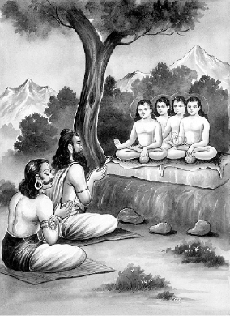
सनकादि महर्षियोंकी शुक्राचार्य एवं वृत्रासुर से भेंट
ब्रह्मकी प्राप्तिका उपाय तथा उस विषयमें वृत्र-शुक्र-संवादका आरम्भ
युधिष्ठिर उवाच
धन्या धन्या इति जना: सर्वेऽस्मान् प्रवदन्त्युत।
न दु:खिततर: कश्चित् पुमानस्माभिरस्ति ह॥ १॥
युधिष्ठिरने कहा—पितामह! सभी लोग हमलोगोंको धन्य-धन्य कहते हैं, परंतु हमलोगोंसे बढ़कर अत्यन्त दु:खी दूसरा कोई मनुष्य नहीं है॥ १॥
लोकसम्भावितैर्दु:खं यत् प्राप्तं कुरुसत्तम।
प्राप्य जातिं मनुष्येषु देवैरपि पितामह॥ २॥
कुरुश्रेष्ठ पितामह! देवताओंद्वारा मानवलोकमें जन्म पाकर तथा सब लोगोंद्वारा सम्मानित होकर भी हमें यहाँ महान् दु:ख प्राप्त हुआ है॥ २॥
कदा वयं करिष्याम: संन्यासं दु:खसंज्ञकम्।
दु:खमेतच्छरीराणां धारणं कुरुसत्तम॥ ३॥
कुरुश्रेष्ठ! संसारी मनुष्य जिसे दु:ख कहते हैं, उस संन्यासका अवलम्बन हमलोग कब करेंगे? हमें तो इन शरीरोंका धारण करना ही दु:ख जान पड़ता है॥ ३॥
विमुक्ता: सप्तदशभिर्हेतुभूतैश्च पञ्चभि:।
इन्द्रियार्थैर्गुणैश्चैव अष्टाभिश्च पितामह॥ ४॥
न गच्छन्ति पुनर्भावं मुनय: संशितव्रता:।
कदा वयं गमिष्यामो राज्यं हित्वा परंतप॥ ५॥
पितामह! पंच ज्ञानेन्द्रिय, पंच कर्मेन्द्रिय, पंच प्राण, मन और बुद्धि—ये सत्रह तत्त्व; काम, क्रोध, लोभ, भय और स्वप्न—ये संसारके पाँच हेतु; शब्द, स्पर्श, रूप, रस और गन्ध—ये पाँच विषय; सत्त्व, रज और तम—ये तीन गुण तथा पाँच भूतोंसहित अविद्या, अहंकार और कर्म—ये आठ तत्त्वोंके समुदाय सब मिलाकर अड़तीस तत्त्व होते हैं। इन सबसे मुक्त हुए तीक्ष्ण व्रतधारी मुनि पुनर्जन्मको नहीं प्राप्त होते हैं। परंतप पितामह! हमलोग भी कब अपना राज्य छोड़कर इसी स्थितिको प्राप्त होंगे॥ ४-५॥
भीष्म उवाच
नास्त्यनन्तं महाराज सर्वं संख्यानगोचर:।
पुनर्भावोऽपि विख्यातो नास्ति किञ्चिदिहाचलम्॥ ६॥
भीष्मजीने कहा—महाराज! दु:ख अनन्त नहीं हैं। जगत्की सभी वस्तुएँ संख्याकी सीमामें ही हैं—असंख्य नहीं हैं। पुनर्जन्म भी नश्वरताके लिये विख्यात ही है। तात्पर्य यह कि इस जगत्में कोई भी वस्तु अचल या स्थायी नहीं है॥ ६॥
न चापि मन्यसे राजन्नेष दोष: प्रसङ्गत:।
उद्योगादेव धर्मज्ञा: कालेनैव गमिष्यथ॥ ७॥
तुम जो ऐसा मानते हो कि ऐश्वर्य दोषकारक होता है, क्योंकि वह आसक्तिका हेतु होनेके कारण मोक्षका प्रतिबन्धक है तो तुम्हारी यह मान्यता ठीक नहीं है; क्योंकि तुम सब लोग धर्मके ज्ञाता हो। स्वयं ही उद्योग करके शम, दम आदि साधनोंद्वारा कुछ ही कालमें मोक्ष प्राप्त कर सकते हो॥ ७॥
नेशेऽयं सततं देही नृपते पुण्यपापयो:।
तत एव समुत्थेन तमसा रुध्यतेऽपि च॥ ८॥
नरेश्वर! यह जीवात्मा पुण्य और पापके फल सुख और दु:ख भोगनेमें स्वतन्त्र नहीं है, उन पुण्य और पापोंसे उत्पन्न संस्काररूप अन्धकारसे यह आच्छन्न हो जाता है॥ ८॥
यथाञ्जनमयो वायु: पुनर्मान:शिलं रज:।
अनुप्रविश्य तद्वर्णो दृश्यते रञ्जयन् दिश:॥ ९॥
तथा कर्मफलैर्देही रञ्जितस्तमसावृत:।
विवर्णो वर्णमाश्रित्य देहेषु परिवर्तते॥ १०॥
जैसे अन्धकारमयी वायु मैनसिलके लाल-पीले चूर्णमें प्रवेश करके उसीके रंगसे युक्त हो सम्पूर्ण दिशाओंको रँगती दिखायी देती है, उसी प्रकार स्वभावत: वर्णविहीन यह जीवात्मा तमोमय अज्ञानसे आवृत और कर्मफलसे रंजितहो वही वर्ण ग्रहणकर अर्थात् विभिन्न शरीरोंके धर्मोंको स्वीकार करके समस्त प्राणियोंके शरीरोंमें घूमता रहता है॥ ९-१०॥
ज्ञानेन हि यदा जन्तुरज्ञानप्रभवं तम:।
व्यपोहति तदा ब्रह्म प्रकाशति सनातनम्॥ ११॥
जब जीव तत्त्वज्ञानद्वारा अज्ञानजनित अन्धकारको दूर कर देता है, तब उसके हृदयमें सनातन ब्रह्म प्रकाशित हो जाता है॥ ११॥
अयत्नसाध्यं मुनयो वदन्ति
ये चापि मुक्तास्त उपासितव्या:।
त्वया च लोकेन च सामरेण
तस्मान्नमस्यामि महर्षिसङ्घान्॥ १२॥
ऋषि-मुनि कहते हैं कि ब्रह्मकी प्राप्ति किसी क्रियात्मक यत्नसे साध्य नहीं है। इसके लिये तो देवताओंसहित सम्पूर्ण जगत्को और तुमको उन पुरुषोंकी उपासना करनी चाहिये, जो जीवन्मुक्त हैं; अतएव मैं महर्षियोंके समुदायको नमस्कार करता हूँ॥ १२॥
अस्मिन्नर्थे पुरा गीतं शृणुष्वैकमना नृप।
यथा दैत्येन वृत्रेण भ्रष्टैश्वर्येण चेष्टितम्॥ १३॥
निर्जितेनासहायेन हृतराज्येन भारत।
अशोचता शत्रुमध्ये बुद्धिमास्थाय केवलाम्॥ १४॥
नरेश्वर! इस विषयमें एक प्राचीन इतिहास कहा जाता है। उसे एकचित्त होकर सुनो। भरतनन्दन! पूर्वकालमें वृत्रासुर पराजित और ऐश्वर्य-भ्रष्ट हो गया था। उसका कोई सहायक नहीं रह गया था। देवताओंने उसका राज्य छीन लिया था। उस दशामें पड़कर भी उस असुरने जैसी चेष्टा की थी, उसीका इस कथामें वर्णन है। वह शत्रुओंके बीचमें रहकर भी आसक्तिशून्य बुद्धिका आश्रय ले शोक नहीं करता था॥ १३-१४॥
भ्रष्टैश्वर्यं पुरा वृत्रमुशना वाक्यमब्रवीत्।
काचित् पराजितस्याद्य न व्यथा तेऽस्ति दानव॥ १५॥
पूर्वकालकी बात है कि वृत्रासुरको ऐश्वर्य-भ्रष्ट हुआ देख शुक्राचार्यने उससे पूछा—‘दानवराज! तुम्हें देवताओंने पराजित कर दिया है तो भी आजकल तुम्हारे चित्तमें किसी प्रकारकी व्यथा नहीं है; इसका क्या कारण है?’॥ १५॥
वृत्र उवाच
सत्येन तपसा चैव विदित्वासंशयं ह्यहम्।
न शोचामि न हृष्यामि भूतानामागतिं गतिम्॥ १६॥
वृत्रासुरने कहा—ब्रह्मन्! मैंने सत्य और तपके प्रभावसे जीवोंके आवागमनका रहस्य निश्चितरूपसे जान लिया है; इसलिये मैं उसके विषयमें हर्ष और शोक नहीं करता हूँ॥ १६॥
कालसञ्चोदिता जीवा मज्जन्ति नरकेऽवशा:।
परितुष्टानि सर्वाणि दिव्यान्याहुर्मनीषिण:॥ १७॥
कालसे प्रेरित हुए जीव अपने पापकर्मोंके फलस्वरूप विवश होकर नरकमें डूबते हैं और पुण्यके फलसे वे सब-के-सब स्वर्गलोकमें जाकर वहाँ आनन्द भोगते हैं। ऐसा मनीषी पुरुषोंका कथन है॥ १७॥
क्षपयित्वा तु तं कालं गणितं कालचोदिता:।
सावशेषेण कालेन सम्भवन्ति पुन: पुन:॥ १८॥
इस प्रकार स्वर्ग अथवा नरकमें कर्मफलभोगद्वारा निश्चित समय व्यतीत करके भोगनेसे बचे हुए कर्मसहित कालकी प्रेरणासे वे बारम्बार इस संसारमें जन्म लेते रहते हैं॥ १८॥
तिर्यग्योनिसहस्राणि गत्वा नरकमेव च।
निर्गच्छन्त्यवशा जीवा: कामबन्धनबन्धना:॥ १९॥
कामनाओंके बन्धनमें बँधकर विवश हुए कितने ही जीव सहस्रों बार तिर्यक्योनि तथा नरकमें पड़कर पुन: वहाँसे निकलते हैं॥ १९॥
एवं संसरमाणानि जीवान्यहमदृष्टवान्।
यथा कर्म तथा लाभ इति शास्त्रनिदर्शनम्॥ २०॥
इस प्रकार मैंने सभी जीवोंको जन्म-मरणके चक्करमें पड़ा हुआ देखा है। शास्त्रका भी ऐसा सिद्धान्त है कि जैसा कर्म होता है, वैसा ही फल मिलता है॥ २०॥
तिर्यग् गच्छन्ति नरकं मानुष्यं दैवमेव च।
सुखदु:खे प्रिये द्वेष्ये चरित्वा पूर्वमेव ह॥ २१॥
प्राणी पहले ही सुख-दु:ख तथा प्रिय और अप्रिय विषयोंमें विचरण करके कर्मके अनुसार नरक, तिर्यग्योनि, मनुष्ययोनि अथवा देवयोनिमें जाते हैं॥ २१॥
कृतान्तविधिसंयुक्त: सर्वो लोक: प्रपद्यते।
गतं गच्छन्ति चाध्वानं सर्वभूतानि सर्वदा॥ २२॥
समस्त जीव-जगत् विधाताके विधानसे ही परिचालित हो सुख-दु:ख पाता है और समस्त प्राणी सदा चले हुए मार्गपर ही चलते हैं॥ २२॥
कालसंख्यानसंख्यातं सृष्टिस्थितिपरायणम्।
तं भाषमाणं भगवानुशना प्रत्यभाषत।
धीमान् दुष्टप्रलापांस्त्वं तात कस्मात् प्रभाषसे॥ २३॥
जो काल नामसे प्रसिद्ध एवं सृष्टि और पालनके परम आश्रय हैं, उन परमात्माका प्रतिपादन करते हुए वृत्रासुरकी बात सुनकर भगवान् शुक्राचार्यने उससे कहा—‘तात! तुम तो बडे़ बुद्धिमान् हो, फिर ये असुरभावके विपरीत दोषयुक्त निरर्थक वचन कैसे कह रहे हो?॥ २३॥
वृत्र उवाच
प्रत्यक्षमेतद् भवतस्तथान्येषां मनीषिणाम्।
मया यज्जयलुब्धेन पुरा तप्तं महत् तप:॥ २४॥
वृत्रासुरने कहा—ब्रह्मन्! आपने तथा दूसरे मनीषी महानुभावोंने यह तो प्रत्यक्ष देखा है कि मैंने पहले विजयके लोभसे बड़ी भारी तपस्या की थी॥ २४॥
गन्धानादाय भूतानां रसांश्च विविधानपि।
अवर्धं त्रीन् समाक्रम्य लोकान् वै स्वेन तेजसा॥ २५॥
मैं बलमें बहुत बढ़ा-चढ़ा था; अत: मैंने अपने ही तेजसे तीनों लोकोंपर आक्रमण करके दूसरे प्राणियोंको धूलमें मिलाकर उनके उपभोगकी गन्ध और रस आदि विविध वस्तुएँ छीन ली थीं॥ २५॥
ज्वालामालापरिक्षिप्तो वैहायसचरस्तथा।
अजेय: सर्वभूतानामासं नित्यमपेतभी:॥ २६॥
मेरे शरीरसे आगकी लपटें निकलती थीं और मैं ज्वालामालाओंसे घिरकर सदा आकाशमें निर्भय विचरता हुआ समस्त प्राणियोंके लिये अजेय हो गया था॥ २६॥
ऐश्वर्यं तपसा प्राप्तं भ्रष्टं तच्च स्वकर्मभि:।
धृतिमास्थाय भगवन् न शोचामि ततस्त्वहम्॥ २७॥
भगवन्! इस प्रकार मैंने तपस्याके प्रभावसे जो ऐश्वर्य प्राप्त किया था, वह मेरे अपने ही कर्मोंसे नष्ट हो गया। तथापि मैं धैर्य धारण करके उसके लिये शोक नहीं करता हूँ॥ २७॥
युयुत्सुना महेन्द्रेण पुंसा सार्धं महात्मना।
ततो मे भगवान् दृष्टो हरिर्नारायण: प्रभु:॥ २८॥
महामनस्वी पुरुषप्रवर देवराज इन्द्र जब युद्धकी इच्छासे मेरे सामने आये, उस समय उनके साथ उन्हींकी सहायताके लिये आये हुए सबके प्रभु भगवान् श्रीनारायण हरिका मैंने दर्शन किया था॥ २८॥
वैकुण्ठ: पुरुषोऽनन्त: शुक्लो विष्णु: सनातन:।
मुञ्जकेशो हरिश्मश्रु: सर्वभूतपितामह:॥ २९॥
वे भगवान् वैकुण्ठ, पुरुष, अनन्त, शुक्ल, विष्णु, सनातन, मुंजकेश, हरिश्मश्रु तथा सम्पूर्ण भूतोंके पितामह हैं॥ २९॥
नूनं तु तस्य तपस: सावशेषमिहास्ति वै।
यदहं प्रष्टुमिच्छामि भगवन् कर्मण: फलम्॥ ३०॥
भगवन्! अवश्य ही मेरी उस तपस्याका कोई अंश अब भी शेष रह गया है, अत: मैं उस कर्मफलके विषयमें प्रश्न करना चाहता हूँ॥ ३०॥
ऐश्वर्यं वै महद् ब्रह्म वर्णे कस्मिन् प्रतिष्ठितम्।
निवर्तते चापि पुन: कथमैश्वर्यमुत्तमम्॥ ३१॥
अणिमा आदि ऐश्वर्य और महद् ब्रह्म किस वर्णमें प्रतिष्ठित हैं? तथा वह उत्तम ऐश्वर्य कैसे नष्ट हो जाता है?॥ ३१॥
कस्माद् भूतानि जीवन्ति प्रवर्तन्ते तथा पुन:।
किं वा फलं परं प्राप्य जीवस्तिष्ठति शाश्वत:॥ ३२॥
प्राणी किस हेतुसे जीवन धारण करते हैं? तथा किस कारणसे कर्मोंमें प्रवृत्त होते हैं? जीव किस परम फलको पाकर अविनाशी एवं सनातनरूपसे प्रतिष्ठित होता है?॥ ३२॥
केन वा कर्मणा शक्यमथ ज्ञानेन केन वा।
तदवाप्तुं फलं विप्र तन्मे व्याख्यातुमर्हसि॥ ३३॥
विप्रवर! किस कर्म अथवा ज्ञानसे उस फलको प्राप्त किया जा सकता है? यह मुझे बतानेकी कृपा करें॥ ३३॥
इतीदमुक्त: स मुनिस्तदानीं
प्रत्याह यत् तच्छृणु राजसिंह।
मयोच्यमानं पुरुषर्षभ त्व-
मनन्यचित्त: सह सोदरीयै:॥ ३४॥
राजसिंह! पुरुषप्रवर युधिष्ठिर! उसके ऐसा प्रश्न करनेपर मुनिवर शुक्राचार्यने उस समय उसे जो उत्तर दिया, उसे मैं बता रहा हूँ, तुम अपने भाइयोंके साथ एकाग्रचित्त होकर सुनो॥ ३४॥
॥ इति श्रीमहाभारते शान्तिपर्वणि मोक्षधर्मपर्वणि वृत्रगीतासुप्रथमोऽध्याय:॥ १॥
दूसरा अध्याय
वृत्रासुरको सनत्कुमारका अध्यात्मविषयक उपदेश देना और उसकी परमगति तथा भीष्मद्वारा युधिष्ठिरकी शंकाका निवारण
उशनोवाच
नमस्तस्मै भगवते देवाय प्रभविष्णवे।
यस्य पृथ्वीतलं तात साकाशं बाहुगोचर:॥ १॥
शुक्राचार्यने कहा—तात! आकाशसहित यह सारी पृथ्वी जिनकी भुजाओंके बलपर स्थित है, महान् प्रभावशाली उन भगवान् विष्णुदेवको नमस्कार है॥ १॥
मूर्धा यस्य त्वनन्तं च स्थानं दानवसत्तम।
तस्याहं ते प्रवक्ष्यामि विष्णोर्माहात्म्यमुत्तमम्॥ २॥
दानवश्रेष्ठ! जिनका मस्तक और स्थान भी अनन्त है, उन भगवान् विष्णुका उत्तम माहात्म्य मैं तुम्हें बताऊँगा॥ २॥
तयो: संवदतोरेवमाजगाम महामुनि:।
सनत्कुमारो धर्मात्मा संशयच्छेदनाय वै॥ ३॥
शुक्राचार्य और वृत्रासुरमें ये बातें हो ही रही थीं कि वहाँ महामुनि धर्मात्मा सनत्कुमार उनके संशयका निवारण करनेके लिये आ पहुँचे॥ ३॥
स पूजितोऽसुरेन्द्रेण मुनिनोशनसा तथा।
निषसादासने राजन् महार्हे मुनिपुङ्गव:॥ ४॥
राजन्! असुरराज वृत्र और मुनि शुक्राचार्यके द्वारा पूजित हो मुनिवर सनत्कुमार एक बहुमूल्य सिंहासनपर विराजमान हुए॥ ४॥
तमासीनं महाप्रज्ञमुशना वाक्यमब्रवीत्।
ब्रूह्यस्मै दानवेन्द्राय विष्णोर्माहात्म्यमुत्तमम्॥ ५॥
जब महाज्ञानी सनत्कुमार आरामसे बैठ गये, तब शुक्राचार्यने उनसे कहा—‘भगवन्! आप इस दानवराजको भगवान् विष्णुका उत्तम माहात्म्य बताइये’॥ ५॥
सनत्कुमारस्तु तत: श्रुत्वा प्राह वचोऽर्थवत्।
विष्णोर्माहात्म्यसंयुक्तं दानवेन्द्राय धीमते॥ ६॥
यह सुनकर सनत्कुमारजीने बुद्धिमान् दानवराज वृत्रासुरके प्रति भगवान् विष्णुकी महिमासे युक्त यह सार्थक वचन कहा—॥ ६॥
शृणु सर्वमिदं दैत्य विष्णोर्माहात्म्यमुत्तमम्।
विष्णौ जगत् स्थितं सर्वमिति विद्धि परंतप॥ ७॥
शत्रुओंको सन्ताप देनेवाले दैत्य! भगवान् विष्णुका यह सम्पूर्ण उत्तम माहात्म्य सुनो—तुम्हें यह मालूम होना चाहिये कि यह समस्त संसार भगवान् विष्णुमें ही स्थित है॥ ७॥
सृजत्येष महाबाहो भूतग्रामं चराचरम्।
एष चाक्षिपते काले काले विसृजते पुन:॥ ८॥
पर महाबाहो! ये श्रीविष्णु ही सम्पूर्ण चराचर प्राणिसमुदायकी सृष्टि करते हैं और ये ही समय आनेपर उसका विनाश करते हैं एवं समय आनेपर पुन: सृष्टि भी करते हैं॥ ८॥
अस्मिन् गच्छन्ति विलयमस्माच्च प्रभवन्त्युत।
नैष ज्ञानवता शक्यस्तपसा नैव चेज्यया।
सम्प्राप्तुमिन्द्रियाणां तु संयमेनैव शक्यते॥ ९॥
समस्त प्राणी इन्हींमें लयको प्राप्त होते हैं और इन्हींसे प्रकट भी होते हैं। इन्हें कोई शास्त्रज्ञान, तपस्या और यज्ञके द्वारा भी नहीं पा सकता। केवल इन्द्रियोंके संयमसे ही उनकी उपलब्धि हो सकती है॥ ९॥
बाह्ये चाभ्यन्तरे चैव कर्मणोर्मनसि स्थित:।
निर्मलीकुरुते बुद्धॺा सोऽमुत्रानन्त्यमश्नुते॥ १०॥
जो बाह्य (यज्ञ आदि) और आभ्यन्तर (शम, दम आदि) कर्मोंमें प्रवृत्त होकर मनके विषयमें स्थिरता प्राप्त करके अर्थात् मनको स्थिर करके बुद्धिके द्वारा उसे निर्मल बनाता है, वह परलोकमें अक्षय सुख (मोक्ष)-को प्राप्त कर लेता है॥ १०॥
यथा हिरण्यकर्ता वै रूप्यमग्नौ विशोधयेत्।
बहुशोऽतिप्रयत्नेन महतात्मकृतेन ह॥ ११॥
तद्वज्जातिशतैर्जीव: शुद्धॺतेऽनेन कर्मणा।
यत्नेन महता चैवाप्येकजातौ विशुद्धॺते॥ १२॥
जैसे सोनार बारम्बार किये हुए अपने महान् प्रयत्नके द्वारा चाँदीको आगमें डालकर उसे शुद्ध करता है, उसीप्रकार जीव सैकड़ों जन्मोंमें अपने मनको शुद्ध कर पाता है; परंतु इस यज्ञ आदि और शम-दम आदि कर्मोंद्वारा यदि वह महान् प्रयत्न करे तो एक ही जन्ममें शुद्ध हो जाता है॥ ११-१२॥
लीलयाल्पं यथा गात्रात् प्रमृज्यादात्मनो रज:।
बहुयत्नेन महता दोषनिर्हरणं तथा॥ १३॥
जैसे अपने शरीरमें लगी हुई थोड़ी-सी धूलको मनुष्य साधारण चेष्टासे खेल-खेलमें ही झाड़-पोंछ देता है, उसी प्रकार बारम्बार किये हुए महान् प्रयत्नसे वह अपने राग-द्वेष आदि दोषोंको भी दूर कर सकता है॥ १३॥
यथा चाल्पेन माल्येन वासितं तिलसर्षपम्।
न मुञ्चति स्वकं गन्धं तद्वत् सूक्ष्मस्य दर्शनम्॥ १४॥
जैसे थोडे़-से पुष्प एवं मालाद्वारा वासित किया हुआ तिल और सरसोंका तेल अपनी गन्ध नहीं छोड़ता है, उसी प्रकार थोडे़-से प्रयत्नसे न तो दोष दूर होते हैं और न सूक्ष्म ब्रह्मका साक्षात्कार ही हो पाता है॥ १४॥
तदेव बहुभिर्माल्यैर्वास्यमानं पुन: पुन:।
विमुञ्चति स्वकं गन्धं माल्यगन्धे च तिष्ठति॥ १५॥
एवं जातिशतैर्युक्तो गुणैरेव प्रसङ्गिषु।
बुद्धॺा निवर्तते दोषो यत्नेनाभ्यासजेन ह॥ १६॥
वही तिल या सरसोंका तेल बहुत-से सुगन्धित पुष्पोंद्वारा बारम्बार वासित होनेपर अपनी गन्धको छोड़ देता है और उस फूलकी गन्धमें ही स्थित हो जाता है। उसीप्रकार सैकड़ों जन्मोंमें स्त्री-पुत्र आदिके संसर्गसे युक्त तथा सत्त्व, रज और तम—इन तीनों गुणोंद्वारा प्रवर्तित दोषसमूह बुद्धि तथा अभ्यासजनित यत्नसे निवृत्त हो पाता है॥ १५-१६॥
कर्मणा स्वनुरक्तानि विरक्तानि च दानव।
यथा कर्मविशेषांश्च प्राप्नुवन्ति तथा शृणु॥ १७॥
दनुनन्दन! कर्मसे अनुरक्त और कर्मसे विरक्त होनेवाले प्राणिसमूह जिस प्रकार राग और विरागके हेतुभूत विभिन्न कर्मोंको प्राप्त होते हैं, वह सुनो॥ १७॥
यथावत् सम्प्रवर्तन्ते यस्मिंस्तिष्ठन्ति वा विभो।
तत् तेऽनुपूर्व्या व्याख्यास्ये तदिहैकमना: शृणु॥ १८॥
प्रभो! जिस प्रकार वे कर्ममें प्रवृत्त होते तथा जिस निमित्तसे उसमें स्थित होते हैं और जिस अवस्थामें उससे निवृत्त हो जाते हैं, वह सब मैं तुमसे क्रमश: बताऊँगा। तुम उसे यहाँ एकाग्रचित्त होकर सुनो॥ १८॥
अनादिनिधन: श्रीमान् हरिर्नारायण: प्रभु:।
देव: सृजति भूतानि स्थावराणि चराणि च॥ १९॥
श्रीमान् भगवान् नारायण हरि आदि और अन्तसे रहित हैं। वे ही चराचर प्राणियोंकी रचना करते हैं॥ १९॥
स वै सर्वेषु भूतेषु क्षरश्चाक्षर एव च।
एकादशविकारात्मा जगत् पिबति रश्मिभि:॥ २०॥
वे ही सम्पूर्ण प्राणियोंमें क्षर और अक्षररूपसे विद्यमान हैं। ग्यारह इन्द्रियोंका जो वैकारिक* सर्ग है, वह भी उन्हींका स्वरूप है। वे अपनी चैतन्यमयी किरणोंद्वारा सम्पूर्ण जगत्में व्याप्त हो रहे हैं॥ २०॥
* श्रीविष्णुपुराणमें तीन प्रकारकी प्राकृत सृष्टि बतायी गयी है—पहली महत्तत्त्वकी सृष्टि है, जिसे यहाँ ‘क्षर’ शब्दसे कहा गया है। दूसरी भूत-सृष्टि मानी गयी है, जो तन्मात्राओंकी सृष्टि है। यहाँ ‘भूतेषु’ पदके द्वारा उसीकी ओर संकेत किया गया है। ‘एकादशविकारात्मा’ इस पदके द्वारा तीसरी सृष्टिका निर्देश किया गया है, जिसे वैकारिक अथवा ऐन्द्रियक सर्ग भी कहते हैं। इसमें पाँच ज्ञानेन्द्रिय, पाँच कर्मेन्द्रिय और एक मन—इन ग्यारह तत्त्वोंकी रचना हुई है।
पादौ तस्य महीं विद्धि मूर्धानं दिवमित्युत।
बाहवस्तु दिशो दैत्य श्रोत्रमाकाशमेव च॥ २१॥
तस्य तेजोमय: सूर्यो मनश्चन्द्रमसि स्थितम्।
बुद्धिर्ज्ञानगता नित्यं रसस्त्वप्सु प्रतिष्ठित:॥ २२॥
दैत्यराज! पृथ्वीको भगवान् विष्णुके दोनों चरण समझो, स्वर्ग-लोकको मस्तक जानो, ये चारों दिशाएँ उनकी चार भुजाएँ हैं, आकाश कान है, तेजस्वी सूर्य उनका नेत्र है, मन चन्द्रमा है, बुद्धि (महत्तत्त्व) उनकी नित्य ज्ञानवृत्ति है और जल रसनेन्द्रिय है॥ २१-२२॥
भ्रुवोरनन्तरास्तस्य ग्रहा दानवसत्तम।
नक्षत्रचक्रं नेत्राभ्यां पादयोर्भूश्च दानव॥ २३॥
दानवप्रवर! सम्पूर्ण ग्रह उनकी दोनों भौंहोंके बीचमें स्थित हैं। नक्षत्रमण्डल नेत्रोंसे प्रकट हुआ है। दनुनन्दन! यह पृथ्वी उनके दोनों चरणोंमें स्थित है॥ २३॥
(तं विद्धि भूतं विश्वादिं परमं विद्धि चेश्वरम्।)
रजस्तमश्च सत्त्वं च विद्धि नारायणात्मकम्।
सोऽश्रमाणां फलं तात कर्मणस्तत् फलं विदु:॥ २४॥
उन्हें तुम सम्पूर्ण भूतस्वरूप, इस जगत्का आदिकारण और परमेश्वर समझो। रजोगुण, तमोगुण और सत्त्वगुण—इन तीनोंको नारायणमय ही मानो। तात! समस्त आश्रमोंका फल वे ही हैं। विद्वान् पुरुष समस्त कर्मोंद्वारा प्राप्तव्य फल उन्हींको मानते हैं॥ २४॥
अकर्मण: फलं चैव स एव परमव्यय:।
छन्दांसि यस्य रोमाणि ह्यक्षरं च सरस्वती॥ २५॥
कर्मोंका त्यागरूप जो संन्यास है, उसका फल भी वे ही अविनाशी परमात्मा हैं। वेद-मन्त्र उनके रोम हैं तथा प्रणव उनकी वाणी है॥ २५॥
बह्वाश्रयो बहुमुखो धर्मो हृदि समाश्रित:।
स ब्रह्म परमो धर्मस्तपश्च सदसच्च स:॥ २६॥
बहुत-से वर्ण और आश्रम उनके आश्रय हैं, उनके अनेक मुख हैं। हृदयमें आश्रित धर्म भी उन्हींका स्वरूप है। वे ही ब्रह्म हैं। वे ही आत्मदर्शनरूप परम धर्म हैं। वे ही तप और सदसत्स्वरूप हैं॥ २६॥
श्रुतिशास्त्रग्रहोपेत: षोडशर्त्विक् क्रतुश्च स:।
पितामहश्च विष्णुश्च सोऽश्विनौ स पुरन्दर:।
मित्रोऽथ वरुणश्चैव यमोऽथ धनदस्तथा॥ २७॥
श्रुति (वेद), शास्त्र और सोमपात्रसहित सोलह* ऋत्विजोंवाला यज्ञ भी वे ही हैं। वे ही ब्रह्मा, विष्णु, दोनों अश्विनीकुमार, इन्द्र, मित्र, वरुण, यम और कुबेर हैं॥ २७॥
* सोलह ऋत्विजोंके नाम इस प्रकार हैं—१. ब्रह्मा, २. ब्राह्मणाच्छंसी, ३. आग्नीध्र और ४. पोता—ये चार ऋत्विज सम्पूर्ण वेदोंके ज्ञाता होते हैं। ५. होता, ६. मैत्रावरुण, ७. अच्छावाक और ८. ग्रावस्तोता—ये चार ऋत्विज ऋग्वेदी होते हैं। ९. अध्वर्यु, १०. प्रतिप्रस्थाता, ११. नेष्टा और १२. उन्नेता—ये चार यजुर्वेदी होते हैं। १३. उद्गाता, १४. प्रस्तोता, १५. प्रतिहर्ता तथा १६. सुब्रह्मण्य—ये सामवेदके गायक होते हैं।
ते पृथग्दर्शनास्तस्य संविदन्ति तथैकताम्।
एकस्य विद्धि देवस्य सर्वं जगदिदं वशे॥ २८॥
उनका दर्शन पृथक्-पृथक् होनेपर भी वे अपनी एकताको जानते हैं। तुम भी इस सम्पूर्ण जगत्को एक परमात्मदेवके ही अधीन समझो॥ २८॥
नानाभूतस्य दैत्येन्द्र तस्यैकत्वं वदत्ययम्।
जन्तु: पश्यति विज्ञानात् ततो ब्रह्म प्रकाशते॥ २९॥
दैत्यराज! अनेक रूपोंमें प्रकट हुए उन परमात्माकी एकताका यह वेद प्रतिपादन करता है। जीव विज्ञानबलसे ही ब्रह्मका साक्षात्कार करता है। उस समय उसकी बुद्धिमें वह ब्रह्म प्रकाशित हो जाता है॥ २९॥
संहारविक्षेपसहस्रकोटी-
स्तिष्ठन्ति जीवा: प्रचरन्ति चान्ये।
प्रजाविसर्गस्य च पारिमाण्यं
वापीसहस्राणि बहूनि दैत्य॥ ३०॥
कितने ही जीव करोड़ों कल्पोंतक स्थावररूपसे एक स्थानमें स्थित रहते हैं और कितने ही उतने समयतक इधर-उधर विचरते रहते हैं। दैत्यप्रवर! प्रजाकी सृष्टिका परिमाण कई हजार बावड़ियोंकी संख्याके समान है॥ ३०॥
वाप्य: पुनर्योजनविस्तृतास्ता:
क्रोशं च गम्भीरतयावगाढा:।
आयामत: पञ्चशताश्च सर्वा:
प्रत्येकशो योजनत: प्रवृद्धा:॥ ३१॥
वाप्या जलं क्षिप्यति बालकोटॺा
त्वह्ना सकृच्चाप्यथ न द्वितीयम्।
तासां क्षये विद्धि परं विसर्गं
संहारमेकं च तथा प्रजानाम्॥ ३२॥
वे सारी बावड़ियाँ पाँच सौ योजन चौड़ी, पाँच सौ योजन लम्बी और एक-एक कोस गहरी हों। गहराई इतनी हो कि कोई उनमें प्रवेश न कर सके। तात्पर्य यह कि प्रत्येक बावड़ी बहुत लम्बी-चौड़ी और गहरी हो—उनमेंसे एक बावड़ीके जलको कोई दिनभरमें एक ही बार एक बालकी नोकसे उलीचे, दूसरी बार न उलीचे। इस प्रकार उलीचनेसे उन सारी बावड़ियोंका जल जितने समयमें समाप्त हो सकता है, उतने ही समयमें प्राणियोंकी सृष्टि और संहारके क्रमकी समाप्ति हो सकती है (अर्थात् जैसे उक्त प्रकारसे उलीचनेपर उन बावड़ियोंका जल सूखना असम्भव है, वैसे ही बिना ज्ञानके संसारका उच्छेद होना असम्भव है।)॥ ३१-३२॥
षड् जीववर्णा: परमं प्रमाणं
कृष्णो धूम्रो नीलमथास्य मध्यम्।
रक्तं पुन: सह्यतरं सुखं तु
हारिद्रवर्णं सुसुखं च शुक्लम्॥ ३३॥
प्राणियोंके वर्ण छ: प्रकारके हैं—कृष्ण, धूम्र, नील, रक्त, हरिद्रा (पीला) और शुक्ल।* इनमेंसे कृष्ण, धूम्र और नील वर्णका सुख मध्यम होता है। रक्तवर्ण विशेष रूपसे सहन करनेयोग्य होता है। हरिद्राकी-सी कान्ति सुख देनेवाली होती है और शुक्लवर्ण अत्यन्त सुखदायक होता है॥ ३३॥
* जब तमोगुणकी अधिकता, सत्त्वगुणकी न्यूनता और रजोगुणकी सम अवस्था हो, तब कृष्णवर्ण होता है। यह स्थावर सृष्टिका रंग माना गया है। तमोगुणकी अधिकता, रजोगुणकी न्यूनता और सत्त्वगुणकी सम अवस्था होनेपर धूम्रवर्ण होता है। यह पशु-पक्षीकी योनिमें जन्म लेनेवाले प्राणियोंका वर्ण माना गया है। रजोगुणकी अधिकता, सत्त्वगुणकी न्यूनता और तमोगुणकी सम अवस्था होनेपर नीलवर्ण होता है। यह मानवसर्गका वर्ण बताया गया है। इसीमें जब सत्त्वगुणकी सम अवस्था और तमोगुणकी न्यूनावस्था हो तो मध्यमवर्ण होता है। उसका रंग लाल होता है। इसे अनुग्रह सर्ग कहते हैं। जब सत्त्वगुणकी अधिकता, रजोगुणकी न्यूनता और तमोगुणकी सम अवस्था हो तो हरिद्राके समान पीतवर्ण होता है। यही देवताओंका वर्णन है, अत: इसे देवसर्ग कहते हैं। उसीमें जब रजोगुणकी सम अवस्था और तमोगुणकी न्यूनता हो तो शुक्लवर्ण होता है। इसीको कौमारसर्ग कहा गया है।
परं तु शुक्लं विमलं विशोकं
गतक्लमं सिद्धॺति दानवेन्द्र।
गत्वा तु योनिप्रभवाणि दैत्य
सहस्रश: सिद्धिमुपैति जीव:॥ ३४॥
दानवराज! शुक्लवर्ण निर्मल, शोकहीन, परिश्रमशून्य होनेके कारण सिद्धिकारक होता है। दितिकुलनन्दन! जीव सहस्रों योनियोंमें जन्म ग्रहण करनेके बाद मनुष्ययोनिमें आकर कभी सिद्धि-लाभ करता है॥ ३४॥
गतिं च यां दर्शनमाह देवो
गत्वा शुभं दर्शनमेव चापि।
गति: पुनर्वर्णकृता प्रजानां
वर्णस्तथा कालकृतोऽसुरेन्द्र॥ ३५॥
असुरेन्द्र! देवराज इन्द्रने मंगलमय तत्त्वज्ञान प्राप्त करके हमारे निकट जिस गति और दर्शन-शास्त्रका वर्णन किया है, वह प्राणियोंकी वर्णजनित गति है अर्थात् शुक्लवर्णवालोंको वही सिद्धि प्राप्त होती है। वह वर्ण कालकृत माना गया है॥ ३५॥
शतं सहस्राणि चतुर्दशेह
परागतिर्जीवगणस्य दैत्य।
आरोहणं तत्कृतमेव विद्धि
स्थानं तथा नि:सरणं च तेषाम्॥ ३६॥
दैत्यप्रवर! इस जगत्में समस्त जीव-समुदायकी परागति चौदह लाख बतायी गयी है। (पाँच कर्मेन्द्रिय, पाँच ज्ञानेन्द्रिय तथा मन, बुद्धि, चित्त और अहंकार—ये चौदह करण हैं। इन्हींके भेदसे चौदह प्रकारकी गति होती है। फिर विषयभेदसे वृत्तिभेद होनेके कारण चौदह लाख प्रकारकी गति होती है।) जीवका जो ऊर्ध्वलोकोंमें गमन होता है, वह भी उन्हीं चौदह करणोंद्वारा सम्पादित होता है। विभिन्न स्थानोंमें जो स्थिरतापूर्वक निवास है, वह और उन स्थानोंसे जो उन जीवोंका अध:पतन होता है, वह भी उन्हींके सम्बन्धसे होता है। इस बातको तुम अच्छी तरह जान लो (अत: इन चौदह करणोंको सात्त्विक मार्गाभिमुखी बनाना चाहिये)॥ ३६॥
कृष्णस्य वर्णस्य गतिर्निकृष्टा
स सज्जते नरके पच्यमान:।
स्थानं तथा दुर्गतिभिस्तु तस्य
प्रजाविसर्गान् सुबहून् वदन्ति॥ ३७॥
कृष्णवर्णकी गति नीच बतायी गयी है। वह नरक प्रदान करनेवाले निषिद्ध कर्मोंमें आसक्त होता है, इसीलिये नरककी आगमें पकाया जाता है। वह कुमार्गमें प्रवृत्त हुए पूर्वोक्त चौदह करणोंद्वारा पापाचार करनेके कारण अनेक कल्पोंतक नरकमें ही निवास करता है—ऐसा ऋषि-मुनि कहते हैं॥ ३७॥
शतं सहस्राणि ततश्चरित्वा
प्राप्नोति वर्णं हरितं तु पश्चात्।
स चैव तस्मिन् निवसत्यनीशो
युगक्षये तपसा संवृतात्मा॥ ३८॥
तदनन्तर वह जीव लाखों बार (या लाखों वर्षोंतक) नरकमें विचरण करके फिर धूम्रवर्ण पाता है (पशु-पक्षी आदिकी योनिमें जन्म लेता है)। उस योनिमें भी वह विवश होकर बडे़ दु:खसे निवास करता है। फिर युगक्षय होनेपर वह तप (पुरातन पुण्यकर्म या विवेक)-के प्रभावसे सुरक्षित होकर उस संकटसे उद्धार पा जाता है॥ ३८॥
स वै यदा सत्त्वगुणेन युक्त-
स्तमो व्यपोहन् घटते स्वबुद्धॺा।
स लोहितं वर्णमुपैति नीलान्
मनुष्यलोके परिवर्तते च॥ ३९॥
वही जीव जब सत्त्वगुणसे युक्त होता है, तब अपनी बुद्धिके द्वारा तमोगुणकी प्रवृत्तिको दूर हटाता हुआ अपने कल्याणके लिये प्रयत्न करता है। उस समय सत्त्वगुणके बढ़ जानेपर वह रक्तवर्णको प्राप्त होता है (इसीको अनुग्रह सर्ग कहा गया है, चित्तकी विभिन्न वृत्तियोंपर अनुग्रह करनेवाले देवविशेषका ही नाम ‘अनुग्रह’ है)। जब सत्त्वगुणमें कुछ कमी रह जाती है, तब वह जीव नीलवर्णको प्राप्त होकर मनुष्यलोकमें आवागमन करने लगता है॥ ३९॥
स तत्र संहारविसर्गमेकं
स्वधर्मजैर्बन्धनै: क्लिश्यमान:।
तत: स हारिद्रमुपैति वर्णं
संहारविक्षेपशते व्यतीते॥ ४०॥
तत्पश्चात् वह मनुष्यलोकमें एक कल्पतक स्वधर्मजनित बन्धनोंसे बँधकर क्लेश उठाता हुआ जब धीरे-धीरे अपनी तपस्याको बढ़ाता है, तब हल्दीकी-सी कान्तिवाले पीतवर्ण—देवताभावको प्राप्त होता है। वहाँ भी सैकड़ों कल्प व्यतीत कर लेनेपर वह पुन: पुण्यक्षयके पश्चात् मनुष्य होता है (इस प्रकार वह देवतासे मनुष्य और मनुष्यसे देवता होता रहता है)॥ ४०॥
हारिद्रवर्णस्तु प्रजाविसर्गात्
सहस्रशस्तिष्ठति सञ्चरन् वै।
अविप्रमुक्तो निरये च दैत्य
तत: सहस्राणि दशापराणि॥ ४१॥
गती: सहस्राणि च पञ्च तस्य
चत्वारि संवर्तकृतानि चैव।
विमुक्तमेनं निरयाच्च विद्धि
सर्वेषु चान्येषु च सम्भवेषु॥ ४२॥
हे दितिपुत्र! सहस्रों कल्पोंतक देवरूपसे विचरते रहनेपर भी जीव विषयभोगसे मुक्त नहीं होता तथा प्रत्येक कल्पमें किये हुए अशुभ कर्मोंके फलोंको नरकमें रहकर भोगता हुआ जीव उन्नीस* हजार विभिन्न गतियोंको प्राप्त होता है।
* दस इन्द्रिय, पाँच प्राण और चार अन्त:करण—ये उन्नीस भोगके साधन हैं, विषय और वृत्तियोंके भेदसे इन्हींके उतने ही सौ और उतने ही हजार प्रकार हो जाते हैं।
तत्पश्चात् उसे नरकसे छुटकारा मिलता है। मनुष्यके सिवा अन्य सभी योनियोंमें केवल सुख-दु:खके भोग प्राप्त होते हैं। मोक्षका सुयोग हाथ नहीं लगता है। इस बातको तुम्हें भलीभाँति समझ लेना चाहिये॥ ४१-४२॥
स देवलोके विहरत्यभीक्ष्णं
ततश्च्युतो मानुषतामुपैति।
संहारविक्षेपशतानि चाष्टौ
मर्त्येषु तिष्ठत्यमृतत्वमेति॥ ४३॥
वह जीव निरन्तर देवलोकमें विहार करता है और वहाँसे भ्रष्ट होनेपर मनुष्ययोनिको प्राप्त होता है। मर्त्यलोकमें वह आठ सौ कल्पोंतक बारम्बार जन्म लेता रहता है। तत्पश्चात् शुभकर्म करके वह पुन: देवभावको प्राप्त करता है (यह आवागमनका चक्र तभीतक चलता है, जबतक जीवको परमज्ञान या अनन्य भक्तिकी प्राप्ति नहीं हो जाती, उसकी प्राप्ति होनेपर तो वह मुक्त या परमात्माको प्राप्त हो जाता है।)॥ ४३॥
सोऽस्मादथ भ्रश्यति कालयोगात्
कृष्णे तले तिष्ठति सर्वकृष्टे।
यथा त्वयं सिद्धॺति जीवलोक-
स्तत् तेऽभिधास्याम्यसुरप्रवीर॥ ४४॥
असुरोंके प्रमुख वीर! वह जीव कालक्रमसे अशुभ कर्म करके कभी-कभी मर्त्यलोकसे भी नीचे गिर जाता है और सबसे निकृष्ट, तलप्रदेशकी भाँति निम्नतम, कृष्णवर्ण (स्थावर योनि)-में जन्म ग्रहण करके स्थित होता है। इस प्रकार उत्थान-पतनके चक्रमें पडे़ हुए इस जीवसमूहको जिस प्रकार सिद्धि (मुक्ति) प्राप्त होती है, वह मैं तुम्हें बता रहा हूँ॥ ४४॥
दैवानि स व्यूहशतानि सप्त
रक्तो हरिद्रोऽथ तथैव शुक्ल:।
संश्रित्य सन्धावति शुक्लमेत-
मष्टावरानर्च्यतमान् स लोकान्॥ ४५॥
क्रमश: रक्तवर्ण (अनुग्राहक देवता), हरिद्रावर्ण (देवता) तथा शुक्लवर्ण (सनकादिकुमारों-जैसा सिद्ध शरीरधारी) होकर वह जीव बारी-बारीसे सात सौ दिव्य शरीरोंका आश्रय ले भू आदि सात उत्तमोत्तम लोकोंमें विचरण करके पूर्व पुण्यके प्रभावसे वेगपूर्वक विशुद्ध ब्रह्मलोकमें चला जाता है॥ ४५॥
अष्टौ च षष्टिं च शतानि चैव
मनोनिरुद्धानि महाद्युतीनाम्।
शुक्लस्य वर्णस्य परा गतिर्या
त्रीण्येव रुद्धानि महानुभाव॥ ४६॥
महानुभाव वृत्रासुर! प्रकृति, महत्तत्त्व, अहंकार और पंचतन्मात्राएँ—ये आठ तथा दूसरे साठ* तत्त्व और इनकी जो सैकड़ों वृत्तियाँ हैं—ये सब महातेजस्वी योगियोंके मनके द्वारा अवरुद्ध की हुई होती हैं तथा सत्त्व, रज और तम—इन तीनों गुणोंको भी वे अवरुद्ध कर देते हैं। अत: शुक्लवर्णवाले (सनकादिकोंके समान सिद्ध) पुरुषको जो उत्तम गति प्राप्त होती है, वही उन योगियोंको मिलती है॥ ४६॥
* पाँच ज्ञानेन्द्रिय और पाँच कर्मेन्द्रिय—ये दस इन्द्रियाँ सात्त्विक, राजसिक और तामसिक तथा जाग्रत् , स्वप्न और सुषुप्तिके भेदसे प्रत्येक छ:-छ: प्रकारकी होती हैं। इस प्रकार इनके साठ भेद हो जाते हैं।
संहारविक्षेपमनिष्टमेकं
चत्वारि चान्यानि वसत्यनीश:।
षष्ठस्य वर्णस्य परा गतिर्या
सिद्धावसिद्धस्य गतक्लमस्य॥ ४७॥
जो परमगति छठे (शुक्ल) वर्णके साधकको मिलती है, उसे पानेका अधिकार भ्रष्ट करके भी जो असिद्ध हो रहा है एवं जिसके समस्त पाप नष्ट हो चुके हैं; ऐसा योगी भी यदि योगजनित ऐश्वर्यके सुखभोगकी वासनाका त्याग करनेमें असमर्थ है तो वह न चाहनेपर भी एक कल्पतक अपनी साधनाके फलरूप मह:, जन, तप और सत्य—इन चारों लोकोंमें क्रमश: निवास करता है (और कल्पके अन्तमें मुक्त हो जाता है)॥ ४७॥
सप्तोत्तरं तत्र वसत्यनीश:
संहारविक्षेपशतं सशेषम्।
तस्मादुपावृत्य मनुष्यलोके
ततो महान् मानुषतामुपैति॥ ४८॥
किंतु जो भलीभाँति योगसाधनमें असमर्थ है, वह योगभ्रष्ट पुरुष सौ कल्पोंतक ऊपरके सात लोकोंमें निवास करता है। फिर बचे हुए कर्मसंस्कारोंके सहित वहाँसे लौटकर मनुष्यलोकमें पहलेसे बढ़कर महत्त्वसम्पन्न हो मनुष्यशरीरको पाता है॥ ४८॥
तस्मादुपावृत्य तत: क्रमेण
सोऽग्रेण संतिष्ठति भूतसर्गम्।
स सप्तकृत्वश्च परैति लोकान्
संहारविक्षेपकृतप्रभाव:॥ ४९॥
तदनन्तर मनुष्ययोनिसे निकलकर वह उत्तरोत्तर श्रेष्ठ देवादि योनियोंकी ओर अग्रसर होता है एवं सातों लोकोंमें प्रभावशाली होकर एक कल्पतक निवास करता है॥ ४९॥
सप्तैव संहारमुपप्लवानि
सम्भाव्य संतिष्ठति जीवलोके।
ततोऽव्ययं स्थानमनन्तमेति
देवस्य विष्णोरथ ब्रह्मणश्च।
शेषस्य चैवाथ नरस्य चैव
देवस्य विष्णो: परमस्य चैव॥ ५०॥
फिर वह योगी भू आदि सात लोकोंको विनाशशील, क्षणभंगुर समझकर पुन: मनुष्यलोकमें भलीभाँति (शोकमोहसे रहित होकर) निवास करता है। तदनन्तर शरीरका अन्त होनेपर वह अव्यय (अविनाशी या निर्विकार) एवं अनन्त (देश, काल और वस्तुकृत परिच्छेदसे शून्य) स्थान (परब्रह्मपद)-को प्राप्त होता है। वह अव्यय एवं अनन्त स्थान किसीके मतमें महादेवजीका कैलासधाम है। किसीके मतमें भगवान् विष्णुका वैकुण्ठधाम है। किसीके मतमें ब्रह्माजीका सत्यलोक है। कोई-कोई उसे भगवान् शेष या अनन्तका धाम बताते हैं। कोई वह जीवका ही परमधाम है—ऐसा कहते हैं और कोई-कोई उसे सर्वव्यापी चिन्मय प्रकाशसे युक्त परब्रह्मका स्वरूप बताते हैं॥ ५०॥
संहारकाले परिदग्धकाया
ब्रह्माणमायान्ति सदा प्रजा हि।
चेष्टात्मनो देवगणाश्च सर्वे
ये ब्रह्मलोके अपरा: स्म तेऽपि॥ ५१॥
ज्ञानाग्निके द्वारा जिनके सूक्ष्म, स्थूल और कारणशरीर दग्ध हो गये हैं, वे प्रजाजन अर्थात् योगीलोग प्रलयकालमें सदा परब्रह्म परमात्माको प्राप्त होते हैं एवं जो ब्रह्मलोकसे नीचेके लोकोंमें रहनेवाले साधनशील दैवी प्रकृतिसे सम्पन्न साधक हैं, वे सब परब्रह्मको प्राप्त हो जाते हैं॥ ५१॥
प्रजाविसर्गं तु सशेषकाले
स्थानानि स्वान्येव सरन्ति जीवा:।
नि:शेषतस्तत्पदं यान्ति चान्ते
सर्वे देवा ये सदृशा मनुष्या:॥ ५२॥
प्रलयकालमें जो जीव देवभावको प्राप्त थे, वे यदि अपने सम्पूर्ण कर्मफलोंका उपभोग समाप्त करनेसे पहले ही लयको प्राप्त हो जाते हैं तो कल्पान्तरमें पुन: प्रजाकी सृष्टि होनेपर वे शेष फलका उपभोग करनेके लिये उन्हीं स्थानोंको प्राप्त होते हैं, जो उन्हें पूर्वकल्पमें प्राप्त थे; किंतु जो कल्पान्तमें उस योनिसम्बन्धी कर्मफल-भोगको पूर्ण कर चुके हैं, वे स्वर्गलोकका नाश हो जानेपर दूसरे कल्पमें उनके जैसे कर्म हैं, उसीके सदृश अन्य प्राणियोंकी भाँति मनुष्य-योनिको ही प्राप्त होते हैं॥ ५२॥
ये तु च्युता: सिद्धलोकात् क्रमेण
तेषां गतिं यान्ति तथानुपूर्व्या।
जीवा: परे तद् बलतुल्यरूपा:
स्वं स्वं विधिं यान्ति विपर्ययेण॥ ५३॥
जो योगी सिद्धलोकसे गिरकर मृत्युलोकमें आये हैं, उनके समान साधनबलसे सम्पन्न जो अन्य योगी हैं, वे भी एक लोकसे दूसरे लोकमें ऊपर उठते हुए क्रमश: उन सिद्ध पुरुषोंकी ही गतिको प्राप्त होते हैं। परंतु जो वैसे नहीं हैं, वे विपरीतभावके कारण अपनी-अपनी गतिको प्राप्त होते हैं॥ ५३॥
स यावदेवास्ति सशेषभुक् ते
प्रजाश्च देव्यौ च तथैव शुक्ले।
तावत् तदङ्गेषु विशुद्धभाव:
संयम्य पञ्चेन्द्रियरूपमेतत्॥ ५४॥
विशुद्धभावसे सम्पन्न सिद्ध पुरुष जबतक पंचेन्द्रियरूप इस करणसमुदायका संयम करके शेष प्रारब्ध कर्मका उपभोग करता है, तबतक उसके शरीरमें समस्त प्रजागणोंका अर्थात् इन्द्रियोंके देवताओंका तथा अपरा और परा विद्याका निवास रहता है॥ ५४॥
शुद्धां गतिं तां परमां परैति
शुद्धेन नित्यं मनसा विचिन्वन्।
ततोऽव्ययं स्थानमुपैति ब्रह्म
दुष्प्रापमभ्येति स शाश्वतं वै॥ ५५॥
जो साधक सदा शुद्ध मनसे उस विशुद्ध परमगतिका अनुसन्धान करता है, वह उसे अवश्य प्राप्त कर लेता है। तदनन्तर अविकारी, दुर्लभ एवं सनातन ब्रह्मपदको प्राप्त करके वह उसीमें प्रतिष्ठित हो जाता है॥ ५५॥
इत्येतदाख्यातमहीनसत्त्व
नारायणस्येह बलं मया ते॥ ५६॥
उत्कृष्ट बलशाली दैत्यराज! इस प्रकार यहाँ मैंने तुमसे यह भगवान् नारायणका बल एवं प्रभाव बताया है॥ ५६॥
वृत्र उवाच
एवं गते मे न विषादोऽस्ति कश्चित्
सम्यक् च पश्यामि वचस्तथैतत्।
श्रुत्वा तु ते वाचमदीनसत्त्व
विकल्मषोऽस्म्यद्य तथा विपाप्मा॥ ५७॥
वृत्रासुर बोला—उदारचित्त महात्मा सनत्कुमारजी! यदि ऐसी बात है तो मुझे कोई विषाद नहीं है। मैं आपके वचनको अच्छी तरह समझता और इसे यथार्थ मानता हूँ। आज मैं यह अनुभव कर रहा हूँ कि आपकी इस वाणीको सुनकर मेरे सारे पाप और कलुष दूर हो गये॥ ५७॥
प्रवृत्तमेतद् भगवन् महर्षे
महाद्युतेश्चक्रमनन्तवीर्यम्।
विष्णोरनन्तस्य सनातनं तत्
स्थानं सर्गा यत्र सर्वे प्रवृत्ता:।
स वै महात्मा पुरुषोत्तमो वै
तस्मिन् जगत् सर्वमिदं प्रतिष्ठितम्॥ ५८॥
भगवन्! महर्षे! महातेजस्वी, अनन्त एवं सर्वव्यापी भगवान् विष्णुका यह अमित शक्तिशाली संसारचक्र चल रहा है। यह भगवान् विष्णुका वह सनातन स्थान है, जहाँसे सारी सृष्टियोंका आरम्भ होता है। महात्मा विष्णु पुरुषोत्तम हैं। उन्हींमें यह सम्पूर्ण जगत् प्रतिष्ठित है॥ ५८॥
भीष्म उवाच
एवमुक्त्वा स कौन्तेय वृत्र: प्राणानवासृजत्।
योजयित्वा तथात्मानं परं स्थानमवाप्तवान्॥ ५९॥
भीष्मजी कहते हैं—कुन्तीनन्दन! ऐसा कहकर वृत्रासुरने अपने आत्माको परमात्मामें लगाकर उन्हींका ध्यान करते हुए प्राण त्याग दिये और परमेश्वरके परमधामको प्राप्त कर लिया॥ ५९॥
युधिष्ठिर उवाच
अयं स भगवान् देव: पितामह जनार्दन:।
सनत्कुमारो वृत्राय यत्तदाख्यातवान् पुरा॥ ६०॥
युधिष्ठिरने पूछा—पितामह! पूर्वकालमें महात्मा सनत्कुमारने वृत्रासुरसे जिनके स्वरूपका वर्णन किया था, वे भगवान् विष्णु—ये हमारे जनार्दन श्रीकृष्ण ही तो हैं?॥ ६०॥
भीष्म उवाच
मूलस्थायी महादेवो भगवान् स्वेन तेजसा।
तत्स्थ: सृजति तान् भावान् नानारूपान् महामना:॥ ६१॥
भीष्मजीने कहा—युधिष्ठिर! मूल-कारणरूपसे स्थित, महान् देव, महामनस्वी भगवान् नारायण हैं। वे अपने उस चिन्मय स्वरूपमें स्थित होकर अपने प्रभावसे नाना प्रकारके सम्पूर्ण पदार्थोंकी सृष्टि करते हैं॥ ६१॥
तुरीयांशेन तस्येमं विद्धि केशवमच्युतम्।
तुरीयार्धेन लोकांस्त्रीन् भावयत्येव बुद्धिमान्॥ ६२॥
अपनी महिमासे कभी च्युत न होनेवाले इन भगवान् श्रीकृष्णको तुम उन श्रीनारायणके एक चतुर्थ अंशसे सम्पन्न समझो। बुद्धिमान् श्रीकृष्ण अपने उस चतुर्थ अंशसे ही तीनों लोकोंकी रचना करते हैं॥ ६२॥
अर्वाक् स्थितस्तु य: स्थायी कल्पान्ते परिवर्तते।
स शेते भगवानप्सु योऽसावतिबल: प्रभु:।
तान् विधाता प्रसन्नात्मा लोकांश्चरति शाश्वतान्॥ ६३॥
जो परवर्ती सनातन नारायण प्रलयकालमें भी विद्यमान हैं, वे ही अत्यन्त बलशाली और सबके अधीश्वर भगवान् श्रीहरि कल्पान्तमें जलके भीतर शयन करते हैं तथा वे प्रसन्नात्मा सृष्टिकर्ता ईश्वर उन समस्त शाश्वत लोकोंमें विचरण करते हैं॥ ६३॥
सर्वाण्यशून्यानि करोत्यनन्त:
सनातन: सञ्चरते च लोकान्।
स चानिरुद्ध: सृजते महात्मा
तत्स्थं जगत् सर्वमिदं विचित्रम्॥ ६४॥
अनन्त एवं सनातन भगवान् श्रीहरि समस्त कारणोंको सत्ता और स्फूर्ति देकर परिपूर्ण करते और लीलावपु धारण करके लोकोंमें विचरण करते हैं। उन महापुरुषकी गतिको कोई रोक नहीं सकता। वे ही इस जगत्की सृष्टि करते हैं। उन्हींमें यह सम्पूर्ण विचित्र विश्व प्रतिष्ठित है॥ ६४॥
युधिष्ठिर उवाच
वृत्रेण परमार्थज्ञ दृष्टा मन्येऽत्मनो गति:।
शुभा तस्मात् स सुखितो न शोचति पितामह॥ ६५॥
युधिष्ठिरने कहा—परमार्थतत्त्वके ज्ञाता पितामह! मैं समझता हूँ कि वृत्रासुरने आत्माके शुभ एवं यथार्थ स्वरूपका साक्षात्कार कर लिया था; इसीलिये वह सुखी था, शोक नहीं करता था॥ ६५॥
शुक्ल: शुक्लाभिजातीय: साध्यो नावर्ततेऽनघ।
तिर्यग्गतेश्च निर्मुक्तो निरयाच्च पितामह॥ ६६॥
निष्पाप पितामह! वह शुद्ध कुलमें उत्पन्न हुआ था और स्वभावसे भी शुद्ध था। जान पड़ता है वह साध्य नामक देवता ही था; इसीलिये पुन: संसारमें नहीं लौटा। वह पशु-पक्षियोंकी योनि तथा नरकसे छुटकारा पा गया॥ ६६॥
हारिद्रवर्णे रक्ते वा वर्तमानस्तु पार्थिव।
तिर्यगेवानुपश्येत कर्मभिस्तामसैर्वृत:॥ ६७॥
पृथ्वीनाथ! पीतवर्णवाले देवसर्गमें तथा रक्तवर्णवाले अनुग्रहसर्गमें विद्यमान प्राणी कभी तामस कर्मोंसे आवृत होकर तिर्यग्योनिका भी दर्शन कर सकता है॥ ६७॥
वयं तु भृशमापन्ना रक्ता दु:खसुखेऽसुखे।
कां गतिं प्रतिपत्स्यामो नीलां कृष्णाधमामथ॥ ६८॥
हमलोग तो और भी अधिक आपत्तिसे घिरे हुए हैं। दु:ख-सुखसे मिश्रित भावमें अथवा केवल दु:खमय भावमें आसक्त हैं। ऐसी दशामें पता नहीं हमें किस गतिकी प्राप्ति होगी? हम नीलवर्णवाली मानव-योनिमें पडे़ंगे या कृष्णवर्णवाली स्थावर योनिसे भी हीनदशाको जा पहुँचेंगे॥ ६८॥
भीष्म उवाच
शुद्धाभिजनसम्पन्ना: पाण्डवा: संशितव्रता:।
विहृत्य देवलोकेषु पुनर्मानुषमेष्यथ॥ ६९॥
भीष्मजीने कहा—युधिष्ठिर! तुम सभी पाण्डव विशुद्ध कुलसे सम्पन्न और तीक्ष्ण व्रतोंका भलीभाँति पालन करनेवाले हो; अत: देवताओंके लोकोंमें विहार करके पुन: मनुष्य-शरीरको ही प्राप्त करोगे॥ ६९॥
प्रजाविसर्गं च सुखेन काले
प्रत्येत्य देवेषु सुखानि भुक्त्वा।
सुखेन संयास्यथ सिद्धसंख्यां
मा वो भयं भूद् विमला: स्थ सर्वे॥ ७०॥
तुम सब लोग यथासमय सुखसे सन्तानोत्पादन करके देवलोकोंमें जाकर सुख भोगोगे। तत्पश्चात् सुखपूर्वक सिद्धि प्राप्त करके सिद्धोंमें गिने जाओगे। तुम्हारे मनमें दुर्गतिका भय नहीं होना चाहिये; क्योंकि तुम सब लोग निर्मल एवं निष्पाप हो॥ ७०॥
॥ इति श्रीमहाभारते शान्तिपर्वणि मोक्षधर्मपर्वणि वृत्रगीतासु द्वितीयोऽध्याय:॥ २॥
॥ वृत्रगीता सम्पूर्णा॥
पुत्रगीता
[महाभारतके शान्तिपर्वमें भीष्म-युधिष्ठिर-संवादके अन्तर्गत पुत्रगीताके रूपमें एक प्राचीन आख्यान आता है, जिसमें सदा वेद-शास्त्रोंके अध्ययनमें तत्पर रहनेवाले एक ब्राह्मणको उनके मेधावी नामक तत्त्वदर्शी पुत्रद्वारा ही बहुत मार्मिक उपदेश दिये गये हैं। प्रत्येक मनुष्यका जीवन क्षणभंगुर है, मृत्यु कभी भी बिना पूर्वसूचनाके आ सकती है, अत: प्रत्येक अवस्थामें संसारकी आसक्तिसे बचकर धर्माचरण तथा सत्यव्रतका पालन करते रहना चाहिये, यही परमसाधन इस पुत्रगीतामें बताया गया है। अत्यन्त प्रभावी ढंगसे चेतावनी देनेवाली यह पुत्रगीता यहाँ सानुवाद प्रस्तुत की जा रही है—]
युधिष्ठिर उवाच
अतिक्रामति कालेऽस्मिन् सर्वभूतक्षयावहे।
किं श्रेय: प्रतिपद्येत तन्मे ब्रूहि पितामह॥ १॥
राजा युधिष्ठिरने पूछा—पितामह! समस्त भूतोंका संहार करनेवाला यह काल बराबर बीता जा रहा है, ऐसी अवस्थामें मनुष्य क्या करनेसे कल्याणका भागी हो सकता है? यह मुझे बताइये॥ १॥
भीष्म उवाच
अत्राप्युदाहरन्तीममितिहासं पुरातनम्।
पितु: पुत्रेण संवादं तं निबोध युधिष्ठिर॥ २॥
भीष्मजीने कहा—युधिष्ठिर! इस विषयमें ज्ञानीपुरुष पिता और पुत्रके संवादरूप इस प्राचीन इतिहासका उदाहरण दिया करते हैं। तुम उस संवादको ध्यान देकर सुनो॥ २॥
द्विजाते: कस्यचित् पार्थ स्वाध्यायनिरतस्य वै।
बभूव पुत्रो मेधावी मेधावी नाम नामत:॥ ३॥
कुन्तीकुमार! प्राचीन कालमें एक ब्राह्मण थे, जो सदा वेद-शास्त्रोंके स्वाध्यायमें तत्पर रहते थे। उनके एक पुत्र हुआ, जो गुणसे तो मेधावी था ही, नामसे भी मेधावी था॥ ३॥
सोऽब्रवीत् पितरं पुत्र: स्वाध्यायकरणे रतम्।
मोक्षधर्मार्थकुशलो लोकतत्त्वविचक्षण:॥ ४॥
वह मोक्ष, धर्म और अर्थमें कुशल तथा लोकतत्त्वका अच्छा ज्ञाता था। एक दिन उस पुत्रने अपने स्वाध्यायपरायण पितासे कहा—॥ ४॥
पुत्र उवाच
धीर: किंस्वित् तात कुर्यात् प्रजानन्
क्षिप्रं ह्यायुर्भ्रश्यते मानवानाम्।
पितस्तदाचक्ष्व यथार्थयोगं
ममानुपूर्व्या येन धर्मं चरेयम्॥ ५॥
पुत्र बोला—पिताजी! मनुष्योंकी आयु तीव्र गतिसे बीती जा रही है। यह जानते हुए धीर पुरुषको क्या करना चाहिये? तात! आप मुझे उस यथार्थ उपायका उपदेश कीजिये, जिसके अनुसार मैं धर्मका आचरण कर सकूँ॥ ५॥
पितोवाच
वेदानधीत्य ब्रह्मचर्येण पुत्र
पुत्रानिच्छेत् पावनार्थं पितॄणाम्।
अग्नीनाधाय विधिवच्चेष्टयज्ञो
वनं प्रविश्याथ मुनिर्बुभूषेत्॥ ६॥
पिताने कहा—बेटा! द्विजको चाहिये कि वह पहले ब्रह्मचर्य-व्रतका पालन करते हुए सम्पूर्ण वेदोंका अध्ययन करे; फिर गृहस्थाश्रममें प्रवेश करके पितरोंकी सद्गतिके लिये पुत्र पैदा करनेकी इच्छा करे। विधिपूर्वक त्रिविध अग्नियोंकी स्थापना करके यज्ञोंका अनुष्ठान करे। तत्पश्चात् वानप्रस्थ-आश्रममें प्रवेश करे। उसके बाद मौनभावसे रहते हुए संन्यासी होनेकी इच्छा करे॥ ६॥
पुत्र उवाच
एवमभ्याहते लोके समन्तात् परिवारिते।
अमोघासु पतन्तीषु किं धीर इव भाषसे॥ ७॥
पुत्रने कहा—पिताजी! यह लोक जब इस प्रकारसे मृत्युद्वारा मारा जा रहा है, जरा-अवस्थाद्वारा चारों ओरसे घेर लिया गया है, दिन और रात सफलतापूर्वक आयुक्षयरूप काम करके बीत रहे हैं— ऐसी दशामें भी आप धीरकी भाँति कैसी बात कर रहे हैं?॥ ७॥
पितोवाच
कथमभ्याहतो लोक: केन वा परिवारित:।
अमोघा: का: पतन्तीह किं नु भीषयसीव माम्॥ ८॥
पिताने पूछा—बेटा! तुम मुझे भयभीत-सा क्यों कर रहे हो? बताओ तो सही, यह लोक किससे मारा जा रहा है, किसने इसे घेर रखा है और यहाँ कौन-से ऐसे व्यक्ति हैं, जो सफलतापूर्वक अपना काम करके व्यतीत हो रहे हैं?॥ ८॥
पुत्र उवाच
मृत्युनाभ्याहतो लोको जरया परिवारित:।
अहोरात्रा: पतन्त्येते ननु कस्मान्न बुध्यसे॥ ९॥
पुत्रने कहा—पिताजी! देखिये, यह सम्पूर्ण जगत् मृत्युके द्वारा मारा जा रहा है। बुढ़ापेने इसे चारों ओरसे घेर लिया है और ये दिन-रात ही वे व्यक्ति हैं, जो सफलतापूर्वक प्राणियोंकी आयुका अपहरणस्वरूप अपना काम करके व्यतीत हो रहे हैं, इस बातको आप समझते क्यों नहीं हैं?॥ ९॥
अमोघा रात्रयश्चापि नित्यमायान्ति यान्ति च।
यदाहमेतज्जानामि न मृत्युस्तिष्ठतीति ह।
सोऽहं कथं प्रतीक्षिष्ये जालेनापिहितश्चरन्॥ १०॥
ये अमोघ रात्रियाँ नित्य आती हैं और चली जाती हैं। जब मैं इस बातको जानता हूँ कि मृत्यु क्षणभरके लिये भी रुक नहीं सकती और मैं उसके जालमें फँसकर ही विचर रहा हूँ, तब मैं थोड़ी देर भी प्रतीक्षा कैसे कर सकता हूँ?॥ १०॥
रात्र्यां रात्र्यां व्यतीतायामायुरल्पतरं यदा।
गाधोदके मत्स्य इव सुखं विन्देत कस्तदा॥ ११॥
जब एक-एक रात बीतनेके साथ ही आयु बहुत कम होती चली जा रही है, तब छिछले जलमें रहनेवाली मछलीके समान कौन सुख पा सकता है?॥ ११॥
(यस्यां रात्र्यां व्यतीतायां न किञ्चिच्छुभमाचरेत्।)
तदैव वन्ध्यं दिवसमिति विद्याद् विचक्षण:।
अनवाप्तेषु कामेषु मृत्युरभ्येति मानवम्॥ १२॥
जिस रातके बीतनेपर मनुष्य कोई शुभ कर्म न करे, उस दिनको विद्वान् पुरुष ‘व्यर्थ ही गया’ समझे। मनुष्यकी कामनाएँ पूरी भी नहीें होने पातीं कि मौत उसके पास आ पहुँचती है॥ १२॥
शष्पाणीव विचिन्वन्तमन्यत्रगतमानसम्।
वृकीवोरणमासाद्य मृत्युरादाय गच्छति॥ १३॥
जैसे घास चरते हुए भेंड़ेके पास अचानक व्याघ्री पहुँच जाती है और उसे दबोचकर चल देती है, उसी प्रकार मनुष्यका मन जब दूसरी ओर लगा होता है, उसी समय सहसा मृत्यु आ जाती है और उसे लेकर चल देती है॥ १३॥
अद्यैव कुरु यच्छ्रेयो मा त्वां कालोऽत्यगादयम्।
अकृतेष्वेव कार्येषु मृत्युर्वै सम्प्रकर्षति॥ १४॥
इसलिये जो कल्याणकारी कार्य हो, उसे आज ही कर डालिये। आपका यह समय हाथसे निकल न जाय; क्योंकि सारे काम अधूरे ही पडे़ रह जायँगे और मौत आपको खींच ले जायगी॥ १४॥
श्व: कार्यमद्य कुर्वीत पूर्वाह्णे चापराह्णिकम्।
न हि प्रतीक्षते मृत्यु: कृतमस्य न वा कृतम्॥ १५॥
कल किया जानेवाला काम आज ही पूरा कर लेना चाहिये। जिसे सायंकालमें करना है, उसे प्रात:कालमें ही कर लेना चाहिये; क्योंकि मौत यह नहीं देखती कि इसका काम अभी पूरा हुआ या नहीं॥ १५॥
को हि जानाति कस्याद्य मृत्युकालो भविष्यति।
(न मृत्युरामन्त्रयते हर्तुकामो जगत्प्रभु:।
अबुद्ध एवाक्रमते मीनान् मीनग्रहो यथा॥ )
कौन जानता है कि किसका मृत्युकाल आज ही उपस्थित होगा? सम्पूर्ण जगत् पर प्रभुत्व रखनेवाली मृत्यु जब किसीको हरकर ले जाना चाहती है तो उसे पहलेसे निमन्त्रण नहीं भेजती है। जैसे मछेरे चुपकेसे आकर मछलियोंको पकड़ लेते हैं, उसी प्रकार मृत्यु भी अज्ञात रहकर ही आक्रमण करती है॥
युवैव धर्मशील: स्यादनित्यं खलु जीवितम्।
कृते धर्मे भवेत् कीर्तिरिह प्रेत्य च वै सुखम्॥ १६॥
मोहेन हि समाविष्ट: पुत्रदारार्थमुद्यत:।
कृत्वा कार्यमकार्यं वा पुष्टिमेषां प्रयच्छति॥ १७॥
अत: युवावस्थामें ही सबको धर्मका आचरण करना चाहिये; क्योंकि जीवन नि:सन्देह अनित्य है। धर्माचरण करनेसे इस लोकमें मनुष्यकी कीर्तिका विस्तार होता है और परलोकमें भी उसे सुख मिलता है। जो मनुष्य मोहमें डूबा हुआ है, वही पुत्र और स्त्रीके लिये उद्योग करने लगता है और करने तथा न करनेयोग्य काम करके इन सबका पालन-पोषण करता है॥ १६-१७॥
तं पुत्रपशुसम्पन्नं व्यासक्तमनसं नरम्।
सुप्तं व्याघ्रो मृगमिव मृत्युरादाय गच्छति॥ १८॥
जैसे सोये हुए मृगको बाघ उठा ले जाता है, उसी प्रकार पुत्र और पशुओंसे सम्पन्न एवं उन्हींमें मनको फँसाये रखनेवाले मनुष्यको एक दिन मृत्यु आकर उठा ले जाती है॥ १८॥
सञ्चिन्वानकमेवैनं कामानामवितृप्तकम्।
व्याघ्र: पशुमिवादाय मृत्युरादाय गच्छति॥ १९॥
जबतक मनुष्य भोगोंसे तृप्त नहीं होता, संग्रह ही करता रहता है, तभीतक ही उसे मौत आकर ले जाती है। ठीक वैसे ही, जैसे व्याघ्र किसी पशुको ले जाता है॥ १९॥
इदं कृतमिदं कार्यमिदमन्यत् कृताकृतम्।
एवमीहासुखासक्तं कृतान्त: कुरुते वशे॥ २०॥
मनुष्य सोचता है कि यह काम पूरा हो गया, यह अभी करना है और यह अधूरा ही पड़ा है; इस प्रकार चेष्टाजनित सुखमें आसक्त हुए मानवको काल अपने वशमें कर लेता है॥ २०॥
कृतानां फलमप्राप्तं कर्मणां कर्मसंज्ञितम्।
क्षेत्रापणगृहासक्तं मृत्युरादाय गच्छति॥ २१॥
मनुष्य अपने खेत, दूकान और घरमें ही फँसा रहता है, उसके किये हुए उन कर्मोंका फल मिलने भी नहीं पाता, उसके पहले ही उस कर्मासक्त मनुष्यको मृत्यु उठा ले जाती है॥ २१॥
दुर्बलं बलवन्तं च शूरं भीरुं जडं कविम्।
अप्राप्तं सर्वकामार्थान् मृत्युरादाय गच्छति॥ २२॥
कोई दुर्बल हो या बलवान्, शूरवीर हो या डरपोक तथा मूर्ख हो या विद्वान्, मृत्यु उसकी समस्त कामनाओंके पूर्ण होनेसे पहले ही उसे उठा ले जाती है॥ २२॥
मृत्युर्जरा च व्याधिश्च दु:खं चानेककारणम्।
अनुषक्तं यदा देहे किं स्वस्थ इव तिष्ठसि॥ २३॥
पिताजी! जब इस शरीरमें मृत्यु, जरा, व्याधि और अनेक कारणोंसे होनेवाले दु:खोंका आक्रमण होता ही रहता है, तब आप स्वस्थ-से होकर क्यों बैठे हैं?॥ २३॥
जातमेवान्तकोऽन्ताय जरा चान्वेति देहिनम्।
अनुषक्ता द्वयेनैते भावा: स्थावरजङ्गमा:॥ २४॥
देहधारी जीवके जन्म लेते ही अन्त करनेके लिये मौत और बुढ़ापा उसके पीछे लग जाते हैं। ये समस्त चराचर प्राणी इन दोनोंसे बँधे हुए हैं॥ २४॥
मृत्योर्वा मुखमेतद् वै या ग्रामे वसतो रति:।
देवानामेष वै गोष्ठो यदरण्यमिति श्रुति:॥ २५॥
ग्राम या नगरमें रहकर जो स्त्री-पुत्र आदिमें आसक्ति बढ़ायी जाती है, यह मृत्युका मुख ही है और जो वनका आश्रय लेता है, यह इन्द्रियरूपी गौओंको बाँधनेके लिये गोशालाके समान है, यह श्रुतिका कथन है॥ २५॥
निबन्धनी रज्जुरेषा या ग्रामे वसतो रति:।
छित्त्वैतां सुकृतो यान्ति नैनां छिन्दन्ति दुष्कृत:॥ २६॥
ग्राममें रहनेपर वहाँके स्त्री-पुत्र आदि विषयोंमें जो आसक्ति होती है, यह जीवको बाँधनेवाली रस्सीके समान है। पुण्यात्मा पुरुष ही इसे काटकर निकल पाते हैं। पापी पुरुष इसे नहीं काट पाते हैं॥ २६॥
न हिंसयति यो जन्तून् मनोवाक्कायहेतुभि:।
जीवितार्थापनयनै: प्राणिभिर्न स हिंस्यते॥ २७॥
जो मनुष्य मन, वाणी और शरीररूपी साधनोंद्वारा प्राणियोंकी हिंसा नहीं करता, उसकी भी जीवन और अर्थका नाश करनेवाले हिंसक प्राणी हिंसा नहीं करते हैं॥ २७॥
न मृत्युसेनामायान्तीं जातु कश्चित् प्रबाधते।
ऋते सत्यमसत् त्याज्यं सत्ये ह्यमृतमाश्रितम्॥ २८॥
सत्यके बिना कोई भी मनुष्य सामने आते हुए मृत्युकी सेनाका कभी सामना नहीं कर सकता; इसलिये असत्यको त्याग देना चाहिये; क्योंकि अमृतत्व सत्यमें ही स्थित है॥ २८॥
तस्मात् सत्यव्रताचार: सत्ययोगपरायण:।
सत्यागम: सदा दान्त: सत्येनैवान्तकं जयेत्॥ २९॥
अत: मनुष्यको सत्यव्रतका आचरण करना चाहिये। सत्ययोगमें तत्पर रहना और शास्त्रकी बातोंको सत्य मानकर श्रद्धापूर्वक सदा मन और इन्द्रियोंका संयम करना चाहिये। इस प्रकार सत्यके द्वारा ही मनुष्य मृत्युपर विजय पा सकता है॥ २९॥
अमृतं चैव मृत्युश्च द्वयं देहे प्रतिष्ठितम्।
मृत्युमापद्यते मोहात् सत्येनापद्यतेऽमृतम्॥ ३०॥
अमृत और मृत्यु दोनों इस शरीरमें ही स्थित हैं। मनुष्य मोहसे मृत्युको और सत्यसे अमृतको प्राप्त होता है॥ ३०॥
सोऽहं ह्यहिंस्र: सत्यार्थी कामक्रोधबहिष्कृत:।
समदु:खसुख: क्षेमी मृत्युं हास्याम्यमर्त्यवत्॥ ३१॥
अत: अब मैं हिंसासे दूर रहकर सत्यकी खोज करूँगा, काम और क्रोधको हृदयसे निकालकर दु:ख और सुखमें समान भाव रखूँगा तथा सबके लिये कल्याणकारी बनकर देवताओंके समान मृत्युके भयसे मुक्त हो जाऊँगा॥ ३१॥
शान्तियज्ञरतो दान्तो ब्रह्मयज्ञे स्थितो मुनि:।
वाङ्मन:कर्मयज्ञश्च भविष्याम्युदगायने॥ ३२॥
मैं निवृत्तिपरायण होकर शान्तिमय यज्ञमें तत्पर रहूँगा, मन और इन्द्रियोंको वशमें रखकर ब्रह्मयज्ञ (वेद-शास्त्रोंके स्वाध्याय) में लग जाऊँगा और मुनिवृत्तिसे रहूँगा। उत्तरायणके मार्गसे जानेके लिये मैं जप और स्वाध्यायरूप वाग्यज्ञ, ध्यानरूप मनोयज्ञ और अग्निहोत्र एवं गुरुशुश्रूषादिरूप कर्मयज्ञका अनुष्ठान करूँगा॥ ३२॥
पशुयज्ञै: कथं हिंस्रैर्मादृशो यष्टुमर्हति।
अन्तवद्भिरिव प्राज्ञ: क्षेत्रयज्ञै: पिशाचवत्॥ ३३॥
मेरे-जैसा विद्वान् पुरुष नश्वर फल देनेवाले हिंसायुक्त पशुयज्ञ और पिशाचोंके समान अपने शरीरके ही रक्त-मांसद्वारा किये जानेवाले तामस यज्ञोंका अनुष्ठान कैसे कर सकता है?॥ ३३॥
यस्य वाङ्मनसी स्यातां सम्यक्प्रणिहिते सदा।
तपस्त्यागश्च सत्यं च स वै सर्वमवाप्नुयात्॥ ३४॥
जिसकी वाणी और मन दोनों सदा भलीभाँति एकाग्र रहते हैं तथा जो त्याग, तपस्या और सत्यसे सम्पन्न होता है, वह निश्चय ही सब कुछ प्राप्त कर सकता है॥ ३४॥
नास्ति विद्यासमं चक्षुर्नास्ति सत्यसमं तप:।
नास्ति रागसमं दु:खं नास्ति त्यागसमं सुखम्॥ ३५॥
संसारमें विद्या (ज्ञान) के समान कोई नेत्र नहीं है, सत्यके समान कोई तप नहीं है, रागके समान कोई दु:ख नहीं है और त्यागके समान कोई सुख नहीं है॥ ३५॥
आत्मन्येवात्मना जात आत्मनिष्ठोऽप्रजोऽपि वा।
आत्मन्येव भविष्यामि न मां तारयति प्रजा॥ ३६॥
मैं सन्तानरहित होनेपर भी परमात्मामें ही परमात्माद्वारा उत्पन्न हुआ हूँ, परमात्मामें ही स्थित हूँ। आगे भी आत्मामें ही लीन होऊँगा। सन्तान मुझे पार नहीं उतारेगी॥ ३६॥
नैतादृशं ब्राह्मणस्यास्ति वित्तं
यथैकता समता सत्यता च।
शीलं स्थितिर्दण्डनिधानमार्जवं
ततस्ततश्चोपरम: क्रियाभ्य:॥ ३७॥
परमात्माके साथ एकता तथा समता, सत्यभाषण, सदाचार, ब्रह्मनिष्ठा, दण्डका परित्याग (अहिंसा), सरलता तथा सब प्रकारके सकाम कर्मोंसे उपरति—इनके समान ब्राह्मणके लिये दूसरा कोई धन नहीं है॥ ३७॥
किं ते धनैर्बान्धवैर्वापि किं ते
किं ते दारैर्ब्राह्मण यो मरिष्यसि।
आत्मानमन्विच्छ गुहां प्रविष्टं
पितामहास्ते क्व गता: पिता च॥ ३८॥
ब्राह्मणदेव पिताजी! जब आप एक दिन मर ही जायँगे तो आपको इस धनसे क्या लेना है अथवा भाई-बन्धुओंसे आपका क्या काम है तथा स्त्री आदिसे आपका कौन-सा प्रयोजन सिद्ध होनेवाला है? आप अपने हृदयरूपी गुफामें स्थित हुए परमात्माको खोजिये। सोचिये तो सही, आपके पिता और पितामह कहाँ चले गये?॥ ३८॥
भीष्म उवाच
पुत्रस्यैतद् वच: श्रुत्वा यथाकार्षीत् पिता नृप।
तथा त्वमपि वर्तस्व सत्यधर्मपरायण:॥ ३९॥
भीष्मजी कहते हैं—नरेश्वर! पुत्रका यह वचनसुनकर पिताने जैसे सत्य-धर्मका अनुष्ठान किया था, उसी प्रकार तुम भी सत्य-धर्ममें तत्पर रहकर यथायोग्य बर्ताव करो॥ ३९॥
॥ इति श्रीमहाभारते शान्तिपर्वणि पुत्रगीता सम्पूर्णा॥
कामगीता
[महाभारतके आश्वमेधिक पर्वके अन्तर्गत भगवान् श्रीकृष्ण और धर्मराज युधिष्ठिर-संवादके रूपमें कामगीता प्राप्त है। इसमें भगवान् श्रीकृष्णने कामप्रोक्त एक प्राचीन गाथाका वर्णन किया है, जिसमें बाह्य पदार्थोंके त्यागके स्थानपर उनमें ममत्वके त्यागको ही वास्तविक त्याग बताया गया है, जो महान् भयसे छुटकारा दिलानेवाला है। अत्यन्त लघु कलेवरवाली यह कामगीता यहाँ सानुवाद प्रस्तुत की जा रही है—]
वासुदेव उवाच
न बाह्यं द्रव्यमुत्सृज्य सिद्धिर्भवति भारत।
शारीरं द्रव्यमुत्सृज्य सिद्धिर्भवति वा न वा॥ १॥
भगवान् श्रीकृष्ण कहते हैं—भारत! केवल राज्य आदि बाह्य पदार्थोंका त्याग करनेसे ही सिद्धि नहीं प्राप्त होती। शारीरिक द्रव्यका त्याग करके भी सिद्धि प्राप्त होती है अथवा नहीं भी होती है॥ १॥
बाह्यद्रव्यविमुक्तस्य शारीरेषु च गृद्धॺत:।
यो धर्मो यत् सुखं चैव द्विषतामस्तु तत् तथा॥ २॥
बाह्य पदार्थोंसे अलग होकर भी जो शारीरिक सुख-विलासमें आसक्त है, उसे जिस धर्म और सुखकी प्राप्ति होती है, वह तुम्हारे साथ द्वेष करनेवालोंको ही प्राप्त हो॥ २॥
द्वॺक्षरस्तु भवेन्मृत्युस्त्र्यक्षरं ब्रह्म शाश्वतम्।
ममेति च भवेन्मृत्युर्न ममेति च शाश्वतम्॥ ३॥
‘मम’ (मेरा) ये दो अक्षर ही मृत्युरूप हैं और ‘न मम’ (मेरा नहीं है) यह तीन अक्षरोंका पद सनातन ब्रह्मकी प्राप्तिका कारण है। ममता मृत्यु है और उसका त्याग सनातन अमृतत्व है॥ ३॥
ब्रह्ममृत्यू ततो राजन्नात्मन्येव व्यवस्थितौ।
अदृश्यमानौ भूतानि योधयेतामसंशयम्॥ ४॥
राजन्! इस प्रकार मृत्यु और अमृत दोनों अपने भीतर ही स्थित हैं। ये दोनों अदृश्य रहकर प्राणियोंको लड़ाते हैं अर्थात् किसीको अपना मानना और किसीको अपना न मानना यह भाव ही युद्धका कारण है, इसमें संशय नहीं है॥ ४॥
अविनाशोऽस्य सत्त्वस्य नियतो यदि भारत।
भित्त्वा शरीरं भूतानामहिंसां प्रतिपद्यते॥ ५॥
भरतनन्दन! यदि इस जगत्की सत्ताका विनाश न होना ही निश्चित हो, तब तो प्राणियोंके शरीरका भेदन करके भी मनुष्य अहिंसाका ही फल प्राप्त करेगा॥ ५॥
लब्ध्वा हि पृथ्वीं कृत्स्नां सहस्थावरजङ्गमाम्।
ममत्वं यस्य नैव स्यात् किं तया स करिष्यति॥ ६॥
चराचर प्राणियोंसहित समूची पृथ्वीको पाकर भी जिसकी उसमें ममता नहीं होती, वह उसको लेकर क्या करेगा अर्थात् उस सम्पत्तिसे उसका कोई अनर्थ नहीं हो सकता॥ ६॥
अथवा वसत: पार्थ वने वन्येन जीवत:।
ममता यस्य द्रव्येषु मृत्योरास्ये स वर्तते॥ ७॥
किंतु कुन्तीनन्दन! जो वनमें रहकर जंगली फल-मूलोंसे ही जीवन-निर्वाह करता है, उसकी भी यदि द्रव्योंमें ममता है तो वह मौतके मुखमें ही विद्यमान है॥ ७॥
बाह्यान्तराणां शत्रूणां स्वभाव पश्य भारत।
यन्न पश्यति तद् भूतं मुच्यते स महाभयात्॥ ८॥
भारत! बाहरी और भीतरी शत्रुओंके स्वभावको देखिये-समझिये (ये मायामय होनेके कारण मिथ्या हैं, ऐसा निश्चय कीजिये)। जो मायिक पदार्थोंको ममत्वकी दृष्टिसे नहीं देखता, वह महान् भयसे छुटकारा पा जाता है॥ ८॥
कामात्मानं न प्रशंसन्ति लोके
नेहाकामा काचिदस्ति प्रवृत्ति:।
सर्वे कामा मनसोऽङ्गप्रभूता
यान् पण्डित: संहरते विचिन्त्य॥ ९॥
जिसका मन कामनाओंमें आसक्त है, उसकी संसारके लोग प्रशंसा नहीं करते हैं। कोई भी प्रवृत्ति बिना कामनाके नहीं होती और समस्त कामनाएँ मनसे ही प्रकट होती हैं। विद्वान् पुरुष कामनाओंको दु:खका कारण मानकर उनका परित्याग कर देते हैं॥ ९॥
भूयो भूयो जन्मनोऽभ्यासयोगाद्
योगी योगं सारमार्गं विचिन्त्य।
दानं च वेदाध्ययनं तपश्च
काम्यानि कर्माणि च वैदिकानि॥ १०॥
व्रतं यज्ञान् नियमान् ध्यानयोगान्
कामेन यो नारभते विदित्वा।
यद् यच्चायं कामयते स धर्मो
न यो धर्मो नियमस्तस्य मूलम्॥ ११॥
योगी पुरुष अनेक जन्मोंके अभ्याससे योगको ही मोक्षका मार्ग निश्चित करके कामनाओंका नाश कर डालता है। जो इस बातको जानता है, वह दान, वेदाध्ययन, तप, वेदोक्त कर्म, व्रत, यज्ञ, नियम और ध्यान-योगादिका कामनापूर्वक अनुष्ठान नहीं करता तथा जिस कर्मसे वह कुछ कामना रखता है, वह धर्म नहीं है। वास्तवमें कामनाओंका निग्रह ही धर्म है और वही मोक्षका मूल है॥ १०-११॥
अत्र गाथा: कामगीता: कीर्तयन्ति पुराविद:।
शृणु संकीर्त्यमानास्ता अखिलेन युधिष्ठिर।
नाहं शक्योऽनुपायेन हन्तुं भूतेन केनचित्॥ १२॥
युधिष्ठिर! इस विषयमें प्राचीन बातोंके जानकार विद्वान् एक पुरातन गाथाका वर्णन किया करते हैं, जो कामगीता कहलाती है। उसे मैं आपको सुनाता हूँ, सुनिये। कामका कहना है कि कोई भी प्राणी वास्तविक उपाय (निर्ममता और योगाभ्यास)-का आश्रय लिये बिना मेरा नाश नहीं कर सकता है॥ १२॥
यो मां प्रयतते हन्तुं ज्ञात्वा प्रहरणे बलम्।
तस्य तस्मिन् प्रहरणे पुन: प्रादुर्भवाम्यहम्॥ १३॥
जो मनुष्य अपनेमें अस्त्रबलकी अधिकताका अनुभव करके मुझे नष्ट करनेका प्रयत्न करता है, उसके उस अस्त्र-बलमें मैं अभिमानरूपसे पुन: प्रकट हो जाता हूँ॥ १३॥
यो मां प्रयतते हन्तुं यज्ञैर्विविधदक्षिणै:।
जङ्गमेष्विव धर्मात्मा पुन: प्रादुर्भवाम्यहम्॥ १४॥
जो नाना प्रकारकी दक्षिणावाले यज्ञोंद्वारा मुझे मारनेका यत्न करता है, उसके चित्तमें मैं उसी प्रकार उत्पन्न होता हूँ, जैसे उत्तम जंगम योनियोंमें धर्मात्मा॥ १४॥
यो मां प्रयतते नित्यं वेदैर्वेदान्तसाधनै:।
स्थावरेष्विव भूतात्मा तस्य प्रादुर्भवाम्यहम्॥ १५॥
जो वेद और वेदान्तके स्वाध्यायरूप साधनोंके द्वारा मुझे मिटा देनेका सदा प्रयास करता है, उसके मनमें मैं स्थावर प्राणियोंमें जीवात्माकी भाँति प्रकट होता हूँ॥ १५॥
यो मां प्रयतते हन्तुं धृत्या सत्यपराक्रम:।
भावो भवामि तस्याहं स च मां नावबुध्यते॥ १६॥
जो सत्यपराक्रमी पुरुष धैर्यके बलसे मुझे नष्ट करनेकी चेष्टा करता है, उसके मानसिक भावोंके साथ मैं इतना घुल-मिल जाता हूँ कि वह मुझे पहचान नहीं पाता॥ १६॥
यो मां प्रयतते हन्तुं तपसा संशितव्रत:।
ततस्तपसि तस्याथ पुन: प्रादुर्भवाम्यहम्॥ १७॥
जो कठोर व्रतका पालन करनेवाला मनुष्य तपस्याके द्वारा मेरे अस्तित्वको मिटा डालनेका प्रयास करता है, उसकी तपस्यामें ही मैं प्रकट हो जाता हूँ॥ १७॥
यो मां प्रयतते हन्तुं मोक्षमास्थाय पण्डित:।
तस्य मोक्षरतिस्थस्य नृत्यामि च हसामि च।
अवध्य: सर्वभूतानामहमेक: सनातन:॥ १८॥
जो विद्वान् पुुरुष मोक्षका सहारा लेकर मेरे विनाशका प्रयत्न करता है, उसकी जो मोक्षविषयक आसक्ति है, उसीसे वह बँधा हुआ है। यह विचारकर मुझे उसपर हँसी आती है और मैं खुशीके मारे नाचने लगता हूँ। एकमात्र मैं ही समस्त प्राणियोंके लिये अवध्य एवं सदा रहनेवाला हूँ॥ १८॥
तस्मात्त्वमपि तं कामं यज्ञैर्विविधदक्षिणै:।
धर्मे कुरु महाराज तत्र ते स भविष्यति॥ १९॥
अत: महाराज! आप भी नाना प्रकारकी दक्षिणावाले यज्ञोंद्वारा अपनी उस कामनाको धर्ममें लगा दीजिये। वहाँ आपकी वह कामना सफल होगी॥ १९॥
यजस्व वाजिमेधेन विधिवद् दक्षिणावता।
अन्यैश्च विविधैर्यज्ञै: समृद्धैराप्तदक्षिणै:॥ २०॥
मा ते व्यथास्तु निहतान् बन्धून् वीक्ष्य पुन: पुन:।
न शक्यास्ते पुनर्द्रष्टुं ये हताऽस्मिन् रणाजिरे॥ २१॥
विधिपूर्वक दक्षिणा देकर आप अश्वमेधका तथा पर्याप्त दक्षिणावाले अन्यान्य समृद्धिशाली यज्ञोंका अनुष्ठान कीजिये। अपने मारे गये भाई-बन्धुओंको बारम्बार याद करके आपके मनमें व्यथा नहीं होनी चाहिये। इस समरांगणमें जिनका वध हुआ है, उन्हें आप फिर नहीं देख सकते॥ २०-२१॥
स त्वमिष्ट्वा महायज्ञै: समृद्धैराप्तदक्षिणै:।
कीर्तिं लोके परां प्राप्य गतिमग्र्यां गमिष्यसि॥ २२॥
इसलिये आप पर्याप्त दक्षिणावाले समृद्धिशाली महायज्ञोंका अनुष्ठान करके इस लोकमें उत्तम कीर्ति और परलोकमें श्रेष्ठ गति प्राप्त करेंगे॥ २२॥
॥ इति श्रीमहाभारते आश्वमेधिके पर्वणि कृष्णधर्मराजसंवादे कामगीता सम्पूर्णा॥
यमगीता-(१)
[‘यमगीता’ नामसे पुराण-वाङ्मयमें कई गीताएँ मिलती हैं। श्रीविष्णुपुराणके अन्तर्गत समाहित यमगीता उन्हींमेंसे एक है। यमके दूत किन मनुष्योंसे सदैव दूर ही रहते हैं—यही इस लघु कलेवरवाली गीतामें स्वयं यमराजद्वारा अपने दूतोंको बताया गया है। सच्चे भक्तोंके लक्षण बतानेके उपक्रममें जो सदाचार-विषयक चर्चा इसमें की गयी है, वह अत्यन्त प्रभावी होनेके साथ भगवान्के किसी भी स्वरूपके उपासकके लिये सहज ग्राह्य हो सकती है। वस्तुत: एक सनातन ब्रह्म ही विभिन्न रूपोंमें अभिव्यक्त है। अतएव विष्णुभक्त पदसे भक्तमात्रका तात्पर्य लेना चाहिये। सरल-सुबोध, परंतु मार्मिक भाषा-शैलीमें निबद्ध कल्याणकारी इस यमगीताको यहाँ सानुवाद प्रस्तुत किया जा रहा है—]
श्रीमैत्रेय उवाच
यथावत्कथितं सर्वं यत्पृष्टोऽसि मया गुरो।
श्रोतुमिच्छाम्यहं त्वेकं तद्भवान् प्रब्रवीतु मे॥ १॥
श्रीमैत्रेयजी बोले—हे गुरो! मैंने जो कुछ पूछा था, वह सब आपने यथावत् वर्णन किया। अब मैं एक बात और सुनना चाहता हूँ, वह आप मुझसे कहिये॥ १॥
सप्त द्वीपानि पातालविधयश्च महामुने।
सप्तलोकाश्च येऽन्त:स्था ब्रह्माण्डस्यास्य सर्वत:॥ २॥
स्थूलै: सूक्ष्मैस्तथा सूक्ष्मसूक्ष्मात्सूक्ष्मतरैस्तथा।
स्थूलात्स्थूलतरैश्चैव सर्वप्राणिभिरावृतम्॥ ३॥
हे महामुने! सातों द्वीप, सातों पाताल और सातों लोक—ये सभी स्थान जो इस ब्रह्माण्डके अन्तर्गत हैं; स्थूल, सूक्ष्म, सूक्ष्मतर, सूक्ष्मातिसूक्ष्म तथा स्थूल और स्थूलतर जीवोंसे भरे हुए हैं॥ २-३॥
अङ्गुलस्याष्टभागोऽपि न सोऽस्ति मुनिसत्तम।
न सन्ति प्राणिनो यत्र कर्मबन्धनिबन्धना:॥ ४॥
हे मुनिसत्तम! एक अंगुलका आठवाँ भाग भी कोई ऐसा स्थान नहीं है, जहाँ कर्म-बन्धनसे बँधे हुए जीव न रहते हों॥ ४॥
सर्वे चैते वशं यान्ति यमस्य भगवन् किल।
आयुषोऽन्ते तथा यान्ति यातनास्तत्प्रचोदिता:॥ ५॥
किंतु हे भगवन्! आयुके समाप्त होनेपर ये सभी यमराजके वशीभूत हो जाते हैं और उन्हींके आदेशानुसार नरक आदि नाना प्रकारकी यातनाएँ भोगते हैं॥ ५॥
यातनाभ्य: परिभ्रष्टा देवाद्यास्वथ योनिषु।
जन्तव: परिवर्तन्ते शास्त्राणामेष निर्णय:॥ ६॥
तदनन्तर पाप-भोगके समाप्त होनेपर वे देवादि योनियोंमें घूमते रहते हैं—सकल शास्त्रोंका ऐसा ही मत है॥ ६॥
सोऽहमिच्छामि तच्छ्रोतुं यमस्य वशवर्तिन:।
न भवन्ति नरा येन तत्कर्म कथयस्व मे॥ ७॥
अत: आप मुझे वह कर्म बताइये, जिसे करनेसे मनुष्य यमराजके वशीभूत नहीं होता; मैं आपसे यही सुनना चाहता हूँ॥ ७॥
श्रीपराशर उवाच
अयमेव मुने प्रश्नो नकुलेन महात्मना।
पृष्ट: पितामह: प्राह भीष्मो यत्तच्छृणुष्व मे॥ ८॥
श्रीपराशरजी बोले—हे मुने! यही प्रश्न महात्मा नकुलने पितामह भीष्मसे पूछा था। उसके उत्तरमें उन्होंने जो कुछ कहा था, वह सुनो॥ ८॥
भीष्म उवाच
पुरा ममागतो वत्स सखा कालिङ्गको द्विज:।
स मामुवाच पृष्टो वै मया जातिस्मरो मुनि:॥ ९॥
तेनाख्यातमिदं सर्वमित्थं चैतद्भविष्यति।
तथा च तदभूद्वत्स यथोक्तं तेन धीमता॥ १०॥
भीष्मजीने कहा—हे वत्स! पूर्वकालमें मेरे पास एक कलिंग-देशीय ब्राह्मण-मित्र आया और मुझसे बोला—‘मेरे पूछनेपर एक जातिस्मर मुनिने बतलाया था कि ये सब बातें अमुक-अमुक प्रकार ही होंगी।’ हे वत्स! उस बुद्धिमान्ने जो-जो बातें जिस-जिसप्रकार होनेको कही थीं, वे सब ज्यों-की-त्यों हुईं॥ ९-१०॥
स पृष्टश्च मया भूय: श्रद्दधानेन वै द्विज:।
यद्यदाह न तद्दृष्टमन्यथा हि मया क्वचित्॥ ११॥
इस प्रकार उसमें श्रद्धा हो जानेसे मैंने उससे फिर कुछ और भी प्रश्न किये और उनके उत्तरमें उस द्विजश्रेष्ठने जो-जो बातें बतलायीं, उनके विपरीत मैंने कभी कुछ नहीं देखा॥ ११॥
एकदा तु मया पृष्टमेतद्यद्भवतोदितम्।
प्राह कालिङ्गको विप्रस्स्मृत्वा तस्य मुनेर्वच:॥ १२॥
जातिस्मरेण कथितो रहस्य: परमो मम।
यमकिङ्करयोर्योऽभूत्संवादस्तं ब्रवीमि ते॥ १३॥
एक दिन, जो बात तुम मुझसे पूछते हो, वही मैंने उस कालिंग ब्राह्मणसे पूछी। उस समय उसने उस मुनिके वचनोंको याद करके कहा कि उस जातिस्मर ब्राह्मणने यम और उनके दूतोंके बीचमें जो संवाद हुआ था, वह अति गूढ़रहस्य मुझे सुनाया था। वही मैं तुमसे कहता हूँ॥ १२-१३॥
कालिङ्ग उवाच
स्वपुरुषमभिवीक्ष्य पाशहस्तं
वदति यम: किल तस्य कर्णमूले।
परिहर मधुसूदनप्रपन्नान्
प्रभुरहमन्यनृणामवैष्णवानाम्॥ १४॥
कालिंग बोला—अपने अनुचरको हाथमें पाश लिये देखकर यमराजने उसके कानमें कहा—भगवान् मधुसूदनके शरणागत व्यक्तियोंको छोड़ देना; क्योंकि मैं, जो विष्णुभक्त नहीं हैं—ऐसे अन्य पुरुषोंका ही स्वामी हूँ॥ १४॥
अहममरवरार्चितेन धात्रा
यम इति लोकहिताहिते नियुक्त:।
हरिगुरुवशगोऽस्मि न स्वतन्त्र:
प्रभवति संयमने ममापि विष्णु:॥ १५॥
देव-पूज्य विधाताने मुझे ‘यम’ नामसे लोकोंके पाप-पुण्यका विचार करनेके लिये नियुक्त किया है। मैं अपने गुरु श्रीहरिके वशीभूत हूँ, स्वतन्त्र नहीं हूँ। भगवान् विष्णु मेरा भी नियन्त्रण करनेमें समर्थ हैं॥ १५॥
कटकमुकुटकर्णिकादिभेदै:
कनकमभेदमपीष्यते यथैकम्।
सुरपशुमनुजादिकल्पनाभि-
र्हरिरखिलाभिरुदीर्यते तथैक:॥ १६॥
जिस प्रकार सुवर्ण भेदरहित और एक होकर भी कटक, मुकुट तथा कर्णिका आदिके भेदसे नानारूप प्रतीत होता है, उसी प्रकार एक ही हरिका देवता, मनुष्य और पशु आदि नानाविध कल्पनाओंसे निर्देश किया जाता है॥ १६॥
क्षितितलपरमाणवोऽनिलान्ते
पुनरुपयान्ति यथैकतां धरित्र्या:।
सुरपशुमनुजादयस्तथान्ते
गुणकलुषेण सनातनेन तेन॥ १७॥
जिस प्रकार वायुके शान्त होनेपर उसमें उड़ते हुए परमाणु पृथिवीसे मिलकर एक हो जाते हैं, उसी प्रकार गुण-क्षोभसे उत्पन्न हुए समस्त देवता, मनुष्य और पशु आदि [उसका अन्त हो जानेपर] उस सनातन परमात्मामें लीन हो जाते हैं॥ १७॥
हरिममरवरार्चिताङ्घ्रिपद्मं
प्रणमति य: परमार्थतो हि मर्त्य:।
तमपगतसमस्तपापबन्धं
व्रज परिहृत्य यथाग्निमाज्यसिक्तम्॥ १८॥
जो भगवान्के सुरवरवन्दित चरणकमलोंकी परमार्थबुद्धिसे वन्दना करता है, घृताहुतिसे प्रज्वलित अग्निके समान समस्त पाप-बन्धनसे मुक्त हुए उस पुरुषको तुम दूरहीसे छोड़कर निकल जाना॥ १८॥
इति यमवचनं निशम्य पाशी
यमपुरुषस्तमुवाच धर्मराजम्।
कथय मम विभो समस्तधातु-
र्भवति हरे: खलु यादृशोऽस्य भक्त:॥ १९॥
यमराजके ऐसे वचन सुनकर पाशहस्त यमदूतने उनसे पूछा—‘प्रभो! सबके विधाता भगवान् हरिका भक्त कैसा होता है, यह आप मुझसे कहिये’॥ १९॥
यम उवाच
न चलति निजवर्णधर्मतो य:
सममतिरात्मसुहृद्विपक्षपक्षे।
न हरति न च हन्ति किञ्चिदुच्चै:
सितमनसं तमवेहि विष्णुभक्तम्॥ २०॥
यमराज बोले—जो पुरुष अपने वर्ण-धर्मसे विचलित नहीं होता, अपने सुहृद् और विपक्षियोंके प्रति समान भाव रखता है, बलपूर्वक किसीका द्रव्य हरण नहीं करता, और न किसी जीवकी हिंसा ही करता है, उस निर्मलचित्त व्यक्तिको भगवान् विष्णुका भक्त जानो॥ २०॥
कलिकलुषमलेन यस्य नात्मा
विमलमतेर्मलिनीकृतस्तमेनम्।
मनसि कृतजनार्दनं मनुष्यं
सततमवेहि हरेरतीवभक्तम्॥ २१॥
जिस निर्मलमतिका चित्त कलि-कल्मषरूप मलसे मलिन नहीं हुआ और जिसने अपने हृदयमें सर्वदा श्रीजनार्दनको बसाया हुआ है, उस मनुष्यको भगवान्का अतीव भक्त समझो॥ २१॥
कनकमपि रहस्यवेक्ष्य बुद्धॺा
तृणमिव य: समवैति वै परस्वम्।
भवति च भगवत्यनन्यचेता:
पुरुषवरं तमवेहि विष्णुभक्तम्॥ २२॥
जो एकान्तमें पड़े हुए दूसरेके सोनेको देखकर भी उसे अपनी बुद्धिद्वारा तृणके समान समझता है और निरन्तर भगवान्का अनन्यभावसे चिन्तन करता है, उस नरश्रेष्ठको विष्णुका भक्त जानो॥ २२॥
स्फटिकगिरिशिलामल: क्व विष्णु-
र्मनसि नृणां क्व च मत्सरादिदोष:।
न हि तुहिनमयूखरश्मिपुञ्जे
भवति हुताशनदीप्तिज: प्रताप:॥ २३॥
कहाँ तो स्फटिकगिरि-शिलाके समान अति निर्मल भगवान् विष्णु और कहाँ मनुष्योंके चित्तमें रहनेवाले राग-द्वेषादि दोष! [इन दोनोंका संयोग किसी प्रकार नहीं हो सकता] हिमकर (चन्द्रमा)-के किरणजालमें अग्नि-तेजकी उष्णता कभी नहीं रह सकती है॥ २३॥
विमलमतिरमत्सर: प्रशान्त-
श्शुचिचरितोऽखिलसत्त्वमित्रभूत:।
प्रियहितवचनोऽस्तमानमायो
वसति सदा हृदि तस्य वासुदेव:॥ २४॥
जो व्यक्ति निर्मल-चित्त, मात्सर्यरहित, प्रशान्त, शुद्ध-चरित्र, समस्त जीवोंका सुहृद्, प्रिय और हितवादी तथा अभिमान एवं मायासे रहित होता है, उसके हृदयमें भगवान् वासुदेव सर्वदा विराजमान रहते हैं॥ २४॥
वसति हृदि सनातने च तस्मिन्
भवति पुमाञ्जगतोऽस्य सौम्यरूप:।
क्षितिरसमतिरम्यमात्मनोऽन्त:
कथयति चारुतयैव शालपोत:॥ २५॥
उन सनातन भगवान्के हृदयमें विराजमान होनेपर पुरुष इस जगत्के लिये शान्तस्वरूप हो जाता है, जिस प्रकार नवीन शालवृक्ष अपने सौन्दर्यसे ही भीतर भरे हुए अति सुन्दर पार्थिव रसको बतला देता है॥ २५॥
यमनियमविधूतकल्मषाणा-
मनुदिनमच्युतसक्तमानसानाम्।
अपगतमदमानमत्सराणां
त्यज भट दूरतरेण मानवानाम्॥ २६॥
हे दूत! यम और नियमके द्वारा जिनकी पापराशि दूर हो गयी है, जिनका हृदय निरन्तर श्रीअच्युतमें ही आसक्त रहता है तथा जिनमें गर्व, अभिमान और मात्सर्यका लेश भी नहीं रहा है, उन मनुष्योंको तुम दूरहीसे त्याग देना॥ २६॥
हृदि यदि भगवाननादिरास्ते
हरिरसिशङ्खगदाधरोऽव्ययात्मा।
तदघमघविघातकर्तृभिन्नं
भवति कथं सति चान्धकारमर्के॥ २७॥
यदि खड्ग, शंख और गदाधारी अव्ययात्मा भगवान् हरि हृदयमें विराजमान हैं तो उन पापनाशक भगवान्के द्वारा उसके सभी पाप नष्ट हो जाते हैं। सूर्यके रहते हुए भला अन्धकार कैसे ठहर सकता है?॥ २७॥
हरति परधनं निहन्ति जन्तून्
वदति तथाऽनृतनिष्ठुराणि यश्च।
अशुभजनितदुर्मदस्य पुंस:
कलुषमतेर्हृदि तस्य नास्त्यनन्त:॥ २८॥
जो पुरुष दूसरोंका धन हरण करता है, जीवोंकी हिंसा करता है तथा मिथ्या और कटुभाषण करता है, उस अशुभकर्मोन्मत्त दुष्टबुद्धिके हृदयमें भगवान् अनन्त नहीं टिक सकते॥ २८॥
न सहति परसम्पदं विनिन्दां
कलुषमति: कुरुते सतामसाधु:।
न यजति न ददाति यश्च सन्तं
मनसि न तस्य जनार्दनोऽधमस्य॥ २९॥
जो कुमति दूसरोंके वैभवको नहीं देख सकता, जो दूसरोंकी निन्दा करता है, साधुजनोंका अपकार करता है तथा [सम्पन्न होकर भी] न तो श्रीविष्णुभगवान्की पूजा ही करता है और न [उनके भक्तोंको] दान ही देता है, उस अधमके हृदयमें श्रीजनार्दनका निवास कभी नहीं हो सकता॥ २९॥
परमसुहृदि बान्धवे कलत्रे
सुततनयापितृमातृभृत्यवर्गे।
शठमतिरुपयाति योऽर्थतृष्णां
तमधमचेष्टमवेहि नास्य भक्तम्॥ ३०॥
जो दुष्टबुद्धि अपने परम सुहृद्, बन्धु-बान्धव, स्त्री, पुत्र, कन्या, माता, पिता तथा भृत्यवर्गके प्रति अर्थतृष्णा प्रकट करता है, उस पापाचारीको भगवान्का भक्त मत समझो॥ ३०॥
अशुभमतिरसत्प्रवृत्तिसक्त-
स्सततमनार्यकुशीलसङ्गमत्त:।
अनुदिनकृतपापबन्धयुक्त:
पुरुषपशुर्न हि वासुदेवभक्त:॥ ३१॥
जो दुर्बुद्धि पुरुष असत्कर्मोंमें लगा रहता है, नीच पुरुषोंके आचार और उन्हींके संगमें उन्मत्त रहता है तथा नित्यप्रति पापमय कर्मबन्धनसे ही बँधता जाता है, वह मनुष्यरूप पशु ही है; वह भगवान् वासुदेवका भक्त नहीं हो सकता॥ ३१॥
सकलमिदमहं च वासुदेव:
परमपुमान् परमेश्वर: स एक:।
इति मतिरचला भवत्यनन्ते
हृदयगते व्रज तान्विहाय दूरात्॥ ३२॥
यह सकल प्रपंच और मैं एक परमपुरुष परमेश्वर वासुदेव ही हैं, हृदयमें भगवान् अनन्तके स्थित होनेसे जिनकी ऐसी स्थिर बुद्धि हो गयी हो, उन्हें तुम दूरहीसे छोड़कर चले जाना॥ ३२॥
कमलनयन वासुदेव विष्णो
धरणिधराच्युत शङ्खचक्रपाणे।
भव शरणमितीरयन्ति ये वै
त्यज भट दूरतरेण तानपापान्॥ ३३॥
‘हे कमलनयन! हे वासुदेव! हे विष्णो! हे धरणिधर! हे अच्युत! हे शंख-चक्रपाणे! आप हमें शरण दीजिये’—जो लोग इस प्रकार पुकारते हों, उन निष्पाप व्यक्तियोंको तुम दूरसे ही त्याग देना॥ ३३॥
वसति मनसि यस्य सोऽव्ययात्मा
पुरुषवरस्य न तस्य दृष्टिपाते।
तव गतिरथ वा ममास्ति चक्र-
प्रतिहतवीर्यबलस्य सोऽन्यलोक्य:॥ ३४॥
जिस पुरुषश्रेष्ठके अन्त:करणमें वे अव्ययात्मा भगवान् विराजते हैं, उसका जहाँतक दृष्टिपात होता है वहाँतक भगवान्के चक्रके प्रभावसे अपने बल-वीर्य नष्ट हो जानेके कारण तुम्हारी अथवा मेरी गति नहीं हो सकती। वह (महापुरुष) तो अन्य (वैकुण्ठादि) लोकोंका पात्र है॥ ३४॥
कालिङ्ग उवाच
इति निजभटशासनाय देवो
रवितनयस्स किलाह धर्मराज:।
मम कथितमिदं च तेन तुभ्यं
कुरुवर सम्यगिदं मयापि चोक्तम्॥ ३५॥
कालिंग बोला—हे कुरुवर! अपने दूतको शिक्षा देनेके लिये सूर्यपुत्र धर्मराजने उससे इस प्रकार कहा। मुझसे यह प्रसंग उस जातिस्मर मुनिने कहा था और मैंने यह सम्पूर्ण कथा तुमको सुना दी है॥ ३५॥
श्रीभीष्म उवाच
नकुलैतन्ममाख्यातं पूर्वं तेन द्विजन्मना।
कलिङ्गदेशादभ्येत्य प्रीतेन सुमहात्मना॥ ३६॥
श्रीभीष्मजी बोले—हे नकुल! पूर्वकालमें कलिंग-देशसे आये हुए उस महात्मा ब्राह्मणने प्रसन्न होकर मुझे यह सब विषय सुनाया था॥ ३६॥
मयाप्येतद्यथान्यायं सम्यग्वत्स तवोदितम्।
यथा विष्णुमृते नान्यत्त्राणं संसारसागरे॥ ३७॥
हे वत्स! वही सम्पूर्ण वृत्तान्त, जिस प्रकार कि इस संसार-सागरमें एक विष्णुभगवान्को छोड़कर जीवका और कोई भी रक्षक नहीं है, मैंने ज्यों-का-त्यों तुम्हें सुना दिया॥ ३७॥
किङ्करा: पाशदण्डाश्च न यमो न च यातना:।
समर्थास्तस्य यस्यात्मा केशवालम्बनस्सदा॥ ३८॥
जिसका हृदय निरन्तर भगवत्परायण रहता है उसका यम, यमदूत, यमपाश, यमदण्ड अथवा यमयातना कुछ भी नहीं बिगाड़ सकते॥ ३८॥
श्रीपराशर उवाच
एतन्मुने समाख्यातं गीतं वैवस्वतेन यत्।
त्वत्प्रश्नानुगतं सम्यक् किमन्यच्छ्रोतुमिच्छसि॥ ३९॥
श्रीपराशरजी बोले—हे मुने! तुम्हारे प्रश्नके अनुसार जो कुछ यमने कहा था, वह सब मैंने तुम्हें भलीप्रकार सुना दिया, अब और क्या सुनना चाहते हो?॥ ३९॥
॥ इति श्रीविष्णुपुराणे तृतीयेंऽशे यमगीता सम्पूर्णा॥
यमगीता-(२)
[एक यमगीता अग्निमहापुराणके अन्तर्गत भी प्राप्त होती है। यह गीता यमराजद्वारा नचिकेताके प्रति कही गयी है। इस यमगीताकी केन्द्रीय विषयवस्तु योगदर्शन है। इसके प्रारम्भमें प्राचीन कालके विभिन्न मनीषियों यथा—पंचशिख, जनक, जैगीषव्य, देवल आदिके मतानुसार मनुष्यके परमकल्याणके साधन बताये गये हैं, जिनके द्वारा आत्मचिन्तन तथा अनासक्त भावसे शास्त्रोक्त कर्म करनेकी प्रेरणा मिलती है। इसके बाद इसमें योगमार्गका वर्णन है; विशेषकर यम-नियमके द्वारा मनका निग्रह करते हुए समाधि-अवस्था प्राप्त करनेका उपाय बताया गया है। जिससे जीव ब्रह्मभावमें स्थित हो जाता है, यह सारगर्भित एवं तात्त्विक यमगीता यहाँ सानुवाद प्रस्तुत की जा रही है—]
अग्निरुवाच
यमगीतां प्रवक्ष्यामि उक्ता या नाचिकेतसे।
पठतां शृण्वतां भुक्त्यै मुक्त्यै मोक्षार्थिनां सताम्॥ १॥
अग्निदेव कहते हैं—ब्रह्मन्! अब मैं यमगीताका वर्णन करूँगा, जो यमराजके द्वारा नचिकेताके प्रति कही गयी थी। यह पढ़ने और सुननेवालोंको भोग प्रदान करती है तथा मोक्षकी अभिलाषा रखनेवाले सत्पुरुषोंको मोक्ष देनेवाली है॥ १॥
यम उवाच
आसनं शयनं यानपरिधानगृहादिकम्।
वाञ्छत्यहोऽतिमोहेन सुस्थिरं स्वयमस्थिर:॥ २॥
यमराजने कहा—अहो! कितने आश्चर्यकी बात है कि मनुष्य अत्यन्त मोहके कारण स्वयं अस्थिरचित्त होकर आसन, शय्या, वाहन, परिधान (पहननेके वस्त्र आदि) तथा गृह आदि भोगोंको सुस्थिर मानकर प्राप्त करना चाहता है॥ २॥
भोगेषु शक्ति: सततं तथैवात्मावलोकनम्।
श्रेय: परं मनुष्याणां कपिलोद्गीतमेव हि॥ ३॥
कपिलजीने कहा है—‘भोगोंमें आसक्तिका अभाव तथा सदा ही आत्मतत्त्वका चिन्तन—यह मनुष्योंके परमकल्याणका उपाय है’॥ ३॥
सर्वत्र समदर्शित्वं निर्ममत्वमसङ्गता।
श्रेय: परं मनुष्याणां गीतं पञ्चशिखेन हि॥ ४॥
‘सर्वत्र समतापूर्ण दृष्टि तथा ममता और आसक्तिका न होना—यह मनुष्योंके परमकल्याणका साधन है’—यह आचार्य पंचशिखका उद्गार है॥ ४॥
आगर्भजन्मबाल्यादिवयोऽवस्थादिवेदनम्।
श्रेय: परं मनुष्याणां गङ्गाविष्णुप्रगीतकम्॥ ५॥
‘गर्भसे लेकर जन्म और बाल्य आदि वय तथा अवस्थाओंके स्वरूपको ठीक-ठीक समझना ही मनुष्योंके परमकल्याणका हेतु है’— यह गंगा-विष्णुका गान है॥ ५॥
आध्यात्मिकादिदु:खानामाद्यन्तादिप्रतिक्रिया।
श्रेय: परं मनुष्याणां जनकोद्गीतमेव च॥ ६॥
‘आध्यात्मिक, आधिदैविक और आधिभौतिक दु:ख आदि-अन्तवाले हैं अर्थात् ये उत्पन्न और नष्ट होते रहते हैं, अत: इन्हें क्षणिक समझकर धैर्यपूर्वक सहन करना चाहिये, विचलित नहीं होना चाहिये—इस प्रकार उन दु:खोंका प्रतिकार ही मनुष्योंके लिये परमकल्याणका साधन है’—यह महाराज जनकका मत है॥ ६॥
अभिन्नयोर्भेदकर: प्रत्ययो य: परात्मन:।
तच्छान्तिपरमं श्रेयो ब्रह्मोद्गीतमुदाहृतम्॥ ७॥
‘जीवात्मा और परमात्मा वस्तुत: अभिन्न (एक) हैं, इनमें जो भेदकी प्रतीति होती है, उसका निवारण करना ही परमकल्याणका हेतु है’—यह ब्रह्माजीका सिद्धान्त है॥ ७॥
कर्तव्यमिति यत्कर्म ऋग्यजु:सामसंज्ञितम्।
कुरुते श्रेयसे सङ्गान् जैगीषव्येण गीयते॥ ८॥
जैगीषव्यका कहना है कि ‘ऋग्वेद, यजुर्वेद और सामवेदमें प्रतिपादित जो कर्म हैं, उन्हें कर्तव्य समझकर अनासक्तभावसे करना श्रेयका साधन है’॥ ८॥
हानि: सर्वविधित्सानामात्मन: सुखहैतुकी।
श्रेय: परं मनुष्याणां देवलोद्गीतमीरितम्॥ ९॥
‘सब प्रकारकी विधित्सा (कर्मारम्भकी आकांक्षा)-का परित्याग आत्माके सुखका साधन है, यही मनुष्योंके लिये परम श्रेय है’—यह देवलका मत बताया गया है॥ ९॥
कामत्यागात्तु विज्ञानं सुखं ब्रह्म परं पदम्।
कामिनां न हि विज्ञानं सनकोद्गीतमेव तत्॥ १०॥
‘कामनाओंके त्यागसे विज्ञान, सुख, ब्रह्म एवं परमपदकी प्राप्ति होती है। कामना रखनेवालोंको ज्ञान नहीं होता’—यह सनकादिकोंका सिद्धान्त है॥ १०॥
प्रवृत्तञ्च निवृत्तञ्च कार्यं कर्मपरोऽब्रवीत्।
श्रेयसां श्रेय एतद्धि नैष्कर्म्यं ब्रह्म तद्धरि:॥ ११॥
दूसरे लोग कहते हैं कि प्रवृत्ति और निवृत्ति—दोनों प्रकारके कर्म करने चाहिये। परंतु वास्तवमें नैष्कर्म्य ही ब्रह्म है, वही भगवान् विष्णुका स्वरूप है—यही श्रेयका भी श्रेय है॥ ११॥
पुमांश्चाधिगतज्ञानो भेदं नाप्नोति सत्तम:।
ब्रह्मणा विष्णुसंज्ञेन परमेणाव्ययेन च॥ १२॥
जिस पुरुषको ज्ञानकी प्राप्ति हो जाती है, वह सन्तोंमें श्रेष्ठ है, वह अविनाशी परब्रह्म विष्णुसे कभी भेदको नहीं प्राप्त होता॥ १२॥
ज्ञानं विज्ञानमास्तिक्यं सौभाग्यं रूपमुत्तमम्।
तपसा लभ्यते सर्वं मनसा यद्यदिच्छति॥ १३॥
ज्ञान, विज्ञान, आस्तिकता, सौभाग्य तथा उत्तम रूप तपस्यासे उपलब्ध होते हैं। इतना ही नहीं, मनुष्य अपने मनसे जो-जो वस्तु पाना चाहता है, वह सब तपस्यासे प्राप्त हो जाती है॥ १३॥
नास्ति विष्णुसमं ध्येयं तपो नानशनात्परं।
नास्त्यारोग्यसमं धन्यं नास्ति गङ्गासमा सरित्॥ १४॥
विष्णुके समान कोई ध्येय नहीं है, निराहार रहनेसे बढ़कर कोई तपस्या नहीं है, आरोग्यके समान कोई बहुमूल्य वस्तु नहीं है और गंगाजीके तुल्य दूसरी कोई नदी नहीं है॥ १४॥
न सोऽस्ति बान्धव: कश्चिद्विष्णुं मुक्त्वा जगद्गुरुम्।
अधश्चोद्रर्ध्वं हरिश्चाग्रे देहेन्द्रियमनोमुखे॥ १५॥
जगद्गुरु भगवान् विष्णुको छोड़कर दूसरा कोई बान्धव नहीं है। नीचे-ऊपर, आगे, देह, इन्द्रिय, मन तथा मुख—सबमें और सर्वत्र भगवान् श्रीहरि विराजमान हैं॥ १५॥
इत्येवं संस्मरन् प्राणान् यस्त्यजेत्स हरिर्भवेत्।
यत्तद् ब्रह्म यत: सर्वं यत्सर्वं तस्य संस्थितम्॥ १६॥
अग्राह्यकमनिर्देश्यं सुप्रतिष्ठञ्च यत्परम्।
परापरस्वरूपेण विष्णु: सर्वहृदि स्थित:॥ १७॥
यज्ञेशं यज्ञपुरुषं केचिदिच्छन्ति तत्परम्।
केचिद्विष्णुं हरं केचित् केचिद् ब्रह्माणमीश्वरम्॥ १८॥
इन्द्रादिनामभि: केचित् सूर्यं सोमञ्च कालकम्।
ब्रह्मादिस्तम्बपर्यन्तं जगद्विष्णुं वदन्ति च॥ १९॥
इस प्रकार भगवान्का चिन्तन करते हुए जो प्राणोंका परित्याग करता है, वह साक्षात् श्रीहरिके स्वरूपमें मिल जाता है। वह जो सर्वत्र व्यापक ब्रह्म है, जिससे सबकी उत्पत्ति हुई है, जो सर्वस्वरूप है तथा यह सब कुछ जिसका संस्थान (आकारविशेष) है, जो इन्द्रियोंसे ग्राह्य नहीं है, जिसका किसी नाम आदिके द्वारा निर्देश नहीं किया जा सकता, जो सुप्रतिष्ठित एवं सबसे परे है, उस परापर ब्रह्मके रूपमें साक्षात् भगवान् विष्णु ही सबके हृदयमें विराजमान हैं। वे यज्ञके स्वामी तथा यज्ञस्वरूप हैं; उन्हें कोई तो परब्रह्मरूपसे प्राप्त करना चाहते हैं, कोई विष्णुरूपसे, कोई शिवरूपसे, कोई ब्रह्मा और ईश्वररूपसे, कोई इन्द्रादि नामोंसे तथा कोई सूर्य, चन्द्रमा और कालरूपसे उन्हें पाना चाहते हैं। ब्रह्मासे लेकर कीटतक सारे जगत्को विष्णुका ही स्वरूप कहते हैं॥ १६—१९॥
स विष्णु: परमं ब्रह्म यतो नावर्तते पुन:।
सुवर्णादिमहादानपुण्यतीर्थावगाहनै:॥ २०॥
ध्यानैर्व्रतै: पूजया च धर्मश्रुत्या तदाप्नुयात्।
वे भगवान् विष्णु परब्रह्म परमात्मा हैं, जिनके पास पहुँच जानेपर (जिन्हें जान लेने या पा लेनेपर) फिर वहाँसे इस संसारमें नहीं लौटना पड़ता। सुवर्ण-दान आदि बड़े-बड़े दान तथा पुण्य-तीर्थोंमें स्नान करनेसे, ध्यान लगानेसे, व्रत करनेसे, पूजासे और धर्मकी बातें सुनने (एवं उनका पालन करने)-से उनकी प्राप्ति होती है॥ २० १/२॥
आत्मानं रथिनं विद्धि शरीरं रथमेव तु॥ २१॥
बुद्धिं तु सारथिं विद्धि मन: प्रग्रहमेव च।
इन्द्रियाणि हयानाहुर्विषयांश्चेषु गोचरान्॥ २२॥
आत्मेन्द्रियमनोयुक्तं भोक्तेत्याहुर्मनीषिण:।
आत्माको ‘रथी’ समझो और शरीरको ‘रथ’। बुद्धिको ‘सारथि’ जानो और मनको ‘लगाम’। विवेकी पुरुष इन्द्रियोंको ‘घोड़े’ कहते हैं और विषयोंको उनके ‘मार्ग’ तथा शरीर, इन्द्रिय और मनसहित आत्माको ‘भोक्ता’ कहते हैं॥ २१-२२ १/२॥
यस्त्वविज्ञानवान् भवत्ययुक्तेन मनसा सदा॥ २३॥
न सत्पदमवाप्नोति संसारञ्चाधिगच्छति।
यस्तु विज्ञानवान् भवति युक्तेन मनसा सदा॥ २४॥
स तत्पदमवाप्नोति यस्माद्भूयो न जायते।
जो बुद्धिरूप सारथि अविवेकी होता है, जो अपने मनरूपी लगामको कसकर नहीं रखता, वह उत्तमपद परमात्माको नहीं प्राप्त होता, संसाररूपी गर्तमें गिरता है। परंतु जो विवेकी होता है और मनको काबूमें रखता है, वह उस परमपदको प्राप्त होता है, जिससे वह फिर जन्म नहीं लेता॥ २३-२४ १/२॥
विज्ञानसारथिर्यस्तु मन: प्रग्रहवान्नर:॥ २५॥
सोऽध्वानं परमाप्नोति तद्विष्णो: परमं पदम्।
जो मनुष्य विवेकयुक्त बुद्धिरूप सारथिसे सम्पन्न और मनरूपी लगामको काबूमें रखनेवाला होता है, वही संसाररूपी मार्गको पार करता है, जहाँ विष्णुका परमपद है॥ २५ १/२॥
इन्द्रियेभ्य: परा ह्यर्था अर्थेभ्यश्च परं मन:॥ २६॥
मनसस्तु परा बुद्धि: बुद्धेरात्मा महान् पर:।
महत: परमव्यक्तमव्यक्तात्पुरुष: पर:॥ २७॥
पुरुषान्न परं किञ्चित् सा काष्ठा सा परा गति:।
इन्द्रियोंकी अपेक्षा उनके विषय पर हैं, विषयोंसे परे मन है, मनसे परे बुद्धि है, बुद्धिसे परे महान् आत्मा (महत्तत्त्व) है, महत्तत्त्वसे परे अव्यक्त (मूलप्रकृति) है और अव्यक्तसे परे पुरुष (परमात्मा) है। पुरुषसे परे कुछ भी नहीं है, वही सीमा है, वही परमगति है॥ २६-२७ १/२॥
एषु सर्वेषु भूतेषु गूढात्मा न प्रकाशते॥ २८॥
दृश्यते त्वग्रॺया बुद्धॺा सूक्ष्मया सूक्ष्मदर्शिभि:।
यच्छेद्वाङ्मनसी प्राज्ञ: तद्यच्छेज्ज्ञानमात्मनि॥ २९॥
ज्ञानमात्मनि महति नियच्छेच्छान्त आत्मनि।
सम्पूर्ण भूतोंमें छिपा हुआ यह आत्मा प्रकाशमें नहीं आता। सूक्ष्मदर्शी पुरुष अपनी तीव्र एवं सूक्ष्म बुद्धिसे ही उसे देख पाते हैं। विद्वान् पुरुष वाणीको मनमें और मनको विज्ञानमयी बुद्धिमें लीन करे। इसी प्रकार बुद्धिको महत्तत्त्वमें और महत्तत्त्वको शान्त आत्मामें लीन करे॥ २८-२९ १/२॥
ज्ञात्वा ब्रह्मात्मनोर्योगं यमाद्यैर्ब्रह्म सद्भवेत्॥ ३०॥
अहिंसा सत्यमस्तेयं ब्रह्मचर्यापरिग्रही।
यमाश्च नियमा: पञ्च शौचं सन्तोषसत्तप:॥ ३१॥
स्वाध्यायेश्वरपूजा च आसनं पद्मकादिकम्।
प्राणायामो वायुजय: प्रत्याहार: स्वनिग्रह:॥ ३२॥
यम-नियमादि साधनोंसे ब्रह्म और आत्माकी एकताको जानकर मनुष्य सत्स्वरूप ब्रह्म ही हो जाता है। अहिंसा, सत्य, अस्तेय (चोरीका अभाव), ब्रह्मचर्य और अपरिग्रह (संग्रह न करना)—ये पाँच ‘यम’ कहलाते हैं। ‘नियम’ भी पाँच ही हैं—शौच (बाहर-भीतरकी पवित्रता), सन्तोष, उत्तम तप, स्वाध्याय और ईश्वरपूजा। ‘आसन’ बैठनेकी प्रक्रियाका नाम है, उसके ‘पद्मासन’ आदि कई भेद हैं। प्राणवायुको जीतना ‘प्राणायाम’ है। इन्द्रियोंका निग्रह ‘प्रत्याहार’ कहलाता है॥ ३०—३२॥
शुभे ह्येकत्र विषये चेतसो यत् प्रधारणम्।
निश्चलत्वात्तु धीमद्भिर्धारणा द्विज कथ्यते॥ ३३॥
पौन: पुन्येन तत्रैव विषयेष्वेव धारणा।
ध्यानं स्मृतं समाधिस्तु अहं ब्रह्मात्मसंस्थिति:॥ ३४॥
ब्रह्मन्! एक शुभ विषयमें जो चित्तको स्थिरतापूर्वक स्थापित करना होता है, उसे बुद्धिमान् पुरुष ‘धारणा’ कहते हैं। एक ही विषयमें बारम्बार धारणा करनेका नाम ‘ध्यान’ है। ‘मैं ब्रह्म हूँ’—इस प्रकारके अनुभवमें स्थिति होनेको ‘समाधि’ कहते हैं॥ ३३-३४॥
घटध्वंसाद्यथाकाशमभिन्नं नभसा भवेत्।
मुक्तो जीवो ब्रह्मणैवं सद्ब्रह्म ब्रह्म वै भवेत्॥ ३५॥
आत्मानं मन्यते ब्रह्म जीवो ज्ञानेन नान्यथा।
जीवो ह्यज्ञानतत्कार्यमुक्त: स्यादजरामर:॥ ३६॥
जैसे घड़ा फूट जानेपर घटाकाश महाकाशसे अभिन्न (एक) हो जाता है, उसी प्रकार मुक्त जीव ब्रह्मके साथ एकीभावको प्राप्त होता है—वह सत्स्वरूप ब्रह्म ही हो जाता है। ज्ञानसे ही जीव अपनेको ब्रह्म मानता है, अन्यथा नहीं। अज्ञान और उसके कार्योंसे मुक्त होनेपर जीव अजर-अमर हो जाता है॥ ३५-३६॥
अग्निरुवाच
वसिष्ठ यमगीतोक्ता पठतां भुक्तिमुक्तिदा।
आत्यन्तिको लय: प्रोक्तो वेदान्तब्रह्मधीमय:॥ ३७॥
अग्निदेव कहते हैं—वसिष्ठ! यह मैंने यमगीता बतलायी है। इसे पढ़नेवालोंको यह भोग और मोक्ष प्रदान करती है। वेदान्तके अनुसार सर्वत्र ब्रह्मबुद्धिका होना ‘आत्यन्तिक लय’ कहलाता है॥ ३७॥
॥ इति श्रीअग्निमहापुराणे यमगीता सम्पूर्णा॥
हंसगीता-(१)
[हंसगीता नामसे प्रख्यात गीता श्रीमद्भागवतमहापुराणके एकादश स्कन्धमें भगवान् श्रीकृष्णद्वारा श्रीउद्धवजीको भक्ति-मुक्तिका उपदेश देते समय वर्णित हुई है। इसमें भगवान्के हंसावतारद्वारा ब्रह्माजीके मानस पुत्रों—सनकादिक ऋषियोंकी योगकी पराकाष्ठा अर्थात् परमार्थतत्त्व-सम्बन्धी जिज्ञासाका समाधान किया गया है। चित्तको विषयोंसे कैसे पृथक् करे, इसका गूढ़ तात्त्विक उपाय इसमें बताया गया है। जिज्ञासुओंको इस गीतामें सांख्य, योग तथा वेदान्तकी त्रिवेणी दृष्टिगोचर होगी। इसी लघु कलेवरवाली हंसगीताको यहाँ सानुवाद प्रस्तुत किया जा रहा है—]
श्रीभगवानुवाच
सत्त्वं रजस्तम इति गुणा बुद्धेर्न चात्मन:।
सत्त्वेनान्यतमौ हन्यात् सत्त्वं सत्त्वेन चैव हि॥ १॥
भगवान् श्रीकृष्ण कहते हैं—प्रिय उद्धव! सत्त्व, रज और तम—ये तीनों बुद्धि (प्रकृति)-के गुण हैं, आत्माके नहीं। सत्त्वके द्वारा रज और तम—इन दो गुणोंपर विजय प्राप्त कर लेनी चाहिये। तदनन्तर सत्त्वगुणकी शान्तवृत्तिके द्वारा उसकी दया आदि वृत्तियोंको भी शान्त कर देना चाहिये॥ १॥
सत्त्वाद् धर्मो भवेद् वृद्धात् पुंसो मद्भक्तिलक्षण:।
सात्त्विकोपासया सत्त्वं ततो धर्म: प्रवर्तते॥ २॥
जब सत्त्वगुणकी वृद्धि होती है, तभी जीवको मेरे भक्तिरूप स्वधर्मकी प्राप्ति होती है। निरन्तर सात्त्विक वस्तुओंका सेवन करनेसे ही सत्त्वगुणकी वृद्धि होती है और तब मेरे भक्तिरूप स्वधर्ममें प्रवृत्ति होने लगती है॥ २॥
धर्मो रजस्तमो हन्यात् सत्त्ववृद्धिरनुत्तम:।
आशु नश्यति तन्मूलो ह्यधर्म उभये हते॥ ३॥
जिस धर्मके पालनसे सत्त्वगुणकी वृद्धि हो, वही सबसे श्रेष्ठ है। वह धर्म रजोगुण और तमोगुणको नष्ट कर देता है। जब वे दोनों नष्ट हो जाते हैं, तब उन्हींके कारण होनेवाला अधर्म भी शीघ्र ही मिट जाता है॥ ३॥
आगमोऽप: प्रजा देश: काल: कर्म च जन्म च।
ध्यानं मन्त्रोऽथ संस्कारो दशैते गुणहेतव:॥ ४॥
शास्त्र, जल, प्रजाजन, देश, समय, कर्म, जन्म, ध्यान, मन्त्र और संस्कार— ये दस वस्तुएँ यदि सात्त्विक हों तो सत्त्वगुणकी, राजसिक हों तो रजोगुणकी और तामसिक हों तो तमोगुणकी वृद्धि करती हैं॥ ४॥
तत्तत् सात्त्विकमेवैषां यद् यद् वृद्धा: प्रचक्षते।
निन्दन्ति तामसं तत्तद् राजसं तदुपेक्षितम्॥ ५॥
इनमेंसे शास्त्रज्ञ महात्मा जिनकी प्रशंसा करते हैं, वे सात्त्विक हैं, जिनकी निन्दा करते हैं, वे तामसिक हैं और जिनकी उपेक्षा करते हैं, वे वस्तुएँ राजसिक हैं॥ ५॥
सात्त्विकान्येव सेवेत पुमान् सत्त्वविवृद्धये।
ततो धर्मस्ततो ज्ञानं यावत् स्मृतिरपोहनम्॥ ६॥
जबतक अपने आत्माका साक्षात्कार तथा स्थूल-सूक्ष्म शरीर और उनके कारण तीनों गुणोंकी निवृत्ति न हो, तबतक मनुष्यको चाहिये कि सत्त्वगुणकी वृद्धिके लिये सात्त्विक शास्त्र आदिका ही सेवन करे; क्योंकि उससे धर्मकी वृद्धि होती है और धर्मकी वृद्धिसे अन्त:करण शुद्ध होकर आत्मतत्त्वका ज्ञान होता है॥ ६॥
वेणुसङ्घर्षजो वह्निर्दग्ध्वा शाम्यति तद्वनम्।
एवं गुणव्यत्ययजो देह: शाम्यति तत्क्रिय:॥ ७॥
बाँसोंकी रगड़से आग पैदा होती है और वह उनके सारे वनको जलाकर शान्त हो जाती है। वैसे ही यह शरीर गुणोंके वैषम्यसे उत्पन्न हुआ है। विचारद्वारा मन्थन करनेपर इससे ज्ञानाग्नि प्रज्वलित होती है और वह समस्त शरीरों एवं गुणोंको भस्म करके स्वयं भी शान्त हो जाती है॥ ७॥
उद्धव उवाच
विदन्ति मर्त्या: प्रायेण विषयान् पदमापदाम्।
तथापि भुञ्जते कृष्ण तत् कथं श्वखराजवत्॥ ८॥
उद्धवजीने पूछा—भगवन्! प्राय: सभी मनुष्य इस बातको जानते हैं कि विषय विपत्तियोंके घर हैं; फिर भी वे कुत्ते, गधे और बकरेके समान दु:ख सहन करके भी उन्हींको ही भोगते रहते हैं। इसका क्या कारण है?॥ ८॥
श्रीभगवानुवाच
अहमित्यन्यथाबुद्धि: प्रमत्तस्य यथा हृदि।
उत्सर्पति रजो घोरं ततो वैकारिकं मन:॥ ९॥
भगवान् श्रीकृष्णने कहा—प्रिय उद्धव! जीव जब अज्ञानवश अपने स्वरूपको भूलकर हृदयसे सूक्ष्म-स्थूलादि शरीरोंमें अहंबुद्धि कर बैठता है—जो कि सर्वथा भ्रम ही है—तब उसका सत्त्वप्रधान मन घोर रजोगुणकी ओर झुक जाता है; उससे व्याप्त हो जाता है॥ ९॥
रजोयुक्तस्य मनस: सङ्कल्प: सविकल्पक:।
तत: कामो गुणध्यानाद् दु:सह: स्याद्धि दुर्मते:॥ १०॥
बस, जहाँ मनमें रजोगुणकी प्रधानता हुई कि उसमें संकल्प-विकल्पोंका ताँता बँध जाता है। अब वह विषयोंका चिन्तन करने लगता है और अपनी दुर्बुद्धिके कारण कामके फंदेमें फँस जाता है, जिससे फिर छुटकारा होना बहुत ही कठिन है॥ १०॥
करोति कामवशग: कर्माण्यविजितेन्द्रिय:।
दु:खोदर्काणि सम्पश्यन् रजोवेगविमोहित:॥ ११॥
अब वह अज्ञानी कामवश अनेकों प्रकारके कर्म करने लगता है और इन्द्रियोंके वश होकर, यह जानकर भी कि इन कर्मोंका अन्तिम फल दु:ख ही है, उन्हींको करता है, उस समय वह रजोगुणके तीव्र वेगसे अत्यन्त मोहित रहता है॥ ११॥
रजस्तमोभ्यां यदपि विद्वान् विक्षिप्तधी: पुन:।
अतन्द्रितो मनो युञ्जन् दोषदृष्टिर्न सज्जते॥ १२॥
यद्यपि विवेकी पुरुषका चित्त भी कभी-कभी रजोगुण और तमोगुणके वेगसे विक्षिप्त होता है तथापि उसकी विषयोंमें दोषदृष्टि बनी रहती है; इसलिये वह बड़ी सावधानीसे अपने चित्तको एकाग्र करनेकी चेष्टा करता रहता है, जिससे उसकी विषयोंमें आसक्ति नहीं होती॥ १२॥
अप्रमत्तोऽनुयुञ्जीत मनो मय्यर्पयञ्छनै:।
अनिर्विण्णो यथाकालं जितश्वासो जितासन:॥ १३॥
साधकको चाहिये कि आसन और प्राणवायुपर विजय प्राप्तकर अपनी शक्ति और समयके अनुसार बड़ी सावधानीसे धीरे-धीरे मुझमें अपना मन लगाये और इस प्रकार अभ्यास करते समय अपनी असफलता देखकर तनिक भी ऊबे नहीं, बल्कि और भी उत्साहसे उसीमें जुड़ जाय॥ १३॥
एतावान् योग आदिष्टो मच्छिष्यै: सनकादिभि:।
सर्वतो मन आकृष्य मय्यद्धावेश्यते यथा॥ १४॥
प्रिय उद्धव! मेरे शिष्य सनकादि परमर्षियोंने योगका यही स्वरूप बताया है कि साधक अपने मनको सब ओरसे खींचकर विराट् आदिमें नहीं, साक्षात् मुझमें ही पूर्णरूपसे लगा दें॥ १४॥
उद्धव उवाच
यदा त्वं सनकादिभ्यो येन रूपेण केशव।
योगमादिष्टवानेतद् रूपमिच्छामि वेदितुम्॥ १५॥
उद्धवजीने कहा—श्रीकृष्ण! आपने जिस समय जिस रूपसे सनकादि परमर्षियोंको योगका आदेश दिया था, उस रूपको मैं जानना चाहता हूँ॥ १५॥
श्रीभगवानुवाच
पुत्रा हिरण्यगर्भस्य मानसा: सनकादय:।
पप्रच्छु: पितरं सूक्ष्मां योगस्यैकान्तिकीं गतिम्॥ १६॥
भगवान् श्रीकृष्णने कहा—प्रिय उद्धव! सनकादि परमर्षि ब्रह्माजीके मानस पुत्र हैं। उन्होंने एक बार अपने पितासे योगकी सूक्ष्म अन्तिम सीमाके सम्बन्धमें इस प्रकार प्रश्न किया था॥ १६॥
सनकादय ऊचु:
गुणेष्वाविशते चेतो गुणाश्चेतसि च प्रभो।
कथमन्योन्यसंत्यागो मुमुक्षोरतितितीर्षो:॥ १७॥
सनकादि परमर्षियोंने पूछा—पिताजी! चित्त गुणों अर्थात् विषयोंमें घुसा ही रहता है और गुण भी चित्तकी एक-एक वृत्तिमें प्रविष्ट रहते ही हैं अर्थात् चित्त और गुण आपसमें मिले-जुले ही रहते हैं। ऐसी स्थितिमें जो पुरुष इस संसारसागरसे पार होकर मुक्तिपद प्राप्त करना चाहता है, वह इन दोनोंको एक-दूसरेसे अलग कैसे कर सकता है?॥ १७॥
श्रीभगवानुवाच
एवं पृष्टो महादेव: स्वयंभूर्भूतभावन:।
ध्यायमान: प्रश्नबीजं नाभ्यपद्यत कर्मधी:॥ १८॥
भगवान् श्रीकृष्ण कहते हैं—प्रिय उद्धव! यद्यपि ब्रह्माजी सब देवताओंके शिरोमणि, स्वयम्भू और प्राणियोंके जन्मदाता हैं। फिर भी सनकादि परमर्षियोंके इस प्रकार पूछनेपर ध्यान करके भी वे इस प्रश्नका मूलकारण न समझ सके; क्योंकि उनकी बुद्धि कर्मप्रवण थी॥ १८॥
स मामचिन्तयद् देव: प्रश्नपारतितीर्षया।
तस्याहं हंसरूपेण सकाशमगमं तदा॥ १९॥
उद्धव! उस समय ब्रह्माजीने इस प्रश्नका उत्तर देनेके लिये भक्तिभावसे मेरा चिन्तन किया। तब मैं हंसका रूप धारण करके उनके सामने प्रकट हुआ॥ १९॥
दृष्ट्वा मां त उपव्रज्य कृत्वा पादाभिवन्दनम्।
ब्रह्माणमग्रत: कृत्वा पप्रच्छु: को भवानिति॥ २०॥
मुझे देखकर सनकादि ब्रह्माजीको आगे करके मेरे पास आये और उन्होंने मेरे चरणोंकी वन्दना करके मुझसे पूछा कि ‘आप कौन हैं?’॥ २०॥
इत्यहं मुनिभि: पृष्टस्तत्त्वजिज्ञासुभिस्तदा।
यदवोचमहं तेभ्यस्तदुद्धव निबोध मे॥ २१॥
प्रिय उद्धव! सनकादि परमार्थतत्त्वके जिज्ञासु थे; इसलिये उनके पूछनेपर उस समय मैंने जो कुछ कहा, वह तुम मुझसे सुनो—॥ २१॥
वस्तुनो यद्यनानात्वमात्मन: प्रश्न ईदृश:।
कथं घटेत वो विप्रा वक्तुर्वा मे क आश्रय:॥ २२॥
‘ब्राह्मणो! यदि परमार्थरूप वस्तु नानात्वसे सर्वथा रहित है, तब आत्माके सम्बन्धमें आपलोगोंका ऐसा प्रश्न कैसे युक्तिसंगत हो सकता है? अथवा मैं यदि उत्तर देनेके लिये बोलूँ भी तो किस जाति, गुण, क्रिया और सम्बन्ध आदिका आश्रय लेकर उत्तर दूँ?॥ २२॥
पञ्चात्मकेषु भूतेषु समानेषु च वस्तुत:।
को भवानिति व: प्रश्नो वाचारम्भो ह्यनर्थक:॥ २३॥
देवता, मनुष्य, पशु, पक्षी आदि सभी शरीर पञ्चभूतात्मक होनेके कारण अभिन्न ही हैं और परमार्थरूपसे भी अभिन्न हैं। ऐसी स्थितिमें ‘आप कौन हैं?’ आपलोगोंका यह प्रश्न ही केवल वाणीका व्यवहार है। विचारपूर्वक नहीं है, अत: निरर्थक है॥ २३॥
मनसा वचसा दृष्टॺा गृह्यतेऽन्यैरपीन्द्रियै:।
अहमेव न मत्तोऽन्यदिति बुध्यध्वमञ्जसा॥ २४॥
मनसे, वाणीसे, दृष्टिसे तथा अन्य इन्द्रियोंसे भी जो कुछ ग्रहण किया जाता है, वह सब मैं ही हूँ, मुझसे भिन्न और कुछ नहीं है। यह सिद्धान्त आपलोग तत्त्वविचारके द्वारा समझ लीजिये॥ २४॥
गुणेष्वाविशते चेतो गुणाश्चेतसि च प्रजा:।
जीवस्य देह उभयं गुणाश्चेतो मदात्मन:॥ २५॥
पुत्रो! यह चित्त चिन्तन करते-करते विषयाकार हो जाता है और विषय चित्तमें प्रविष्ट हो जाते हैं, यह बात सत्य है, तथापि विषय और चित्त ये दोनों ही मेरे स्वरूपभूत जीवके देह हैं—उपाधि हैं अर्थात् आत्माका चित्त और विषयके साथ कोई सम्बन्ध ही नहीं है॥ २५॥
गुणेषु चाविशच्चित्तमभीक्ष्णं गुणसेवया।
गुणाश्च चित्तप्रभवा मद्रूप उभयं त्यजेत्॥ २६॥
इसलिये बार-बार विषयोंका सेवन करते रहनेसे जो चित्त विषयोंमें आसक्त हो गया है और विषय भी चित्तमें प्रविष्ट हो गये हैं, इन दोनोंको अपने वास्तविकसे अभिन्न मुझ परमात्माका साक्षात्कार करके त्याग देना चाहिये॥ २६॥
जाग्रत् स्वप्न: सुषुप्तं च गुणतो बुद्धिवृत्तय:।
तासां विलक्षणो जीव: साक्षित्वेन विनिश्चित:॥ २७॥
जाग्रत् , स्वप्न और सुषुप्ति—ये तीनों अवस्थाएँ सत्त्वादि गुणोंके अनुसार होती हैं और बुद्धिकी वृत्तियाँ हैं, सच्चिदानन्दका स्वभाव नहीं। इन वृत्तियोंका साक्षी होनेके कारण जीव उनसे विलक्षण है। यह सिद्धान्त श्रुति, युक्ति और अनुभूतिसे युक्त है॥ २७॥
यर्हि संसृतिबन्धोऽयमात्मनो गुणवृत्तिद:।
मयि तुर्ये स्थितो जह्यात् त्यागस्तद् गुणचेतसाम्॥ २८॥
क्योंकि बुद्धि-वृत्तियोंके द्वारा होनेवाला यह बन्धन ही आत्मामें त्रिगुणमयी वृत्तियोंका दान करता है। इसलिये तीनों अवस्थाओंसे विलक्षण और उनमें अनुगत मुझ तुरीय तत्त्वमें स्थित होकर इस बुद्धिके बन्धनका परित्याग कर दे। तब विषय और चित्त दोनोंका युगपत् त्याग हो जाता है॥ २८॥
अहङ्कारकृतं बन्धमात्मनोऽर्थविपर्ययम्।
विद्वान् निर्विद्य संसारचिन्तां तुर्ये स्थितस्त्यजेत्॥ २९॥
यह बन्धन अहंकारकी ही रचना है और यही आत्माके परिपूर्णतम सत्य, अखण्डज्ञान और परमानन्दस्वरूपको छिपा देता है। इस बातको जानकर विरक्त हो जाय और अपने तीन अवस्थाओंमें अनुगत तुरीयस्वरूपमें होकर संसारकी चिन्ताको छोड़ दे॥ २९॥
यावन्नानार्थधी: पुंसो न निवर्तेत युक्तिभि:।
जागर्त्यपि स्वपन्नज्ञ: स्वप्ने जागरणं यथा॥ ३०॥
जबतक पुरुषकी भिन्न-भिन्न पदार्थोंमें सत्यत्वबुद्धि, अहंबुद्धि और ममबुद्धि युक्तियोंके द्वारा निवृत्त नहीं हो जाती, तबतक वह अज्ञानी यद्यपि जागता है तथापि सोता हुआ-सा रहता है—जैसे स्वप्नावस्थामें जान पड़ता है कि मैं जाग रहा हूँ॥ ३०॥
असत्त्वादात्मनोऽन्येषां भावानां तत्कृता भिदा।
गतयो हेतवश्चास्य मृषा स्वप्नदृशो यथा॥ ३१॥
आत्मासे अन्य देह आदि प्रतीयमान नामरूपात्मक प्रपंचका कुछ भी अस्तित्व नहीं है। इसलिये उनके कारण होनेवाले वर्णाश्रमादिभेद, स्वर्गादिफल और उनके कारणभूत कर्म—ये सब-के-सब इस आत्माके लिये वैसे ही मिथ्या हैं; जैसे स्वप्नदर्शी पुरुषके द्वारा देखे हुए सब-के-सब पदार्थ॥ ३१॥
यो जागरे बहिरनुक्षणधर्मिणोऽर्थान्
भुङ्क्ते समस्तकरणैर्हृदि तत्सदृक्षान्।
स्वप्ने सुषुप्त उपसंहरते स एक:
स्मृत्यन्वयात्त्रिगुणवृत्तिदृगिन्द्रियेश:॥ ३२॥
जो जाग्रत्-अवस्थामें समस्त इन्द्रियोंके द्वारा बाहर दीखनेवाले सम्पूर्ण क्षणभंगुर पदार्थोंका अनुभव करता है और स्वप्नावस्थामें हृदयमें ही जाग्रत् में देखे हुए पदार्थोंके समान ही वासनामय विषयोंका अनुभव करता है तथा सुषुप्ति-अवस्थामें उन सब विषयोंको समेटकर उनके लयका भी अनुभव करता है, वह एक ही है। जाग्रत्-अवस्थाके इन्द्रिय, स्वप्नावस्थाके मन और सुषुप्तिकी संस्कारवती बुद्धिका भी वही स्वामी है; क्योंकि वह त्रिगुणमयी तीनों अवस्थाओंका साक्षी है। ‘जिस मैंने स्वप्न देखा, जो मैं सोया, वही मैं जाग रहा हूँ’—इस स्मृतिके बलपर एक ही आत्माका समस्त अवस्थाओंमें होना सिद्ध हो जाता है॥ ३२॥
एवं विमृश्य गुणतो मनसस्त्र्यवस्था
मन्मायया मयि कृता इति निश्चितार्था:।
संछिद्य हार्दमनुमानसदुक्तितीक्ष्ण-
ज्ञानासिना भजत माखिलसंशयाधिम्॥ ३३॥
ऐसा विचारकर मनकी ये तीनों अवस्थाएँ गुणोंके द्वारा मेरी मायासे मेरे अंशस्वरूप जीवमें कल्पित की गयी हैं और आत्मामें ये नितान्त असत्य हैं, ऐसा निश्चय करके तुमलोग अनुमान, सत्पुरुषोंद्वारा किये गये उपनिषदोंके श्रवण और तीक्ष्ण ज्ञानखड्गके द्वारा सकल संशयोंके आधार अहंकारका छेदन करके हृदयमें स्थित मुझ परमात्माका भजन करो॥ ३३॥
ईक्षेत विभ्रममिदं मनसो विलासं
दृष्टं विनष्टमतिलोलमलातचक्रम्।
विज्ञानमेकमुरुधेव विभाति माया
स्वप्नस्त्रिधा गुणविसर्गकृतो विकल्प:॥ ३४॥
यह जगत् मनका विलास है, दीखनेपर भी नष्टप्राय है, अलातचक्र (लुकारियोंकी बनेठी)-के समान अत्यन्त चंचल है और भ्रममात्र है—ऐसा समझे। ज्ञाता और ज्ञेयके भेदसे रहित एक ज्ञानस्वरूप आत्मा ही अनेक-सा प्रतीत हो रहा है। यह स्थूल शरीर इन्द्रिय और अन्त:-करणरूप तीन प्रकारका विकल्प गुणोंके परिणामकी रचना है और स्वप्नके समान मायाका खेल है, अज्ञानसे कल्पित है॥ ३४॥
दृष्टिं तत: प्रतिनिवर्त्य निवृत्ततृष्ण-
स्तूष्णीं भवेन्निजसुखानुभवो निरीह:।
संदृश्यते क्व च यदीदमवस्तुबुद्धॺा
त्यक्तं भ्रमाय न भवेत् स्मृतिरानिपातात्॥ ३५॥
इसलिये उस देहादिरूप दृश्यसे दृष्टि हटाकर तृष्णारहित इन्द्रियोंके व्यापारसे हीन और निरीह होकर आत्मानन्दके अनुभवमें मग्न हो जाय। यद्यपि कभी-कभी आहार आदिके समय यह देहादिक प्रपंच देखनेमें आता है, तथापि यह पहले ही आत्मवस्तुसे अतिरिक्त और मिथ्या समझकर छोड़ा जा चुका है। इसलिये वह पुन: भ्रान्तिमूलक मोह उत्पन्न करनेमें समर्थ नहीं हो सकता। देहपातपर्यन्त केवल संस्कारमात्र उसकी प्रतीति होती है॥ ३५॥
देहं च नश्वरमवस्थितमुत्थितं वा
सिद्धो न पश्यति यतोऽध्यगमत् स्वरूपम्।
दैवादपेतमुत दैववशादुपेतं
वासो यथा परिकृतं मदिरामदान्ध:॥ ३६॥
जैसे मदिरा पीकर उन्मत्त पुरुष यह नहीं देखता कि मेरे द्वारा पहना हुआ वस्त्र शरीरपर है या गिर गया, वैसे ही सिद्ध पुरुष जिस शरीरसे उसने अपने स्वरूपका साक्षात्कार किया है, वह प्रारब्धवश खड़ा है, बैठा है या दैववश कहीं गया या आया है—नश्वर शरीरसम्बन्धी इन बातोंपर दृष्टि नहीं डालता॥ ३६॥
देहोऽपि दैववशग: खलु कर्म यावत्
स्वारम्भकं प्रतिसमीक्षत एव सासु:।
तं सप्रपञ्चमधिरूढसमाधियोग:
स्वाप्नं पुनर्न भजते प्रतिबुद्धवस्तु:॥ ३७॥
प्राण और इन्द्रियोंके साथ यह शरीर भी प्रारब्धके अधीन है। इसलिये अपने आरम्भक (बनानेवाले) कर्म जबतक हैं, तबतक उनकी प्रतीक्षा करता ही रहता है। परन्तु आत्मवस्तुका साक्षात्कार करनेवाला तथा समाधिपर्यन्त योगमें आरूढ़ पुरुष स्त्री, पुत्र, धन आदि प्रपंचके सहित उस शरीरको फिर कभी स्वीकार नहीं करता, अपना नहीं मानता जैसे जगा हुआ पुरुष स्वप्नावस्थाके शरीर आदिको॥ ३७॥
मयैतदुक्तं वो विप्रा गुह्यं यत् सांख्ययोगयो:।
जानीत मागतं यज्ञं युष्मद्धर्मविवक्षया॥ ३८॥
सनकादि ऋषियो! मैंने तुमसे जो कुछ कहा है, वह सांख्य और योग दोनोंका गोपनीय रहस्य है। मैं स्वयं भगवान् हूँ, तुमलोगोंको तत्त्वज्ञानका उपदेश करनेके लिये ही यहाँ आया हूँ, ऐसा समझो॥ ३८॥
अहं योगस्य सांख्यस्य सत्यस्यर्तस्य तेजस:।
परायणं द्विजश्रेष्ठा: श्रिय: कीर्तेर्दमस्य च॥ ३९॥
विप्रवरो! मैं योग, सांख्य, सत्य, ऋत (मधुरभाषण), तेज,श्री, कीर्ति और दम (इन्द्रियनिग्रह)—इन सबका परम गति—परम अधिष्ठान हूँ॥ ३९॥
मां भजन्ति गुणा: सर्वे निर्गुणं निरपेक्षकम्।
सुहृदं प्रियमात्मानं साम्यासङ्गादयोऽगुणा:॥ ४०॥
मैं समस्त गुणोंसे रहित हूँ और किसीकी अपेक्षा नहीं रखता। फिर भी साम्य, असंगता आदि सभी गुण मेरा ही सेवन करते हैं, मुझमें ही प्रतिष्ठित हैं; क्योंकि मैं सबका हितैषी, सुहृद्, प्रियतम और आत्मा हूँ। सच पूछो तो उन्हें गुण कहना भी ठीक नहीं है; क्योंकि वे सत्त्वादि गुणोंके परिणाम नहीं हैं और नित्य हैं॥ ४०॥
इति मे छिन्नसन्देहा मुनय: सनकादय:।
सभाजयित्वा परया भक्त्यागृणत संस्तवै:॥ ४१॥
प्रिय उद्धव! इस प्रकार मैंने सनकादि मुनियोंके संशय मिटा दिये। उन्होंने परम भक्तिसे मेरी पूजा की और स्तुतियोंद्वारा मेरी महिमाका गान किया॥ ४१॥
तैरहं पूजित: सम्यक् संस्तुत: परमर्षिभि:।
प्रत्येयाय स्वकं धाम पश्यत: परमेष्ठिन:॥ ४२॥
जब उन परमर्षियोंने भली-भाँति मेरी पूजा और स्तुति कर ली, तब मैं ब्रह्माजीके सामने ही अदृश्य होकर अपने धाममें लौट आया॥ ४२॥
॥ इति श्रीमद्भागवते महापुराणे पारमहंस्यां संहितायां हंसगीता सम्पूर्णा॥
हंसगीता-(२)
[एक हंसगीता महाभारतके शान्तिपर्वमें पितामह भीष्म एवं धर्मराज युधिष्ठिरकी वार्ताके अन्तर्गत भी प्राप्त होती है। इसमें साध्यगणनामक देवताओंको हंसरूपधारी भगवान्द्वारा मोक्षधर्मका तत्त्व समझाया गया है। प्राय: सभी उपदेश सदाचारविषयक तथा सर्वोपयोगी हैं। इसमें सत्यभाषण और इन्द्रियसंयम आदिको ही सार बताकर उन्हें मोक्षका हेतु बताया गया है। इस हंसगीताको भी यहाँ सानुवाद प्रस्तुत किया जा रहा है—]
युधिष्ठिर उवाच
सत्यं दमं क्षमां प्रज्ञां प्रशंसन्ति पितामह।
विद्वांसो मनुजा लोके कथमेतन्मतं तव॥ १॥
युधिष्ठिरने पूछा—पितामह! संसारमें बहुत-से विद्वान् सत्य, इन्द्रिय-संयम, क्षमा और प्रज्ञा (उत्तम बुद्धि)-की प्रशंसा करते हैं। इस विषयमें आपका कैसा मत है?॥ १॥
भीष्म उवाच
अत्र ते वर्तयिष्येऽहमितिहासं पुरातनम्।
साध्यानामिह संवादं हंसस्य च युधिष्ठिर॥ २॥
भीष्मजीने कहा—युधिष्ठिर! इस विषयमें साध्यगणोंका हंसके साथ जो संवाद हुआ था, वही प्राचीन इतिहास मैं तुम्हें सुना रहा हूँ॥ २॥
हंसो भूत्वाथ सौवर्णस्त्वजो नित्य: प्रजापति:।
स वै पर्येति लोकांस्त्रीनथ साध्यानुपागमत्॥ ३॥
एक समय नित्य अजन्मा प्रजापति सुवर्णमय हंसका रूप धारण करके तीनों लोकोंमें विचर रहे थे। घूमते-घामते वे साध्यगणोंके पास जा पहुँचे॥ ३॥
साध्या ऊचु:
शकुने वयं स्म देवा वै साध्यास्त्वामनुयुङ्क्ष्महे।
पृच्छामस्त्वां मोक्षधर्मं भवांश्च किल मोक्षवित्॥ ४॥
उस समय साध्योंने कहा—हंस! हमलोग साध्य देवता हैं और आपसे मोक्षधर्मके विषयमें प्रश्न करना चाहते हैं; क्योंकि आप मोक्ष-तत्त्वके ज्ञाता हैं, यह बात सर्वत्र प्रसिद्ध है॥ ४॥
श्रुतोऽसि न: पण्डितो धीरवादी
साधुशब्दश्चरते ते पतत्रिन्।
किं मन्यसे श्रेष्ठतमं द्विज त्वं
कस्मिन् मनस्ते रमते महात्मन्॥ ५॥
महात्मन्! हमने सुना है कि आप पण्डित और धीर वक्ता हैं। पतत्रिन्! आपकी उत्तम वाणीका सर्वत्र प्रचार है। पक्षिप्रवर! आपके मतमें सर्वश्रेष्ठ वस्तु क्या है? आपका मन किसमें रमता है?॥ ५॥
तन्न: कार्यं पक्षिवर प्रशाधि
यत् कार्याणां मन्यसे श्रेष्ठमेकम्।
यत् कृत्वा वै पुरुष: सर्वबन्धै-
र्विमुच्यते विहगेन्द्रेह शीघ्रम्॥ ६॥
पक्षिराज! खगश्रेष्ठ! समस्त कार्योंमेंसे जिस एक कार्यको आप सबसे उत्तम समझते हों तथा जिसके करनेसे जीवको सब प्रकारके बन्धनोंसे शीघ्र छुटकारा मिल सके, उसीका हमें उपदेश कीजिये॥ ६॥
हंस उवाच
इदं कार्यममृताशा: शृणोमि
तपो दम: सत्यमात्माभिगुप्ति:।
ग्रन्थीन् विमुच्य हृदयस्य सर्वान्
प्रियाप्रिये स्वं वशमानयीत॥ ७॥
हंसने कहा—अमृतभोजी देवताओ! मैं तो सुनता हूँ कि तप, इन्द्रियसंयम, सत्यभाषण और मनोनिग्रह आदि कार्य ही सबसे उत्तम हैं। हृदयकी सारी गाँठें खोलकर प्रिय और अप्रियको अपने वशमें करे अर्थात् उनके लिये हर्ष एवं विषाद न करे॥ ७॥
नारुन्तुद: स्यान्न नृशंसवादी
न हीनत: परमभ्याददीत।
ययास्य वाचा पर उद्विजेत
न तां वदेद्रुषतीं पापलोक्याम्॥ ८॥
किसीके मर्ममें आघात न पहुँचाये। दूसरोंसे निष्ठुर वचन न बोले। किसी नीच मनुष्यसे अध्यात्मशास्त्रका उपदेश न ग्रहण करे तथा जिसे सुनकर दूसरोंको उद्वेग हो, ऐसी नरकमें डालनेवाली अमंगलमयी बात भी मुँहसे न निकाले॥ ८॥
वाक्सायका वदनान्निष्पतन्ति
यैराहत: शोचति रात्र्यहानि।
परस्य नामर्मसु ते पतन्ति
तान् पण्डितो नावसृजेत् परेषु॥ ९॥
वचनरूपी बाण जब मुँहसे निकल पड़ते हैं, तब उनके द्वारा बींधा गया मनुष्य रात-दिन शोकमें डूबा रहता है; क्योंकि वे दूसरोंके मर्मपर आघात पहुँचाते हैं, इसलिये विद्वान् पुरुषको किसी दूसरे मनुष्यपर वाग्बाणका प्रयोग नहीं करना चाहिये॥ ९॥
परश्चेदेनमतिवादबाणै-
र्भृशं विध्येच्छम एवेह कार्य:।
संरोष्यमाण: प्रतिहृष्यते य:
स आदत्ते सुकृतं वै परस्य॥ १०॥
दूसरा कोई भी यदि इस विद्वान् पुरुषको कटुवचनरूपी बाणोंसे बहुत अधिक चोट पहुँचाये तो भी उसे शान्त ही रहना चाहिये। जो दूसरोंके क्रोध करनेपर भी स्वयं बदलेमें प्रसन्न ही रहता है, वह उसके पुण्यको ग्रहण कर लेता है॥ १०॥
क्षेपायमाणमभिषङ्गव्यलीकं
निगृह्णाति ज्वलितं यश्च मन्युम्।
अदुष्टचेता मुदितोऽनसूयु:
स आदत्ते सुकृतं वै परेषाम्॥ ११॥
जो जगत्में निन्दा करानेवाले और आवेशमें डालनेके कारण अप्रिय प्रतीत होनेवाले प्रज्वलित क्रोधको रोक लेता है, चित्तमें कोई विकार या दोष नहीं आने देता, प्रसन्न रहता और दूसरोंके दोष नहीं देखता है, वह पुरुष अपने प्रति शत्रुभाव रखनेवाले लोगोंके पुण्य ले लेता है॥ ११॥
आक्रुश्यमानो न वदामि किञ्चित्
क्षमाम्यहं ताडॺमानश्च नित्यम्।
श्रेष्ठं ह्येतद् यत्क्षमामाहुरार्या:
सत्यं तथैवार्जवमानृशंस्यम्॥ १२॥
मुझे कोई गाली दे तो भी बदलेमें मैं कुछ नहीं कहता हूँ। कोई मार दे तो उसे सदा क्षमा ही करता हूँ; क्योंकि श्रेष्ठजन क्षमा, सत्य, सरलता और दयाको ही उत्तम बताते हैं॥ १२॥
वेदस्योपनिषत् सत्यं सत्यस्योपनिषद् दम:।
दमस्योपनिषन्मोक्ष एतत् सर्वानुशासनम्॥ १३॥
वेदाध्ययनका सार है सत्यभाषण, सत्यभाषणका सार है इन्द्रियसंयम और इन्द्रियसंयमका फल है मोक्ष। यही सम्पूर्ण शास्त्रोंका उपदेश है॥ १३॥
वाचो वेगं मनस: क्रोधवेगं
विधित्सावेगमुदरोपस्थवेगम्।
एतान् वेगान् यो विषहेदुदीर्णां-
स्तं मन्येऽहं ब्राह्मणं वै मुनिं च॥ १४॥
जो वाणीका वेग, मन और क्रोधका वेग, तृष्णाका वेग तथा पेट और जननेन्द्रियका वेग—इन सब प्रचण्ड वेगोंको सह लेता है, उसीको मैं ब्रह्मवेत्ता और मुनि मानता हूँ॥ १४॥
अक्रोधन: क्रुध्यतां वै विशिष्ट-
स्तथा तितिक्षुरतितिक्षोर्विशिष्ट:।
अमानुषान्मानुषो वै विशिष्ट-
स्तथाज्ञानाज्ज्ञानविद् वै विशिष्ट:॥ १५॥
क्रोधी मनुष्योंसे क्रोध न करनेवाला मनुष्य श्रेष्ठ है। असहनशीलसे सहनशील पुरुष बड़ा है। मनुष्येतर प्राणियोंसे मनुष्य ही बढ़कर है तथा अज्ञानीसे ज्ञानवान् ही श्रेष्ठ है॥ १५॥
आक्रुश्यमानो नाक्रुश्येन्मन्युरेनं तितिक्षत:।
आक्रोष्टारं निर्दहति सुकृतं चास्य विन्दति॥ १६॥
जो दूसरेके द्वारा गाली दी जानेपर भी बदलेमें उसे गाली नहीं देता, उस क्षमाशील मनुष्यका दबा हुआ क्रोध ही उस गाली देनेवालेको भस्म कर देता है और उसके पुण्यको भी ले लेता है॥ १६॥
यो नात्युक्त: प्राह रूक्षं प्रियं वा
यो वा हतो न प्रतिहन्ति धैर्यात्।
पापं च यो नेच्छति तस्य हन्तु-
स्तस्येह देवा: स्पृहयन्ति नित्यम्॥ १७॥
जो दूसरोंके द्वारा अपने लिये कड़वी बात कही जानेपर भी उसके प्रति कठोर या प्रिय कुछ भी नहीं कहता तथा किसीके द्वारा चोट खाकर भी धैर्यके कारण बदलेमें न तो मारनेवालेको मारता है और न उसकी बुराई ही चाहता है, उस महात्मासे मिलनेके लिये देवता भी सदा लालायित रहते हैं॥ १७॥
पापीयस: क्षमेतैव श्रेयस: सदृशस्य च।
विमानितो हतोत्क्रुष्ट एवं सिद्धिं गमिष्यति॥ १८॥
पाप करनेवाला अपराधी अवस्थामें अपनेसे बड़ा हो या बराबर, उसके द्वारा अपमानित होकर, मार खाकर और गाली सुनकर भी उसे क्षमा ही कर देना चाहिये। ऐसा करनेवाला पुरुष परम सिद्धिको प्राप्त होगा॥ १८॥
सदाहमार्यान्निभृतोऽप्युपासे
न मे विधित्सोत्सहते न रोष:।
न वाप्यहं लिप्समान: परैमि
न चैव किञ्चिद् विषयेण यामि॥ १९॥
यद्यपि मैं सब प्रकारसे परिपूर्ण हूँ (मुझे कुछ जानना या पाना शेष नहीं है) तो भी मैं श्रेष्ठ पुरुषोंकी उपासना (सत्संग) करता रहता हूँ। मुझपर न तृष्णाका वश चलता है न रोषका। मैं कुछ पानेके लोभसे धर्मका उल्लंघन नहीं करता और न विषयोंकी प्राप्तिके लिये ही कहीं आता-जाता हूँ॥ १९॥
नाहं शप्त: प्रतिशपामि कंचिद्
दमं द्वारं ह्यमृतस्येह वेद्मि।
गुह्यं ब्रह्म तदिदं वो ब्रवीमि
न मानुषाच्छ्रेष्ठतरं हि किञ्चित्॥ २०॥
कोई मुझे शाप दे दे तो भी मैं बदलेमें उसे शाप नहीं देता। इन्द्रियसंयमको ही मोक्षका द्वार मानता हूँ। इस समय तुमलोगोंको एक बहुत गुप्त बात बता रहा हूँ, सुनो। मनुष्ययोनिसे बढ़कर कोई उत्तम योनि नहीं है॥ २०॥
निर्मुच्यमान: पापेभ्यो घनेभ्य इव चन्द्रमा:।
विरजा: कालमाकाङ्क्षन् धीरो धैर्येण सिद्ध्यति॥ २१॥
जिस प्रकार चन्द्रमा बादलोंके ओटसे निकलनेपर अपनी प्रभासे प्रकाशित हो उठता है, उसी प्रकार पापोंसे मुक्त हुआ निर्मल अन्त:करणवाला धीर पुरुष धैर्यपूर्वक कालकी प्रतीक्षा करता हुआ सिद्धिको प्राप्त हो जाता है॥ २१॥
य: सर्वेषां भवति ह्यर्चनीय
उत्सेधनस्तम्भ इवाभिजात:।
यस्मै वाचं सुप्रसन्नां वदन्ति
स वै देवान् गच्छति संयतात्मा॥ २२॥
जो अपने मनको वशमें रखनेवाला विद्वान् पुरुष ऊँचे उठानेवाले खम्भेकी भाँति उच्चकुलमें उत्पन्न हुआ सबके लिये आदरके योग्य हो जाता है तथा जिसके प्रति सब लोग प्रसन्नतापूर्वक मधुर वचन बोलते हैं, वह मनुष्य देवभावको प्राप्त हो जाता है॥ २२॥
न तथा वक्तुमिच्छन्ति कल्याणान् पुरुषे गुणान्।
यथैषां वक्तुमिच्छन्ति नैर्गुण्यमनुयुञ्जका:॥ २३॥
किसीसे ईर्ष्या रखनेवाले मनुष्य जिस तरह उसके दोषोंका वर्णन करना चाहते हैं, उस प्रकार उसके कल्याणमय गुणोंका बखान करना नहीं चाहते हैं॥ २३॥
यस्य वाङ्मनसीगुप्ते सम्यक् प्रणिहिते सदा।
वेदास्तपश्च त्यागश्च स इदं सर्वमाप्नुयात्॥ २४॥
जिसकी वाणी और मन सुरक्षित होकर सदा सब प्रकारसे परमात्मामें लगे रहते हैं, वह वेदाध्ययन, तप और त्याग—इन सबके फलको पा लेता है॥ २४॥
आक्रोशनविमानाभ्यां नाबुधान् बोधयेद् बुध:।
तस्मान्न वर्धयेदन्यं न चात्मानं विहिंसयेत्॥ २५॥
अत: समझदार मनुष्यको चाहिये कि वह कटुवचन कहने या अपमान करनेवाले अज्ञानियोंको उनके उक्त दोष बताकर समझानेका प्रयत्न न करे। उसके सामने दूसरेको बढ़ावा न दे तथा उसपर आक्षेप करके उसके द्वारा अपनी हिंसा न कराये॥ २५॥
अमृतस्येव सन्तृप्येदवमानस्य पण्डित:।
सुखं ह्यवमत: शेते योऽवमन्ता स नश्यति॥ २६॥
विद्वान्को चाहिये कि वह अपमान पाकर अमृत पीनेकी भाँति सन्तुष्ट हो; क्योंकि अपमानित पुरुष तो सुखसे सोता है, किंतु अपमान करनेवालेका नाश हो जाता है॥ २६॥
यत् क्रोधनो यजति यद् ददाति
यद् वा तपस्तप्यति यज्जुहोति।
वैवस्वतस्तद्धरतेऽस्य सर्वं
मोघ:श्रमो भवति हि क्रोधनस्य॥ २७॥
क्रोधी मनुष्य जो यज्ञ करता है, दान देता है, तप करता है अथवा जो हवन करता है, उसके उन सब कर्मोंके फलको यमराज हर लेते हैं। क्रोध करनेवालेका वह किया हुआ सारा परिश्रम व्यर्थ जाता है॥ २७॥
चत्वारि यस्य द्वाराणि सुगुप्तान्यमरोत्तमा:।
उपस्थमुदरं हस्तौ वाक् चतुर्थी स धर्मवित्॥ २८॥
देवेश्वरो! जिस पुरुषके उपस्थ, उदर, दोनों हाथ और वाणी—ये चारों द्वार सुरक्षित होते हैं, वही धर्मज्ञ है॥ २८॥
सत्यं दमं ह्यार्जवमानृशंस्यं
धृतिं तितिक्षामतिसेवमान:।
स्वाध्यायनित्योऽस्पृहयन् परेषा-
मेकान्तशील्यूर्ध्वगतिर्भवेत् स:॥ २९॥
जो सत्य, इन्द्रियसंयम, सरलता, दया, धैर्य और क्षमाका अधिक सेवन करता है, सदा स्वाध्यायमें लगा रहता है, दूसरेकी वस्तु नहीं लेना चाहता तथा एकान्तमें निवास करता है, वह ऊर्ध्वगतिको प्राप्त होता है॥ २९॥
सर्वांश्चैनाननुचरन् वत्सवच्चतुर: स्तनान्।
न पावनतमं किञ्चित् सत्यादध्यगमं क्वचित्॥ ३०॥
जैसे बछड़ा अपनी माताके चारों स्तनोंका पान करता है, उसी प्रकार मनुष्यको उपर्युक्त सभी सद्गुणोंका सेवन करना चाहिये। मैंने अबतक सत्यसे बढ़कर परम पावन वस्तु कहीं किसीको नहीं समझा है॥ ३०॥
आचक्षेऽहं मनुष्येभ्यो देवेभ्य: प्रतिसञ्चरन्।
सत्यं स्वर्गस्य सोपानं पारावारस्य नौरिव॥ ३१॥
मैं चारों ओर घूमकर मनुष्यों और देवताओंसे कहा करता हूँ कि जैसे जहाज समुद्रसे पार होनेका साधन है, उसी प्रकार सत्य ही स्वर्गलोकमें पहुँचनेकी सीढ़ी है॥ ३१॥
यादृशै: संनिवसति यादृशांश्चोपसेवते।
यादृगिच्छेच्च भवितुं तादृग् भवति पूरुष:॥ ३२॥
पुरुष जैसे लोगोंके साथ रहता है, जैसे मनुष्योंका सेवन करता है और जैसा होना चाहता है, वैसा ही होता है॥ ३२॥
यदि सन्तं सेवति यद्यसन्तं
तपस्विनं यदि वा स्तेनमेव।
वासो यथा रंगवशं प्रयाति
तथा स तेषां वशमभ्युपैति॥ ३३॥
जैसे वस्त्र जिस रंगमें रँगा जाय, वैसा ही हो जाता है, उसी प्रकार यदि कोई सज्जन, असज्जन, तपस्वी अथवा चोरका सेवन करता है तो वह उन्हीं-जैसा हो जाता है अर्थात् उसपर उन्हींका रंग चढ़ जाता है॥ ३३॥
सदा देवा: साधुभि: संवदन्ते
न मानुषं विषयं यान्ति द्रष्टुम्।
नेन्दु: सम: स्यादसमो हि वायु-
रुच्चावचं विषयं य: स वेद॥ ३४॥
देवतालोग सदा सत्पुरुषोंका संग—उन्हींके साथ वार्तालाप करते हैं; इसीलिये वे मनुष्योंके क्षणभंगुर भोगोंकी ओर देखने भी नहीं जाते। जो विभिन्न विषयोंके नश्वर स्वभावको ठीक-ठीक जानता है, उसकी समानता न चन्द्रमा कर सकते हैं न वायु॥ ३४॥
अदुष्टं वर्तमाने तु हृदयान्तरपूरुषे।
तेनैव देवा: प्रीयन्ते सतां मार्गस्थितेन वै॥ ३५॥
हृदयगुफामें रहनेवाला अन्तर्यामी आत्मा जब दोषभावसे रहित हो जाता है, उस अवस्थामें उसका साक्षात्कार करनेवाला पुरुष सन्मार्गगामी समझा जाता है। उसकी इस स्थितिसे ही देवता प्रसन्न होते हैं॥ ३५॥
शिश्नोदरे ये निरता: सदैव
स्तेना नरा वाक्परुषाश्च नित्यम्।
अपेतदोषानपि तान् विदित्वा
दूराद् देवा: सम्परिवर्जयन्ति॥ ३६॥
किंतु जो सदा पेट पालने और उपस्थ-इन्द्रियोंके भोग भोगनेमें ही लगे रहते हैं तथा जो चोरी करने एवं सदा कठोर वचन बोलनेवाले हैं, वे यदि प्रायश्चित्त आदिके द्वारा उक्त कर्मोंके दोषसे छूट जायँ तो भी देवतालोग उन्हें पहचानकर दूरसे ही त्याग देते हैं॥ ३६॥
न वै देवा हीनसत्त्वेन तोष्या:
सर्वाशिना दुष्कृतकर्मणा वा।
सत्यव्रता ये तु नरा: कृतज्ञा
धर्मे रतास्तै: सह सम्भजन्ते॥ ३७॥
सत्त्वगुणसे रहित और सब कुछ भक्षण करनेवाले पापाचारी मनुष्य देवताओंको सन्तुष्ट नहीं कर सकते। जो मनुष्य नियमपूर्वक सत्य बोलनेवाले, कृतज्ञ और धर्मपरायण हैं, उन्हींके साथ देवता स्नेह-सम्बन्ध स्थापित करते हैं॥ ३७॥
अव्याहृतं व्याहृताच्छ्रेय आहु:
सत्यं वदेद् व्याहृतं तद् द्वितीयम्।
प्रियं वदेद् व्याहृतं तत् तृतीयं
धर्मं वदेद् व्याहृतं तच्चतुर्थम्॥ ३८॥
व्यर्थ बोलनेकी अपेक्षा मौन रहना अच्छा बताया गया है,(यह वाणीकी प्रथम विशेषता है) सत्य बोलना वाणीकी दूसरी विशेषता है, प्रिय बोलना वाणीकी तीसरी विशेषता है। धर्मसम्मत बोलना यह वाणीकी चौथी विशेषता है (इनमें उत्तरोत्तर श्रेष्ठता है)॥ ३८॥
साध्या ऊचु:
केनायमावृतो लोक: केन वा न प्रकाशते।
केन त्यजति मित्राणि केन स्वर्गं न गच्छति॥ ३९॥
साध्योंने पूछा—हंस! इस जगत्को किसने आवृत कर रखा है? किस कारणसे उसका स्वरूप प्रकाशित नहीं होता है? मनुष्य किस हेतुसे मित्रोंका त्याग करता है? और किस दोषसे वह स्वर्गमें नहीं जाने पाता?॥ ३९॥
हंस उवाच
अज्ञानेनावृतो लोको मात्सर्यान्न प्रकाशते।
लोभात् त्यजति मित्राणि सङ्गात् स्वर्गं न गच्छति॥ ४०॥
हंसने कहा—देवताओ! अज्ञानने इस लोकको आवृत कर रखा है। आपसमें डाह होनेके कारण इसका स्वरूप प्रकाशित नहीं होता। मनुष्य लोभसे मित्रोंका त्याग करता है और आसक्तिदोषके कारण वह स्वर्गमें नहीं जाने पाता॥ ४०॥
साध्या ऊचु:
क: स्विदेको रमते ब्राह्मणानां
क: स्विदेको बहुभिर्जोषमास्ते।
क: स्विदेको बलवान् दुर्बलोऽपि
क: स्विदेषां कलहं नान्ववैति॥ ४१॥
साध्योंने पूछा—हंस! ब्राह्मणोंमें कौन एकमात्र सुखका अनुभव करता है? वह कौन ऐसा एक मनुष्य है, जो बहुतोंके साथ रहकर भी चुप रहता है? वह कौन एक मनुष्य है, जो दुर्बल होनेपर भी बलवान् है तथा इनमें कौन ऐसा है, जो किसीके साथ कलह नहीं करता?॥ ४१॥
हंस उवाच
प्राज्ञ एको रमते ब्राह्मणानां
प्राज्ञश्चैको बहुभिर्जोषमास्ते।
प्राज्ञ एको बलवान् दुर्बलोऽपि
प्राज्ञ एषां कलहं नान्ववैति॥ ४२॥
हंसने कहा—देवताओ! ब्राह्मणोंमें जो ज्ञानी है, एकमात्र वही परम सुखका अनुभव करता है। ज्ञानी ही बहुतोंके साथ रहकर भी मौन रहता है। एकमात्र ज्ञानी दुर्बल होनेपर भी बलवान् है और इनमें ज्ञानी ही किसीके साथ कलह नहीं करता है॥ ४२॥
साध्या ऊचु:
किं ब्राह्मणानां देवत्वं किं च साधुत्वमुच्यते।
असाधुत्वं च किं तेषां किमेषां मानुषं मतम्॥ ४३॥
साध्योंने पूछा—हंस! ब्राह्मणोंका देवत्व क्या है? उनमें साधुता क्या बतायी जाती है? उनके भीतर असाधुता और मनुष्यता क्या मानी गयी है?॥ ४३॥
हंस उवाच
स्वाध्याय एषां देवत्वं व्रतं साधुत्वमुच्यते।
असाधुत्वं परीवादो मृत्युर्मानुष्यमुच्यते॥ ४४॥
हंसने कहा—साध्यगण! वेद-शास्त्रोंका स्वाध्याय ही ब्राह्मणोंका देवत्व है। उत्तम व्रतोंका पालन करना ही उनमें साधुता बतायी जाती है। दूसरोंकी निन्दा करना ही उनकी असाधुता है और मृत्युको प्राप्त होना ही उनकी मनुष्यता बतायी गयी है॥ ४४॥
भीष्म उवाच
(इत्युक्त्वा परमो देवो भगवान् नित्य अव्यय:।
साध्यैर्दैवगणै: सार्धं दिवमेवारुरोह स:॥
भीष्मजी कहते हैं—युधिष्ठिर! ऐसा कहकर नित्य अविनाशी परमदेव भगवान् ब्रह्मा साध्य देवताओंके साथ ही ऊपर स्वर्गलोककी ओर चल दिये।
एतद् यशस्यमायुष्यं पुण्यं स्वर्गाय च ध्रुवम्।
दर्शितं देवदेवेन परमेणाव्ययेन च॥ )
सर्वश्रेष्ठ अविनाशी देवाधिदेव ब्रह्माजीके द्वारा प्रकाशमें लाया हुआ यह पुण्यमय तत्त्वज्ञान यश और आयुकी वृद्धि करनेवाला है तथा यह स्वर्गलोककी प्राप्तिका निश्चित साधन है।
संवाद इत्ययं श्रेष्ठ: साध्यानां परिकीर्तित:।
क्षेत्रं वै कर्मणां योनि: सद्भाव: सत्यमुच्यते॥ ४५॥
युधिष्ठिर! इस प्रकार साध्योंके साथ जो हंसका संवाद हुआ था, उसका मैंने तुमसे वर्णन किया। यह शरीर ही कर्मोंकी योनि है और सद्भावको ही सत्य कहते हैं॥ ४५॥
॥ इति श्रीमहाभारते शान्तिपर्वणि मोक्षधर्मपर्वणि हंसगीता सम्पूर्णा॥
नारदगीता
[महाभारतके शान्तिपर्वमें तीन अध्यायवाली नारदगीता प्राप्त होती है। इसमें देवर्षि नारदद्वारा श्रीशुकदेवजीको ज्ञान तथा वैराग्यका उपदेश दिया गया है तथा इसी क्रममें सदाचारकी प्रेरणा देते हुए धैर्य तथा अनासक्तिपर विशेष बल दिया गया है। तदनन्तर मनुष्यको प्रारब्धानुसार प्राप्त सुख-दु:ख आदिका वर्णन है। प्रारब्ध स्वयं उसीके पूर्वकृत कर्मोंके परिणामस्वरूप बनता है तथा मनुष्य परवश-सा होकर उन्हें भोगनेको विवश होता है। अत: अहंबुद्धिका सर्वथा त्याग करके, बन्धनमुक्त हो सनातन-पदको प्राप्त करना चाहिये। यही तथ्य इस गीतामें बहुत रोचक ढंगसे बताया गया है। इसकी भाषा अत्यन्त सुबोध, दृष्टान्त अत्यन्त रोचक तथा उपदेश सभीके लिये उपयोगी है। सहज बोधगम्य इस नारदगीताको यहाँ सानुवाद प्रस्तुत किया जा रहा है—]
पहला अध्याय
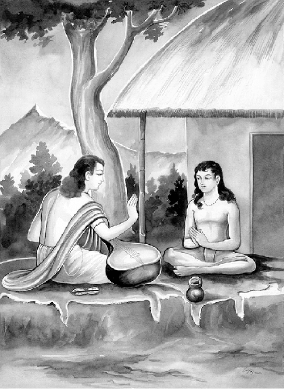
शुकदेवजी को नारदजीका उपदेश
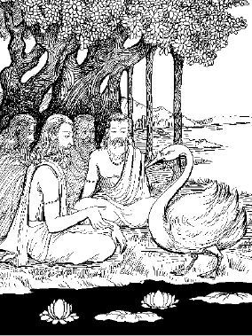
साध्यगणोंको हंसरूपमें ब्रह्माजीका उपदेश
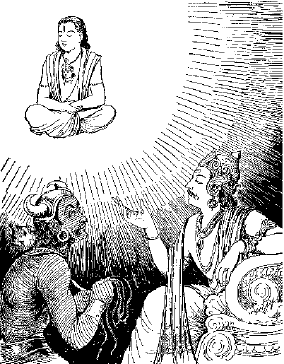
यमराजद्वारा अपने दूतको भक्तका लक्षण बताना
शुकदेवजीको नारदजीद्वारा वैराग्य और ज्ञानका उपदेश देना
भीष्म उवाच
एतस्मिन्नन्तरे शून्ये नारद: समुपागमत्।
शुकं स्वाध्यायनिरतं वेदार्थान् वक्तुमीप्सितान्॥ १॥
भीष्मजी कहते हैं—युधिष्ठिर! व्यासजीके चले जानेके बाद उस सूने आश्रममें स्वाध्यायपरायण शुकदेवसे अपना इच्छित वेदोंका अर्थ कहनेके लिये देवर्षि नारदजी पधारे॥ १॥
देवर्षिं तु शुको दृष्ट्वा नारदं समुपस्थितम्।
अर्घ्यपूर्वेण विधिना वेदोक्तेनाभ्यपूजयत्॥ २॥
देवर्षि नारदको उपस्थित देखकर शुकदेवने वेदोक्त विधिसे अर्घ्य आदि निवेदन करके उनका पूजन किया॥ २॥
नारदोऽथाब्रवीत् प्रीतो ब्रूहि धर्मभृतां वर।
केन त्वां श्रेयसा वत्स योजयामीति हृष्टवत्॥ ३॥
उस समय नारदजीने प्रसन्न होकर कहा—‘वत्स! तुम धर्मात्माओंमें श्रेष्ठ हो। बताओ, तुम्हें किस श्रेष्ठ वस्तुकी प्राप्ति कराऊँ?’ यह बात उन्होंने बड़े हर्षके साथ कही॥ ३॥
नारदस्य वच: श्रुत्वा शुक: प्रोवाच भारत।
अस्मिँल्लोके हितं यत् स्यात् तेन मां योक्तुमर्हसि॥ ४॥
भरतनन्दन! नारदजीकी यह बात सुनकर शुकदेवने कहा—‘इस लोकमें जो परम कल्याणका साधन हो, उसीका मुझे उपदेश देनेकी कृपा करें’॥ ४॥
नारद उवाच
तत्त्वं जिज्ञासतां पूर्वमृषीणां भावितात्मनाम्।
सनत्कुमारो भगवानिदं वचनमब्रवीत्॥ ५॥
नारदजीने कहा—वत्स! पूर्वकालकी बात है, पवित्र अन्त:करणवाले ऋषियोंने तत्त्वज्ञान प्राप्त करनेकी इच्छासे प्रश्न किया। उसके उत्तरमें भगवान् सनत्कुमारने यह उपदेश दिया॥ ५॥
नास्ति विद्यासमं चक्षुर्नास्ति सत्यसमं तप:।
नास्ति रागसमं दु:खं नास्ति त्यागसमं सुखम्॥ ६॥
विद्याके समान कोई नेत्र नहीं है। सत्यके समान कोई तप नहीं है। रागके समान कोई दु:ख नहीं है और त्यागके सदृश कोई सुख नहीं है॥ ६॥
निवृत्ति: कर्मण: पापात् सततं पुण्यशीलता।
सद्वृत्ति: समुदाचार: श्रेय एतदनुत्तमम्॥ ७॥
पापकर्मोंसे दूर रहना, सदा पुण्यकर्मोंका अनुष्ठान करना, श्रेष्ठ पुरुषोंके-से बर्ताव और सदाचारका पालन करना—यही सर्वोत्तम श्रेय (कल्याण)-का साधन है॥ ७॥
मानुष्यमसुखं प्राप्य य: सज्जति स मुह्यति।
नालं स दु:खमोक्षाय संयोगो दु:खलक्षणम्॥ ८॥
जहाँ सुखका नाम भी नहीं है, ऐसे इस मानव-शरीरको पाकर जो विषयोंमें आसक्त होता है, वह मोहको प्राप्त होता है। विषयोंका संयोग दु:खरूप ही है, अत: दु:खोंसे छुटकारा नहीं दिला सकता॥ ८॥
सक्तस्य बुद्धिश्चलति मोहजालविवर्धनी।
मोहजालावृतो दु:खमिह चामुत्र सोऽश्नुते॥ ९॥
विषयासक्त पुरुषकी बुद्धि चंचल होती है। वह मोहजालको बढ़ानेवाली है, मोहजालसे बँधा हुआ पुरुष इस लोक तथा परलोकमें दु:ख ही भोगता है॥ ९॥
सर्वोपायात् तु कामस्य क्रोधस्य च विनिग्रह:।
कार्य: श्रेयोऽर्थिना तौ हि श्रेयोघातार्थमुद्यतौ॥ १०॥
जिसे कल्याणप्राप्तिकी इच्छा हो, उसे सभी उपायोंसे काम और क्रोधको दबाना चाहिये; क्योंकि ये दोनों दोष कल्याणका नाश करनेके लिये उद्यत रहते हैं॥ १०॥
नित्यं क्रोधात् तपो रक्षेच्छ्रियं रक्षेच्च मत्सरात्।
विद्यां मानावमानाभ्यामात्मानं तु प्रमादत:॥ ११॥
मनुष्यको चाहिये कि सदा तपको क्रोधसे, लक्ष्मीको डाहसे, विद्याको मानापमानसे और अपने-आपको प्रमादसे बचाये॥ ११॥
आनृशंस्यं परो धर्म: क्षमा च परमं बलम्।
आत्मज्ञानं परं ज्ञानं न सत्याद् विद्यते परम्॥ १२॥
क्रूर स्वभावका परित्याग सबसे बड़ा धर्म है। क्षमा सबसे बड़ा बल है। आत्माका ज्ञान ही सबसे उत्कृष्ट ज्ञान है और सत्यसे बढ़कर तो कुछ है ही नहीं॥ १२॥
सत्यस्य वचनं श्रेय: सत्यादपि हितं वदेत्।
यद् भूतहितमत्यन्तमेतत् सत्यं मतं मम॥ १३॥
सत्य बोलना सबसे श्रेष्ठ है; परंतु सत्यसे भी श्रेष्ठ है हितकारक वचन बोलना। जिससे प्राणियोंका अत्यन्त हित होता हो, वही मेरे विचारसे सत्य है॥ १३॥
सर्वारम्भपरित्यागी निराशीर्निष्परिग्रह:।
येन सर्वं परित्यक्तं स विद्वान् स च पण्डित:॥ १४॥
जो कार्य आरम्भ करनेके सभी संकल्पोंको छोड़ चुका है, जिसके मनमें कोई कामना नहीं है, जो किसी वस्तुका संग्रह नहीं करता तथा जिसने सब कुछ त्याग दिया है, वही विद्वान् है और वही पण्डित॥ १४॥
इन्द्रियैरिन्द्रियार्थान् यश्चरत्यात्मवशैरिह।
असज्जमान: शान्तात्मा निर्विकार: समाहित:॥ १५॥
आत्मभूतैरतद्भूत: सह चैव विनैव च।
स विमुक्त: परं श्रेयो नचिरेणाधितिष्ठति॥ १६॥
जो अपने वशमें की हुई इन्द्रियोंके द्वारा यहाँ अनासक्त-भावसे विषयोंका अनुभव करता है, जिसका चित्त शान्त, निर्विकार और एकाग्र है तथा जो आत्मस्वरूप प्रतीत होनेवाले देह और इन्द्रियाँ हैं, उनके साथ रहकर भी उनसे तद्रूप न हो अलग-सा ही रहता है, वह मुक्त है और उसे बहुत शीघ्र परम कल्याणकी प्राप्ति होती है॥ १५-१६॥
अदर्शनमसंस्पर्शस्तथासम्भाषणं सदा।
यस्य भूतै: सह मुने स श्रेयो विन्दते परम्॥ १७॥
मुने! जिसकी किसी प्राणीकी ओर दृष्टि नहीं जाती, जो किसीका स्पर्श तथा किसीसे बातचीत नहीं करता, वह परम कल्याणको प्राप्त होता है॥ १७॥
न हिंस्यात् सर्वभूतानि मैत्रायणगतश्चरेत्।
नेदं जन्म समासाद्य वैरं कुर्वीत केनचित्॥ १८॥
किसी भी प्राणीकी हिंसा न करे। सबके प्रति मित्रभाव रखते हुए विचरे तथा यह मनुष्य-जन्म पाकर किसीके साथ वैर न करे॥ १८॥
आकिञ्चन्यं सुसन्तोषो निराशीस्त्वमचापलम्।
एतदाहु: परं श्रेय आत्मज्ञस्य जितात्मन:॥ १९॥
जो आत्मतत्त्वका ज्ञाता तथा मनको वशमें रखनेवाला है, उसके लिये यही परम कल्याणका साधन बताया गया है कि वह किसी वस्तुका संग्रह न करे, सन्तोष रखे तथा कामना और चंचलताको त्याग दे॥ १९॥
परिग्रहं परित्यज्य भव तात जितेन्द्रिय:।
अशोकं स्थानमातिष्ठ इह चामुत्र चाभयम्॥ २०॥
तात शुकदेव! तुम संग्रहका त्याग करके जितेन्द्रिय हो जाओ तथा उस पदको प्राप्त करो, जो इस लोक और परलोकमें भी निर्भय एवं सर्वथा शोकरहित है॥ २०॥
निरामिषा न शोचन्ति त्यजेदामिषमात्मन:।
परित्यज्यामिषं सौम्य दु:खतापाद् विमोक्ष्यसे॥ २१॥
जिन्होंने भोगोंका परित्याग कर दिया है, वे कभी शोकमें नहीं पड़ते, इसलिये प्रत्येक मनुष्यको भोगासक्तिका त्याग करना चाहिये। सौम्य! भोगोंका त्याग कर देनेपर तुम दु:ख और सन्तापसे छूट जाओगे॥ २१॥
तपोनित्येन दान्तेन मुनिना संयतात्मना।
अजितं जेतुकामेन भाव्यं सङ्गेष्वसङ्गिना॥ २२॥
जो अजित (परमात्मा)-को जीतनेकी इच्छा रखता हो, उसे तपस्वी, जितेन्द्रिय, मननशील, संयतचित्त और विषयोंमें अनासक्त रहना चाहिये॥ २२॥
गुणसङ्गेष्वनासक्त एकचर्यारत: सदा।
ब्राह्मणो नचिरादेव सुखमायात्यनुत्तमम्॥ २३॥
जो ब्राह्मण त्रिगुणात्मक विषयोंमें आसक्त न होकर सदा एकान्तवास करता है, वह शीघ्र ही सर्वोत्तम सुखरूप मोक्षको प्राप्त कर लेता है॥ २३॥
द्वन्द्वारामेषु भूतेषु य एको रमते मुनि:।
विद्धि प्रज्ञानतृप्तं तं ज्ञानतृप्तो न शोचति॥ २४॥
जो मुनि मैथुनमें सुख माननेवाले प्राणियोंके बीचमें रहकर भी अकेले रहनेमें ही आनन्द मानता है, उसे विज्ञानसे परितृप्त समझना चाहिये। जो ज्ञानसे तृप्त होता है, वह कभी शोक नहीं करता॥ २४॥
शुभैर्लभति देवत्वं व्यामिश्रैर्जन्म मानुषम्।
अशुभैश्चाप्यधो जन्म कर्मभिर्लभतेऽवश:॥ २५॥
जीव सदा कर्मोंके अधीन रहता है। वह शुभ कर्मोंके अनुष्ठानसे देवता होता है, दोनोंके सम्मिश्रणसे मनुष्य-जन्म पाता है और केवल अशुभ कर्मोंसे पशु-पक्षी आदि नीच योनियोंमें जन्म लेता है॥ २५॥
तत्र मृत्युजरादु:खै: सततं समभिद्रुत:।
संसारे पच्यते जन्तुस्तत्कथं नावबुद्धॺसे॥ २६॥
उन-उन योनियोंमें जीवको सदा जरा-मृत्यु और नाना प्रकारके दु:खोंसे सन्तप्त होना पड़ता है। इस प्रकार संसारमें जन्म लेनेवाला प्रत्येक प्राणी सन्तापकी आगमें पकाया जाता है—इस बातकी ओर तुम क्यों नहीं ध्यान देते?॥ २६॥
अहिते हितसंज्ञस्त्वमध्रुवे ध्रुवसंज्ञक:।
अनर्थे चार्थसंज्ञस्त्वं किमर्थं नावबुद्धॺसे॥ २७॥
तुमने अहितमें ही हित-बुद्धि कर ली है, जो अध्रुव (विनाशशील) वस्तुएँ हैं, उन्हींको ‘ध्रुव’ (अविनाशी) नाम दे रखा है और अनर्थमें ही तुम्हें अर्थका बोध हो रहा है। यह बात तुम्हारी समझमें क्यों नहीं आती है?॥ २७॥
संवेष्टॺमानं बहुभिर्मोहात् तन्तुभिरात्मजै:।
कोषकार इवात्मानं वेष्टयन् नावबुध्यसे॥ २८॥
जैसे रेशमका कीड़ा अपने ही शरीरसे उत्पन्न हुए तन्तुओंद्वारा अपने-आपको आच्छादित कर लेता है, उसी प्रकार तुम भी मोहवश अपनेहीसे उत्पन्न सम्बन्धके बन्धनोंद्वारा अपने-आपको बाँधते जा रहे हो तो भी यह बात तुम्हारी समझमें नहीं आ रही है॥ २८॥
अलं परिग्रहेणेह दोषवान् हि परिग्रह:।
कृमिर्हि कोषकारस्तु बध्यते स परिग्रहात्॥ २९॥
यहाँ विभिन्न वस्तुओंके संग्रहकी कोई आवश्यकता नहीं है, क्योंकि संग्रहसे महान् दोष प्रकट होता है। रेशमका कीड़ा अपने संग्रह-दोषके कारण ही बन्धनमें पड़ता है॥ २९॥
पुत्रदारकुटुम्बेषु सक्ता: सीदन्ति जन्तव:।
सर:पङ्कार्णवे मग्ना जीर्णा वनगजा इव॥ ३०॥
स्त्री-पुत्र और कुटुम्बमें आसक्त रहनेवाले प्राणी उसी प्रकार कष्ट पाते हैं, जैसे जंगलके बूढ़े हाथी तालाबके दलदलमें फँसकर दु:ख उठाते हैं॥ ३०॥
महाजालसमाकृष्टान् स्थले मत्स्यानिवोद्धृतान्।
स्नेहजालसमाकृष्टान् पश्य जन्तून् सुदु:खितान्॥ ३१॥
जिस प्रकार महान् जालमें फँसकर पानीसे बाहर आये हुए मत्स्य तड़पते हैं, उसी प्रकार स्नेहजालसे आकृष्ट होकर अत्यन्त कष्ट उठाते हुए इन प्राणियोंकी ओर दृष्टिपात करो॥ ३१॥
कुटुम्बं पुत्रदारांश्च शरीरं सञ्चयाश्च ये।
पारक्यमध्रुवं सर्वं किं स्वं सुकृतदुष्कृतम्॥ ३२॥
संसारमें कुटुम्ब, स्त्री, पुत्र, शरीर और संग्रह—सब कुछ पराया है। सब नाशवान् है। इसमें अपना क्या है, केवल पाप और पुण्य॥ ३२॥
यदा सर्वं परित्यज्य गन्तव्यमवशेन ते।
अनर्थे किं प्रसक्तस्त्वं स्वमर्थं नानुतिष्ठसि॥ ३३॥
जब सब कुछ छोड़कर तुम्हें यहाँसे विवश होकर चल देना है, तब इस अनर्थमय जगत्में क्यों आसक्त हो रहे हो? अपने वास्तविक अर्थ—मोक्षका साधन क्यों नहीं करते हो?॥ ३३॥
अविश्रान्तमनालम्बमपाथेयमदैशिकम्।
तम:कान्तारमध्वानं कथमेको गमिष्यसि॥ ३४॥
जहाँ ठहरनेके लिये कोई स्थान नहीं, कोई सहारा देनेवाला नहीं, राहखर्च नहीं तथा अपने देशका कोई साथी अथवा राह बतानेवाला नहीं है, जो अन्धकारसे व्याप्त और दुर्गम है, उस मार्गपर तुम अकेले कैसे चल सकोगे?॥ ३४॥
न हि त्वां प्रस्थितं कश्चित् पृष्ठतोऽनुगमिष्यति।
सुकृतं दुष्कृतं च त्वां यास्यन्तमनुयास्यति॥ ३५॥
जब तुम परलोककी राह लोगे, उस समय तुम्हारे पीछे कोई नहीं जायगा। केवल तुम्हारा किया हुआ पुण्य या पाप ही वहाँ जाते समय तुम्हारा अनुसरण करेगा॥ ३५॥
विद्या कर्म च शौचं च ज्ञानं च बहुविस्तरम्।
अर्थार्थमनुसार्यन्ते सिद्धार्थश्च विमुच्यते॥ ३६॥
अर्थ (परमात्मा)-की प्राप्तिके लिये ही विद्या, कर्म, पवित्रता और अत्यन्त विस्तृत ज्ञानका सहारा लिया जाता है। जब कार्यकी सिद्धि (परमात्माकी प्राप्ति) हो जाती है, तब मनुष्य मुक्त हो जाता है॥ ३६॥
निबन्धनी रज्जुरेषा या ग्रामे वसतो रति:।
छित्त्वैतां सुकृतो यान्ति नैनां छिन्दन्ति दुष्कृत:॥ ३७॥
गाँवोंमें रहनेवाले मनुष्यकी विषयोंके प्रति जो आसक्ति होती है, वह उसे बाँधनेवाली रस्सीके समान है। पुण्यात्मा पुरुष उसे काटकर आगे—परमार्थके पथपर बढ़ जाते हैं; किंतु जो पापी हैं, वे उसे नहीं काट पाते॥ ३७॥
रूपकूलां मन:स्रोतां स्पर्शद्वीपां रसावहाम्।
गन्धपङ्कां शब्दजलां स्वर्गमार्गदुरावहाम्॥ ३८॥
क्षमारित्रां सत्यमयीं धर्मस्थैर्यवटारकाम्।
त्यागवाताध्वगां शीघ्रां नौतार्यां तां नदीं तरेत्॥ ३९॥
यह संसार एक नदीके समान है, जिसका उपादान या उद्गम सत्य है, रूप इसका किनारा, मन स्रोत, स्पर्श द्वीप और रस ही प्रवाह है, गन्ध उस नदीका कीचड़, शब्द जल और स्वर्गरूपी दुर्गम घाट है। शरीररूपी नौकाकी सहायतासे उसे पार किया जा सकता है। क्षमा इसको खेनेवाली लग्गी और धर्म इसको स्थिर करनेवाली रस्सी (लंगर) है। यदि त्यागरूपी अनुकूल पवनका सहारा मिले तो इस शीघ्रगामिनी नदीको पार किया जा सकता है। इसे पार करनेका अवश्य प्रयत्न करे॥ ३८-३९॥
त्यज धर्ममधर्मं च तथा सत्यानृते त्यज।
उभे सत्यानृते त्यक्त्वा येन त्यजसि तं त्यज॥ ४०॥
धर्म और अधर्मको छोड़ो। सत्य और असत्यको भी त्याग दो और उन दोनोंका त्याग करके जिसके द्वारा त्याग करते हो, उसको भी त्याग दो॥ ४०॥
त्यज धर्ममसङ्कल्पादधर्मं चाप्यलिप्सया।
उभे सत्यानृते बुद्धॺा बुद्धिं परमनिश्चयात्॥ ४१॥
संकल्पके त्यागद्वारा धर्मको और लिप्साके अभावद्वारा अधर्मको भी त्याग दो। फिर बुद्धिके द्वारा सत्य और असत्यका त्याग करके परमतत्त्वके निश्चयद्वारा बुद्धिको भी त्याग दो॥ ४१॥
अस्थिस्थूणं स्नायुयुतं मांसशोणितलेपनम्।
चर्मावनद्धं दुर्गन्धिं पूर्णं मूत्रपुरीषयो:॥ ४२॥
जराशोकसमाविष्टं रोगायतनमातुरम्।
रजस्वलमनित्यं च भूतावासमिमं त्यज॥ ४३॥
यह शरीर पंचभूतोंका घर है। इसमें हड्डियोंके खंभे लगे हैं। यह नस-नाड़ियोंसे बँधा हुआ, रक्त-मांससे लिपा हुआ और चमड़ेसे मढ़ा हुआ है। इसमें मल-मूत्र भरा है, जिससे दुर्गन्ध आती रहती है। यह बुढ़ापा और शोकसे व्याप्त, रोगोंका घर, दु:खरूप, रजोगुणरूपी धूलसे ढका हुआ और अनित्य है; अत: तुम्हें इसकी आसक्तिको त्याग देना चाहिये॥ ४२-४३॥
इदं विश्वं जगत् सर्वमजगच्चापि यद् भवेत्।
महाभूतात्मकं सर्वं महद् यत् परमाश्रयात्॥ ४४॥
इन्द्रियाणि च पञ्चैव तम: सत्त्वं रजस्तथा।
इत्येष सप्तदशको राशिरव्यक्तसंज्ञक:॥ ४५॥
यह सम्पूर्ण चराचर जगत् पंचमहाभूतोंसे उत्पन्न हुआ है। इसलिये महाभूतस्वरूप ही है। जो शरीरसे परे है, वह महत्तत्त्व अर्थात् बुद्धि, पाँच इन्द्रियाँ, पाँच सूक्ष्म महाभूत अर्थात् तन्मात्राएँ, पाँच प्राण तथा सत्त्व आदि गुण—इन सत्रह तत्त्वोंके समुदायका नाम अव्यक्त है॥ ४४-४५॥
सर्वैरिहेन्द्रियार्थैश्च व्यक्ताव्यक्तैर्हि संहित:।
चतुर्विंशक इत्येष व्यक्ताव्यक्तमयो गण:॥ ४६॥
इनके साथ ही इन्द्रियोंके पाँच विषय अर्थात् स्पर्श, शब्द, रूप, रस और गन्ध एवं मन और अहंकार—इन सम्पूर्ण व्यक्ताव्यक्तको मिलानेसे चौबीस तत्त्वोंका समूह होता है, उसे व्यक्ताव्यक्तमय समुदाय कहा गया है॥ ४६॥
एतै: सर्वै: समायुक्त: पुमानित्यभिधीयते।
त्रिवर्गं तु सुखं दु:खं जीवितं मरणं तथा॥ ४७॥
य इदं वेद तत्त्वेन स वेद प्रभवाप्ययौ।
इन सब तत्त्वोंसे जो संयुक्त है, उसे पुरुष कहते हैं। जो पुरुष धर्म, अर्थ, काम, सुख-दु:ख और जीवन-मरणके तत्त्वको ठीक-ठीक समझता है, वही उत्पत्ति और प्रलयके तत्त्वको भी यथार्थरूपसे जानता है॥ ४७ १/२॥
पारम्पर्येण बोद्धव्यं ज्ञानानां यच्च किञ्चन॥ ४८॥
इन्द्रियैर्गृह्यते यद् यत् तत् तद् व्यक्तमिति स्थिति:।
अव्यक्तमिति विज्ञेयं लिङ्गग्राह्यमतीन्द्रियम्॥ ४९॥
ज्ञानके सम्बन्धमें जितनी बातें हैं, उन्हें परम्परासे जानना चाहिये। जो पदार्थ इन्द्रियोंद्वारा ग्रहण किये जाते हैं, उन्हें व्यक्त कहते हैं और जो इन्द्रियोंके अगोचर होनेके कारण अनुमानसे जाने जाते हैं, उनको अव्यक्त कहते हैं॥ ४८-४९॥
इन्द्रियैर्नियतैर्देही धाराभिरिव तर्प्यते।
लोके विततमात्मानं लोकांश्चात्मनि पश्यति॥ ५०॥
जिनकी इन्द्रियाँ अपने वशमें हैं, वे जीव उसी प्रकार तृप्त हो जाते हैं, जैसे वर्षाकी धारासे प्यासा मनुष्य। ज्ञानी पुरुष अपनेको प्राणियोंमें व्याप्त और प्राणियोंको अपनेमें स्थित देखते हैं॥ ५०॥
परावरदृश: शक्तिर्ज्ञानमूला न नश्यति।
पश्यत: सर्वभूतानि सर्वावस्थासु सर्वदा॥ ५१॥
सर्वभूतस्य संयोगो नाशुभेनोपपद्यते।
उस परावरदर्शी ज्ञानी पुरुषकी ज्ञानमूलक शक्ति कभी नष्ट नहीं होती। जो सम्पूर्ण भूतोंको सभी अवस्थाओंमें सदा देखा करता है, वह सम्पूर्ण प्राणियोंके सहवासमें आकर भी कभी अशुभ कर्मोंसे युक्त नहीं होता अर्थात् अशुभ कर्म नहीं करता॥ ५१ १/२॥
ज्ञानेन विविधान् क्लेशानतिवृत्तस्य मोहजान्॥ ५२॥
लोके बुद्धिप्रकाशेन लोकमार्गो न रिष्यते।
जो ज्ञानके बलसे मोहजनित नाना प्रकारके क्लेशोंसे पार हो गया है, उसके लिये जगत्में बौद्धिक प्रकाशसे कोई भी लोक-व्यवहारका मार्ग अवरुद्ध नहीं होता॥ ५२ १/२॥
अनादिनिधनं जन्तुमात्मनि स्थितमव्ययम्॥ ५३॥
अकर्तारममूर्तं च भगवानाह तीर्थवित्।
मोक्षके उपायको जाननेवाले भगवान् नारायण कहते हैं कि आदि-अन्तसे रहित, अविनाशी, अकर्ता और निराकार जीवात्मा इस शरीरमें स्थित है॥ ५३ १/२॥
यो जन्तु: स्वकृतैस्तैस्तै: कर्मभिर्नित्यदु:खित:॥ ५४॥
स दु:खप्रतिघातार्थं हन्ति जन्तूननेकधा।
जो जीव अपने ही किये हुए विभिन्न कर्मोंके कारण सदा दु:खी रहता है, वही उस दु:खका निवारण करनेके लिये नाना प्रकारके प्राणियोंकी हत्या करता है॥ ५४ १/२॥
तत: कर्म समादत्ते पुनरन्यन्नवं बहु॥ ५५॥
तप्यतेऽथ पुनस्तेन भुक्त्वापथ्यमिवातुर:।
तदनन्तर वह और भी बहुत-से नये-नये कर्म करता है और जैसे रोगी अपथ्य खाकर दु:ख पाता है, उसी प्रकार उस कर्मसे वह अधिकाधिक कष्ट पाता रहता है॥ ५५ १/२॥
अजस्रमेव मोहान्धो दु:खेषु सुखसंज्ञित:॥ ५६॥
बध्यते मथ्यते चैव कर्मभिर्मन्थवत् सदा।
जो मोहसे अन्धा (विवेकशून्य) हो गया है, वह सदा ही दु:खद भोगोंमें ही सुखबुद्धि कर लेता है और मथानीकी भाँति कर्मोंसे बँधता एवं मथा जाता है॥ ५६ १/२॥
ततो निबद्ध: स्वां योनिं कर्मणामुदयादिह॥ ५७॥
परिभ्रमति संसारं चक्रवद् बहुवेदन:।
फिर प्रारब्ध कर्मोंके उदय होनेपर वह बद्ध प्राणी कर्मके अनुसार जन्म पाकर संसारमें नाना प्रकारके दु:ख भोगता हुआ उसमें चक्रकी भाँति घूमता रहता है॥ ५७ १/२॥
स त्वं निवृत्तबन्धस्तु निवृत्तश्चापि कर्मत:॥ ५८॥
सर्ववित् सर्वजित् सिद्धो भव भावविवर्जित:।
इसलिये तुम कर्मोंसे निवृत्त, सब प्रकारके बन्धनोंसे मुक्त, सर्वज्ञ, सर्वविजयी, सिद्ध और सांसारिक भावनासे रहित हो जाओ॥ ५८ १/२॥
संयमेन नवं बन्धं निवर्त्य तपसो बलात्।
सम्प्राप्ता बहव: सिद्धिमप्यबाधां सुखोदयाम्॥ ५९॥
बहुत-से ज्ञानी पुरुष संयम और तपस्याके बलसे नवीन बन्धनोंका उच्छेद करके अनन्त सुख देनेवाली अबाध सिद्धिको प्राप्त हो चुके हैं॥ ५९॥
॥ इति श्रीमहाभारते शान्तिपर्वणि मोक्षधर्मपर्वणि नारदगीतायां प्रथमोऽध्याय:॥ १॥
दूसरा अध्याय
शुकदेवको नारदजीका सदाचार और अध्यात्मविषयक उपदेश
नारद उवाच
अशोकं शोकनाशार्थं शास्त्रं शान्तिकरं शिवम्।
निशम्य लभते बुद्धिं तां लब्ध्वा सुखमेधते॥ १॥
नारदजी कहते हैं—शुकदेव! शास्त्र शोकको दूर करनेवाला, शान्तिकारक और कल्याणमय है। जो अपने शोकका नाश करनेके लिये शास्त्रका श्रवण करता है, वह उत्तम बुद्धि पाकर सुखी हो जाता है॥ १॥
शोकस्थानसहस्राणि भयस्थानशतानि च।
दिवसे दिवसे मूढमाविशन्ति न पण्डितम्॥ २॥
शोकके सहस्रों और भयके सैकड़ों स्थान हैं, जो प्रतिदिन मूढ़ पुरुषोंपर ही अपना प्रभाव डालते हैं, विद्वान्पर नहीं॥ २॥
तस्मादनिष्टनाशार्थमितिहासं निबोध मे।
तिष्ठते चेद् वशे बुद्धिर्लभते शोकनाशनम्॥ ३॥
इसलिये अपने अनिष्टका नाश करनेके लिये मेरा यह उपदेश सुनो—यदि बुद्धि अपने वशमें रहे तो सदाके लिये शोकका नाश हो जाता है॥ ३॥
अनिष्टसम्प्रयोगाच्च विप्रयोगात् प्रियस्य च।
मनुष्या मानसैर्दु:खैर्युज्यन्ते स्वल्पबुद्धय:॥ ४॥
मन्दबुद्धि मनुष्य ही अप्रिय वस्तुकी प्राप्ति और प्रिय वस्तुका वियोग होनेपर मन-ही-मन दु:खी होते हैं॥ ४॥
द्रव्येषु समतीतेषु ये गुणास्तान् न चिन्तयेत्।
न तानाद्रियमाणस्य स्नेहबन्ध: प्रमुच्यते॥ ५॥
जो वस्तु भूतकालके गर्भमें छिप गयी (नष्ट हो गयी), उसके गुणोंका स्मरण नहीं करना चाहिये; क्योंकि जो आदरपूर्वक उसके गुणोंका चिन्तन करता है, उसका उसके प्रति आसक्तिका बन्धन नहीं छूटता है॥ ५॥
दोषदर्शी भवेत् तत्र यत्र राग: प्रवर्तते।
अनिष्टवर्धितं पश्येत् तथा क्षिप्रं विरज्यते॥ ६॥
जहाँ चित्तकी आसक्ति बढ़ने लगे, वहीं दोषदृष्टि करनी चाहिये और उसे अनिष्टको बढ़ानेवाला समझना चाहिये। ऐसा करनेपर उससे शीघ्र ही वैराग्य हो जाता है॥ ६॥
नार्थो न धर्मो न यशो योऽतीतमनुशोचति।
अप्यभावेन युज्येत तच्चास्य न निवर्तते॥ ७॥
जो बीती बातके लिये शोक करता है, उसे न तो अर्थकी प्राप्ति होती है, न धर्मकी और न यशकी ही प्राप्ति होती है। वह उसके अभावका अनुभव करके केवल दु:ख ही उठाता है। उससे अभाव दूर नहीं होता॥ ७॥
गुणैर्भूतानि युज्यन्ते वियुज्यन्ते तथैव च।
सर्वाणि नैतदेकस्य शोकस्थानं हि विद्यते॥ ८॥
सभी प्राणियोंको उत्तम पदार्थोंसे संयोग और वियोग प्राप्त होते रहते हैं। किसी एकपर ही यह शोकका अवसर आता हो, ऐसी बात नहीं है॥ ८॥
मृतं वा यदि वा नष्टं योऽतीतमनुशोचति।
दु:खेन लभते दु:खं द्वावनर्थौ प्रपद्यते॥ ९॥
जो मनुष्य भूतकालमें मरे हुए किसी व्यक्तिके लिये अथवा नष्ट हुई किसी वस्तुके लिये निरन्तर शोक करता है, वह एक दु:खसे दूसरे दु:खको प्राप्त होता है। इस प्रकार उसे दो अनर्थ भोगने पड़ते हैं॥ ९॥
नाश्रु कुर्वन्ति ये बुद्धॺा दृष्ट्वा लोकेषु सन्ततिम्।
सम्यक् प्रपश्यत: सर्वं नाश्रुकर्मोपपद्यते॥ १०॥
जो मनुष्य संसारमें अपनी सन्तानकी मृत्यु हुई देखकर भी अश्रुपात नहीं करते, वे ही धीर हैं। सभी वस्तुओंपर समीचीन भावसे दृष्टिपात या विचार करनेपर किसीका भी आँसू बहाना युक्तिसंगत नहीं जान पड़ता है॥ १०॥
दु:खोपघाते शारीरे मानसे चाप्युपस्थिते।
यस्मिन् न शक्यते कर्तुं यत्नस्तन्नानुचिन्तयेत्॥ ११॥
यदि कोई शारीरिक या मानसिक दु:ख उपस्थित हो जाय और उसे दूर करनेके लिये कोई यत्न न किया जा सके अथवा किया हुआ यत्न काम न दे सके तो उसके लिये चिन्ता नहीं करनी चाहिये॥ ११॥
भैषज्यमेतद् दु:खस्य यदेतन्नानुचिन्तयेत्।
चिन्त्यमानं हि न व्येति भूयश्चापि प्रवर्धते॥ १२॥
दु:ख दूर करनेकी सबसे अच्छी दवा यही है कि उसका बार-बार चिन्तन न किया जाय। चिन्तन करनेसे वह घटता नहीं, बल्कि बढ़ता ही जाता है॥ १२॥
प्रज्ञया मानसं दु:खं हन्याच्छारीरमौषधै:।
एतद् विज्ञानसामर्थ्यं न बालै: समतामियात्॥ १३॥
इसलिये मानसिक दु:खको बुद्धिके द्वारा विचारसे और शारीरिक कष्टको औषध-सेवनद्वारा नष्ट करना चाहिये। शास्त्रज्ञानके प्रभावसे ही ऐसा होना सम्भव है। दु:ख पड़नेपर बालकोंकी तरह रोना उचित नहीं है॥ १३॥
अनित्यं यौवनं रूपं जीवितं द्रव्यसञ्चय:।
आरोग्यं प्रियसंवासो गृध्येत् तत्र न पण्डित:॥ १४॥
रूप, यौवन, जीवन, धन-संग्रह, आरोग्य तथा प्रियजनोंका सहवास—ये सब अनित्य हैं। विद्वान् पुरुषको इनमें आसक्त नहीं होना चाहिये॥ १४॥
न जानपदिकं दु:खमेक: शोचितुमर्हति।
अशोचन् प्रतिकुर्वीत यदि पश्येदुपक्रमम्॥ १५॥
सारे देशपर आये हुए संकटके लिये किसी एक व्यक्तिको शोक करना उचित नहीं है। यदि उस संकटको टालनेका कोई उपाय दिखलायी दे तो शोक छोड़कर उसे ही करना चाहिये॥ १५॥
सुखाद् बहुतरं दु:खं जीविते नात्र संशय:।
स्निग्धत्वं चेन्द्रियार्थेषु मोहान्मरणमप्रियम्॥ १६॥
इसमें संदेह नहीं कि जीवनमें सुखकी अपेक्षा दु:ख ही अधिक होता है। किंतु सभीको मोहवश विषयोंके प्रति अनुराग होता है और मृत्यु अप्रिय लगती है॥ १६॥
परित्यजति यो दु:खं सुखं वाप्युभयं नर:।
अभ्येति ब्रह्म सोऽत्यन्तं न तं शोचन्ति पण्डिता:॥ १७॥
जो मनुष्य सुख और दु:ख दोनोंकी ही चिन्ता छोड़ देता है, वह अक्षय ब्रह्मको प्राप्त हो जाता है। विद्वान् पुरुष उसके लिये शोक नहीं करते हैं॥ १७॥
त्यज्यन्ते दु:खमर्था हि पालने न च ते सुखा:।
दु:खेन चाधिगम्यन्ते नाशमेषां न चिन्तयेत्॥ १८॥
धन खर्च करते समय बड़ा दु:ख होता है। उसकी रक्षामें भी सुख नहीं है और उसकी प्राप्ति भी बड़े कष्टसे होती है, अत: धनको प्रत्येक अवस्थामें दु:खदायक समझकर उसके नष्ट होनेपर चिन्ता नहीं करनी चाहिये॥ १८॥
अन्यामन्यां धनावस्थां प्राप्य वैशेषिकीं नरा:।
अतृप्ता यान्ति विध्वंसं सन्तोषं यान्ति पण्डिता:॥ १९॥
मनुष्य धनका संग्रह करते-करते पहलेकी अपेक्षा ऊँची धन-सम्पन्न स्थितिको प्राप्त होकर भी कभी तृप्त नहीं होते। वे और अधिककी आशा लिये हुए ही मर जाते है; किंतु विद्वान् पुरुष सदा सन्तुष्ट रहते हैं (वे धनकी तृष्णामें नहीं पड़ते)॥ १९॥
सर्वे क्षयान्ता निचया: पतनान्ता: समुच्छ्रया:।
संयोगा विप्रयोगान्ता मरणान्तं हि जीवितम्॥ २०॥
संग्रहका अन्त है विनाश। ऊँचे चढ़नेका अन्त है नीचे गिरना। संयोगका अन्त है वियोग और जीवनका अन्त है मरण॥ २०॥
अन्तो नास्ति पिपासायास्तुष्टिस्तु परमं सुखम्।
तस्मात् सन्तोषमेवेह धनं पश्यन्ति पण्डिता:॥ २१॥
तृष्णाका कभी अन्त नहीं होता। सन्तोष ही परम सुख है, अत: पण्डितजन इस लोकमें सन्तोषको ही उत्तम धन समझते हैं॥ २१॥
निमेषमात्रमपि हि वयो गच्छन्न तिष्ठति।
स्वशरीरेष्वनित्येषु नित्यं किमनुचिन्तयेत्॥ २२॥
आयु निरन्तर बीती जा रही है। वह पलभर भी ठहरती नहीं है। जब अपना शरीर ही अनित्य है, तब इस संसारकी किस वस्तुको नित्य समझा जाय॥ २२॥
भूतेषु भावं सञ्चिन्त्य ये बुद्ध्वा मनस: परम्।
न शोचन्ति गताध्वान: पश्यन्त: परमां गतिम्॥ २३॥
जो मनुष्य सब प्राणियोंके भीतर मनसे परे परमात्माकी स्थिति जानकर उन्हींका चिन्तन करते हैं, वे संसार-यात्रा समाप्त होनेपर परमपदका साक्षात्कार करते हुए शोकके पार हो जाते हैं॥ २३॥
सञ्चिन्वानकमेवैनं कामानामवितृप्तकम्।
व्याघ्र: पशुमिवासाद्य मृत्युरादाय गच्छति॥ २४॥
जैसे जंगलमें नयी-नयी घासकी खोजमें विचरते हुए अतृप्त पशुको सहसा व्याघ्र आकर दबोच लेता है, उसी प्रकार भोगोंकी खोजमें लगे हुए अतृप्त मनुष्यको मृत्यु उठा ले जाती है॥ २४॥
तथाप्युपायं सम्पश्येद् दु:खस्य परिमोक्षणम्।
अशोचन् नारभेच्चैव मुक्तश्चाव्यसनी भवेत्॥ २५॥
तथापि सबको दु:खसे छूटनेका उपाय अवश्य सोचना चाहिये। जो शोक छोड़कर साधन आरम्भ करता है और किसी व्यसनमें आसक्त नहीं होता, वह निश्चय ही दु:खोंसे मुक्त हो जाता है॥ २५॥
शब्दे स्पर्शे च रूपे च गन्धेषु च रसेषु च।
नोपभोगात् परं किञ्चिद् धनिनो वाधनस्य च॥ २६॥
धनी हो या निर्धन, सबको उपभोगकालमें ही शब्द, स्पर्श, रूप, गन्ध और उत्तम रस आदि विषयोंमें किंचित् सुखकी प्रतीति होती है, उपभोगके पश्चात् नहीं॥ २६॥
प्राक्सम्प्रयोगाद् भूतानां नास्ति दु:खं परायणम्।
विप्रयोगात् तु सर्वस्य न शोचेत् प्रकृतिस्थित:॥ २७॥
प्राणियोंके एक-दूसरेसे संयोग होनेके पहले कोई दु:ख नहीं रहता। जब संयोगके बाद वियोग होता है, तभी सबको दु:ख हुआ करता है। अत: अपने स्वरूपमें स्थित विवेकी पुरुषको किसीके वियोगमें कभी भी शोक नहीं करना चाहिये॥ २७॥
धृत्या शिश्नोदरं रक्षेत् पाणिपादं च चक्षुषा।
चक्षु:श्रोत्रे च मनसा मनो वाचं च विद्यया॥ २८॥
मनुष्यको चाहिये कि वह धैर्यके द्वारा शिश्न और उदरकी, नेत्रके द्वारा हाथ और पैरकी, मनके द्वारा आँख और कानकी तथा सद्विद्याके द्वारा मन और वाणीकी रक्षा करे॥ २८॥
प्रणयं प्रतिसंहृत्य संस्तुतेष्वितरेषु च।
विचरेदसमुन्नद्ध: स सुखी स च पण्डित:॥ २९॥
जो पूजनीय तथा अन्य मनुष्योंमें आसक्तिको हटाकर विनीतभावसे विचरण करता है, वही सुखी और वही विद्वान् है॥ २९॥
अध्यात्मरतिरासीनो निरपेक्षो निरामिष:।
आत्मनैव सहायेन यश्चरेत् स सुखी भवेत्॥ ३०॥
जो अध्यात्मविद्यामें अनुरक्त, कामनाशून्य तथा भोगासक्तिसे दूर है, जो अकेला ही विचरण करता है, वह सुखी होता है॥ ३०॥
॥ इति श्रीमहाभारते शान्तिपर्वणि मोक्षधर्मपर्वणि नारदगीतायां द्वितीयोऽध्याय:॥ २॥
तीसरा अध्याय
नारदजीका शुकदेवको कर्मफलप्राप्तिमें परतन्त्रता-विषयक उपदेश तथा शुकदेवजीका सूर्य-लोकमें जानेका निश्चय
नारद उवाच
सुखदु:खविपर्यासो यदा समनुपद्यते।
नैनं प्रज्ञा सुनीतं वा त्रायते नापि पौरुषम्॥ १॥
नारदजी कहते हैं—शुकदेव! जब मनुष्य सुखको दु:ख और दु:खको सुख समझने लगता है, उस समय बुद्धि, उत्तम नीति और पुरुषार्थ भी उसकी रक्षा नहीं कर पाते॥ १॥
स्वभावाद् यत्नमातिष्ठेद् यत्नवान् नावसीदति।
जरामरणरोगेभ्य: प्रियमात्मानमुद्धरेत्॥ २॥
अत: मनुष्यको स्वभावत: ज्ञानप्राप्तिके लिये यत्न करना चाहिये; क्योंकि यत्न करनेवाला पुरुष कभी दु:खमें नहीं पड़ता। आत्मा सबसे बढ़कर प्रिय है; अत: जरा, मृत्यु और रोगोंके कष्टसे उसका उद्धार करे॥ २॥
रुजन्ति हि शरीराणि रोगा: शारीरमानसा:।
सायका इव तीक्ष्णाग्रा: प्रयुक्ता दृढधन्विभि:॥ ३॥
शारीरिक और मानसिक रोग सुदृढ़ धनुष धारण करनेवाले वीर पुरुषोंके छोड़े हुए तीक्ष्ण बाणोंके समान शरीरको पीड़ा देते हैं॥ ३॥
व्यथितस्य विधित्साभिस्ताम्यतो जीवितैषिण:।
अवशस्य विनाशाय शरीरमपकृष्यते॥ ४॥
तृष्णासे व्यथित, दु:खी एवं विवश होकर जीनेकी इच्छा रखनेवाले मनुष्यका शरीर विनाशकी ओर ही खिंचता चला जाता है॥ ४॥
स्रवन्ति न निवर्तन्ते स्रोतांसि सरितामिव।
आयुरादाय मर्त्यानां रात्र्यहानि पुन: पुन:॥ ५॥
जैसे नदियोंका प्रवाह आगेकी ओर ही बढ़ता चला जाता है, पीछेकी ओर नहीं लौटता, उसी प्रकार रात और दिन भी मनुष्योंकी आयुका अपहरण करते हुए बारम्बार आते और बीतते चले जाते हैं॥ ५॥
व्यत्ययो ह्ययमत्यन्तं पक्षयो: शुक्लकृष्णयो:।
जातान् मर्त्याञ्जरयति निमेषान् नावतिष्ठते॥ ६॥
शुक्ल और कृष्ण—दोनों पक्षोंका निरन्तर होनेवाला यह परिवर्तन मनुष्योंको जराजीर्ण कर रहा है। यह कुछ क्षणके लिये भी विश्राम नहीं लेता है॥ ६॥
सुखदु:खानि भूतानामजरो जरयत्यसौ।
आदित्यो ह्यस्तमभ्येति पुन: पुनरुदेति च॥ ७॥
सूर्य प्रतिदिन अस्त होते और फिर उदय लेते हैं। वे स्वयं अजर होकर भी प्रतिदिन प्राणियोंके सुख और दु:खको जीर्ण करते रहते हैं॥ ७॥
अदृष्टपूर्वानादाय भावानपरिशङ्कितान्।
इष्टानिष्टान् मनुष्याणामस्तं गच्छन्ति रात्रय:॥ ८॥
ये रात्रियाँ मनुष्योंके लिये कितनी ही अपूर्व तथा असम्भावित प्रिय-अप्रिय घटनाएँ लिये आती और चली जाती हैं॥ ८॥
योऽयमिच्छेद् यथाकामं कामानां तदवाप्नुयात्।
यदि स्यान्न पराधीनं पुरुषस्य क्रियाफलम्॥ ९॥
यदि जीवके किये हुए कर्मोंका फल पराधीन न होता तो जो जिस वस्तुकी इच्छा करता, वह अपनी उसी कामनाको रुचिके अनुसार प्राप्त कर लेता॥ ९॥
संयताश्च हि दक्षाश्च मतिमन्तश्च मानवा:।
दृश्यन्ते निष्फला: सन्त: प्रहीणा: सर्वकर्मभि:॥ १०॥
बड़े-बड़े संयमी, बुद्धिमान् और चतुर मनुष्य भी समस्त कर्मोंसे श्रान्त होकर असफल होते देखे जाते हैं॥ १०॥
अपरे बालिशा: सन्तो निर्गुणा: पुरुषाधमा:।
आशीर्भिरप्यसंयुक्ता दृश्यन्ते सर्वकामिन:॥ ११॥
किंतु दूसरे मूर्ख, गुणहीन और अधम मनुष्य भी किसीका आशीर्वाद न मिलनेपर भी सम्पूर्ण कामनाओंसे सम्पन्न दिखायी देते हैं॥ ११॥
भूतानामपर: कश्चिद्धिंसायां सततोत्थित:।
वञ्चनायां च लोकस्य स सुखेष्वेव जीर्यते॥ १२॥
कोई-कोई मनुष्य तो सदा प्राणियोंकी हिंसामें ही लगा रहता है और सब लोगोंको धोखा दिया करता है तो भी वह सुख ही भोगते-भोगते बूढ़ा होता है॥ १२॥
अचेष्टमानमासीनं श्री: कञ्चिदुपतिष्ठते।
कश्चित् कर्मानुसृत्यान्यो न प्राप्यमधिगच्छति॥ १३॥
कितने ही ऐसे हैं, जो कोई काम न करके चुपचाप बैठे रहते हैं, फिर भी लक्ष्मी उनके पास अपने-आप पहुँच जाती है और कुछ लोग काम करके भी अपनी प्राप्य वस्तुको उपलब्ध नहीं कर पाते॥ १३॥
अपराधं समाचक्ष्व पुरुषस्य स्वभावत:।
शुक्रमन्यत्र सम्भूतं पुनरन्यत्र गच्छति॥ १४॥
इसमें स्वभावत: पुरुषका ही अपराध (प्रारब्ध-दोष) समझो। वीर्य अन्यत्र उत्पन्न होता है और सन्तानोत्पादनके लिये अन्यत्र जाता है॥ १४॥
तस्य योनौ प्रयुक्तस्य गर्भो भवति वा न वा।
आम्रपुष्पोपमा यस्य निवृत्तिरुपलभ्यते॥ १५॥
कभी तो वह योनिमें पहुँचकर गर्भ धारण करानेमें समर्थ होता है और कभी नहीं होता तथा कभी-कभी आमके बौरके समान वह व्यर्थ ही झर जाता है॥ १५॥
केषाञ्चित् पुत्रकामानामनुसन्तानमिच्छताम्।
सिद्धौ प्रयतमानानां न चाण्डमुपजायते॥ १६॥
कुछ लोग पुत्रकी इच्छा रखते हैं और उस पुत्रके भी सन्तान चाहते हैं तथा इसकी सिद्धिके लिये सब प्रकारसे प्रयत्न करते हैं तो भी उनके एक अंडा भी उत्पन्न नहीं होता॥ १६॥
गर्भाच्चोद्विजमानानां क्रुद्धादाशीविषादिव।
आयुष्माञ्जायते पुत्र: कथं प्रेत इवाभवत्॥ १७॥
बहुत-से मनुष्य बच्चा पैदा होनेसे उसी तरह डरते हैं, जैसे क्रोधमें भरे हुए विषधर सर्पसे लोग भयभीत रहते हैं, तथापि उनके यहाँ दीर्घजीवी पुत्र उत्पन्न होता है और क्या मजाल कि वह कभी किसी तरह रोग आदिसे मृतकतुल्य हो सके॥ १७॥
देवानिष्ट्वा तपस्तप्त्वा कृपणै: पुत्रगृद्धिभि:।
दश मासान् परिधृता जायन्ते कुलपांसना:॥ १८॥
पुत्रकी अभिलाषा रखनेवाले दीन स्त्री-पुरुषोंद्वारा देवताओंकी पूजा और तपस्या करके दस मासतक गर्भधारण किया जाता है, तथापि उनके कुलांगार पुत्र उत्पन्न होते हैं॥ १८॥
अपरे धनधान्यानि भोगांश्च पितृसञ्चितान्।
विपुलानभिजायन्ते लब्धास्तैरेव मङ्गलै:॥ १९॥
तथा बहुत-से ऐसे हैं, जो आमोद-प्रमोदमें ही जन्म धारण करके पिताके सञ्चित किये हुए अपार धनधान्य एवं विपुल भोगोंके अधिकारी होते हैं॥ १९॥
अन्योन्यं समभिप्रेत्य मैथुनस्य समागमे।
उपद्रव इवाविष्टो योनिं गर्भ: प्रपद्यते॥ २०॥
पति-पत्नीकी पारस्परिक इच्छाके अनुसार मैथुनके लिये जब उनका समागम होता है, उस समय किसी उपद्रवके समान गर्भ योनिमें प्रवेश करता है॥ २०॥
शीघ्रं परशरीराणि च्छिन्नबीजं शरीरिणम्।
प्राणिनं प्राणसंरोधे मांसश्लेष्मविवेष्टितम्॥ २१॥
जिसका स्थूल शरीर क्षीण हो गया है तथा जो कफ और मांसमय शरीरसे घिरा हुआ है, उस देहधारी प्राणीको मृत्युके बाद शीघ्र ही दूसरे शरीर उपलब्ध हो जाते हैं॥ २१॥
निर्दग्धं परदेहेऽपि परदेहं चलाचलम्।
विनश्यन्तं विनाशान्ते नावि नावमिवाहितम्॥ २२॥
जैसे एक नौकाके भग्न होनेपर उसपर बैठे हुए लोगोंको उतारनेके लिये दूसरी नाव प्रस्तुत रहती है, उसी प्रकार एक शरीरसे मृत्युको प्राप्त होते हुए जीवको लक्ष्य करके मृत्युके बाद उसके कर्मफल-भोगके लिये दूसरा नाशवान् शरीर उपस्थित कर दिया जाता है॥ २२॥
सङ्गत्या जठरे न्यस्तं रेतोबिन्दुमचेतनम्।
केन यत्नेन जीवन्तं गर्भं त्वमिह पश्यसि॥ २३॥
शुकदेव! पुरुष स्त्रीके साथ समागम करके उसके उदरमें जिस अचेतन शुक्रबिन्दुको स्थापित करता है, वही गर्भरूपमें परिणत होता है। फिर वह गर्भ किस यत्नसे यहाँ जीवित रहता है, क्या तुम कभी इसपर विचार करते हो?॥ २३॥
अन्नपानानि जीर्यन्ते यत्र भक्षाश्च भक्षिता:।
तस्मिन्नेवोदरे गर्भ: किं नान्नमिव जीर्यते॥ २४॥
जहाँ खाये हुए अन्न और जल पच जाते हैं तथा सभी तरहके भक्ष्य पदार्थ जीर्ण हो जाते हैं, उसी पेटमें पड़ा हुआ गर्भ अन्नके समान क्यों नहीं पच जाता है?॥ २४॥
गर्भे मूत्रपुरीषाणां स्वभावनियता गति:।
धारणे वा विसर्गे वा न कर्ता विद्यते वश:॥ २५॥
स्रवन्ति ह्युदराद् गर्भा जायमानास्तथा परे।
आगमेन तथान्येषां विनाश उपपद्यते॥ २६॥
गर्भमें मल और मूत्रके धारण करने या त्यागमें कोई स्वभावनियत गति है; किंतु कोई स्वाधीन कर्ता नहीं है। कुछ गर्भ माताके पेटसे गिर जाते हैं, कुछ जन्म लेते हैं और कितनोंकी ही जन्म लेनेके बाद मृत्यु हो जाती है॥ २५-२६॥
एतस्माद् योनिसम्बन्धाद् यो जीवन् परिमुच्यते।
प्रजां च लभते काञ्चित् पुनर्द्वन्द्वेषु सज्जति॥ २७॥
इस योनि-सम्बन्धसे कोई सकुशल जीता हुआ बाहर निकल आता है, तब कोई सन्तानको प्राप्त होता है और पुन: परस्परके सम्बन्धमें संलग्न हो जाता है॥ २७॥
स तस्य सहजातस्य सप्तमीं नवमीं दशाम्।
प्राप्नुवन्ति तत: पञ्च न भवन्ति गतायुष:॥ २८॥
अनादिकालसे साथ उत्पन्न होनेवाले शरीरके साथ जीवात्मा अपना सम्बन्ध स्थापित कर लेता है। इस शरीरकी गर्भवास, जन्म, बाल्य, कौमार, पौगण्ड, यौवन, वृद्धत्व, जरा, प्राणरोध और नाश—ये दस दशाएँ होती हैं। इनमेंसे सातवीं और नवीं दशाको भी शरीरगत पाँचों भूत ही प्राप्त होते हैं, आत्मा नहीं। आयु समाप्त होनेपर शरीरकी नवीं दशामें पहुँचनेपर ये पाँच भूत नहीं रहते। अर्थात् दसवीं दशाको प्राप्त हो जाते हैं॥ २८॥
नाभ्युत्थाने मनुष्याणां योगा: स्युर्नात्र संशय:।
व्याधिभिश्च विमथ्यन्ते व्याधै: क्षुद्रमृगा इव॥ २९॥
जैसे व्याध छोटे मृगोंको कष्ट पहुँचाते हैं, उसी प्रकार जब नाना प्रकारके रोग मनुष्योंको मथ डालते हैं, तब उनमें उठने-बैठनेकी भी शक्ति नहीं रह जाती, इसमें संशय नहीं है॥ २९॥
व्याधिभिर्मथ्यमानानां त्यजतां विपुलं धनम्।
वेदनां नापकर्षन्ति यतमानाश्चिकित्सका:॥ ३०॥
रोगोंसे पीड़ित हुए मनुष्य वैद्योंको बहुत-सा धन देते हैं और वैद्यलोग रोग दूर करनेकी बहुत चेष्टा करते हैं तो भी उन रोगियोंकी पीड़ा दूर नहीं कर पाते हैं॥ ३०॥
ते चातिनिपुणा वैद्या: कुशला: सम्भृतौषधा:।
व्याधिभि: परिकृष्यन्ते मृगा व्याधैरिवार्दिता:॥ ३१॥
बहुत-सी ओषधियोंका संग्रह करनेवाले चिकित्सामें कुशल चतुर वैद्य भी व्याधोंके मारे हुए मृगोंकी भाँति रोगोंके शिकार हो जाते हैं॥ ३१॥
ते पिबन्त: कषायांश्च सर्पींषि विविधानि च।
दृश्यन्ते जरया भग्ना नगा नागैरिवोत्तमै:॥ ३२॥
बड़े-बड़े हाथी जैसे वृक्षोंको झुका देते हैं, वैसे ही वे तरह-तरहके काढ़े और नाना प्रकारके घी पीते रहते हैं तो भी वृद्धावस्था उनकी कमर टेढ़ी कर देती है; यह देखा जाता है॥ ३२॥
के वा भुवि चिकित्सन्ते रोगार्तान् मृगपक्षिण:।
श्वापदानि दरिद्रांश्च प्रायो नार्ता भवन्ति ते॥ ३३॥
इस पृथ्वीपर मृग, पक्षी, हिंसक पशु और दरिद्र मनुष्योंको जब रोग सताता है, तब कौन उनकी चिकित्सा करने जाते हैं? किंतु प्राय: उन्हें रोग होता ही नहीं है॥ ३३॥
घोरानपि दुराधर्षान् नृपतीनुग्रतेजस:।
आक्रम्याददते रोगा: पशून् पशुगणा इव॥ ३४॥
परन्तु बडे़-बड़े पशु जैसे छोटे पशुओंपर आक्रमण करके उन्हें दबा देते हैं, उसी प्रकार प्रचण्ड तेजवाले, घोर एवं दुर्धर्ष राजाओंपर भी बहुत-से रोग आक्रमण करके उन्हें अपने वशमें कर लेते हैं॥ ३४॥
इति लोकमनाक्रन्दं मोहशोकपरिप्लुतम्।
स्रोतसा सहसाऽक्षिप्तं ह्रियमाणं बलीयसा॥ ३५॥
इस प्रकार सब लोग भवसागरके प्रबल प्रवाहमें सहसा पड़कर इधर-उधर बहते हुए मोह और शोकमें डूब रहे हैं और आर्तनादतक नहीं कर पाते हैं॥ ३५॥
न धनेन न राज्येन नोग्रेण तपसा तथा।
स्वभावमतिवर्तन्ते ये नियुक्ता: शरीरिण:॥ ३६॥
विधाताके द्वारा कर्मफल-भोगमें नियुक्त हुए देहधारी मनुष्य धन, राज्य तथा कठोर तपस्याके प्रभावसे प्रकृतिका उल्लंघन नहीं कर सकते॥ ३६॥
न म्रियेरन् न जीर्येरन् सर्वे स्यु: सर्वकामिन:।
नाप्रियं प्रति पश्येयुरुत्थानस्य फले सति॥ ३७॥
यदि प्रयत्नका फल अपने हाथमें होता तो मनुष्य न तो बूढ़े होते और न मरते ही। सबकी समस्त कामनाएँ पूरी हो जातीं और किसीको अप्रिय नहीं देखना पड़ता॥ ३७॥
उपर्युपरि लोकस्य सर्वो गन्तुं समीहते।
यतते च यथाशक्ति न च तद् वर्तते तथा॥ ३८॥
सब लोग लोकोंके ऊपर-से-ऊपर स्थानमें जाना चाहते हैं और यथाशक्ति इसके लिये चेष्टा भी करते हैं; किंतु वैसा करनेमें समर्थ नहीं होते॥ ३८॥
ऐश्वर्यमदमत्तांश्च मत्तान् मद्यमदेन च।
अप्रमत्ता: शठाञ्छूरा विक्रान्ता: पर्युपासते॥ ३९॥
प्रमादरहित पराक्रमी शूरवीर भी ऐश्वर्य तथा मदिराके मदसे उन्मत्त रहनेवाले शठ मनुष्योंकी सेवा करते हैं॥ ३९॥
क्लेशा: परिनिवर्तन्ते केषाञ्चिदसमीक्षिता:।
स्वं स्वं च पुनरन्येषां न किञ्चिदधिगम्यते॥ ४०॥
कितने ही लोगोंके क्लेश ध्यान दिये बिना ही निवृत्त हो जाते हैं तथा दूसरोंको अपने ही धनमेंसे समयपर कुछ भी नहीं मिलता॥ ४०॥
महच्च फलवैषम्यं दृश्यते कर्मसन्धिषु।
वहन्ति शिबिकामन्ये यान्त्यन्ये शिबिकागता:॥ ४१॥
कर्मोंके फलमें भी बड़ी भारी विषमता देखनेमें आती है। कुछ लोग पालकी ढोते हैं और दूसरे लोग उसी पालकीमें बैठकर चलते हैं॥ ४१॥
सर्वेषामृद्धिकामानामन्ये रथपुर:सरा:।
मनुष्याश्च गतस्त्रीका: शतशो विविधस्त्रिय:॥ ४२॥
सभी मनुष्य धन और समृद्धि चाहते हैं; परंतु उनमेंसे थोड़े-से ही ऐसे लोग होते हैं, जो रथपर चढ़कर चलते हैं। कितने ही पुरुष स्त्रीरहित हैं और सैकड़ों मनुष्य कई स्त्रियोंवाले हैं॥ ४२॥
द्वन्द्वारामेषु भूतेषु गच्छन्त्येकैकशो नरा:।
इदमन्यत् पदं पश्य मात्र मोहं करिष्यसि॥ ४३॥
सभी प्राणी सुख-दु:ख आदि द्वन्द्वोंमें रम रहे हैं। मनुष्य उनमेंसे एक-एकका अनुभव करते हैं अर्थात् किसीको सुखका अनुभव होता है, किसीको दु:खका। यह जो ब्रह्म नामक वस्तु है, इसे सबसे भिन्न एवं विलक्षण समझो। इसके विषयमें तुम्हें मोहग्रस्त नहीं होना चाहिये॥ ४३॥
त्यज धर्ममधर्मं च उभे सत्यानृते त्यज।
उभे सत्यानृते त्यक्त्वा येन त्यजसि तं त्यज॥ ४४॥
धर्म और अधर्मको छोड़ो। सत्य और असत्य दोनोंका त्याग करो। सत्य और असत्य दोनोंका त्याग करके जिससे त्याग करते हो, उस अहंकारको भी त्याग दो॥ ४४॥
एतत् ते परमं गुह्यमाख्यातमृषिसत्तम।
येन देवा: परित्यज्य मर्त्यलोकं दिवं गता:॥ ४५॥
मुनिश्रेष्ठ! यह मैंने तुमसे परम गूढ़ बात बतलायी है, जिससे देवतालोग मर्त्यलोक छोड़कर स्वर्गलोकको चले गये॥ ४५॥
नारदस्य वच: श्रुत्वा शुक: परमबुद्धिमान्।
सञ्चिन्त्य मनसा धीरो निश्चयं नाध्यगच्छत॥ ४६॥
नारदजीकी बात सुनकर परम बुद्धिमान् और धीरचित्त शुकदेवजीने मन-ही-मन बहुत विचार किया; किंतु सहसा वे किसी निश्चयपर न पहुँच सके॥ ४६॥
पुत्रदारैर्महान् क्लेशो विद्याम्नाये महाञ्च्छ्रम:।
किं नु स्याच्छाश्वतं स्थानमल्पक्लेशं महोदयम्॥ ४७॥
वे सोचने लगे, स्त्री-पुत्रोंके झमेलेमें पड़नेसे महान् क्लेश होगा। विद्याभ्यासमें भी बहुत अधिक परिश्रम है। कौन-सा ऐसा उपाय है, जिससे सनातन पद प्राप्त हो जाय। उस साधनमें क्लेश तो थोड़ा हो, किन्तु अभ्युदय महान् हो॥ ४७॥
ततो मुहूर्तं सञ्चिन्त्य निश्चितां गतिमात्मन:।
परावरज्ञो धर्मस्य परां नै:श्रेयसीं गतिम्॥ ४८॥
तदनन्तर उन्होंने दो घड़ीतक अपनी निश्चित गतिके विषयमें विचार किया; फिर भूत और भविष्यके ज्ञाता शुकदेवजीको अपने धर्मकी कल्याणमयी परम गतिका निश्चय हो गया॥ ४८॥
कथं त्वहमसंश्लिष्टो गच्छेयं गतिमुत्तमाम्।
नावर्तेयं यथा भूयो योनिसङ्करसागरे॥ ४९॥
फिर वे सोचने लगे, मैं सब प्रकारकी उपाधियोंसे मुक्त होकर किस प्रकार उस उत्तम गतिको प्राप्त करूँ, जहाँसे फिर इस संसार-सागरमें आना न पड़े॥ ४९॥
परं भावं हि काङ्क्षामि यत्र नावर्तते पुन:।
सर्वसङ्गान् परित्यज्य निश्चितो मनसा गतिम्॥ ५०॥
जहाँ जानेपर जीवकी पुनरावृत्ति नहीं होती, मैं उसी परमभावको प्राप्त करना चाहता हूँ। सब प्रकारकी आसक्तियोंका परित्याग करके मैंने मनके द्वारा उत्तम गति प्राप्त करनेका निश्चय किया है॥ ५०॥
तत्र यास्यामि यत्रात्मा शमं मेऽधिगमिष्यति।
अक्षयश्चाव्ययश्चैव यत्र स्थास्यामि शाश्वत:॥ ५१॥
अब मैं वहीं जाऊँगा, जहाँ मेरे आत्माको शान्ति मिलेगी तथा जहाँ मैं अक्षय, अविनाशी और सनातनरूपसे स्थित रहूँगा॥ ५१॥
न तु योगमृते शक्या प्राप्तुं सा परमा गति:।
अवबन्धो हि बुद्धस्य कर्मभिर्नोपपद्यते॥ ५२॥
परंतु योगके बिना उस परम गतिको नहीं प्राप्त किया जा सकता। बुद्धिमान्का कर्मोंके निकृष्ट बन्धनसे बँधा रहना उचित नहीं है॥ ५२॥
तस्माद् योगं समास्थाय त्यक्त्वा गृहकलेवरम्।
वायुभूत: प्रवेक्ष्यामि तेजोराशिं दिवाकरम्॥ ५३॥
अत: मैं योगका आश्रय ले इस देह-गेहका परित्याग करके वायुरूप हो तेजोराशिमय सूर्यमण्डलमें प्रवेश करूँगा॥ ५३॥
न ह्येष क्षयतां याति सोम: सुरगणैर्यथा।
कम्पित: पतते भूमिं पुनश्चैवाधिरोहति॥ ५४॥
देवतालोग चन्द्रमाका अमृत पीकर जिस प्रकार उसे क्षीण कर देते हैं, उस प्रकार सूर्यदेवका क्षय नहीं होता। धूममार्गसे चन्द्रमण्डलमें गया हुआ जीव कर्मभोग समाप्त होनेपर कम्पित हो फिर इस पृथ्वीपर गिर पड़ता है। इसी प्रकार नूतन कर्मफल भोगनेके लिये वह पुन: चन्द्रलोकमें जाता है (सारांश यह कि चन्द्रलोकमें जानेवालेको आवागमनसे छुटकारा नहीं मिलता है)॥ ५४॥
क्षीयते हि सदा सोम: पुनश्चैवाभिपूर्यते।
नेच्छाम्येवं विदित्वैते ह्रासवृद्धी पुन: पुन:॥ ५५॥
इसके सिवा चन्द्रमा सदा घटता-बढ़ता रहता है। उसकी ह्रास-वृद्धिका क्रम कभी टूटता नहीं है। इन सब बातोंको जानकर मुझे चन्द्रलोकमें जाने या ह्रास-वृद्धिके चक्करमें पड़नेकी इच्छा नहीं होती है॥ ५५॥
रविस्तु सन्तापयते लोकान् रश्मिभिरुल्बणै:।
सर्वतस्तेज आदत्ते नित्यमक्षयमण्डल:॥ ५६॥
सूर्यदेव अपनी प्रचण्ड किरणोंसे समस्त जगत्को सन्तप्त करते हैं। वे सब जगहसे तेजको स्वयं ग्रहण करते हैं (उनके तेजका कभी ह्रास नहीं होता); इसलिये उनका मण्डल सदा अक्षय बना रहता है॥ ५६॥
अतो मे रोचते गन्तुमादित्यं दीप्ततेजसम्।
अत्र वत्स्यामि दुर्धर्षो नि:शङ्केनान्तरात्मना॥ ५७॥
अत: उद्दीप्त तेजवाले आदित्यमण्डलमें जाना ही मुझे अच्छा जान पड़ता है। इसमें मैं निर्भीकचित्त होकर निवास करूँगा। किसीके लिये भी मेरा पराभव करना कठिन होगा॥ ५७॥
सूर्यस्य सदने चाहं निक्षिप्येदं कलेवरम्।
ऋषिभि: सह यास्यामि सौरं तेजोऽतिदु:सहम्॥ ५८॥
इस शरीरको सूर्यलोकमें छोड़कर मैं ऋषियोंके साथ सूर्यदेवके अत्यन्त दु:सह तेजमें प्रवेश कर जाऊँगा॥ ५८॥
आपृच्छामि नगान् नागान् गिरिमुर्वीं दिशोदिवम्।
देवदानवगन्धर्वान् पिशाचोरगराक्षसान्॥ ५९॥
इसके लिये मैं नग-नाग, पर्वत, पृथ्वी, दिशा, द्युलोक, देव, दानव, गन्धर्व, पिशाच, सर्प और राक्षसोंसे आज्ञा माँगता हूँ॥ ५९॥
लोकेषु सर्वभूतानि प्रवेक्ष्यामि न संशय:।
पश्यन्तु योगवीर्यं मे सर्वे देवा: सहर्षिभि:॥ ६०॥
आज मैं नि:सन्देह जगत्के सम्पूर्ण भूतोंमें प्रवेश करूँगा। समस्त देवता और ऋषि मेरी योगशक्तिका प्रभाव देखें॥ ६०॥
अथानुज्ञाप्य तमृषिं नारदं लोकविश्रुतम्।
तस्मादनुज्ञां सम्प्राप्य जगाम पितरं प्रति॥ ६१॥
ऐसा निश्चय करके शुकदेवजीने विश्वविख्यात देवर्षि नारदजीसे आज्ञा माँगी। उनसे आज्ञा लेकर वे अपने पिता व्यासजीके पास गये॥ ६१॥
सोऽभिवाद्य महात्मानं कृष्णद्वैपायनं मुनिम्।
शुक: प्रदक्षिणं कृत्वा कृष्णमापृष्टवान् मुनिम्॥ ६२॥
वहाँ अपने पिता महात्मा श्रीकृष्णद्वैपायन मुनिको प्रणाम करके शुकदेवजीने उनकी प्रदक्षिणा की और उनसे जानेके लिये आज्ञा माँगी॥ ६२॥
श्रुत्वा चर्षिस्तद् वचनं शुकस्य
प्रीतो महात्मा पुनराह चैनम्।
भो भो पुत्र स्थीयतां तावदद्य
यावच्चक्षु: प्रीणयामि त्वदर्थे॥ ६३॥
शुकदेवकी यह बात सुनकर अत्यन्त प्रसन्न हुए महात्मा व्यासने उनसे कहा—‘बेटा! बेटा! आज यहीं रहो, जिससे तुम्हें जी-भर निहारकर अपने नेत्रोंको तृप्त कर लूँ’॥ ६३॥
निरपेक्ष: शुको भूत्वा नि:स्नेहो मुक्तसंशय:।
मोक्षमेवानुसञ्चिन्त्य गमनाय मनो दधे॥ ६४॥
परंतु शुकदेवजी स्नेहका बन्धन तोड़कर निरपेक्ष हो गये थे। तत्त्वके विषयमें उन्हें कोई संशय नहीं रह गया था; अत: बारम्बार मोक्षका ही चिन्तन करते हुए उन्होंने वहाँसे जानेका ही विचार किया॥ ६४॥
पितरं सम्परित्यज्य जगाम मुनिसत्तम:।
कैलासपृष्ठं विपुलं सिद्धसङ्घनिषेवितम्॥ ६५॥
पिताको वहीं छोड़कर मुनिश्रेष्ठ शुकदेव सिद्ध-समुदायसे सेवित विशाल कैलासशिखरपर चले गये॥ ६५॥
॥ इति श्रीमहाभारते शान्तिपर्वणि मोक्षधर्मपर्वणि नारदगीतायां तृतीयोऽध्याय:॥ ३॥
उत्तरगीता
[उत्तरगीता महाभारतके आश्वमेधिक पर्वके अन्तर्गत अनुगीता नामक उपपर्वमें मिलती है। लघुकाय होते हुए भी तात्त्विकदृष्टिसे यह अत्यन्त महत्त्वपूर्ण है। कुरुक्षेत्रमें भगवान् श्रीकृष्णने अर्जुनको भगवद्गीतारूपी जो ज्ञानोपदेश दिया था, उसका कालान्तरमें अर्जुनको विस्मरण हो गया। भगवान् श्रीकृष्णने भी योगयुक्त होकर व्यक्त किये गये उस ज्ञानका पुन: पूरा-पूरा स्मरण असम्भव ही बताया, परंतु अर्जुनके कल्याणार्थ उत्तम गति प्रदान करनेमें सक्षम उसी परमात्मतत्त्वको भिन्नरूपसे वर्णित किया, उसीको उत्तरगीता कहते हैं। जीवको शुभ-अशुभ सभी कर्मोंका फल अवश्य भोगना पड़ता है, अतएव सत्कर्म ही करें—ऐसी प्रेरणा देनेके साथ ही जीवकी विभिन्न गतियाँ तथा मोक्षप्राप्तिके उपायोंका वर्णन भी इसमें किया गया है। यही सारगर्भित तथा सुबोध तात्त्विक विवेचनयुक्त उत्तरगीता यहाँ सानुवाद प्रस्तुत की जा रही है—]
पहला अध्याय
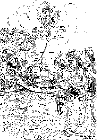
अर्जुनका श्रीकृष्णसे पुनः गीताका विषय पूछना
अर्जुनका श्रीकृष्णसे गीताका विषय पूछना और श्रीकृष्णका अर्जुनसे सिद्ध, महर्षि एवं काश्यपका संवाद सुनाना
जनमेजय उवाच
सभायां वसतोस्तत्र निहत्यारीन् महात्मनो:।
केशवार्जुनयो: का नु कथा समभवद् द्विज॥ १॥
जनमेजयने पूछा—ब्रह्मन्! शत्रुओंका नाश करके जब महात्मा श्रीकृष्ण और अर्जुन सभाभवनमें रहने लगे, उन दिनों उन दोनोंमें क्या-क्या बातचीत हुई?॥ १॥
वैशम्पायन उवाच
कृष्णेन सहित: पार्थ: स्वराज्यं प्राप्य केवलम्।
तस्यां सभायां दिव्यायां विजहार मुदा युत:॥ २॥
वैशम्पायनजीने कहा—राजन्! श्रीकृष्णके सहित अर्जुनने जब केवल अपने राज्यपर पूरा अधिकार प्राप्त कर लिया, तब वे उस दिव्य सभाभवनमें आनन्दपूर्वक रहने लगे॥ २॥
तत्र कञ्चित् सभोद्देशं स्वर्गोद्देशसमं नृप।
यदृच्छया तौ मुदितौ जग्मतु: स्वजनावृतौ॥ ३॥
नरेश्वर! एक दिन वहाँ स्वजनोंसे घिरे हुए वे दोनों मित्र स्वेच्छासे घूमते-घामते सभामण्डपके एक ऐसे भागमें पहुँचे, जो स्वर्गके समान सुन्दर था॥ ३॥
तत: प्रतीत: कृष्णेन सहित: पाण्डवोऽर्जुन:।
निरीक्ष्य तां सभां रम्यामिदं वचनमब्रवीत्॥ ४॥
पाण्डुनन्दन अर्जुन भगवान् श्रीकृष्णके साथ रहकर बहुत प्रसन्न थे। उन्होंने एक बार उस रमणीय सभाकी ओर दृष्टि डालकर भगवान् श्रीकृष्णसे कहा—॥ ४॥
विदितं मे महाबाहो सङ्ग्रामे समुपस्थिते।
माहात्म्यं देवकीमातस्तच्च ते रूपमैश्वरम्॥ ५॥
महाबाहो! देवकीनन्दन जब संग्रामका समय उपस्थित था, उस समय मुझे आपके माहात्म्यका ज्ञान और ईश्वरीय स्वरूपका दर्शन हुआ था॥ ५॥
यत् तद् भगवता प्रोक्तं पुरा केशव सौहृदात्।
तत् सर्वे पुरुषव्याघ्र नष्टं मे भ्रष्टचेतस:॥ ६॥
किंतु केशव! आपने सौहार्दवश पहले मुझे जो ज्ञानका उपदेश दिया था, मेरा वह सब ज्ञान इस समय विचलितचित्त हो जानेके कारण नष्ट हो गया (भूल गया) है॥ ६॥
मम कौतूहलं त्वस्ति तेष्वर्थेषु पुन: पुन:।
भवांस्तु द्वारकां गन्ता नचिरादिव माधव॥ ७॥
माधव! उन विषयोंको सुननेके लिये मेरे मनमें बारम्बार उत्कण्ठा होती है। इधर आप जल्दी ही द्वारका जानेवाले हैं; अत: पुन: वह सब विषय मुझे सुना दीजिये॥ ७॥
वैशम्पायन उवाच
एवमुक्तस्तु तं कृष्ण: फाल्गुनं प्रत्यभाषत।
परिष्वज्य महातेजा वचनं वदतां वर:॥ ८॥
वैशम्पायनजी कहते हैं—राजन्! अर्जुनके ऐसा कहनेपर वक्ताओंमें श्रेष्ठ महातेजस्वी भगवान् श्रीकृष्णने उन्हें गलेसे लगाकर इस प्रकार उत्तर दिया॥ ८॥
वासुदेव उवाच
श्रावितस्त्वं मया गुह्यं ज्ञापितश्च सनातनम्।
धर्मं स्वरूपिणं पार्थ सर्वलोकांश्च शाश्वतान्॥ ९॥
अबुद्धॺा नाग्रहीर्यस्त्वं तन्मे सुमहदप्रियम्।
न च साद्य पुनर्भूय: स्मृतिर्मे सम्भविष्यति॥ १०॥
श्रीकृष्ण बोले—अर्जुन! उस समय मैंने तुम्हें अत्यन्त गोपनीय ज्ञानका श्रवण कराया था, अपने स्वरूपभूत धर्म सनातन पुरुषोत्तमतत्त्वका परिचय दिया था और (शुक्ल-कृष्ण गतिका निरूपण करते हुए) सम्पूर्ण नित्य लोकोंका भी वर्णन किया था; किंतु तुमने जो अपनी नासमझीके कारण उस उपदेशको याद नहीं रखा, यह मुझे बहुत अप्रिय है। उन बातोंका अब पूरा-पूरा स्मरण होना सम्भव नहीं जान पड़ता॥ ९-१०॥
नूनमश्रद्दधानोऽसि दुर्मेधा ह्यसि पाण्डव।
न च शक्यं पुनर्वक्तुमशेषेण धनञ्जय॥ ११॥
पाण्डुनन्दन! निश्चय ही तुम बड़े श्रद्धाहीन हो, तुम्हारी बुद्धि बहुत मन्द जान पड़ती है। धनंजय! अब मैं उस उपदेशको ज्यों-का-त्यों नहीं कह सकता॥ ११॥
स हि धर्म: सुपर्याप्तो ब्रह्मण: पदवेदने।
न शक्यं तन्मया भूयस्तथा वक्तुमशेषत:॥ १२॥
क्योंकि वह धर्म ब्रह्मपदकी प्राप्ति करानेके लिये पर्याप्त था, वह सारा-का-सारा धर्म उसी रूपमें फिर दुहरा देना अब मेरे वशकी बात भी नहीं है॥ १२॥
परं हि ब्रह्म कथितं योगयुक्तेन तन्मया।
इतिहासं तु वक्ष्यामि तस्मिन्नर्थे पुरातनम्॥ १३॥
उस समय योगयुक्त होकर मैंने परमात्मतत्त्वका वर्णन किया था। अब उस विषयका ज्ञान करानेके लिये मैं एक प्राचीन इतिहासका वर्णन करता हूँ॥ १३॥
यथा तां बुद्धिमास्थाय गतिमग्रॺां गमिष्यसि।
शृणु धर्मभृतां श्रेष्ठ गदितं सर्वमेव मे॥ १४॥
जिससे तुम उस समत्वबुद्धिका आश्रय लेकर उत्तम गति प्राप्त कर लोगे। धर्मात्माओंमें श्रेष्ठ अर्जुन! अब तुम मेरी सारी बातें ध्यान देकर सुनो॥ १४॥
आगच्छद् ब्राह्मण: कश्चित् स्वर्गलोकादरिंदम।
ब्रह्मलोकाच्च दुर्धर्ष: सोऽस्माभि: पूजितोऽभवत्॥ १५॥
अस्माभि: परिपृष्टश्च यदाह भरतर्षभ।
दिव्येन विधिना पार्थ तच्छृणुष्वाविचारयन्॥ १६॥
शत्रुदमन! एक दिनकी बात है, एक दुर्धर्ष ब्राह्मण ब्रह्मलोकसे उतरकर स्वर्गलोकमें होते हुए मेरे यहाँ आये। मैंने उनकी विधिवत् पूजा की और मोक्षधर्मके विषयमें प्रश्न किया। भरतश्रेष्ठ! मेरे प्रश्नका उन्होंने सुन्दर विधिसे उत्तर दिया। पार्थ! वही मैं तुम्हें बतला रहा हूँ। कोई अन्यथा विचार न करके इसे ध्यान देकर सुनो॥ १५-१६॥
ब्राह्मण उवाच
मोक्षधर्मं समाश्रित्य कृष्ण यन्मामपृच्छथा:।
भूतानामनुकम्पार्थं यन्मोहच्छेदनं विभो॥ १७॥
तत् तेऽहं सम्प्रवक्ष्यामि यथावन्मधुसूदन।
शृणुष्वावहितो भूत्वा गदतो मम माधव॥ १८॥
ब्राह्मणने कहा—श्रीकृष्ण! मधुसूदन! तुमने सब प्राणियोंपर कृपा करके उनके मोहका नाश करनेके लिये जो यह मोक्ष-धर्मसे सम्बन्ध रखनेवाला प्रश्न किया है, उसका मैं यथावत् उत्तर दे रहा हूँ। प्रभो! माधव! सावधान होकर मेरी बात श्रवण करो॥ १७-१८॥
कश्चिद् विप्रस्तपोयुक्त: काश्यपो धर्मवित्तम:।
आससाद द्विजं कञ्चिद् धर्माणामागतागमम्॥ १९॥
गतागते सुबहुशो ज्ञानविज्ञानपारगम्।
लोकतत्त्वार्थकुशलं ज्ञातार्थं सुखदु:खयो:॥ २०॥
जातीमरणतत्त्वज्ञं कोविदं पापपुण्ययो:।
द्रष्टारमुच्चनीचानां कर्मभिर्देहिनां गतिम्॥ २१॥
प्राचीन समयमें काश्यप नामके एक धर्मज्ञ और तपस्वी ब्राह्मण किसी सिद्ध महर्षिके पास गये; जो धर्मके विषयमें शास्त्रके सम्पूर्ण रहस्योंको जाननेवाले, भूत और भविष्यके ज्ञान-विज्ञानमें प्रवीण, लोक-तत्त्वके ज्ञानमें कुशल, सुख-दु:खके रहस्यको समझनेवाले, जन्म-मृत्युके तत्त्वज्ञ, पाप-पुण्यके ज्ञाता और ऊँच-नीच प्राणियोंको कर्मानुसार प्राप्त होनेवाली गतिके प्रत्यक्ष द्रष्टा थे॥ १९—२१॥
चरन्तं मुक्तवत्सिद्धं प्रशान्तं संयतेन्द्रियम्।
दीप्यमानं श्रिया ब्राह्मॺा क्रममाणं च सर्वश:॥ २२॥
अन्तर्धानगतिज्ञं च श्रुत्वा तत्त्वेन काश्यप:।
तथैवान्तर्हितै: सिद्धैर्यान्तं चक्रधरै: सह॥ २३॥
सम्भाषमाणमेकान्ते समासीनं च तै: सह।
यदृच्छया च गच्छन्तमसक्तं पवनं यथा॥ २४॥
वे मुक्तकी भाँति विचरनेवाले, सिद्ध, शान्तचित्त, जितेन्द्रिय, ब्रह्मतेजसे देदीप्यमान, सर्वत्र घूमनेवाले और अन्तर्धान विद्याके ज्ञाता थे। अदृश्य रहनेवाले चक्रधारी सिद्धोंके साथ वे विचरते, बातचीत करते और उन्हींके साथ एकान्तमें बैठते थे। जैसे वायु कहीं आसक्त न होकर सर्वत्र प्रवाहित होती है, उसी तरह वे सर्वत्र अनासक्त भावसे स्वच्छन्दतापूर्वक विचरा करते थे। महर्षि काश्यप उनकी उपर्युक्त महिमा सुनकर ही उनके पास गये थे॥ २२—२४॥
तं समासाद्य मेधावी स तदा द्विजसत्तम:।
चरणौ धर्मकामोऽस्य तपस्वी सुसमाहित:।
प्रतिपेदे यथान्यायं दृष्ट्वा तन्महदद्भुतम्॥ २५॥
विस्मितश्चाद्भुतं दृष्ट्वाकाश्यपस्तद्द्विजोत्तमम्।
परिचारेण महता गुरुं तं पर्यतोषयत्॥ २६॥
उपपन्नं च तत्सर्वे श्रुतचारित्रसंयुतम्।
भावेनातोषयच्चैनं गुरुवृत्त्या परन्तप:॥ २७॥
निकट जाकर उन मेधावी, तपस्वी, धर्माभिलाषी और एकाग्रचित्त महर्षिने न्यायानुसार उन सिद्ध महात्माके चरणोंमें प्रणाम किया। वे ब्राह्मणोंमें श्रेष्ठ और बड़े अद्भुत सन्त थे। उनमें सब प्रकारकी योग्यता थी। वे शास्त्रके ज्ञाता और सच्चरित्र थे। उनका दर्शन करके काश्यपको बड़ा विस्मय हुआ। वे उन्हें गुरु मानकर उनकी सेवामें लग गये और अपनी शुश्रूषा, गुरुभक्ति तथा श्रद्धाभावके द्वारा उन्होंने उन सिद्ध महात्माको सन्तुष्ट कर लिया॥ २५—२७॥
तस्मै तुष्ट: स शिष्याय प्रसन्नो वाक्यमब्रवीत्।
सिद्धिं परामभिप्रेक्ष्य शृणु मत्तो जनार्दन॥ २८॥
जनार्दन! अपने शिष्य काश्यपके ऊपर प्रसन्न होकर उन सिद्ध महर्षिने परासिद्धिके सम्बन्धमें विचार करके जो उपदेश किया, उसे बताता हूँ, सुनो॥ २८॥
सिद्ध उवाच
विविधै: कर्मभिस्तात पुण्ययोगैश्च केवलै:।
गच्छन्तीह गतिं मर्त्या देवलोके च संस्थितिम्॥ २९॥
सिद्धने कहा—तात काश्यप! मनुष्य नाना प्रकारके शुभ कर्मोंका अनुष्ठान करके केवल पुण्यके संयोगसे इस लोकमें उत्तम फल और देवलोकमें स्थान प्राप्त करते हैं॥ २९॥
न क्वचित् सुखमत्यन्तं न क्वचिच्छाश्वती स्थिति:।
स्थानाच्च महतो भ्रंशो दु:खलब्धात् पुन: पुन:॥ ३०॥
जीवको कहीं भी अत्यन्त सुख नहीं मिलता। किसी भी लोकमें वह सदा नहीं रहने पाता। तपस्या आदिके द्वारा कितने ही कष्ट सहकर बड़े-से-बड़े स्थानको क्यों न प्राप्त किया जाय, वहाँसे भी बार-बार नीचे आना ही पड़ता है॥ ३०॥
अशुभा गतय: प्राप्ता: कष्टा मे पापसेवनात्।
काममन्युपरीतेन तृष्णया मोहितेन च॥ ३१॥
मैंने काम-क्रोधसे युक्त और तृष्णासे मोहित होकर अनेकों बार पाप किये हैं और उनके सेवनके फलस्वरूप घोर कष्ट देनेवाली अशुभ गतियोंको भोगा है॥ ३१॥
पुन: पुनश्च मरणं जन्म चैव पुन: पुन:।
आहारा विविधा भुक्ता: पीता नानाविधा: स्तना:॥ ३२॥
बार-बार जन्म और बार-बार मृत्युका क्लेश उठाया है। तरह-तरहके आहार ग्रहण किये और अनेक स्तनोंका दूध पीया है॥ ३२॥
मातरो विविधा दृष्टा: पितरश्च पृथग्विधा:।
सुखानि च विचित्राणि दु:खानि च मयानघ॥ ३३॥
अनघ! बहुत-से पिता और भाँति-भाँतिकी माताएँ देखी हैं। विचित्र-विचित्र सुख-दु:खोंका अनुभव किया है॥ ३३॥
प्रियैर्विवासो बहुश: संवासश्चाप्रियैै: सह।
धननाशश्च सम्प्राप्तो लब्ध्वा दु:खेन तद् धनम्॥ ३४॥
कितनी ही बार मुझसे प्रियजनोंका वियोग और अप्रियजनोंका संयोग हुआ है। जिस धनको मैंने बहुत कष्ट सहकर कमाया था, वह मेरे देखते-देखते नष्ट हो गया॥ ३४॥
अवमाना: सुकष्टाश्च राजत: स्वजनात् तथा।
शारीरा मानसा वापि वेदना भृशदारुणा:॥ ३५॥
राजा और स्वजनोंकी ओरसे मुझे कई बार बड़े-बड़े कष्ट और अपमान उठाने पड़े हैं। तन और मनकी अत्यन्त भयंकर वेदनाएँ सहनी पड़ी हैं॥ ३५॥
प्राप्ता विमाननाश्चोग्रा वधबन्धाश्च दारुणा:।
पतनं निरये चैव यातनाश्च यमक्षये॥ ३६॥
मैंने अनेक बार घोर अपमान, प्राणदण्ड और कड़ी कैदकी सजाएँ भोगी हैं। मुझे नरकमें गिरना और यमलोकमें मिलनेवाली यातनाओंको सहना पड़ा है॥ ३६॥
जरा रोगाश्च सततं व्यसनानि च भूरिश:।
लोकेऽस्मिन्ननुभूतानि द्वन्द्वजानि भृशं मया॥ ३७॥
इस लोकमें जन्म लेकर मैंने बारम्बार बुढ़ापा, रोग, व्यसन और राग-द्वेषादि द्वन्द्वोंके प्रचुर दु:ख सदा ही भोगे हैं॥ ३७॥
तत: कदाचिन्निर्वेदान्निराकाराश्रितेन च।
लोकतन्त्रं परित्यक्तं दु:खार्तेन भृशं मया॥ ३८॥
इस प्रकार बारम्बार क्लेश उठानेसे एक दिन मेरे मनमें बड़ा खेद हुआ और मैंने दु:खोंसे घबराकर निराकार परमात्माकी शरण ली तथा समस्त लोकव्यवहारका परित्याग कर दिया॥ ३८॥
लोकेऽस्मिन्ननुभूयाहमिमं मार्गमनुष्ठित:।
तत: सिद्धिरियं प्राप्ता प्रसादादात्मनो मया॥ ३९॥
इस लोकमें अनुभवके पश्चात् मैंने इस मार्गका अवलम्बन किया है और अब परमात्माकी कृपासे मुझे यह उत्तम सिद्धि प्राप्त हुई है॥ ३९॥
नाहं पुनरिहागन्ता लोकानालोकयाम्यहम्।
आसिद्धेराप्रजासर्गादात्मनोऽपि गता: शुभा:॥ ४०॥
अब मैं पुन: इस संसारमें नहीं आऊँगा। जबतक यह सृष्टि कायम रहेगी और जबतक मेरी मुक्ति नहीं हो जायगी, तबतक मैं अपनी और दूसरे प्राणियोंकी शुभगतिका अवलोकन करूँगा॥ ४०॥
उपलब्धा द्विजश्रेष्ठ तथेयं सिद्धिरुत्तमा।
इत: परं गमिष्यामि तत: परतरं पुन:॥ ४१॥
ब्रह्मण: पदमव्यक्तं मा तेऽभूदत्र संशय:।
नाहं पुनरिहागन्ता मर्त्यलोकं परन्तप॥ ४२॥
द्विजश्रेष्ठ! इस प्रकार मुझे यह उत्तम सिद्धि मिली है। इसके बाद मैं उत्तम लोकमें जाऊँगा। फिर उससे भी परम उत्कृष्ट सत्यलोकमें जा पहुँचूँगा और क्रमश: अव्यक्त ब्रह्मपद (मोक्ष)-को प्राप्त कर लूँगा। इसमें तुम्हें संशय नहीं करना चाहिये। काम-क्रोध आदि शत्रुओंको सन्ताप देनेवाले काश्यप! अब मैं पुन: इस मर्त्यलोकमें नहीं आऊँगा॥ ४१-४२॥
प्रीतोऽस्मि ते महाप्राज्ञ ब्रूूहि किं करवाणि ते।
यदीप्सुरुपपन्नस्त्वं तस्य कालोऽयमागत:॥ ४३॥
महाप्राज्ञ! मैं तुम्हारे ऊपर बहुत प्रसन्न हूँ। बोलो, तुम्हारा कौन-सा प्रिय कार्य करूँ? तुम जिस वस्तुको पानेकी इच्छासे मेरे पास आये हो, उसके प्राप्त होनेका यह समय आ गया है॥ ४३॥
अभिजाने च तदहं यदर्थं मामुपागत:।
अचिरात् तु गमिष्यामि तेनाहं त्वामचूचुदम्॥ ४४॥
तुम्हारे आनेका उद्देश्य क्या है, इसे मैं जानता हूँ और शीघ्र ही यहाँसे चला जाऊँगा। इसीलिये मैंने स्वयं तुम्हें प्रश्न करनेके लिये प्रेरित किया है॥ ४४॥
भृशं प्रीतोऽस्मि भवतश्चारित्रेण विचक्षण।
परिपृच्छस्व कुशलं भाषेयं यत् तवेप्सितम्॥ ४५॥
विद्वन्! तुम्हारे उत्तम आचरणसे मुझे बड़ा सन्तोष है। तुम अपने कल्याणकी बात पूछो। मैं तुम्हारे अभीष्ट प्रश्नका उत्तर दूँगा॥ ४५॥
बहु मन्ये च ते बुद्धिं भृशं सम्पूजयामि च।
येनाहं भवता बुद्धो मेधावी ह्यसि काश्यप॥ ४६॥
काश्यप! मैं तुम्हारी बुद्धिकी सराहना करता हूँ और उसे बहुत आदर देता हूँ। तुमने मुझे पहचान लिया है, इसीसे कहता हूँ कि बड़े बुद्धिमान् हो॥ ४६॥
॥ इति श्रीमहाभारते आश्वमेधिके पर्वणि उत्तरगीतायां प्रथमोऽध्याय:॥ १॥
दूसरा अध्याय
काश्यपके प्रश्नोंके उत्तरमें सिद्ध महात्माद्वारा जीवकी विविध गतियोंका वर्णन
वासुदेव उवाच
ततस्तस्योपसङ्गृह्य पादौ प्रश्नान् सुदुर्वचान्।
पप्रच्छ तांश्च धर्मान् स प्राह धर्मभृतां वर:॥ १॥
भगवान् श्रीकृष्णने कहा—तदनन्तर धर्मात्माओंमें श्रेष्ठ काश्यपने उन सिद्ध महात्माके दोनों पैर पकड़कर जिनका उत्तर कठिनाईसे दिया जा सके, ऐसे बहुत-से धर्मयुक्त प्रश्न पूछे॥ १॥
काश्यप उवाच
कथं शरीरं च्यवते कथं चैवोपपद्यते।
कथं कष्टाच्च संसारात् संसरन् परिमुच्यते॥ २॥
काश्यपने पूछा—महात्मन्! यह शरीर किस प्रकार गिर जाता है? फिर दूसरा शरीर कैसे प्राप्त होता है? संसारी जीव किस तरह इस दु:खमय संसारसे मुक्त होता है?॥ २॥
आत्मा च प्रकृतिं मुक्त्वा तच्छरीरं विमुञ्चति।
शरीरतश्च निर्मुक्त: कथमन्यत् प्रपद्यते॥ ३॥
जीवात्मा प्रकृति (मूल विद्या) और उससे उत्पन्न होनेवाले शरीरका कैसे त्याग करता है? और शरीरसे छूटकर दूसरेमें वह किस प्रकार प्रवेश करता है?॥ ३॥
कथं शुभाशुभे चायं कर्मणी स्वकृते नर:।
उपभुङ्क्ते क्व वा कर्म विदेहस्यावतिष्ठते॥ ४॥
मनुष्य अपने किये हुए शुभाशुभ कर्मोंका फल कैसे भोगता है और शरीर न रहनेपर उसके कर्म कहाँ रहते हैं?॥ ४॥
ब्राह्मण उवाच
एवं सञ्चोदित: सिद्ध: प्रश्नांस्तान् प्रत्यभाषत।
आनुपूर्व्येण वार्ष्णेय तन्मे निगदत: शृणु॥ ५॥
ब्राह्मण कहते हैं—वृष्णिनन्दन श्रीकृष्ण! काश्यपके इस प्रकार पूछनेपर सिद्ध महात्माने उनके प्रश्नोंका क्रमश: उत्तर देना आरम्भ किया। वह मैं बता रहा हूँ, सुनिये॥ ५॥
सिद्ध उवाच
आयु:कीर्तिकराणीह यानि कृत्यानि सेवते।
शरीरग्रहणे यस्मिंस्तेषु क्षीणेषु सर्वश:॥ ६॥
आयु:क्षयपरीतात्मा विपरीतानि सेवते।
बुद्धिर्व्यावर्तते चास्य विनाशे प्रत्युपस्थिते॥ ७॥
सिद्धने कहा—काश्यप! मनुष्य इस लोकमें आयु और कीर्तिको बढ़ानेवाले जिन कर्मोंका सेवन करता है, वे शरीर-प्राप्तिमें कारण होते हैं। शरीर-ग्रहणके अनन्तर जब वे सभी कर्म अपना फल देकर क्षीण हो जाते हैं, उस समय जीवकी आयुका भी क्षय हो जाता है। उस अवस्थामें वह विपरीत कर्मोंका सेवन करने लगता है और विनाशकाल निकट आनेपर उसकी बुद्धि उलटी हो जाती है॥ ६-७॥
सत्त्वं बलं च कालं च विदित्वा चात्मनस्तथा।
अतिवेलमुपाश्नाति स्वविरुद्धान्यनात्मवान्॥ ८॥
वह अपने सत्त्व (धैर्य), बल और अनुकूल समयको जानकर भी मनपर अधिकार न होनेके कारण असमयमें तथा अपनी प्रकृतिके विरुद्ध भोजन करता है॥ ८॥
यदायमतिकष्टानि सर्वाण्युपनिषेवते।
अत्यर्थमपि वा भुङ्क्ते न वा भुङ्क्ते कदाचन॥ ९॥
अत्यन्त हानि पहुँचानेवाली जितनी वस्तुएँ हैं, उन सबका वह सेवन करता है। कभी तो बहुत-अधिक खा लेता है, कभी बिल्कुल ही भोजन नहीं करता है॥ ९॥
दुष्टान्नामिषपानं च यदन्योन्यविरोधि च।
गुरु चाप्यमितं भुङ्क्ते नातिजीर्णेऽपि वा पुन:॥ १०॥
कभी दूषित खाद्य अन्न-पानको भी ग्रहण कर लेता है, कभी एक-दूसरेसे विरुद्ध गुणवाले पदार्थोंको एक साथ खा लेता है। किसी दिन गरिष्ठ अन्न और वह भी बहुत-अधिक मात्रामें खा जाता है। कभी-कभी एक बारका खाया हुआ अन्न पचने भी नहीं पाता कि दुबारा भोजन कर लेता है॥ १०॥
व्यायाममतिमात्रं च व्यवायं चोपसेवते।
सततं कर्मलाभाद् वा प्राप्तं वेगं विधारयेत्॥ ११॥
अधिक मात्रामें व्यायाम और स्त्री-सम्भोग करता है। सदा काम करनेके लोभसे मल-मूत्रके वेगको रोके रहता है॥ ११॥
रसाभियुक्तमन्नं वा दिवा स्वप्नं च सेवते।
अपक्वानागते काले स्वयं दोषान् प्रकोपयेत्॥ १२॥
रसीला अन्न खाता और दिनमें सोता है तथा कभी-कभी खाये हुए अन्नके पचनेके पहले असमयमें भोजन करके स्वयं ही अपने शरीरमें स्थित वात-पित्त आदि दोषोंको कुपित कर देता है॥ १२॥
स्वदोषकोपनाद् रोगं लभते मरणान्तिकम्।
अपि वोद्बन्धनादीनि परीतानि व्यवस्यति॥ १३॥
उन दोषोंके कुपित होनेसे वह अपने लिये प्राणनाशक रोगोंको बुला लेता है अथवा फाँसी लगाने या जलमें डूबने आदि शास्त्रविरुद्ध उपायोंका आश्रय लेता है॥ १३॥
तस्य तै: कारणैर्जन्तो: शरीरं च्यवते तदा।
जीवितं प्रोच्यमानं तद् यथावदुपधारय॥ १४॥
इन्हीं सब कारणोंसे जीवका शरीर नष्ट हो जाता है। इस प्रकार जो जीवका जीवन बताया जाता है, उसे अच्छी तरह समझ लो॥ १४॥
ऊष्मा प्रकुपित: काये तीव्रवायुसमीरित:।
शरीरमनुपर्येत्य सर्वान् प्राणान् रुणद्धि वै॥ १५॥
शरीरमें तीव्र वायुसे प्रेरित हो पित्तका प्रकोप बढ़ जाता है और वह शरीरमें फैलकर समस्त प्राणोंकी गतिको रोक देता है॥ १५॥
अत्यर्थं बलवानूूष्मा शरीरे परिकोपित:।
भिनत्ति जीवस्थानानि मर्माणि विद्धि तत्त्वत:॥ १६॥
इस शरीरमें कुपित होकर अत्यन्त प्रबल हुआ पित्त जीवके मर्मस्थानोंको विदीर्ण कर देता है। इस बातको ठीक समझो॥ १६॥
तत: सवेदन: सद्यो जीव: प्रच्यवते क्षरात्।
शरीरं त्यजते जन्तुश्छिद्यमानेषु मर्मसु॥ १७॥
जब मर्मस्थान छिन्न-भिन्न होने लगते हैं, तब वेदनासे व्यथित हुआ जीव तत्काल इस जड शरीरसे निकल जाता है। उस शरीरको सदाके लिये त्याग देता है॥ १७॥
वेदनाभि: परीतात्मा तद् विद्धि द्विजसत्तम।
जातीमरणसंविग्ना: सततं सर्वजन्तव:॥ १८॥
द्विजश्रेष्ठ! मृत्युकालमें जीवका तन-मन वेदनासे व्यथित होता है, इस बातको भलीभाँति जान लो। इस तरह संसारके सभी प्राणी सदा जन्म और मरणसे उद्विग्न रहते हैं॥ १८॥
दृश्यन्ते सन्त्यजन्तश्च शरीराणि द्विजर्षभ।
गर्भसङ्क्रमणे चापि मर्मणामतिसर्पणे॥ १९॥
तादृशीमेव लभते वेदनां मानव: पुन:।
भिन्नसन्धिरथ क्लेदमद्भि: स लभते नर:॥ २०॥
विप्रवर! सभी जीव अपने शरीरका त्याग करते देखे जाते हैं। गर्भमें मनुष्य प्रवेश करते समय तथा गर्भसे नीचे गिरते समय भी वैसी ही वेदनाका अनुभव करता है। मृत्युकालमें जीवोंके शरीरकी सन्धियाँ टूटने लगती हैं और जन्मके समय वह गर्भस्थ जलसे भींगकर अत्यन्त व्याकुल हो उठता है॥ १९-२०॥
यथा पञ्चसु भूतेषु सम्भूतत्वं नियच्छति।
शैत्यात् प्रकुपित: काये तीव्रवायुसमीरित:॥ २१॥
य: स पञ्चसु भूतेषु प्राणापाने व्यवस्थित:।
स गच्छत्यूर्ध्वगो वायु: कृच्छ्रान्मुक्त्वा शरीरिण:॥ २२॥
अन्य प्रकारकी तीव्र वायुसे प्रेरित हो शरीरमें सर्दीसे कुपित हुई जो वायु पाँचों भूतोंमें प्राण और अपानके स्थानमें स्थित है, वही पंचभूतोंके संघातका नाश करती है तथा वह देहधारियोंको बड़े कष्टसे त्यागकर ऊर्ध्वलोकको चली जाती है॥ २१-२२॥
शरीरं च जहात्येवं निरुच्छ्वासश्च दृश्यते।
स निरूष्मा निरुच्छ्वासो नि:श्रीको हतचेतन:॥ २३॥
ब्रह्मणा सम्परित्यक्तो मृत इत्युच्यते नरै:।
इस प्रकार जब जीव शरीरका त्याग करता है, तब प्राणियोंका शरीर उच्छ्वासहीन दिखायी देता है। उसमें गर्मी, उच्छ्वास, शोभा और चेतना कुछ भी नहीं रह जाती। इस तरह जीवात्मासे परित्यक्त उस शरीरको लोग मृत (मरा हुआ) कहते हैं॥ २३ १/२॥
स्रोतोभिर्यैर्विजानाति इन्द्रियार्थाञ्शरीरभॄत्॥ २४॥
तैरेव न विजानाति प्राणानाहारसम्भवान्।
तत्रैव कुरुते काये य: स जीव: सनातन:॥ २५॥
देहधारी जीव जिन इन्द्रियोंके द्वारा रूप, रस आदि विषयोंका अनुभव करता है, उनके द्वारा वह भोजनसे परिपुष्ट होनेवाले प्राणोंको नहीं जान पाता। इस शरीरके भीतर रहकर जो कार्य करता है, वह सनातन जीव है॥ २४-२५॥
तथा यद्यद्भवेद्युक्तं सन्निपाते क्वचित् क्वचित्।
तत्तन्मर्म विजानीहि शास्त्रदृष्टं हि तत् तथा॥ २६॥
कहीं-कहीं सन्धिस्थानोंमें जो-जो अंग संयुक्त होता है, उस-उसको तुम मर्म समझो; क्योंकि शास्त्रमें मर्मस्थानका ऐसा ही लक्षण देखा गया है॥ २६॥
तेषु मर्मसु भिन्नेषु तत: स समुदीरयन्।
आविश्य हृदयं जन्तो: सत्त्वं चाशु रुणद्धि वै॥ २७॥
उन मर्मस्थानों (सन्धियों)-के विलग होनेपर वायु ऊपरको उठती हुई प्राणीके हृदयमें प्रविष्ट हो शीघ्र ही उसकी बुद्धिको अवरुद्ध कर लेती है॥ २७॥
तत: सचेतनो जन्तुर्नाभिजानाति किञ्चन।
तमसा संवृतज्ञान: संवृतेष्वेव मर्मसु।
स जीवो निरधिष्ठानश्चाल्यते मातरिश्वना॥ २८॥
तब अन्तकाल उपस्थित होनेपर प्राणी सचेतन होनेपर भी कुछ समझ नहीं पाता; क्योंकि तम (अविद्या)-के द्वारा उसकी ज्ञानशक्ति आवृत हो जाती है। मर्मस्थान भी अवरुद्ध हो जाते हैं। उस समय जीवके लिये कोई आधार नहीं रह जाता और वायु उसे अपने स्थानसे विचलित कर देती है॥ २८॥
तत: सतं महोच्छ्वासं भृशमुच्छ्वस्य दारुणम्।
निष्क्रामन् कम्पयत्याशु तच्छरीरमचेतनम्॥ २९॥
तब वह जीवात्मा बारम्बार भयंकर एवं लम्बी साँस छोड़कर बाहर निकलने लगता है। उस समय सहसा इस जड शरीरको कम्पित कर देता है॥ २९॥
स जीव: प्रच्युत: कायात् कर्मभि: स्वै: समावृत:।
अभित: स्वै: शुभै: पुण्यै: पापैर्वाप्युपपद्यते॥ ३०॥
शरीरसे अलग होनेपर वह जीव अपने किये हुए शुभ कार्य पुण्य अथवा अशुभ कार्य पापकर्मोंद्वारा सब ओरसे घिरा रहता है॥ ३०॥
ब्राह्मणा ज्ञानसम्पन्ना यथावच्छ्रुतनिश्चया:।
इतरं कृतपुण्यं वा तं विजानन्ति लक्षणै:॥ ३१॥
जिन्होंने वेदशास्त्रोंके सिद्धान्तोंका यथावत् अध्ययन किया है, वे ज्ञानसम्पन्न ब्राह्मण लक्षणोंके द्वारा यह जान लेते हैं कि अमुक जीव पुण्यात्मा रहा है और अमुक जीव पापी॥ ३१॥
यथान्धकारे खद्योतं लीयमानं ततस्तत:।
चक्षुष्मन्त: प्रपश्यन्ति तथा च ज्ञानचक्षुष:॥ ३२॥
पश्यन्त्येवंविधं सिद्धा जीवं दिव्येन चक्षुषा।
च्यवन्तं जायमानं च योनिं चानुप्रवेशितम्॥ ३३॥
जिस तरह आँखवाले मनुष्य अँधेरेमें इधर-उधर उगते-बुझते हुए खद्योतको देखते हैं, उसी प्रकार ज्ञान-नेत्रवाले सिद्ध पुरुष अपनी दिव्य दृष्टिसे जन्मते, मरते तथा गर्भमें प्रवेश करते हुए जीवको सदा देखते रहते हैं॥ ३२-३३॥
तस्य स्थानानि दृष्टानि त्रिविधानीह शास्त्रत:।
कर्मभूमिरियं भूमिर्यत्र तिष्ठन्ति जन्तव:॥ ३४॥
शास्त्रके अनुसार जीवके तीन प्रकारके स्थान देखे गये हैं। (मृत्युलोक, स्वर्गलोक और नरक)। यह मर्त्यलोककी भूमि जहाँ बहुत-से प्राणी रहते हैं, कर्मभूमि कहलाती है॥ ३४॥
तत: शुभाशुभं कृत्वा लभन्ते सर्वदेहिन:।
इहैवोच्चावचान् भोगान् प्राप्नुवन्ति स्वकर्मभि:॥ ३५॥
अत: यहाँ शुभ और अशुभ कर्म करके सब मनुष्य उसके फलस्वरूप अपने कर्मोंके अनुसार अच्छे-बुरे भोग प्राप्त करते हैं॥ ३५॥
इहैवाशुभकर्माण: कर्मभिर्निरयं गता:।
अवाग्गतिरियं कष्टा यत्र पच्यन्ति मानवा:।
तस्मात् सुदुर्लभो मोक्षो रक्ष्यश्चात्मा ततो भृशम्॥ ३६॥
यहीं पाप करनेवाले मानव अपने कर्मोंके अनुसार नरकमें पड़ते हैं। यह जीवकी अधोगति है, जो घोर कष्ट देनेवाली है। इसमें पड़कर पापी मनुष्य नरकाग्निमें पकाये जाते हैं। उससे छुटकारा मिलना बहुत कठिन है। अत: (पापकर्मसे दूर रहकर) अपनेको नरकसे बचाये रखनेका विशेष प्रयत्न करना चाहिये॥ ३६॥
ऊर्ध्वं तु जन्तवो गत्वा येषु स्थानेष्ववस्थिता:।
कीर्त्यमानानि तानीह तत्त्वत: सन्निबोध मे॥ ३७॥
स्वर्ग आदिके ऊर्ध्वलोकोंको जाकर प्राणी जिन स्थानोंमें निवास करते हैं, उनका यहाँ वर्णन किया जाता है, इस विषयको यथार्थरूपसे मुझसे सुनो॥ ३७॥
तच्छ्रुत्वा नैष्ठिकीं बुद्धिं बुद्धॺेथा: कर्मनिश्चयम्।
तारारूपाणि सर्वाणि यत्रैतच्चन्द्रमण्डलम्॥ ३८॥
यत्र विभ्राजते लोके स्वभासा सूर्यमण्डलम्।
स्थानान्येतानि जानीहि जनानां पुण्यकर्मणाम्॥ ३९॥
इसको सुननेसे तुम्हें कर्मोंकी गतिका निश्चय हो जायगा और नैष्ठिकी बुद्धि प्राप्त होगी। जहाँ ये समस्त तारे हैं, जहाँ वह चन्द्रमण्डल प्रकाशित होता है और जहाँ सूर्यमण्डल जगत्में अपनी प्रभासे उद्भासित हो रहा है, ये सब-के-सब पुण्यकर्मा पुरुषोंके स्थान हैं, ऐसा जानो [पुण्यात्मा मनुष्य उन्हीं लोकोंमें जाकर अपने पुण्योंका फल भोगते हैं]॥ ३८-३९॥
कर्मक्षयाच्च ते सर्वे च्यवन्ते वै पुन: पुन:।
तत्रापि च विशेषोऽस्ति दिवि नीचोच्चमध्यम:॥ ४०॥
जब जीवोंके पुण्यकर्मोंका भोग समाप्त हो जाता है, तब वे वहाँसे नीचे गिरते हैं। इस प्रकार बारम्बार उनका आवागमन होता रहता है। स्वर्गमें भी उत्तम, मध्यम और अधमका भेद रहता है॥ ४०॥
न च तत्रापि सन्तोषो दृष्ट्वा दीप्ततरां श्रियम्।
इत्येता गतय: सर्वा: पृथक्ते समुदीरिता:॥ ४१॥
वहाँ भी दूसरोंका अपनेसे बहुत अधिक दीप्तिमान् तेज एवं ऐश्वर्य देखकर मनमें सन्तोष नहीं होता हैै। इस प्रकार जीवकी इन सभी गतियोंका मैंने तुम्हारे समक्ष पृथक्-पृथक् वर्णन किया है॥ ४१॥
उपपत्तिं तु वक्ष्यामि गर्भस्याहमत: परम्।
तथा तन्मे निगदत: शृणुष्वावहितो द्विज॥ ४२॥
अब मैं यह बतलाऊँगा कि जीव किस प्रकार गर्भमें आकर जन्म धारण करता है। ब्रह्मन्! तुम एकाग्रचित्त होकर मेरे मुखसे इस विषयका वर्णन सुनो॥ ४२॥
॥ इति श्रीमहाभारते आश्वमेधिके पर्वणि उत्तरगीतायां द्वितीयोऽध्याय:॥ २॥
तीसरा अध्याय
जीवके गर्भ-प्रवेश,आचार-धर्म, कर्म-फलकी अनिवार्यता तथा संसारसे तरनेके उपायका वर्णन
ब्राह्मण उवाच
शुभानामशुभानां च नेह नाशोऽस्ति कर्मणाम्।
प्राप्य प्राप्यानुपच्यन्ते क्षेत्रं क्षेत्रं तथा तथा॥ १॥
सिद्ध ब्राह्मण बोले—काश्यप! इस लोकमें किये हुए शुभ और अशुभ कर्मोंका फल भोगे बिना नाश नहीं होता। वे कर्म वैसा-वैसा कर्मानुसार एकके बाद एक शरीर धारण कराकर अपना फल देते रहते हैं॥ १॥
यथा प्रसूयमानस्तु फली दद्यात् फलं बहु।
तथा स्याद् विपुलं पुण्यं शुद्धेन मनसा कृतम्॥ २॥
जैसे फल देनेवाला वृक्ष फलनेका समय आनेपर बहुत-से फल प्रदान करता है, उसी प्रकार शुद्ध हृदयसे किये हुए पुण्यका फल अधिक होता है॥ २॥
पापं चापि तथैव स्यात् पापेन मनसा कृतम्।
पुरोधाय मनो हीदं कर्मण्यात्मा प्रवर्तते॥ ३॥
इसी तरह कलुषित चित्तसे किये हुए पापके फलमें भी वृद्धि होती है; क्योंकि जीवात्मा मनको आगे करके ही प्रत्येक कार्यमें प्रवृत्त होता है॥ ३॥
यथा कर्मसमाविष्ट: काममन्युसमावृत:।
नरो गर्भं प्रविशति तच्चापि शृणु चोत्तरम्॥ ४॥
काम-क्रोधसे घिरा हुआ मनुष्य जिस प्रकार कर्मजालमें आबद्ध होकर गर्भमें प्रवेश करता है, उसका भी उत्तर सुनो॥ ४॥
शुक्रं शोणितसंसृष्टं स्त्रिया गर्भाशयं गतम्।
क्षेत्रं कर्मजमाप्नोति शुभं वा यदि वाशुभम्॥ ५॥
जीव पहले पुरुषके वीर्यमें प्रविष्ट होता है, फिर स्त्रीके गर्भाशयमें जाकर उसके रजमें मिल जाता है। तत्पश्चात् उसे कर्मानुसार शुभ या अशुभ शरीरकी प्राप्ति होती है॥ ५॥
सौक्ष्म्यादव्यक्तभावाच्च न च क्वचन सज्जति।
सम्प्राप्य ब्राह्मण: कामं तस्मात् तद् ब्रह्म शाश्वतम्॥ ६॥
जीव अपनी इच्छाके अनुसार उस शरीरमें प्रवेश करके सूक्ष्म और अव्यक्त होनेके कारण कहीं आसक्त नहीं होता है; क्योंकि वास्तवमें वह सनातन परब्रह्मस्वरूप है॥ ६॥
तद् बीजं सर्वभूतानां तेन जीवन्ति जन्तव:।
स जीव: सर्वगात्राणि गर्भस्याविश्य भागश:॥ ७॥
दधाति चेतसा सद्य: प्राणस्थानेष्ववस्थित:।
तत: स्पन्दयतेऽङ्गानि च गर्भश्चेतनान्वित:॥ ८॥
वह जीवात्मा सम्पूर्ण भूतोंकी स्थितिका हेतु है, क्योंकि उसीके द्वारा सब प्राणी जीवित रहते हैं। वह जीव गर्भके समस्त अंगमें प्रविष्ट हो उसके प्रत्येक अंशमें तत्काल चेतनता ला देता है और वही प्राणोंके स्थान—वक्ष:स्थलमें स्थित हो समस्त अंगोंका संचालन करता है। तभी वह गर्भ चेतनासे सम्पन्न होता है॥ ७-८॥
यथा लोहस्य नि:स्यन्दो निषिक्तो बिम्बविग्रहम्।
उपैति तद् विजानीहि गर्भे जीवप्रवेशनम्॥ ९॥
जैसे तपाये हुए लोहेका द्रव्य जिस प्रकारके साँचेमें ढाला जाता है, उसीका रूप धारण कर लेता है, उसी प्रकार गर्भमेंजीवका प्रवेश होता है, ऐसा समझो। (अर्थात् जीव जिस प्रकारकी योनिमें प्रविष्ट होता है, उसी रूपमें उसका शरीर बन जाता है)॥ ९॥
लोहपिण्डं यथा वह्नि: प्रविश्य ह्यतितापयेत्।
तथा त्वमपि जानीहि गर्भे जीवोपपादनम्॥ १०॥
जैसे आग लोहपिण्डमें प्रविष्ट होकर उसे बहुत तपा देती है, उसी प्रकार गर्भमें जीवका प्रवेश होता है और वह उसमें चेतनता ला देता है। इस बातको तुम अच्छी तरह समझ लो॥ १०॥
यथा च दीप: शरणे दीप्यमान: प्रकाशते।
एवमेव शरीराणि प्रकाशयति चेतना॥ ११॥
जिस प्रकार जलता हुआ दीपक समूचे घरमें प्रकाश फैलाता है, उसी प्रकार जीवकी चैतन्य शक्ति शरीरके सब अवयवोंको प्रकाशित करती है॥ ११॥
यद् यच्च कुरुते कर्म शुभं वा यदि वाशुभम्।
पूर्वदेहकृतं सर्वमवश्यमुपभुज्यते॥ १२॥
मनुष्य शुभ अथवा अशुभ जो-जो कर्म करता है, पूर्वजन्मके शरीरसे किये गये उन सब कर्मोंका फल उसे अवश्य भोगना पड़ता है॥ १२॥
ततस्तु क्षीयते चैव पुनश्चान्यत् प्रचीयते।
यावत् तन्मोक्षयोगस्थं धर्मं नैवावबुध्यते॥ १३॥
उपभोगसे प्राचीन कर्मका तो क्षय होता है और फिर दूसरे नये-नये कर्मोंका संचय बढ़ जाता है। जबतक मोक्षकी प्राप्तिमें सहायक धर्मका उसे ज्ञान नहीं होता, तबतक यह कर्मोंकी परम्परा नहीं टूटती है॥ १३॥
तत्र कर्म प्रवक्ष्यामि सुखी भवति येन वै।
आवर्तमानो जातीषु यथान्योन्यासु सत्तम॥ १४॥
साधुशिरोमणे! इस प्रकार भिन्न-भिन्न योनियोंमें भ्रमण करनेवाला जीव जिनके अनुष्ठानसे सुखी होता है, उन कर्मोंका वर्णन सुनो॥ १४॥
दानं व्रतं ब्रह्मचर्यं यथोक्तं ब्रह्मधारणम्।
दम: प्रशान्तता चैव भूतानां चानुकम्पनम्॥ १५॥
संयमाश्चानृशंस्यं च परस्वादानवर्जनम्।
व्यलीकानामकरणं भूतानां मनसा भुवि॥ १६॥
मातापित्रोश्च शुश्रूषा देवतातिथिपूजनम्।
गुरुपूजा घृणा शौचं नित्यमिन्द्रियसंयम:॥ १७॥
प्रवर्तनं शुभानां च तत् सतां वृत्तमुच्यते।
ततो धर्म: प्रभवति य: प्रजा: पाति शाश्वती:॥ १८॥
दान, व्रत, ब्रह्मचर्य, शास्त्रोक्त रीतिसे वेदाध्ययन, इन्द्रिय-निग्रह, शान्ति, समस्त प्राणियोंपर दया, चित्तका संयम, कोमलता, दूसरोंके धन लेनेकी इच्छाका त्याग, संसारके प्राणियोंका मनसे भी अहित न करना, माता-पिताकी सेवा, देवता, अतिथि और गुरुओंकी पूजा, दया, पवित्रता, इन्द्रियोंको सदा काबूमें रखना तथा शुभ कर्मोंका प्रचार करना—यह सब श्रेष्ठ पुरुषोंका बर्ताव कहलाता है। इनके अनुष्ठानसे धर्म होता है, जो सदा प्रजावर्गकी रक्षा करता है॥ १५—१८॥
एवं सत्सु सदा पश्येत् तत्राप्येषा ध्रुवा स्थिति:।
आचारो धर्ममाचष्टे यस्मिञ्शान्ता व्यवस्थिता:॥ १९॥
सत्पुरुषोंमें सदा ही इस प्रकारका धार्मिक आचरण देखा जाता है। उन्हींमें धर्मकी अटल स्थिति होती है। सदाचार ही धर्मका परिचय देता है। शान्तचित्त महात्मा पुरुष सदाचारमें ही स्थित रहते हैं॥ १९॥
तेषु तत् कर्म निक्षिप्तं य: स धर्म: सनातन:।
यस्तं समभिपद्येत न स दुर्गतिमाप्नुयात्॥ २०॥
उन्हींमें पूर्वोक्त दान आदि कर्मोंकी स्थिति है। वे ही कर्म सनातन धर्मके नामसे प्रसिद्ध हैं। जो उस सनातन धर्मका आश्रय लेता है, उसे कभी दुर्गति नहीं भोगनी पड़ती है॥ २०॥
अतो नियम्यते लोक: प्रच्यवन् धर्मवर्त्मसु।
यश्च योगी च मुक्तश्च स एतेभ्यो विशिष्यते॥ २१॥
इसीलिये धर्ममार्गसे भ्रष्ट होनेवाले लोगोंका नियन्त्रण किया जाता है। जो योगी और मुक्त है, वह अन्य धर्मात्माओंकी अपेक्षा श्रेष्ठ होता है॥ २१॥
वर्तमानस्य धर्मेण शुभं यत्र यथा तथा।
संसारतारणं ह्यस्य कालेन महता भवेत्॥ २२॥
जो धर्मके अनुसार बर्ताव करता है, वह जहाँ जिस अवस्थामें हो, वहाँ उसी स्थितिमें उसको अपने कर्मानुसार उत्तम फलकी प्राप्ति होती है और वह धीरे-धीरे अधिक काल बीतनेपर संसार-सागरसे तर जाता है॥ २२॥
एवं पूर्वकृतं कर्म नित्यं जन्तु: प्रपद्यते।
सर्व तत्कारणं येन विकृतोऽयमिहागत:॥ २३॥
इस प्रकार जीव सदा अपने पूर्वजन्मोंमें किये हुये कर्मोंका फल भोगता है। यह आत्मा निर्विकार ब्रह्म होनेपर भी विकृत होकर इस जगत्में जो जन्म धारण करता है, उसमें कर्म ही कारण है॥ २३॥
शरीरग्रहणं चास्य केन पूर्वं प्रकल्पितम्।
इत्येवं संशयो लोके तच्च वक्ष्याम्यत: परम्॥ २४॥
आत्माके शरीर धारण करनेकी प्रथा सबसे पहले किसने चलायी है, इस प्रकारका संदेह प्राय: लोगोंके मनमें उठा करता है, अत: उसीका उत्तर दे रहा हूँ॥ २४॥
शरीरमात्मन: कृत्वा सर्वलोकपितामह:।
त्रैलोक्यमसृजद् ब्रह्मा कृत्स्नं स्थावरजङ्गमम्॥ २५॥
सम्पूर्ण जगत्के पितामह ब्रह्माजीने सबसे पहले स्वयं ही शरीर धारण करके स्थावर-जंगमरूप समस्त त्रिलोकीकी (कर्मानुसार) रचना की॥ २५॥
तत: प्रधानमसृजत् प्रकृतिं स शरीरिणाम्।
यया सर्वमिदं व्याप्तं यां लोके परमां विदु:॥ २६॥
उन्होंने प्रधान नामक तत्त्वकी उत्पत्ति की, जो देहधारी जीवोंकी प्रकृति कहलाती है। जिसने इस सम्पूर्ण जगत्को व्याप्त कर रखा है तथा लोकमें जिसे मूल प्रकृतिके नामसे जानते हैं॥ २६॥
इदं तत्क्षरमित्युक्तं परं त्वमृतमक्षरम्।
त्रयाणां मिथुनं सर्वमेकैकस्य पृथक् पृथक्॥ २७॥
यह प्राकृत जगत् क्षर कहलाता है, इससे भिन्न अविनाशी जीवात्माको अक्षर कहते हैं। (इनसे विलक्षण शुद्ध परब्रह्म हैं)—इन तीनोंमेंसे जो दो तत्त्व—क्षर और अक्षर हैं, वे सब प्रत्येक जीवके लिये पृथक्-पृथक् होते हैं॥ २७॥
असृजत् सर्वभूतानि पूर्वदृष्ट: प्रजापति:।
स्थावराणि च भूतानि इत्येषा पौर्विकी श्रुति:॥ २८॥
श्रुतिमें जो सृष्टिके आरम्भमें सत् रूपसे निर्दिष्ट हुए हैं, उन प्रजापतिने समस्त स्थावर भूतों और जंगम प्राणियोंकी सृष्टि की है, यह पुरातन श्रुति है॥ २८॥
तस्य कालपरीमाणमकरोत् स पितामह:।
भूतेषु परिवृत्तिं च पुनरावृत्तिमेव च॥ २९॥
पितामहने जीवके लिये नियत समयतक शरीर धारण किये रहनेकी, भिन्न-भिन्न योनियोंमें भ्रमण करनेकी और परलोकसे लौटकर फिर इस लोकमें जन्म लेने आदिकी भी व्यवस्था की है॥ २९॥
यथात्र कश्चिन्मेधावी दृष्टात्मा पूर्वजन्मनि।
यत् प्रवक्ष्यामि तत् सर्वं यथावदुपपद्यते॥ ३०॥
जिसने पूर्वजन्ममें अपने आत्माका साक्षात्कार कर लिया हो, ऐसा कोई मेधावी अधिकारी पुरुष संसारकी अनित्यताके विषयमें जैसी बात कह सकता है, वैसी ही मैं भी कहूँगा। मेरी कही हुई सारी बातें यथार्थ और संगत होंगी॥ ३०॥
सुखदु:खे यथा सम्यगनित्ये य: प्रपश्यति।
कायं चामेध्यसङ्घातं विनाशं कर्मसंहितम्॥ ३१॥
यच्च किञ्चित्सुखं तच्च दु:खं सर्वमिति स्मरन्।
संसारसागरं घोरं तरिष्यति सुदुस्तरम्॥ ३२॥
जो मनुष्य सुख और दु:ख दोनोंको अनित्य समझता है, शरीरको अपवित्र वस्तुओंका समूह समझता है और मृत्युको कर्मका फल समझता है तथा सुखके रूपमें प्रतीत होनेवाला जो कुछ भी है, वह सब दु:ख-ही-दु:ख है, ऐसा मानता है, वह घोर एवं दुस्तर संसार-सागरसे पार हो जायगा॥ ३१-३२॥
जातीमरणरोगैश्च समाविष्ट: प्रधानवित्।
चेतनावत्सु चैतन्यं समं भूतेषु पश्यति॥ ३३॥
निर्विद्यते तत: कृत्स्नं मार्गमाण: परं पदम्।
तस्योपदेशं वक्ष्यामि याथातथ्येन सत्तम॥ ३४॥
जन्म, मृत्यु एवं रोगोंसे घिरा हुआ जो पुरुष प्रधान तत्त्व (प्रकृति)-को जानता है और समस्त चेतन प्राणियोंमें चैतन्यको समानरूपसे व्याप्त देखता है, वह सम्पूर्ण परमपदके अनुसन्धानमें संलग्न हो जगत्के भोगोंसे विरक्त हो जाता है। साधुशिरोमणे! उस वैराग्यवान् पुरुषके लिये जो हितकर उपदेश है, उसका मैं यथार्थरूपसे वर्णन करूँगा॥ ३३-३४॥
शाश्वतस्याव्ययस्याथ यदस्य ज्ञानमुत्तमम्।
प्रोच्यमानं मया विप्र निबोधेदमशेषत:॥ ३५॥
उसके लिये जो सनातन अविनाशी परमात्माका उत्तम ज्ञान अभीष्ट है, उसका मैं वर्णन करता हूँ। विप्रवर! तुम सारी बातोंको ध्यान देकर सुनो॥ ३५॥
॥ इति श्रीमहाभारते आश्वमेधिके पर्वणि उत्तरगीतायां तृतीयोऽध्याय:॥ ३॥
चौथा अध्याय
गुरु-शिष्यके संवादमें मोक्षप्राप्तिके उपायका वर्णन
ब्राह्मण उवाच
य: स्यादेकायने लीनस्तूष्णीं किञ्चिदचिन्तयन्।
पूर्वं पूर्वं परित्यज्य स तीर्णो बन्धनाद् भवेत्॥ १॥
सिद्ध ब्राह्मणने कहा—काश्यप! जो मनुष्य (स्थूल, सूक्ष्म और कारण शरीरोंमेंसे क्रमश:) पूर्व-पूर्वका अभिमान त्यागकर कुछ भी चिन्तन नहीं करता और मौनभावसे रहकर सबके एकमात्र अधिष्ठान—परब्रह्म परमात्मामें लीन रहता है, वह संसार-बन्धनसे मुक्त होता है॥ १॥
सर्वमित्र: सर्वसह: शमे रक्तो जितेन्द्रिय:।
व्यपेतभयमन्युश्च आत्मवान् मुच्यते नर:॥ २॥
जो सबका मित्र, सब कुछ सहनेवाला, मनोनिग्रहमें तत्पर, जितेन्द्रिय, भय और क्रोधसे रहित तथा आत्मवान् है, वह मनुष्य बन्धनसे मुक्त हो जाता है॥ २॥
आत्मवत् सर्वभूतेषु यश्चरेन्नियत: शुचि:।
अमानी निरभीमान: सर्वतो मुक्त एव स:॥ ३॥
जो नियमपरायण और पवित्र रहकर सब प्राणियोंके प्रति अपने-जैसा बर्ताव करता है, जिसके भीतर सम्मान पानेकी इच्छा नहीं है तथा जो अभिमानसे दूर रहता है, वह सर्वथा मुक्त ही है॥ ३॥
जीवितं मरणं चोभे सुखदु:खे तथैव च।
लाभालाभे प्रियद्वेष्ये य: सम: स च मुच्यते॥ ४॥
जो जीवन-मरण, सुख-दु:ख, लाभ-हानि तथा प्रिय-अप्रिय आदि द्वन्द्वोंको समभावसे देखता है, वह मुक्त हो जाता है॥ ४॥
न कस्यचित् स्पृहयते नावजानाति किञ्चन।
निर्द्वन्द्वो वीतरागात्मा सर्वथा मुक्त एव स:॥ ५॥
जो किसीके द्रव्यका लोभ नहीं रखता, किसीकी अवहेलना नहीं करता, जिसके मनपर द्वन्द्वोंका प्रभाव नहीं पड़ता और जिसके चित्तकी आसक्ति दूर हो गयी है, वह सर्वथा मुक्त ही है॥ ५॥
अनमित्रश्च निर्बन्धुरनपत्यश्च य: क्वचित्।
त्यक्तधर्मार्थकामश्च निराकाङ्क्षी च मुच्यते॥ ६॥
जो किसीको अपना मित्र, बन्धु या सन्तान नहीं मानता, जिसने सकाम धर्म, अर्थ और कामका त्याग कर दिया है तथा जो सब प्रकारकी आकांक्षाओंसे रहित है, वह मुक्त हो जाता है॥ ६॥
नैव धर्मी न चाधर्मी पूर्वोपचितहायक:।
धातुक्षयप्रशान्तात्मा निर्द्वन्द्व: स विमुच्यते॥ ७॥
जिसकी न धर्ममें आसक्ति है न अधर्ममें, जो पूर्वसञ्चित कर्मोंको त्याग चुका है, वासनाओंका क्षय हो जानेसे जिसका चित्त शान्त हो गया है तथा जो सब प्रकारके द्वन्द्वोंसे रहित है, वह मुक्त हो जाता है॥ ७॥
अकर्मवान् विकाङ्क्षश्च पश्येज्जगदशाश्वतम्।
अश्वत्थसदृशं नित्यं जन्ममृत्युजरायुतम्॥ ८॥
वैराग्यबुद्धि: सततमात्मदोषव्यपेक्षक:।
आत्मबन्धविनिर्मोक्षं स करोत्यचिरादिव॥ ९॥
जो किसी भी कर्मका कर्ता नहीं बनता, जिसके मनमें कोई कामना नहीं है, जो इस जगत्को अश्वत्थके समान अनित्य—कलतक न टिक सकनेवाला समझता है तथा जो सदा इसे जन्म, मृत्यु और जरासे युक्त जानता है, जिसकी बुद्धि वैराग्यमें लगी रहती है और जो निरन्तर अपने दोषोंपर दृष्टि रखता है, वह शीघ्र ही अपने बन्धनका नाश कर देता है॥ ८-९॥
अगन्धमरसस्पर्शमशब्दमपरिग्रहम्।
अरूपमनभिज्ञेयं दृष्ट्वात्मानं विमुच्यते॥ १०॥
जो आत्माको गन्ध, रस, स्पर्श, शब्द, परिग्रह, रूपसे रहित तथा अज्ञेय मानता है, वह मुक्त हो जाता है॥ १०॥
पञ्चभूतगुणैर्हीनममूर्तिमदहेतुकम्।
अगुणं गुणभोक्तारं य: पश्यति स मुच्यते॥ ११॥
जिसकी दृष्टिमें आत्मा पाञ्चभौतिक गुणोंसे हीन, निराकार, कारण-रहित तथा निर्गुण होते हुए भी (मायाके सम्बन्धसे) गुणोंका भोक्ता है, वह मुक्त हो जाता है॥ ११॥
विहाय सर्वसङ्कल्पान् बुद्धॺा शारीरमानसान्।
शनैर्निर्वाणमाप्नोति निरिन्धन इवानल:॥ १२॥
जो बुद्धिसे विचार करके शारीरिक और मानसिक सब संकल्पोंका त्याग कर देता है, वह बिना ईंधनकी आगके समान धीरे-धीरे शान्तिको प्राप्त हो जाता है॥ १२॥
सर्वसंस्कारनिर्मुक्तो निर्द्वन्द्वो निष्परिग्रह:।
तपसा इन्द्रियग्रामं यश्चरेन्मुक्त एव स:॥ १३॥
जो सब प्रकारके संस्कारोंसे रहित, द्वन्द्व और परिग्रहसे रहित हो गया है तथा जो तपस्याके द्वारा इन्द्रिय-समूहको अपने वशमें करके (अनासक्त) भावसे विचरता है, वह मुक्त ही है॥ १३॥
विमुक्त: सर्वसंस्कारैस्ततो ब्रह्म सनातनम्।
परमाप्नोति संशान्तमचलं नित्यमक्षरम्॥ १४॥
जो सब प्रकारके संस्कारोंसे मुक्त होता है, वह मनुष्य शान्त, अचल, नित्य, अविनाशी एवं सनातन परब्रह्म परमात्माको प्राप्त कर लेता है॥ १४॥
अत: परं प्रवक्ष्यामि योगशास्त्रमनुत्तमम्।
युञ्जन्त: सिद्धमात्मानं यथा पश्यन्ति योगिन:॥ १५॥
अब मैं उस परम उत्तम योगशास्त्रका वर्णन करूँगा, जिसके अनुसार योग-साधन करनेवाले योगी पुरुष अपने आत्माका साक्षात्कार कर लेते हैं॥ १५॥
तस्योपदेशं वक्ष्यामि यथावत् तन्निबोध मे।
यैर्द्वारैश्चारयन्नित्यं पश्यत्यात्मानमात्मनि॥ १६॥
मैं उसका यथावत् उपदेश करता हूँ। मनोनिग्रहके जिन उपायोंद्वारा चित्तको इस शरीरके भीतर ही वशीभूत एवं अन्तर्मुख करके योगी अपने नित्य आत्माका दर्शन करता है, उन्हें मुझसे श्रवण करो॥ १६॥
इन्द्रियाणि तु संहृत्य मन आत्मनि धारयेत्।
तीव्रं तप्त्वा तप: पूर्वं मोक्षयोगं समाचरेत्॥ १७॥
इन्द्रियोंको विषयोंकी ओरसे हटाकर मनमें और मनको आत्मामें स्थापित करे। इस प्रकार पहले तीव्र तपस्या करके फिर मोक्षोपयोगी उपायका अवलम्बन करना चाहिये॥ १७॥
तपस्वी सततं युक्तो योगशास्त्रमथाचरेत्।
मनीषी मनसा विप्र: पश्यन्नात्मानमात्मनि॥ १८॥
मनीषी ब्राह्मणको चाहिये कि वह सदा तपस्यामें प्रवृत्त एवं यत्नशील होकर योगशास्त्रोक्त उपायका अनुष्ठान करे। इससे वह मनके द्वारा अन्त:करणमें आत्माका साक्षात्कार करता है॥ १८॥
स चेच्छक्नोत्ययं साधुर्योक्तुमात्मानमात्मनि।
तत एकान्तशील: स पश्यत्यात्मानमात्मनि॥ १९॥
एकान्तमें रहनेवाला साधक पुरुष यदि अपने मनको आत्मामें लगाये रखनेमें सफल हो जाता है तो वह अवश्य ही अपनेमें आत्माका दर्शन करता है॥ १९॥
संयत: सततं युक्त आत्मवान् विजितेन्द्रिय:।
तथा य आत्मनात्मानं सम्प्रयुक्त: प्रपश्यति॥ २०॥
जो साधक सदा संयमपरायण, योगयुक्त, मनको वशमें करनेवाला और जितेन्द्रिय है, वही आत्मासे प्रेरित होकर बुद्धिके द्वारा उसका साक्षात्कार कर सकता है॥ २०॥
यथा हि पुरुष: स्वप्ने दृष्ट्वा पश्यत्यसाविति।
तथा रूपमिवात्मानं साधुयुक्त: प्रपश्यति॥ २१॥
जैसे मनुष्य सपनेमें किसी अपरिचित पुरुषको देखकर जब पुन: उसे जाग्रत् अवस्थामें देखता है, तब तुरंत पहचान लेता है कि ‘यह वही है।’ उसी प्रकार साधनपरायण योगी समाधि-अवस्थामें आत्माको जिस रूपमें देखता है, उसी रूपमें उसके बाद भी देखता रहता है॥ २१॥
इषीकांच यथा मुञ्जात् कश्चिन्निष्कृष्य दर्शयेत्।
योगी निष्कृष्य चात्मानं तथा पश्यति देहत:॥ २२॥
जैसे कोई मनुष्य मूँजसे सींकको अलग करके दिखा दे, वैसे ही योगी पुरुष आत्माको इस देहसे पृथक् करके देखता है॥ २२॥
मुञ्जं शरीरमित्याहुरिषीकामात्मनि श्रिताम्।
एतन्निदर्शनं प्रोक्तं योगविद्भिरनुत्तमम्॥ २३॥
यहाँ शरीरको मूँज कहा गया है और आत्माको सींक। योगवेत्ताओंने देह और आत्माके पार्थक्यको समझनेके लिये यह बहुत उत्तम दृष्टान्त दिया है॥ २३॥
यदा हि युक्तमात्मानं सम्यक् पश्यति देहभृत्।
न तस्येहेश्वर: कश्चित् त्रैलोक्यस्यापि य: प्रभु:॥ २४॥
देहधारी जीव जब योगके द्वारा आत्माका यथार्थरूपसे दर्शन कर लेता है, उस समय उसके ऊपर त्रिभुवनके अधीश्वरका भी आधिपत्य नहीं रहता॥ २४॥
अन्यान्याश्चैव तनवो यथेष्टं प्रतिपद्यते।
विनिवृत्य जरां मृत्युं न शोचति न हृष्यति॥ २५॥
वह योगी अपनी इच्छाके अनुसार विभिन्न प्रकारके शरीर धारण कर सकता है, बुढ़ापा और मृत्युको भी भगा देता है, वह न कभी शोक करता है न हर्ष॥ २५॥
देवानामपि देवत्वं युक्त: कारयते वशी।
ब्रह्म चाव्ययमाप्नोति हित्वा देहमशाश्वतम्॥ २६॥
अपनी इन्द्रियोंको वशमें रखनेवाला योगी पुरुष देवताओंका भी देवता हो सकता है। वह इस अनित्य शरीरका त्याग करके अविनाशी ब्रह्मको प्राप्त होता है॥ २६॥
विनश्यत्सु च भूतेषु न भयं तस्य जायते।
क्लिश्यमानेषु भूतेषु न स क्लिश्यति केनचित्॥ २७॥
सम्पूर्ण प्राणियोंका विनाश होनेपर भी उसे भय नहीं होता। सबके क्लेश उठानेपर भी उसको किसीसे क्लेश नहीं पहुँचता॥ २७॥
दु:खशोकमयैघारै: सङ्गस्नेहसमुद्भवै:।
न विचाल्यति युक्तात्मा नि:स्पृह: शान्तमानस:॥ २८॥
शान्तचित्त एवं नि:स्पृह योगी आसक्ति और स्नेहसे प्राप्त होनेवाले भयंकर दु:ख-शोक तथा भयसे विचलित नहीं होता॥ २८॥
नैनं शस्त्राणि विध्यन्ते न मृत्युश्चास्य विद्यते।
नात: सुखतरं किञ्चिल्लोके क्वचन दृश्यते॥ २९॥
उसे शस्त्र नहीं बींध सकते, मृत्यु उसके पास नहीं पहुँच पाती, संसारमें उससे बढ़कर सुखी कहीं कोई नहीं दिखायी देता॥ २९॥
सम्यग्युक्त्वा स आत्मानमात्मन्येव प्रतिष्ठते।
विनिवृत्तजरादु:ख: सुखं स्वपिति चापि स:॥ ३०॥
वह मनको आत्मामें लीन करके उसीमें स्थित हो जाता है तथा बुढ़ापाके दु:खोंसे छुटकारा पाकर सुखसे सोता—अक्षय आनन्दका अनुभव करता है॥ ३०॥
देहान्यथेष्टमभ्येति हित्वेमां मानुषीं तनुम्।
निर्वेदस्तु न कर्तव्यो भुञ्जानेन कथञ्चन॥ ३१॥
वह इस मानव-शरीरका त्याग करके इच्छानुसार दूसरे बहुत-से शरीर धारण करता है। योगजनित ऐश्वर्यका उपभोग करनेवाले योगीको योगसे किसी तरह विरक्त नहीं होना चाहिये॥ ३१॥
सम्यग्युक्तो यदात्मानमात्मन्येव प्रपश्यति।
तदैव न स्पृहयते साक्षादपि शतक्रतो:॥ ३२॥
अच्छी तरह योगका अभ्यास करके जब योगी अपनेमें ही आत्माका साक्षात्कार करने लगता है, उस समय वह साक्षात् इन्द्रके पदको भी पानेकी इच्छा नहीं करता है॥ ३२॥
योगमेकान्तशीलस्तु यथा विन्दति तच्छृणु।
दृष्टपूर्वां दिशं चिन्त्य यस्मिन् सनिवसेत् पुरे॥ ३३॥
पुरस्याभ्यन्तरे तस्य मन: स्थाप्यं न बाह्यत:।
एकान्तमें ध्यान करनेवाले पुरुषको जिस प्रकार योगकी प्राप्ति होती है, वह सुनो—जो उपदेश पहले श्रुतिमें देखा गया है, उसका चिन्तन करके जिस भागमें जीवका निवास माना गया है, उसीमें मनको भी स्थापित करे। उसके बाहर कदापि न जाने दे॥ ३३ १/२॥
पुरस्याभ्यन्तरे तिष्ठन् यस्मिन्नावसथे वसेत्।
तस्मिन्नावसथे धार्यं सबाह्याभ्यन्तरं मन:॥ ३४॥
शरीरके भीतर रहते हुए वह आत्मा जिस आश्रयमें स्थित होता है, उसीमें बाह्य और आभ्यन्तर विषयोंसहित मनको धारण करे॥ ३४॥
प्रचिन्त्यावसथे कृत्स्नं यस्मिन् काले स पश्यति।
तस्मिन् काले मनश्चास्य न च किञ्चन बाह्यत:॥ ३५॥
मूलाधार आदि किसी आश्रयमें चिन्तन करके जब वह सर्वस्वरूप परमात्माका साक्षात्कार करता है, उस समय उसका मन प्रत्यक्स्वरूप आत्मासे भिन्न कोई ‘बाह्य’ वस्तु नहीं रह जाता॥ ३५॥
सन्नियम्येन्द्रियग्रामं निर्घोषं निर्जने वने।
कायमभ्यन्तरं कृत्स्नमेकाग्र: परिचिन्तयेत्॥ ३६॥
निर्जन वनमें इन्द्रिय-समुदायको वशमें करके एकाग्रचित्त हो शब्दशून्य अपने शरीरके बाहर और भीतर प्रत्येक अंगमें परिपूर्ण परब्रह्म परमात्माका चिन्तन करे॥ ३६॥
दन्तांस्तालु च जिह्वां च गलं ग्रीवां तथैव च।
हृदयं चिन्तयेच्चापि तथा हृदयबन्धनम्॥ ३७॥
दन्त, तालु, जिह्वा, गला, ग्रीवा, हृदय तथा हृदय-बन्धन (नाड़ी-मार्ग)-को भी परमात्मरूपसे चिन्तन करे॥ ३७॥
इत्युक्त: स मया शिष्यो मेधावी मधुसूदन।
पप्रच्छ पुनरेवेमं मोक्षधर्मं सुदुर्वचम्॥ ३८॥
मधुसूदन! मेरे ऐसा कहनेपर उस मेधावी शिष्यने पुन: जिसका निरूपण करना अत्यन्त कठिन है, उस मोक्षधर्मके विषयमें पूछा—॥ ३८॥
भुक्तं भुक्तमिदं कोष्ठे कथमन्नं विपच्यते।
कथं रसत्वं व्रजति शोणितत्वं कथं पुन:॥ ३९॥
यह बारम्बार खाया हुआ अन्न उदरमें पहुँचकर कैसे पचता है? किस तरह उसका रस बनता है और किस प्रकार वह रक्तके रूपमें परिणत हो जाता है?॥ ३९॥
तथा मांसं च मेदश्च स्नाय्वस्थीनि च योषिति।
कथमेतानि सर्वाणि शरीराणि शरीरिणाम्॥ ४०॥
वर्धते वर्धमानस्य वर्धते च कथं बलम्।
निरोधानां निर्गमनं मलानां च पृथक् पृथक्॥ ४१॥
स्त्री-शरीरमें मांस, मेदा, स्नायु और हड्डियाँ कैसे होती हैं? देहधारियोंके ये समस्त शरीर कैसे बढ़ते हैं? बढ़ते हुए शरीरका बल कैसे बढ़ता है? जिनका सब ओरसे अवरोध है, उन मलोंका पृथक्-पृथक् नि:सारण कैसे होता है?॥ ४०-४१॥
कुतो वायं प्रश्वसिति उच्छ्वसित्यपि वा पुन:।
कं च देशमधिष्ठाय तिष्ठत्यात्मायमात्मनि॥ ४२॥
यह जीव कैसे श्वास लेता, कैसे उच्छ्वास खींचता और किस स्थानमें रहकर इस शरीरमें सदा विद्यमान रहता है?॥ ४२॥
जीव: कथं वहति च चेष्टमान: कलेवरम्।
किंवर्णं कीदृशं चैव निवेशयति वै पुन:॥ ४३॥
याथातथ्येन भगवन् वक्तुमर्हसि मेऽनघ।
चेष्टाशील जीवात्मा इस शरीरका भार कैसे वहन करता है? फिर कैसे और किस रंगके शरीरको धारण करता है। निष्पाप भगवन्! यह सब मुझे यथार्थरूपसे बताइये॥ ४३ १/२॥
इति सम्परिपृष्टोऽहं तेन विप्रेण माधव॥ ४४॥
प्रत्युब्रुवं महाबाहो यथाश्रुतमरिन्दम।
शत्रुदमन महाबाहु माधव! उस ब्राह्मणके इस प्रकार पूछनेपर मैंने जैसा सुना था, वैसा ही उसे बताया॥ ४४ १/२॥
यथा स्वकोष्ठे प्रक्षिप्य भाण्डं भाण्डमना भवेत्॥ ४५॥
तथा स्वकाये प्रक्षिप्य मनो द्वारैरनिश्चलै:।
आत्मानं तत्र मार्गेत प्रमादं परिवर्जयेत्॥ ४६॥
जैसे घरका सामान अपने कोठेमें डालकर भी मनुष्य उन्हींके चिन्तनमें मन लगाये रहता है, उसी प्रकार इन्द्रियरूपी चञ्चल द्वारोंसे विचरनेवाले मनको अपनी कायामें ही स्थापित करके वहीं आत्माका अनुसन्धान करे और प्रमादको त्याग दे॥ ४५-४६॥
एवं सततमुद्युक्त: प्रीतात्मा नचिरादिव।
आसादयति तद् ब्रह्म यद् दृष्ट्वा स्यात् प्रधानवित्॥ ४७॥
इस प्रकार सदा ध्यानके लिये प्रयत्न करनेवाले पुरुषका चित्त शीघ्र ही प्रसन्न हो जाता है और वह उसपर ब्रह्म परमात्माको प्राप्त कर लेता है, जिसका साक्षात्कार करके मनुष्य प्रकृति एवं उसके विकारोंको स्वत: जान लेता है॥ ४७॥
न त्वसौ चक्षुषा ग्राह्यो न च सर्वैरपीन्द्रियै:।
मनसैव प्रदीपेन महानात्मा प्रदृश्यते॥ ४८॥
उस परमात्माका इन चर्मचक्षुओंसे दर्शन नहीं हो सकता; सम्पूर्ण इन्द्रियोंसे भी उसको ग्रहण नहीं किया जा सकता; केवलबुद्धिरूपी दीपककी सहायतासे ही उस महान् आत्माका दर्शन होता है॥ ४८॥
सर्वत: पाणिपादान्त: सर्वतोऽक्षिशिरोमुख:।
सर्वत: श्रुतिमाँल्लोके सर्वमावृत्य तिष्ठति॥ ४९॥
वह सब ओर हाथ-पैरवाला, सब ओर नेत्र, मुख और सिरवाला तथा सब ओर कानवाला है; क्योंकि वह संसारमें सबको व्याप्त करके स्थित है॥ ४९॥
जीवो निष्क्रान्तमात्मानं शरीरात् सम्प्रपश्यति।
स तमुत्सृज्य देहे स्वं धारयन् ब्रह्म केवलम्॥ ५०॥
आत्मानमालोकयति मनसा प्रहसन्निव।
तदेवमाश्रयं कृत्वा मोक्षं याति ततो मयि॥ ५१॥
तत्त्वज्ञ जीव अपने-आपको शरीरसे पृथक् देखता है। वह शरीरके भीतर रहकर भी उसका त्याग करके—उसकी पृथक्ताका अनुभव करके अपने स्वरूपभूत केवल परब्रह्म परमात्माका चिन्तन करता हुआ बुद्धिके सहयोगसे आत्माका साक्षात्कार करता है। उस समय वह यह सोचकर हँसता-सा रहता है कि अहो! मृगतृष्णामें प्रतीत होनेवाले जलकी भाँति मुझमें ही प्रतीत होनेवाले इस संसारने मुझे अबतक व्यर्थ ही भ्रममें डाल रखा था। जो इस प्रकार परमात्माका दर्शन करता है, वह उसीका आश्रय लेकर अन्तमें मुझमें ही मुक्त हो जाता है (अर्थात् अपने-आपमें ही परमात्माका अनुभव करने लगता है)॥ ५०-५१॥
इदं सर्वरहस्यं ते मया प्रोक्तं द्विजोत्तम।
आपृच्छे साधयिष्यामि गच्छ विप्र यथासुखम्॥ ५२॥
द्विजश्रेष्ठ! यह सारा रहस्य मैंने तुम्हें बता दिया। अब मैं जानेकी अनुमति चाहता हूँ। विप्रवर! तुम भी सुखपूर्वक अपने स्थानको लौट जाओ॥ ५२॥
इत्युक्त: स तदा कृष्ण मया शिष्यो महातपा:।
अगच्छत यथाकामं ब्राह्मण: संशितव्रत:॥ ५३॥
श्रीकृष्ण! मेरे इस प्रकार कहनेपर वह कठोर व्रतका पालन करनेवाला मेरा महातपस्वी शिष्य ब्राह्मण काश्यप इच्छानुसार अपने अभीष्ट स्थानको चला गया॥ ५३॥
वासुदेव उवाच
इत्युक्त्वा स तदा वाक्यं मां पार्थ द्विजसत्तम:।
मोक्षधर्माश्रित: सम्यक् तत्रैवान्तरधीयत॥ ५४॥
भगवान् श्रीकृष्ण कहते हैं—अर्जुन! मोक्षधर्मका आश्रय लेनेवाले वे सिद्ध महात्मा श्रेष्ठ ब्राह्मण मुझसे यह प्रसंग सुनाकर वहीं अन्तर्धान हो गये॥ ५४॥
कच्चिदेतत् त्वया पार्थ श्रुतमेकाग्रचेतसा।
तदापि हि रथस्थस्त्वं श्रुतवानेतदेव हि॥ ५५॥
पार्थ! क्या तुमने मेरे बताये हुए इस उपदेशको एकाग्रचित्त होकर सुना है? उस युद्धके समय भी तुमने रथपर बैठे-बैठे इसी तत्त्वको सुना था॥ ५५॥
नैतत् पार्थ सुविज्ञेयं व्यामिश्रेणेति मे मति:।
नरेणाकृतसंज्ञेन विशुद्धेनान्तरात्मना॥ ५६॥
कुन्तीनन्दन! मेरा तो ऐसा विश्वास है कि जिसका चित्त व्यग्र है, जिसे ज्ञानका उपदेश नहीं प्राप्त है, वह मनुष्य इस विषयको सुगमतापूर्वक नहीं समझ सकता। जिसका अन्त:करण शुद्ध है, वही इसे जान सकता है॥ ५६॥
सुरहस्यमिदं प्रोक्तं देवानां भरतर्षभ।
कच्चिन्नेदं श्रुतं पार्थ मनुष्येणेह कर्हिचित्॥ ५७॥
भरतश्रेष्ठ! यह मैंने देवताओंका परम गोपनीय रहस्य बताया है। पार्थ! इस जगत्में कभी किसी भी मनुष्यने इस रहस्यका श्रवण नहीं किया है॥ ५७॥
न ह्येतच्छ्रोतुमर्होऽन्यो मनुष्यस्त्वामृतेऽनघ।
नैतदद्य सुविज्ञेयं व्यामिश्रेणान्तरात्मना॥ ५८॥
अनघ! तुम्हारे सिवा दूसरा कोई मनुष्य इसे सुननेका अधिकारी भी नहीं है। जिसका चित्त दुविधामें पड़ा हुआ है, वह इस समय इसे अच्छी तरह नहीं समझ सकता॥ ५८॥
क्रियावद्भिर्हि कौन्तेय देवलोक: समावृत:।
न चैतदिष्टं देवानां मर्त्यरूपनिवर्तनम्॥ ५९॥
कुन्तीकुमार! क्रियावान् पुरुषोंसे देवलोक भरा पड़ा है। देवताओंको यह अभीष्ट नहीं है कि मनुष्यके मर्त्यरूपकी निवृत्ति हो॥ ५९॥
परा हि सा गति: पार्थ यत् तद् ब्रह्म सनातनम्।
यत्रामृतत्वं प्राप्नोति त्यक्त्वा देहं सदा सुखी॥ ६०॥
पार्थ! जो सनातन ब्रह्म है, वही जीवकी परमगति है। ज्ञानी मनुष्य देहको त्यागकर उस ब्रह्ममें ही अमृतत्वको प्राप्त होता है और सदाके लिये सुखी हो जाता है॥ ६०॥
इमं धर्मं समास्थाय येऽपि स्यु: पापयोनय:।
स्त्रियो वैश्यास्तथा शूद्रास्तेऽपि यान्ति परां गतिम्॥ ६१॥
इस आत्मदर्शनरूप धर्मका आश्रय लेकर स्त्री, वैश्य और शूद्र तथा जो पापयोनिके मनुष्य हैं, वे भी परमगतिको प्राप्त हो जाते हैं॥ ६१॥
किं पुनर्ब्राह्मणा: पार्थ क्षत्रिया वा बहुश्रुता:।
स्वधर्मरतयो नित्यं ब्रह्मलोकपरायणा:॥ ६२॥
पार्थ! फिर जो अपने धर्ममें प्रेम रखते और सदा ब्रह्मलोककी प्राप्तिके साधनमें लगे रहते हैं, उन बहुश्रुत ब्राह्मण और क्षत्रियोंकी तो बात ही क्या है॥ ६२॥
हेतुमच्चैतदुद्दिष्टमुपायाश्चास्य साधने।
सिद्धिं फलं च मोक्षश्च दु:खस्य च विनिर्णय:॥ ६३॥
इस प्रकार मैंने तुम्हें मोक्षधर्मका युक्तियुक्त उपदेश किया है। उसके साधनके उपाय भी बतलाये हैं और सिद्धि, फल, मोक्ष तथा दु:खके स्वरूपका भी निर्णय किया है॥ ६३॥
नात: परं सुखं त्वन्यत् किञ्चित् स्याद् भरतर्षभ।
बुद्धिमाञ्श्रद्दधानश्च पराक्रान्तश्च पाण्डव॥ ६४॥
य: परित्यज्यते मर्त्यो लोकसारमसारवत्।
एतैरुपायै: स क्षिप्रं परां गतिमवाप्नुते॥ ६५॥
भरतश्रेष्ठ! इससे बढ़कर दूसरा कोई सुखदायक धर्म नहीं है। पाण्डुनन्दन! जो कोई बुद्धिमान्, श्रद्धालु और पराक्रमी मनुष्य लौकिक सुखको सारहीन समझकर उसे त्याग देता है, वह उपर्युक्त इन उपायोंके द्वारा बहुत शीघ्र परम गतिको प्राप्त कर लेता है॥ ६४-६५॥
एतावदेव वक्तव्यं नातो भूयोऽस्ति किञ्चन।
षण्मासान् नित्ययुक्तस्य योग: पार्थ प्रवर्तते॥ ६६॥
पार्थ! इतना ही कहनेयोग्य विषय है। इससे बढ़कर कुछ भी नहीं है। जो छ: महीनेतक निरन्तर योगका अभ्यास करता है, उसका योग अवश्य सिद्ध हो जाता है॥ ६६॥
॥ इति श्रीमहाभारते आश्वमेधिके पर्वणि उत्तरगीतायां चतुर्थोऽध्याय:॥ ४॥
॥ उत्तरगीता सम्पूर्णा॥
रामगीता-(१)
[पुराणेतिहास ग्रन्थोंमें कई रामगीताएँ पायी जाती हैं। प्रत्येकमें वक्ता भगवान् श्रीराम ही हैं, परंतु श्रोता तथा प्रतिपाद्य-विषय भिन्न-भिन्न है। अध्यात्मरामायणके उत्तरकाण्डके पंचम सर्गके रूपमें एक रामगीता प्राप्त होती है। सीता-वनवास प्रसंगके अनन्तर एक बार जब लक्ष्मणजीने भगवान् श्रीरामचन्द्रजीसे अज्ञानरूपी सागरको पार करानेवाले ज्ञानोपदेश देनेकी प्रार्थना की, तब श्रीरघुनाथजीने उनको जो उपदेश दिया, वही ‘रामगीता’ कहलाती है। इसमें युक्तियुक्त विवेचनद्वारा आत्मज्ञानको ही विशुद्धज्ञान बताकर समस्त इन्द्रियोंको विषयोंसे निवृत्त करके आत्मानुसन्धानहेतु प्रेरित किया गया है। विवेच्य-सामग्री गूढ़ वेदान्तिक होते हुए भी सहज तथा सारगर्भित है। इस रामगीताको यहाँ सानुवाद प्रस्तुत किया जा रहा है—]
श्रीमहादेव उवाच
कदाचिदेकान्त उपस्थितं प्रभुं
रामं रमालालितपादपङ्कजम्।
सौमित्रिरासादितशुद्धभावन:
प्रणम्य भक्त्या विनयान्वितोऽब्रवीत्॥ १॥
किसी दिन भगवान् राम, जिनके चरणकमलोंकी सेवा साक्षात् श्रीलक्ष्मीजी करती हैं, एकान्तमें बैठे हुए थे। उस समय शुद्ध विचारवाले लक्ष्मणजीने (उनके पास जाकर) उन्हें भक्तिपूर्वक प्रणामकर अति विनीतभावसे कहा—॥ १॥
त्वं शुद्धबोधोऽसि हि सर्वदेहिना-
मात्मास्यधीशोऽसि निराकृति: स्वयम्।
प्रतीयसे ज्ञानदृशां महामते
पादाब्जभृङ्गाहितसङ्गसङ्गिनाम्॥ २॥
हे महामते! आप शुद्धज्ञानस्वरूप, समस्त देहधारियोंके आत्मा, सबके स्वामी और स्वरूपसे निराकार हैं। जो आपके चरणकमलोंके लिये भ्रमररूप हैं, उन परमभागवतोंके सहवासके रसिकोंको ही आप ज्ञानदृष्टिसे दिखलायी देते हैं॥ २॥
अहं प्रपन्नोऽस्मि पदाम्बुजं प्रभो
भवापवर्गं तव योगिभावितम्।
यथाञ्जसाज्ञानमपारवारिधिं
सुखं तरिष्यामि तथानुशाधि माम्॥ ३॥
हे प्रभो! योगिजन जिनका निरन्तर चिन्तन करते हैं, संसारसे छुड़ानेवाले उन आपके चरणकमलोंकी मैं शरण हूँ, आप मुझे ऐसा उपदेश दीजिये, जिससे मैं सुगमतासे ही अज्ञानरूपी अपार समुद्रके पार हो जाऊँ॥ ३॥
श्रुत्वाथ सौमित्रिवचोऽखिलं तदा
प्राह प्रपन्नार्तिहर: प्रसन्नधी:।
विज्ञानमज्ञानतम:प्रशान्तये
श्रुतिप्रपन्नं क्षितिपालभूषण:॥ ४॥
श्रीलक्ष्मणजीके ये सब वचन सुनकर शरणागतवत्सल भूपालशिरोमणि भगवान् राम सुननेके लिये उत्सुक हुए लक्ष्मणको उनके अज्ञानान्धकारका नाश करनेके लिये प्रसन्नचित्तसे ज्ञानोपदेश करने लगे॥ ४॥
आदौ स्ववर्णाश्रमवर्णिता: क्रिया:
कृत्वा समासादितशुद्धमानस:।
समाप्य तत्पूर्वमुपात्तसाधन:
समाश्रयेत्सद्गुरुमात्मलब्धये॥ ५॥
[भगवान् श्रीराम बोले—] सबसे पहले अपने-अपने वर्ण और आश्रमके लिये (शास्त्रोंमें) बतलायी हुई क्रियाओंका यथावत् पालनकर, चित्त शुद्ध हो जानेपर उन कर्मोंको छोड़ दे और शम-दमादि साधनोंसे सम्पन्न हो आत्मज्ञानकी प्राप्तिके लिये सद्गुरुकी शरणमें जाय॥ ५॥
क्रिया शरीरोद्भवहेतुरादृता
प्रियाप्रियौ तौ भवत: सुरागिण:।
धर्मेतरौ तत्र पुन: शरीरकं
पुन: क्रिया चक्रवदीर्यते भव:॥ ६॥
कर्म देहान्तरकी प्राप्तिके लिये ही स्वीकार किये गये हैं; क्योंकि उनमें प्रेम रखनेवाले पुरुषोंसे इष्ट-अनिष्ट दोनों ही प्रकारकी क्रियाएँ होती हैं। उनसे धर्म और अधर्म दोनोंहीकी प्राप्ति होती है और उनके कारण शरीर प्राप्त होता है, जिससे फिर कर्म होते हैं। इसी प्रकार यह संसार चक्रके समान चलता रहता है॥ ६॥
अज्ञानमेवास्य हि मूलकारणं
तद्धानमेवात्र विधौ विधीयते।
विद्यैव तन्नाशविधौ पटीयसी
न कर्म तज्जं सविरोधमीरितम्॥ ७॥
संसारका मूल कारण अज्ञान ही है और इन (शास्त्रीय) विधिवाक्योंमें उस (अज्ञान)-का नाश ही (संसारसे मुक्त होनेका) उपाय बतलाया गया है! अज्ञानका नाश करनेमें ज्ञान ही समर्थ है, (सकाम) कर्म नहीं, क्योंकि उस (अज्ञान)-से उत्पन्न होनेवाला कर्म उसका विरोधी नहीं हो सकता*॥ ७॥
* ‘सन्निपातलक्षणो विधिरनिमित्तं तद्विघातस्य’ अर्थात् जो कार्य जिस सम्बन्धसे उत्पन्न होता है, वह उस सम्बन्धके नाशका कारण नहीं हो सकता। इसी न्यायके अनुसार अज्ञानसे उत्पन्न कर्मके द्वारा अज्ञान नष्ट नहीं हो सकता।
नाज्ञानहानिर्न च रागसङ्क्षयो
भवेत्तत: कर्म सदोषमुद्भवेत्।
तत: पुन: संसृतिरप्यवारिता
तस्माद्बुधो ज्ञानविचारवान् भवेत्॥ ८॥
सकाम कर्मद्वारा अज्ञानका नाश अथवा रागका क्षय नहीं हो सकता, बल्कि उससे दूसरे सदोष कर्मकी उत्पत्ति होती है। उससे पुन: संसारकी प्राप्ति होना अनिवार्य है। इसलिये बुद्धिमान्को ज्ञान-विचारमें ही तत्पर होना चाहिये॥ ८॥
ननु क्रिया वेदमुखेन चोदिता
तथैव विद्या पुरुषार्थसाधनम्।
कर्तव्यता प्राणभृत: प्रचोदिता
विद्यासहायत्वमुपैति सा पुन:॥ ९॥
कर्माकृतौ दोषमपि श्रुतिर्जगौ
तस्मात्सदा कार्यमिदं मुमुक्षुणा।
ननु स्वतन्त्रा ध्रुवकार्यकारिणी
विद्या न किञ्चिन्मनसाप्यपेक्षते॥ १०॥
न सत्यकार्योऽपि हि यद्वदध्वर:
प्रकाङ्क्षतेऽन्यानपि कारकादिकान्।
तथैव विद्या विधित: प्रकाशितै-
र्विशिष्यते कर्मभिरेव मुक्तये॥ ११॥
कुछ वितर्कवादी ऐसा कहते हैं कि जिस प्रकार वेदके कथनानुसार ज्ञान पुरुषार्थका साधक है, वैसे ही कर्म वेदविहित हैं; और प्राणियोंके लिये कर्मोंकी अवश्य-कर्तव्यताका विधान भी है, इसलिये वे कर्म ज्ञानके सहकारी हो जाते हैं। साथ ही श्रुतिने कर्म न करनेमें दोष भी बतलाया है; इसलिये मुमुक्षुको उन्हें सर्वदा करते रहना चाहिये, और यदि कोई कहे कि ज्ञान स्वतन्त्र है एवं निश्चय ही अपना फल देनेवाला है, उसे मनसे भी किसी औरकी सहायताकी आवश्यकता नहीं है तो उसका यह कहना ठीक नहीं; क्योंकि जिस प्रकार (वेदोक्त) यज्ञ सत्य कर्म होनेपर भी अन्य कारकादिकी अपेक्षा करता ही है, उसी प्रकार विधिसे प्रकाशित कर्मोंके द्वारा ही ज्ञान मुक्तिका साधक हो सकता है। (अत: कर्मोंका त्याग उचित नहीं है)॥ ९—११॥
केचिद्वदन्तीति वितर्कवादिन-
स्तदप्यसद्दृष्टविरोधकारणात्।
देहाभिमानादभिवर्धते क्रिया
विद्या गताहङ्कृतित: प्रसिद्धॺति॥ १२॥
(सिद्धान्ती-) ऐसा जो कोई कुतर्की कहते हैं, उनके कथनमें प्रत्यक्ष विरोध होनेके कारण वह ठीक नहीं है; क्योंकि कर्म देहाभिमानसे होता है और ज्ञान अहंकारके नाश होनेपर सिद्ध होता है॥ १२॥
विशुद्धविज्ञानविरोचनाञ्चिता
विद्यात्मवृत्तिश्चरमेति भण्यते।
उदेति कर्माखिलकारकादिभि-
र्निहन्ति विद्याखिलकारकादिकम्॥ १३॥
(वेदान्तवाक्योंका विचार करते-करते) विशुद्ध विज्ञानके प्रकाशसे उद्भासित जो चरम आत्मवृत्ति होती है, उसीको विद्या (आत्मज्ञान) कहते हैं। इसके अतिरिक्त कर्म सम्पूर्ण कारकादिकी सहायतासे होता है, किन्तु विद्या समस्त कारकादिका (अनित्यत्वकी भावनाद्वारा) नाश कर देती है॥ १३॥
तस्मात्त्यजेत्कार्यमशेषत: सुधी-
र्विद्याविरोधान्न समुच्चयो भवेत्।
आत्मानुसन्धानपरायण: सदा
निवृत्तसर्वेन्द्रियवृत्तिगोचर:॥ १४॥
इसलिये समस्त इन्द्रियोंके विषयोंसे निवृत्त होकर निरन्तर आत्मानुसन्धानमें लगा हुआ बुद्धिमान् पुरुष सम्पूर्ण कर्मोंका सर्वथा त्याग कर दे; क्योंकि विद्याका विरोधी होनेके कारण कर्मका उसके साथ समुच्चय नहीं हो सकता॥ १४॥
यावच्छरीरादिषु माययात्मधी-
स्तावद्विधेयो विधिवादकर्मणाम्।
नेतीति वाक्यैरखिलं निषिध्य त-
ज्ज्ञात्वा परात्मानमथ त्यजेत्क्रिया:॥ १५॥
जबतक मायासे मोहित रहनेके कारण मनुष्यका शरीरादिमें आत्मभाव है, तभीतक उसे वैदिक कर्मानुष्ठान कर्तव्य है। ‘नेति-नेति’ आदि वाक्योंसे सम्पूर्ण अनात्मवस्तुओंका निषेध करके अपने परमात्म-स्वरूपको जान लेनेपर फिर उसे समस्त कर्मोंको छोड़ देना चाहिये॥ १५॥
यदा परात्मात्मविभेदभेदकं
विज्ञानमात्मन्यवभाति भास्वरम्।
तदैव माया प्रविलीयतेऽञ्जसा
सकारका कारणमात्मसंसृते:॥ १६॥
जिस समय परमात्मा और जीवात्माके भेदको दूर करनेवाला प्रकाशमय विज्ञान अन्त:करणमें स्पष्टतया भासित होने लगता है। उसी समय आत्माके लिये संसार-प्राप्तिकी कारण माया अनायास ही कारकादिके सहित लीन हो जाती है॥ १६॥
श्रुतिप्रमाणाभिविनाशिता च सा
कथं भविष्यत्यपि कार्यकारिणी।
विज्ञानमात्रादमलाद्वितीयत-
स्तस्मादविद्या न पुनर्भविष्यति॥ १७॥
श्रुति-प्रमाणसे उसके नष्ट कर दिये जानेपर फिर वह अपना कार्य करनेमें समर्थ भी किस प्रकार हो सकेगी? क्योंकि परमार्थतत्त्व एकमात्र ज्ञानस्वरूप, निर्मल और अद्वितीय है। अत: (बोध हो जानेपर) फिर अविद्या उत्पन्न नहीं होगी॥ १७॥
यदि स्म नष्टा न पुन: प्रसूयते
कर्ताहमस्येति मति: कथं भवेत्।
तस्मात्स्वतन्त्रा न किमप्यपेक्षते
विद्या विमोक्षाय विभाति केवला॥ १८॥
जब एक बार नष्ट हो जानेपर अविद्याका फिर जन्म ही नहीं होता तो बोधवान्को ‘मैं इस कर्मका कर्ता हूँ’—ऐसी बुद्धि कैसे हो सकती है? इसलिये ज्ञान स्वतन्त्र है, उसे जीवके मोक्षके लिये किसी और (कर्मादि)-की अपेक्षा नहीं है, वह स्वयं अकेला ही उसके लिये समर्थ है॥ १८॥
सा तैत्तिरीयश्रुतिराह सादरं
न्यासं प्रशस्ताखिलकर्मणां स्फुटम्।
एतावदित्याह च वाजिनां श्रुति-
र्ज्ञानं विमोक्षाय न कर्म साधनम्॥ १९॥
इसके सिवा तैत्तिरीय शाखाकी प्रसिद्ध श्रुति१ भी आग्रहपूर्वक स्पष्ट कहती है कि समस्त कर्मोंका त्याग करना ही अच्छा है तथा ‘एतावत्’ इत्यादि वाजसनेयी शाखाकी श्रुति२ भी कहती है कि मोक्षका साधन ज्ञान ही है कर्म नहीं॥ १९॥
१-‘न कर्मणा न प्रजया धनेन त्यागेनैके अमृतत्वमानशु:।’(तै०आ०१०।१०)
२-‘एतावदरे खल्वमृतत्वम्’ (बृ० उ० ४।५।१५)।
विद्यासमत्वेन तु दर्शितस्त्वया
क्रतुर्न दृष्टान्त उदाहृत: सम:।
फलै: पृथक्त्वाद्बहुकारकै: क्रतु:
संसाध्यते ज्ञानमतो विपर्ययम्॥ २०॥
और तुमने जो ज्ञानकी समानतामें यज्ञादिका दृष्टान्त दिया सो ठीक नहीं है, क्योंकि उन दोनोंके फल अलग-अलग हैं। इसके अतिरिक्त यज्ञ तो (होता, ऋत्विक्, यजमान आदि) बहुत-से कारकोंसे सिद्ध होता है और ज्ञान इससे विपरीत है (अर्थात् वह कारकादिसे साध्य नहीं है)॥ २०॥
सप्रत्यवायो ह्यहमित्यनात्मधी-
रज्ञप्रसिद्धा न तु तत्त्वदर्शिन:।
तस्माद् बुधैस्त्याज्यमविक्रियात्मभि-
र्विधानत: कर्म विधिप्रकाशितम्॥ २१॥
(कर्मके त्याग करनेसे) मैं अवश्य प्रायश्चित्त-भागी होऊँगा—ऐसी अनात्म-बुद्धि अज्ञानियोंको हुआ करती है, तत्त्वज्ञानीको नहीं। इसलिये विकाररहित चित्तवाले बोधवान् पुरुषको विहित कर्मोंका भी विधिपूर्वक त्याग कर देना चाहिये॥ २१॥
श्रद्धान्वितस्तत्त्वमसीति वाक्यतो
गुरो: प्रसादादपि शुद्धमानस:।
विज्ञाय चैकात्म्यमथात्मजीवयो:
सुखी भवेन्मेरुरिवाप्रकम्पन:॥ २२॥
फिर शुद्धचित्त होकर श्रद्धापूर्वक गुरुकी कृपासे ‘तत्त्वमसि’ इस महावाक्यके द्वारा परमात्मा और जीवात्माकी एकता जानकर सुमेरुके समान निश्चल एवं सुखी हो जाय॥ २२॥
आदौ पदार्थावगतिर्हि कारणं
वाक्यार्थविज्ञानविधौ विधानत:।
तत्त्वम्पदार्थौ परमात्मजीवका-
वसीति चैकात्म्यमथानयोर्भवेत्॥ २३॥
यह नियम ही है कि प्रत्येक वाक्यका अर्थ जाननेमें पहले उसके पदोंके अर्थका ज्ञान ही कारण है। (इस ‘तत्त्वमसि’ महावाक्यके) ‘तत्’ और ‘त्वम्’ पद क्रमसे परमात्मा और जीवात्माके वाचक हैं और ‘असि’ उन दोनोंकी एकता करता है॥ २३॥
प्रत्यक्परोक्षादिविरोधमात्मनो-
र्विहाय सङ्गृह्य तयोश्चिदात्मताम्।
संशोधितां लक्षणया च लक्षितां
ज्ञात्वा स्वमात्मानमथाद्वयो भवेत्॥ २४॥
इन दोनों (जीवात्मा और परमात्मा)-में जीवात्मा प्रत्यक् (अन्त:करणका साक्षी) है और परमात्मा परोक्ष (इन्द्रियातीत) है, इस (वाच्यार्थरूप) विरोधको छोड़कर और लक्षणावृत्तिसे लक्षित उनकी शुद्ध चेतनताको ग्रहणकर उसे ही अपना आत्मा जाने और इस प्रकार एकीभावसे स्थित हो॥ २४॥
एकात्मकत्वाज्जहती न सम्भवे-
त्तथाजहल्लक्षणता विरोधत:।
सोऽयं पदार्थाविव भागलक्षणा
युज्येत तत्त्वं पदयोरदोषत:॥ २५॥
इन ‘तत्’ और ‘त्वम्’ पदोंमें एकरूप होनेके कारण जहतीलक्षणा नहीं हो सकती और परस्पर विरोध होनेके कारण अजहल्लक्षणा भी नहीं हो सकती। इसलिये ‘सोऽयम्’ (यह वही है) इन दोनों पदोंके अर्थकी भाँति इन ‘तत्’ और ‘त्वम्’ पदोंमें भी भागत्यागलक्षणा ही निर्दोषतासे हो सकती है*॥ २५॥
* जहाँ शब्दोंके वाच्यार्थ (अर्थात् उनकी शक्तिवृत्तिसे सिद्ध होनेवाले अर्थ)-को छोड़कर दूसरा अर्थ लिया जाता है, वहाँ लक्षणावृत्ति होती है। वह जहती, अजहती और जहत्यजहती नामसे तीन प्रकारकी है। जहतीलक्षणामें शब्दके वाच्यार्थका सर्वथा त्याग करके उसका बिलकुल नया ही अर्थ किया जाता है। जैसे ‘गङ्गायां घोष:’ (गंगाजीपर पशुशाला है) इस वाक्यके वाच्यार्थसे गंगाजीके प्रवाहपर पशुशालाका होना सिद्ध होता है। परन्तु यह सर्वथा असम्भव है। इसलिये यहाँ ‘गंगा’ शब्दका अर्थ ‘गंगाप्रवाह’ न करके ‘गंगा-तीर’ किया जाता है। परंतु ‘तत्’ और ‘त्वम्’ पदके वाच्यार्थ ‘ईश्वर’ और ‘जीव’ का सर्वथा त्याग कर देनेसे उन दोनोंकी चेतनताका भी त्याग हो जाता है और चेतनताकी एकता ही अभीष्ट है; इसलिये जहतीलक्षणासे इन पदोंके अर्थकी एकता नहीं हो सकती। अजहतीलक्षणामें वाच्यार्थका त्याग न करके उसके साथ अन्य अर्थ भी ग्रहण किया जाता है। जैसे ‘काकेभ्यो दधि रक्ष्यताम्’ (कौओंसे दहीकी रक्षा करो) इस वाक्यका अभिप्राय केवल कौओंसे दहीकी रक्षा कराना ही नहीं है, बल्कि उसके साथ कुत्ता, बिल्ली आदि अन्य जीवोंसे सुरक्षित रखना भी है। यहाँ ‘तत्’ और ‘त्वम्’ पदके वाच्यार्थोंमें विरोध है, फिर अन्य अर्थको सम्मिलित करनेसे भी वह विरोध तो दूर होगा ही नहीं, इसलिये अजहल्लक्षणासे भी इनकी एकता सिद्ध नहीं हो सकती। इन दोनोंके सिवा जहाँ कुछ अर्थ रखा जाता है और कुछ छोड़ा जाता है, वह जहत्यजहती (भागत्याग) लक्षणा होती है। जैसे ‘सोऽयम्’ (यह वही है) इस वाक्यमें ‘अयम्’ पदसे कहे जानेवाले पदार्थकी अपरोक्षता और ‘स:’ पदके वाच्य पदार्थकी परोक्षताका त्याग करके इन दोनोंसे रहित जो निर्विशेष पदार्थ है, उसकी एकता कही जाती है। इसी प्रकार महावाक्यके ‘तत्’ पदके वाच्य ‘ईश्वर’ के गुण सर्वज्ञता, परोक्षता आदिका और ‘त्वम्’ पदके वाच्य ‘जीव’ के गुण अल्पज्ञता, प्रत्यक्ता आदिका त्याग करके केवल चेतनांशमें एकता बतलायी जाती है।
रसादिपञ्चीकृतभूतसम्भवं
भोगालयं दु:खसुखादिकर्मणाम्।
शरीरमाद्यन्तवदादिकर्मजं
मायामयं स्थूलमुपाधिमात्मन:॥ २६॥
सूक्ष्मं मनोबुद्धिदशेन्द्रियैर्युतं
प्राणैरपञ्चीकृतभूतसम्भवम्।
भोक्तु: सुखादेरनुसाधनं भवे-
च्छरीरमन्यद्विदुरात्मनो बुधा:॥ २७॥
पृथिवी आदि पंचीकृत भूतोंसे उत्पन्न हुए, सुख-दु:खादि कर्म-भोगोंके आश्रय और पूर्वोपार्जित कर्मफलसे प्राप्त होनेवाले इस मायामय आदि-अन्तवान् शरीरको विज्ञजन आत्माकी स्थूल उपाधि मानते हैं और मन, बुद्धि, दस इन्द्रियाँ तथा पाँच प्राण (इन सत्रह अंगों)-से युक्त और अपंचीकृत भूतोंसे उत्पन्न हुए सूक्ष्म शरीरको जो भोक्ताके सुख-दु:खादि अनुभवका साधन है, आत्माका दूसरा देह मानते हैं॥ २६-२७॥
अनाद्यनिर्वाच्यमपीह कारणं
मायाप्रधानं तु परं शरीरकम्।
उपाधिभेदात्तु यत: पृथक् स्थितं
स्वात्मानमात्मन्यवधारयेत्क्रमात्॥ २८॥
(इनके अतिरिक्त) अनादि और अनिर्वाच्य मायामय कारण-शरीर ही जीवका तीसरा देह है। इस प्रकार उपाधि-भेदसे सर्वथा पृथक् स्थित अपने आत्मरूपको क्रमश: (उपाधियोंका बाध करते हुए) अपने हृदयमें निश्चय करे॥ २८॥
कोशेष्वयं तेषु तु तत्तदाकृति-
र्विभाति सङ्गात्स्फटिकोपलो यथा।
असङ्गरूपोऽयमजो यतोऽद्वयो
विज्ञायतेऽस्मिन् परितो विचारिते॥ २९॥
स्फटिकमणिके समान यह आत्मा भी (अन्नमयादि) भिन्न-भिन्न कोशोंमें उनके संगसे उन्हींके आकारका भासने लगता है। किन्तु इसका भली प्रकार विचार करनेसे यह अद्वितीय होनेके कारण असंगरूप और अजन्मा निश्चित होता है॥ २९॥
बुद्धेस्त्रिधा वृत्तिरपीह दृश्यते
स्वप्नादिभेदेन गुणत्रयात्मन:।
अन्योन्यतोऽस्मिन् व्यभिचारतो मृषा
नित्ये परे ब्रह्मणि केवले शिवे॥ ३०॥
त्रिगुणात्मिका बुद्धिकी ही स्वप्न, जाग्रत् और सुषुप्ति-भेदसे तीन प्रकारकी वृत्तियाँ दिखायी देती हैं, किन्तु इन तीनों वृत्तियोंमेंसे प्रत्येकका एक-दूसरीमें व्यभिचार होनेके कारण ये (तीनों ही) एकमात्र कल्याणस्वरूप नित्य परब्रह्ममें मिथ्या हैं (अर्थात् उसमें इन वृत्तियोंका सर्वथा अभाव है)॥ ३०॥
देहेन्द्रियप्राणमनश्चिदात्मनां
सङ्घादजस्रं परिवर्तते धिय:।
वृत्तिस्तमोमूलतयाज्ञलक्षणा
यावद्भवेत्तावदसौ भवोद्भव:॥ ३१॥
बुद्धिकी वृत्ति ही देह, इन्द्रिय, प्राण, मन और चेतन आत्माके संघातरूपसे निरन्तर परिवर्तित होती रहती है। यह वृत्ति तमोगुणसे उत्पन्न होनेवाली होनेके कारण अज्ञानरूपा है और जबतक यह रहती है, तबतक ही संसारमें जन्म होता रहता है॥ ३१॥
नेतिप्रमाणेन निराकृताखिलो
हृदा समास्वादितचिद्घनामृत:।
त्यजेदशेषं जगदात्तसद्रसं
पीत्वा यथाम्भ: प्रजहाति तत्फलम्॥ ३२॥
‘नेति-नेति’ आदि श्रुति-प्रमाणसे निखिल संसारका बाध करके और हृदयमें चिद्घनामृतका आस्वादन करके सम्पूर्ण जगत् को, उसके साररूप सत् (ब्रह्म)-को ग्रहण करके त्याग दे, जैसे नारियलके जलको पीकर मनुष्य उसे फेंक देते हैं॥ ३२॥
कदाचिदात्मा न मृतो न जायते
न क्षीयते नापि विवर्धतेऽनव:।
निरस्तसर्वातिशय: सुखात्मक:
स्वयम्प्रभ: सर्वगतोऽयमद्वय:॥ ३३॥
आत्मा न कभी मरता है न जन्मता है; वह न कभी क्षीण होता है और न बढ़ता ही है। वह पुरातन, सम्पूर्ण विशेषणोंसे रहित, सुखस्वरूप, स्वयंप्रकाश, सर्वगत और अद्वितीय है॥ ३३॥
एवंविधे ज्ञानमये सुखात्मके
कथं भवो दु:खमय: प्रतीयते।
अज्ञानतोऽध्यासवशात्प्रकाशते
ज्ञाने विलीयेत विरोधत: क्षणात्॥ ३४॥
जो इस प्रकार ज्ञानमय और सुखस्वरूप है, उसमें यह दु:खमय संसारकी प्रतीति कैसे हो सकती है? यह तो अध्यासके कारण अज्ञानसे ही दिखायी दे रहा है, ज्ञानसे तो यह एक क्षणमें ही लीन हो जाता है; क्योंकि ज्ञान और अज्ञानका परस्पर विरोध है॥ ३४॥
यदन्यदन्यत्र विभाव्यते भ्रमा-
दध्यासमित्याहुरमुं विपश्चित:।
असर्पभूतेऽहिविभावनं यथा
रज्ज्वादिके तद्वदपीश्वरे जगत्॥ ३५॥
भ्रमसे जो अन्यमें अन्यकी प्रतीति होती है, उसीको विद्वानोंने अध्यास कहा है। जिस प्रकार असर्परूप रज्जु आदिमें सर्पकी प्रतीति होती है, उसी प्रकार ईश्वरमें संसारकी प्रतीति हो रही है॥ ३५॥
विकल्पमायारहिते चिदात्मकेऽ-
हङ्कार एष प्रथम: प्रकल्पित:।
अध्यास एवात्मनि सर्वकारणे
निरामये ब्रह्मणि केवले परे॥ ३६॥
जो विकल्प और मायासे रहित है, उस सबके कारण निरामय, अद्वितीय और चित्स्वरूप परमात्मा ब्रह्ममें पहले इस ‘अहंकार’ रूप अध्यासकी ही कल्पना होती है॥ ३६॥
इच्छादिरागादिसुखादिधर्मिका:
सदा धिय: संसृतिहेतव: परे।
यस्मात्प्रसुप्तौ तदभावत: पर:
सुखस्वरूपेण विभाव्यते हि न:॥ ३७॥
सबके साक्षी आत्मामें इच्छा, अनिच्छा, राग-द्वेष और सुख-दु:खादिरूप बुद्धिकी वृत्तियाँ ही जन्म-मरणरूप संसारकी कारण हैं; क्योंकि सुषुप्तिमें इनका अभाव हो जानेपर हमें आत्माका सुखरूपसे भान होता है॥ ३७॥
अनाद्यविद्योद्भवबुद्धिबिम्बितो
जीव: प्रकाशोऽयमितीर्यते चित:।
आत्मा धिय: साक्षितया पृथक् स्थितो
बुद्धॺापरिच्छिन्नपर: स एव हि॥ ३८॥
अनादि अविद्यासे उत्पन्न हुई बुद्धिमें प्रतिबिम्बित यह चेतनका प्रकाश ही ‘जीव’ कहलाता है। बुद्धिके साक्षीरूपसे आत्मा उससे पृथक् है, वह परात्मा तो बुद्धिसे अपरिच्छिन्न है॥ ३८॥
चिद्बिम्बसाक्ष्यात्मधियां प्रसङ्गत-
स्त्वेकत्र वासादनलाक्तलोहवत्।
अन्योन्यमध्यासवशात्प्रतीयते
जडाजडत्वं च चिदात्मचेतसो:॥ ३९॥
अग्निसे तपे हुए लोहेके समान चिदाभास, साक्षी आत्मा तथा बुद्धिके एकत्र रहनेसे परस्पर अन्योन्याध्यास होनेके कारण क्रमश: उनकी चेतनता और जडता प्रतीत होती है। (अर्थात् जिस प्रकार अग्निसे तपे हुए लोहपिण्डमें अग्नि और लोहेका तादात्म्य हो जानेसे लोहेका आकार अग्निमें और अग्निकी उष्णता लोहेमें दिखायी देने लगती है, उसी प्रकार बुद्धि और आत्माका तादात्म्य हो जानेसे आत्माकी चेतनता बुद्धि आदिमें और बुद्धि आदिकी जडता आत्मामें प्रतीत होने लगती है। इसलिये अध्यासवश बुद्धिसे लेकर शरीरपर्यन्त अनात्म-वस्तुओंको ही आत्मा मानने लगते हैं)॥ ३९॥
गुरो: सकाशादपि वेदवाक्यत:
सञ्जातविद्यानुभवो निरीक्ष्य तम्।
स्वात्मानमात्मस्थमुपाधिवर्जितं
त्यजेदशेषं जडमात्मगोचरम्॥ ४०॥
गुरुके समीप रहनेसे और वेदवाक्योंसे आत्मज्ञानका अनुभव होनेपर अपने हृदयस्थ उपाधिरहित आत्माका साक्षात्कार करके आत्मारूपसे प्रतीत होनेवाले देहादि सम्पूर्ण जडपदार्थोंका त्याग कर देना चाहिये॥ ४०॥
प्रकाशरूपोऽहमजोऽहमद्वयोऽ-
सकृद्विभातोऽहमतीव निर्मल:।
विशुद्धविज्ञानघनो निरामय:
सम्पूर्ण आनन्दमयोऽहमक्रिय:॥ ४१॥
मैं प्रकाशस्वरूप, अजन्मा, अद्वितीय, निरन्तर, भासमान, अत्यन्त निर्मल, विशुद्ध विज्ञानघन, निरामय, क्रियारहित और एकमात्र आनन्दस्वरूप हूँ॥ ४१॥
सदैव मुक्तोऽहमचिन्त्यशक्तिमा-
नतीन्द्रियज्ञानमविक्रयात्मक:।
अनन्तपारोऽहमहर्निशं बुधै-
र्विभावितोऽहं हृदि वेदवादिभि:॥ ४२॥
मैं सदा ही मुक्त, अचिन्त्यशक्ति, अतीन्द्रिय, ज्ञानस्वरूप, अविकृतरूप और अनन्तपार हूँ। वेदवादी पण्डितजन अहर्निश मेरा हृदयमें चिन्तन करते हैं॥ ४२॥
एवं सदात्मानमखण्डितात्मना
विचारमाणस्य विशुद्धभावना।
हन्यादविद्यामचिरेण कारकै
रसायनं यद्वदुपासितं रुज:॥ ४३॥
इस प्रकार सदा आत्माका अखण्डवृत्तिसे चिन्तन करनेवाले पुरुषके अन्त:करणमें उत्पन्न हुई विशुद्ध भावना तुरन्त ही कारकादिके सहित अविद्याका नाश कर देती है, जिस प्रकार नियमानुसार सेवन की हुई ओषधि रोगको नष्ट कर डालती है॥ ४३॥
विविक्त आसीन उपारतेन्द्रियो
विनिर्जितात्मा विमलान्तराशय:।
विभावयेदेकमनन्यसाधनो
विज्ञानदृक् केवल आत्मसंस्थित:॥ ४४॥
(आत्मचिन्तन करनेवाले पुरुषको चाहिये कि) एकान्त देशमें इन्द्रियोंको उनके विषयोंसे हटाकर और अन्त:करणको अपने अधीन करके बैठे तथा आत्मामें स्थित होकर और किसी साधनका आश्रय न लेकर शुद्धचित्त हुआ केवल ज्ञानदृष्टिद्वारा एक आत्माकी ही भावना करे॥ ४४॥
विश्वं यदेतत्परमात्मदर्शनं
विलापयेदात्मनि सर्वकारणे।
पूर्णश्चिदानन्दमयोऽवतिष्ठते
न वेद बाह्यं न च किञ्चिदान्तरम्॥ ४५॥
यह विश्व परमात्मस्वरूप है, ऐसा समझकर इसे सबके कारणरूप आत्मामें लीन करे; इस प्रकार जो पूर्ण चिदानन्दस्वरूपसे स्थित हो जाता है, उसे बाह्य अथवा आन्तरिक किसी भी वस्तुका ज्ञान नहीं रहता॥ ४५॥
पूर्वं समाधेरखिलं विचिन्तये-
दोङ्कारमात्रं सचराचरं जगत्।
तदेव वाच्यं प्रणवो हि वाचको
विभाव्यतेऽज्ञानवशान्न बोधत:॥ ४६॥
समाधि प्राप्त होनेके पूर्व ऐसा चिन्तन करे कि सम्पूर्ण चराचर जगत् केवल ओंकारमात्र है। यह संसार वाच्य है और ओंकार इसका वाचक है। अज्ञानके कारण ही इसकी प्रतीति होती है। ज्ञान होनेपर इसका कुछ भी नहीं रहता॥ ४६॥
अकारसंज्ञ: पुरुषो हि विश्वको
ह्युकारकस्तैजस ईर्यते क्रमात्।
प्राज्ञो मकार: परिपठॺतेऽखिलै:
समाधिपूर्वं न तु तत्त्वतो भवेत्॥ ४७॥
(ओंकारमें अ, उ और म—ये तीन वर्ण हैं; इनमेंसे) अकार विश्व (जागृतिके अभिमानी)-का वाचक है, उकार तैजस (स्वप्नका अभिमानी) कहलाता है और मकार प्राज्ञ (सुषुप्तिके अभिमानी)-को कहते हैं; यह व्यवस्था समाधिलाभसे पहलेकी है, तत्त्वदृष्टिसे ऐसा कोई भेद नहीं है॥ ४७॥
विश्वं त्वकारं पुरुषं विलापये-
दुकारमध्ये बहुधा व्यवस्थितम्।
ततो मकारे प्रविलाप्य तैजसं
द्वितीयवर्णं प्रणवस्य चान्तिमे॥ ४८॥
नाना प्रकारसे स्थित अकाररूप विश्व-पुरुषको उकारमें लीन करे और ओंकारके द्वितीय वर्ण तैजसरूप उकारको उसके अन्तिम वर्ण मकारमें लीन करे॥ ४८॥
मकारमप्यात्मनि चिद्घने परे
विलापयेत्प्राज्ञमपीह कारणम्।
सोऽहं परं ब्रह्म सदा विमुक्तिमद्-
विज्ञानदृङ्मुक्त उपाधितोऽमल:॥ ४९॥
फिर कारणात्मा प्राज्ञरूप मकारको भी चिद्घनरूप परमात्मामें लीन करे; (और ऐसी भावना करे कि) वह नित्यमुक्त विज्ञानस्वरूप उपाधिहीन निर्मल परब्रह्म मैं ही हूँ॥ ४९॥
एवं सदा जातपरात्मभावन:
स्वानन्दतुष्ट: परिविस्मृताखिल:।
आस्ते स नित्यात्मसुखप्रकाशक:
साक्षाद्विमुक्तोऽचलवारिसिन्धुवत्॥ ५०॥
इस प्रकार निरन्तर परमात्मभावना करते-करते जो आत्मानन्दमें मग्न हो गया है तथा जिसे सम्पूर्ण दृश्य-प्रपंच विस्मृत हो गया है, वह नित्य आत्मानन्दका अनुभव करनेवाला जीवन्मुक्त योगी निस्तरंग समुद्रके समान साक्षात् मुक्तस्वरूप हो जाता है॥ ५०॥
एवं सदाभ्यस्तसमाधियोगिनो
निवृत्तसर्वेन्द्रियगोचरस्य हि।
विनिर्जिताशेषरिपोरहं सदा
दृश्यो भवेयं जितषड्गुणात्मन:॥ ५१॥
इस प्रकार जो निरन्तर समाधियोगका अभ्यास करता है, जिसके सम्पूर्ण इन्द्रियगोचर विषय निवृत्त हो गये हैं तथा जिसने काम-क्रोधादि सम्पूर्ण शत्रुओंको परास्त कर दिया है, उस छहों इन्द्रियों (मन और पाँचों ज्ञानेन्द्रियों)-को जीतनेवाले महात्माको मेरा निरन्तर साक्षात्कार होता है॥ ५१॥
ध्यात्वैवमात्मानमहर्निशं मुनि-
स्तिष्ठेत्सदा मुक्तसमस्तबन्धन:।
प्रारब्धमश्नन्नभिमानवर्जितो
मय्येव साक्षात्प्रविलीयते तत:॥ ५२॥
इस प्रकार अहर्निश आत्माका ही चिन्तन करता हुआ मुनि सर्वदा समस्त बन्धनोंसे मुक्त होकर रहे तथा (कर्ता-भोक्तापनके) अभिमानको छोड़कर प्रारब्धफल भोगता रहे। इससे वह अन्तमें साक्षात् मुझहीमें लीन हो जाता है॥ ५२॥
आदौ च मध्ये च तथैव चान्ततो
भवं विदित्वा भयशोककारणम्।
हित्वा समस्तं विधिवादचोदितं
भजेत्स्वमात्मानमथाखिलात्मनाम्॥ ५३॥
संसारको आदि, अन्त और मध्यमें सब प्रकार भय और शोकका ही कारण जानकर समस्त वेदविहित कर्मोंको त्याग दे तथा सम्पूर्ण प्राणियोंके अन्तरात्मारूप अपने आत्माका भजन करे॥ ५३॥
आत्मन्यभेदेन विभावयन्निदं
भवत्यभेदेन मयात्मना तदा।
यथा जलं वारिनिधौ यथा पय:
क्षीरे वियद्वॺोम्न्यनिले यथानिल:॥ ५४॥
जिस प्रकार समुद्रमें जल, दूधमें दूध, महाकाशमें घटाकाशादि और वायुमें वायु मिलकर एक हो जाते हैं, उसी प्रकार इस सम्पूर्ण प्रपंचको अपने आत्माके साथ अभिन्नरूपसे चिन्तन करनेसे जीव मुझ परमात्माके साथ अभिन्न भावसे स्थित हो जाता है॥ ५४॥
इत्थं यदीक्षेत हि लोकसंस्थितो
जगन्मृषैवेति विभावयन्मुनि:।
निराकृतत्वाच्छ्रुतियुक्तिमानतो
यथेन्दुभेदो दिशि दिग्भ्रमादय:॥ ५५॥
यह जो जगत् है वह श्रुति, युक्ति और प्रमाणसे बाधित होनेके कारण चन्द्रभेद और दिशाओंमें होनेवाले दिग्भ्रमके समान मिथ्या ही है—ऐसी भावना करता हुआ लोक (व्यवहार)-में स्थित मुनि इसे देखे॥ ५५॥
यावन्न पश्येदखिलं मदात्मकं
तावन्मदाराधनतत्परो भवेत्।
श्रद्धालुरत्यूर्जितभक्तिलक्षणो
यस्तस्य दृश्योऽहमहर्निशं हृदि॥ ५६॥
जबतक सारा संसार मेरा ही रूप दिखलायी न दे, तबतक निरन्तर मेरी आराधना करता रहे। जो श्रद्धालु और उत्कट भक्त होता है, उसे अपने हृदयमें सर्वदा मेरा ही साक्षात्कार होता है॥ ५६॥
रहस्यमेतच्छ्रुतिसारसङ्ग्रहं
मया विनिश्चित्य तवोदितं प्रिय।
यस्त्वेतदालोचयतीह बुद्धिमान्
स मुच्यते पातकराशिभि: क्षणात्॥ ५७॥
हे प्रिय! सम्पूर्ण श्रुतियोंके साररूप इस गुप्त रहस्यको मैंने निश्चय करके तुमसे कहा है। जो बुद्धिमान् इसका मनन करेगा, वह तत्काल समस्त पापोंसे मुक्त हो जायगा॥ ५७॥
भ्रातर्यदीदं परिदृश्यते जग-
न्मायैव सर्वं परिहृत्य चेतसा।
मद्भावनाभावितशुद्धमानस:
सुखी भवानन्दमयो निरामय:॥ ५८॥
भाई! यह जो कुछ जगत् दिखायी देता है, वह सब माया है। इसे अपने चित्तसे निकालकर मेरी भावनासे शुद्धचित्त और सुखी होकर आनन्दपूर्ण और क्लेशशून्य हो जाओ॥ ५८॥
य: सेवते मामगुणं गुणात्परं
हृदा कदा वा यदि वा गुणात्मकम्।
सोऽहं स्वपादाञ्चितरेणुभि: स्पृशन्
पुनाति लोकत्रितयं यथा रवि:॥ ५९॥
जो पुरुष अपने चित्तसे मुझ गुणातीत निर्गुणका अथवा कभी-कभी मेरे सगुण स्वरूपका भी सेवन करता है, वह मेरा ही रूप है। वह अपनी चरण-रजके स्पर्शसे सूर्यके समान सम्पूर्ण त्रिलोकीको पवित्र कर देता है॥ ५९॥
विज्ञानमेतदखिलं श्रुतिसारमेकं
वेदान्तवेद्यचरणेन मयैव गीतम्।
य: श्रद्धया परिपठेद् गुरुभक्तियुक्तो
मद्रूपमेति यदि मद्वचनेषु भक्ति:॥ ६०॥
यह अद्वितीय ज्ञान समस्त श्रुतियोंका एकमात्र सार है। इसे वेदान्तवेद्य भगवत्पाद मैंने ही कहा है। जो गुरुभक्तिसम्पन्न पुरुष इसका श्रद्धापूर्वक पाठ करेगा, उसकी यदि मेरे वचनोंमें प्रीति होगी तो वह मेरा ही रूप हो जायगा॥ ६०॥
।। इति श्रीमदध्यात्मरामायणे उमामहेश्वरसंवादे उत्तरकाण्डे श्रीरामगीता सम्पूर्णा।।
रामगीता-(२)
[एक रामगीता अद्भुतरामायणके अन्तर्गत भी प्राप्त होती है, वहाँ इसका विस्तार अध्याय ११ से अध्याय १४ तक है। सीताहरणके पश्चात् ऋष्यमूकपर्वतपर विराजमान भगवान् श्रीराम हनुमान्जीके द्वारा जिज्ञासा करनेपर अपने तात्त्विक स्वरूपका जो उन्हें उपदेश देते हैं, वही रामगीताके नामसे विख्यात है, इसीके साथ ही इसमें सांख्य, योग एवं वेदान्ततत्त्वका प्रतिपादन करनेके बाद भक्तियोगका विवेचन किया गया है। अन्तिम अध्यायमें भगवान्ने अपनी विभूतियोंका प्रभावी वर्णन किया है। इस रामगीताको भी यहाँ सानुवाद प्रस्तुत किया जा रहा है—]
पहला अध्याय
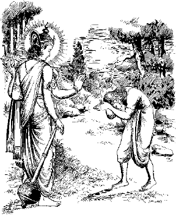
भगवान् श्रीरामजीद्वारा हनुमान् जी को उपदेश
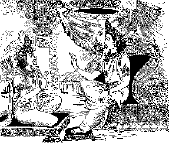
भगवान् श्रीरामद्वारा लक्ष्मणजीको उपदेश
भगवान् श्रीरामद्वारा हनुमान्जीको सांख्ययोगका उपदेश
राम: प्राह हनूमन्तमात्मानं पुरुषोेत्तम:।
वत्स वत्स हनूमंस्त्वं भक्तो यत्पृष्टवानसि॥ १॥
तत्तेऽहं सम्प्रवक्ष्यामि शृणुष्वावहितो मम।
अवाच्यमेतद्विज्ञानमात्मगुह्यं सनातनम्॥ २॥
पुरुषोत्तम श्रीरामने अपने भक्त हनुमान्से कहा—हे वत्स हनुमान्! तुम मेरे भक्त हो, अत: जो तुमने पूछा है, उसे मैं बता रहा हूँ। मेरी बात ध्यानपूर्वक सुनो। यह सनातन विज्ञान अपनेमें गोपनीय और यत्र-तत्र कहनेयोग्य नहीं है॥ १-२॥
यन्न देवा विजानन्ति यतन्तोऽपि द्विजातय:।
इदं ज्ञानं समाश्रित्य ब्रह्मभूता द्विजोत्तमा:॥ ३॥
इस विज्ञानको देवता और प्रयत्नशील द्विज साधक भी नहीं जानते। इसी ज्ञानका आश्रय लेकर श्रेष्ठ ब्राह्मण ब्रह्मस्वरूप हो गये॥ ३॥
न संसारं प्रपश्यन्ति पूर्वेऽपि ब्रह्मवादिन:।
गुह्याद् गुह्यतमं साक्षाद् गोपनीयं प्रयत्नत:।
वंशे भक्तिमतो ह्यस्य भवन्ति ब्रह्मवादिन:॥ ४॥
वे पुरातन ब्रह्मज्ञानी संसारको (सत्य) नहीं देखते। यह ज्ञान गुह्यसे भी परम गुह्य है और प्रयत्नपूर्वक गोपनीय है। इस (विज्ञानवेत्ता)-के वंशमें जन्म लेनेवाले भी भक्तिमान् ब्रह्मवादी होते हैं॥ ४॥
आत्मा य: केवल: स्वच्छ: शान्त: सूक्ष्म: सनातन:॥ ५॥
अस्ति सर्वान्तर: साक्षाच्चिन्मात्रस्तमस: पर:।
सोऽन्तर्यामी स पुरुष: स प्राण: स महेश्वर:॥ ६॥
आत्मा केवल, स्वच्छ, शान्त, सूक्ष्म और सनातन है। वह (आत्मा) सबके अन्दर स्पष्ट, प्रकाशमान और चिन्मय रूपसे स्थित है। वही अन्तर्यामी पुरुष है, वही प्राण है और वही परमेश्वर है॥ ५-६॥
स कालाग्निस्तदव्यक्तं सद्यो वेदयति श्रुति:।
अस्माद्विजायते विश्वमत्रैव प्रविलीयते॥ ७॥
वह कालाग्नि है, वही अव्यक्त है और श्रुति (शब्दप्रमाणसे) उसका ज्ञान कराती है। संसारकी उत्पत्ति और लय उसीमें होता है॥ ७॥
मायावी मायया बद्ध: करोति विविधास्तनू:।
न चाप्ययं संसरति न च संसारयेत्प्रभु:॥ ८॥
वह सर्वसमर्थ मायावी अपनी मायासे अनेक रूप (शरीर) धारण करता है। यह कहीं आता-जाता नहीं और न किसीको संचालित करता है॥ ८॥
नायं पृथ्वी न सलिलं न तेज: पवनो नभ:।
न प्राणो न मनो व्यक्तं न शब्द: स्पर्श एव च॥ ९॥
न रूपरसगन्धाश्च नाहङ्कर्ता न वागपि।
न पाणिपादौ नो पायुर्न चोपस्थं प्लवङ्गम॥ १०॥
हे वानरश्रेष्ठ! न तो यह पृथ्वी है, न जल, न तेज, न वायु अथवा आकाश है। निश्चय ही न यह प्राण है, न मन और न शब्द-स्पर्श-रूप-रस-गन्ध है। यह न अहंकार है, न वाणी-हाथ-पैर-पायु-उपस्थ आदि (कर्मेन्द्रियरूप) है॥ ९-१०॥
न कर्ता न च भोक्ता च न प्रकृतिपूरुषौ।
न माया नैव च प्राणश्चैतन्यं परमार्थत:॥ ११॥
यह न कर्ता है न भोक्ता है, न यह प्रकृति-पुरुष ही है। यह न माया है, न प्राण है। यह यथार्थमें (शुद्ध) चैतन्यमात्र है॥ ११॥
तथा प्रकाशतमसो सम्बन्धो नोपपद्यते।
तद्वदेव न सम्बन्ध: प्रपञ्चपरमात्मनो:॥ १२॥
जैसे प्रकाश और अन्धकारका परस्पर सम्बन्ध सम्भव नहीं होता, उसी प्रकार परमात्मा और (सांसारिक) प्रपंचका भी परस्पर सम्बन्ध सम्भव नहीं है॥ १२॥
छायातरू यथा लोके परस्परविलक्षणौ।
तद्वत्प्रपञ्चपुरुषौ विभिन्नौ परमार्थत:॥ १३॥
जैसे संसारमें वृक्ष और उसकी छाया—ये दो भिन्न पदार्थ हैं, उसी प्रकार परमात्मा और प्रपंच परस्पर सर्वथा भिन्न हैं॥ १३॥
यद्यात्मा मलिनोऽस्वस्थो विकारी स्यात्स्वभावत:।
नहि तस्य भवेन्मुक्तिर्जन्मान्तरशतैरपि॥ १४॥
यदि आत्मा स्वभावत: मलिन, अस्वस्थ और विकारवान् हो तो उसकी मुक्ति सैकड़ों जन्मोंमें भी सम्भव नहीं होगी॥ १४॥
पश्यन्ति मुनयो मुक्ता: स्वात्मानं परमार्थत:।
विकारहीनं निर्दु:खमानन्दात्मानमव्ययम्॥ १५॥
किंतु जीवन्मुक्त मुनिजन तो अपनी आत्माको यथार्थत: विकारहीन, दु:खरहित, अव्यय और आनन्दस्वरूप देखते हैं॥ १५॥
अहं कर्ता सुखी दु:खी कृश: स्थूलेति या मति:।
साप्यहङ्कृतिसम्बन्धादात्मन्यारोप्यते जनै:॥ १६॥
मैं कर्ता हूँ, सुखी-दु:खी हूँ, दुबला-मोटा हूँ—इस प्रकारका जो भाव बनता है, उसे अहंकारके सम्बन्धसे लोग आत्मापर आरोपित कर लेते हैं॥ १६॥
वदन्ति वेदविद्वांस: साक्षिणं प्रकृते: परम्।
भोक्तारमक्षयं बुद्ध्वा सर्वत्र समवस्थितम्॥ १७॥
वेदके तत्त्वज्ञ उस अनश्वर भोक्ताको सर्वत्र व्याप्त जानकर उस साक्षी (आत्मा)-को प्रकृतिसे परे कहते हैं॥ १७॥
तस्मादज्ञानमूलोऽयं संसार: सर्वदेहिनाम्।
अज्ञानादन्यथा ज्ञातं तच्च प्रकृतिसङ्गतम्॥ १८॥
इसलिये सभी देहधारियोंके लिये यह संसार अज्ञानमूलक ही है। प्रकृतिके संसर्गसे अज्ञानके कारण यह (संसार) अन्यथा प्रतीत होता है॥ १८॥
नित्योदित: स्वयंज्योति: सर्वग: पुरुष: पर:।
अहङ्काराविवेकेन कर्ताहमिति मन्यते॥ १९॥
आत्मा तो नित्य जाग्रत् , स्वयंप्रकाश, सर्वत्र व्याप्त, परम पुरुष है। अहंकारके अज्ञानके कारण यह (जीव) अपनेको कर्ता मान बैठता है॥ १९॥
पश्यन्ति ऋषयो व्यक्तं नित्यं सदसदात्मकम्।
प्रधानं प्रकृतिं बुद्ध्वा कारणं ब्रह्मवादिन:॥ २०॥
तेनात्र सङ्गतो ह्यात्मा कूटस्थोऽपि निरञ्जन:।
आत्मानमक्षरं ब्रह्म नावबुद्धॺन्ति तत्त्वत:॥ २१॥
ऋषिगण सत् और असत् रूप नित्य आत्मतत्त्वका निश्चय ही अनुभव करते हैं। वे ब्रह्मवादी प्रधान प्रकृतिको कारणरूप जानकर उससे सम्बद्ध होनेके कारण कूटस्थ, निरंजन, अक्षरब्रह्मको तत्त्वत: नहीं जान पाते॥ २०-२१॥
अनात्मन्यात्मविज्ञानं तस्माद्दु:खं तथेतरत्।
रागद्वेषादयो दोषा: सर्वभ्रान्तिनिबन्धना:॥ २२॥
अनात्मतत्त्वमें आत्माकी (भ्रान्ति) बुद्धि होनेसे ही दु:ख और सुख होते हैं। राग-द्वेष आदि दोष भी उसी भ्रान्तिसे जुड़े रहते हैं॥ २२॥
कार्ये ह्यस्य भवेदेषा पुण्यापुण्यमिति श्रुति:।
तद्वशादेव सर्वेषां सर्वदेहसमुद्भव:॥ २३॥
इसी कारण कर्ममें पाप-पुण्यका समावेश शास्त्रानुसार हो जाता है और उसके वशीभूत सभीको देह धारण करना पड़ता है॥ २३॥
नित्य: सर्वत्रगो ह्यात्मा कूटस्थो दोषवर्जित:।
एक: स भिद्यते शक्त्या मायया न स्वभावत:॥ २४॥
आत्मा तो नित्य, सर्वव्यापी, कूटस्थ, दोषरहित और एक (अद्वितीय) है, किंतु मायाकी शक्तिसे उसमें भेद प्रतीत होता है, स्वभावत: नहीं॥ २४॥
तस्मादद्वैतमेवाहुर्मुनय: परमार्थत:।
भेदोऽव्यक्तस्वभावेन सा च मायात्मसंश्रया॥ २५॥
इसलिये ज्ञानीजन यथार्थमें अद्वैतकी ही सत्ता कहते हैं, किंतु माया आत्माके साथ लगी रहनेके कारण वह अव्यक्त आत्मा भी स्वभावत: भेदवाली प्रतीत होती है॥ २५॥
यथा हि धूमसम्पर्कान्नाकाशो मलिनो भवेत्।
अन्त:करणजैर्भावैरात्मा तद्वन्न लिप्यते॥ २६॥
जैसे धुएँके सम्पर्कसे आकाश मलिन नहीं हो जाता (स्वभावत: स्वच्छ बना रहता है), उसी प्रकार अन्त:करणमें उठनेवाले (राग-द्वेषादि) भावोंसे आत्मा लिप्त नहीं होता॥ २६॥
यथा स्वप्रभया भाति केवल: स्फटिकोपल:।
उपाधिहीनो विमलस्तथैवात्मा प्रकाशते॥ २७॥
जैसे स्फटिक-मणि अपनी (स्वच्छ) प्रभासे प्रकाशित रहती है, उसी प्रकार उपाधिरहित निर्मल आत्मा भी स्वयंप्रकाशित रहता है॥ २७॥
ज्ञानस्वरूपमेवाहुर्जगदेतद्विचक्षणा:।
अर्थस्वरूपमेवाज्ञा: पश्यन्त्यन्ये कुबुद्धय:॥ २८॥
बुद्धिमान् लोग इस संसारको ज्ञानस्वरूप (आभासमात्र) कहते हैं, किंतु मंदबुद्धि (मूर्ख) इसे यथार्थ (सच्चा) समझते हैं॥ २८॥
कूटस्थो निर्गुणो व्यापी चैतन्यात्मा स्वभावत:।
दृश्यते ह्यर्थरूपेण पुरुषैर्भ्रान्तदृष्टिभि:॥ २९॥
यथा संलक्ष्यते व्यक्त: केवल: स्फटिको जनै:।
रक्तिकाव्यवधानेन तद्वत्परमपूरुष:॥ ३०॥
भ्रान्तचित्त लोगोंको कूटस्थ, निर्गुण, सर्वव्यापी, स्वभावत: चैतन्यरूप आत्मतत्त्व भी पदार्थ-जैसा प्रतीत होता है। जैसे लोग शुद्ध स्फटिक मणिको भी लाल पदार्थके संसर्गसे लाल ही देखते हैं, उसी प्रकार परमात्मतत्त्वके प्रति भी भ्रान्ति रहती है॥ २९-३०॥
तस्मादात्माक्षर: शुद्धो नित्य: सर्वगतोऽव्यय:।
उपासितव्यो मन्तव्य: श्रोतव्यश्च मुमुक्षुभि:॥ ३१॥
इसलिये मुमुक्षु लोगोंको अक्षर, शुद्ध, सनातन, सर्वव्यापी, अव्यय, आत्मतत्त्वका ही चिन्तन, मनन, श्रवण तथा अनुसन्धान करना चाहिये॥ ३१॥
यदा मनसि चैतन्यं भाति सर्वत्रगं सदा।
योगिनोऽव्यवधानेन तदा सम्पद्यते स्वयम्॥ ३२॥
जब योगसाधकके मनमें सदा सर्वव्यापी चैतन्यका प्रकाश निरन्तर बना रहता है, तब उसे आत्मतत्त्वकी उपलब्धि होती है॥ ३२॥
यदा सर्वाणि भूतानि स्वात्मन्येवाभिपश्यति।
सर्वभूतेषु चात्मानं ब्रह्म सम्पद्यते स्वयम्॥ ३३॥
जब वह (योगी) सभी प्राणी-पदार्थोंको स्वयं अपने भीतर और स्वयंको सभीमें देखने लगता है, तब वह ब्रह्मस्वरूप हो जाता है॥ ३३॥
यदा सर्वाणि भूतानि स्वात्मन्येवाभि पश्यति।
एकीभूत: परेणासौ तदा भवति केवल:॥ ३४॥
जब वह अन्य प्राणी-पदार्थोंको अपने भीतर ही देखता, तब अन्य की सत्तासे रहित परमात्मासे एकीभूत हुआ वह योगी केवलीभावको प्राप्त हो जाता है॥ ३४॥
यदा सर्वे प्रमुच्यन्ते कामा येऽस्य हृदि स्थिता:।
तदासावमृतीभूत: क्षेमं गच्छति पण्डित:॥ ३५॥
जब उस योगीके हृदयसे सम्पूर्ण कामनाओंका लोप हो जाता है, तब वह प्रज्ञासम्पन्न अमृतत्वको प्राप्त होकर परम कल्याणका भागी हो जाता है॥ ३५॥
यदा भूतपृथग्भावमेकस्थमनुपश्यति।
तत एव च विस्तारं ब्रह्म सम्पद्यते तदा॥ ३६॥
जब विभिन्न भूत-पदार्थोंमें योगीकी एकत्व दृष्टि हो जाती है, तब उसी (दृष्टि)-का विस्तार होकर उसे ब्रह्मभावकी प्राप्ति हो जाती है॥ ३६॥
यदा पश्यति चात्मानं केवलं परमार्थत:।
मायामात्रं जगत्कृत्स्नं तदा भवति निर्वृत:॥ ३७॥
जब वह योगी यथार्थ रूपमें केवल आत्माके अस्तित्वको देखने लगता है और सम्पूर्ण (बाह्य) जगत्को मायामात्र जान लेता है, तब उसे परमशान्ति प्राप्त होती है॥ ३७॥
यदा जन्मजरादु:खव्याधीनामेकभेषजम्।
केवलं ब्रह्मविज्ञानं जायतेऽसौ तदा शिव:॥ ३८॥
जब उसे जन्म, बुढ़ापा, दु:ख, रोग आदिकी एकमात्र औषधि ब्रह्मज्ञानकी प्राप्ति हो जाती है, तब वह योगी साक्षात् शिवस्वरूप हो जाता है॥ ३८॥
यथा नदी नदा लोके सागरेणैकतां ययु:।
तद्वदात्माक्षरेणासौ निष्कलेनैकतां व्रजेत्॥ ३९॥
जैसे संसारके (विभिन्न) नदियाँ और नद सागरमें जाकर एकरूप हो जाते हैं, उसी प्रकार आत्मा उस अक्षर, निष्कल परमात्मतत्त्वमें मिलकर एक हो जाता है॥ ३९॥
तस्माद्विज्ञानमेवास्ति न प्रपञ्चो न संस्थिति:।
अज्ञानेनावृतं लोके विज्ञानं तेन मुह्यति॥ ४०॥
इसलिये (यथार्थमें) ज्ञानकी ही सत्ता है, न तो प्रपंचकी और न सृष्टिकी कोई स्थिति है। संसारमें अज्ञानसे ज्ञान ढका रहता है, इस कारण लोगोंमें मोह उत्पन्न हो जाता है॥ ४०॥
तज्ज्ञानं निर्मलं सूक्ष्मं निर्विकल्पं यदव्ययम्।
अज्ञानमिति तत्सर्वं विज्ञानमिति मे मतम्॥ ४१॥
वह ज्ञान निर्मल, सूक्ष्म, निर्विकल्प और अविनाशी है, शेष सभी (दृश्यमान प्रपंच) अज्ञानमात्र है। मूल सत्ता ज्ञानकी ही है—ऐसा मेरा मत है॥ ४१॥
एतत्ते परमं सांख्यं भाषितं ज्ञानमुत्तमम्।
सर्ववेदान्तसारं हि योगस्तत्रैकचित्तता॥ ४२॥
मैंने यह उत्तम सांख्यरूप परम ज्ञान तुम्हें बताया है। यह समस्त वेदान्तका सार है और इसमें एकनिष्ठ चित्तवृत्ति होना ही योग है॥ ४२॥
योगात्सञ्जायते ज्ञानं ज्ञानाद्योग: प्रजायते।
योगज्ञानाभियुक्तस्य नावाप्यं विद्यते क्वचित्॥ ४३॥
योगसे ज्ञानकी प्राप्ति होती है और ज्ञानसे योग परिपुष्ट होता है। योग और ज्ञानसे युक्त साधकके लिये कुछ भी अप्राप्त नहीं रहता॥ ४३॥
यदेव योगिनो याति सांख्यं तदभिगम्यते।
एकं सांख्यं च योगं च य: पश्यति स तत्त्ववित्॥ ४४॥
जिस परमपदको योगीजन प्राप्त करते हैं, ज्ञानी भी वही प्राप्त करते हैं। जो योग और सांख्यको एकरूप देखते हैं, वे ही तत्त्वज्ञानी हैं॥ ४४॥
अन्ये च योगिनो वत्स ऐश्वर्यासक्तचेतस:।
मज्जन्ति तत्र तत्रैव सत्वात्मैक्यमिति श्रुति:॥ ४५॥
[श्रीरामजी बोले—] हे वत्स! अन्य (दिखावटी) योगीजन तो धन-सम्पत्तिमें आसक्त-चित्तवाले होते हैं और वे उसीमें नष्ट हो जाते हैं। श्रुतिका कथन है कि आत्माकी एकताका बोध ही वास्तवमें प्राप्य परमपद है॥ ४५॥
यत्तत्सर्वगतं दिव्यमैश्वर्यमचलं महत्।
ज्ञानयोगाभियुक्तस्तु देहान्ते तदवाप्नुयात्॥ ४६॥
ज्ञानयोगसे युक्त साधक देहान्त होनेपर उस सर्वव्यापी, दिव्य, महान्, अचल परमैश्वर्य पदको प्राप्त करते हैं॥ ४६॥
एष आत्माहमव्यक्तो मायावी परमेश्वर:।
कीर्तित: सर्ववेदेषु सर्वात्मा सर्वतोमुख:॥ ४७॥
सर्वकाम: सर्वरस: सर्वगन्धोऽजरोऽमर:।
सर्वत: पाणिपादोऽहमन्तर्यामी सनातन:॥ ४८॥
मैं अव्यक्त आत्मा हूँ, मैं मायापति परमेश्वर हूँ, मैं सर्वव्यापी और सबकी आत्मा हूँ—ऐसा सभी शास्त्रोंमें कहा गया है। मैं ही सम्पूर्ण कामनाओं, रसों और गन्धादि विषयोंका परमाधार, अजर-अमर, अन्तर्यामी, सनातन और सर्वत्र हाथ-पैरोंसे स्थित आत्मस्वरूप हूँ॥ ४७-४८॥
अपाणिपादो जवनो ग्रहीता हृदि संस्थित:।
अचक्षुरपि पश्यामि तथाकर्ण: शृणोम्यहम्॥ ४९॥
वेदाहं सर्वमेवेदं न मां जानाति कश्चन।
प्राहुर्महान्तं पुरुषं मामेकं तत्त्वदर्शिन:॥ ५०॥
बिना हाथ-पैरोंवाला होकर भी मैं शीघ्रगामी हूँ और सब कुछ ग्रहण करता हूँ, (सबके) हृदयमें रहता हूँ। मैं बिना आँखोंके देख सकता हूँ और बिना कानके सुन सकता हूँ। मैं यह सब जानता हूँ, पर मुझे कोई नहीं जानता। तत्त्वदर्शी मुझे एकमात्र महान् पुरुष (सत्ता) कहते हैं॥ ४९-५०॥
निर्गुणामलरूपस्य यत्तदैश्वर्यमुत्तमम्।
यन्न देवा विजानन्ति मोहिता मायया मम॥ ५१॥
मेरे निर्गुण, निर्मल स्वरूप और उत्तम ऐश्वर्यको देवता भी नहीं जान पाते; क्योंकि वे मेरी मायासे मोहित रहते हैं॥ ५१॥
यन्मे गुह्यतमं देहं सर्वगं तत्त्वदर्शिन:।
प्रविष्टा मम सायुज्यं लभन्ते योगिनोऽव्ययम्॥ ५२॥
मेरा जो सर्वव्यापी परम गुह्य अव्यय स्वरूप है, उसमें तत्त्वदर्शी योगीजन सायुज्य मुक्ति प्राप्त करके प्रविष्ट होते हैं॥ ५२॥
येषां हि न समापन्ना माया वै विश्वरूपिणी।
लभन्ते परमं शुद्धं निर्वाणं ते मया सह॥ ५३॥
जिन्हें यह विश्वव्यापी माया नहीं छूती, वे योगीजन परम पवित्र निर्वाणपदको मेरे साथ प्राप्त करते हैं॥ ५३॥
न तेषां पुनरावृत्ति: कल्पकोटिशतैरपि।
प्रसादान्मम ते वत्स एतद्वेदानुशासनम्॥ ५४॥
नापुत्रशिष्ययोगिभ्यो दातव्यं हनुमन्क्वचित्।
यदुक्तमेतद्विज्ञानं सांख्ययोगसमाश्रयम्॥ ५५॥
उनका सौ करोड़ कल्पोंमें भी पुनर्जन्म नहीं होता। हे वत्स! मेरी प्रसन्नतासे तुम्हें (यह ज्ञान) प्राप्त हुआ है। यही वेदोंका भी अनुशासन है। हे हनुमान्! सांख्ययोगका आश्रयभूत यह विज्ञान जो मैंने कहा है, उसे कभी अपुत्र, अशिष्य और अयोगी (कुपात्र)-को नहीं बताना चाहिये॥ ५४-५५॥
॥ इति श्रीअद्भुतरामायणे रामगीतायां प्रथमोऽध्याय:॥ १॥
दूसरा अध्याय
भगवान् श्रीरामद्वारा उपनिषत्-सिद्धान्तका निरूपण
पुना राम: प्रवचनमुवाच द्विजपुङ्गव।
अव्यक्तादभवत्काल: प्रधानं पुरुष: पर:॥ १॥
पुन: प्रवचन करते हुए श्रीरामने कहा—हे द्विजश्रेष्ठ! मुझ अव्यक्तसे कालकी उत्पत्ति होती है और उससे प्रधान नामक तत्त्व और परम पुरुषकी॥ १॥
तेभ्य: सर्वमिदं जातं तस्मात्सर्वमहं जगत्।
सर्वत: पाणिपादं तत्सर्वतोऽक्षिशिरोमुखम्॥ २॥
उन्हींसे यह सारी सृष्टि उत्पन्न हुई है। इसलिये मैं ही सारा संसार हूँ। मेरे हाथ-पैर सब ओर हैं और मेरी आँखें, सिर तथा मुख सर्वत्र व्याप्त हैं॥ २॥
सर्वत: श्रुतिमल्लोके सर्वमावृत्य तिष्ठति।
सर्वेन्द्रियगुणाभासं सर्वेन्द्रियविवर्जितम्॥ ३॥
उस परमात्माके कान सभी ओर हैं। वह सबको व्याप्त करके स्थित है। वही सभी इन्द्रियों और गुणोंका प्रकाशक है, किंतु सभी इन्द्रियोंसे परे है॥ ३॥
सर्वाधारं स्थिरानन्दमव्यक्तं द्वैतवर्जितम्।
सर्वोपमानरहितं प्रमाणातीतगोचरम्॥ ४॥
वह सभीका आधार, स्थिर, आनन्दरूप, अव्यक्त और अद्वैत है। उसकी कोई उपमा नहीं है और वह किसी प्रमाणसे ज्ञात नहीं हो सकता॥ ४॥
निर्विकल्पं निराभासं सर्वाभासं परामृतम्।
अभिन्नं भिन्नसंस्थानं शाश्वतं ध्रुवमव्ययम्॥ ५॥
वह निर्विकल्प, निराभास, सर्वप्रकाशक, परम अमृत, सर्वथा अभिन्न, किंतु भिन्न आधारवान्, शाश्वत, ध्रुव और अव्यय है॥ ५॥
निर्गुणं परमं व्योम तज्ज्ञानं सूरयो विदु:।
स आत्मा सर्वभूतानां स बाह्याभ्यन्तरात्पर:॥ ६॥
वह निर्गुण और परमाकाशस्वरूप है। विद्वान् उसके ज्ञानके अधिकारी हैं। वह सभी भूत-प्राणियोंका आत्मा है और वही बाहर-भीतर और उसके परे भी विद्यमान है॥ ६॥
सोऽहं सर्वत्रग: शान्तो ज्ञानात्मा परमेश्वर:।
मया ततमिदं विश्वं जगदव्यक्तरूपिणा॥ ७॥
वह सर्वव्यापी, शान्त, ज्ञानात्मा, परमेश्वर मैं हूँ। अव्यक्त रूपवाले मेरे द्वारा यह सारा संसार व्याप्त है॥ ७॥
मत्स्थानि सर्वभूतानि यस्तं वेद स वेदवित्।
प्रधानं पुरुषं चैव तत्त्वद्वयमुदाहृतम्॥ ८॥
सभी प्राणी-पदार्थ मुझमें स्थित हैं। जो यह जानता है, वही वेदज्ञ है। प्रधान (प्रकृति) और पुरुष (जीवात्मा)—ये दो तत्त्व कहे गये हैं॥ ८॥
तयोरनादिर्निर्दिष्ट: काल: संयोजक: पर:।
त्रयमेतदनाद्यन्तमव्यक्ते समवस्थितम्॥ ९॥
दोनोंका परम संयोजक अनादि काल बताया गया है। ये तीनों अनादि और अनन्त तत्त्व अव्यक्त आत्मामें स्थित रहते हैं॥ ९॥
तदात्मकं तदन्यत्स्यात्तद्रूपं मामकं विदु:।
महदाद्यं विशेषान्तं सम्प्रसूतेऽखिलं जगत्॥ १०॥
तदात्मक होकर भी उससे भिन्न होनेवाला स्वरूप मेरा ही जानो। महत्-तत्त्वसे लेकर विशेषपर्यन्त इस सम्पूर्ण जगत्की सृष्टि उसीसे होती है॥ १०॥
या सा प्रकृतिरुद्दिष्टा मोहिनी सर्वदेहिनाम्।
पुरुष: प्रकृतिस्थोऽपि भुङ्क्ते य: प्राकृतान् गुणान्॥ ११॥
अहङ्कारविविक्तत्वात्प्रोच्यते पञ्चविंशक:।
आद्यो विकार: प्रकृतेर्महानात्मेति कथ्यते॥ १२॥
सभी देहधारियोंको मोहित करनेवाली प्रकृति कही गयी है। पुरुष उस प्रकृतिमें स्थित हुआ प्राकृत गुणोंका उपभोग करता है। अहंकारसे अलग होनेके कारण वह पच्चीसवाँ तत्त्व कहलाता है। प्रकृतिका प्रथम विकार महत् तत्त्व कहा जाता है॥ ११-१२॥
विज्ञानशक्तिर्विज्ञानादहङ्कारस्तदुत्थित:।
एक एव महानात्मा सोऽहङ्कारोऽभिधीयते॥ १३॥
विज्ञानसे विज्ञानशक्ति और उससे अहंकारकी उत्पत्ति होती है। महत् आत्मा एक ही है और उसीको अहंकार कहा जाता है॥ १३॥
स जीव: सोऽन्तरात्मेति गीयते तत्त्वचिन्तकै:।
तेन वेदयते सर्वं सुखं दु:खं च जन्मसु॥ १४॥
वही जीव और वही अन्तरात्मा नामसे तत्त्वज्ञोंद्वारा कहा जाता है। उसीके द्वारा जन्म-जन्मान्तरोंमें सुख-दु:खादि सभी प्रकारकी अनुभूति होती है॥ १४॥
स विज्ञानात्मकस्तस्य मन: स्यादुपकारकम्।
तेनाविवेकतस्तस्मात्संसार: पुरुषस्य नु॥ १५॥
वह विज्ञानस्वरूप है, उसका उपकारी (सहचर) मन है और उसके अविवेकसे ही पुरुषको इस संसारकी प्राप्ति होती है॥ १५॥
स चाविवेक: प्रकृतौ सङ्गात्कालेन सोऽभवत्।
काल: सृजति भूतानि काल: संहरते प्रजा:॥ १६॥
सर्वे कालस्य वशगा न काल: कस्यचिद्वशे।
सोऽन्तरा सर्वमेवेदं नियच्छति सनातन:॥ १७॥
वह अविवेक (दीर्घ कालतक) प्रकृतिका संग करनेके कारण हो जाता है। काल ही सभी प्राणी-पदार्थोंका सृजन करता है और वही सृष्टिका संहार भी करता है। सभी कालके वशीभूत रहते हैं। काल किसीके वशमें नहीं होता। वही सनातन सबके भीतर प्रवेश करके सबका नियन्त्रण करता है॥ १६-१७॥
प्रोच्यते भगवान् प्राण: सर्वज्ञ: पुरुष: पर:।
सर्वेन्द्रियेभ्य: परमं मन: प्राहुर्मनीषिण:॥ १८॥
मनसश्चाप्यहङ्कारमहङ्कारान्महान् पर:।
महत: परमव्यक्तमव्यक्तात्पुरुष: पर:॥ १९॥
वही भगवान्, प्राण, सर्वज्ञ और परम पुरुष कहा जाता है। विज्ञजनोंद्वारा मनको सभी इन्द्रियोंसे परे कहा गया है। मनसे परे अहंकार और अहंकारसे परे महत् तत्त्व, महत् से परे अव्यक्त और उससे परे पुरुष कहे जाते हैं॥ १८-१९॥
पुरुषाद्भगवान् प्राणस्तस्य सर्वमिदं जगत्।
प्राणात्परतरं व्योम व्योमातीतोऽग्निरीश्वर:॥ २०॥
पुरुषसे परे भगवान् प्राण हैं। उन्हींका (विस्तार) यह सारा जगत् है। प्राणसे परे आकाश है और आकाशसे परे मैं अग्निरूपी परमेश्वर हूँ॥ २०॥
सोऽहं सर्वत्रग: शान्तो ज्ञानात्मा परमेश्वर:।
नास्ति मत्परमं भूतं मां विज्ञाय विमुच्यते॥ २१॥
वह परमेश्वर मैं सर्वव्यापी, शान्त और ज्ञानस्वरूप हूँ। मुझसे परे कुछ नहीं है। मुझे जानकर जीव मुक्त हो जाता है॥ २१॥
नित्यं हि नास्ति जगति भूतं स्थावरजङ्गमम्।
ऋते मामेकमव्यक्तं व्योमरूपं महेश्वरम्॥ २२॥
मुझ एक अव्यक्त आकाशरूप महेश्वरको छोड़कर इस संसारमें कोई स्थावर-जंगम पदार्थ नित्य नहीं है॥ २२॥
सोऽहं सृजामि सकलं संहरामि सदा जगत्।
मायी मायामयो देव: कालेन सह सङ्गत:॥ २३॥
मायापति मैं लीलापूर्वक कालके सहयोगसे इस सम्पूर्ण जगत्की सदा सृष्टि और इसका संहार करता रहता हूँ॥ २३॥
मत्सन्निधावेष काल: करोति सकलं जगत्।
नियोजयत्यनन्तात्मा ह्येतद्वेदानुशासनम्॥ २४॥
मेरे सान्निध्यसे यह काल सारे जगत्की सृष्टि करता है और वही अनन्तात्मा उसका नियमन करता है—यही वेदोंका अनुशासन है॥ २४॥
॥ इति श्रीअद्भुतरामायणे रामगीतायां द्वितीयोऽध्याय:॥ २॥
तीसरा अध्याय
भगवान् श्रीरामद्वारा भक्तियोगका वर्णन
वक्ष्ये समाहितमना: शृणुष्व पवनात्मज।
येनेदं लभ्यते रूपं येनेदं सम्प्रवर्तते॥ १॥
हे पवनात्मज! जिससे यह रूप प्राप्त होता है और जिससे यह क्रियाशील होता है, उसे बताता हूँ, ध्यानसे सुनो॥ १॥
नाहं तपोभिर्विविधैर्न दानेन न चेज्यया।
शक्यो हि पुरुषैर्ज्ञातुमृते भक्तिमनुत्तमाम्॥ २॥
उत्तम भक्तिके सिवा लोग मुझे तप, दान या यज्ञादिसे नहीं जान सकते॥ २॥
अहं हि सर्वभावानामन्तस्तिष्ठामि सर्वग:।
मां सर्वसाक्षिणं लोका न जानन्ति प्लवङ्गम॥ ३॥
हे वानरश्रेष्ठ! मैं सर्वव्यापी ही सभी प्राणियोंके अन्तरमें स्थित रहता हूँ, मुझ सर्वसाक्षीको लोग नहीं जान पाते॥ ३॥
यस्यान्तरा सर्वमिदं यो हि सर्वान्तर: पर:।
सोऽहं धाता विधाता च लोकेऽस्मिन् विश्वतोमुख:॥ ४॥
जिसके भीतर यह सब कुछ और जो इस सबके भीतर है, वह सर्वत्र व्याप्त, सर्वनियन्ता, सबका पोषक मैं ही हूँ॥ ४॥
न मां पश्यन्ति मुनय: सर्वेऽपि त्रिदिवौकस:।
ब्राह्मणा मनव: शक्रा ये चान्ये प्रथितौजस:॥ ५॥
मुझे सभी ऋषि-मुनि और देवता भी नहीं जानते तथा ब्राह्मण, मनु, इन्द्रादि और अन्य तेजस्वी भी नहीं पहचानते॥ ५॥
गृणन्ति सततं वेदा मामेकं परमेश्वरम्।
यजन्ति विविधैरग्निं ब्राह्मणा वैदिकैर्मखै:॥ ६॥
वेद निरन्तर मुझ एक परमेश्वरकी ही स्तुति करते हैं। ब्राह्मण वैदिक यज्ञों और विविध अग्निविधानोंसे मेरा ही यजन करते हैं॥ ६॥
सर्वे लोका नमस्यन्ति ब्रह्मलोके पितामहम्।
ध्यायन्ति योगिनो देवं भूताधिपतिमीश्वरम्॥ ७॥
अहं हि सर्वयज्ञानां भोक्ता चैव फलप्रद:।
सर्वदेवतनुर्भूत्वा सर्वात्मा सर्वसंस्तुत:॥ ८॥
सभी लोग ब्रह्मलोकमें पितामह ब्रह्माको नमन करते हैं। योगीजन भूताधिपति महेश्वरका ध्यान करते हैं, किंतु सभी देवताओंके रूपमें सभीसे पूजित, सर्वात्मा मैं ही सभी यज्ञानुष्ठानोंका भोक्ता और फल प्रदान करनेवाला हूँ॥ ७-८॥
मां पश्यन्तीह विद्वांसो धार्मिका वेदवादिन:।
तेषां सन्निहितो नित्यं ये भक्ता मामुपासते॥ ९॥
वेदज्ञ धार्मिक विद्वान् मुझे जानते हैं। जो भक्त मेरी उपासना करते हैं, उनके मैं सदा ही सन्निकट रहता हूँ॥ ९॥
ब्राह्मणा: क्षत्रिया वैश्या धार्मिका मामुपासते।
तेषां ददामि तत्स्थानमानन्दं परमं पदम्॥ १०॥
जो ब्राह्मण, क्षत्रिय और धार्मिक वैश्य मेरी उपासना करते हैं, उन्हें मैं अपना आनन्दस्वरूप परम पद प्रदान करता हूँ॥ १०॥
अन्येऽपि ये विकर्मस्था: शूद्राद्या नीचजातय:।
भक्तिमन्त: प्रमुच्यन्ते कालेन मयि सङ्गता:॥ ११॥
दूसरे भी शूद्र आदि निम्न वर्णके लघुकार्योंमें लगे लोग यदि मेरे भक्त होते हैं तो कालक्रमसे मुक्त होकर वे मुझे ही प्राप्त करते हैं॥ ११॥
न मद्भक्ता विनश्यन्ते मद्भक्ता वीतकल्मषा:।
आदावेतत्प्रतिज्ञातं न मे भक्त: प्रणश्यति॥ १२॥
मेरे दोषरहित भक्त कभी नष्ट नहीं होते। मैंने पहले ही यह प्रतिज्ञा कर रखी है कि मेरे भक्तका विनाश नहीं हो सकता॥ १२॥
यो वा निन्दति तं मूढो देवदेवं स निन्दति।
यो हि तं पूजयेद्भक्त्या स पूजयति मां सदा॥ १३॥
जो मूर्ख मेरे भक्तकी निन्दा करता है, वह मुझ परमेश्वरका निन्दक है और जो आदरपूर्वक उसकी पूजा करता है, वह सदा मेरी ही पूजा करता है॥ १३॥
पत्रं पुष्पं फलं तोयं मदाराधनकारणात्।
यो मे ददाति नियत: स मे भक्त: प्रियो मत:॥ १४॥
जो भक्त मेरी आराधनाके भावसे पत्र, पुष्प, फल या जल मुझे अर्पित करता है, वह सदा ही मेरा प्रिय भक्त है॥ १४॥
अहं हि जगतामादौ ब्रह्माणं परमेष्ठिनम्।
निधाय दत्तवान् वेदानशेषानास्यनि:सृतान्॥ १५॥
मैंने ही सृष्टिके प्रारम्भमें परमेष्ठी ब्रह्माको प्रतिष्ठितकर अपने मुखसे निकले समस्त वेद उन्हें दिये थे॥ १५॥
अहमेव हि सर्वेषां योगिनां गुरुरव्यय:।
धार्मिकाणां च गोप्ताहं निहन्ता वेदविद्विषाम्॥ १६॥
मैं ही समस्त योगियोंका सनातन गुरु हूँ। धार्मिक लोगोंका मैं संरक्षण करता हूँ और वेदविरोधी (दुष्टों)-का संहारक हूँ॥ १६॥
अहं वै सर्वसंसारान्मोचको योगिनामिह।
संसारहेतुरेवाहं सर्वसंसारवर्जित:॥ १७॥
मैं ही समस्त योगियोंको संसारसे मुक्त करता हूँ। इस सृष्टिका कारण होकर भी मैं समस्त सृष्टिसे परे हूँ॥ १७॥
अहमेव हि संहर्ता स्रष्टाहं परिपालक:।
मायावी मामिका शक्तिर्माया लोकविमोहिनी॥ १८॥
मैं ही इस सृष्टिका स्रष्टा, पालक और संहारक हूँ। मैं ही मायापति हूँ और मेरी शक्ति माया (अविद्या) इस समस्त संसारको भ्रमित करती रहती है॥ १८॥
ममैव च परा शक्तिर्या सा विद्येति गीयते।
नाशयामि तया मायां योगिनां हृदि संस्थित:॥ १९॥
मेरी ही पराशक्ति विद्या कही जाती है। उससे मैं योगियोंके चित्तमें स्थित होकर माया (अविद्या)-का नाश करता हूँ॥ १९॥
अहं हि सर्वशक्तीनां प्रवर्तकनिवर्तक:।
आधारभूत: सर्वासां निधानममृतस्य च॥ २०॥
मैं ही समस्त शक्तियोंका प्रवर्तक और निवर्तक हूँ। मैं ही सबका अधिष्ठान और अमृतका निधान हूँ॥ २०॥
एका सर्वान्तरा शक्ति: करोति विविधं जगत्।
भूत्वा नारायणोऽनन्तो जगन्नाथो जगन्मय:॥ २१॥
एक सबके भीतर स्थित शक्ति ही अनन्त, नारायण, जगद्वॺापी, जगन्नाथ होकर विभिन्न लोकोंकी सृष्टि करती है॥ २१॥
तृतीया महती शक्तिर्निहन्ति सकलं जगत्।
तामसी मे समाख्याता कालात्मा रुद्ररूपिणी॥ २२॥
तीसरी महान् शक्ति समस्त सृष्टिका संहार करती है। वह मेरी शक्ति तामसी कालस्वरूपा रुद्ररूपिणी कही जाती है॥ २२॥
ध्यानेन मां प्रपश्यन्ति केचिज्ज्ञानेन चापरे।
अपरे भक्तियोगेन कर्मयोगेन चापरे॥ २३॥
कोई भक्त ध्यानसे, कोई ज्ञानसे, अन्य भक्तियोग अथवा कर्मयोगसे मुझे प्राप्त करते हैं॥ २३॥
सर्वेषामेव भक्तानामेष प्रियतरो मम।
यो विज्ञानेन मां नित्यमाराधयति नान्यथा॥ २४॥
इन सभी प्रकारके भक्तोंमें मुझे वह सर्वाधिक प्रिय है, जो आत्मानुसन्धानरूपी विज्ञानसे नित्य मेरी आराधना करता है॥ २४॥
अन्ये च ये त्रयो भक्ता मदाराधनकाङ्क्षिण:।
तेऽपि मां प्राप्नुवन्त्येव नावर्तन्ते च वै पुन:।
मया ततमिदं कृत्स्नमेतद्यो वेद सोऽमृत:॥ २५॥
अन्य तीनों प्रकारके भक्त भी जो मेरी आराधनामें ही प्रवृत्त हैं, वे भी मुझे ही प्राप्त करते हैं और उनका भी पुनर्जन्म नहीं होता। मैं ही इन सब (प्राणी-पदार्थों)-में व्याप्त हूँ—जो ऐसा जानता है, वह अमृतत्वको प्राप्त हो जाता है॥ २५॥
पश्याम्यशेषमेवेदं वर्तमानं स्वभावत:।
करोति काले भगवान् महायोगेश्वर: स्वयम्॥ २६॥
मैं स्वभावत: इस समस्त प्रपंचको वर्तमान ही देखता हूँ। भगवान् महायोगेश्वर स्वयं समयानुसार इसका नियमन करते हैं॥ २६॥
योगं सम्प्रोच्यते योगी मायी शास्त्रेषु सूरिभि:।
योगेश्वरोऽसौ भगवान् महादेवो महान् प्रभु:॥ २७॥
शास्त्रोंमें विद्वानोंने उन परमयोगी मायाधीश भगवान्महादेवको योगरूपसे वर्णित किया है, वे ही योगेश्वर सबके स्वामी हैं॥ २७॥
महत्त्वात्सर्वसत्त्वानां परत्वात्परमेश्वर:।
प्रोच्यते भगवान् ब्रह्मा महान् ब्रह्ममयो यत:॥ २८॥
सभी प्राणियोंसे महान् और परे होनेसे भगवान् ब्रह्मा भी परमेश्वर हैं; क्योंकि वे ब्रह्मस्वरूप हैं॥ २८॥
यो मामेवं विजानाति महायोगेश्वरेश्वरम्।
सोऽविकम्पेन योगेन युज्यते नात्र संशय:॥ २९॥
जो मुझे इस प्रकार (स्रष्टा-पालक-संहारक) महायोगेश्वर ईश्वररूपसे जानता है, वह अविभक्त योगको निश्चय ही प्राप्त कर लेता है॥ २९॥
सोऽहं प्रेरयिता देव: परमानन्दमाश्रित:।
तिष्ठामि योगी सततं यस्तद्वेद स वेदवित्॥ ३०॥
मैं ही सबका प्रेरक ईश्वर, परमानन्दमें प्रतिष्ठित तथा योगस्वरूपसे नित्य स्थित हूँ—जो ऐसा जानता है, वही वेदोंका सार समझता है॥ ३०॥
इति गुह्यतमं ज्ञानं सर्ववेदेषु निश्चितम्।
प्रसन्नचेतसे देयं धार्मिकायाहिताग्नये॥ ३१॥
यह परम रहस्यमय ज्ञान सभी वेदोंमें प्रतिष्ठित है। धार्मिक, आहिताग्नि, शुद्ध चित्तवाले (जिज्ञासुओं)-को ही यह बताना चाहिये॥ ३१॥
॥ इति श्रीअद्भुतरामायणे रामगीतायां तृतीयोऽध्याय:॥ ३॥
चौथा अध्याय
भगवान् श्रीरामद्वारा हनुमान्जीसे अपने परमात्मस्वरूपका वर्णन
सर्वलोकैकनिर्माता सर्वलोकैकरक्षिता।
सर्वलोकैकसंहर्ता सर्वात्माहं सनातन:॥ १॥
[भगवान् श्रीराम कहते हैं—] मैं सभी लोकोंका एकमात्र स्रष्टा, पालक, संहारक, सर्वात्मा और सनातन हूँ॥ १॥
सर्वेषामेव वस्तूनामन्तर्यामी पिता ह्यहम्।
मय्येवान्त:स्थितं सर्वं चाहं सर्वत्र संस्थित:॥ २॥
सभी वस्तुओंके भीतर रहनेवाला अन्तर्यामी आत्मा तथा सबका पिता मैं ही हूँ। मुझमें ही सारे (प्राणी-पदार्थ) स्थित रहते हैं और मैं भी उन सबमें स्थित रहता हूँ॥ २॥
भवता चाद्भुतं दृष्टं यत्स्वरूपं तु मामकम्।
ममैषा हॺुपमा वत्स मायया दर्शिता मया॥ ३॥
हे वत्स! तुमने जो मेरा अद्भुत स्वरूप देखा है, उसे मेरे समान जानो, उसे मैंने ही मायापूर्वक तुम्हें दिखाया है॥ ३॥
सर्वेषामेव भावानामन्तरा समवस्थित:।
प्रेरयामि जगत् सर्वं क्रियाशक्तिरियं मम॥ ४॥
सभी प्राणियोंके अन्त:स्थित होकर मैं सारे संसारको कार्यमें प्रेरित करता हूँ—यह मेरी क्रियाशक्ति है॥ ४॥
मयेदं चेष्टते विश्वं मत्स्वभावानुवर्ति च।
सोऽहं काले जगत् कृत्स्नं करोमि हनुमन् किल॥ ५॥
संहराम्येकरूपेण द्विधावस्था ममैव तु।
आदिमध्यान्तनिर्मुक्तो मायातत्त्वप्रवर्तक:॥ ६॥
संसारमें जो भी क्रियाकलाप होता है, वह मेरे द्वारा ही संचालित है और मेरे स्वभावानुरूप होता है। हे हनुमान्! समय आनेपर मैं ही उस समस्त जगत्की सृष्टि और संहार करता हूँ—ये दोनों स्थितियाँ मेरी ही हैं। मैं ही आदि-मध्य और अन्तसे रहित तथा मायातत्त्वका संचालक हूँ॥ ५-६॥
क्षोभयामि च सर्गादौ प्रधानपुरुषावुभौ।
ताभ्यां सञ्जायते सर्वं संयुक्ताभ्यां परस्परम्॥ ७॥
मैं सृष्टिके प्रारम्भमें प्रकृति और पुरुषमें क्षोभ उत्पन्न करता हूँ। उनके परस्पर मेलसे ही सब उत्पन्न होता है॥ ७॥
महदादिक्रमेणैव मम तेजो विजृम्भितम्।
यो हि सर्वजगत्साक्षी कालचक्रप्रवर्तक:॥ ८॥
हिरण्यगर्भो मार्तण्ड: सोऽपि मद्देहसम्भव:।
तस्मै दिव्यं स्वमैश्वर्यं ज्ञानयोगं सनातनम्॥ ९॥
दत्तवानात्मजान् वेदान् कल्पादौ चतुर: किल।
स मन्नियोगतो ब्रह्मा सदा मद्भावभावित:॥ १०॥
महदादिके (पूर्वोक्त) क्रमसे मेरा ही तेज प्रकाशित होता है। जो सारे संसारका साक्षी, कालचक्रका नियन्ता, हिरण्यगर्भ सूर्य है, वह भी मेरे ही शरीरसे उत्पन्न हुआ है। उसको मैंने अपना दिव्य ऐश्वर्य तथा सनातन ज्ञानयोग प्रदान किया है। अपनेसे उपपन्न चारों वेद भी कल्पके आरम्भमें मैंने प्रदान किये। ब्रह्मा मेरे अनुशासनमें सदा मेरे अनुकूल रहते हैं॥ ८—१०॥
दिव्यं तन्मामकैश्वर्यं सर्वदा वहति स्वयम्।
स सर्वलोकनिर्माता मन्नियोगेन सर्ववित्।
भूत्वा चतुर्मुख: सर्गं सृजत्येवात्मसम्भव:॥ ११॥
वे मेरे उस दिव्य ऐश्वर्यको सदा स्वयं धारण करते हैं। वे सर्वज्ञ ब्रह्मा मेरे आदेशानुसार सभी लोकोंका निर्माण करते हैं। वे चतुर्मुख स्वरूपसे स्वयम्भू होकर सारी सृष्टिकी रचना करते हैं॥ ११॥
योऽपि नारायणोऽनन्तो लोकानां प्रभवाव्यय:।
ममैव परमा मूर्ति: करोति परिपालनम्॥ १२॥
जो अनन्त लोकोंके स्वामी अव्यय नारायण हैं, वे मेरे ही परमस्वरूप हैं और सृष्टिका परिपालन करते हैं॥ १२॥
योऽन्तक: सर्वभूतानां रुद्र: कालात्मक: प्रभु:।
मदाज्ञयासौ सततं संहरत्येव मे तनु:॥ १३॥
जो भगवान् कालात्मक रुद्र हैं, वे सभीका अन्त करनेवाले तथा मेरे ही स्वरूप हैं। वे मेरी आज्ञासे निरन्तर (इस सृष्टिका) संहार करते रहते हैं॥ १३॥
हव्यं वहति देवानां कव्यं कव्याशिनामपि।
पाकं च कुरुते वह्नि: सोऽपि मच्छक्तिचोदित:॥ १४॥
जो अग्निदेव देवताओंके लिये हव्य और पितृगणोंके लिये कव्य ले जाते हैं तथा अन्नादिको पकानेका कार्य करते हैं, वे मेरी ही शक्तिसे संचालित होते हैं॥ १४॥
भुक्तमाहारजातं यत्पचत्येतदहर्निशम्।
वैश्वानरोऽग्निर्भगवानीश्वरस्य नियोगत:॥ १५॥
भगवान् वैश्वानर अग्नि भी मुझ परमेश्वरके अनुशासनसे ही खाये हुए भोजनको रात-दिन पचाते हैं॥ १५॥
यो हि सर्वाम्भसां योनिर्वरुणो देवपुङ्गव:।
स सञ्जीवयते सर्वमीशस्यैव नियोगत:॥ १६॥
समस्त जलाशयोंके आदिकारण देवश्रेष्ठ वरुण मुझ परमेश्वरकी आज्ञासे ही सबको जीवन प्रदान करते हैं॥ १६॥
योऽन्तस्तिष्ठति भूतानां बहिर्देवो निरञ्जन:।
मदाज्ञयासौ भूतानां शरीराणि बिभर्ति हि॥ १७॥
जो निरंजन प्राणदेव प्राणियोंके भीतर और बाहर संचरण करते रहते हैं, वे मेरी ही आज्ञासे जीवोंका शरीर धारण करते हैं॥ १७॥
योऽपि सञ्जीवनो नॄणां देवानाममृताकर:।
सोम: स मन्नियोगेन चोदित: किल वर्तते॥ १८॥
जो देवताओंके लिये अमृतके भण्डार और मनुष्योंको नवजीवन प्रदान करनेवाले सोमराज चन्द्र हैं, वे मेरी ही आज्ञासे प्रेरित होते हैं॥ १८॥
य: स्वभासा जगत्कृत्स्नं प्रकाशयति सर्वदा।
सूर्यो वृष्टिं वितनुते शास्त्रेणैव स्वयम्भुव:॥ १९॥
जो अपने प्रकाशसे समस्त संसारको सदा आलोकित करते हैं और वृष्टि प्रदान करते हैं, वे सूर्यदेव [मुझ] स्वयम्भू परमेश्वरके ही अधीन हैं॥ १९॥
योऽप्यशेषजगच्छास्ता शक्र: सर्वामरेश्वर:।
यज्ञानां फलदो देवो वर्ततेऽसौ मदाज्ञया॥ २०॥
जो समस्त संसारके शासक, सभी देवताओंके स्वामी, यज्ञोंका फल प्रदान करनेवाले इन्द्रदेव हैं, वे भी मेरी आज्ञाके वशवर्ती हैं॥ २०॥
य: प्रशास्ता ह्यसाधूनां वर्तते नियमादिह।
यमो वैवस्वतो देवो देवदेवनियोगत:॥ २१॥
जो दुष्टोंका निग्रह करते हैं, सदा नियमानुसार आचरण करते हैं, वे वैवस्वत यमराज भी [मुझ] परमेश्वरके आज्ञानुवर्ती हैं॥ २१॥
योऽपि सर्वधनाध्यक्षो धनानां सम्प्रदायक:।
सोऽपीश्वरनियोगेन कुबेरो वर्तते सदा॥ २२॥
जो सम्पूर्ण सम्पत्तियोंके स्वामी—धनाध्यक्ष और धन प्रदान करनेवाले कुबेर हैं, वे भी सदा [मुझ] ईश्वरके अनुशासनमें व्यवहार करते हैं॥ २२॥
य: सर्वरक्षसां नाथस्तापसानां फलप्रद:।
मन्नियोगादसौ देवो वर्तते निर्ऋति: सदा॥ २३॥
जो सभी राक्षसोंके स्वामी, तपस्वियोंको फल प्रदान करनेवाले निर्ऋतिदेव हैं, वे मेरी ही आज्ञाके अनुसार सदा व्यवहार करते हैं॥ २३॥
वेतालगणभूतानां स्वामी भोगफलप्रद:।
ईशान: सर्वभक्तानां सोऽपि तिष्ठेन्ममाज्ञया॥ २४॥
वेताल और भूतगणोंके स्वामी, सभी भक्तोंको भोग (इष्ट) फल प्रदान करनेवाले ईशानदेव भी मेरी आज्ञामें ही रहते हैं॥ २४॥
यो वामदेवोऽङ्गिरस: शिष्यो रुद्रगणाग्रणी:।
रक्षको योगिनां नित्यं वर्ततेऽसौ मदाज्ञया॥ २५॥
अंगिराके शिष्य और रुद्रगणोंके प्रमुख जो योगियोंके संरक्षक हैं, वे वामदेव नित्य मेरी आज्ञाका अनुसरण करते हैं॥ २५॥
यश्च सर्वजगत्पूज्यो वर्तते विघ्नकारक:।
विनायको धर्मनेता सोऽपि मद्वचनात्किल॥ २६॥
जो सम्पूर्ण संसारके [प्रथम] पूज्य और विघ्नराज हैं, वे धर्माध्यक्ष विनायक भी मेरे वचनोंके अधीन हैं॥ २६॥
योऽपि वेदविदां श्रेष्ठो देवसेनापति: प्रभु:।
स्कन्दोऽसौ वर्तते नित्यं स्वयम्भूप्रतिचोदित:॥ २७॥
जो वेदज्ञोंमें श्रेष्ठ देवसेनापति भगवान् स्कन्द हैं, वे भी सदा [मुझ] स्वयम्भूसे ही प्रेरित होते हैं॥ २७॥
ये च प्रजानां पतयो मरीच्याद्या महर्षय:।
सृजन्ति विविधं लोकं परस्यैव नियोगत:॥ २८॥
जो मरीचि आदि महर्षि प्रजापतिरूपसे विविध लोकोंको उत्पन्न करते हैं, वे [मुझ] परमेश्वरकी आज्ञाके अधीन ही ऐसा करते हैं॥ २८॥
या च श्री: सर्वभूतानां ददाति विपुलां श्रियम्।
पत्नी नारायणस्यासौ वर्तते मदनुग्रहात्॥ २९॥
जो भगवती लक्ष्मी सभी प्राणियोंको महान् ऐश्वर्य प्रदान करती हैं, वे नारायणकी अर्धांगिनी मेरे अनुग्रहसे ही ऐसा करती हैं॥ २९॥
वाचं ददाति विपुलां या च देवी सरस्वती।
सापीश्वरनियोगेन चोदिता सम्प्रवर्तते॥ ३०॥
जो देवी सरस्वती वाणीका विशद वैभव प्रदान करती हैं, वे भी [मुझ] परमेश्वरकी प्रेरणासे ही ऐसा करती हैं॥ ३०॥
याशेषपुरुषान् घोरान्नरकात्तारयत्यपि।
सावित्री संस्मृता देवी देवाज्ञानुविधायिनी॥ ३१॥
जो स्मरण करनेपर समस्त (धार्मिक) पुरुषोंको नरकोंसे बचाती हैं, वे देवी सावित्री भी [मुझ] भगवान्की ही आज्ञानुवर्तिनी हैं॥ ३१॥
पार्वती परमा देवी ब्रह्मविद्याप्रदायिनी।
यापि ध्याता विशेषेण सापि मद्वचनानुगा॥ ३२॥
परादेवी पार्वती, जो ध्यान करनेपर विशिष्ट ब्रह्मविद्या प्रदान करनेवाली हैं, वे भी मेरे वचनकी अनुगामिनी हैं॥ ३२॥
योऽनन्तो महिमानन्त: शेषोऽशेषामरप्रभु:।
दधाति शिरसा लोकं सोऽपि देवनियोगत:॥ ३३॥
जो अनन्त महिमाशाली देवश्रेष्ठ शेष सम्पूर्ण लोकोंको अपने मस्तकपर धारण करते हैं, वे भी [मुझ] परमात्माके अधीन हैं॥ ३३॥
योऽग्नि: संवर्तको नित्यं वडवारूपसंस्थित:।
पिबत्यखिलमम्भोधिमीश्वरस्य नियोगत:॥ ३४॥
जो संवर्तक अग्निदेव नित्य वड़वाग्निके रूपसे समस्त समुद्रोंका जल पीते रहते हैं, वे भी [मुझ] ईश्वरके अधीन हैं॥ ३४॥
आदित्या वसवो रुद्रा मरुतश्च तथाश्विनौ।
अन्याश्च देवता: सर्वा मच्छासनमधिष्ठिता:॥ ३५॥
आदित्यगण, वसुगण, रुद्रगण, मरुद्गण और अश्विनीकुमार तथा अन्य सभी देवगण मेरे ही अनुशासनमें रहते हैं॥ ३५॥
गन्धर्वा उरगा यक्षा: सिद्धा: साध्याश्च चारणा:।
भूतरक्ष:पिशाचाश्च स्थिता: शास्त्रे स्वयम्भुव:॥ ३६॥
गन्धर्व, सर्प, यक्ष, सिद्ध, साध्य, चारण, भूत, राक्षस, और पिशाच (सभी मुझ) स्वयम्भूके शासनाधीन हैं॥ ३६॥
कलाकाष्ठानिमेषाश्च मुहूर्ता दिवसा: क्षपा:।
ऋत्वब्दमासपक्षाश्च स्थिता: शास्त्रे प्रजापते:॥ ३७॥
युगमन्वन्तराण्येव मम तिष्ठन्ति शासने।
पराश्चैव परार्धाश्च कालभेदास्तथापरे॥ ३८॥
कला, काष्ठा, निमेष, मुहूर्त, दिन-रात्रि, ऋतुएँ, वर्ष, मास और पक्ष—सभी [मुझ] प्रजापतिके शासनमें स्थित हैं। युग और मन्वन्तर, पर और परार्धादि जो कालके अन्य भेद हैं, वे भी मेरे ही अधीन रहते हैं॥ ३७-३८॥
चतुर्विधानि भूतानि स्थावराणि चराणि च।
नियोगादेव वर्तन्ते सर्वाण्येव स्वयम्भुव:॥ ३९॥
चार प्रकारके प्राणी, चर और अचर पदार्थ—सभी मुझ स्वयम्भू परमेश्वरकी ही आज्ञाका अनुसरण करते हैं॥ ३९॥
पत्तनानि च सर्वाणि भुवनानि च शासनात्।
ब्रह्माण्डानि च वर्तन्ते देवस्य परमात्मन:॥ ४०॥
सभी लोक और भुवन तथा ब्रह्माण्ड [मुझ] परमात्मदेवकी ही आज्ञामें रहते हैं॥ ४०॥
अतीतान्यप्यसंख्यानि ब्रह्माण्डानि ममाज्ञया।
प्रवृत्तानि पदाथौर्घै: सहितानि समन्तत:॥ ४१॥
अतीतके भी असंख्य ब्रह्माण्ड अपने समस्त पदार्थ-समूहोंके साथ मेरी आज्ञासे ही संचालित हुए हैं॥ ४१॥
ब्रह्माण्डानि भविष्यन्ति सह वस्तुभिरात्मगै:।
हरिष्यन्ति सहैवाज्ञां परस्य परमात्मन:॥ ४२॥
भविष्यमें भी वस्तुसमूहोंसे भरे जो ब्रह्माण्ड होंगे, वे [मुझ] परात्पर परमात्माकी आज्ञासे ही रहेंगे और समाप्त हो जायँगे॥ ४२॥
भूमिरापोऽनलो वायु: खं मनो बुद्धिरेव च।
भूतादिरादिप्रकृतिर्नियोगान्मम वर्तते॥ ४३॥
पृथ्वी, जल, अग्नि, वायु, आकाश, मन, बुद्धि और प्राणी-पदार्थोंकी आदि प्रकृति मेरे ही अनुशासनमें रहती है॥ ४३॥
याशेषसर्वजगतां मोहिनी सर्वदेहिनाम्।
मायापि वर्तते नित्यं सापीश्वरनियोगत:॥ ४४॥
सभी संसार और प्राणिमात्रको मोहित करनेवाली जो मायाशक्ति (अविद्या) है, वह भी सदा [मुझ] परमेश्वरके अधीन है॥ ४४॥
विधूय मोहकलिलं यथा पश्यति तत्पदम्।
सापि विद्या महेशस्य नियोगाद्वशवर्तिनी॥ ४५॥
बहुनात्र किमुक्तेन मम शक्त्यात्मकं जगत्॥ ४६॥
मोहके कीचड़को हटाकर परमपदका दर्शन करानेवाली जो विद्या (ज्ञानशक्ति) है, वह भी [मुझ] परमेश्वरके अनुशासनमें ही रहती है। अधिक कहनेसे क्या लाभ है, यह सारा संसार मेरी ही शक्तिसे उत्पन्न है॥ ४५-४६॥
मयैव पूर्यते विश्वं मय्येव प्रलयं व्रजेत्।
अहं हि भगवानीश: स्वयं ज्योति: सनातन:॥ ४७॥
मुझसे ही इस संसारका भरण-पोषण होता है और मुझमें ही इसका लय होता है। मैं ही स्वयंप्रकाश, सनातन, सर्वेश्वर प्रभु हूँ॥ ४७॥
परमात्मा परं ब्रह्म मत्तो ह्यन्यन्न विद्यते।
इत्येतत्परमं ज्ञानं भवते कथितं मया॥ ४८॥
मैं ही परमात्मा, परब्रह्म हूँ; मुझसे अतिरिक्त कुछ नहीं है। यह परम ज्ञान मैंने तुम्हारे लिये बता दिया॥ ४८॥
ज्ञात्वा विमुच्यते जन्तुर्जन्मसंसारबन्धनात्।
मायामाश्रित्य जातोऽहं गृहे दशरथस्य हि॥ ४९॥
इसे जानकर प्राणी जन्म और संसारके बन्धनसे मुक्त हो जाता है। मैंने अपनी मायाका आश्रय लेकर दशरथके घरमें [पुत्ररूपसे] जन्म लिया है॥ ४९॥
रामोऽहं लक्ष्मणो ह्येष शत्रुघ्नो भरतोऽपि च।
चतुर्धा सम्प्रभूतोऽहं कथितं तेऽनिलात्मज॥ ५०॥
मैंने ही राम, लक्ष्मण, भरत और शत्रुघ्न—इन चार रूपोंमें जन्म लिया है। हे पवनात्मज! यह मैंने तुम्हें बता दिया॥ ५०॥
मायास्वरूपं च तव कथितं यत्प्लवङ्गम।
कृपया तद्धृदा धार्यं न विस्मर्तव्यमेव हि॥ ५१॥
हे वानरश्रेष्ठ! मायास्वरूप भी मैंने तुम्हें कृपापूर्वक बताया है। इसे हृदयमें धारण करना और कभी भूलना मत॥ ५१॥
येनायं पठॺते नित्यं संवादो भवतो मम।
जीवन्मुक्तो भवेत्सोऽपि सर्वपापै: प्रमुच्यते॥ ५२॥
जो मेरे-तुम्हारे इस संवादको नित्य पढ़ता है, वह जीवन्मुक्त होकर सभी पापोंसे छूट जाता है॥ ५२॥
श्रावयेद्वा द्विजाञ्छुद्धान् ब्रह्मचर्यपरायणान्।
यो वा विचारयेदर्थं स याति परमां गतिम्॥ ५३॥
जो इसे ब्रह्मचारी, शुद्धचित्त ब्राह्मणोंको सुनाता है या जो इसके अर्थका चिन्तन-मनन करता है, वह परमगतिको प्राप्त करता है॥ ५३॥
यश्चैतच्छृणुयान्नित्यं भक्तियुक्तो दृढव्रत:।
सर्वपापविनिर्मुक्तो ब्रह्मलोके महीयते॥ ५४॥
जो इसे नियमपूर्वक भक्तिभावसे नित्य सुनता है, वह सभी पापोंसे रहित होकर ब्रह्मलोकको प्राप्त करता है॥ ५४॥
तस्मात्सर्वप्रयत्नेन पठितव्यो मनीषिभि:।
श्रोतव्यश्चापि मन्तव्यो विशेषाद् ब्राह्मणै: सदा॥ ५५॥
इसलिये बुद्धिमान् लोगोंको विशेषकर ब्रह्मपरायणजनोंको पूरा प्रयत्न करके इसे पढ़ना-सुनना चाहिये और इसपर सदा मनन करना चाहिये॥ ५५॥
॥ इति श्रीअद्भुतरामायणे रामगीतायां चतुर्थोऽध्याय:॥
॥ रामगीता सम्पूर्णा॥
भगवतीगीता
[‘भगवतीगीता’ देवीपुराण नामक उपपुराणके अन्तर्गत समाहित है। उपपुराण होते हुए भी देवीके भक्तोंमें चिरकालसे देवीपुराणका बहुत प्रचार रहा है, सम्भवत: इसी कारण इसका एक नाम ‘महाभागवत’ भी है। उल्लेखनीय है कि उक्त देवीपुराण प्रसिद्ध देवीभागवतमहापुराणसे सर्वथा भिन्न एक ग्रन्थ है। देवीपुराणके अध्याय १५ से १९ तक कुल ५ अध्यायोंमें श्रीभगवतीगीता विस्तृत है। इसे ‘पार्वतीगीता’ भी कहा जाता है। पार्वतीजीने अपने पिता गिरिराज हिमालयके प्रति ब्रह्मविद्याका उपदेश किया है, जिसे जाननेमात्रसे प्राणी ब्रह्मस्वरूप हो जाता है। जो मनुष्य इसका पाठ करता है, उसके लिये मुक्ति सुलभ हो जाती है। अत्यन्त सहज तथा सुबोध भाषामें निबद्ध यह गीता यहाँ सानुवाद प्रस्तुत है—]
पहला अध्याय
आद्यशक्तिका ‘पार्वती’ नामसे हिमालयके यहाँ प्राकटॺ और दिव्य विज्ञानयोगका उपदेश
नारद उवाच
ब्रूहि देव महेशान यथा सा परमेश्वरी।
बभूव मेनकागर्भे पूर्णभावेन पार्वती॥ १॥
नारदजी बोले—महादेव! परमेश्वरी सती जिस प्रकार अपने पूर्णावतारमें पार्वतीरूपसे मेनकाके गर्भमें आयीं, उस कथाको कृपापूर्वक बतायें॥ १॥
श्रुतं बहुपुराणेषु ज्ञायतेऽपि च यद्यपि।
जन्मकर्मादिकं तस्यास्तथापि परमेश्वर॥ २॥
श्रोतुं समिष्यते त्वत्तो यतस्त्वं वेत्सि तत्त्वत:।
तद्वदस्व महादेव विस्तरेण महामते॥ ३॥
परमेश्वर! यद्यपि उन जगदम्बाके जन्म, कर्मादिकी कथा अनेक पुराणोंमें सुनी गयी है तथा ज्ञात भी है तथापि उसे मैं आपसे अच्छी तरह सुनना चाहता हूँ; क्योंकि आप इस वृत्तान्तको ठीक-ठीक जानते हैं। महामते! महादेव! इसलिये कृपाकर विस्तारपूर्वक वह कथा कहें॥ २-३॥
श्रीमहादेव उवाच
त्रैलोक्यजननी दुर्गा ब्रह्मरूपा सनातनी।
प्रार्थिता गिरिराजेन तत्पत्न्या मेनयापि च॥ ४॥
महोग्रतपसा पुत्रीभावेन मुनिपुङ्गव।
प्रार्थिता च महेशेन सतीविरहदु:खिना॥ ५॥
प्रययौ मेनकागर्भे पूर्णब्रह्ममयी स्वयम्।
तत: शुभदिने मेना राजीवसदृशाननाम्॥ ६॥
सुषुवे तनयां देवीं सुप्रभां जगदम्बिकाम्।
ततोऽभवत्पुष्पवृष्टि: सर्वतो मुनिसत्तम॥ ७॥
श्रीमहादेवजी बोले—मुनिश्रेष्ठ! गिरिराज और उनकी पत्नी मेनाने त्रैलोक्यमाता, सनातनी और ब्रह्मरूपा दुर्गादेवीकी महान् उग्र तपस्या करके उन्हें पुत्रीरूपसे पानेकी प्रार्थना की थी। भगवान् शिवने भी सतीके विरहसे दु:खी होकर उन्हें प्राप्त करनेका अनुरोध किया था। अत: ब्रह्मरूपा जगदम्बिका स्वयं मेनाके गर्भमें आयीं। तदनन्तर देवी मेनाने शुभ दिनमें कमलके समान मुखवाली, सुन्दर प्रभावाली, जगन्माता भगवतीको पुत्रीरूपसे जन्म दिया। मुनिवर! उस समय सर्वत्र पुष्पवृष्टि होने लगी॥ ४—७॥
पुण्यगन्धो ववौ वायु: प्रसन्नाश्च दिशो दश।
तथाद्रिराज: श्रुत्वा तु पुत्रीं जातां शुभाननाम्॥ ८॥
तरुणादित्यकोटॺाभां त्रिनेत्रां दिव्यरूपिणीम्।
अष्टहस्तां विशालाक्षीं चन्द्रार्धकृतशेखराम्॥ ९॥
मेने तां प्रकृतिं सूक्ष्मामाद्यां जातां स्वलीलया।
तदा हृष्टमना भूत्वा विप्रेभ्यो प्रददौ बहु॥ १०॥
धनं वासांसि च मुने दोग्ध्रीर्गाश्च सहस्रश:।
द्रष्टुं प्रतिययौ चाशु बन्धुभि: परिवारित:॥ ११॥
दसों दिशाओंमें प्रकाश फैल गया और सुगन्धित वायु बहने लगी। जब पर्वतराजने सुना कि उनके यहाँ सुन्दर कन्याने जन्म लिया है, जो करोड़ों मध्याह्नकालीन सूर्यके समान तेजस्विनी, तीन नेत्रोंवाली, दिव्यस्वरूपा, बड़ी-बड़ी आँखोंवाली, आठ भुजाओंसे युक्त और मस्तकपर अर्धचन्द्रको धारण किये है तो उन्होंने जान लिया कि सूक्ष्मा परा-प्रकृतिने ही अपनी लीलासे उनके यहाँ अवतार ग्रहण किया है। मुने! उन्होंने हर्षित होकर ब्राह्मणोंको प्रचुर धन, वस्त्र और हजारों दुधार गौएँ प्रदान कीं। तत्पश्चात् वे बन्धु-बान्धवोंसहित शीघ्र ही कन्याको देखने पहुँचे॥ ८—११॥
ततस्तमागतं ज्ञात्वा गिरीन्द्रं मेनका तदा।
प्रोवाच तनयां पश्य राजन् राजीवलोचनाम्॥ १२॥
आवयोस्तपसा जाता सर्वभूतहिताय च।
तत: सोऽपि निरीक्ष्यैनां ज्ञात्वा तां जगदम्बिकाम्॥ १३॥
प्रणम्य शिरसा भूमौ कृताञ्जलिपुट: स्थित:।
प्रोवाच वचनं देवीं भक्त्या गद्गदया गिरा॥ १४॥
गिरिराजको आया जानकर मेनाने उनसे कहा—राजन्! अपनी कमलनयनी पुत्रीको देखिये, ये हम दोनोंकी तपस्याका फल हैं और सभी प्राणियोंके कल्याणहेतु प्रकट हुई हैं। तब गिरिराजने भी कन्याको देखकर उसे जगदम्बिकाके रूपमें जाना। भूमिपर सिर झुकाकर प्रणाम करते हुए हाथ जोड़कर भक्तिपूर्वक गद्गद वाणीसे वे देवीसे कहने लगे॥ १२—१४॥
हिमालय उवाच
का त्वं मातर्विशालाक्षि चित्ररूपा सुलक्षणा।
न जाने त्वामहं वत्से यथावत्कथयस्व माम्॥ १५॥
हिमालय बोले—माता! विशालाक्षी! इस विलक्षण विचित्र रूपमें आप कौन हैं? पुत्री! मैं आपको नहीं जान पा रहा हूँ। मुझे यथावत् अपना वृत्तान्त बताइये॥ १५॥
श्रीदेव्युवाच
जानीहि मां परां शक्तिं महेश्वरकृताश्रयाम्।
शाश्वतैश्वर्यविज्ञानमूर्तिं सर्वप्रवर्तिकाम्॥ १६॥
ब्रह्मविष्णुमहेशादिजननीं सर्वमुक्तिदाम्।
सृष्टिस्थितिविनाशानां विधात्रीं जगदम्बिकाम्॥ १७॥
अहं सर्वान्तरस्था च संसारार्णवतारिणी।
नित्यानन्दमयी नित्या ब्रह्मरूपेश्वरीति च॥ १८॥
युवयोस्तपसा तुष्टा पुत्रीभावेन लीलया।
जाता तव गृहे तात बहुभाग्यवशात्तव॥ १९॥
श्रीदेवी बोलीं—परमेश्वर शिवकी आश्रिता मुझे पराशक्ति समझो। मैं सारी सृष्टिका संचालन करती हूँ तथा शाश्वत ज्ञान और ऐश्वर्यकी मूर्ति हूँ। मैं ही ब्रह्मा, विष्णु और महेश आदिकी जन्मदात्री हूँ और सृष्टि, स्थिति, विनाशका विधान करनेवाली मुक्तिदायिनी जगदम्बिका हूँ। मैं सबकी अन्तरात्माके रूपमें स्थित हूँ और संसारसमुद्रसे उद्धार करनेवाली हूँ। मुझे नित्यानन्दमयी ब्रह्मरूपा नित्या महेश्वरी समझो। तात! तुम दोनोंकी तपस्यासे सन्तुष्ट होकर मैंने अपनी लीलासे तुम्हारी पुत्री बनकर तुम्हारे घरमें जन्म लिया है। तुम बहुत भाग्यशाली हो॥ १६—१९॥
हिमालय उवाच
मातस्त्वं कृपया गृहे मम सुता
जातासि नित्यापि यद्-
भाग्यं मे बहुजन्मजन्मजनितं
मन्ये महत्पुण्यदम्।
दृष्टं रूपमिदं परात्परतरां
मूर्तिं भवान्या अपि
माहेशीं प्रति दर्शयाशु कृपया
विश्वेशि तुभ्यं नम:॥ २०॥
हिमालय बोले—माता! आपने नित्या होकर भी कृपापूर्वक मेरे घरमें पुत्रीरूपसे जन्म लिया है, यह मेरे अनेक जन्मोंमें किये पुण्योंका ही फल है तथा इसे मैं अपना सौभाग्य मानता हूँ। मैंने आपका यह रूप देख लिया। अब आप परात्पर भगवतीका दिव्य शिवप्रियारूप मुझे कृपापूर्वक शीघ्र ही दिखायें। विश्वेश्वरि! आपको नमस्कार है॥ २०॥
श्रीदेव्युवाच
ददामि चक्षुस्ते दिव्यं पश्य मे रूपमैश्वरम्।
छिन्धि हृत्संशयं विद्धि सर्वदेवमयीं पित:॥ २१॥
श्रीदेवी बोलीं—पिताजी! मैं आपको दिव्य चक्षु प्रदान करती हूँ, जिनसे मेरे ऐश्वर्यशाली रूपके दर्शनकर आप अपने हृदयका संशय मिटा लीजिये और मुझे ही सर्वदेवमयी समझिये॥ २१॥
श्रीमहादेव उवाच
इत्युक्त्वा तं गिरिश्रेष्ठं दत्त्वा विज्ञानमुत्तमम्।
स्वरूपं दर्शयामास दिव्यं माहेश्वरं तदा॥ २२॥
श्रीमहादेवजी बोले—ऐसा कहकर गिरिराज हिमवान्को दिव्य दृष्टि प्रदानकर जगदम्बाने अपने अलौकिक माहेश्वरस्वरूपके दर्शन कराये॥ २२॥
शशिकोटिप्रभं चारुचन्द्रार्धकृतशेखरम्।
त्रिशूलवरहस्तं च जटामण्डितमस्तकम्॥ २३॥
भयानकं घोररूपं कालानलसहस्रभम्।
पञ्चवक्त्रं त्रिनेत्रं च नागयज्ञोपवीतिनम्॥ २४॥
द्वीपिचर्माम्बरधरं नागेन्द्रकृतभूषणम्।
एवं विलोक्य तद्रूपं विस्मितो हिमवान् पुन:॥ २५॥
उनका वह ज्योतिर्मय रूप करोड़ों चन्द्रमाओंकी प्रभासे युक्त था, उनके मस्तकपर अर्धचन्द्रकी सुन्दर लेखा विराजमान थी। उनके हाथमें श्रेष्ठ त्रिशूल और मस्तकपर जटाएँ सुशोभित हो रही थीं। हजारों कालाग्निकी आभाके समान उनका रूप भयानक और उग्र था। उनके पाँच मुख और तीन नेत्र थे तथा उन्होंने सर्पका यज्ञोपवीत धारण कर रखा था। इस प्रकार व्याघ्रचर्मको धारण किये हुए तथा श्रेष्ठ सर्पोंके आभूषणसे सुशोभित उनके उस रूपको देखकर हिमवान् बड़े चकित हुए॥ २३—२५॥
प्रोवाच वचनं माता रूपमन्यत्प्रदर्शय।
तत: संहृत्य तद्रूपं दर्शयामास तत्क्षणात्॥ २६॥
रूपमन्यन्मुनिश्रेष्ठ विश्वरूपा सनातनी।
शरच्चन्द्रनिभं चारुमुकुटोज्ज्वलमस्तकम्॥ २७॥
शङ्खचक्रगदापद्महस्तं नेत्रत्रयोज्ज्वलम्।
दिव्यमाल्याम्बरधरं दिव्यगन्धानुलेपनम्॥ २८॥
योगीन्द्रवृन्दसंवन्द्यं सुचारुचरणाम्बुजम्।
सर्वत: पाणिपादं च सर्वतोऽक्षिशिरोमुखम्॥ २९॥
दृष्ट्वा तदेतत्परमं रूपं स हिमवान् पुन:।
प्रणम्य तनयां प्राह विस्मयोत्फुल्ललोचन:॥ ३०॥
तब उनकी माँ मेनाने कहा कि मुझे अपना दूसरा रूप दिखाइये, तब जगदम्बाने अपने उस माहेश्वररूपको तिरोहित करके तत्क्षण ही दूसरा रूप प्रकट किया। मुनिश्रेष्ठ! उन सनातनी विश्वरूपा जगदम्बाकी आभा शरत्कालके चन्द्रमाके समान थी, सुन्दर मुकुटसे उनका मस्तक प्रकाशमान था। वे हाथोंमें शङ्ख, चक्र, गदा एवं पद्म धारण किये हुए थीं। उनके तीन सुन्दर नेत्र थे। उन्होंने दिव्य वस्त्र, माला और गन्धानुलेप धारण कर रखा था। वे योगीन्द्रवृन्दसे वन्दनीय थीं, उनके चरणकमल अति सुन्दर थे तथा अपने हाथ, पैर, आँख, मुख, सिर आदि दिव्य विग्रहसे वे सभी दिशाओंको व्याप्त किये हुए थीं। इस प्रकारके परम अद्भुत उस रूपको देखकर हिमवान्ने अपनी कन्याको पुन: प्रणाम किया और विस्मयपूर्ण विकसित नेत्रोंसे उन्हें देखते हुए वे बोले—॥ २६—३०॥
हिमालय उवाच
मातस्तवेदं परमं रूपमैश्वरमुत्तमम्।
विस्मितोऽस्मि समालोक्य रूपमन्यत्प्रदर्शय॥ ३१॥
त्वं यस्य सो ह्यशोच्यो हि धन्यश्च परमेश्वरि।
अनुगृह्णीष्व मातर्मां कृपया त्वां नमो नम:॥ ३२॥
हिमालय बोले—माता! आपका यह श्रेष्ठ रूप भी परम ऐश्वर्यसे सम्पन्न है, जिसे देखकर मैं चकित हूँ। मुझे तो कोई अन्य ही रूप दिखाइये। परमेश्वरी! आप जिसकी आश्रय हैं, वह व्यक्ति निश्चय ही अशोच्य और धन्य है। माँ! कृपापूर्वक मुझपर अनुग्रह करें, आपको बारम्बार नमस्कार है॥ ३१-३२॥
श्रीमहादेव उवाच
इत्युक्ता सा तदा पित्रा शैलराजेन पार्वती।
तद्रूपमपि संहृत्य दिव्यं रूपं समादधे॥ ३३॥
नीलोत्पलदलश्यामं वनमालाविभूषितम्।
शङ्खचक्रगदापद्ममभिव्यक्तं चतुर्भुजम्॥ ३४॥
श्रीमहादेवजी बोले—अपने पिता पर्वतराजके द्वारा ऐसा कहनेपर जगदम्बा पार्वतीने अपने उस रूपको भी समेटकर एक दिव्य रूप धारण किया। नीलकमलके समान सुन्दर श्यामवर्ण एवं वनमालासे विभूषित उस रूपकी चारों भुजाओंमें शङ्ख, चक्र, गदा और पद्म सुशोभित थे॥ ३३-३४॥
एवं विलोक्य तद्रूपं शैलानामधिपस्तत:।
कृताञ्जलिपुट: स्थित्वा हर्षेण महता युत:॥ ३५॥
स्तोत्रेणानेन तां देवीं तुष्टाव परमेश्वरीम्।
सर्वदेवमयीमाद्यां ब्रह्मविष्णुशिवात्मिकाम्॥ ३६॥
उनके उस रूपको देखकर शैलराज हाथ जोड़कर अत्यन्त हर्षपूर्वक ब्रह्मा, विष्णु तथा शिवस्वरूपा सर्वदेवमयी उन आदिशक्ति जगदम्बाका इस स्तोत्रसे स्तवन करने लगे—॥ ३५-३६॥
हिमालय उवाच
मात: सर्वमयि प्रसीद परमे
विश्वेशि विश्वाश्रये
त्वं सर्वं नहि किञ्चिदस्ति भुवने
तत्त्वं त्वदन्यच्छिवे।
त्वं विष्णुर्गिरिशस्त्वमेव नितरां
धातासि शक्ति: परा
किं वर्ण्यं चरितं त्वचिन्त्यचरिते
ब्रह्माद्यगम्यं मया॥ ३७॥
हिमालय बोले—माता! आप प्रसन्न हों, आप परम शक्ति हैं, आपमें सब कुछ सन्निहित है, आप ही इस चराचर जगत्की अधिष्ठात्री और परम आश्रय हैं। शिवे! आप ही सब कुछ हैं, इस त्रिभुवनमें आपके अतिरिक्त अन्य कोई तत्त्व विद्यमान नहीं है। आप ही ब्रह्मा, विष्णु और महेश हैं और आप ही पराशक्ति हैं। आपकी अचिन्त्य लीलाका वर्णन मैं कैसे करूँ? जिसका ब्रह्मादि भी पार नहीं पा सकते॥ ३७॥
त्वं स्वाहाखिलदेवतृप्तिजननी
विश्वेशि त्वं वै स्वधा
पितॄृणामपि तृप्तिकारणमसि
त्वं देवदेवात्मिका।
हव्यं कव्यमपि त्वमेव नियमो
यज्ञस्तपो दक्षिणा
त्वं स्वर्गादिफलं समस्तफलदे
देवेशि तुभ्यं नम:॥ ३८॥
विश्वेश्वरी! आप ही स्वाहारूपसे सभी देवताओंकी तृप्तिकारिका, स्वधारूपसे पितरोंकी तृप्तिका कारण और महादेवप्रिया हैं। आप ही हव्य और कव्य हैं। आप ही नियम, यज्ञ, तप और दक्षिणा हैं। आप ही स्वर्गादि लोकोंको प्रदान करनेवाली हैं तथा समस्त कर्मोंका फल प्रदान करनेमें आप ही समर्थ हैं। महादेवी! आपको प्रणाम है॥ ३८॥
रूपं सूक्ष्मतमं परात्परतरं
यद्योगिनो विद्यया
शुद्धं ब्रह्ममयं वदन्ति परमं
मात: सुदृप्तं तव।
वाचा दुर्विषयं मनोऽतिगमपि
त्रैलोक्यबीजं शिवे
भक्त्याहं प्रणमामि देवि वरदे
विश्वेश्वरि त्राहि माम्॥ ३९॥
माता! जिस आपके परसे भी परतर सूक्ष्मतम रूपका योगिजन शुद्ध ब्रह्मके रूपमें वर्णन करते हैं, शिवे! वह आपका मोहक रूप मन और वाणीके लिये अगम्य और त्रैलोक्यका मूल कारण है। वरदायिनी भगवती! मैं आपको भक्तिपूर्वक प्रणाम करता हूँ। विश्वेश्वरी! मेरी रक्षा करें॥ ३९॥
उद्यत्सूर्यसहस्रभां मम गृहे
जातां स्वयं लीलया
देवीमष्टभुजां विशालनयनां
बालेन्दुमौलिं शिवाम्।
उद्यत्कोटिशशाङ्ककान्तिनयनां
बालां त्रिनेत्रां परां
भक्त्या त्वां प्रणमामि विश्वजननीं
देवि प्रसीदाम्बिके॥ ४०॥
जगदम्बे! आप सहस्रों उदीयमान सूर्योंके समान आभावाली, आठ भुजाओंसे युक्त, विशाल नेत्रोंवाली एवं मस्तकपर चन्द्ररेखासे सुशोभित हैं तथा आप कल्याणकारिणीने लीलापूर्वक स्वयं ही मेरे घरमें जन्म लिया है। उदीयमान करोड़ों चन्द्रमाओंकी शीतल कान्तिसे युक्त नयनोंवाली, त्रिनेत्रा, बालस्वरूपा आप भगवती जगन्माताको मैं भक्तिपूर्वक प्रणाम करता हूँ, आप प्रसन्न हों॥ ४०॥
रूपं ते रजताद्रिकान्तिविमलं
नागेन्द्रभूषोज्ज्वलं
घोरं पञ्चमुखाम्बुजत्रिनयनै-
र्भीमै: समुद्भासितम्।
चन्द्रार्धाङ्कितमस्तकं धृतजटा-
जूटं शरण्ये शिवे
भक्त्याहं प्रणमामि विश्वजननि
त्वां त्वं प्रसीदाम्बिके॥ ४१॥
शिवे! आपका रूप चाँदीके पर्वतकी कान्तिके समान उज्ज्वल है, आपने सर्पराजका सुन्दर आभूषण धारण किया है। दुर्जनोंके लिये भय उत्पन्न करनेवाले पाँच मुखकमलों और भयानक तीन नयनोंसे आप सुशोभित हैं। अर्धचन्द्रसहित जटाजूटको आपने मस्तकपर धारण कर रखा है। शरणदात्री विश्वजननी! आपको भक्तिपूर्वक मैं प्रणाम करता हूँ। अम्बिके! आप प्रसन्न हों॥ ४१॥
रूपं शारदचन्द्रकोटिसदृशं
दिव्याम्बरं शोभनं
दिव्यैराभरणैर्विराजितमलं
कान्त्या जगन्मोहनम्।
दिव्यैर्बाहुचतुष्टयैर्युतमहं
वन्दे शिवे भक्तित:
पादाब्जं जननि प्रसीद निखिल-
ब्रह्मादिदेवस्तुते॥ ४२॥
भवानी! कोटिशरच्चन्द्रके समान उज्ज्वल रूप और दिव्य वस्त्राभरणोंसे आप सुशोभित हैं। आपका जगन्मोहनरूप चार दिव्य भुजाओंसे युक्त है, ब्रह्मादि समस्त देवगण आपकी स्तुति करते हैं। माता! आपके चरणकमलोंमें मैं भक्तिपूर्वक प्रणाम करता हूँ, आप प्रसन्न हों॥ ४२॥
रूपं ते नवनीरदद्युतिरुचि-
फुल्लाब्जनेत्रोज्ज्वलं
कान्त्या विश्वविमोहनं स्मितमुखं
रत्नाङ्गदैर्भूषितम्।
विभ्राजद्वनमालयाविलसितो-
रस्कं जगत्तारिणि
भक्त्याहं प्रणतोऽस्मि देवि कृपया
दुर्गे प्रसीदाम्बिके॥ ४३॥
दुर्गे! जलधरकी आभायुक्त नवीन और खिले हुए कमलके समान उज्ज्वल नेत्रवाला आपका रूप अपनी कान्तिसे विश्वको विमोहित करनेवाला है। आपके मुखपर मुसकान सुशोभित है, आपके गलेमें वनमाला और अंगोंपर रत्नजटित अंगद आदि आभूषण सुशोभित हो रहे हैं। जगत्का उद्धार करनेवाली देवी! मैं आपको भक्तिपूर्वक प्रणाम करता हूँ, अम्बिके! कृपा करके आप प्रसन्न हों॥ ४३॥
मात: क: परिवर्णितुं तव गुणं
रूपं च विश्वात्मकं
शक्तो देवि जगत्त्रये बहुगुणै-
र्देवोऽथवा मानुष:।
तत् किं स्वल्पमतिर्ब्रवीमि करुणां
कृत्वा स्वकीयैर्गुणै-
र्नो मां मोहय मायया परमया
विश्वेशि तुभ्यं नम:॥ ४४॥
जगदम्बे! आपके विश्वात्मक रूप और गुणको सर्वात्मना वर्णन करनेमें तीनों लोकोंमें देवता अथवा मनुष्य कोई भी सक्षम नहीं है। फिर मैं अल्पमति उसका कैसे वर्णन करूँ? आप अपने स्वाभाविक गुणोंसे मुझपर दया करते हुए अपनी परम मायासे मुझे मोहित न करें। विश्वेश्वरि! आपको नमस्कार है॥ ४४॥
अद्य मे सफलं जन्म तपश्च सफलं मम।
यत्त्वं त्रिजगतां माता मत्पुत्रीत्वमुपागता॥ ४५॥
धन्योऽहं कृतकृत्योऽहं मातस्त्वं निजलीलया।
नित्यापि मद्गृहे जाता पुत्रीभावेन वै यत:॥ ४६॥
किं ब्रुवे मेनकायाश्च भाग्यं जन्मशतार्जितम्।
यतस्त्रिजगतां मातुरपि माता भवेत्तव॥ ४७॥
आज मेरा जन्म और तप सफल हुआ, जो त्रिलोकजननी आप मेरी पुत्रीके रूपमें आयीं। माँ! मैं धन्य और कृतार्थ हुआ, जो कि आपने नित्या प्रकृति होकर भी अपनी लीलासे पुत्रीभावसे मेरे घरमें जन्म लिया। मैं मेनाके भी भाग्यकी क्या सराहना करूँ, जिन्हें अपने सैकड़ों जन्मोंके अर्जित पुण्यके प्रभावसे त्रिलोकजननीकी भी जननी होनेका सौभाग्य मिला है॥ ४५—४७॥
श्रीमहादेव उवाच
एवं गिरीन्द्रतनया गिरिराजेन संस्तुता।
बभूव सहसा चारुरूपिणी पूर्ववन्मुने॥ ४८॥
मेनकापि विलोक्यैवं विस्मिता भक्तिसंयुता।
ज्ञात्वा ब्रह्ममयीं पुत्रीं प्राह गद्गदया गिरा॥ ४९॥
श्रीमहादेवजी बोले—मुने! इस प्रकार गिरिराज हिमालयके द्वारा प्रार्थना करनेपर पर्वतराजपुत्री सहसा पूर्वके समान सुन्दर रूपमें हो गयीं। मेना भी यह देखकर चकित हुईं और अपनी पुत्रीको ब्रह्मस्वरूपिणी जानकर गद्गद वाणीसे भक्तिपूर्वक ऐसा कहने लगीं—॥ ४८-४९॥
मेनकोवाच
मात: स्तुतिं न जानामि भक्तिं वा जगदम्बिके।
तथाप्यहमनुग्राह्या त्वया निजगुणेन हि॥ ५०॥
त्वया जगदिदं सृष्टं त्वमेवैतत्फलप्रदा।
सर्वाधारस्वरूपा च सर्वव्याप्याधितिष्ठसि॥ ५१॥
मेनका बोलीं—माता जगदम्बिका! मैं न तो आपकी स्तुति ही जानती हूँ एवं न भक्ति ही; फिर भी आप अपने करुणामय स्वभावके कारण मुझपर कृपा करती रहें। आप ही इस संसारकी सृष्टि करती हैं। आप ही सभी कर्मोंका फल प्रदान करती हैं। आप ही सभीका आधार हैं और आप ही सभीको व्याप्त करके स्थित रहती हैं॥ ५०-५१॥
श्रीदेव्युवाच
त्वया मातस्तथा पित्राप्यनेनाराधिता ह्यहम्।
महोग्रतपसा पुत्रीं लब्धुं मां परमेश्वरीम्॥ ५२॥
युवयोस्तपसस्तस्य फलदानाय लीलया।
नित्या लब्धवती जन्म गर्भे तव हिमालयात्॥ ५३॥
श्रीदेवीजी बोलीं—माता! आपने और पिताजीने उग्र तपस्यासे मुझ परमेश्वरीको पुत्रीरूपमें पानेके लिये आराधना की थी। आप दोनोंके उस तपका फल देनेके लिये ही लीलापूर्वक मैंने नित्या प्रकृति होकर भी हिमालयके द्वारा आपके गर्भसे जन्म लिया है॥ ५२-५३॥
श्रीमहादेव उवाच
ततो गिरीन्द्रस्तां देवीं प्रणिपत्य पुन: पुन:।
पप्रच्छ ब्रह्मविज्ञानं प्राञ्जलिर्मुनिसत्तम॥ ५४॥
श्रीमहादेवजी बोले—मुनिश्रेष्ठ! तब गिरिराज हिमालयने उन देवीको बारम्बार प्रणाम करके हाथ जोड़कर ब्रह्मविज्ञान (ब्रह्मविषयक अपरोक्षानुभूति-सम्बन्धी ज्ञान)-की जिज्ञासा की॥ ५४॥
हिमालय उवाच
मातस्त्वं बहुभाग्येन मम जातासि कन्यका।
ब्रह्माद्यैर्दुर्लभा योगिदुर्गम्या निजलीलया॥ ५५॥
अहं तव पदाम्भोजं प्रपन्नोऽस्मि महेश्वरि।
यथाञ्जसा तरिष्यामि संसारापारवारिधिम्॥ ५६॥
यस्मात्कालस्य कालस्त्वं महाकालीति गीयसे।
तस्मात्त्वं शाधि मातर्मां ब्रह्मविज्ञानमुत्तमम्॥ ५७॥
हिमालय बोले—माँ! आप बड़े भाग्यसे मेरी पुत्रीके रूपमें आयी हैं, यह आपकी लीला ही है; क्योंकि आप ब्रह्मादि देवगण और योगियोंके लिये भी अगम्य और दुर्लभ हैं। महेश्वरी! मैं आपके चरणकमलोंकी शरणमें हूँ। माँ! क्योंकि आप कालकी भी काल हैं, इसलिये आपको लोग महाकाली कहते हैं। आप मुझे कृपापूर्वक उस उत्तम ब्रह्मविद्याकी शिक्षा दें, जिससे मैं इस अपार संसारसागरको सरलतापूर्वक पार कर जाऊँ॥ ५५—५७॥
श्रीपार्वत्युवाच
शृणु तात प्रवक्ष्यामि योगसारं महामते।
यस्य विज्ञानमात्रेण देही ब्रह्ममयो भवेत्॥ ५८॥
श्रीपार्वतीजी बोलीं—पिताजी! महामते! सुनिये, मैं उस योगका सार बताती हूँ, जिसके जाननेमात्रसे प्राणी ब्रह्मस्वरूप हो जाता है॥ ५८॥
गृहीत्वा मम मन्त्रान् वै सद्गुरो: सुसमाहित:।
कायेन मनसा वाचा मामेव हि समाश्रयेत्॥ ५९॥
सद्गुरुसे मेरे मन्त्रको ग्रहण करके स्थिरचित्त हो साधकको शरीर, मन और वाणीसे मेरा ही आश्रय ग्रहण करना चाहिये॥ ५९॥
मच्चित्तो मद्गतप्राणो मन्नामजपतत्पर:।
मत्प्रसङ्गो मदालापो मद्गुणश्रवणे रत:॥ ६०॥
भवेन्मुमुक्षू राजेन्द्र मयि भक्तिपरायण:।
मदर्चाप्रीतिसंसक्तमानस: साधकोत्तम:॥ ६१॥
मुमुक्षुको चाहिये कि वह मेरेमें ही चित्त और प्राणको लगाये रखे, तत्परतापूर्वक मेरे नामका जप करता रहे, मेरे गुण और लीला-कथाओंके श्रवणमें लगा रहे, वह मुझसे वार्तालाप करनेवाला हो और मुझसे शाश्वत सम्बन्ध बनाये रखे तथा राजेन्द्र! वह उत्तम साधक मेरी भक्तिमें परायण होकर अपना चित्त मेरी पूजाके प्रति अनुरक्त रखे॥ ६०-६१॥
पूजायज्ञादिकं कुर्याद्यथाविधिविधानत:।
श्रुतिस्मृत्युदितै: सम्यक् स्ववर्णाश्रमवर्णितै:॥ ६२॥
सर्वयज्ञतपोदानैर्मामेव हि समर्चयेत्।
ज्ञानात्सञ्जायते मुक्तिर्भक्तिर्ज्ञानस्य कारणम्॥ ६३॥
धर्मात्सञ्जायते भक्तिर्धर्मो यज्ञादिको मत:।
तस्मान्मुमुक्षुर्धर्मार्थं ममेदं रूपमाश्रयेत्॥ ६४॥
उसे श्रुति तथा स्मृतिमें बताये गये अपने वर्णाश्रमधर्मके अनुसार विधि-विधानसे मेरी पूजा और यज्ञ आदि सम्पन्न करने चाहिये। सभी यज्ञ, तप और दानसे मेरी ही अर्चना करनी चाहिये। ज्ञानसे मुक्ति होती है और भक्तिसे ज्ञान होता है। धर्मसे भक्तिका उदय होता है और यज्ञ-यागादि धर्मके ही रूप हैं, इसलिये मोक्षार्थीको धर्मरूपी यज्ञार्चन आदिके लिये मेरे इस रूपका आश्रय लेना चाहिये॥ ६२—६४॥
सर्वाकाराहमेवैका सच्चिदानन्दविग्रहा।
मदंशेन परिच्छिन्ना देहा: स्वर्गौकसां पित:॥ ६५॥
तस्मान्मामेव विध्युक्तै: सकलैरेव कर्मभि:।
विभाव्य प्रयजेद्भक्त्या नान्यथा भावयेत्सुधी:॥ ६६॥
पिताजी! सभी आकारोंमें एकमात्र मैं ही विद्यमान हूँ और स्वर्गके देवता मुझ सच्चिदानन्दरूपाके अंशसे ही उत्पन्न हैं। इसलिये वेदोक्त सभी कर्मोंसे भक्तिपूर्वक मेरा ही अर्चन करना चाहिये। बुद्धिमान् व्यक्तिको अन्य कोई विचार नहीं करना चाहिये॥ ६५-६६॥
एवं वियुक्तकर्माणि कृत्वा निर्मलमानस:।
आत्मज्ञानसमुद्युक्तो मुमुक्षु: सततं भवेत्॥ ६७॥
इस प्रकार अनासक्तभावसे कर्मोंको सम्पन्न करके विशुद्ध अन्त:करणवाले मोक्षार्थी साधकको आत्मज्ञानकी प्राप्तिमें निरन्तर प्रयत्नशील होना चाहिये॥ ६७॥
घृणां वितत्य सर्वत्र पुत्रमित्रादिकेष्वपि।
वेदान्तादिषु शास्त्रेषु संनिविष्टमना भवेत्॥ ६८॥
कामादिकं त्यजेत्सर्वं हिंसां चापि विवर्जयेत्।
एवं कृत्वा परां विद्यां जानीते नात्र संशय:॥ ६९॥
यदैवात्मा महाराज प्रत्यक्षमनुभूयते।
तदैव जायते मुक्ति: सत्यं सत्यं ब्रवीमि ते॥ ७०॥
पुत्र-मित्रादिसे सम्बन्धोंमें अनासक्त होकर वेदान्तादि शास्त्रोंके अभ्यासमें दत्तचित्त रहना चाहिये। ऐसे साधकको काम-क्रोधादि विकारोंका तथा सभी प्रकारकी हिंसाका पूर्णरूपसे त्याग करना चाहिये। ऐसा करनेसे उसे नि:संदेह पराविद्याका ज्ञान प्राप्त हो जाता है। महाराज! जब इस आत्माकी प्रत्यक्षानुभूति होती है, उसी क्षण मुक्ति हो जाती है। यह निश्चित सत्य बात आपके लिये मैं बता रही हूँ॥ ६८—७०॥
किंत्वेतद्दुर्लभं तात मद्भक्तिविमुखात्मनाम्।
तस्माद्भक्ति: परा कार्या मयि यत्नान्मुमुक्षुभि:॥ ७१॥
किंतु पिताजी! मेरी भक्तिसे विमुख प्राणियोंके लिये यह प्रत्यक्षानुभूति अत्यन्त दुर्लभ है। इसलिये मोक्षसाधकोंको यत्नपूर्वक मेरी भक्तिमें ही संलग्न रहना चाहिये॥ ७१॥
त्वमप्येवं महाराज मयोक्तं कुरु सर्वदा।
संसारदु:खैरखिलैर्बाध्यसे न कदाचन॥ ७२॥
महाराज! आप भी मेरे बताये अनुसार करेंगे तो संसारके समस्त दु:खोंसे कभी बाधित नहीं होंगे॥ ७२॥
॥ इति श्रीदेवीपुराणे भगवतीगीतायां श्रीपार्वती-हिमालयसंवादे प्रथमोऽध्याय:॥ १॥
दूसरा अध्याय
ब्रह्मविद्याका उपदेश तथा अनासक्तयोगका वर्णन
हिमालय उवाच
विद्या वा कीदृशी मातर्यतो मुक्ति: प्रजायते।
आत्मा वा किं स्वरूपश्च तन्मे ब्रूहि महेश्वरि॥ १॥
हिमालय बोले—माता! वह कैसी विद्या है, जिससे मुक्ति प्राप्त होती है? महेश्वरी! आत्मा क्या है तथा उसका स्वरूप क्या है? यह मुझे बताइये॥ १॥
श्रीपार्वत्युवाच
शृणु तात प्रवक्ष्यामि या संसारनिवर्तिका।
विद्या तस्या: स्वरूपं हि संक्षेपेण महामते॥ २॥
श्रीपार्वतीजी बोलीं—तात! महामते! सुनिये, संसारसे मुक्ति दिलानेवाली जो विद्या है, उसके स्वरूपका मैं संक्षेपमें वर्णन कर रही हूँ॥ २॥
बुद्धिप्राणमनोदेहाहंकृतीन्द्रियत: पृथक्।
अद्वितीयश्चिदात्माहं शुद्ध एवेति निश्चितम्॥ ३॥
संवेत्ति येन ज्ञानेन विद्या तद्धॺानमुच्यते।
आत्मा निरामय: शुद्धो जन्मनाशादिवर्जित:॥ ४॥
बुद्धि, प्राण, मन, देह, अहंकार और इन्द्रियोंसे अलग शुद्ध और अद्वितीय चित्स्वरूप आत्मा मैं ही हूँ। ऐसा पूर्णत: निश्चित है। जिस ज्ञानके द्वारा आत्मस्वरूपका सम्यक् अवबोध होता है, वही विद्या है और उसी विद्याको ध्यान भी कहा जाता है। आत्मा निर्विकार, विशुद्ध तथा जन्म-मरण आदिसे रहित है॥ ३-४॥
बुद्धॺाद्युपाधिरहितश्चिदानन्दात्मको मत:।
आनन्द: सुप्रभ: पूर्ण: सत्यज्ञानादिलक्षण:॥ ५॥
एक एवाद्वितीयश्च सर्वदेहगत: पर:।
स्वप्रकाशेन देहादीन् भासयन् सुसमास्थित:॥ ६॥
वह आत्मा बुद्धि आदि उपाधियोंसे रहित, चिदानन्दस्वरूप, आनन्दमय, परम प्रभायुक्त, पूर्ण तथा सत्य-ज्ञान आदि लक्षणोंवाला है। वही एकमात्र अद्वितीय सर्वश्रेष्ठ आत्मा अपने प्रकाशसे सभी प्राणियोंके सूक्ष्म देहादिको प्रकाशित करते हुए सम्यक् रूपसे सबके भीतर विराजमान है॥ ५-६॥
इत्यात्मन: स्वरूपं ते गिरिराज मयोदितम्।
एवं विचिन्तयेन्नित्यमात्मानं सुसमाहित:॥ ७॥
गिरिराज! इस प्रकार मैंने आपसे आत्माके स्वरूपका वर्णन कर दिया। मनुष्यको एकाग्रचित्त होकर इस प्रकारके लक्षणवाले आत्माका नित्य चिन्तन करना चाहिये॥ ७॥
अनात्मनि शरीरादावात्मबुद्धिं विवर्जयेत्।
रागद्वेषादिदोषाणां हेतुभूता हि सा यत:॥ ८॥
रागद्वेषादिदोषेभ्य: सदोषं कर्म सम्भवेत्।
तत: पुन: संसृतिश्च तस्मात्तां परिवर्जयेत्॥ ९॥
देह आदि अनात्म पदार्थोंमें आत्मबुद्धिका परित्याग कर देना चाहिये; क्योंकि वैसी बुद्धि राग-द्वेष आदि दोषोंका मूल कारण है। राग-द्वेष आदि दोषोंसे दोषयुक्त कर्म ही सम्भव हैं। उनसे प्राणी जन्म-मरणकी प्रक्रियासे निरन्तर बँधा रहता है, अत: शरीरादि अनात्म पदार्थोंमें उस आत्मबुद्धिका परित्याग कर देना चाहिये॥ ८-९॥
हिमालय उवाच
अशुभादृष्टजनका रागद्वेषादय: शिवे।
कथं जनै: परित्याज्यास्तन्मे त्वं वक्तुमर्हसि॥ १०॥
कुर्वन्ति येऽपकाराणि कथं तान् सहते जन:।
तेषु रागश्च विद्वेष: कथं वा न भवेत्तयो:॥ ११॥
हिमालय बोले—शिवे! राग-द्वेष आदिसे पापात्मक अशुभ अदृष्ट पैदा होता है, उसका परित्याग लोग किस प्रकार करें; इसे आप कृपा करके मुझे बताइये। जो लोग दूसरे मनुष्यका अपकार करते हैं, उनके प्रति वह व्यक्ति सहिष्णुताका भाव किस प्रकार रखे और उनके प्रति उस व्यक्तिमें किस प्रकारसे इष्टानिष्टविषयक राग तथा द्वेष न हों॥ १०-११॥
श्रीपार्वत्युवाच
अपकार: कृत: कस्य तदेवाशु विचारयेत्।
विचार्यमाणे तस्मिंश्च द्वेष एव न जायते॥ १२॥
पञ्चभूतात्मको देहो मुक्तो जीवो यत: स्वयम्।
वह्निना दह्यते वापि शिवाद्यैर्भक्षितोऽपि वा॥ १३॥
तथापि यो विजानाति कोऽपकारोऽस्ति तस्य वै।
श्रीपार्वती बोलीं—‘अपकार किसका किया गया’—इसपर शीघ्र विचार करना चाहिये। उसपर विचार करनेसे द्वेष उत्पन्न ही नहीं होगा। पाँच महाभूतोंसे मिलकर यह देह बना हुआ है, जिससे यह जीव स्वयं भिन्न है। यह शरीर या तो अग्निके द्वारा जला दिया जाता है या शिवा (सियार) आदिके द्वारा भक्षित कर लिया जाता है; किंतु आत्मा नहीं। जो इस प्रकारका ज्ञान रखता है, उसका भला कौन-सा अपकार हो सकता है?॥ १२-१३ १/२॥
आत्मा शुद्ध: स्वयम्पूर्ण: सच्चिदानन्दविग्रह:॥ १४॥
न जायते न म्रियते निर्लेपो न च दु:खभाक्।
विच्छिद्यमाने देहेऽपि नापकारोऽस्य जायते॥ १५॥
अपने-आपमें पूर्ण तथा सच्चिदानन्द स्वरूपवाला यह विशुद्ध आत्मा न उत्पन्न होता है, न मरता है, न सुख-दु:खादि द्वन्द्वोंमें लिप्त होता है और न तो कष्ट ही भोगता है। अत: शरीरके काटे जानेपर भी इस आत्माका कोई अपकार नहीं होता॥ १४-१५॥
यथा गेहान्तरस्थस्य नभस: क्वापि लक्ष्यते।
गृहेषु दह्यमानेषु गिरिराज तथैव हि॥ १६॥
हन्ता चेन्मन्यते हन्तुं हतश्चेन्मन्यते हत:।
तावुभौ भ्रान्तहृदयौ नायं हन्ति न हन्यते॥ १७॥
गिरिराज! जैसे घरके अन्दर अवस्थित आकाशपर घरके जलनेका कोई प्रभाव नहीं होता, उसी प्रकार शरीरके अन्दर अवस्थित आत्मापर शरीरके छेदन आदिका कोई प्रभाव नहीं होता। जो मारनेमें इस आत्माको मारनेवाला समझता है और जो शरीरके मारे जानेपर आत्माको मारा गया समझता है—ऐसा सोचनेवाले वे दोनों ही लोग भ्रमितचित्तवाले हैं; क्योंकि यह आत्मा न तो मारता है और न मारा ही जाता है॥ १६-१७॥
स्वस्वरूपं विदित्वैवं द्वेषं त्यक्त्वा सुखी भवेत्।
द्वेषमूलो मनस्तापो द्वेष: संसारखण्डनम्॥ १८॥
मोक्षविघ्नकरो द्वेषस्तं यत्नात्परिवर्जयेत्।
अपने स्वरूपको इस प्रकार जानकर और द्वेष छोड़कर मनुष्य सुखी हो जाय। द्वेष मनके सन्तापका मूल है, द्वेष सांसारिक सम्बन्धोंको भंग करनेवाला है और द्वेष मोक्षप्राप्तिमें विघ्न उत्पन्न करनेवाला है; अत: प्रयत्नपूर्वक उसका परित्याग कर देना चाहिये॥ १८१/२॥
हिमालय उवाच
देहस्यापि न चेद्देवि न जीवस्य परात्मन:॥ १९॥
नापकारोऽत्र विद्येत नैतौ दु:खस्य भागिनौ।
तत्कस्य जायते दु:खं यत्साक्षादनुभूयते॥ २०॥
अन्यो वा कोऽस्मि देहेऽस्मिन् दु:खभोक्ता महेश्वरि।
एतन्मे ब्रूहि तत्त्वेन मयि ते यद्यनुग्रह:॥ २१॥
हिमालय बोले—देवि! यदि देह तथा परमात्मस्वरूप जीवका इस लोकमें अपकार नहीं होता और ये दोनों दु:खके भागी नहीं होते तो फिर जिस दु:खका साक्षात् अनुभव होता है, वह किसे होता है? महेश्वरि! इस शरीरमें दु:ख भोगनेवाला दूसरा कौन है? यदि मुझपर आपकी कृपा है तो आप मुझे इस विषयको यथार्थ रूपसे बताइये॥ १९—२१॥
श्रीपार्वत्युवाच
नैव दु:खं हि देहस्य नात्मनोऽपि परात्मन:।
तथापि जीवो निर्लेपो मोहितो मम मायया॥ २२॥
सुख्यहं दु:ख्यहं चैव स्वयमेवाभिमन्यते।
अनाद्यविद्या सा माया जगन्मोहनकारिणी॥ २३॥
जातमात्रं हि सम्बद्धस्तया सञ्जायते पित:।
संसारी जायते तेन रागद्वेषादिसंकुल:॥ २४॥
श्रीपार्वतीजी बोलीं—न तो इस देहको और न तो इस परमात्मस्वरूप आत्माको ही दु:ख होता है; फिर भी यह निर्लेप (विशुद्ध) आत्मा मेरी मायासे मोहित होकर स्वयं मैं सुखी हूँ, मैं दु:खी हूँ—ऐसा मान लेता है। वह माया अनादि, अविद्यास्वरूपिणी तथा जगत्को मोहित करनेवाली है। पिताजी! वह आत्मतत्त्व उत्पन्न होते ही उस मायासे आबद्ध हो जाता है और उसीसे वह राग-द्वेष आदि विकारोंसे व्याप्त होकर संसारी हो जाता है॥ २२—२४॥
आत्मा स्वलिङ्गं तु मन: परिगृह्य महामते।
निलीना वासना यत्र संसारे वर्ततेऽवश:॥ २५॥
महामते! यह आत्मा अपने लिंगरूप मन, जिसमें वासना निहित रहती है-को धारण करके लाचार-सा बना हुआ इस संसारमें व्यवहार करता है॥ २५॥
विशुद्ध: स्फटिको यद्वद्रद्रक्तपुष्पसमीपत:।
तत्तद्वर्णयुतो भाति वस्तुतो नास्ति रञ्जनम्॥ २६॥
बुद्धीन्द्रियादिसामीप्यादात्मनोऽपि तथा गति:।
मनो बुद्धिरहंकारो जीवस्य सहकारिण:॥ २७॥
स्वकर्मवशतस्तात फलभोक्तार एव ते।
सर्वं वैषयिकं तात सुखं वा दु:खमेव वा॥ २८॥
त एव भुञ्जते नात्मा निर्लेप: प्रभुरव्यय:।
रक्तवर्णके पुष्पके समीप स्थित शुद्ध स्फटिक उसके सांनिध्यके कारण उसीके रंगसे युक्त लाल प्रतीत होता है; जबकि वास्तवमें उसमें रंग विद्यमान नहीं रहता है। बुद्धि, इन्द्रिय आदिके सांनिध्यके कारण आत्माकी भी वही गति होती है। मन, बुद्धि तथा अहंकार जीवके सहयोगी हैं। तात! अपने-अपने कर्मोंके अधीन होकर वे ही कर्म-फलका भोग करते हैं। वे सभी समस्त विषयात्मक सुखों तथा दु:खोंका भोग करते हैं; आत्मा भोग नहीं करता; क्योंकि यह आत्मा प्रभुतासम्पन्न, विकाररहित तथा निर्लिप्त है॥ २६—२८ १/२॥
सृष्टिकाले पुन: पूर्ववासनावासितै: सह॥ २९॥
जायते जीव एवं हि वसत्याभूतसम्प्लवम्।
ततो ज्ञानविचारेण त्यक्त्वा मोहं विचक्षण:॥ ३०॥
सुखी भवेन्महाराज इष्टानिष्टोपपत्तिषु।
सृष्टिके समय यह जीव पूर्वजन्मकी वासनाओंसे युक्त अन्त:करणके साथ उत्पन्न होता है और इस प्रकार यह जीव प्रलयपर्यन्त सृष्टिमें निवास करता है। इसलिये महाराज! विद्वान् पुरुषको चाहिये कि ज्ञान-विचारके द्वारा इच्छित तथा अनिच्छित पदार्थोंकी प्राप्तिमें मोहका परित्यागकर सुखी हो जाय॥ २९-३० १/२॥
देहमूलो मनस्तापो देह: संसारकारणम्॥ ३१॥
देह: कर्मसमुत्पन्न: कर्म च द्विविधं मतम्।
पापं पुण्यं च राजेन्द्र तयोरंशानुसारत:॥ ३२॥
देहिन: सुखदु:खं स्यादलङ्घॺं दिनरात्रिवत्।
देह मनके सन्तापका मूल है और यह देह संसारका कारण भी है। यह देह कर्मसे उत्पन्न होता है और वह कर्म पाप तथा पुण्यभेदसे दो प्रकारका होता है। राजेन्द्र! उन्हीं पाप-पुण्यके अंशके अनुसार जीवको सुख तथा दु:ख प्राप्त होते हैं। दिन एवं रातकी भाँति इन सुख और दु:खका उल्लंघन नहीं किया जा सकता॥ ३१-३२ १/२॥
स्वर्गादिकाम: कृत्वापि पुण्यं कर्मविधानत:।
प्राप्य स्वर्गं पतत्याशु भूय: कर्म प्रचोदितम्॥ ३३॥
तस्मात्सत्संगमं कृत्वा विद्याभ्यासपरायण:।
विमुक्तसङ्ग: परमं सुखमिच्छेद्विचक्षण:॥ ३४॥
स्वर्ग आदिकी प्राप्तिकी कामना करनेवाला विधानपूर्वक पुण्य कर्म करके स्वर्ग प्राप्त करनेके बाद भी शीघ्र ही कर्मसे प्रेरित होकर पुन: मृत्युलोकमें गिरता है। अतएव विद्वान्को आसक्तिका त्याग करते हुए विद्याभ्यासमें तत्पर रहकर तथा सत्संग करके परम सुखकी अभिलाषा रखनी चाहिये॥ ३३-३४॥
॥ इति श्रीदेवीपुराणे भगवतीगीतायां श्रीपार्वती-हिमालयसंवादे द्वितीयोऽध्याय:॥ २॥
तीसरा अध्याय
गर्भस्थ जीवका स्वरूप तथा गर्भमें की गयी जीवकी प्रतिज्ञा, विषयभोगोंकी दु:खमूलकता तथा देवीभक्तिकी महिमा
हिमालय उवाच
दु:खस्य कारणं देह: पञ्चभूतात्मक: शिवे।
यतस्तद्विरहाद्देही न दु:खै: परिभूयते॥ १॥
सोऽयं सञ्जायते मात: कथं देहो महेश्वरि।
यं प्राप्य सुकृतान् कामान् कृत्वा स्वर्गमवाप्स्यति॥ २॥
क्षीणपुण्य: कथं जीवो जायते च पुनर्भुवि।
तद् ब्रूहि विस्तरेणाशु यदि ते मय्यनुग्रह:॥ ३॥
हिमालय बोले—शिवे! यह पंचभूतात्मक देह ही दु:खका कारण है; क्योंकि उससे विलग जीव दु:खोंसे प्रभावित नहीं होता है। माता! महेश्वरी! जिस देहको प्राप्तकर यह जीव पुण्यकार्य करके स्वर्ग प्राप्त करता है, वह यह देह किस प्रकार उत्पन्न होता है? और यह जीव पुण्यके क्षीण होनेपर पुन: पृथ्वीपर किस प्रकार उत्पन्न होता है। यदि आप मुझपर कृपा रखती हैं तो उन बातोंको शीघ्र ही विस्तारपूर्वक मुझसे बताइये॥ १—३॥
श्रीपार्वत्युवाच
क्षितिर्जलं तथा तेजो वायुराकाश एव च।
एतै: पञ्चभिराबद्धो देहोऽयं पाञ्चभौतिक:॥ ४॥
श्रीपार्वतीजी बोलीं—पृथ्वी, जल, अग्नि, वायु और आकाश—इन्हीं पंचमहाभूतोंसे यह देह निर्मित है, इसीलिये यह पांचभौतिक कहा गया है॥ ४॥
प्रधानं पृथिवी तत्र शेषाणां सहकारिता।
उक्तश्चतुर्विध: सोऽयं गिरिराज निबोध मे॥ ५॥
अण्डजा: स्वेदजाश्चैवोद्भिज्जाश्चैव जरायुजा:।
अण्डजा: पक्षिसर्पाद्या: स्वेदजा मशकादय:॥ ६॥
वृक्षगुल्मप्रभृतयश्चोद्भिज्जा हि विचेतना:।
जरायुजा महाराज मानुषा: पशवस्तथा॥ ७॥
उन पाँचोंमें पृथ्वीतत्त्व तो प्रधान है और शेष चारकी उसके साथ सहभागितामात्र है। गिरिराज! वह यह पांचभौतिक देह भी चार प्रकारका कहा गया है; जिसे मुझसे समझ लीजिये। अण्डज, स्वेदज, उद्भिज्ज और जरायुज—ये उसके भेद हैं। महाराज! उनमें पक्षी, सर्प आदि अण्डज हैं; मशक (मच्छर) आदि स्वेदज हैं; वृक्ष, झाड़ी आदि सुषुप्त चैतन्यवाले उद्भिज्ज हैं और मनुष्य, पशु आदि जरायुज हैं॥ ५—७॥
शुक्रशोणितसम्भूतो देहो ज्ञेयो जरायुज:।
भूय: स त्रिविधो ज्ञेय: पुंस्त्रीक्लीबविभेदत:॥ ८॥
शुक्राधिक्येन पुरुषो भवेत्पृथ्वीधराधिप।
रक्ताधिक्ये भवेन्नारी तयो: साम्ये नपुंसकम्॥ ९॥
शुक्र, रज आदिसे निर्मित देहको जरायुज समझना चाहिये। पुन: उस जरायुजको भी पुरुष, स्त्री तथा नपुंसक भेदसे तीन प्रकारका जानना चाहिये। पर्वतराज! शुक्रकी अधिकतासे पुरुष, रजकी अधिकतासे स्त्री तथा उन दोनोंकी समानतासे नपुंसक होते हैं॥ ८-९॥
स्वकर्मवशतो जीवो नीहारकलया युत:।
पतित्वा धरणीपृष्ठे व्रीहिमध्यगतो भवेत्॥ १०॥
स्थित्वा तत्र चिरं भुक्त्वा भुज्यते पुरुषैस्तत:।
तत: प्रविष्टं तद्गुह्यं पुंसो देहे प्रजायते॥ ११॥
रेतस्तेन स जीवोऽपि भवेद्रेतोगतस्तदा।
अपने कर्मोंके वशीभूत जीव ओसकणोंसे संयुक्त होकर पृथ्वीतलपर गिरनेपर धान्य (वनस्पति)-के बीच पहुँचता है। वहाँ रहकर चिरकालतक कर्मभोग करता है। पुन: जीवोंके द्वारा उसका भोग किया जाता है। तदनन्तर पुरुषके देहमें गुह्येन्द्रियोंमें प्रविष्ट होकर वह वीर्यरूप हो जाता है। उसी कारणसे वह जीव भी वीर्यमें संनिविष्ट हो जाता है*॥ १०-११ १/२॥
* यहाँपर सृष्टि-परम्पराकी निरन्तरताकी ओर संकेत है। संक्षेपमें कर्मफल-भोगके अनन्तर शेष कर्मोंसे आविष्ट जीव आकाश, वायु, अग्नि, जल, पृथ्वी तथा ओषधि, पुष्प, फल, अन्न आदिके रूपमें देहान्तरकी प्राप्ति करता हुआ स्त्री-पुरुषके द्वारा अन्नादिका भोग करनेपर वीर्य तथा रजके रूपमें उसका पुन: विपरिणाम होता है और पुन: वीर्य तथा रजके संयोगसे सृष्टि-प्रक्रिया चलती रहती है। इसप्रकार अवान्तरभूत अविदित सृष्टि-प्रक्रियाके प्रति जागरूक करनेके लिये भगवतीका उपदेश है।
ततस्त्रियाऽभियोगेन ऋतुकाले महामते॥ १२॥
रेतसा सहित: सोऽपि मातृगर्भं प्रयाति हि।
महामते! तत्पश्चात् ऋतुकालमें स्त्रीके साथ पुरुषका संयोग होनेपर वीर्यके साथ-साथ वह जीव भी माताके गर्भमें पहुँच जाता है॥ १२ १/२॥
ऋतुस्नाता भवेन्नारी चतुर्थेऽहनि तद्दिनात्॥ १३॥
आषोडशदिनाद्राजन् ऋतुकाल उदाहृत:।
राजन्! रजोधर्मके चौथे दिन स्त्री ऋतुस्नान करके शुद्ध होती है; उस दिनसे लेकर सोलहवें दिनतक ऋतुकाल कहा गया है॥ १३ १/२॥
अयुग्मदिवसे नारी जायते पर्वतर्षभ॥ १४॥
जायते च पुमांस्तत्र युग्मके दिवसे पित:।
ऋतुस्नाता तु कामार्ता मुखं यस्य समीक्षते॥ १५॥
तदाकृति: सन्तति: स्यात्तत्पश्येद्भर्तुराननम्।
पर्वतश्रेष्ठ! विषम दिनमें समागम करनेसे स्त्री और सम दिनमें समागम करनेसे पुरुषकी उत्पत्ति होती है। पिताजी! ऋतुस्नान की हुई कामार्त स्त्री जिसके मुखका दर्शन करती है, उसीकी मुखाकृतिकी सन्तान जन्म लेती है। अत: स्त्रीको उस समय अपने पतिका मुख देखना चाहिये॥ १४-१५ १/२॥
तद्रेतो योनिरक्तेन युक्तं भूत्वा महामते॥ १६॥
दिनेनैकेन कललं जरायुपरिवेष्टितम्।
भूत्वा पञ्चदिनैरेव बुद्बुदाकारतामियात्॥ १७॥
या तु चर्माकृति: सूक्ष्मा जरायु: सा निगद्यते।
शुक्रशोणितयोर्योगस्तस्मिन् सञ्जायते यत:॥ १८॥
तत्र गर्भो भवेद्यस्मात्तेन प्रोक्तो जरायुज:।
महामते! वह वीर्य स्त्रीके योनिस्थित रजसे मिलकर एक दिनमें कलल (अवस्थाविशेष) बन जाता है। वही कलल अत्यन्त सूक्ष्म झिल्लीसे पूर्णतया आवृत होकर पाँच दिनोंमें बुलबुलेके आकारका हो जाता है। अत्यन्त सूक्ष्म आकारकी जो चमड़ेकी झिल्ली होती है, उसे जरायु कहा जाता है। चूँकि उसमें वीर्य तथा रजका योग होता है और उसीसे गर्भ उत्पन्न होता है, इसलिये उसे ‘जरायुज’ कहा गया है॥ १६—१८ १/२॥
ततस्तत्सप्तरात्रेण मांसपेशीत्वमाप्नुयात्॥ १९॥
पक्षमात्रेण सा पेशी तच्छोणितपरिप्लुता।
ततश्चाङ्कुर उत्पन्न: पञ्चविंशतिरात्रिषु॥ २०॥
स्कन्धो ग्रीवा शिर:पृष्ठोदराणि च महामते।
पञ्चधाङ्गानि जायन्ते एवं मासेन च क्रमात्॥ २१॥
तत्पश्चात् सात रातोंमें वह मांसपेशियोंसे युक्त हो जाता है और फिर एक पक्षमें वह जो पेशी होती है, उसमें रक्तप्रवाह होने लगता है। तत्पश्चात् पचीस रातोंमें देहके अवयव अंकुरित होने लगते हैं। महामते! एक महीनेमें क्रमसे स्कन्ध (कन्धा), गर्दन, सिर, पीठ और पेट—ये पाँच प्रकारके अंग निर्मित हो जाते हैं॥ १९—२१॥
द्वितीये मासि जायन्ते पाणिपादादयस्तथा।
अङ्गानां सन्धय: सर्वे तृतीये सम्भवन्ति हि॥ २२॥
अङ्गुल्यश्चापि जायन्ते चतुर्थे मासि सर्वत:।
अभिव्यक्तिश्च जीवस्य तस्मिन्नेव हि जायते॥ २३॥
ततश्चलति गर्भोऽपि जनन्या जठरे स्थित:।
दूसरे महीनेमें हाथ और पैर हो जाते हैं तथा तीसरे महीनेमें अंगोंकी सभी सन्धियाँ उत्पन्न हो जाती हैं। पुन: चौथे महीनेमें सभी अंगुलियाँ बन जाती हैं और उसी महीनेमें उसके भीतर जीवकी अभिव्यक्ति हो जाती है। तब माताके उदरमें स्थित गर्भ चलने भी लग जाता है॥ २२-२३ १/२॥
श्रोत्रे नेत्रे तथा नासा जायन्ते मासि पञ्चमे॥ २४॥
तथैव च मुखं श्रोणिर्गुह्यं तस्मिन् प्रजायते।
पायुर्मेढ्रमुपस्थं च कर्णछिद्रद्वयं तथा॥ २५॥
तथैव मासि षष्ठे तु नाभिश्चापि भवेन्नृणाम्।
सप्तमे केशरोमाद्या जायन्ते च तथाष्टमे॥ २६॥
विभक्तावयवत्वं च जायते गर्भमध्यत:।
विहाय श्मश्रुदन्तादीन् जन्मान्तरसमुद्भवात्॥ २७॥
समस्तावयवा एवं जायन्ते क्रमत: पित:।
पाँचवें महीनेमें कान, नेत्र और नाकका निर्माण होता है एवं उसी महीनेमें मुख, कमर, गुदा-शिश्न—लिंग आदि गुह्य अंग और कानोंमें दोनों छिद्र भी बन जाते हैं। उसी तरह छठे महीनेमें मनुष्योंकी नाभि बन जाती है और सातवें महीनेमें केश, रोम आदि उग आते हैं। आठवें महीनेमें गर्भमें सभी अवयव स्पष्टरूपसे अलग-अलग बन जाते हैं। इस प्रकार पिताजी! जन्मके पश्चात् उगनेवाले दाढ़ी, मूँछ और दाँत आदिको छोड़कर सभी अंग क्रमसे निर्मित हो जाते हैं॥ २४—२७ १/२॥
नवमे मासि जीवस्तु चैतन्यं सर्वशो लभेत्॥ २८॥
मातृभुक्तानुसारेण वर्धते जठरे स्थित:।
प्राप्य वै यातनां घोरां खिद्यते च स्वकर्मत:॥ २९॥
स्मृत्वा प्राक्तनदेहोत्थकर्माणि बहुदु:खित:।
मनसा वचनं ब्रूते विचार्य स्वयमेव हि॥ ३०॥
एवं दु:खमनुप्राप्य भूयो जन्म लभेत्क्षितौ।
अन्यायेनार्जितं वित्तं कुटुम्बभरणं कृतम्॥ ३१॥
नाराधिता भगवती दुर्गा दुर्गतिहारिणी।
यद्यस्मान्निष्कृतिर्मे स्याद् गर्भदु:खात्तदा पुन:॥ ३२॥
विषयान्नानुसेविष्ये विना दुर्गां महेश्वरीम्।
नित्यं तामेव भक्त्याहं पूजये यतमानस:॥ ३३॥
वृथा पुत्रकलत्रादिवासनावशतोऽसकृत्।
निविष्टसंसारमना: कृतवानात्मनोऽहितम्॥ ३४॥
तस्येदानीं फलं भुञ्जे गर्भदु:खं दुरासदम्।
तन्न भूय: करिष्यामि वृथा संसारसेवनम्॥ ३५॥
नौवें महीनेमें जीवमें पूर्णरूपसे चेतनाशक्ति आ जाती है। वह उदरमें स्थित रहकर माताके द्वारा ग्रहण किये गये भोजनके अनुसार वृद्धिको प्राप्त होता रहता है। वहाँपर अपने जन्मान्तरके कर्मोंके अनुसार घोर यातना प्राप्त करके वह जीव खिन्न हो उठता है और पूर्वजन्ममें अपने शरीरसे किये गये कर्मोंको यादकर अत्यन्त दु:खी हो जाता है। माताके गर्भमें इस प्रकारका कष्ट प्राप्त करके भी जीव बार-बार पृथ्वीपर जन्म लेता रहता है। गर्भावस्थामें वह जीव मनमें यह सब सोचकर स्वयंसे यह बात कहता है—‘मैंने अन्यायपूर्वक धन कमाया और उससे अपने कुटुम्बका भरण-पोषण किया, किंतु दुर्गतिका नाश करनेवाली भगवती दुर्गाकी आराधना नहीं की। अब यदि गर्भके दु:खसे मुझे छुटकारा मिल जाय तो मैं पुन: महेश्वरी दुर्गाको छोड़कर विषयोंका सेवन नहीं करूँगा और सर्वदा समाहितचित्त होकर भक्तिपूर्वक उन्हींकी पूजा करूँगा। पुत्र, स्त्री आदिके मोहके वशीभूत होकर तथा सांसारिकतामें अपने मनको आसक्त करके मैंने व्यर्थमें ही अनेक बार अपना अहित कर डाला। इस समय उसीके परिणामस्वरूप मैं यह असहनीय गर्भ-दु:ख भोग रहा हूँ। अब मैं पुन: सांसारिक विषयोंका सेवन नहीं करूँगा’॥ २८—३५॥
इत्येवं बहुधा दु:खमनुभूय स्वकर्मत:।
अस्थियन्त्रविनिष्पिष्टो निर्याति योनिवर्त्मना॥ ३६॥
सूतिवातवशास्नोरनरकादिव पातकी।
मेदोऽसृक्प्लुतसर्वाङ्गो जरायुपरिवेष्टित:॥ ३७॥
इस प्रकार अपने कर्मानुसार अनेक प्रकारसे दु:खोंका अनुभव करके वह जीव अपने अंगोंमें मेदा तथा रक्त लपेटे हुए और झिल्लीसे आवृत होकर प्रसववायुके वशीभूत योनिके अस्थि-यन्त्रसे पिसा जाता हुआ-सा उसी प्रकार योनिमार्गसे बाहर निकलता है, जैसे पातकी जीव नरकसे निकलता है॥ ३६-३७॥
ततो मन्मायया मुग्धस्तानि दु:खानि विस्मृत:।
अकिञ्चित्करतां प्राप्य मांसपिण्ड इव स्थित:॥ ३८॥
सुषुम्णा पिहिता नाडी श्लेष्मणा यावदेव हि।
तावद्वक्तुं न शक्नोति सुव्यक्तवचनं त्वसौ॥ ३९॥
न गन्तुमपि शक्नोति बन्धुभि: परिरक्ष्यते।
श्वमार्जारादिदंष्ट्रिभ्यो दृप्त: कालवशात्तत:॥ ४०॥
यथेष्टं भाषते वाक्यं गच्छत्यपि सुदूरत:।
ततश्च यौवनोद्रिक्त: कामक्रोधादिसंयुत:॥ ४१॥
कुरुते विविधं कर्म पापपुण्यात्मकं पित:।
तदनन्तर वह जीव मेरी मायासे मोहित होकर उन दु:खोंको भूल जाता है और कुछ भी न कर सकनेकी स्थितिको प्राप्त होकर मांस-पिण्डकी भाँति स्थित रहता है। जबतक कफ आदिसे उसकी सुषुम्णा नाडी अवरुद्ध रहती है, तबतक वह स्पष्ट वाणी बोलनेमें तथा चल-फिर सकनेमें समर्थ नहीं होता है और दैवयोगसे जब वह कुत्ते, बिल्ली आदि दाढ़युक्त जन्तुओंसे पीड़ित होता है, तब स्वजनोंद्वारा उसकी सम्यक् रक्षा की जाती है। बादमें वह स्वेच्छया कुछ बोलने लगता है और दूर-दूरतक चलने भी लगता है। पिताजी! इसके बाद कुछ काल बीतनेपर यौवनके उन्मादमें आकर वह काम, क्रोध आदिसे युक्त होकर पाप तथा पुण्यकर्म करने लगता है॥ ३८—४१ १/२॥
कुरुते कर्मतन्त्राणि देहभोगार्थमेव हि॥ ४२॥
स देह: पुरुषाद्भिन्न: पुरुष: किं समश्नुते।
प्रतिक्षणं क्षरत्यायुश्चलत्पर्णस्थतोयवत्॥ ४३॥
जिस देहके भोगके लिये जीव सारे कर्म करता है, वह देह पुरुष (जीवात्मा)-से भिन्न है; क्योंकि जीवात्माका भोगोंसे क्या सम्बन्ध? प्रतिक्षण आयुका क्षरण हो रहा है और वह हिलते हुए पत्तेपर स्थित जलकणकी भाँति क्षणभंगुर है॥ ४२-४३॥
स्वप्नोपमं महाराज सर्वं वैषयिकं सुखम्।
तथापि न भवेद्धानिरभिमानस्य देहिनाम्॥ ४४॥
न चैतद्वीक्षते देही मोहितो मम मायया।
वीक्षते केवलान् भोगांस्तत्र शाश्वतिकानिव॥ ४५॥
अकस्माद्ग्रसते काल: पूर्णे चायुषि भूधर।
यथा व्यालोऽन्तिके प्राप्तं मण्डूकं ग्रसते क्षणात्॥ ४६॥
महाराज! विषय-वासनासम्बन्धी सभी सुख स्वप्नके समान (प्रतीतिमात्र) हैं, फिर भी जीवके अभिमानमें कोई कमी नहीं होती है, मेरी मायासे मोहित हुआ जीव यह सब नहीं देखता। वह भोगोंको शाश्वत समझकर केवल उन्हें ही देखता है और भूधर! आयुके पूरा हो जानेपर काल जीवको अकस्मात् उसी भाँति ग्रस लेता है, जैसे सर्प अपने पास आये हुए मेढकको क्षणभरमें ग्रस लेता है॥ ४४—४६॥
हा हन्त जन्मैतदपि विफलं यातमेव हि।
एवं जन्मान्तरमपि विफलं जायते तथा॥ ४७॥
निष्कृतिर्विद्यते नैव विषयाननुसेविनाम्।
तस्मादात्मविचारेण त्यक्त्वा वैषयिकं सुखम्॥ ४८॥
शाश्वतैश्वर्यमन्विच्छन्मदर्चनपरो भवेत्।
तदैव जायते भक्तिरियं ब्रह्मणि निश्चला॥ ४९॥
महान् कष्टकी बात है कि यह भी जन्म व्यर्थ बीत गया और इसी प्रकार दूसरा जन्म भी व्यर्थ ही चला जाता है। विषय-भोगोंका सेवन करनेवालोंका उद्धार होता ही नहीं। अत: आत्मतत्त्वका विचार करके वासनात्मक सुखका परित्यागकर शाश्वत ऐश्वर्य*की प्राप्तिकी कामना करते हुए मेरी उपासनामें तत्पर रहना चाहिये, तभी ब्रह्मसे स्थिर सम्बन्ध बनता है॥ ४७—४९॥
* शाश्वत ऐश्वर्यका तात्पर्य भौतिक ऐश्वर्यसे नहीं है, कारण वे शाश्वत होते ही नहीं। षडैश्वर्यसम्पन्न परमात्मप्रभुकी प्राप्ति ही शाश्वत ऐश्वर्यकी प्राप्ति है।
देहादिभ्य: पृथक्त्वेन निश्चित्यात्मानमात्मना।
देहादिममतां मिथ्याज्ञानजां परिसंत्यजेत्॥ ५०॥
पितस्त्वं यदि संसारदु:खान्निर्वृत्तिमिच्छसि।
तदाराधय मां भक्त्या ब्रह्मरूपां समाहित:॥ ५१॥
अपनी आत्माको देह आदिसे पृथक् निश्चित करके मिथ्याज्ञानजनित देह आदिकी ममताका त्याग कर देना चाहिये। पिताजी! यदि आप सांसारिक दु:खोंसे छुटकारा चाहते हैं तो एकाग्रचित्त होकर भक्तिपूर्वक मुझ ब्रह्मरूपिणी भगवतीकी आराधना कीजिये॥ ५०-५१॥
॥ इति श्रीदेवीपुराणे भगवतीगीता श्रीपार्वती-हिमालयसंवादे तृतीयोऽध्याय:॥ ३॥
चौथा अध्याय
मोक्षयोगका उपदेश, दस महाविद्याओंका वर्णन तथा अनन्य शरणागतिकी महिमा
हिमालय उवाच
अनाश्रितानां त्वां देवि मुक्तिश्चेन्नैव विद्यते।
कथं समाश्रयेत्त्वां तत्कृपया ब्रूहि मे तदा॥ १॥
संध्येयं कीदृशं रूपं मातस्तव मुमुक्षुभि:।
त्वयि भक्ति: परा कार्या देहबन्धविमुक्तये॥ २॥
हिमालय बोले—देवि! यदि आपका आश्रय ग्रहण न करनेवालोंकी मुक्ति है ही नहीं तो कृपा करके मुझे यह बताइये कि मनुष्य किस प्रकार आपकी शरण प्राप्त करे। माता! देहबन्धनसे छुटकारेके लिये मोक्षकी इच्छा रखनेवालोंको आपके किस रूपका ध्यान करना चाहिये और आपकी कैसी परम भक्ति करनी चाहिये?॥ १-२॥
श्रीपार्वत्युवाच
मनुष्याणां सहस्रेषु कश्चिद्यतति सिद्धये।
तेषामपि सहस्रेषु कोऽपि मां वेत्ति तत्त्वत:॥ ३॥
श्रीपार्वतीजी बोलीं—हजारों मनुष्योंमें कोई-कोई सिद्धिके लिये प्रयास करता है और सिद्धिके लिये तत्पर उन हजार लोगोंमें भी कोई-कोई ही मुझे वस्तुत: जान पाता है॥ ३॥
रूपं मे निष्कलं सूक्ष्मं वाचातीतं सुनिर्मलम्।
निर्गुणं परमं ज्योति: सर्वव्याप्येककारणम्॥ ४॥
निर्विकल्पं निरालम्बं सच्चिदानन्दविग्रहम्।
ध्येयं मुमुक्षुभिस्तात देहबन्धविमुक्तये॥ ५॥
तात! मुमुक्षुओंको देहबन्धसे मुक्तिके लिये मेरे निष्कल, सूक्ष्म, वाणीसे परे, अत्यन्त निर्मल, निर्गुण, परम ज्योतिस्वरूप, सर्वव्यापक, एकमात्र कारणरूप, विकल्परहित, आश्रयहीन और सच्चिदानन्दविग्रहवाले स्वरूपका ध्यान करना चाहिये॥ ४-५॥
अहं मतिमतां तात सुमति: पर्वताधिप।
पृथिव्यां पुण्यगन्धोऽहं रसोऽप्सु शशिन: प्रभा॥ ६॥
तपस्विनां तपश्चास्मि तेजश्चास्मि विभावसो:।
कामरागादिरहितं बलिनां बलमप्यहम्॥ ७॥
तात! मैं बुद्धिमानोंकी सद्बुद्धि हूँ। पर्वतराज! मैं ही पृथ्वीमें पवित्र गन्धके रूपमें विद्यमान हूँ, मैं ही जलमें रसके रूपमें व्याप्त हूँ, चन्द्रमाकी प्रभा मैं ही हूँ, मैं ही तपस्वियोंकी तपस्या हूँ, सूर्यका तेज मैं ही हूँ और बलवान् प्राणियोंका काम-राग आदिसे रहित बल भी मैं ही हूँ॥ ६-७॥
सर्वकर्मसु राजेन्द्र कर्म पुण्यात्मकं तथा।
छन्दसामस्मि गायत्री बीजानां प्रणवोऽस्म्यहम्॥ ८॥
धर्माविरुद्ध: कामोऽस्मि सर्वभूतेषु भूधर।
एवमन्येऽपि ये भावा: सात्त्विका राजसास्तथा॥ ९॥
तामसा मत्त उत्पन्ना मदधीनाश्च ते मयि।
नाहं तेषामधीनास्मि कदाचित्पर्वतर्षभ॥ १०॥
राजेन्द्र! मैं समस्त कर्मोंमें पुण्यात्मक कर्म हूँ, छन्दोंमें गायत्री नामक छन्द हूँ, बीजमन्त्रोंमें प्रणव (ओंकार) हूँ और सभी प्राणियोंमें धर्मानुकूल काम हूँ। भूधर! इसी प्रकार और भी जो सात्त्विक, राजस तथा तामस भाव हैं, वे मुझसे ही उत्पन्न हुए हैं, मेरे अधीन हैं और मुझमें विद्यमान हैं। पर्वतश्रेष्ठ! मैं उनके अधीन कदापि नहीं हूँ॥ ८—१०॥
एवं सर्वगतं रूपमद्वैतं परमव्ययम्।
न जानन्ति महाराज मोहिता मम मायया॥ ११॥
ये भजन्ति च मां भक्त्या मायामेतां तरन्ति ते।
ममैश्वर्यं न जानन्ति ऋगाद्या: श्रुतय: परम्॥ १२॥
महाराज! मायासे मोहित हुए लोग मेरे इस सर्वव्यापी, अद्वैत, परम तथा निर्विकार रूपको नहीं जान पाते हैं; किंतु जो लोग भक्तिपूर्वक मेरी उपासना करते हैं, वे इस मायाको पार कर जाते हैं। ऋक् आदि श्रुतियाँ भी मेरे परम ऐश्वर्यको नहीं जानती हैं॥ ११-१२॥
सृष्टॺर्थमात्मनो रूपं मयैव स्वेच्छया पित:।
कृतं द्विधा नगश्रेष्ठ स्त्री पुमानिति भेदत:॥ १३॥
शिव: प्रधान: पुरुष: शक्तिश्च परमा शिवा।
शिवशक्त्यात्मकं ब्रह्म योगिनस्तत्त्वदर्शिन:॥ १४॥
वदन्ति मां महाराज तत्त्वमेवं परात्परम्।
पिताजी! नगश्रेष्ठ! सृष्टिके लिये मैंने ही अपने रूपको स्त्री तथा पुरुष-भेदसे दो भागोंमें विभक्त किया। शिव ही प्रधान पुरुष हैं और शिवा ही परम शक्ति हैं। महाराज! तत्त्वदर्शी योगिजन मुझे ही शिव-शक्तिसे युक्त ब्रह्म एवं परात्पर तत्त्व कहते हैं॥ १३-१४ १/२॥
सृजामि ब्रह्मरूपेण जगदेतच्चराचरम्॥ १५॥
संहरामि महारुद्ररूपेणान्ते निजेच्छया।
दुर्वृत्तशमनार्थाय विष्णु: परमपूरुष:॥ १६॥
भूत्वा जगदिदं कृत्स्नं पालयामि महामते।
अवतीर्य क्षितौ भूयो भूयो रामादिरूपत:॥ १७॥
निहत्य दानवान् पृथ्वीं पालयामि पुन: पुन:।
रूपं शक्त्यात्मकं तात प्रधानं यच्च मे स्मृतम्॥ १८॥
यतस्तया विना पुंस: कार्यं नेहात्मना स्थितम्।
मैं ब्रह्मरूपसे इस चराचर जगत्की सृष्टि करती हूँ, परम पुरुष विष्णु होकर इस सम्पूर्ण विश्वका पालन करती हूँ और अन्तमें अपनी इच्छासे दुराचारियोंके शमनके उद्देश्यसे महारुद्ररूपसे संहार करती हूँ। इसी तरह महामते! मैं राम आदि रूपोंसे पृथ्वीपर बार-बार अवतार लेकर दानवोंका वध करके पुन:-पुन: जगत्का पालन करती हूँ। तात! मेरा शक्त्यात्मक रूप ही प्रधान है; क्योंकि अपने स्वरूपमें स्थित रहता हुआ पुरुष उसके बिना कुछ भी करनेमें समर्थ नहीं है॥ १५—१८ १/२॥
रूपाण्येतानि राजेन्द्र तथा काल्यादिकानि च॥ १९॥
स्थूलानि विद्धि सूक्ष्मं च पूर्वमुक्तं तवानघ।
अनभिज्ञाय रूपं तु स्थूलं पर्वतपुङ्गव॥ २०॥
अगम्यं सूक्ष्मरूपं मे यद्दृष्ट्वा मोक्षभाग्भवेत्।
तस्मात्स्थूले हि मे रूपं मुमुक्षु: पूर्वमाश्रयेत्॥ २१॥
क्रियायोगेन तान्येव समभ्यर्च्य विधानत:।
शनैरालोचयेत्सूक्ष्मं रूपं मे परमव्ययम्॥ २२॥
राजेन्द्र! मेरे इन काली आदि रूपोंको स्थूलरूप जानो। निष्पाप! अपने सूक्ष्मरूपके विषयमें मैं आपसे पहले ही बता चुकी हूँ। पर्वतश्रेष्ठ! मेरे स्थूल रूपका ज्ञान किये बिना उस सूक्ष्मरूपका बोध नहीं किया जा सकता है, जिसका दर्शन करके प्राणी मोक्षका भागी हो जाता है। अत: मोक्षकी कामना करनेवाले प्राणीको पहले मेरे स्थूल रूपका आश्रय लेना चाहिये। मनुष्यको चाहिये कि वह क्रियायोगके द्वारा विधानपूर्वक मेरे उन स्थूल रूपोंकी उपासना करके ही धीरे-धीरे मेरे शाश्वत परम सूक्ष्म रूपका दर्शन करे॥ १९—२२॥
हिमालय उवाच
मातर्बहुविधं रूपं स्थूलं तव महेश्वरि।
तेषु किं रूपमाश्रित्य सहसा मोक्षभाग्भवेत्॥ २३॥
तन्मे ब्रूहि महादेवि यदि ते मय्यनुग्रह:।
संसारान्मोचय त्वं मां दासोऽस्मि भक्तवत्सले॥ २४॥
हिमालय बोले—माता! आपके स्थूल रूप अनेक प्रकारके हैं। महेश्वरि! उनमें किस रूपका आश्रय लेकर मनुष्य शीघ्र मोक्षका भागी बन सकता है? महादेवि! यदि मुझपर आपकी कृपा हो तो मुझे उसे बताइये। भक्तवत्सले! मैं आपका दास हूँ, अत: इस संसारसे मुझे मुक्त कीजिये॥ २३-२४॥
श्रीपार्वत्युवाच
मया व्याप्तमिदं विश्वं स्थूलरूपेण भूधर।
तत्राराध्यतमा देवीमूर्ति: शीघ्रं विमुक्तिदा॥ २५॥
सापि नानाविधा तत्र महाविद्या महामते।
विमुक्तिदा महाराज तासां नामानि मे शृणु॥ २६॥
महाकाली तथा तारा षोडशी भुवनेश्वरी।
भैरवी बगला छिन्ना महात्रिपुरसुन्दरी॥ २७॥
धूमावती च मातङ्गी नृणां मोक्षफलप्रदा।
आसु कुर्वन् परां भक्तिं मोक्षं प्राप्नोत्यसंशयम्॥ २८॥
श्रीपार्वतीजी बोलीं—भूधर! मेरे स्थूल रूपोंसे यह सम्पूर्णजगत् ही व्याप्त है, फिर भी शीघ्र मुक्ति प्रदान करनेवाली मेरी देवी-मूर्ति सर्वाधिक आराधनीया है। महामते! वे देवी भी मुक्तिदायिनी ‘(दस) महाविद्या’ नामसे अनेक स्वरूपोंवाली हैं। महाराज! मुझसे उनके नाम सुन लीजिये—महाकाली, तारा, षोडशी, भुवनेश्वरी, भैरवी, बगला (बगलामुखी), छिन्ना (छिन्नमस्ता), महात्रिपुरसुन्दरी, धूमावती और मातंगी नामोंवाली—ये मनुष्योंको मोक्षफल प्रदान करनेवाली हैं। इनकी परम भक्ति करनेवाला नि:संदेह मोक्ष प्राप्त कर लेता है॥ २५—२८॥
आसामन्यतमां तात क्रियायोगेन चाश्रय।
मय्यर्पितमनोबुद्धिर्मामेवैष्यसि निश्चितम्॥ २९॥
मामुपेत्य पुनर्जन्म दु:खालयमशाश्वतम्।
न लभन्ते महात्मान: कदाचिदपि भूधर॥ ३०॥
तात! आप मन और बुद्धिसे मेरे प्रति समर्पित होकर इनमेंसे किसी एकका क्रियायोगके द्वारा आश्रय ग्रहण कीजिये। इससे आप निश्चितरूपसे मुझे प्राप्त कर लेंगे। भूधर! मुझको प्राप्त होकर महात्मालोग अनित्य तथा दु:खत्रयसे परिपूर्ण पुनर्जन्मको कभी नहीं पाते॥ २९-३०॥
अनन्यचेता: सततं यो मां स्मरति नित्यश:।
तस्याहं मुक्तिदा राजन् भक्तियुक्तस्य योगिन:॥ ३१॥
यस्तु संस्मृत्य मामन्ते प्राणं त्यजति भक्तित:।
सोऽपि संसारदु:खौघैर्बाध्यते न कदाचन॥ ३२॥
अनन्यचेतसो ये मां भजन्ते भक्तिसंयुता:।
तेषां मुक्तिप्रदा नित्यमहमस्मि महामते॥ ३३॥
राजन्! निरन्तर एकनिष्ठ चित्तवाला होकर जो नित्य मेरा स्मरण करता है, उस भक्तिपरायण योगीको मैं मुक्ति प्रदान करती हूँ। भक्तिपूर्वक मेरा स्मरण करते हुए जो अन्तमें प्राणत्याग करता है, वह कभी भी (पुनर्जन्मादि) सांसारिक दु:खसमूहोंसे पीड़ित नहीं होता। महामते! मेरे प्रति अनन्य चित्तसे जो लोग भक्तिपूर्ण होकर नित्य मुझको भजते हैं, उन्हें मैं मोक्ष प्रदान करती हूँ॥ ३१—३३॥
शक्त्यात्मकं हि मे रूपमनायासेन मुक्तिदम्।
समाश्रय महाराज ततो मोक्षमवाप्स्यसि॥ ३४॥
महाराज! मेरा वह शक्त्यात्मक रूप बिना किसी श्रमके ही मुक्ति देनेवाला है, इसलिये आप उस रूपका आश्रय लीजिये। इससे आप अवश्य ही मोक्ष प्राप्त कर लेंगे॥ ३४॥
येऽप्यन्यदेवताभक्ता यजन्ते श्रद्धयान्विता:।
तेऽपि मामेव राजेन्द्र यजन्ते नात्र संशय:॥ ३५॥
अहं सर्वमयी यस्मात्सर्वयज्ञफलप्रदा।
किंतु तेष्वेव ये भक्तास्तेषां मुक्ति: सुदुर्लभा॥ ३६॥
राजेन्द्र! जो लोग श्रद्धासे युक्त होकर भक्तिपूर्वक अन्य देवताओंकी भी उपासना करते हैं, वे भी प्रकारान्तरसे मेरी ही उपासना करते हैं; इसमें कोई संदेह नहीं है। समस्त यज्ञोंका फल प्रदान करनेवाली मैं यद्यपि सर्वव्यापिनी हूँ, फिर भी जो लोग एकमात्र उन्हीं अन्य देवताओंकी भक्तिमें तत्पर रहते हैं, उनकी मुक्ति अत्यन्त दुर्लभ है॥ ३५-३६॥
ततो मामेव शरणं देहबन्धविमुक्तये।
याहि संयतचेतास्त्वं मामेष्यसि न संशय:॥ ३७॥
यत्करोषि यदश्नासि यज्जुहोषि ददासि यत्।
सर्वं मदर्पणं कृत्वा मोक्ष्यसे कर्मबन्धनात्॥ ३८॥
अत: देह-बन्धनसे मुक्तिके लिये आप अपने मनको नियन्त्रित करके मेरी ही शरणमें जाइये। ऐसा करनेसे आप मुझे प्राप्त कर लेंगे, इसमें संशय नहीं है। आप जो कुछ करते हैं, खाते हैं, हवन करते हैं और दान करते हैं, वह सब मुझे अर्पण करके आप कर्मबन्धनसे छूट जायँगे॥ ३७-३८॥
ये मां भजन्ति सद्भक्त्या मयि ते तेषु चाप्यहम्।
न च मेऽस्ति प्रिय: कश्चिदप्रियोऽपि महामते॥ ३९॥
अपि चेत्सुदुराचारो भजते मामनन्यभाक्।
सोऽपि पापविनिर्मुक्तो मुच्यते भवबन्धनात्॥ ४०॥
क्षिप्रं भवति धर्मात्मा शनैस्तरति सोऽपि च।
मयि भक्तिमतां मुक्ति: सुलभा पर्वताधिप॥ ४१॥
जो लोग सच्ची भक्तिसे मेरी आराधना करते हैं, वे मुझमें हैं और मैं भी उनमें स्थित हूँ। महामते! मेरे लिये कोई भी प्रिय और अप्रिय नहीं है। अत्यन्त दुराचारी रहा हुआ मनुष्य भी यदि अनन्यभावसे मेरी उपासना करने लगता है तो वह भी पापरहित होकर भवबन्धनसे छूट जाता है।* वह शीघ्र ही धर्मात्मा हो जाता है और धीरे-धीरे संसार-सागरको पार भी कर जाता है। पर्वतराज! मुझमें भक्ति रखनेवालेप्राणियोंके लिये मुक्ति सुलभ हो जाती है॥ ३९—४१॥
* पूर्वकालमें दुराचारपरायण रहनेपर भी यदि सत्संगादिके प्रभावसे उसके चित्तमें पश्चात्तापका उदय हो जाता है और दुराचरणसे निवृत्त होकर उसका जगदम्बाके प्रति अनन्यचित्तताका सम्बन्ध बन जाता है तो उस व्यक्तिके सारे पापोंका प्रक्षालन होकर उसकी मुक्ति असंदिग्धरूपसे हो जाती है।
ततस्त्वं परया भक्त्या मां भजस्व महामते।
अहं त्वां जन्मजलधेस्तारयामि सुनिश्चितम्॥ ४२॥
मन्मना भव मद्याजी मां नमस्कुरु मत्पर:।
मामेवैष्यसि संसारदु:खैर्नैव हि बाध्यसे॥ ४३॥
अत: महामते! आप पराभक्तिसे युक्त होकर मेरी आराधना कीजिये। मैं आपको जन्म-मरणरूपी समुद्रसे निश्चितरूपसे पार कर दूँगी। आप मुझमें अनुरक्त मनवाले होइये, मेरे उपासक बनिये, मुझे नमस्कार कीजिये और मेरे परायण होइये। ऐसा करनेसे आप मुझे ही प्राप्त होंगे और सांसारिक कष्ट आपको कभी पीड़ित नहीं कर सकेंगे॥ ४२-४३॥
॥ इति श्रीदेवीपुराणे श्रीभगवतीगीतायां श्रीपार्वती-हिमालयसंवादे चतुर्थोऽध्याय:॥ ४॥
पाँचवाँ अध्याय
भगवतीगीता (पार्वतीगीता)-के पाठकी महिमा
श्रीमहादेव उवाच
एवं श्रीपार्वतीवक्त्राद्योगसारं परं मुने।
निशम्य पर्वतश्रेष्ठो जीवन्मुक्तो बभूव ह॥ १॥
सापीयं शैलराजाय योगमुक्त्वा महेश्वरी।
मातृस्तन्यं पपौ बाला प्राकृतेव हि लीलया॥ २॥
श्रीमहादेवजी बोले—मुने! इस प्रकार श्रीपार्वतीजीके मुखसे श्रेष्ठ योगसारको सुनकर पर्वतश्रेष्ठ हिमालय जीवन्मुक्त हो गये। वे महेश्वरी भी गिरिराजसे योगका वर्णन करके लीलापूर्वक प्राकृत (सामान्य) बच्चीकी भाँति माताका दूध पीने लगीं॥ १-२॥
गिरीन्द्रस्तु महाहर्षादकरोत्सुमहोत्सवम्।
यथा न दृष्टं केनापि श्रुतं वा केनचित् क्वचित्॥ ३॥
षष्ठेऽह्नि षष्ठीं सम्पूज्य सम्प्राप्ते दशमेऽहनि।
पार्वतीत्यकरोन्नाम सान्वयं पर्वताधिप:॥ ४॥
गिरिराज हिमालयने भी अत्यन्त हर्षोल्लासके साथ बड़ा भारी उत्सव किया, जैसा किसीने कहीं भी न तो देखा था और न सुना था। छठें दिन षष्ठीदेवीकी पूजाकर दसवाँ दिन आनेपर पर्वतराज हिमालयने उनका ‘पार्वती’—ऐसा सार्थक नाम रखा॥ ३-४॥
एवं त्रिजगतां माता नित्या प्रकृतिरुत्तमा।
सम्भूय मेनकागर्भाद्धिमालयगृहे स्थिता॥ ५॥
इस प्रकार तीनों लोकोंकी जननी नित्यस्वरूपिणी श्रेष्ठ प्रकृति मेनकाके गर्भसे उत्पन्न होकर हिमालयके घरमें रहने लगीं॥ ५॥
हिमालयाय पार्वत्या कथितं योगमुत्तमम्।
य: पठेत्सुलभा मुक्तिस्तस्य नारद जायते॥ ६॥
तुष्टा भवति शर्वाणी नित्यं मङ्गलदायिनी।
जायते च दृढा भक्ति: पार्वत्यां मुनिपुङ्गव॥ ७॥
नारद! जो मनुष्य पार्वतीके द्वारा हिमालयसे कहे गये उत्तम योगका पाठ करता है, उसके लिये मुक्ति सुलभ हो जाती है। मुनिवर! भगवती शर्वाणी उस मनुष्यपर सदा प्रसन्न रहती हैं और देवी पार्वतीके प्रति उसके मनमें दृढ़ भक्ति उत्पन्न हो जाती है॥ ६-७॥
अष्टम्यां च चतुर्दश्यां नवम्यां भक्तिसंयुत:।
पठन् श्रीपार्वतीगीतां जीवन्मुक्तो भवेन्नर:॥ ८॥
शरत्काले महाष्टम्यां य: पठेत्समुपोषित:।
रात्रौ जागरितो भूत्वा तस्य पुण्यं ब्रवीमि किम्॥ ९॥
स सर्वदेवपूज्यश्च दुर्गाभक्तिपरायण:।
इन्द्रादयो लोकपालास्तदाज्ञावशवर्तिन:॥ १०॥
स्वयं दैवीकलामेति साक्षाद्देव्या: प्रसादत:।
नश्यन्ति तस्य पापानि ब्रह्महत्यादिकान्यपि॥ ११॥
पुत्रं सर्वगुणोपेतं लभते चिरजीविनम्।
नश्यन्ति रिपवस्तस्य नित्यं प्राप्नोति मङ्गलम्॥ १२॥
अष्टमी, नवमी और चतुर्दशी तिथिको भक्तिपरायण होकर श्रीपार्वतीगीताका पाठ करनेवाला मनुष्य जीवन्मुक्त हो जाता है। शरत्कालमें महाष्टमी तिथिको उपवास करके तथा रातभर जागरण करके जो मनुष्य इसका पाठ करता है, उसके पुण्यका वर्णन मैं क्या करूँ? दुर्गा-भक्तिपरायण वह मनुष्य सभी देवताओंका पूज्य हो जाता है और इन्द्र आदि लोकपाल उसकी आज्ञाके अधीन हो जाते हैं। वह साक्षात् भगवतीकी कृपासे दैवीकलाको स्वयं प्राप्त हो जाता है और उसके ब्रह्महत्या आदि पाप भी नष्ट हो जाते हैं। वह सर्वगुणसम्पन्न तथा दीर्घजीवी पुत्र प्राप्त करता है, उसके शत्रु नष्ट हो जाते हैं और वह नित्य कल्याणकी प्राप्ति करता है॥ ८—१२॥
अमावास्यां तिथिं प्राप्य य: पठेद्भक्तिसंयुत:।
सर्वपापविनिर्मुक्त: स दुर्गातुल्यतामियात्॥ १३॥
निशीथे पठते यस्तु बिल्ववृक्षस्य सन्निधौ।
तस्य संवत्सराद्दुर्गा स्वयं प्रत्यक्षमेति वै॥ १४॥
अमावास्या तिथिके आनेपर जो मनुष्य भक्तिपूर्वक इस श्रीपार्वतीगीताका पाठ करता है, वह सभी पापोंसे मुक्त होकर दुर्गातुल्य हो जाता है। जो बेलके वृक्षकी संनिधिमें बैठकर अर्धरात्रिमें इसका पाठ करता है; उसे एक वर्षमें ही दुर्गा साक्षात् दर्शन देती हैं॥ १३-१४॥
किमत्र बहुनोक्तेन शृणु नारद तत्त्वत:।
अस्या: पाठसमं पुण्यं नास्त्येव पृथिवीतले॥ १५॥
नारद! इसके विषयमें अधिक क्या कहा जाय? तत्त्वकी बात यह है कि पृथ्वीतलपर इस (श्रीपार्वतीगीता)-के पाठके समान कोई भी पुण्य नहीं है॥ १५॥
तपसां यज्ञदानादिकर्मणामिह विद्यते।
फलस्य संख्या नैतस्य विद्यते मुनिपुङ्गव॥ १६॥
मुनिश्रेष्ठ! इस लोकमें तप, यज्ञ-दान आदि कर्मोंके फल तो परिमित हैं, किंतु इस (भगवतीगीता)-के पाठके फलकी कोई सीमा नहीं है॥ १६॥
॥ इति श्रीदेवीपुराणे भगवतीगीतायां श्रीमहादेव-नारदसंवादे पञ्चमोऽध्याय:॥ ५॥
॥ भगवतीगीता सम्पूर्णा॥
अष्टावक्रगीता
[महर्षि अष्टावक्रद्वारा प्रणीत यह गीता अत्यन्त प्राचीनकालसे वेदान्तमार्गी मुमुक्षु-साधकोंके लिये चिन्तामणिके सदृश प्रकाशमान है। महाभारतके वनपर्वमें प्राप्त अष्टावक्रगीतासे यह सर्वथा भिन्न एक स्वतन्त्र स्तरीय ग्रन्थ है। राजर्षि जनक और अष्टावक्रजीके संवादरूपमें निबद्ध प्रस्तुत गीता अत्यन्त उत्कृष्ट मनोभूमिमें प्रकट हुई है। इसके एक-एक श्लोकमें चिन्तनकी गहराईकी मनोहारी छाप दृष्टिगोचर होती है। अद्वैतज्ञानका निरूपण, उसकी प्राप्तिके चरणबद्ध उपाय तथा ब्रह्मज्ञानीके लक्षण इसमें स्पष्ट रूपसे वर्णित हैं। आत्मकल्याणके इच्छुक साधकोंके लिये परमोपयोगी तथा इक्कीस प्रकरणोंमें विभक्त यह गीता यहाँ सानुवाद प्रस्तुत है—]
पहला प्रकरण
महर्षि अष्टावक्रका राजा जनकको ‘तुम देह नहीं, आत्मा हो’—यह उपदेश देना
जनक उवाच
कथं ज्ञानमवाप्नोति कथं मुक्तिर्भविष्यति।
वैराग्यं च कथं प्राप्तमेतद् ब्रूहि मम प्रभो॥ १॥
जनकजी बोले—हे प्रभो! ज्ञानप्राप्तिका क्या उपाय है? मेरी मुक्ति किस प्रकार होगी? वैराग्य कैसे प्राप्त होता है? आप (कृपा करके) मुझे बतलाइये॥ १॥
अष्टावक्र उवाच
मुक्तिमिच्छसि चेत्तात विषयान् विषवत्त्यज।
क्षमार्जवदयातोषसत्यं पीयूषवद्भज॥ २॥
अष्टावक्रजीने कहा—हे तात! यदि तुम मुक्ति चाहते हो तो विषयोंको विषके समान छोड़ दो और क्षमा, सरलता, दया, सन्तोष एवं सत्यका अमृतके समान सेवन करो॥ २॥
न पृथ्वी न जलं नाग्निर्न वायुर्द्यौर्न वा भवान्।
एषां साक्षिणमात्मानं चिद्रूपं विद्धि मुक्तये॥ ३॥
तुम न पृथिवी हो, न जल हो, न अग्नि हो, न वायु हो और न आकाश ही हो; मुक्तिके लिये तुम अपने-आपको इन सबका चित्-स्वरूप साक्षी समझो॥ ३॥
यदि देहं पृथक्कृत्य चिति विश्राम्य तिष्ठसि।
अधुनैव सुखी शान्त: बन्धमुक्तो भविष्यसि॥ ४॥
यदि तुम देहको अलग करके अपने चित्स्वरूपमें शान्त होकर स्थित हो जाओ (अनात्म-तादात्म्यका परित्याग कर दो) तो अभी तत्काल तुम सुखी, शान्त एवं बन्धनमुक्त हो जाओगे॥ ४॥
न त्वं विप्रादिको वर्णो नाश्रमी नाक्षगोचर:।
असङ्गोऽसि निराकारो विश्वसाक्षी सुखी भव॥ ५॥
न तुम ब्राह्मणादि किसी वर्णके हो, न ब्रह्मचारी आदि आश्रमी हो, न तुम दृश्य पदार्थ ही हो। तुम असंग हो, निराकार हो, विश्वसाक्षी हो, अत: तुम सुखी और निश्चिन्त हो जाओ॥ ५॥
धर्माधर्मौ सुखं दु:खं मानसानि न ते विभो।
न कर्तासि न भोक्तासि मुक्त एवासि सर्वदा॥ ६॥
हे विभो! धर्म-अधर्म एवं सुख-दु:खका केवल मनसे ही सम्बन्ध है, तुमसे नहीं। तुम न कर्ता हो और न भोक्ता हो। तुम स्वरूपत: नित्य मुक्त ही हो॥ ६॥
एको द्रष्टासि सर्वस्य मुक्तप्रायोऽसि सर्वदा।
अयमेव हि ते बन्धो द्रष्टारं पश्यसीतरम्॥ ७॥
तुम सम्पूर्ण दृश्य-प्रपंचके एकमात्र द्रष्टा एवं सर्वदा-सर्वथा मुक्त ही हो। तुम्हारा बन्धन यही है कि तुम द्रष्टाको अपनेसे पृथक् समझते हो। (द्रष्टा अपने-आपसे पृथक् कभी नहीं हो सकता; ऐसा होते ही वह दृश्य हो जायगा।)॥ ७॥
अहं कर्तेत्यहंमानमहाकृष्णाहिदंशित:।
नाहं कर्तेति विश्वासामृतं पीत्वा सुखी भव॥ ८॥
मैं कर्ता हूँ—इस मिथ्याभिमानरूप महान् अजगरने तुमको डँस लिया है। मैं कर्ता नहीं हूँ—इस विश्वासरूपी अमृतका पान करके तुम सुखी हो जाओ॥ ८॥
एको विशुद्धबोधोऽहमिति निश्चयवह्निना।
प्रज्वाल्याज्ञानगहनं वीतशोक: सुखी भव॥ ९॥
मैं अद्वितीय एवं विशुद्ध बोधस्वरूप हूँ—इस श्रेष्ठ निश्चयकी आगसे अज्ञानका घोर जंगल जलाकर तुम शोकरहित एवं सुखी हो जाओ॥ ९॥
यत्र विश्वमिदं भाति कल्पितं रज्जुसर्पवत्।
आनन्दपरमानन्द: स बोधस्त्वं सुखं चर॥ १०॥
जिस अधिष्ठान आत्मामें यह सम्पूर्ण विश्व रज्जुमें सर्पके समान कल्पित होकर दीख रहा है, वह आनन्द-परमानन्द बोधस्वरूप तुम्हीं हो। अत: सुखी हो जाओ॥ १०॥
मुक्ताभिमानी मुक्तो हि बद्धो बद्धाभिमान्यपि।
किम्वदन्तीह सत्येयं या मति: सा गतिर्भवेत्॥ ११॥
जिसे ‘मैं मुक्त हूँ’—ऐसा अभिमान है, वह मुक्त है और जिसमें ‘मैं बद्ध हूँ’—ऐसा अभिमान है, वह बद्ध है। यह लोकोक्ति सत्य है कि जैसी मति वैसी गति॥ ११॥
आत्मा साक्षी विभु: पूर्ण एको मुक्तश्चिदक्रिय:।
असङ्गो नि:स्पृह: शान्तो भ्रमात्संसारवानिव॥ १२॥
आत्मा तो साक्षी, विभु, पूर्ण, अद्वितीय, मुक्त, चेतन, निष्क्रिय,असंग, निस्पृह एवं शान्त है। वह भ्रमसे ही संसारी मालूम पड़ता है॥ १२॥
कूटस्थं बोधमद्वैतमात्मानं परिभावय।
आभासोऽहं भ्रमं मुक्त्वा भावं बाह्यमथान्तरम्॥ १३॥
मैं चिदाभास कर्ता, भोक्ता जीव हूँ—इस भ्रमको तथा बाह्य और भीतरके द्वन्द्व-भावको छोड़कर तुम अपने-आपको अद्वितीय बोधस्वरूप एवं कूटस्थ अनुभव करो॥ १३॥
देहाभिमानपाशेन चिरं बद्धोऽसि पुत्रक।
बोधोऽहं ज्ञानखड्गेन तन्निष्कृत्य सुखी भव॥ १४॥
वत्स! तुम चिरकालसे देहाभिमानके फन्देमें फँस रहे हो। ‘मैं बोधस्वरूप हूँ’ ज्ञानकी इस तलवारसे उसे काटकर सुखी हो जाओ॥ १४॥
नि:सङ्गो निष्क्रियोऽसि त्वं स्वप्रकाशो निरञ्जन:।
अयमेव हि ते बन्ध: समाधिमनुतिष्ठसि॥ १५॥
तुम असंग, अक्रिय, स्वयंप्रकाश एवं मलरहित अत्यन्त शुद्ध हो। तुम्हारा बन्धन तो यही है कि तुम समाधिका अनुष्ठान करते हो। (स्व-स्वरूप स्वत:सिद्ध है, साध्य नहीं)॥ १५॥
त्वया व्याप्तमिदं विश्वं त्वयि प्रोतं यथार्थत:।
शुद्धबुद्धस्वरूपस्त्वं मा गम: क्षुद्रचित्तताम्॥ १६॥
यह सम्पूर्ण दृश्य-प्रपंच तुमसे भरपूर है और वस्तुत: तुममें ही ओत-प्रोत है। तुम शुद्ध-बुद्ध स्वरूप हो। तुम क्षुद्र चित्तवाले मत बनो॥ १६॥
निरपेक्षो निर्विकारो निर्भर: शीतलाशय:।
अगाधबुद्धिरक्षुब्धो भव चिन्मात्रवासन:॥ १७॥
तुम किसीसे अपेक्षा मत रखो, विकृत मत होओ, चिन्ता मत करो और भाररहित हो जाओ। अन्त:करणको शीतल रखो। तुम्हारी बुद्धिकी थाह किसीको न मिले, वह अनन्तमें लगी रहे। किसी कारणसे क्षुब्ध मत होओ। तुम एकमात्र अपने चित्-स्वरूपमें ही निष्ठा रखो॥ १७॥
साकारमनृतं विद्धि निराकारं तु निश्चलम्।
एतत्तत्त्वोपदेशेन न पुनर्भवसम्भव:॥ १८॥
समस्त साकार वस्तुको मिथ्या समझो और जो निराकार है, वह अचल है। इस तत्त्वका उपदेश प्राप्त कर लेनेपर पुनर्जन्मकी सम्भावना मिट जाती है॥ १८॥
यथैवादर्शमध्यस्थे रूपेऽन्त: परितस्तु स:।
तथैवास्मिञ्छरीरेऽन्त: परित: परमेश्वर:॥ १९॥
जैसे दर्पणमें दीखनेवाले रूपमें बाहर और भीतर एकमात्र दर्पण ही होता है, ठीक वैसे ही इस शरीरके सम्बन्धमें भी है। इसके बाहर-भीतर भी एकमात्र (परमात्मा) परमेश्वर ही हैं॥ १९॥
एकं सर्वगतं व्योम बहिरन्तर्यथा घटे।
नित्यं निरन्तरं ब्रह्म सर्वभूतगणे तथा॥ २०॥
जैसे एक सर्वगत आकाश ही घड़ेके भीतर और बाहर स्थित है, वैसे ही देश, काल और वस्तुके परिच्छेदसे रहित, सजातीय-विजातीय-स्वगत-भेदशून्य नित्य, निरन्तर ब्रह्म ही समस्त दृश्य-पदार्थोंके बाहर और भीतर स्थित है॥ २०॥
॥ इति श्रीमदष्टावक्रमुनिविरचितायां ब्रह्मविद्यायां आत्मानुभवोपदेशवर्णनंनाम प्रथमं प्रकरणं समाप्तम्॥ १॥
दूसरा प्रकरण
दृश्यमान प्रपंच और आत्मसत्ता
अहो निरञ्जन: शान्तो बोधोऽहं प्रकृते: पर:।
एतावन्तमहं कालं मोहेनैव विडम्बित:॥ १॥
आश्चर्य है कि मैं तो शुद्ध, शान्त, ज्ञानस्वरूप एवं प्रकृतिसे परे हूँ, किंतु इतने समयतक अज्ञानने ही मुझे भ्रमित कर रखा था॥ १॥
यथा प्रकाशयाम्येको देहमेनं तथा जगत्।
अतो मम जगत्सर्वमथवा न च किञ्चन॥ २॥
जैसे मैं अकेला ही इस शरीरको प्रकाशित करता हूँ, वैसे ही सम्पूर्ण जगत्को भी प्रकाशित करता हूँ। एकमात्र मैं प्रकाशक हूँ, इसलिये सम्पूर्ण जगत् मेरा है अथवा कुछ भी मेरा नहीं है॥ २॥
सशरीरमहो विश्वं परित्यज्य मयाधुना।
कुतश्चित्कौशलादेव परमात्मा विलोक्यते॥ ३॥
बड़े आश्चर्यकी बात है कि मैं शरीर और सम्पूर्ण दृश्यजगत्का परित्याग करके किसी अनिर्वचनीय कौशलसे वर्तमान क्षणमें ही परमात्माका दर्शन कर रहा हूँ॥ ३॥
यथा न तोयतो भिन्नास्तरङ्गा फेनबुद्बुदा:।
आत्मनो न तथा भिन्नं विश्वमात्मविनिर्गतम्॥ ४॥
जैसे तरंग, फेन और बुद्बुदे जलसे भिन्न नहीं हैं, वैसे ही यह दृश्यमान प्रपंच भी आत्मसत्तासे पृथक् नहीं है; क्योंकि यह अपना ही बनाया हुआ है॥ ४॥
तन्तुमात्रो भवेदेव पटो यद्वद्विचारत:।
आत्मतन्मात्रमेवेदं तद्वद्विश्वं विचारितम्॥ ५॥
जैसे विचार करनेपर वस्त्र तन्तुमात्र ही है, वैसे ही विचार करनेपर यह सम्पूर्ण विश्व आत्म-सत्तामात्र ही है॥ ५॥
यथैवेक्षुरसे क्लृप्ता तेन व्याप्तैव शर्करा।
तथा विश्वं मयि क्लृप्तं मया व्याप्तं निरन्तरम्॥ ६॥
जैसे शर्करा गन्नेके रससे बनी है और उससे व्याप्त ही है, वैसे ही यह सम्पूर्ण विश्व मुझसे बना है और मुझसे ही व्याप्त है॥ ६॥
आत्माज्ञानाज्जगद्भाति आत्मज्ञानान्न भासते।
रज्ज्वज्ञानादहिर्भाति तज्ज्ञानाद्भासते न हि॥ ७॥
अपने-आपको न जाननेसे ही जगत्की सत्यताकी प्रतीति होती है। अपने-आपको जान लेनेपर नहीं होती। रस्सीको न जाननेसे साँपकी प्रतीति होती है, जाननेपर नहीं॥ ७॥
प्रकाशो मे निजं रूपं नातिरिक्तोऽस्म्यहं तत:।
यदा प्रकाशते विश्वं तदाहंभास एव हि॥ ८॥
प्रकाश मेरा निज स्वरूप है। मैं उससे पृथक् नहीं हूँ। जब-जब यह विश्व प्रकाशित होता है, तब-तब ऐसा मेरे प्रकाशसे ही होता हैै॥ ८॥
अहो विकल्पितं विश्वमज्ञानान्मयि भासते।
रूप्यं शुक्तौ फणी रज्जौ वारि सूर्यकरे यथा॥ ९॥
आश्चर्य है कि जैसे सीपमें चाँदी, रस्सीमें साँप एवं सूर्यकी किरणोंमें जलकी प्रतीति होती है, वैसे ही यह अज्ञानसे कल्पित विश्व मुझमें भास रहा है॥ ९॥
मत्तो विनिर्गतं विश्वं मय्येव लयमेष्यति।
मृदि कुम्भो जले वीचि: कनके कटकं यथा॥ १०॥
जैसे मिट्टीमें घड़ा, जलमें तरंग और स्वर्णमें कंकण समा जाता है, वैसे ही मुझसे प्रकाशित यह विश्व मुझमें ही समा जायगा॥ १०॥
अहो अहं नमो मह्यं विनाशो यस्य नास्ति मे।
ब्रह्मादिस्तम्बपर्यन्तं जगन्नाशेऽपि तिष्ठत:॥ ११॥
मैं आश्चर्यस्वरूप हूँ, मुझे नमस्कार है; क्योंकि मेरा कभी विनाश नहीं है। ब्रह्मासे लेकर तिनकेतक सम्पूर्ण विश्वका नाश होनेपर भी मैं स्थित रहता हूँ॥ ११॥
अहो अहं नमो मह्यमेकोऽहं देहवानपि।
क्वचिन्न गन्ता नागन्ता व्याप्य विश्वमवस्थित:॥ १२॥
मैं आश्चर्यस्वरूप हूँ, मुझे नमस्कार है; क्योंकि मैं देहधारी होनेपर भी अद्वितीय हूँ। मैं न कहीं जाता हूँ, न आता हूँ। मैं तो सम्पूर्ण विश्वमें व्याप्त होकर स्थित हूँ॥ १२॥
अहो अहं नमो मह्यं दक्षो नास्तीह मत्सम:।
असंस्पृश्य शरीरेण येन विश्वं चिरं धृतम्॥ १३॥
मैं आश्चर्यस्वरूप हूँ, मुझे नमस्कार है। मेरे समान चतुर और कोई नहीं है; क्योंकि मैं तो शरीरका स्पर्श भी नहीं करता फिर भी चिरकालसे विश्वको धारण किये हुए हूँ॥ १३॥
अहो अहं नमो मह्यं यस्य मे नास्ति किञ्चन।
अथवा यस्य मे सर्वं यद्वाङ्मनसगोचरम्॥ १४॥
मैं आश्चर्यस्वरूप हूँ, मुझे नमस्कार है; क्योंकि मेरा कुछ नहीं है अथवा जो कुछ वाणी और मनका विषय है, वह सब मेरा ही है॥ १४॥
ज्ञानं ज्ञेयं तथा ज्ञाता त्रितयं नास्ति वास्तवम्।
अज्ञानाद्भाति यत्रेदं सोऽहमस्मि निरञ्जन:॥ १५॥
ज्ञान, ज्ञेय और ज्ञाता वास्तवमें तीनों नहीं हैं। जिस अधिष्ठानमें अज्ञानसे ये तीनों प्रतीत होते हैं, वह मायामलसे रहित शुद्ध ब्रह्म मैं हूँ॥ १५॥
द्वैतमूलमहो दु:खं नान्यत्तस्यास्ति भेषजम्।
दृश्यमेतन्मृषा सर्वमेकोऽहं चिद्रसोऽमल:॥ १६॥
आश्चर्य है कि समस्त दु:खका कारण एकमात्र द्वैत ही है। उसकी कोई दूसरी दवा नहीं है। बस, ऐसा ज्ञान ही उसकी दवा है कि यह सम्पूर्ण दृश्य मिथ्या है और मैं अद्वितीय, शुद्ध एवं चिदान्दस्वरूप हूँ॥ १६॥
बोधमात्रोऽहमज्ञानादुपाधि: कल्पितो मया।
एवं विमृश्यतो नित्यं निर्विकल्पे स्थितिर्मम॥ १७॥
मैं वस्तुत: बोधस्वरूप हूँ। अपने स्वरूपके अज्ञानसे मैंने उपाधिकी कल्पना कर ली है, नित्य ऐसा विचार करते रहनेपर यह सिद्ध हो जाता है कि मेरी स्थिति निर्विकल्पमें ही है॥ १७॥
अहो मयि स्थितं विश्वं वस्तुतो न मयि स्थितम्।
न मे बन्धोऽस्ति मोक्षो वा भ्रान्ति: शान्ता निराश्रया॥ १८॥
कितने आश्चर्य की बात है कि मुझमें सम्पूर्ण विश्वकी प्रतीति होते रहनेपर भी वह वस्तुत: मुझमें नहीं है। न तो कभी मुझे बन्धन हुआ और न तो मोक्ष। आश्रयहीन होनेके कारण भ्रान्ति स्वयं शान्त हो गयी॥ १८॥
सशरीरमिदं विश्वं न किञ्चिदिति निश्चितम्।
शुद्धचिन्मात्र आत्मा च तत्कस्मिन्कल्पनाधुना॥ १९॥
यह निश्चय है कि इस शरीरके साथ यह सम्पूर्ण विश्व कुछ भी नहीं है और आत्मा शुद्ध चिन्मात्र है। फिर अब यह कल्पना किसमें सम्भव है? अर्थात् किसीमें नहीं॥ १९॥
शरीरं स्वर्गनरकौ बन्धमोक्षौ भयं तथा।
कल्पनामात्रमेवैतत्किं मे कार्यं चिदात्मन:॥ २०॥
यह शरीर, स्वर्ग-नरक, बन्ध-मोक्ष और भय—यह सब केवल कल्पनामात्र है। फिर मुझ चिदात्माके लिये क्या कुछ कर्तव्य शेष है? अर्थात् कुछ भी नहीं॥ २०॥
अहो जनसमूहेऽपि न द्वैतं पश्यतो मम।
अरण्यमिव संवृत्तं क्व रतिं करवाण्यहम्॥ २१॥
आश्चर्य तो यह है कि भीड़-भाड़में भी मुझे द्वैत नहीं दीखता, सब सूने जंगलके समान हो गया। अब मैं प्रीति किससे करूँ?॥ २१॥
नाहं देहो न मे देहो जीवो नाहमहं हि चित्।
अयमेव हि मे बन्ध आसीद्या जीविते स्पृहा॥ २२॥
न मैं देह हूँ और न तो यह देह मेरा है। मैं जीव भी नहीं हूँ। मैं तो शुद्ध चेतन हूँ। मेरा बन्ध तो केवल इतना ही था कि मैं जीवित रहना चाहता था॥ २२॥
अहो भुवनकल्लोलैर्विचित्रैर्द्राक् समुत्थितम्।
मय्यनन्तमहाम्भोधौ चित्तवाते समुद्यते॥ २३॥
आश्चर्य है, मुझ अनन्त महासमुद्रमें जब चित्तरूपी वायु चलने लगती है तब झटपट बहुत-से दृश्य पदार्थोंकी तरंगें उठने लगती हैं॥ २३॥
मय्यनन्तमहाम्भोधौ चित्तवाते प्रशाम्यति।
अभाग्याज्जीववणिजो जगत्पोतो विनश्वर:॥ २४॥
मुझ अनन्त महासमुद्रमें जब चित्तरूपी वायु शान्त हो जाती है तब जीवरूपी व्यापारीके दुर्भाग्यसे यह संसाररूपी जहाज ठहरकर नष्ट हो जाता है॥ २४॥
मय्यनन्तमहाम्भोधावाश्चर्यं जीववीचय:।
उद्यन्ति घ्नन्ति खेलन्ति प्रविशन्ति स्वभावत:॥ २५॥
बड़े आश्चर्य कि बात है कि मुझ अनन्त महासमुद्रमें बहुत-सी जीवरूपी तरंगें स्वभावसे ही उठती हैं। वे आपसमें टकराती हैं, लहराती हैं और विलीन हो जाती हैं॥ २५॥
॥ इति श्रीमदष्टावक्रमुनिविरचितायां ब्रह्मविद्यायां शिष्येणोक्तमात्मानुभवोल्लास-पञ्चविंशतिकं नाम द्वितीयं प्रकरणं समाप्तम्॥ २॥
तीसरा प्रकरण
मनुष्यकी अज्ञानता
अविनाशिनमात्मानमेकं विज्ञाय तत्त्वत:।
तवात्मज्ञस्य धीरस्य कथमर्थार्जने रति:॥ १॥
तुमने अद्वितीय अविनाशी आत्माको तत्त्वत: (अभेद रूपसे) जानलिया है; तुम आत्मज्ञ हो, धीर हो; फिर धन कमानेमें तुम्हारी प्रीति क्यों है?॥ १॥
आत्माज्ञानादहो प्रीतिर्विषयभ्रमगोचरे।
शुक्तेरज्ञानतो लोभो यथा रजतविभ्रमे॥ २॥
जैसे सीपको न जाननेसे उसे चाँदी समझकर चाँदीका लोभ होता है, वैसे ही अपने स्वरूपको न जाननेसे ही विषयोंमें उन्हें सच समझनेके कारण प्रीति होती है॥ २॥
विश्वं स्फुरति यत्रेदं तरङ्गा इव सागरे।
सोऽहमस्मीति विज्ञाय किं दीन इव धावसि॥ ३॥
जिस अधिष्ठान चैतन्यमें यह सम्पूर्ण विश्व सागरमें तरंगोंके समान स्फुरित हो रहा है, वह मैं ही हूँ—ऐसा जानकर भी तुम दीन-हीनके समान क्यों दौड़-धूप कर रहे हो?॥ ३॥
श्रुत्वापि शुद्धचैतन्यमात्मानमतिसुन्दरम्।
उपस्थेऽत्यन्तसंसक्तो मालिन्यमधिगच्छति॥ ४॥
मैं अत्यन्त सुन्दर शुद्ध चैतन्य हूँ—ऐसा गुरु एवं शास्त्रसे श्रवण करके भी जो काम-भोगमें अत्यन्त आसक्त है, उसे मलिनताकी प्राप्ति होती है॥ ४॥
सर्वभूतेषु चात्मानं सर्वभूतानि चात्मनि।
मुनेर्जानत आश्चर्यं ममत्वमनुवर्तते॥ ५॥
यह बड़े आश्चर्य बात है कि सम्पूर्ण दृश्य-पदार्थोंमें अपनेको और अपनेमें समस्त दृश्य-पदार्थोंको जाननेवाले विवेकशील पुरुषके चित्तमें भी ममता बनी रह जाती है॥ ५॥
आस्थित: परमाद्वैतं मोक्षार्थेऽपि व्यवस्थित:।
आश्चर्यं कामवशगो विकल: केलिशिक्षया॥ ६॥
परम अद्वैत-वस्तुमें निष्ठा होनेपर एवं आत्माका दृढ़ निश्चय हो जानेपर भी बड़े आश्चर्यकी बात है कि पूर्वाभ्यासके कारण तुम कामके अधीन होकर विकल हो जाते हो॥ ६॥
उद्भूतं ज्ञानदुर्मित्रमवधार्यातिदुर्बल:।
आश्चर्यं काममाकाङ्क्षेत्कालमन्तमनुश्रित:॥ ७॥
बड़े आश्चर्यकी बात है कि ज्ञानके शत्रु—कामसे ग्रस्त होकर तुम कमजोर हो जाते हो और समय पाकर नष्ट हो जानेवाले भोगकी आकांक्षा करते हो॥ ७॥
इहामुत्र विरक्तस्य नित्यानित्यविवेकिन:।
आश्चर्यं मोक्षकामस्य मोक्षादेव विभीषिका॥ ८॥
नित्यानित्य-वस्तु-विवेकी, लौकिक-पारलौकिक भोगोंसे विरक्त एवं मुमुक्षु पुरुष भी मोक्षसे (संसारके छूट जानेसे) डरता है, यह बड़े आश्चर्यकी बात है॥ ८॥
धीरस्तु भोज्यमानोऽपि पीडॺमानोऽपि सर्वदा।
आत्मानं केवलं पश्यन्न तुष्यति न कुप्यति॥ ९॥
धीर पुरुष भोग अथवा पीड़ा पाकर भी सर्वदा केवल आत्म-दृष्टि रखता है। वह न तुष्ट होता है, न रुष्ट होता है॥ ९॥
चेष्टमानं शरीरं स्वं पश्यत्यन्यशरीरवत्।
संस्तवे चापि निन्दायां कथं क्षुभ्येन्महाशय:॥ १०॥
महापुरुष तो कर्ममें लगे हुए अपने शरीरको दूसरेके शरीरके समान समझता है। स्तुति या निन्दासे उसे क्षोभ क्यों होगा?॥ १०॥
मायामात्रमिदं विश्वं पश्यन् विगतकौतुक:।
अपि सन्निहिते मृत्यौ कथं त्रस्यति धीरधी:॥ ११॥
स्थितप्रज्ञ एवं आश्चर्यरहित पुरुष इस विश्वको जादूका खेल समझता है। मौतको सामने देखकर भी भला वह क्यों डरेगा?॥ ११॥
नि:स्पृहं मानसं यस्य नैराश्येऽपि महात्मन:।
तस्यात्मज्ञानतृप्तस्य तुलना केन जायते॥ १२॥
जिस महात्मा पुरुषका चित्त मोक्षपदके लिये भी विचलित नहीं होता; उस आत्मज्ञान-तृप्तकी समता भला किसके साथ की जा सकती है?॥ १२॥
स्वभावादेव जानानो दृश्यमेतन्न किञ्चन।
इदं ग्राह्यमिदं त्याज्यं स किं पश्यति धीरधी:॥ १३॥
जो सहज ही यह जानता है कि यह सम्पूर्ण दृश्य वस्तुत: कुछ नहीं है, वह स्थितप्रज्ञ भला यह क्यों देखने लगा कि यह ग्राह्य है और यह त्याज्य है?॥ १३॥
अन्तस्त्यक्तकषायस्य निर्द्वन्द्वस्य निराशिष:।
यदृच्छयागतो भोगो न दु:खाय न तुष्टये॥ १४॥
जिसने अपने अन्त:करणसे वासनाओंका रंग धो दिया है, सुख-दु:खादि द्वन्द्वोंको भगा दिया है और आशा-तृष्णाको नष्ट कर दिया है, उसके सामने प्रारब्धवश जो भोग आते हैं, उससे उसे न सुख होता है, न दु:ख॥ १४॥
॥ इति श्रीमदष्टावक्रमुनिविरचितायां ब्रह्मविद्यायामाक्षेपद्वारोपदेशकं नाम तृतीयं प्रकरणं समाप्तम्॥ ३॥
चौथा प्रकरण
आत्मज्ञानीकी स्थिति
हन्तात्मज्ञस्य धीरस्य खेलतो भोगलीलया।
न हि संसारवाहीकैर्मूढै: सह समानता॥ १॥
यह सम्भव है कि स्थितप्रज्ञ आत्मज्ञानी पुरुष भी लीलापूर्वक भोगके खेल खेले, परंतु संसारका भार ढोनेवाले मूढ़ोंके साथ उसकी कोई तुलना नहीं है॥ १॥
यत्पदं प्रेप्सवो दीना: शक्राद्या: सर्वदेवता:।
अहो तत्र स्थितो योगी न हर्षमुपगच्छति॥ २॥
इन्द्रादि सारे देवता जिस पदकी प्राप्तिके लिये अत्यन्त दीन रहते हैं, बड़े आश्चर्यकी बात है कि उसी पदपर स्थित होकर भी तत्त्वज्ञानी योगीको हर्षरूप विकार नहीं प्राप्त होता॥ २॥
तज्ज्ञस्य पुण्यपापाभ्यां स्पर्शो ह्यन्तर्न जायते।
न ह्याकाशस्य धूमेन दृश्यमानापि सङ्गति:॥ ३॥
यद्यपि धुएँसे आकाश धूमिल-सा मालूम पड़ता है; परंतु वास्तवमें धुआँ उसे स्पर्श नहीं करता, ऐसे ही तत्त्वज्ञ पुरुषका पुण्य-पापसे (बाहरी सम्बन्ध दीखनेपर भी) भीतर किसी प्रकारका संस्पर्श नहीं होता॥ ३॥
आत्मैवेदं जगत् सर्वं ज्ञातं येन महात्मना।
यदृच्छया वर्तमानं तं निषेद्धुं क्षमेत क:॥ ४॥
जिस महापुरुषने इस तत्त्वका साक्षात्कार कर लिया है कि यह सम्पूर्ण जगत् आत्मस्वरूप ही है, फिर यदि वह (प्रारब्धसे) स्वेच्छानुसार बर्ताव करे तो उसे भला कौन रोक सकता है?॥ ४॥
आब्रह्मस्तम्बपर्यन्ते भूतग्रामे चतुर्विधे।
विज्ञस्यैव हि सामर्थ्यमिच्छानिच्छाविवर्जने॥ ५॥
ब्रह्मासे तिनकेतक चार प्रकारके प्राणियोंमें एकमात्र तत्त्वज्ञ पुरुषकी यह शक्ति है कि वह इच्छा और अनिच्छा—दोनोंका त्याग कर सके। (विषयी जीव तो इच्छाका त्याग नहीं कर सकते और निर्विकल्प समाधिकी निष्ठामें तत्पर योगी अनिच्छाका परित्याग नहीं कर सकते—निष्काम-स्वरूपमें स्थित केवल तत्त्वज्ञ ही भावाभावात्मक दोनों स्थितियोंको प्रतीतिमात्र जानता है, यही इच्छा-अनिच्छाका त्याग है)॥ ५॥
आत्मानमद्वयं कश्चिज्जानाति जगदीश्वरम्।
यद्वेत्ति तत्स कुरुते न भयं तस्य कुत्रचित्॥ ६॥
कोई विरला पुरुष ही आत्मा और ब्रह्मकी एकताको जानता है, इसलिये वह सब कुछ कर सकता है, उसे कहीं भी कोई भय नहीं होता॥ ६॥
॥ इति श्रीमदष्टावक्रमुनिविरचितायां ब्रह्मविद्यायां शिष्यप्रोक्तानुभवोल्लासषट्कं नाम चतुर्थं प्रकरणं समाप्तम्॥ ४॥
पाँचवाँ प्रकरण
दृश्यमान जगत्की असत्यता
न ते सङ्गोऽस्ति केनापि किं शुद्धस्त्यक्तुमिच्छसि।
सङ्घातविलयं कुर्वन्नेवमेव लयं व्रज॥ १॥
किसी भी वस्तुके साथ तुम्हारा तादात्म्य नहीं है। तुम स्वयं शुद्ध हो, फिर क्या छोड़ना चाहते हो? व्यष्टि अथवा समष्टि शरीरको इसी प्रकार विचारके द्वारा छोड़ते हुए तुम मुक्त हो जाओ॥ १॥
उदेति भवतो विश्वं वारिधेरिव बुद्बुद:।
इति ज्ञात्वैकमात्मानमेवमेव लयं व्रज॥ २॥
जैसे समुद्रसे बुलबुले उठते हैं, वैसे ही तुमसे ये दृश्य-पदार्थ उदय हो रहे हैं। इस प्रकार एकमात्र आत्मसत्ताको ही जानकर तुम मुक्त हो जाओ॥ २॥
प्रत्यक्षमप्यवस्तुत्वाद्विश्वं नास्त्यमले त्वयि।
रज्जुसर्प इव व्यक्तमेवमेव लयं व्रज॥ ३॥
यद्यपि जगत् प्रत्यक्ष दीख रहा है तथापि तुम्हारे शुद्ध स्वरूपमें इसका अस्तित्व नहीं है। यह तो (भ्रमवश) रज्जुमें सर्पके समान दीखने लगा है—ऐसा निश्चय करके तुम मुक्त हो जाओ॥ ३॥
समदु:खसुख: पूर्ण आशानैराश्ययो: सम:।
समजीवितमृत्यु: सन्नेवमेव लयं व्रज॥ ४॥
तुम पूर्ण हो, तुम यह जानकर कि सुख-दु:ख, आशा-निराशा और जीवन-मृत्यु समान ही हैं, मुक्त हो जाओ॥ ४॥
॥ इति श्रीमदष्टावक्रमुनिविरचितायां ब्रह्मविद्यायामाचार्योक्तं लयचतुष्टयं नाम पञ्चमं प्रकरणं समाप्तम्॥ ५॥
छठा प्रकरण
आत्मा और प्राकृतिक जगत्की समानताका अनुभव
आकाशवदनन्तोऽहं घटवत्प्राकृतं जगत्।
इति ज्ञानं तथैतस्य न त्यागो न ग्रहो लय:॥ १॥
मैं आकाशके समान अनन्त हूँ और प्राकृतिक जगत् घटके समान है। यही ज्ञान है, ऐसी अवस्थामें न तो इस जगत्का त्याग है, न ग्रहण है और न तो लय ही है। (अनन्त देशकी दृष्टिसे अल्प देश नहीं होता)॥ १॥
महोदधिरिवाहं स प्रपञ्चो वीचिसन्निभ:।
इति ज्ञानं तथैतस्य न त्यागो न ग्रहो लय:॥ २॥
मैं महासमुद्रके समान हूँ और यह प्रपंच तरंगके समान। यही ज्ञान है। ऐसी अवस्थामें न तो इस प्रपंचका त्याग है, न ग्रहण है और न तो लय ही है। (कारणकी दृष्टिसे कार्य पृथक् नहीं होता)॥ २॥
अहं स शुक्तिसङ्काशो रूप्यवद्विश्वकल्पना।
इति ज्ञानं तथैतस्य न त्यागो न ग्रहो लय:॥ ३॥
मैं सीपके समान हूँ और मुझमें रजतके समान विश्वकी कल्पना हुई है। यही ज्ञान है। ऐसी स्थितिमें न जगत्का त्याग है, न ग्रहण है और न तो लय ही है। (यहाँ जगत्को आत्माका विवर्त्त बतलाया है। भ्रान्तिजन्य कार्य-कारण आदि भाव नहीं होते)॥ ३॥
अहं वा सर्वभूतेषु सर्वभूतान्यथो मयि।
इति ज्ञानं तथैतस्य न त्यागो न ग्रहो लय:॥ ४॥
मैं समस्त भूतोंमें हूँ और सब भूत मुझमें हैं (सीपमें रजतके समान)—यही ज्ञान है। ऐसी अवस्थामें इस जगत्का न त्याग है, न ग्रहण है और न तो लय ही है॥ ४॥
॥ इति श्रीमदष्टावक्रमुनिविरचितायां ब्रह्मविद्यायां शिष्योक्तमुत्तरचतुष्कं नाम षष्ठं प्रकरणं समाप्तम्॥ ६॥
सातवाँ प्रकरण
ज्ञानीकी जगत्से असम्बद्धता
मय्यनन्तमहाम्भोधौ विश्वपोत इतस्तत:।
भ्रमति स्वान्तवातेन न ममास्त्यसहिष्णुता॥ १॥
मुझ अनन्त महासमुद्रमें मनकी वायुसे प्रेरित होकर जगत्-रूप नौका इधर-उधर घूमती रहती है, इससे मुझे कोई चिढ़ नहीं है॥ १॥
मय्यनन्तमहाम्भोधौ जगद्वीचि: स्वभावत:।
उदेतु वास्तमायातु न मे वृद्धिर्न च क्षति:॥ २॥
मुझ अनन्त महासमुद्रमें यह जगत्की तरंग स्वभावसे ही उठे या न उठे। न तो इससे मेरी वृद्धि होती है और न कोई क्षति॥ २॥
मय्यनन्तमहाम्भोधौ विश्वं नाम विकल्पना।
अतिशान्तो निराकार एतदेवाहमास्थित:॥ ३॥
मुझ अनन्त महासमुद्रमें यह विश्व केवल कल्पनामात्र है, मैं अत्यन्त शान्त और नाम-रूपसे रहित हूँ, यही मेरी निष्ठा है॥ ३॥
नात्मा भावेषु नो भावस्तत्रानन्ते निरञ्जने।
इत्यसक्तोऽस्पृह: शान्त एतदेवाहमास्थित:॥ ४॥
शरीरादिमें मैं आत्मा नहीं हूँ और न तो मुझ अनन्त शुद्धात्मामें शरीरादि ही हैं, अत: मुझमें न तो आसक्ति है, न स्पृहा। मैं परम शान्त हूँ—यही मेरी निष्ठा है॥ ४॥
अहो चिन्मात्रमेवाहमिन्द्रजालोपमं जगत्।
अतो मम कथं कुत्र हेयोपादेयकल्पना॥ ५॥
कैसा आश्चर्य है कि मैं केवल चित्स्वरूप हूँ और यह जगत् इन्द्रजालके समान है। अब मुझे क्यों और किसमें त्याज्य और ग्रहणकी कल्पना हो?॥ ५॥
॥ इति श्रीमदष्टावक्रमुनिविरचितायां ब्रह्मविद्यायामनुभवपञ्चकविवरणं नाम सप्तमं प्रकरणं समाप्तम्॥ ७॥
आठवाँ प्रकरण
चित्तकी आसक्ति-अनासक्ति ही बन्धन-मोक्षका कारण
तदा बन्धो यदा चित्तं किञ्चिद्वाञ्छति शोचति।
किञ्चिन्मुञ्चति गृह्णाति किञ्चिद्धृष्यति कुप्यति॥ १॥
जब चित्त कुछ चाहता है, किसीके लिये शोक करता है, किसी वस्तुको छोड़ता-पकड़ता है और किसी वस्तुसे रुष्ट एवं तुष्ट होता है, तभी बन्धन है॥ १॥
तदा मुक्तिर्यदा चित्तं न वाञ्छति न शोचति।
न मुञ्चति न गृह्णाति न हृष्यति न कुप्यति॥ २॥
जब चित्त चाह, शोक, त्याग, ग्रहण, हर्ष और रोषसे रहित होता है, तभी मुक्ति है॥ २॥
तदा बन्धो यदा चित्तं सक्तं कास्वपि दृष्टिषु।
तदा मोक्षो यदा चित्तमसक्तं सर्वदृष्टिषु॥ ३॥
जब चित्त किन्हीं दृष्टियोंमें आसक्त है, तब बन्धन है। जब चित्त किसी भी दृष्टिमें आसक्त नहीं है, तब मोक्ष है॥ ३॥
यदा नाहं तदा मोक्षो यदाहं बन्धनं तदा।
मत्वेति हेलया किञ्चिन्मा गृहाण विमुञ्च मा॥ ४॥
जब अहंभावका बाध है, तब मोक्ष है, जब कहीं भी अहंभाव है, तब बन्धन है—ऐसा जानकर अपेक्षासे न तो किसीको पकड़ो और न छोड़ो॥ ४॥
॥ इति श्रीमदष्टावक्रमुनिविरचितायां ब्रह्मविद्यायां गुरुप्रोक्तं बन्धनमोक्षव्यवस्थानामाष्टमं प्रकरणं समाप्तम्॥ ८॥
नौवाँ प्रकरण
वासना ही सुख-दु:खादि द्वन्द्वोंका कारण
कृताकृते च द्वन्द्वानि कदा शान्तानि कस्य वा।
एवं ज्ञात्वेह निर्वेदाद् भव त्यागपरोऽव्रती॥ १॥
‘यह किया और यह नहीं किया’—ये द्वन्द्व कब, किसके शान्त हुए हैं? (कभी किसीके नहीं) ऐसा जानकर निर्वेदसे त्यागपरायण हो जाओ, कोई व्रत मत लो। (दृश्यकी किसी प्रतीतिके प्रति कुछ करने या न करनेका आग्रह मत करो। ज्ञानका फल अनाग्रह है)॥ १॥
कस्यापि तात धन्यस्य लोकचेष्टावलोकनात्।
जीवितेच्छा बुभुक्षा च बुभुत्सोपशमं गता॥ २॥
हे तात! कोई बिरला ही धन्य महापुरुष ऐसा होता है, जिसकी लोगोंके रंग-ढंग देखकर जीनेकी, भोगनेकी और जाननेकी इच्छाएँ शान्त हो गयी हैं। (कर्तव्य, प्राप्तव्य, ज्ञातव्य आदि ज्ञानीको नहीं रहते)॥ २॥
अनित्यं सर्वमेवेदं तापत्रितयदूषितम्।
असारं निन्दितं हेयमिति निश्चित्य शाम्यति॥ ३॥
यह सम्पूर्ण जगत् मानसिक, दैविक एवं भौतिक तापसे दूषित तथा अनित्य है। इसमें कुछ सार नहीं है, यह निन्दित एवं त्याज्य है, ऐसा निश्चय करके वह ज्ञानी शान्त हो जाता है॥ ३॥
कोऽसौ कालो वय: किं वा यत्र द्वन्द्वानि नो नृणाम्।
तान्युपेक्ष्य यथाप्राप्तवर्ती सिद्धिमवाप्नुयात्॥ ४॥
भला ऐसा कौन-सा समय है अथवा कौन-सी अवस्था है, जब मनुष्य सर्दी-गर्मी, सुख-दु:खादिके द्वन्द्वोंसे आक्रान्त नहीं रहता? इसलिये उनकी उपेक्षा करके जब-जो-जैसे मिले, उसीसे अपना काम चला ले। ऐसे पुरुषको ही सिद्धि मिलती है॥ ४॥
नाना मतं महर्षीणां साधूनां योगिनां तथा।
दृष्ट्वा निर्वेदमापन्न: को न शाम्यति मानव:॥ ५॥
ऐसा कौन (विचारशील) मनुष्य होगा, जो महर्षि, साधु एवं योगियोंके अनेकों मतमतान्तर देख उनसे उदासीन होकर शान्त न हो जाय?॥ ५॥
कृत्वा मूर्तिपरिज्ञानं चैतन्यस्य न किं गुरु:।
निर्वेदसमतायुक्त्या यस्तारयति संसृते:॥ ६॥
जो चैतन्यके स्वरूपका ज्ञान प्राप्त करके निर्वेद और समताकी युक्तिसे औरोंको भी संसार-सागरसे तार देता है, वह क्या गुरु नहीं है?॥ ६॥
पश्य भूतविकारांस्त्वं भूतमात्रान् यथार्थत:।
तत्क्षणाद् बन्धनिर्मुक्त: स्वरूपस्थो भविष्यसि॥ ७॥
तुम पंचभूतोंके विकारोंको (देहेन्द्रियादिको) यथार्थमें पंचभूत-मात्र ही देखो। तब तुम तत्क्षण ही बन्धन-मुक्त होकर अपने स्वरूपमें स्थित हो जाओगे॥ ७॥
वासना एव संसार इति सर्वा विमुञ्च ता:।
तत्त्यागो वासनात्यागात् स्थितिरद्य यथा तथा॥ ८॥
वासना ही संसार है, इसलिये इन सबका परित्याग कर दो। वासना-त्यागसे ही संसारका त्याग होता है। अब (शरीर, अन्त:करण और संसारकी) चाहे जैसी स्थिति हो, उससे कोई सम्बन्ध नहीं रहता॥ ८॥
॥ इति श्रीमदष्टावक्रमुनिविरचितायां ब्रह्मविद्यायां गुरुप्रोक्तं निर्वेदाष्टकंनाम नवमं प्रकरणं समाप्तम्॥ ९॥
दसवाँ प्रकरण
तृष्णा ही बन्धन है
विहाय वैरिणं काममर्थं चानर्थसङ्कुलम्।
धर्ममप्येतयोर्हेतुं सर्वत्रानादरं कुरु॥ १॥
अपने शत्रु काम-भोग और अनर्थ-संकुल अर्थ तथा इन दोनोंके कारण धर्मको भी छोड़कर सर्वत्र उपेक्षाका भाव रखो॥ १॥
स्वप्नेन्द्रजालवत्पश्य दिनानि त्रीणि पञ्च वा।
मित्रक्षेत्रधनागारदारदायादिसम्पद:॥ २॥
मित्र, जमीन, धन, महल, स्त्रियाँ, उत्तराधिकार आदि सम्पत्तियाँ—ये सब स्वप्न और इन्द्रजालके समान तीन या पाँच दिनकी वस्तु हैं, ऐसा देखो, समझो॥ २॥
यत्र यत्र भवेत्तृष्णा संसारं विद्धि तत्र वै।
प्रौढवैराग्यमाश्रित्य वीततृष्ण: सुखी भव॥ ३॥
जहाँ-जहाँ तृष्णा है, वहीं-वहीं संसार है—ऐसा जानो। प्रौढ़ वैराग्यका आश्रय लेकर तृष्णाको छोड़ दो और सुखी (निश्चिन्त) हो जाओ॥ ३॥
तृष्णामात्रात्मको बन्धस्तन्नाशो मोक्ष उच्यते।
भवासंसक्तिमात्रेण प्राप्तितुष्टिर्मुहुर्मुहु:॥ ४॥
केवल तृष्णा ही बन्धन है और उसके नाशका ही नाम मोक्ष है। संसारमें अनासक्त होते ही बार-बार कृतकृत्यता और आनन्दकी उपलब्धि होने लगती है॥ ४॥
त्वमेकश्चेतन: शुद्धो जडं विश्वमसत्तथा।
अविद्यापि न किञ्चित्सा का बुभुत्सा तथापि ते॥ ५॥
तुम एक एवं शुद्ध चेतन हो और यह विश्व जड़ तथा असत् है। अविद्या भी कुछ नहीं है। फिर तुम किस वस्तुको जाननेकी इच्छा करते हो?॥ ५॥
राज्यं सुता: कलत्राणि शरीराणि सुखानि च।
संसक्तस्यापि नष्टानि तव जन्मनि जन्मनि॥ ६॥
राज्य, पुत्र, स्त्री, शरीर और सुख—इनमें तुम जन्म-जन्म आसक्त रहे हो, परंतु तुम्हारे आसक्त रहनेपर भी ये नष्ट हो गये॥ ६॥
अलमर्थेन कामेन सुकृतेनापि कर्मणा।
एभ्य: संसारकान्तारे न विश्रान्तमभून्मन:॥ ७॥
धन, भोग अथवा पुण्य-कर्म—ये सब अब बहुत हो चुके हैं, बस करो। इस संसारके घोर जंगलमें इन साधनोंसे मनको शान्ति नहीं मिली॥ ७॥
कृतं न कति जन्मानि कायेन मनसा गिरा।
दु:खमायासदं कर्म तदद्याप्युपरम्यताम्॥ ८॥
न जाने कितने जन्मोंतक तुमने शरीर, मन एवं वाणीसे परिश्रम और क्लेशप्रद कर्मोंका अनुष्ठान किया है, अब तो उनसे उपराम हो जाओ॥ ८॥
॥ इति श्रीमदष्टावक्रमुनिविरचितायां ब्रह्मविद्यायां गुरुप्रोक्तमुपशमाष्टकंनाम दशमं प्रकरणं समाप्तम्॥ १०॥
ग्यारहवाँ प्रकरण
शान्तिप्राप्तिके उपाय
भावाभावविकारश्च स्वभावादिति निश्चयी।
निर्विकारो गतक्लेश: सुखेनैवोपशाम्यति॥ १॥
भावसे अभाव और अभावसे भावरूप विकार स्वभावसे ही होते रहते हैं। जो ऐसा निश्चय कर लेता है, वह विकार एवं क्लेशसे रहित हो जाता है और उसे अनायास ही शान्ति प्राप्त होती है॥ १॥
ईश्वर: सर्वनिर्माता नेहान्य इति निश्चयी।
अन्तर्गलितसर्वाश: शान्त: क्वापि न सज्जते॥ २॥
ईश्वर ही सबका निर्माता है, दूसरा कोई नहीं। जो ऐसा निश्चय कर लेता है, उसकी सारी आशाएँ भीतर ही गल जाती हैं, वह शान्त हो जाता है और उसकी कहीं भी आसक्ति नहीं होती॥ २॥
आपद: सम्पद: काले दैवादेवेति निश्चयी।
तृप्त: स्वस्थेन्द्रियो नित्यं न वाञ्छति न शोचति॥ ३॥
समयपर आपत्तियाँ और सम्पत्तियाँ दैव (प्रारब्ध)-से होती हैं, ऐसा जो निश्चय कर लेता है, वह सदा तृप्त रहता है। उसकी इन्द्रियाँ सदा स्वस्थ रहती हैं। न तो वह अप्राप्तकी प्राप्तिकी इच्छा करता है और न तो नष्ट वस्तुके लिये शोक ही करता है॥ ३॥
सुखदु:खे जन्ममृत्यू दैवादेवेति निश्चयी।
साध्यादर्शी निरायास: कुर्वन्नपि न लिप्यते॥ ४॥
सुख-दु:ख और जन्म-मृत्यु दैवसे ही होते हैं, जो ऐसा निश्चय कर लेता है, उसकी दृष्टिमें साध्य कुछ नहीं रहता। उसे परिश्रम नहीं होता और कर्म करनेपर भी वह लिप्त नहीं होता॥ ४॥
चिन्तया जायते दु:खं नान्यथेहेति निश्चयी।
तया हीन: सुखी शान्त: सर्वत्र गलितस्पृह:॥ ५॥
इस संसारमें चिन्तासे ही दु:ख होता है, अन्यथा नहीं। जिसने ऐसा निश्चय कर लिया है, वह चिन्ताहीन साधक सुखी एवं शान्त हो जाता है, उसको कहीं भी स्पृहा नहीं होती॥ ५॥
नाहं देहो न मे देहो बोधोऽहमिति निश्चयी।
कैवल्यमिव सम्प्राप्तो न स्मरत्यकृतं कृतम्॥ ६॥
न मैं देह हूँ, न देह मेरा है, मैं तो शुद्ध बोधस्वरूप हूँ, जिसको ऐसा निश्चय हो गया है, उसे मानो कैवल्यकी प्राप्ति हो गयी है। वह इस बातका स्मरण नहीं करता कि मैंने क्या किया और क्या नहीं किया॥ ६॥
आब्रह्मस्तम्बपर्यन्तमहमेवेति निश्चयी।
निर्विकल्प: शुचि: शान्त: प्राप्ताप्राप्तविनिर्वृत:॥ ७॥
‘ब्रह्मासे लेकर तिनकेतक सब मैं ही हूँ’—ऐसा जिसका निश्चय है, वह संकल्प-विकल्पसे रहित, पवित्र एवं शान्त हो जाता है। प्राप्ति और अप्राप्ति दोनोंमें वह निश्चिन्त रहता है॥ ७॥
नानाश्चर्यमिदं विश्वं न किञ्चिदिति निश्चयी।
निर्वासन: स्फूर्तिमात्रो न किञ्चिदिति शाम्यति॥ ८॥
अनेक आश्चर्योंसे परिपूर्ण यह संसार कुछ नहीं है—ऐसा जिसका निश्चय है, उसकी सारी वासनाएँ भस्म हो जाती हैं। वह स्फूर्तिमात्र बचता है और वह मानो कुछ नहीं है (निर्वाण ही निर्वाण है), इस प्रकार शान्त हो जाता है॥ ८॥
॥ इति श्रीमदष्टावक्रमुनिविरचितायां ब्रह्मविद्यायां ज्ञानाष्टकं नामैकादशंप्रकरणं समाप्तम्॥ ११॥
बारहवाँ प्रकरण
आत्मस्वरूपमें स्थित पुरुषकी स्थिति
कायकृत्यासह: पूर्वं ततो वाग्विस्तरासह:।
अथ चिन्तासहस्तस्मादेवमेवाहमास्थित:॥ १॥
पहले शारीरिक कर्मकी असहिष्णुता तदनन्तर वाणीके विस्तारकी और फिर चिन्ताकी असहिष्णुता हो गयी। इसलिये मैं यों ही ज्योंका-त्यों स्थित हूँ॥ १॥
प्रीत्यभावेन शब्दादेरदृश्यत्वेन चात्मन:।
विक्षेपैकाग्रहृदय एवमेवाहमास्थित:॥ २॥
शब्दादि विषयोंमें प्रीति न होनेके कारण और आत्माके अदृश्य होनेसे मैं विक्षेपके निमित्त उपस्थित होनेपर भी एकाग्र रहकर यों ही स्थित हूँ॥ २॥
समाध्यासादिविक्षिप्तौ व्यवहार: समाधये।
एवं विलोक्य नियममेवमेवाहमास्थित:॥ ३॥
सम्यक् अध्यास आदिके कारण विक्षेप होनेपर समाधिके लिये साधन करना होता है। ऐसा नियम देखकर मैं यों ही स्थित हूँ॥ ३॥
हेयोपादेयविरहादेवं हर्षविषादयो:।
अभावादद्य हे ब्रह्मन्नेवमेवाहमास्थित:॥ ४॥
त्याज्य-ग्राह्य, हर्ष और विषाद न होनेके कारण हे ब्रह्मस्वरूप! मैं तो यों ही ज्यों-का-त्यों स्थित हूँ॥ ४॥
आश्रमानाश्रमं ध्यानं चित्तस्वीकृतवर्जनम्।
विकल्पं मम वीक्ष्यैतैरेवमेवाहमास्थित:॥ ५॥
यह आश्रम है और यह आश्रमका त्याग, यह ध्यान है और यह विक्षेप, यह चित्तके द्वारा स्वीकार करनेयोग्य है और यह नहीं—इन बातोंसे विकल्प ही होता है। ऐसा देखकर मैं तो यों ही स्थित हूँ॥ ५॥
कर्मानुष्ठानमज्ञानाद्यथैवोपरमस्तथा।
बुद्ध्वा सम्यगिदं तत्त्वमेवमेवाहमास्थित:॥ ६॥
जिस प्रकार कर्मानुष्ठान (कर्म करना) अज्ञानसे होता है, इसी प्रकार कर्मका त्याग भी अज्ञानसे ही होता है, इस तत्त्वको यथार्थ रीतिसे जानकर मैं इसी प्रकार (आत्मस्वरूपमें ही) स्थित हूँ॥ ६॥
अचिन्त्यं चिन्त्यमानोऽपि चिन्तारूपं भजत्यसौ।
त्यक्त्वा तद्भावनं तस्मादेवमेवाहमास्थित:॥ ७॥
अचिन्त्य आत्मतत्त्वका चिन्तन करनेसे भी वह चिन्तनरूप हो जाता है। इसलिये उसका चिन्तन (भावना) छोड़कर मैं तो यों ही अपने स्वत:सिद्ध स्वरूपमें स्थित हूँ॥ ७॥
एवमेव कृतं येन स कृतार्थो भवेदसौ।
एवमेव स्वभावो य: स कृतार्थो भवेदसौ॥ ८॥
जिसने अभ्यासके द्वारा अपनेको ऐसा बना लिया, वह कृतार्थ हो जाता है। जिसका ऐसा स्वभाव ही है, वह स्वत: कृतार्थ है॥ ८॥
॥ इति श्रीमदष्टावक्रमुनिविरचितायां ब्रह्मविद्यायामेवमेवाष्टकं नामद्वादशं प्रकरणं समाप्तम्॥ १२॥
तेरहवाँ प्रकरण
स्वरूपस्थितिका आनन्द
अकिञ्चनभवं स्वास्थ्यं कौपीनत्वेऽपि दुर्लभम्।
त्यागादाने विहायास्मादहमासे यथासुखम्॥ १॥
‘आत्माके सिवाय अन्य कोई वस्तु है ही नहीं’—ऐसे बोधसे जो स्वरूपस्थिति प्राप्त होती है, वह केवल कौपीनधारी होनेपर भी दुर्लभ है। इसलिये त्याग-ग्रहणका परित्याग करके मैं मौजमें रहता हूँ॥ १॥
कुत्रापि खेद: कायस्य जिह्वा कुत्रापि खिद्यते।
मन: कुत्रापि तत्त्यक्त्वा पुरुषार्थे स्थित: सुखम्॥ २॥
कहीं तो शरीरको कष्ट होता है और कहीं जिह्वाको तथा कहीं मनको। इसलिये उन सबको छोड़कर मैं अपने स्वरूपमें सुखपूर्वक स्थित हूँ॥ २॥
कृतं किमपि नैव स्यादिति सञ्चिन्त्य तत्त्वत:।
यदा यत्कर्तुमायाति तत्कृत्वासे यथासुखम्॥ ३॥
शरीर, अन्त:करणादिके द्वारा किया हुआ कर्म वस्तुत: कुछ नहीं है, ऐसा निश्चय करके जब जो कर्तव्य सामने आ जाता है, उसे करके मैं मौजमें रहता हूँ॥ ३॥
कर्मनैष्कर्म्यनिर्बन्धभावा देहस्थयोगिन:।
संयोगायोगविरहादहमासे यथासुखम्॥ ४॥
कर्मका संकल्प करो अथवा उसके त्यागका संकल्प करो—यह दुराग्रह तो देहाभिमानी साधकके लिये है। न मुझसे किसीका संयोग है और न तो वियोग, इसलिये मैं सुखपूर्वक रहता हूँ॥ ४॥
अर्थानर्थौ न मे स्थित्या गत्या न शयनेन वा।
तिष्ठन्गच्छन्स्वपंस्तस्मादहमासे यथासुखम्॥ ५॥
स्थिति, गति अथवा शयनसे न मेरा कोई लाभ है न तो हानि; इसलिये उठते-बैठते-सोते मैं अपनी मौजमें रहता हूँ॥ ५॥
स्वपतो नास्ति मे हानि: सिद्धिर्यत्नवतो न वा।
नाशोल्लासौ विहायास्मादहमासे यथासुखम्॥ ६॥
न सोनेसे मेरी कोई हानि है और न परिश्रम करनेसे कोई लाभ। इसलिये हानि और लाभकी बुद्धिका परित्याग करके मैं मौजमें रहता हूँ॥ ६॥
सुखादिरूपानियमं भावेष्वालोक्य भूरिश:।
शुभाशुभे विहायास्मादहमासे यथासुखम्॥ ७॥
जगत्के किसी भी पदार्थमें, स्थितिमें यह सुख है—यह दु:ख है, ऐसा नियम नहीं है—यह बात मैंने बार-बार देख ली है। इसलिये शुभ (हित) और अशुभ (अहित)-बुद्धिका परित्याग करके मैं मौजमें रहता हूँ॥ ७॥
॥ इति श्रीमदष्टावक्रमुनिविरचितायां ब्रह्मविद्यायां यथासुखसप्तकं नाम त्रयोदशं प्रकरणं समाप्तम्॥ १३॥
चौदहवाँ प्रकरण
आत्मज्ञानी अवधूत पुरुषकी स्थिति
प्रकृत्या शून्यचित्तो य: प्रमादाद्भावभावन:।
निद्रितो बोधित इव क्षीणसंसरणो हि स:॥ १॥
जिसका चित्त स्वभावसे ही शून्य (विषयचिन्तनरहित) है और जो उपेक्षापूर्वक विषयोंमें इस तरह बरत लेता है कि मानो कोई गाढ़ी नींदसे जगाया हुआ पुरुष आलस्यभरे शरीरसे काम कर रहा हो—ऐसा पुरुष संसारसे रहित ही है॥ १॥
क्व धनानि क्व मित्राणि क्व मे विषयदस्यव:।
क्व शास्त्रं क्व च विज्ञानं यदा मे गलिता स्पृहा॥ २॥
जब मेरी स्पृहा ही नष्ट हो गयी तब धन क्या, मित्र क्या और मेरे लिये विषयरूप लुटेरे भी क्या? मेरे लिये शास्त्र क्या और विज्ञान भी क्या?॥ २॥
विज्ञाते साक्षिपुरुषे परमात्मनि चेश्वरे।
नैराश्ये बन्धमोक्षे च न चिन्ता मुक्तये मम॥ ३॥
साक्षी पुरुषको जो ईश्वर और परमात्मासे अभिन्न है, जान लेनेपर जब बन्ध और मोक्ष दोनोंकी आस्था नष्ट हो गयी, तब मुझे मुक्तिके लिये क्या चिन्ता हो सकती है?॥ ३॥
अन्तर्विकल्पशून्यस्य बहि: स्वच्छन्दचारिण:।
भ्रान्तस्येव दशास्तास्तास्तादृशा एव जानते॥ ४॥
जो भीतरसे तो विकल्पशून्य है और बाहरसे भ्रान्तपुरुषके समान स्वच्छन्द आचरण करता है, उसकी उन-उन अनिर्वचनीय अवस्थाओंको वैसे लोग ही जानते हैं॥ ४॥
॥ इति श्रीमदष्टावक्रमुनिविरचितायां ब्रह्मविद्यायां शान्तिचतुष्टयं नाम चतुर्दशंप्रकरणं समाप्तम्॥ १४॥
पन्द्रहवाँ प्रकरण
मोक्षका मर्म तथा अद्वैत निरूपण
यथातथोपदेशेन कृतार्थ: सत्त्वबुद्धिमान्।
आजीवमपि जिज्ञासु: परस्तत्र विमुह्यति॥ १॥
सात्त्विक-बुद्धिसे सम्पन्न जिज्ञासु पुरुषको जैसे-तैसे थोड़ेमें भी समझा दो तो वह कृतार्थ हो जाता है और इससे हीनपुरुष तो जीवनभर जिज्ञासा करता फिरे तो भी मोहग्रस्त ही रहता है॥ १॥
मोक्षो विषयवैरस्यं बन्धो वैषयिको रस:।
एतावदेव विज्ञानं यथेच्छसि तथा कुरु॥ २॥
विषयोंका नीरस हो जाना ही मोक्ष है, विषयमें रस आना ही बन्धन है; बस इतना ही तत्त्वज्ञान है। (इसे जानकर) जो इच्छा हो करो॥ २॥
वाग्मिप्राज्ञमहोद्योगं जनं मूकजडालसम्।
करोति तत्त्वबोधोऽयमतस्त्यक्तो बुभुक्षुभि:॥ ३॥
यह तत्त्वबोध वक्ताको मूक, प्राज्ञको जड़ और महान् उद्योगीको आलसी बना देता है। इसलिये भोग चाहनेवालोंने इसका परित्याग कर दिया है॥ ३॥
न त्वं देहो न ते देहो भोक्ता कर्ता न वा भवान्।
चिद्रूपोऽसि सदा साक्षी निरपेक्ष: सुखं चर॥ ४॥
न तुम देह हो और न देह तुम्हारा है, न तुम कर्ता हो और न तुम भोक्ता। तुम सदा एकरस चेतन साक्षी हो। निरपेक्ष होकर सुखसे विचरो॥ ४॥
रागद्वेषौ मनोधर्मौ न मनस्ते कदाचन।
निर्विकल्पोऽसि बोधात्मा निर्विकार: सुखं चर॥ ५॥
राग-द्वेष मनके धर्म हैं और यह मन कदापि तुम्हारा नहीं है। तुम विकल्प एवं विकारसे रहित बोधस्वरूप हो। सुखसे विचरो॥ ५॥
सर्वभूतेषु चात्मानं सर्वभूतानि चात्मनि।
विज्ञाय निरहङ्कारो निर्ममत्वं सुखी भव॥ ६॥
समस्त पदार्थोंमें अपने-आपको और समस्त पदार्थोंको अपने-आपमें जानकर अहंकार और ममतासे रहित एवं सुखी हो जाओ॥ ६॥
विश्वं स्फुरति यत्रेदं तरङ्गा इव सागरे।
तत्त्वमेव न सन्देहश्चिन्मूर्ते विज्वरो भव॥ ७॥
हे चित्स्वरूप! जिस अधिष्ठान चैतन्यमें यह विश्व समुद्रमें तरंगके समान चमक रहा है, वह तुम ही हो; इसमें सन्देह नहीं। तुम निश्चिन्त हो जाओ॥ ७॥
श्रद्धस्व तात श्रद्धस्व नात्र मोहं कुरुष्व भो:।
ज्ञानस्वरूपो भगवानात्मा त्वं प्रकृते: पर:॥ ८॥
वत्स! श्रद्धा करो, श्रद्धा करो, इस सम्बन्धमें भूल मत करो। तुम प्रकृति से परे ज्ञानस्वरूप और परमात्मा ही हो॥ ८॥
गुणै: संवेष्टितो देहस्तिष्ठत्यायाति याति च।
आत्मा न गन्ता नागन्ता किमेनमनुशोचसि॥ ९॥
गुणोंसे लपेटा हुआ यह शरीर ही रहता है, यही आता-जाता है। आत्मा न कहीं आता है, न जाता है; फिर तुम इसके लिये क्यों शोक करते हो?॥ ९॥
देहस्तिष्ठतु कल्पान्तं गच्छत्वद्यैव वा पुन:।
क्व वृद्धि: क्व च वा हानिस्तव चिन्मात्ररूपिण:॥ १०॥
चाहे यह शरीर कल्पपर्यंत रहे और चाहे आज ही मर-मिट जाय, इससे तुम्हारी हानि अथवा लाभ ही क्या है? तुम केवल चित्-स्वरूप हो॥ १०॥
त्वय्यनन्तमहाम्भोधौ विश्ववीचि: स्वभावत:।
उदेतु वास्तमायातु न ते वृद्धिर्न वा क्षति:॥ ११॥
तुम अनन्त महासमुद्र हो और तुममें यह विश्व एक नन्हीं-सी तरंग। यह स्वभावसे ही उठे या न उठे, इससे न तो तुम्हारा कोई लाभ है और न हानि॥ ११॥
तात चिन्मात्ररूपोऽसि न ते भिन्नमिदं जगत्।
अत: कस्य कथं कुत्र हेयोपादेयकल्पना॥ १२॥
वत्स! तुम केवल चित्स्वरूप हो। यह जगत् तुमसे भिन्न नहीं है। ऐसी स्थितिमें किसे, कहाँ, क्यों हेय और उपादेयकी कल्पना हो॥ १२॥
एकस्मिन्नव्यये शान्ते चिदाकाशेऽमले त्वयि।
कुतो जन्म कुत: कर्म कुतोऽहङ्कार एव च॥ १३॥
तुम एक अविनाशी, शान्त एवं निर्मल चिदाकाश हो। तुममें जन्म कहाँ? कर्म कहाँ? और अहंकार ही कहाँ?॥ १३॥
यत्त्वं पश्यसि तत्रैकस्त्वमेव प्रतिभाससे।
किं पृथग्भासते स्वर्णात्कटकाङ्गदनूपुरम्॥ १४॥
जो कुछ तुम देखते हो उस दीखनेवाले पदार्थके रूपमें एकमात्र तुम्हीं प्रतीत हो रहे हो। क्या कड़े, बाजूबन्द और पायजेब स्वर्णसे पृथक् प्रतीत होते हैं?॥ १४॥
अयं सोऽहमयं नाहं विभागमिति सन्त्यज।
सर्वमात्मेति निश्चित्य नि:सङ्कल्प: सुखी भव॥ १५॥
यह मैं हूँ, यह मैं नहीं हूँ, इस बँटवारेको छोड़ दो। सब आत्मा ही है—ऐसा निश्चय करके नि:संकल्प और सुखी हो जाओ॥ १५॥
तवैवाज्ञानतो विश्वं त्वमेक: परमार्थत:।
त्वत्तोऽन्यो नास्ति संसारी नासंसारी च कश्चन॥ १६॥
तुम्हारे निज स्वरूपके अज्ञानसे ही विश्वकी सत्ता है। परमार्थत: एकमात्र तुम ही हो, तुमसे भिन्न न तो कोई संसारी (जीव) है और न कोई असंसारी (ईश्वर)॥ १६॥
भ्रान्तिमात्रमिदं विश्वं न किञ्चिदिति निश्चयी।
निर्वासन: स्फूर्तिमात्रो न किञ्चिदिव शाम्यति॥ १७॥
यह विश्व भ्रान्तिमात्र है। वस्तुत: कुछ नहीं है। जिसका ऐसा निश्चय हो गया है, उसकी वासनाएँ नष्ट हो जाती हैं। वह स्फूर्ति-मात्र रहता है, वह ‘न कुछ’ के समान निर्वाणका अनुभव करता है॥ १७॥
एक एव भवाम्भोधावासीदस्ति भविष्यति।
न ते बन्धोऽस्ति मोक्षो वा कृतकृत्य: सुखं चर॥ १८॥
इस संसार-समुद्रमें एक ही था, है और रहेगा। न तुम्हारा बन्धन है और न तो मोक्ष। तुम कृतकृत्य हो, सुखसे विचरो॥ १८॥
मा सङ्कल्पविकल्पाभ्यां चित्तं क्षोभय चिन्मय।
उपशाम्य सुखं तिष्ठ स्वात्मन्यानन्दविग्रहे॥ १९॥
हे चित्स्वरूप! संकल्प और विकल्पके द्वारा अपना चित्त क्षुब्ध मत करो। उपशम—शान्त हो जाओ और अपने आनन्दस्वरूप आत्मामें सुखसे रहो॥ १९॥
त्यजैव ध्यानं सर्वत्र मा किञ्चिद्धृदि धारय।
आत्मा त्वं मुक्त एवासि किं विमृश्य करिष्यसि॥ २०॥
तुम कहीं भी किसीका भी ध्यान मत करो। कहीं कुछ भी हृदयमें धारण मत करो। तुम नित्य मुक्त आत्मा हो। विचार करके भी क्या करोगे॥ २०॥
॥ इति श्रीमदष्टावक्रमुनिविरचितायां ब्रह्मविद्यायां तत्त्वोपदेशविंशतिकं नाम पञ्चदशं प्रकरणं समाप्तम्॥ १५॥
सोलहवाँ प्रकरण
स्वरूपस्थितिमें सुख-शान्ति
आचक्ष्व शृणु वा तात नानाशास्त्राण्यनेकश:।
तथापि न तव स्वास्थ्यं सर्वविस्मरणादृते॥ १॥
वत्स! चाहे तुम बार-बार अनेक शास्त्रोंका अध्ययन करो या श्रवण करो। फिर भी जबतक तुम सबको भूल नहीं जाओगे, तबतक तुम्हारी स्वरूप-स्थिति नहीं हो सकती॥ १॥
भोगं कर्म समाधिं वा कुरु विज्ञ तथापि ते।
चित्तं निरस्तसर्वाशमत्यर्थं रोचयिष्यति॥ २॥
विवेकी! तुम भोग करो, कर्म करो या समाधि लगाओ। तुम्हें परम सुख-शान्तिका अनुभव तो तभी होगा, जब तुम्हारे चित्तसे सभी आशाएँ सर्वथा मिट जायँगी॥ २॥
आयासात्सकलो दु:खी नैनं जानाति कश्चन।
अनेनैवोपदेशेन धन्य: प्राप्नोति निर्वृतिम्॥ ३॥
कर्म-प्रयत्नसे ही सब दु:खी हैं, परंतु इस बातको कोई समझता ही नहीं है। शुद्धान्त:करण पुरुष केवल इसी उपदेशसे परम सुख-शान्तिकी प्राप्ति करते हैं॥ ३॥
व्यापारे खिद्यते यस्तु निमेषोन्मेषयोरपि।
तस्यालस्यधुरीणस्य सुखं नान्यस्य कस्यचित्॥ ४॥
जो महापुरुष आँख खोलने और मूँदनेमें भी खेदका अनुभव करता है, उसी आलसी-शिरोमणिको सुख है और किसीको नहीं॥ ४॥
इदं कृतमिदं नेति द्वन्द्वैर्मुक्तं यदा मन:।
धमार्थकाममोक्षेषु निरपेक्षं तदा भवेत्॥ ५॥
‘जब यह किया और यह नहीं किया’—इन द्वन्द्वोंसे मन मुक्त हो जाता है, तब वह धर्म, अर्थ, काम और मोक्ष—इन चारों पुरुषार्थोंसे निरपेक्ष हो जाता है॥ ५॥
विरक्तो विषयद्वेष्टा रागी विषयलोलुप:।
ग्रहमोक्षविहीनस्तु न विरक्तो न रागवान्॥ ६॥
विरक्त पुरुष विषयमें द्वेष करता है और रागी पुरुष विषयोंके लिये मचलता रहता है, परंतु जो ग्रहण और त्यागके भावसे रहित है, वह तो न विरक्त है और न रागी है॥ ६॥
हेयोपादेयता तावत्संसारविटपाङ्कुर:।
स्पृहा जीवति यावद्वै निर्विचारदशास्पदम्॥ ७॥
त्याज्य और ग्राह्यका भेद संसाररूप वृक्षका अंकुर है, जबतक अविवेकजन्य स्पृहा जीवित रहती है, तभीतक इसका अस्तित्व रहता है॥ ७॥
प्रवृत्तौ जायते रागो निवृत्तौ द्वेष एव हि।
निर्द्वन्द्वो बालवद्धीमानेवमेव व्यवस्थित:॥ ८॥
प्रवृत्तिमें राग हो जाता है और निवृत्तिमें द्वेष हो जाता है, परंतु विवेकी पुरुष तो बालकके समान निर्द्वन्द्व होकर यों ही (प्रवृत्ति-निवृत्तिमें समान) रहता है॥ ८॥
हातुमिच्छति संसारं रागी दु:खजिहासया।
वीतरागो हि निर्दु:खस्तस्मिन्नपि न खिद्यति॥ ९॥
रागी पुरुष दु:खसे छूटनेकी इच्छासे संसारका त्याग करना चाहता है, परंतु वीतराग पुरुष दु:खरहित होनेके कारण संसारमें भी खेदका अनुभव नहीं करता॥ ९॥
यस्याभिमानो मोक्षेऽपि देहेऽपि ममता तथा।
न च योगी न वा ज्ञानी केवलं दु:खभागसौ॥ १०॥
जिसको अपनी मुक्तिका भी अभिमान है और शरीरमें भी ममता है—वह न तो योगी है न ज्ञानी, केवल दु:खका ही वह हकदार है॥ १०॥
हरो यद्युपदेष्टा ते हरि: कमलजोऽपि वा।
तथापि न तव स्वास्थ्यं सर्वविस्मरणादृते॥ ११॥
चाहे तुम्हें शिवजी, भगवान् विष्णु अथवा ब्रह्मा ही उपदेश क्यों न करें; फिर भी सबका विस्मरण हुए बिना तुम्हारी स्वरूप-स्थिति नहीं हो सकती॥ ११॥
॥ इति श्रीमदष्टावक्रमुनिविरचितायां ब्रह्मविद्यायां विशेषोपदेशं नामषोडशं प्रकरणं समाप्तम्॥ १६॥
सत्रहवाँ प्रकरण
जीवन्मुक्त महापुरुषके लक्षण
तेन ज्ञानफलं प्राप्तं योगाभ्यासफलं तथा।
तृप्त: स्वच्छेन्द्रियो नित्यमेकाकी रमते तु य:॥ १॥
जो अपने आपमें तृप्त है, जिसकी इन्द्रियाँ पवित्र हैं और जो हमेशा अपने एकाकीपनेमें ही रमता है, उसने ज्ञानका तथा योगाभ्यासका फल प्राप्त कर लिया॥ १॥
न कदाचिज्जगत्यस्मिंस्तत्त्वज्ञो हन्त खिद्यति।
यत एकेन तेनेदं पूर्णं ब्रह्माण्डमण्डलम्॥ २॥
बड़े आश्चर्यकी बात है कि तत्त्वज्ञ पुरुष इस जगत्में कभी खेदका अनुभव नहीं करता; क्योंकि उस एकके ही द्वारा यह समस्त ब्रह्माण्ड-मण्डल परिपूर्ण हो रहा है॥ २॥
न जातु विषया: केऽपि स्वरामं हर्षयन्त्यमी।
सल्लकीपल्लवप्रीतमिवेभं निम्बपल्लवा:॥ ३॥
आत्माराम पुरुषको दृश्य जगत्के कोई भी विषय कभी हर्षित करनेमें समर्थ नहीं हैं, ठीक वैसे ही जैसे मीठी-मीठी सल्लकी लताके पत्तोंसे तृप्त हाथीको नीमके कड़वे पत्ते॥ ३॥
यस्तु भोगेषु भुक्तेषु न भवत्यधिवासित:।
अभुक्तेषु निराकाङ्क्षी तादृशो भवदुर्लभ:॥ ४॥
जो महापुरुष भोगोंका भोग समाप्त हो जानेपर उनकी वासनासे युक्त नहीं रहता और भोगोंके न मिलनेपर उनकी आकांक्षा नहीं करता, ऐसा (महापुरुष) संसारमें दुर्लभ है॥ ४॥
बुभुक्षुरिह संसारे मुमुक्षुरपि दृश्यते।
भोगमोक्षनिराकाङ्क्षी विरलो हि महाशय:॥ ५॥
इस जगत्में भोगके इच्छुक और मुमुक्षु दोनों ही मिलते हैं, परंतु ऐसा महापुरुष जो भोग और मोक्ष दोनों नहीं चाहता हो कोई विरला ही होता है॥ ५॥
धर्मार्थकाममोक्षेषु जीविते मरणे तथा।
कस्याप्युदारचित्तस्य हेयोपादेयता न हि॥ ६॥
किसी भी उदारचित्त तत्त्वज्ञानी पुरुषकी धर्म, अर्थ, काम, मोक्षरूप पुरुषार्थों तथा जीवन-मरणमें हेयोपादेय बुद्धि नहीं होती॥ ६॥
वाञ्छा न विश्वविलये न द्वेषस्तस्य च स्थितौ।
यथा जीविकया तस्माद्धन्य आस्ते यथासुखम्॥ ७॥
न विश्वके विलयकी इच्छा है और न तो इसकी स्थितिसे कोई द्वेष है, इसलिये कृतकृत्य पुरुष जैसे जीवन-निर्वाह हो, वैसे ही यथा-प्राप्तमें मौजसे रहते हैं॥ ७॥
कृतार्थोऽनेन ज्ञानेनेत्येवं गलितधी: कृती।
पश्यञ्छृण्वन् स्पृशञ्जिघ्रन्नश्नन्नास्ते यथासुखम्॥ ८॥
इस ज्ञानसे मैं कृतार्थ हूँ—ऐसा निश्चय होते ही बुद्धि-वृत्तियाँ क्षीण हो जाती हैं, इसलिये कृतार्थ पुरुष नेत्रसे दर्शन, श्रोत्रसे श्रवण, त्वचासे स्पर्श, नासिकासे घ्राण और रसनासे रस ग्रहण करता हुआ भी मस्तीसे रहता है॥ ८॥
शून्या दृष्टिर्वृथा चेष्टा विकलानीन्द्रियाणि च।
न स्पृहा न विरक्तिर्वा क्षीणसंसारसागरे॥ ९॥
जिसके लिये संसार-सागर सूख गया है, उसकी दृष्टि शून्य रहती है, चेष्टाएँ व्यर्थ हैं अथवा इन्द्रियाँ विकल हैं—इन बातोंमें न तो उसे स्पृहा है न तो विरक्ति॥ ९॥
न जागर्ति न निद्राति नोन्मीलति न मीलति।
अहो परदशा क्वापि वर्तते मुक्तचेतस:॥ १०॥
बड़े आश्चर्यकी बात है कि मुक्तचित्त पुरुषकी कुछ विलक्षण ही अनिर्वचनीय-सी दशा होती है, वह न जागता है न सोता है, न आँखें खोलता है न मीचता है॥ १०॥
सर्वत्र दृश्यते स्वस्थ: सर्वत्र विमलाशय:।
समस्तवासनामुक्तो मुक्त: सर्वत्र राजते॥ ११॥
मुक्तपुरुष सर्वत्र स्वस्थ रहता है। सर्वत्र उसका हृदय निर्मल रहता है। लेशमात्र भी वासना उसका स्पर्श नहीं कर सकती। वह सर्वत्र एक-सा शोभायमान होता है॥ ११॥
पश्यञ्छृण्वन् स्पृशञ्जिघ्रन्नश्नन् गृह्णन् वदन् व्रजन्।
ईहितानीहितैर्मुक्तो मुक्त एव महाशय:॥ १२॥
जीवन्मुक्त महापुरुष देखते, सुनते, छूते, सूँघते, भोगते, पकड़ते, बोलते और चलते हुए भी इच्छा एवं अनिच्छासे मुक्त ही रहता है। वास्तवमें वह मुक्त ही है॥ १२॥
न निन्दति न च स्तौति न हृष्यति न कुप्यति।
न ददाति न गृह्णाति मुक्त: सर्वत्र नीरस:॥ १३॥
मुक्तपुरुषको किसी भी (अनात्माके समान प्रतीयमान) वस्तुमें रस नहीं है। इसलिये वह निन्दा-स्तुति, हर्ष-क्रोध, दान और आदानसे सर्वथा रहित होता है॥ १३॥
सानुरागां स्त्रियं दृष्ट्वा मृत्युं वा समुपस्थितम्।
अविह्वलमना: स्वस्थो मुक्त एव महाशय:॥ १४॥
जो महापुरुष अपने सामने अनुरागवती युवती अथवा मृत्युको भी उपस्थित देखकर विह्वल नहीं होता, स्वस्थ रहता है; वह मुक्त ही है॥ १४॥
सुखे दु:खे नरे नार्यां सम्पत्सु च विपत्सु च।
विशेषो नैव धीरस्य सर्वत्र समदर्शिन:॥ १५॥
स्थितप्रज्ञ एवं सर्वत्र समदर्शी पुरुषके लिये सुख-दु:ख, स्त्री-पुरुष और सम्पत्ति-विपत्तिमें कोई अन्तर नहीं रहता है॥ १५॥
न हिंसा नैव कारुण्यं नौद्धत्यं न च दीनता।
नाश्चर्यं नैव च क्षोभ: क्षीणसंसरणे नरे॥ १६॥
जिस पुरुषका संसार-भाव नष्ट हो चुका है—उसमें न हिंसा है और न करुणा, न उच्छृंखलता है और न दीनता। उसके लिये न तो कहीं आश्चर्यकी बात है और न क्षोभकी॥ १६॥
न मुक्तो विषयद्वेष्टा न वा विषयलोलुप:।
असंसक्तमना नित्यं प्राप्ताप्राप्तमुपाश्नुते॥ १७॥
मुक्तपुरुष न तो विषयोंमें द्वेष करता है और न तो उनकेलिये लोलुप होता है। उसका मन कहीं भी आसक्त नहीं होता। वह सदा प्राप्त एवं अप्राप्त परिस्थितिका समादर करता है॥ १७॥
समाधानासमाधानहिताहितविकल्पना:।
शून्यचित्तो न जानाति कैवल्यमिव संस्थित:॥ १८॥
जिसका चित्त शून्य हो गया है और जो अपने कैवल्य-स्वरूपमें मानो स्थित है, वह पुरुष समाधि और विक्षेप, हित और अहितकी झूठी कल्पनाओंको जानता ही नहीं है॥ १८॥
निर्ममो निरहङ्कारो न किञ्चिदिति निश्चित:।
अन्तर्गलितसर्वाश: कुर्वन्नपि न लिप्यते॥ १९॥
जिसकी अहंता और ममता नष्ट हो चुकी है, जिसका यह निश्चय है कि यह दृश्य संसार कुछ है नहीं, जिसकी सब आशा भीतर ही गल गयी हैं, वह करता हुआ भी कर्तृत्व (कर्म अथवा फल)-से लिप्त नहीं होता॥ १९॥
मन:प्रकाशसम्मोहस्वप्नजाडॺविवर्जित:।
दशां कामपि सम्प्राप्तो भवेद् गलितमानस:॥ २०॥
जिसका मन सत्ताशून्य हो चुका है, वह किसी ऐसी अनिर्वचनीय अवस्थामें स्थित हो जाता है कि न तो उसे मनकी प्रकाश, मोह अथवा स्वप्नावस्था कह सकते हैं और न तो जड़ अवस्था ही कह सकते हैं॥ २०॥
॥ इति श्रीमदष्टावक्रमुनिविरचितायां ब्रह्मविद्यायां तत्त्वज्ञस्वरूपविंशतिकं नामसप्तदशं प्रकरणं समाप्तम्॥ १७॥
अठारहवाँ प्रकरण
तत्त्वज्ञ पुरुषका लक्षण
यस्य बोधोदये तावत्स्वप्नवद् भवति भ्रम:।
तस्मै सुखैकरूपाय नम: शान्ताय तेजसे॥ १॥
जिसको बोधका उदय होनेपर, जागनेपर स्वप्नके समान भ्रमकी निवृत्ति हो जाती है, उस एकमात्र सुखस्वरूप शान्त प्रकाशको नमस्कार है॥ १॥
अर्जयित्वाखिलानर्थान् भोगानाप्नोति पुष्कलान्।
न हि सर्वपरित्यागमन्तरेण सुखी भवेत्॥ २॥
कोई जगत्के समस्त पदार्थोंका उपार्जन करके अधिक-से-अधिक भोग प्राप्त कर सकता है, परंतु सबका परित्याग किये बिना कोई सुखी नहीं हो सकता॥ २॥
कर्तव्यदु:खमार्तण्डज्वालादग्धान्तरात्मन:।
कुत: प्रशमपीयूषधारासारमृते सुखम्॥ ३॥
जिसका चित्त यह कर्तव्य है, यह अकर्तव्य है इत्यादि दु:खोंकी तीव्र ज्वालासे झुलस रहा है, उसे भला कर्म-त्यागरूप शान्तिकी पीयूष-धाराका सेवन किये बिना सुखकी प्राप्ति कैसे हो सकती है?॥ ३॥
भवोऽयं भावनामात्रो न किञ्चित्परमार्थत:।
नास्त्यभाव: स्वभावानां भावाभावविभाविनाम्॥ ४॥
यह संसार केवल भावना है, परमार्थत: कुछ नहीं है। भाव और अभावके रूपमें स्वभावत: स्थित पदार्थोंका कभी अभाव नहीं हो सकता॥ ४॥
न दूरं न च सङ्कोचाल्लब्धमेवात्मन: पदम्।
निर्विकल्पं निरायासं निर्विकारं निरञ्जनम्॥ ५॥
आत्माका स्वरूप न दूर है न निकट। वह तो प्राप्त ही है, तुम स्वयं ही हो। उसमें न विकल्प है, न प्रयत्न है, न विकार है और न मल॥ ५॥
व्यामोहमात्रविरतौ स्वरूपादानमात्रत:।
वीतशोका विराजन्ते निरावरणदृष्टय:॥ ६॥
अज्ञानमात्रकी निवृत्ति होते ही तथा स्वरूपका बोध होते ही दृष्टिका आवरण भंग हो जाता है और तत्त्वज्ञ-पुरुष शोकरहित होकर शोभायमान होते हैं॥ ६॥
समस्तं कल्पनामात्रमात्मा मुक्त: सनातन:।
इति विज्ञाय धीरो हि किमभ्यस्यति बालवत्॥ ७॥
सब कुछ कल्पनामात्र है और आत्मा नित्य मुक्त है, धीरपुरुष इस बातको जानकर फिर बालकके समान क्या अभ्यास करे? अर्थात् ज्ञानीके लिये अभ्यास निरर्थक है॥ ७॥
आत्मा ब्रह्मेति निश्चित्य भावाभावौ च कल्पितौ।
निष्काम: किं विजानाति किं ब्रूते च करोति किम्॥ ८॥
आत्मा ही ब्रह्म है और भाव-अभाव कल्पित हैं—ऐसा निश्चय होते ही निष्काम ज्ञानी फिर क्या जाने, क्या कहे, क्या करे?॥ ८॥
अयं सोऽहमयं नाहमिति क्षीणा विकल्पना:।
सर्वमात्मेति निश्चित्य तूष्णींभूतस्य योगिन:॥ ९॥
सब आत्मा ही है—ऐसा निश्चय करके जो चुप हो गया है, उस पुरुषके लिये यह मैं हूँ, यह मैं नहीं हूँ इत्यादि विकल्पनाएँ शान्त हो जाती हैं॥ ९॥
न विक्षेपो न चैकाग्रॺं नातिबोधो न मूढता।
न सुखं न च वा दु:खमुपशान्तस्य योगिन:॥ १०॥
अपने स्वरूपमें स्थित होकर शान्त हुए तत्त्वज्ञके लिये न विक्षेप है और न तो एकाग्रता, न ज्ञान है, न अज्ञान, न सुख है न दु:ख॥ १०॥
स्वाराज्ये भैक्ष्यवृत्तौ च लाभालाभे जने वने।
निर्विकल्पस्वभावस्य न विशेषोऽस्ति योगिन:॥ ११॥
जो तत्त्वज्ञ योगी स्वभावसे ही निर्विकल्प है, उसके लिये अपने राज्यमें अथवा भिक्षामें, लाभ-हानिमें, भीड़में अथवा सूने जंगलमें कोई अन्तर नहीं है॥ ११॥
क्व धर्म: क्व च वा काम: क्व चार्थ: क्व विवेकिता।
इदं कृतमिदं नेति द्वन्द्वैर्मुक्तस्य योगिन:॥ १२॥
यह कर लिया और वह कार्य शेष है—इन द्वन्द्वोंसे जो (तत्त्वज्ञ) मुक्त है, उसके लिये धर्म कहाँ, काम कहाँ, अर्थ कहाँ और विवेक भी कहाँ है?॥ १२॥
कृत्यं किमपि नैवास्ति न कापि हृदि रञ्जना।
यथा जीवनमेवेह जीवन्मुक्तस्य योगिन:॥ १३॥
जीवन्मुक्त ज्ञानीके लिये न तो कुछ कर्तव्य है और न तो उसके हृदयमें कोई अनुराग है। जिस प्रकार जीवन बीते, वही उसकी स्थिति है॥ १३॥
क्व मोह: क्व च वा विश्वं क्व तद्धॺानं क्व मुक्तता।
सर्वसङ्कल्पसीमायां विश्रान्तस्य महात्मन:॥ १४॥
जो महात्मा समस्त संकल्पोंकी सीमापर विश्राम कर रहा है (साक्षीमात्र है), उसके लिये अज्ञान कहाँ, विश्व कहाँ, ध्यान कहाँ और मुक्ति भी कहाँ है?॥ १४॥
येन विश्वमिदं दृष्टं स नास्तीति करोतु वै।
निर्वासन: किं कुरुते पश्यन्नपि न पश्यति॥ १५॥
जिसने इस विश्वको कभी यथार्थ देखा हो, वह कहा करे कि यह नहीं है, नहीं है। जिसे विषय-वासना ही नहीं है, वह क्या करे? वह तो देखता हुआ भी नहीं देखता॥ १५॥
येन दृष्टं परं ब्रह्म सोऽहं ब्रह्मेति चिन्तयेत्।
किं चिन्तयति निश्चिन्तो द्वितीयं यो न पश्यति॥ १६॥
जिसने अपनेसे भिन्न परब्रह्मको देखा हो, वह इस तरह चिन्तन किया करे कि मैं ही ब्रह्म हूँ—सोऽहं सोऽहं, किंतु जिसे कुछ दूसरा दीखता ही नहीं, वह निश्चिन्त क्या चिन्तन करे?॥ १६॥
दृष्टो येनात्मविक्षेपो निरोधं कुरुते त्वसौ।
उदारस्तु न विक्षिप्त: साध्याभावात्करोति किम्॥ १७॥
जिसने अपने स्वरूपमें कभी विक्षेप देखा हो, वही निरोध करे। तत्त्वज्ञ पुरुष तो कभी विक्षिप्त ही नहीं हुआ। उसके लिये कुछ साध्य ही नहीं है, फिर वह करे क्या?॥ १७॥
धीरो लोकविपर्यस्तो वर्तमानोऽपि लोकवत्।
न समाधिं न विक्षेपं न लेपं स्वस्य पश्यति॥ १८॥
तत्त्वज्ञ-पुरुष तो संसारियोंसे उलटा ही होता है। वह सामान्य लोगों-जैसा व्यवहार करता हुआ भी अपने स्वरूपमें न समाधि देखता है, न विक्षेप और न तो लेप ही॥ १८॥
भावाभावविहीनो यस्तृप्तो निर्वासनो बुध:।
नैव किञ्चित् कृतं तेन लोकदृष्टॺा विकुर्वता॥ १९॥
तत्त्वज्ञ-पुरुष भाव और अभावसे रहित, तृप्त एवं वासनारहित होता है। लोक-दृष्टिसे सीधा-उलटा बहुत कुछ करते रहनेपर भी वस्तुत: वह कुछ नहीं करता॥ १९॥
प्रवृत्तौ वा निवृत्तौ वा नैव धीरस्य दुर्ग्रह:।
यदा यत्कर्तुमायाति तत्कृत्वा तिष्ठत: सुखम्॥ २०॥
तत्त्वज्ञ-पुरुषका प्रवृत्ति अथवा निवृत्तिसे दुराग्रह नहीं होता है। जब जो सामने आ जाता है, तब उसे करके वह मौजसे रहता है॥ २०॥
निर्वासनो निरालम्ब: स्वच्छन्दो मुक्तबन्धन:।
क्षिप्त: संस्कारवातेन चेष्टते शुष्कपर्णवत्॥ २१॥
ज्ञानी पुरुष वासना, आलम्बन, परतन्त्रता आदिके बन्धनोंसे सर्वथा मुक्त होता है। प्रारब्धरूपी वायुके वेगसे उसका शरीर उसी प्रकार गतिशील रहता है, जैसे वायुवेगसे सूखा पत्ता॥ २१॥
असंसारस्य तु क्वापि न हर्षो न विषादिता।
स शीतलमना नित्यं विदेह इव राजते॥ २२॥
संसारमुक्त पुरुषको न कभी कहीं हर्ष होता है और न विषाद। उसका मन सर्वदा शीतल रहता है और वह (सदेह होनेपर भी) विदेहके समान शोभायमान होता है॥ २२॥
कुत्रापि न जिहासास्ति आशा वापि न कुत्रचित्।
आत्मारामस्य धीरस्य शीतलाच्छतरात्मन:॥ २३॥
जिसका अन्त:करण शीतल एवं स्वच्छ है, जो आत्माराम है, उस धीर पुरुषकी न तो किसी वस्तुके त्यागकी इच्छा होती है और न तो कभी कुछ पानेकी आशा॥ २३॥
प्रकृत्या शून्यचित्तस्य कुर्वतोऽस्य यदृच्छया।
प्राकृतस्येव धीरस्य न मानो नावमानिता॥ २४॥
जिस धीरका चित्त स्वभावसे ही शून्य (निर्विषय) है, वह साधारण पुरुषके समान प्रारब्धवश बहुतसे काम करता रहता है, परंतु न उसे मान होता है और न तो अपमान ही॥ २४॥
कृतं देहेन कर्मेदं न मया शुद्धरूपिणा।
इति चिन्तानुरोधी य: कुर्वन्नपि करोति न॥ २५॥
‘यह कर्म शरीरने किया है मैंने नहीं, मैं तो शुद्ध स्वरूप हूँ’—इस प्रकार जिसने निश्चय कर लिया है, वह कर्म करता हुआ भी नहीं करता॥ २५॥
अतद्वादीव कुरुते न भवेदपि बालिश:।
जीवन्मुक्त: सुखी श्रीमान् संसरन्नपि शोभते॥ २६॥
सुखी एवं श्रीमान् जीवन्मुक्त पुरुष असत्यवादी विषयीके समान काम करता है; परंतु विषयी नहीं होता। यह तो संसारका कार्य करता हुआ भी अतिशय शोभाको प्राप्त होता है॥ २६॥
नानाविचारसुश्रान्तो धीरो विश्रान्तिमागत:।
न कल्पते न जानाति न शृणोति न पश्यति॥ २७॥
जो धीर पुरुष अनेक विचारोंसे थककर अपने स्वरूपमें विश्राम पा चुका है, वह न कल्पना करता है, न जानता है, न सुनता है और न देखता है॥ २७॥
असमाधेरविक्षेपान्न मुमुक्षुर्न चेतर:।
निश्चित्य कल्पितं पश्यन् ब्रह्मैवास्ते महाशय:॥ २८॥
ज्ञानी महापुरुष समाहित चित्तमें आग्रह न होनेके कारण मुमुक्षु नहीं और विक्षेप नहीं होनेके कारण विषयी नहीं है। मेरे सिवाय जो कुछ दीख रहा है सब कल्पित ही है—ऐसा निश्चय करके सबको देखता हुआ वह वास्तवमें ब्रह्म ही है॥ २८॥
यस्यान्त: स्यादहङ्कारो न करोति करोति स:।
निरहङ्कारधीरेण न किञ्चिद्धि कृतं कृतम्॥ २९॥
जिसके भीतर अहंकार है वह देखनेमें कर्म न करे तो भी करता है, पर जो धीर-पुरुष निरहंकार है; वह सब कुछ करते हुए भी कर्मरहित है॥ २९॥
नोद्विग्नं न च सन्तुष्टं कर्तृत्वमदवर्जितम्।
निराशं गतसन्देहं चित्तं मुक्तस्य राजते॥ ३०॥
मुक्त पुरुषके चित्तमें न उद्वेग है, न सन्तोष और न कर्तृत्वका अभिमान ही रहता है। उसके चित्तमें न आशा है, न सन्देह। वास्तवमें ऐसे चित्तकी ही शोभा है॥ ३०॥
निर्ध्यातुं चेष्टितुं वापि यच्चित्तं न प्रवर्तते।
निर्निमित्तमिदं किन्तु निर्ध्यायति विचेष्टते॥ ३१॥
जीवन्मुक्तका चित्त ध्यानसे विरत होनेके लिये और व्यवहार करनेके लिये प्रवृत्त नहीं होता है, किंतु निमित्त-शून्य होनेपर भी वह ध्यानसे विरत भी होता है और व्यवहार भी करता है॥ ३१॥
तत्त्वं यथार्थमाकर्ण्य मन्द: प्राप्नोति मूढताम्।
अथवायाति सङ्कोचममूढ: कोऽपि मूढवत्॥ ३२॥
बुद्धिशून्य पुरुष यथार्थ-तत्त्वका वर्णन सुनकर और अधिक मूढ़ता (संशय-विपर्यय) को प्राप्त होता है अथवा संकुचित हो जाता है। कभी-कभी तो कोई-कोई बुद्धिमान् पुरुष भी उसी मूढ़के समान व्यवहार करने लगते हैं॥ ३२॥
एकाग्रता निरोधो वा मूढैरभ्यस्यते भृशम्।
धीरा: कृत्यं न पश्यन्ति सुप्तवत्स्वपदे स्थिता:॥ ३३॥
मूढ़ पुरुष बार-बार एकाग्रता तथा निरोधका अभ्यास करते रहते हैं। धीर पुरुष सुषुप्तके समान अपने स्वरूपमें स्थित रहते हुए कुछ भी कर्तव्यरूपसे नहीं देखते॥ ३३॥
अप्रयत्नात्प्रयत्नाद्वा मूढो नाप्नोति निर्वृतिम्।
तत्त्वनिश्चयमात्रेण प्राज्ञो भवति निर्वृत:॥ ३४॥
मूढ़ पुरुष प्रयत्नसे अथवा प्रयत्न-त्यागसे शान्ति नहीं प्राप्त करता। प्रज्ञावान् पुरुष तत्त्वके निश्चयमात्रसे शान्ति प्राप्त कर लेता है॥ ३४॥
शुद्धं बुद्धं प्रियं पूर्णं निष्प्रपञ्चं निरामयम्।
आत्मानं तं न जानन्ति तत्राभ्यासपरा जना:॥ ३५॥
आत्माके सम्बन्धमें जो लोग अभ्यासमें लग रहे हैं, वे अपने शुद्ध, बुद्ध, प्रिय, पूर्ण, निष्प्रपंच और निरामय ब्रह्म-स्वरूपको बिलकुल ही नहीं जानते हैं॥ ३५॥
नाप्नोति कर्मणा मोक्षं विमूढोऽभ्यासरूपिणा।
धन्यो विज्ञानमात्रेण मुक्तस्तिष्ठत्यविक्रिय:॥ ३६॥
अज्ञानी मनुष्य कर्मरूप अभ्यासके द्वारा मुक्ति नहीं पा सकता और ज्ञानी कर्मरहित होनेपर भी केवल ज्ञानसे मुक्ति प्राप्त कर लेता है॥ ३६॥
मूढो नाप्नोति तद् ब्रह्म यतो भवितुमिच्छति।
अनिच्छन्नपि धीरो हि परब्रह्म स्वरूपभाक्॥ ३७॥
अज्ञानीको ब्रह्मसाक्षात्कार नहीं होे सकता; क्योंकि वह ब्रह्म होना चाहता है (इच्छामात्र ही ब्रह्मत्वमें प्रतिबन्धक है)। ज्ञानी पुरुष इच्छा न करनेपर भी परब्रह्म-बोध-स्वरूप रहता है॥ ३७॥
निराधाराग्रहव्यग्रा मूढा: संसारपोषका:।
एतस्यानर्थमूलस्य मूलच्छेद: कृतो बुधै:॥ ३८॥
अज्ञानी निराधार आग्रहोंमें पड़कर संसारका पोषण करते रहते हैं। ज्ञानियोंने समस्त अनर्थोंकी जड़ संसार-सत्ताका ही सर्वथा उच्छेद कर दिया है॥ ३८॥
न शान्तिं लभते मूढो यत: शमितुमिच्छति।
धीरस्तत्त्वं विनिश्चित्य सर्वदा शान्तमानस:॥ ३९॥
अज्ञानीको शान्ति नहीं मिल सकती; क्योंकि वह शान्त होनेकी इच्छासे युक्त है (इच्छा ही अशान्ति है)। ज्ञानी पुरुष तत्त्वका दृढ़ निश्चय करके सर्वदा शान्तचित्त ही रहता है॥ ३९॥
क्वात्मनो दर्शनं तस्य यद्दृष्टमवलम्बते।
धीरास्ते तं न पश्यन्ति पश्यन्त्यात्मानमव्ययम्॥ ४०॥
अज्ञानीको आत्मसाक्षात्कार कैसे हो सकता है, जबकि वह दृश्य पदार्थोंका आलम्बन स्वीकार करता है। ज्ञानी पुरुष वे हैं, जो उन दृश्य पदार्थोंको देखते ही नहीं और अपने अविनाशी स्वरूपको ही देखते हैं॥ ४०॥
क्व निरोधो विमूढस्य यो निर्बन्धं करोति वै।
स्वारामस्यैव धीरस्य सर्वदासावकृत्रिम:॥ ४१॥
जो आग्रह करता है, उस मूर्खका चित्त निरुद्ध कहाँ है? स्थितप्रज्ञ आत्मारामका चित्त तो सर्वदा स्वाभाविक ही निरुद्ध रहता है॥ ४१॥
भावस्य भावक: कश्चिन्न किञ्चिद्भावकोऽपर:।
उभयाभावक: कश्चिदेवमेव निराकुल:॥ ४२॥
कोई पदार्थ-सत्ताकी भावना करता है और कोई पदार्थोंकी असत्ताकी भावना करता है। ज्ञानीपुरुष तो भाव-अभाव दोनोंकी भावना छोड़कर यों ही निश्चिन्त (मस्त) रहता है॥ ४२॥
शुद्धमद्वयमात्मानं भावयन्ति कुबुद्धय:।
न तु जानन्ति सम्मोहाद्यावज्जीवमनिर्वृता:॥ ४३॥
बुद्धिहीन पुरुष अज्ञानवश अपने शुद्ध अद्वितीय स्वरूपका ज्ञान तो प्राप्त करते नहीं, भावना करते हैं। उन्हें जीवनपर्यन्त शान्ति नहीं मिलती॥ ४३॥
मुमुक्षोर्बुद्धिरालम्बमन्तरेण न विद्यते।
निरालम्बैव निष्कामा बुद्धिर्मुक्तस्य सर्वदा॥ ४४॥
मुमुक्षु पुरुषकी बुद्धि कुछ-न-कुछ आलम्बन ग्रहण किये बिना नहीं रहती। मुक्त पुरुषकी बुद्धि तो सर्वथा निष्काम और निरालम्ब ही रहती है॥ ४४॥
विषयद्वीपिनो वीक्ष्य चकिता: शरणार्थिन:।
विशन्ति झटिति क्रोडन्निरोधैकाग्रॺसिद्धये॥ ४५॥
अज्ञानी पुरुष विषयरूपी मतवाले हाथियोंको देखकर भयभीत हो जाते हैं और शरणके लिये तुरत निरोध और एकाग्रताकी सिद्धिहेतु झट-पट चित्तकी गुफामें घुस जाते हैं॥ ४५॥
निर्वासनं हरं दृष्ट्वा तूष्णीं विषयदन्तिन:।
पलायन्ते न शक्तास्ते सेवन्ते कृतचाटव:॥ ४६॥
वासनाहीन ज्ञानी सिंह है, उसे देखकर विषयके मतवाले हाथी चुपचाप भाग जाते हैं। उनकी एक नहीं चलती। उलटे वे तरह-तरहसे खुशामद करके सेवा करते हैं॥ ४६॥
न मुक्तिकारिकान् धत्ते नि:शङ्को युक्तमानस:।
पश्यञ्छृण्वन्स्पृशञ्जिघ्रन्नश्नन्नास्ते यथासुखम्॥ ४७॥
नि:शंक तत्त्वज्ञ पुरुष मुक्तिके साधनोंका अभ्यास नहीं करता है, वह तो देखते, सुनते, छूते, सूँघते, भोगते हुए भी आनन्दमें मग्न रहता है॥ ४७॥
वस्तुश्रवणमात्रेण शुद्धबुद्धिर्निराकुल:।
नैवाचारमनाचारमौदास्यं वा प्रपश्यति॥ ४८॥
शुद्धबुद्धि पुरुष वस्तुतत्त्वका श्रवण करनेमात्रसे आकुलतारहित हो जाता है, फिर आचार-अनाचार अथवा उदासीनतापर उसकी दृष्टि नहीं जाती है॥ ४८॥
यदा यत्कर्तुमायाति तदा तत्कुरुते ऋजु:।
शुभं वाप्यशुभं वापि तस्य चेष्टा हि बालवत्॥ ४९॥
स्वभावस्थ ज्ञानी शुभ हो चाहे अशुभ, जो जब करनेके लिये सामने आ जाता है तब वह उसे सरलतासे कर डालता है। उसकी चेष्टा बच्चेके समान होती है॥ ४९॥
स्वातन्त्र्यात्सुखमाप्नोति स्वातन्त्र्याल्लभते परम्।
स्वातन्त्र्यान्निर्वृतिं गच्छेत् स्वातन्त्र्यात्परमं पदम्॥ ५०॥
स्वतन्त्रतासे ही सुखकी प्राप्ति होती है। स्वतन्त्रतासे ही परतत्त्वकी उपलब्धि होती है। स्वतन्त्रतासे ही परम शान्तिकी प्राप्ति होती है। स्वतन्त्रतासे ही परम पद मिलता है॥ ५०॥
अकर्तृत्वमभोक्तृत्वं स्वात्मनो मन्यते यदा।
तदा क्षीणा भवन्त्येव समस्ताश्चित्तवृत्तय:॥ ५१॥
जब जिज्ञासु पुरुष अपने-आपको अकर्ता और अभोक्ता निश्चय कर लेता है, तब चित्तकी समस्त वृत्तियाँ क्षीण हो ही जाती हैं॥ ५१॥
उच्छृङ्खलाप्याकृतिका स्थितिर्धीरस्य राजते।
न तु सस्पृहचित्तस्य शान्तिर्मूढस्य कृत्रिमा॥ ५२॥
स्थितप्रज्ञ पुरुषकी स्वाभाविक स्थिति उच्छृंखल होनेपर भी श्रेष्ठ है। अज्ञानी पुरुषकी, जिसके चित्तमें अनेक इच्छाएँ भरी हैं बनावटी शान्ति सुशोभित नहीं होती॥ ५२॥
विलसन्ति महाभोगैर्विशन्ति गिरिगह्वरान्।
निरस्तकल्पना धीरा अबद्धा मुक्तबुद्धय:॥ ५३॥
स्थितप्रज्ञ पुरुष महान् भोगोंमें विलास करते हैं और पर्वतोंकी गहन गुफाओंमें भी प्रवेश करते हैं, किंतु वे कल्पना, बन्धन एवं बुद्धि-वृत्तियोंसे मुक्त होते हैं॥ ५३॥
श्रोत्रियं देवतां तीर्थमङ्गनां भूपतिं प्रियम्।
दृष्ट्वा सम्पूज्य धीरस्य न कापि हृदि वासना॥ ५४॥
स्थितप्रज्ञ पुरुष श्रोत्रिय, देवता, तीर्थ, स्त्री, राजा और प्रियको देखकर उनका सत्कार करता है, परंतु उसके हृदयमें कोई वासना नहीं होती है॥ ५४॥
भृत्यै: पुत्रै: कलत्रैश्च दौहित्रैश्चापि गोत्रजै:।
विहस्य धिक्कृतो योगी न याति विकृतिं मनाक्॥ ५५॥
सेवक, पुत्र, स्त्री, दौहित्र और सगोत्रके द्वारा हँसी उड़ाये जानेपर, धिक्कार देनेपर भी तत्त्वज्ञ-पुरुषके चित्तमें तनिक भी विकार नहीं होता॥ ५५॥
सन्तुष्टोऽपि न सन्तुष्ट: खिन्नोऽपि न च खिद्यते।
तस्याश्चर्यदशां तां तां तादृशा एव जानते॥ ५६॥
लोगोंकी दृष्टिसे प्रसन्न दीखनेपर भी वह प्रसन्न नहीं होता और खिन्न दीखनेपर भी खिन्न नहीं होता। उसकी उन आश्चर्यकारी दशाओंको वैसे लोग ही जानते हैं॥ ५६॥
कर्तव्यतैव संसारो न तां पश्यन्ति सूरय:।
शून्याकारा निराकारा निर्विकारा निरामया:॥ ५७॥
कर्तव्यबुद्धिका नाम ही संसार है। विद्वान् लोग उस कर्तव्यताको ही नहीं देखते; क्योंकि वे शून्याकार, निराकार, निर्विकार एवं निरामय होते हैं॥ ५७॥
अकुर्वन्नपि संक्षोभाद्व्यग्र: सर्वत्र मूढधी:।
कुर्वन्नपि तु कृत्यानि कुशलो हि निराकुल:॥ ५८॥
अज्ञानी पुरुष कुछ न करता हो तब भी क्षोभवश सर्वत्र व्यग्र ही रहता है। स्थितप्रज्ञ (कुशल) पुरुष बहुत-से काम करता हुआ भी शान्त रहता है॥ ५८॥
सुखमास्ते सुखं शेते सुखमायाति याति च।
सुखं वक्ति सुखं भुङ्क्ते व्यवहारेऽपि शान्तधी:॥ ५९॥
स्थितप्रज्ञ पुरुष व्यवहारमें भी सुखसे बैठता है, सुखसे सोता है, सुखसे आता-जाता है, सुखसे बोलता है और सुखसे खाता भी है॥ ५९॥
स्वभावाद्यस्य नैवार्तिर्लोकवदव्यवहारिण:।
महाह्रद इवाक्षोभ्यो गतक्लेश: स शोभते॥ ६०॥
जो महाह्रदके समान अक्षुब्ध है और स्वभावसे ही जिसको व्यवहार करते रहनेपर भी साधारण लोगोंके समान पीड़ा नहीं होती, वह दु:खरहित ज्ञानी शोभायमान होता है॥ ६०॥
निवृत्तिरपि मूढस्य प्रवृत्तिरुपजायते।
प्रवृत्तिरपि धीरस्य निवृत्तिफलदायिनी॥ ६१॥
मूढ़की निवृत्ति भी प्रवृत्ति-जैसी हो जाती है। स्थितप्रज्ञकी प्रवृत्ति भी निवृत्तिका फल देती है॥ ६१॥
परिग्रहेषु वैराग्यं प्रायो मूढस्य दृश्यते।
देहे विगलिताशस्य क्व राग: क्व विरागिता॥ ६२॥
अज्ञानी पुरुष प्राय: गृह-द्रव्यादि पदार्थोंसे वैराग्य करता दीखता है, परंतु जिसका देहाभिमान नष्ट हो चुका है, उसके लिये कहाँ राग कहाँ विराग?॥ ६२॥
भावनाभावनासक्ता दृष्टिर्मूढस्य सर्वदा।
भाव्यभावनया सा तु स्वस्थस्यादृष्टिरूपिणी॥ ६३॥
अज्ञानीकी दृष्टि सर्वदा भाव या अभावमें लगी रहती है, तत्त्वज्ञ-पुरुषकी दृष्टि तो दृश्यको देखते रहनेपर भी अदृष्टि ही है॥ ६३॥
सर्वारम्भेषु निष्कामो यश्चरेद् बालवन्मुनि:।
न लेपस्तस्य शुद्धस्य क्रियमाणेऽपि कर्मणि॥ ६४॥
जो तत्त्वज्ञ सभी कामोंमें बालकके समान निष्काम व्यवहार करता है, वह शुद्ध है। कर्म करनेपर भी वह लिप्त नहीं होता॥ ६४॥
स एव धन्य आत्मज्ञ: सर्वभावेषु य: सम:।
पश्यञ्छृण्वन्स्पृशञ्जिघ्रन्नश्नन्निस्तर्षमानस:॥ ६५॥
वह आत्मज्ञानी धन्य है, जो समस्त स्थितियोंमें सम रहता है। देखते, सुनते, छूते, सूँघते और खाते-पीते भी उसका मानस तृष्णारहित होता है॥ ६५॥
क्व संसार: क्व चाभास: क्व साध्यं क्व च साधनम्।
आकाशस्येव धीरस्य निर्विकल्पस्य सर्वदा॥ ६६॥
स्थितप्रज्ञ पुरुष सर्वदा आकाशके समान निर्विकल्प रहता है। उसकी दृष्टिमें संसार कहाँ और उसका भान कहाँ? उसके लिये साध्य क्या और साधन क्या?॥ ६६॥
स जयत्यर्थसंन्यासी पूर्णस्वरसविग्रह:।
अकृत्रिमोऽनवच्छिन्ने समाधिर्यस्य वर्तते॥ ६७॥
जिस तत्त्वज्ञ पुरुषको अपने अखण्ड स्वरूपमें सर्वदा स्वाभाविक समाधि रहती है, जिसका लौकिक, पारलौकिक कोई स्वार्थ नहीं है, जो पूर्ण स्वानन्द-घन है, वास्तवमें वही विजयी है॥ ६७॥
बहुनात्र किमुक्तेन ज्ञाततत्त्वो महाशय:।
भोगमोक्षनिराकाङ्क्षी सदा सर्वत्र नीरस:॥ ६८॥
बहुत कहनेसे क्या लाभ? तत्त्वज्ञ महापुरुष भोग और मोक्ष दोनोंके प्रति आकांक्षारहित होता है और सदा सर्वत्र रागरहित होता है॥ ६८॥
महदादि जगद् द्वैतं नाममात्रविजृम्भितम्।
विहाय शुद्धबोधस्य किं कृत्यमवशिष्यते॥ ६९॥
महत्तत्वसे लेकर सम्पूर्ण द्वैत-रूप दृश्य जगत् नाममात्रका पसारा है। शुद्ध बोध-स्वरूप तत्त्वज्ञने जब इसका परित्याग ही कर दिया तब भला उसका क्या कर्तव्य शेष है?॥ ६९॥
भ्रमभूतमिदं सर्वं किञ्चिन्नास्तीति निश्चयी।
अलक्ष्यस्फुरण: शुद्ध: स्वभावेनैव शाम्यति॥ ७०॥
यह सम्पूर्ण दृश्य-प्रपंच भ्रममात्र है। यह कुछ नहीं है—ऐसे महानिश्चयसे सम्पन्न शुद्ध पुरुष दृश्यकी स्फूर्तिसे भी रहित हो जाता है और स्वभावसे ही शान्त हो जाता है॥ ७०॥
शुद्धस्फुरणरूपस्य दृश्यभावमपश्यत:।
क्व विधि: क्व च वैराग्यं क्व त्याग: क्व शमोऽपि वा॥ ७१॥
जो शुद्ध स्फुरण-स्वरूप है, जिसे दृश्य सत्तावान् नहीं मालूम पड़ता, उसके लिये विधि क्या? वैराग्य क्या? त्याग क्या? और शान्ति क्या?॥ ७१॥
स्फुरतोऽनन्तरूपेण प्रकृतिं च न पश्यत:।
क्व बन्ध: क्व च वा मोक्ष: क्व हर्ष: क्व विषादिता॥ ७२॥
जो अनन्त रूपसे स्वयं ही स्फुरित हो रहा है और प्रकृतिकी पृथक् सत्ताको नहीं देखता है, उसके लिये बन्ध कहाँ? मोक्ष कहाँ? हर्ष कहाँ और विषाद कहाँ?॥ ७२॥
बुद्धिपर्यन्तसंसारे मायामात्रं विवर्तते।
निर्ममो निरहङ्कारो निष्काम: शोभते बुध:॥ ७३॥
संसारका पर्यवसान है बुद्धि और यहाँ मात्र मायाका विवर्त है। इस तत्त्वको जाननेवाला पुरुष काम, ममता और अहंकारसे रहित होकर शोभा पाता है॥ ७३॥
अक्षयं गतसन्तापमात्मानं पश्यतो मुने:।
क्व विद्या क्व च वा विश्वं क्व देहोऽहं ममेति वा॥ ७४॥
जो तत्त्वज्ञ सन्तापसे रहित अपने अविनाशी स्वरूपको जानता है, उसके लिये विद्या कहाँ, विश्व कहाँ, देह कहाँ और अहंता-ममता कहाँ?॥ ७४॥
निरोधादीनि कर्माणि जहाति जडधीर्यदि।
मनोरथान्प्रलापांश्च कर्तुमाप्नोति तत्क्षणात्॥ ७५॥
अज्ञानी पुरुष यदि निरोधादि अभ्यासोंको छोड़ देता है तो वह दूसरे ही क्षण बड़े-बड़े मनोरथ और प्रलाप करने लगता है॥ ७५॥
मन्द: श्रुत्वापि तद्वस्तु न जहाति विमूढताम्।
निर्विकल्पो बहिर्यत्नादन्तर्विषयलालस:॥ ७६॥
अज्ञानी ब्रह्म और आत्माके एकतारूप तत्त्वका श्रवण करके भी अपनी मूर्खताका परित्याग नहीं करता। वह बाहर तो प्रयत्नसे (कुछ क्षणके लिये) नि:संकल्प हो जाता है, परंतु उसके भीतर विषयोंकी लालसाका बीज बना ही रहता है॥ ७६॥
ज्ञानाद् गलितकर्मा यो लोकदृष्टॺापि कर्मकृत्।
नाप्नोत्यवसरं कर्तुं वक्तुमेव न किञ्चन॥ ७७॥
आत्मज्ञानसे जिसकी कर्मवासना गल गयी है, वह लोकदृष्टिसे कर्म करता रहे तो भी उसके कुछ करने अथवा कहनेके लिये कोई अवसर नहीं मिलता। (वास्तवमें वह अकर्ता और अवक्ता ही है)॥ ७७॥
क्व तम: क्व प्रकाशो वा हानं क्व च न किञ्चन।
निर्विकारस्य धीरस्य निरातङ्कस्य सर्वदा॥ ७८॥
जो स्थितप्रज्ञ सर्वदा निर्विकार अतएव निरातंक है, उसके लिये अज्ञान कहाँ, ज्ञान कहाँ और त्याग कहाँ? उसके लिये किसीका अस्तित्व नहीं रहता॥ ७८॥
क्व धैर्यं क्व विवेकित्वं क्व निरातङ्कतापि वा।
अनिर्वाच्यस्वभावस्य नि:स्वभावस्य योगिन:॥ ७९॥
तत्त्वज्ञको धैर्य कहाँ, विवेक कहाँ? और निर्भयता भी कहाँ? उसका स्वभाव अनिर्वचनीय होता है। वास्तवमें तो वह स्वभावरहित होता है॥ ७९॥
न स्वर्गो नैव नरको जीवन्मुक्तिर्न चैव हि।
बहुनात्र किमुक्तेन योगदृष्टॺा न किञ्चन॥ ८०॥
स्थितप्रज्ञ पुरुषके लिये न स्वर्ग है, न नरक और न जीवन्मुक्ति। इस सम्बन्धमें बहुत कहनेसे क्या लाभ? वस्तु-तत्त्वके साक्षात्कारकी दृष्टिसे कुछ नहीं है॥ ८०॥
नैव प्रार्थयते लाभं नालाभेनानुशोचति।
धीरस्य शीतलं चित्तममृतेनैव पूरितम्॥ ८१॥
स्थितप्रज्ञका चित्त ऐसा शीतल रहता है मानो उसमें अमृत ही भर रहा हो। न वह लाभकी अभिलाषा करता है और न हानिका शोक॥ ८१॥
न शान्तं स्तौति निष्कामो न दुष्टमपि निन्दति।
समदु:खसुखस्तृप्त: किञ्चित्कृत्यं न पश्यति॥ ८२॥
स्थितप्रज्ञ पुरुष न सन्तकी स्तुति करता है न दुष्टकी निन्दा। वह दु:ख एवं सुखमें सम रहता है, अपने आपमें तृप्त रहता है और वह अपने लिये कुछ कर्तव्य नहीं देखता॥ ८२॥
धीरो न द्वेष्टि संसारमात्मानं न दिदृक्षति।
हर्षामर्षविनिर्मुक्तो न मृतो न च जीवति॥ ८३॥
स्थितप्रज्ञ न संसारसे द्वेष करता है और न तो आत्मदर्शन ही करना चाहता है। वह हर्ष एवं रोषसे रहित होता है। वह (सामान्य रूपसे) न तो मृत है न जीवित॥ ८३॥
नि:स्नेह: पुत्रदारादौ निष्कामो विषयेषु च।
निश्चिन्त: स्वशरीरेऽपि निराश: शोभते बुध:॥ ८४॥
जो पुत्र-स्त्री आदिके प्रति स्नेहरहित है, विषयोंके प्रति निष्काम है और अपने शरीरके लिये भी निश्चिन्त है, जिसे किसी वस्तुकी आशा नहीं है, ऐसा वह ज्ञानी शोभायमान होता है॥ ८४॥
तुष्टि: सर्वत्र धीरस्य यथापतितवर्तिन:।
स्वच्छन्दं चरतो देशान् यत्रास्तमितशायिन:॥ ८५॥
जहाँ सूर्यास्त हुआ, वहाँ सो गया। जहाँ मौज हुई, वहीं विचर गया। जो सामने आया वैसा व्यवहार कर लिया। इस प्रकार स्थितप्रज्ञ सर्वत्र सन्तुष्ट होता है॥ ८५॥
पततूदेतु वा देहो नास्य चिन्ता महात्मन:।
स्वभावभूमिविश्रान्तिविस्मृताशेषसंसृते:॥ ८६॥
जो अपने स्वत:सिद्ध स्वरूपकी भूमिमें विश्राम करके समस्त प्रपंचका बाध कर चुका है, उस स्थितप्रज्ञ महात्माको शरीर नष्ट हो जाय अथवा बना रहे—ऐसी चिन्ता नहीं होती॥ ८६॥
अकिञ्चन: कामचारो निर्द्वन्द्वश्छिन्नसंशय:।
असक्त: सर्वभावेषु केवलो रमते बुध:॥ ८७॥
ज्ञानी पुरुष अकिंचन, स्वेच्छाचारी, निर्द्वन्द्व और सन्देहरहित होता है। वह किसी भी पदार्थमें आसक्त नहीं होता। वह तो केवल आनन्दमें विहार करता है॥ ८७॥
निर्मम: शोभते धीर: समलोष्टाश्मकाञ्चन:।
सुभिन्नहृदयग्रन्थिर्विनिर्धूतरजस्तम:॥ ८८॥
स्थितप्रज्ञकी हृदय-ग्रन्थि खुल जाती है। रजोगुण, तमोगुण धुल जाते हैं। वह मिट्टीके ढेले, पत्थर और सोनेको सम-दृष्टिसे देखता है, उसको कहीं ममता नहीं होती। वास्तवमें वही शोभा पाता है॥ ८८॥
सर्वत्रानवधानस्य न किञ्चिद्वासना हृदि।
मुक्तात्मनो वितृप्तस्य तुलना केन जायते॥ ८९॥
जो प्रपंचकी किसी वस्तुपर ध्यान नहीं देता; जो आत्मतृप्त है; उसके हृदयमें तनिक भी वासना नहीं होती—ऐसे मुक्तात्माकी बराबरी किसके साथ की जा सकती है!॥ ८९॥
जानन्नपि न जानाति पश्यन्नपि न पश्यति।
ब्रुवन्नपि न च ब्रूते कोऽन्यो निर्वासनादृते॥ ९०॥
वासनाहीन स्थितप्रज्ञ पुरुषके अतिरिक्त ऐसा और कौन है जो जानता हुआ भी न जाने, देखता हुआ भी न देखे और बोलता हुआ भी न बोले॥ ९०॥
भिक्षुर्वा भूपतिर्वापि यो निष्काम: स शोभते।
भावेषु गलिता यस्य शोभनाशोभना मति:॥ ९१॥
राजा हो चाहे रंक, जो निष्काम है वही शोभा पाता है। जिसकी दृश्य-पदार्थोंमें शुभ और अशुभ बुद्धि समाप्त हो गयी है, वही निष्काम है॥ ९१॥
क्व स्वाच्छन्द्यं क्व सङ्कोच: क्व वा तत्त्वनिश्चय:।
निर्व्याजार्जवभूतस्य चरितार्थस्य योगिन:॥ ९२॥
तत्त्वज्ञ निष्कपट, सरल और कृतकृत्य होता है। उसके लिये स्वच्छन्दता कहाँ, संकोच कहाँ और तत्त्व-निश्चय भी कहाँ?॥ ९२॥
आत्मविश्रान्तितृप्तेन निराशेन गतार्तिना।
अन्तर्यदनुभूयेत तत्कथं कस्य कथ्यते॥ ९३॥
जो अपने स्वरूपमें विश्राम करके तृप्त है, किसी वस्तुकी आशा नहीं रखता, आर्तिरहित है, वह अपने अन्त:करणमें जिस आनन्दका अनुभव करता है, वह कैसे किसको बतलाया जाय?॥ ९३॥
सुप्तोऽपि न सुषुप्तौ च स्वप्नेऽपि शयितो न च।
जागरेऽपि न जागर्ति धीरस्तृप्त: पदे पदे॥ ९४॥
स्थितप्रज्ञ पुरुष पद-पदपर तृप्त रहता है। वह सोकर भी नहीं सोता, वह स्वप्न देखकर भी नहीं देखता और वह जाग्रत्-अवस्थामें रहनेपर भी वस्तुत: नहीं जागता॥ ९४॥
ज्ञ: सचिन्तोऽपि निश्चिन्त: सेन्द्रियोऽपि निरिन्द्रय:।
सबुद्धिरपि निर्बुद्धि: साहङ्कारोऽनहङ्कृती॥ ९५॥
तत्त्वज्ञ सचिन्त होनेपर भी निश्चिन्त होता है, इन्द्रियवान् होनेपर भी निरिन्द्रिय है, बुद्धिमान् होनेपर भी बुद्धिहीन है और साहंकार होनेपर भी निरहंकार रहता है॥ ९५॥
न सुखी न च वा दु:खी न विरक्तो न सङ्गवान्।
न मुमुक्षुर्न वा मुक्तो न किञ्चिन्न च किञ्चन॥ ९६॥
तत्त्वज्ञ न सुखी होता है न दु:खी। न विरक्त होता है न अनुरक्त। वह न मुमुक्षु है, न मुक्त। न कुछ है, न कुछ नहीं॥ ९६॥
विक्षेपेऽपि न विक्षिप्त: समाधौ न समाधिमान्।
जाडॺेऽपि न जडो धन्य: पाण्डित्येऽपि न पण्डित:॥ ९७॥
तत्त्वज्ञ विक्षेपमें भी विक्षिप्त नहीं होता, समाधिमें भी समाधिस्थ नहीं रहता। वह जड़तामें जड़ नहीं है और पाण्डित्यमें भी पण्डित नहीं है॥ ९७॥
मुक्तो यथास्थितिस्वस्थ: कृतकर्तव्यनिर्वृत:।
सम: सर्वत्र वैतृष्ण्यान्न स्मरत्यकृतं कृतम्॥ ९८॥
तत्त्वज्ञ समस्त स्थितियोंमें स्वरूपस्थित रहता है। कृतकृत्य होनेके कारण परम शान्त होता है। सर्वत्र सम रहता है। तृष्णाका अभाव होनेके कारण वह ‘क्या किया, क्या नहीं किया’—इन बातोंका स्मरण नहीं करता॥ ९८॥
न प्रीयते वन्द्यमानो निन्द्यमानो न कुप्यति।
नैवोद्विजति मरणे जीवने नाभिनन्दति॥ ९९॥
वन्दना करनेसे वह प्रसन्न नहीं होता, निन्दा करनेसे क्रुद्ध नहीं होता, मृत्युसे उद्वेग नहीं करता और जीवनका अभिनन्दन नहीं करता॥ ९९॥
न धावति जनाकीर्णं नारण्यमुपशान्तधी:।
यथा तथा यत्र तत्र सम एवावतिष्ठते॥ १००॥
शान्तचित्त तत्त्वज्ञ न तो जनसमूहकी ओर दौड़ता है और न जंगलकी ओर। जहाँ जिस स्थितिमें वह होता है, वहाँ समचित्त ही रहता है॥ १००॥
॥ इति श्रीमदष्टावक्रमुनिविरचितायां ब्रह्मविद्यायां शान्तिशतकं नामाष्टादशंप्रकरणं समाप्तम्॥ १८॥
उन्नीसवाँ प्रकरण
तत्त्वज्ञानीकी विवेक-प्रक्रिया
तत्त्वविज्ञानसन्दंशमादाय हृदयोदरात्।
नानाविधपरामर्शशल्योद्धार: कृतो मया॥ १॥
जैसे सफल चिकित्सक सँड़सीके द्वारा पेटमें घुसे हुए बाणोंको बड़ी चतुरतासे निकाल लेता है, वैसे ही मैंने तत्त्वज्ञानके द्वारा अपने हृदयसे अनेक प्रकारके संकल्प-विकल्प, विचार-विमर्शको निकाल फेंका है॥ १॥
क्व धर्म: क्व च वा काम: क्व चार्थ: क्व विवेकता।
क्व द्वैतं क्व च वाद्वैतं स्वमहिम्नि स्थितस्य मे॥ २॥
मैं अपनी महिमामें स्थित हूँ। मेरे लिये धर्म कहाँ? काम कहाँ? अर्थ कहाँ? विवेक कहाँ? द्वैत कहाँ और अद्वैत कहाँ?॥ २॥
क्व भूतं क्व भविष्यद्वा वर्तमानमपि क्व वा।
क्व देश: क्व च वा नित्यं स्वमहिम्नि स्थितस्य मे॥ ३॥
मैं सदा-सर्वदा अपनी महिमामें स्थित हूँ। मेरे लिये भूत, भविष्य तथा वर्तमान-रूप काल कहाँ, देश कहाँ?॥ ३॥
क्व चात्मा क्व च वानात्मा क्व शुभं क्वाशुभं तथा।
क्व चिन्ता क्व च वाचिन्ता स्वमहिम्नि स्थितस्य मे॥ ४॥
मैं अपनी महिमामें स्थित हूँ। मेरे लिये आत्मा-अनात्मा, शुभ-अशुभ, चिन्ता एवं अचिन्ताका अस्तित्व ही कहाँ है?॥ ४॥
क्व स्वप्न: क्व सुषुप्तिर्वा क्व च जागरणं तथा।
क्व तुरीयं भयं वापि स्वमहिम्नि स्थितस्य मे॥ ५॥
मैं अपनी महिमामें स्थित हूँ। मेरे लिये कहाँ स्वप्न और कहाँ सुषुप्ति? कहाँ जागरण और कहाँ तुरीय? मेरे लिये भय ही कहाँ है?॥ ५॥
क्व दूरं क्व समीपं वा बाह्यं क्वाभ्यन्तरं क्व वा।
क्व स्थूलं क्व च वा सूक्ष्मं स्वमहिम्नि स्थितस्य मे॥ ६॥
मैं अपनी महिमामें स्थित हूँ। मेरे लिये कहाँ दूर और कहाँ समीप? कहाँ बाह्य और कहाँ आभ्यन्तर? कहाँ स्थूल और कहाँ सूक्ष्म?॥ ६॥
क्व मृत्युर्जीवितं वा क्व लोका: क्वास्य क्व लौकिकम्।
क्व लय: क्व समाधिर्वा स्वमहिम्नि स्थितस्य मे॥ ७॥
मैं अपनी महिमामें स्थित हूँ। मेरे लिये कहाँ मृत्यु और कहाँ जीवन? कहाँ लोक और कहाँ लौकिक विषयवस्तु? कहाँ लय और कहाँ समाधि?॥ ७॥
अलं त्रिवर्गकथया योगस्य कथयाप्यलम्।
अलं विज्ञानकथया विश्रान्तस्य ममात्मनि॥ ८॥
अर्थ, धर्म, कामकी बात बन्द करो। योगकी कथा भी अनावश्यक है। अब विज्ञानकी चर्चा भी बहुत हो चुकी। बस, मैं तो अपने स्वरूपमें स्थित हूँ॥ ८॥
॥ इति श्रीमदष्टावक्रमुनिविरचितायां ब्रह्मविद्यायामात्मविश्रान्तिनामएकोनविंशतिकं प्रकरणं समाप्तम्॥ १९॥
बीसवाँ प्रकरण
स्वस्वरूपमें स्थित पुरुषकी स्थिति
क्व भूतानि क्व देहो वा क्वेन्द्रियाणि क्व वा मन:।
क्व शून्यं क्व च नैराश्यं मत्स्वरूपे निरञ्जने॥ १॥
मेरे निर्मल स्वरूपमें पंचभूत कहाँ? देह कहाँ? इन्द्रियाँ कहाँ? मन कहाँ? शून्य कहाँ? और निराशा भी कहाँ?॥ १॥
क्व शास्त्रं क्वात्मविज्ञानं क्व वा निर्विषयं मन:।
क्व तृप्ति: क्व वितृष्णत्वं गतद्वन्द्वस्य मे सदा॥ २॥
मैं सर्वदा निर्द्वन्द्व हूँ। मेरे लिये कहाँ शास्त्र और कहाँ आत्म-विज्ञान? कहाँ मनकी निर्विषयता, कहाँ तृप्ति और कहाँ तृष्णासे रहित होना?॥ २॥
क्व विद्या क्व च वाविद्या क्वाहं क्वेदं मम क्व वा।
क्व बन्ध: क्व च वा मोक्ष: स्वरूपस्य क्व रूपिता॥ ३॥
स्वरूपमें विद्या कहाँ? अविद्या कहाँ? अहं कहाँ और इदं कहाँ? ममता कहाँ? बन्धन कहाँ? मोक्ष कहाँ? उसमें रूपका होना भी कहाँ है?॥ ३॥
क्व प्रारब्धानि कर्माणि जीवन्मुक्तिरपि क्व वा।
क्व तद्विदेहकैवल्यं निर्विशेषस्य सर्वदा॥ ४॥
जो सर्वदा निर्विशेष एकरस वस्तु है, उसमें प्रारब्ध-कर्म कहाँ? जीवन्मुक्ति कहाँ और विदेहकैवल्य भी कहाँ?॥ ४॥
क्व कर्ता क्व च वा भोक्ता निष्क्रियं स्फुरणं क्व वा।
क्वापरोक्षं फलं वा क्व नि:स्वभावस्य मे सदा॥ ५॥
मैं सदा-सर्वदा एकरस, स्वभावरहित हूँ। मुझमें कर्ता कहाँ? भोक्ता कहाँ? निष्क्रिय स्फुरण भी कहाँ? अपरोक्ष ज्ञान कहाँ और फल-ज्ञान कहाँ?॥ ५॥
क्व लोक: क्व मुमुक्षुर्वा क्व योगी ज्ञानवान् क्व वा।
क्व बद्ध: क्व च वा मुक्त: स्वस्वरूपेऽहमद्वये॥ ६॥
अद्वितीय स्वस्वरूपमें कहाँ लोक और कहाँ मुमुक्षु? कहाँ योगी और कहाँ ज्ञानवान्? कहाँ बद्ध और कहाँ मुक्त?॥ ६॥
क्व सृष्टि: क्व च संहार: क्व साध्यं क्व च साधनम्।
क्व साधक: क्व सिद्धिर्वा स्वस्वरूपेऽहमद्वये॥ ७॥
अद्वितीय स्वस्वरूपमें कहाँ सृष्टि और कहाँ संहार? कहाँ साध्य और कहाँ साधन? कहाँ साधक और कहाँ सिद्धि?॥ ७॥
क्व प्रमाता प्रमाणं वा क्व प्रमेयं क्व च प्रमा।
क्व किञ्चित् क्व न किञ्चिद्वा सर्वदा विमलस्य मे॥ ८॥
मैं सर्वदा शुद्धस्वरूप हूँ। मुझमें न प्रमाता है न प्रमाण। न प्रमेय है न प्रमा। न कुछ है, न कुछ नहीं॥ ८॥
क्व विक्षेप: क्व चैकाग्रॺं क्व निर्बोध: क्व मूढता।
क्व हर्ष: क्व विषादो वा सर्वदा निष्क्रियस्य मे॥ ९॥
मैं सर्वदा निष्क्रिय हूँ। मुझमें न विक्षेप है न एकाग्रता। न बोध है न मूढ़ता। न हर्ष है न विषाद॥ ९॥
क्व चैष व्यवहारो वा क्व च सा परमार्थता।
क्व सुखं क्व च वा दु:खं निर्विमर्शस्य मे सदा॥ १०॥
निर्विमर्श मुझमें संकल्प, विकल्प, विचार, बोध कुछ भी नहीं है। इसलिये न व्यवहार है न परमार्थ। न सुख है न दु:ख॥ १०॥
क्व माया क्व च संसार: क्व प्रीतिर्विरति: क्व वा।
क्व जीव: क्व च तद् ब्रह्म सर्वदा विमलस्य मे॥ ११॥
मैं सर्वदा एकरस सम्पूर्ण मलोंसे रहित हूँ। मुझमें माया कहाँ, संसार कहाँ? राग कहाँ? वैराग्य कहाँ? जीव कहाँ? ब्रह्म कहाँ?॥ ११॥
क्व प्रवृत्तिर्निवृत्तिर्वा क्व मुक्ति: क्व च बन्धनम्।
कूटस्थनिर्विभागस्य स्वस्थस्य मम सर्वदा॥ १२॥
मैं कूटस्थ और निरवयव हूँ। सदा-सर्वदा अपने स्वरूपमें ही स्थित हूँ। तब मेरे लिये प्रवृत्ति-निवृत्ति क्या है? और मुक्ति तथा बन्धन क्या है?॥ १२॥
क्वोपदेश: क्व वा शास्त्रं क्व शिष्य: क्व च वा गुरु:।
क्व चास्ति पुरुषार्थो वा निरुपाधे: शिवस्य मे॥ १३॥
मैं उपाधिरहित शिव हूँ। मेरे लिये उपदेश क्या? शास्त्र क्या? शिष्य क्या और गुरु क्या? मेरे लिये पुरुषार्थका अस्तित्व भी नहीं है॥ १३॥
क्व चास्ति क्व च वा नास्ति क्वास्ति चैकं क्व च द्वयम्।
बहुनात्र किमुक्तेन किञ्चिन्नोत्तिष्ठते मम॥ १४॥
‘है’ कहाँ और ‘नहीं’ कहाँ? न एक है, न दो है। बहुत कहनेसे क्या लाभ? मेरे स्वरूपमें कुछ नहीं है, कुछ नहीं है॥ १४॥
॥ इति श्रीमदष्टावक्रमुनिविरचितायां ब्रह्मविद्यायां जीवन्मुक्तिनाम विंशतिकं प्रकरणं समाप्तम्॥ २०॥
इक्कीसवाँ प्रकरण
अष्टावक्रगीताके प्रकरणोंके नाम और उनकी श्लोक-संख्या
विंशतिश्चोपदेशे स्यु: श्लोकाश्च पञ्चविंशति:।
सत्यात्मानुभवोल्लासे उपदेशे चतुर्दश॥ १॥
(इस २१वें प्रकरणमें ग्रन्थकी श्लोक-संख्या और विषय दिखाये गये हैं।) उपदेशनामक प्रथम प्रकरणमें २० श्लोक हैं। शिष्योक्त आत्मानुभवनामक द्वितीय प्रकरणमें २५ श्लोक हैं। आक्षेपोपदेशनामक तृतीय प्रकरणमें १४ श्लोक हैं॥ १॥
षडुल्लासे लये चैवोपदेशे च चतुश्चतु:।
पञ्चकं स्यादनुभवे बन्धमोक्षे चतुष्ककम्॥ २॥
शिष्यानुभवनामक चतुर्थ प्रकरणमें ६ श्लोक हैं। लयनामक पंचम प्रकरणमें ४ श्लोक हैं। गुरूपदेशनामक षष्ठ प्रकरणमें भी ४ श्लोक हैं। शिष्यानुभवनामक सप्तम प्रकरणमें ५ श्लोक हैं। बन्धमोक्षनामक अष्टम प्रकरणमें ४ श्लोक हैं॥ २॥
निर्वेदोपशमे ज्ञान एवमेवाष्टकं भवेत्।
यथासुखे सप्तकं च शान्तौ स्याद्वेदसम्मितम्॥ ३॥
निर्वेदनामक नवम प्रकरणमें ८ श्लोक हैं। उपशमनामक दशम प्रकरणमें ८ श्लोक हैं। ज्ञानाष्टकनामक एकादश प्रकरणमें ८ श्लोक हैं। एवमेवाष्टकनामक द्वादश प्रकरणमें ८ श्लोक हैं। यथासुखनामक त्रयोदश प्रकरणमें ७ श्लोक हैं। शान्तिचतुष्कनामक चतुर्दश प्रकरणमें ४ श्लोक हैं॥ ३॥
तत्त्वोपदेशे विंशच्च दश ज्ञानोपदेशके।
तत्त्वरूपे च विंशच्च शमे च शतकं भवेत्॥ ४॥
तत्त्वोपदेशनामक पंचदशप्रकरणमें २० श्लोक हैं। ज्ञानोपदेशनामक षोडश प्रकरणमें १० श्लोक हैं। तत्त्वस्वरूपनामक सप्तदश प्रकरणमें २० श्लोक हैं। शमनामक अष्टादश प्रकरणमें १०० श्लोक हैं॥ ४॥
अष्टकं चात्मविश्रान्तौ जीवन्मुक्तौ चतुर्दश।
षट् सङ्ख्याक्रमविज्ञाने ग्रन्थैकात्म्यं तत: परम्॥ ५॥
विंशत्येकमितै: खण्डै: श्लोकैरात्माग्निमध्यखै:।
अवधूतानुभूतेश्च श्लोका: सङ्ख्याक्रमा अमी॥ ६॥
आत्मविश्रान्तिनामक उन्नीसवें प्रकरणमें ८ श्लोक हैं। जीवन्मुक्तिनामक विंशतिक प्रकरणमें १४ श्लोक हैं और संख्याक्रमविज्ञान नामक एकविंशतिक प्रकरणमें ६ श्लोक हैं। इस प्रकार सम्पूर्ण ग्रन्थमें इक्कीस प्रकरण और ३०३ श्लोक हैं। इस प्रकार अवधूतका अनुभवरूप जो ‘अष्टावक्रगीता’ है, उसके श्लोकोंकी संख्याका क्रम बताया है॥ ५-६॥
॥ इति श्रीमदष्टावक्रमुनिविरचितायां ब्रह्मविद्यायां संख्याक्रमविज्ञाननाम एकविंशतिंकं प्रकरणं समाप्तम्॥ २१॥
॥ अष्टावक्रगीता सम्पूर्ण॥
अवधूतगीता-(१)
[भगवान् श्रीदत्तात्रेयकृत अवधूतगीता एक प्राचीन स्वतन्त्र ग्रन्थके रूपमें प्राप्त है। आठ अध्यायोंमें विभक्त इस गीतामें अवधूत श्रीदत्तात्रेयजीने मुमुक्षुजनोंके कल्याणार्थ वेदान्तमार्गद्वारा गूढ़ ब्रह्म-ज्ञानप्राप्तिका सुन्दर विवेचन किया है। इसमें आत्माका निरूपण, निर्द्वन्द्व भाव-कथन, जीव-ब्रह्मकी एकता, प्रणवका स्वरूप, वेदान्तके महावाक्योंपर विचार, ब्रह्मकी सर्वव्यापकता, मनकी लोलुपतासे निवृत्तिका उपाय, विषय-भोगकी निन्दा एवं उसके त्यागका उपाय इत्यादि अनेक परमोपयोगी उपदेश गुम्फित हैं। विरक्त मुमुक्षुजनों एवं प्रबुद्ध विचारकोंके मध्य यह अवधूतगीता प्राचीनकालसे लोकप्रिय बनी हुई है, इसीको यहाँ सानुवाद प्रस्तुत किया जा रहा है—]
पहला अध्याय
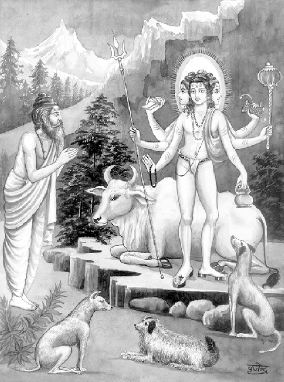
अवधूत भगवान् दत्तात्रेय द्वारा आत्मतत्त्वका निरूपण
आत्मतत्त्व एवं ब्रह्मतत्त्वका निरूपण, उनका ऐक्य तथा अनुभूति
अवधूत उवाच
ईश्वरानुग्रहादेव पुंसामद्वैतवासना।
महद्भयपरित्राणा विप्राणामुपजायते॥ १॥
अवधूत दत्तात्रेयजी बोले—ईश्वरकी कृपासे ही श्रेष्ठ पुरुषोंको [जन्ममरण-रूपी] महान् भयसे रक्षा करनेवाली अद्वैत वासना उत्पन्न होती है॥ १॥
येनेदं पूरितं सर्वमात्मनैवात्मनात्मनि।
निराकारं कथं वन्दे ह्यभिन्नं शिवमव्ययम्॥ २॥
जिस आत्माके द्वारा निश्चय ही अपनेमें यह सम्पूर्ण जगत् परिव्याप्त हो रहा है, उस निराकार आत्मतत्त्वकी वन्दना मैं किस प्रकार करूँ, क्योंकि वह [जीवसे] अभिन्न, कल्याणस्वरूप तथा अविनाशी है॥ २॥
पञ्चभूतात्मकं विश्वं मरीचिजलसन्निभम्।
कस्याप्यहो नमस्कुर्यामहमेको निरञ्जन:॥ ३॥
पाँच भूतों [पृथ्वी, जल, अग्नि, वायु एवं आकाश)-से निर्मित यह जगत् मृगतृष्णाके जलके समान [मिथ्या] है। मायामलसे रहित मैं एक हूँ तो फिर किसको नमस्कार करूँ?॥ ३॥
आत्मैव केवलं सर्वं भेदाभेदो न विद्यते।
अस्ति नास्ति कथं ब्रूयां विस्मय: प्रतिभाति मे॥ ४॥
[सम्पूर्ण ब्रह्माण्डमें] सब कुछ एकमात्र आत्मा ही है। इसमें भेद तथा अभेद दोनों ही नहीं है। यह है अथवा नहीं है—यह मैं कैसे कहूँ; मुझे विस्मय प्रतीत हो रहा है॥ ४॥
वेदान्तसारसर्वस्वं ज्ञानविज्ञानमेव च।
अहमात्मा निराकार: सर्वव्यापी स्वभावत:॥ ५॥
वेदान्तका सार तथा ज्ञान-विज्ञान इतना ही है कि मैं स्वभावसे ही सर्वव्यापी निराकार आत्मा (ब्रह्मतत्त्व) हूँ॥ ५॥
यो वै सर्वात्मको देवो निष्कलो गगनोपम:।
स्वभावनिर्मल: शुद्ध: स एवाहं न संशय:॥ ६॥
जो सर्वरूप परमात्मा हैं, वे निश्चय ही अखण्ड, आकाशतुल्य, स्वभावसे निर्मल तथा शुद्ध हैं। मैं वही [चेतन ब्रह्म] हूँ; इसमें सन्देह नहीं है॥ ६॥
अहमेवाव्ययोऽनन्त: शुद्धविज्ञानविग्रह:।
सुखं दु:खं न जानामि कथं कस्यापि वर्तते॥ ७॥
मैं निश्चय ही नाशरहित, अनन्त तथा शुद्ध विज्ञानस्वरूप हूँ। मैं नहीं जानता कि यह सुख-दु:ख किसीको भी किस प्रकार हो सकता है॥ ७॥
न मानसं कर्म शुभाशुभं मे
न कायिकं कर्म शुभाशुभं मे।
न वाचिकं कर्म शुभाशुभं मे
ज्ञानामृतं शुद्धमतीन्द्रियोऽहम्॥ ८॥
[कोई भी] मानसिक कर्म मेरे लिये शुभ अथवा अशुभ नहीं है, कायिक कर्म मेरे लिये शुभ अथवा अशुभ नहीं है और वाचिक कर्म मेरे लिये शुभ अथवा अशुभ नहीं है। मैं तो ज्ञानामृत, शुद्ध तथा इन्द्रियातीत हूँ॥ ८॥
मनो वै गगनाकारं मनो वै सर्वतोमुखम्।
मनोऽतीतं मन: सर्वं न मन: परमार्थत:॥ ९॥
मन आकाशके आकारवाला है, मनकी गति सभी ओर है, मन सबसे परे है और मन ही सब कुछ है, किंतु परमार्थकी दृष्टिसे मन कुछ भी नहीं है॥ ९॥
अहमेकमिदं सर्वं व्योमातीतं निरन्तरम्।
पश्यामि कथमात्मानं प्रत्यक्षं वा तिरोहितम्॥ १०॥
मैं एक हूँ और यह दृश्यमान सर्वरूप भी मैं ही हूँ। मैं आकाशसे भी अतीत हूँ तथा असीम हूँ। मैं इस आत्माको प्रत्यक्ष अथवा अप्रत्यक्ष किस प्रकार देखूँ?॥ १०॥
त्वमेवमेकं हि कथं न बुध्यसे
समं हि सर्वेषु विमृष्टमव्ययम्।
सदोदितोऽसि त्वमखण्डित: प्रभो
दिवा च नक्तं च कथं हि मन्यसे॥ ११॥
वस्तुत: तुम एक ही हो ऐसा क्यों नहीं समझते? सम्पूर्ण शरीरोंमें तुम (आत्मारूपसे) एक समान व्याप्त हो। तुम शाश्वत तथा अव्यय हो। हे प्रभो! तुम सर्वदा प्रकाशमान हो और भेदरहित हो। [निरन्तर प्रकाशमान होनेके कारण] तुम [उदयास्तरूप] दिन तथा रातको किस प्रकार मान सकते हो?॥ ११॥
आत्मानं सततं विद्धि सर्वत्रैकं निरन्तरम्।
अहं ध्याता परं ध्येयमखण्डं खण्डॺते कथम्॥ १२॥
[हे वत्स!] आत्मा (स्वयं)-को सर्वदा सर्वत्र एक तथा अनन्त जानो। मैं ध्यान करनेवाला हूँ तथा अन्य कोई ध्यानका विषय है—(यदि तुम ऐसा कहते हो) तो फिर उस भेदरहित आत्माको भेदयुक्त कैसे किया जा सकता है?॥ १२॥
न जातो न मृतोऽसि त्वं न ते देह: कदाचन।
सर्वं ब्रह्मेति विख्यातं ब्रवीति बहुधा श्रुति:॥ १३॥
[हे शिष्य!] वास्तवमें तुम न तो उत्पन्न होते हो और न मरते ही हो; न तो यह देह ही कभी तुम्हारा है। सम्पूर्ण जगत् ब्रह्म ही है—ऐसा प्रसिद्ध है और श्रुति भी अनेक प्रकारसे ऐसा ही कहती है॥ १३॥
स बाह्याभ्यन्तरोऽसि त्वं शिव: सर्वत्र सर्वदा।
इतस्तत: कथं भ्रान्त: प्रधावसि पिशाचवत्॥ १४॥
[हे शिष्य!] [सम्पूर्ण प्राणियोंके] बाहर तथा भीतर रहनेवाला, कल्याणस्वरूप, सर्वत्र सभी कालोंमें विद्यमान जो चेतन तत्त्व है, वह तुम ही हो। [अत: उसकी प्राप्तिके लिये] भ्रमित होकर तुम [व्यर्थ ही] पिशाचकी भाँति इधर-उधर क्यों दौड़ते हो?॥ १४॥
संयोगश्च वियोगश्च वर्तते न च ते न मे।
न त्वं नाहं जगन्नेदं सर्वमात्मैव केवलम्॥ १५॥
संयोग तथा वियोग न तुम्हारेमें है और न तो मुझमें ही है। [वस्तुत:] न तुम हो, न मैं हूँ और न तो यह जगत् ही है; केवल आत्मा ही सब कुछ है॥ १५॥
शब्दादिपञ्चकस्यास्य नैवासि त्वं न ते पुन:।
त्वमेव परमं तत्त्वमत: किं परितप्यसे॥ १६॥
शब्द आदि (शब्द, स्पर्श, रूप, रस, गन्ध) पाँच विषयोंके साथ तुम्हारा सम्बन्ध नहीं है और तुम्हारे साथ इनका भी सम्बन्ध नहीं है। तुम ही परमतत्त्व हो, अत: तुम क्यों सन्तप्त होते हो?॥ १६॥
जन्म मृत्युर्न ते चित्तं बन्धमोक्षौ शुभाशुभौ।
कथं रोदिषि रे वत्स नामरूपं न ते न मे॥ १७॥
जन्म-मृत्यु, बन्धन-मोक्ष और शुभ-अशुभ—ये तुम्हारे नहीं हैं, ये चित्तके धर्म हैं, हे वत्स! तुम क्यों रोते हो; ये नाम तथा रूप तुम्हारे भी नहीं हैं और मेरे भी नहीं हैं॥ १७॥
अहो चित्त कथं भ्रान्त: प्रधावसि पिशाचवत्।
अभिन्नं पश्य चात्मानं रागत्यागात्सुखी भव॥ १८॥
हे चित्त! तुम भ्रमित होकर पिशाचकी भाँति क्यों दौड़ रहे हो? तुम आत्माको भेदरहित देखो और रागका त्याग करके सुखी हो जाओ॥ १८॥
त्वमेव तत्त्वं हि विकारवर्जितं
निष्कम्पमेकं हि विमोक्षविग्रहम्।
न ते च रागो ह्यथवा विराग:
कथं हि सन्तप्यसि कामकामत:॥ १९॥
तुम वास्तवमें विकारहीन, निश्चल तथा मोक्षस्वरूप [परम] तत्त्व हो। तुम्हें राग अथवा विराग भी नहीं है; तब तुम विषय-भोगोंकी कामनासे सन्तप्त क्यों होते हो?॥ १९॥
वदन्ति श्रुतय: सर्वा निर्गुणं शुद्धमव्ययम्।
अशरीरं समं तत्त्वं तन्मां विद्धि न संशय:॥ २०॥
सभी श्रुतियाँ परमतत्त्वको निर्गुण, शुद्ध, नाशरहित, शरीररहित और सबमें समरूप कहती हैं; उसे ही तुम आत्मस्वरूप जानो, इसमें सन्देह नहीं है॥ २०॥
साकारमनृतं विद्धि निराकारं निरन्तरम्।
एतत्तत्त्वोपदेशेन न पुनर्भवसम्भव:॥ २१॥
साकार (पदार्थों)-को मिथ्या जानो और निराकारको शाश्वत समझो। इस तत्त्वोपदेशको धारण करनेसे [इस संसारमें] पुनर्जन्म नहीं होता है॥ २१॥
एकमेव समं तत्त्वं वदन्ति हि विपश्चित:।
रागत्यागात्पुनश्चित्तमेकानेकं न विद्यते॥ २२॥
विद्वज्जन एक ही आत्मतत्त्वको समरूप कहते हैं। रागका त्याग कर देनेसे पुन: चित्तमें द्वैत-अद्वैत (-का प्रपंच) नहीं रहता है॥ २२॥
अनात्मरूपं च कथं समाधि-
रात्मस्वरूपं च कथं समाधि:।
अस्तीति नास्तीति कथं समाधि-
र्मोक्षस्वरूपं यदि सर्वमेकम्॥ २३॥
अनात्मस्वरूपको समाधि कैसे हो सकती है और आत्मस्वरूपको भी समाधिका क्या प्रयोजन है? आत्मा है अथवा आत्मा नहीं है—इन दोनों ही स्थितियोंमें समाधि सम्भव नहीं है; यदि सभी मोक्षस्वरूप और एक हैं तो समाधिकी क्या आवश्यकता है?॥ २३॥
विशुद्धोऽसि समं तत्त्वं विदेहस्त्वमजोऽव्यय:।
जानामीह न जानामीत्यात्मानं मन्यसे कथम्॥ २४॥
[हे शिष्य!] तुम विशुद्ध, समरस, देहरहित, जन्मरहित तथा अव्यय आत्मतत्त्व हो। ‘इस लोकमें मैं आत्माको जानता हूँ अथवा नहीं जानता हूँ’—ऐसा तुम क्यों मानते हो?॥ २४॥
तत्त्वमस्यादिवाक्यैश्च स्वात्मा हि प्रतिपादित:।
नेति नेति श्रुतिर्ब्रूयादनृतं पाञ्चभौतिकम्॥ २५॥
‘तत्त्वमसि’ आदि वचनोंके द्वारा अपनी आत्माका ही प्रतिपादन किया गया है और श्रुति भी जो ‘नेति-नेति’ का उद्घोष करती है, उसका तात्पर्य यही है कि यह पांचभौतिक जगत् मिथ्या है॥ २५॥
आत्मन्येवात्मना सर्वं त्वया पूर्णं निरन्तरम्।
ध्याता ध्यानं न ते चित्तं निर्लज्जं ध्यायते कथम्॥ २६॥
तुम्हारे द्वारा सब कुछ आत्मामें निरन्तर आत्मासे ही पूर्ण हो रहा है। ध्यान करनेवाले तथा ध्यानकी तुम्हें आवश्यकता ही नहीं है; तो फिर यह लज्जारहित चित्त ध्यान कैसे करता है?॥ २६॥
शिवं न जानामि कथं वदामि
शिवं न जानामि कथं भजामि।
अहं शिवश्चेत्परमार्थतत्त्वं
समस्वरूपं गगनोपमं च॥ २७॥
मैं कल्याणस्वरूप ब्रह्मको नहीं जानता हूँ तो उसका वर्णन कैसे कर सकता हूँ, मैं उसे नहीं जानता हूँ तो उसका भजन कैसे कर सकता हूँ; मैं ही कल्याणस्वरूप, परमार्थस्वरूप, समस्वरूप और आकाशतुल्य ब्रह्म हूँ (तो भजन आदिकी क्या आवश्यकता?)॥ २७॥
नाहं तत्त्वं समं तत्त्वं कल्पनाहेतुवर्जितम्।
ग्राह्यग्राहकनिर्मुक्तं स्वसंवेद्यं कथं भवेत्॥ २८॥
मैं महत् आदि तत्त्व नहीं हूँ और साम्यावस्थारूप प्रकृति तत्त्व भी नहीं हूँ। मैं कल्पना तथा हेतुसे रहित हूँ और ग्राह्य-ग्राहक भावसे निर्मुक्त हूँ; ऐसी स्थितिमें स्वसंवेद्यता भी कैसे सम्भव है?॥ २८॥
अनन्तरूपं न हि वस्तु किञ्चित्
तत्त्वस्वरूपं न हि वस्तु किञ्चित्।
आत्मैकरूपं परमार्थतत्त्वं
न हिंसको वापि न चाप्यहिंसा॥ २९॥
कोई भी वस्तु अनन्तरूप नहीं है और कोई भी वस्तु तत्त्वस्वरूप नहीं है; वस्तुत: आत्मा ही एकरूप परमतत्त्वके रूपमें अधिष्ठित है। [अद्वैत भावकी स्थितिमें] न कोई हिंसक है और न अहिंसाकी ही भावना रहती है॥ २९॥
विशुद्धोऽसि समं तत्त्वं विदेहमजमव्ययम्।
विभ्रमं कथमात्मार्थे विभ्रान्तोऽहं कथं पुन:॥ ३०॥
तुम विशुद्ध हो; देहरहित, जन्मरहित, अव्यय तथा समरस तत्त्व हो। आत्माके विषयमें तुम्हें भ्रान्ति क्यों है? तुम कैसे कह सकते हो कि मैं भ्रान्तियुक्त हूँ?॥ ३०॥
घटे भिन्ने घटाकाशं सुलीनं भेदवर्जितम्।
शिवेन मनसा शुद्धो न भेद: प्रतिभाति मे॥ ३१॥
घटके नष्ट हो जानेपर घटाकाश (घटके भीतरका आकाश) महाकाशमें पूरी तरह विलीन हो जाता है और भेदरहित हो जाता है। परमतत्त्वमें शुद्ध मनके द्वारा किसी भेदकी प्रतीति नहीं होती है॥ ३१॥
न घटो न घटाकाशो न जीवो जीवविग्रह:।
केवलं ब्रह्म संविद्धि वेद्यवेदकवर्जितम्॥ ३२॥
[उस चेतन ब्रह्ममें उपाधिरूप] घट नहीं है, घटाकाश भी नहीं है, [अन्त:करणरूपी उपाधिके अभावसे] जीव भी नहीं है और जीवका विग्रह भी नहीं है। अत: ज्ञेय-ज्ञाताके भेदसे रहित एकमात्र उस परब्रह्मको भली-भाँति जानो॥ ३२॥
सर्वत्र सर्वदा सर्वमात्मानं सततं ध्रुवम्।
सर्वं शून्यमशून्यं च तन्मां विद्धि न संशय:॥ ३३॥
आत्माको सर्वत्र, सभी कालोंमें विद्यमान, सर्वरूप, सतत तथा शाश्वत जानो। सभी शून्य तथा अशून्य (पदार्थों)-को निस्संदेह आत्मस्वरूप समझो॥ ३३॥
वेदा न लोका न सुरा न यज्ञा
वर्णाश्रमौ नैव कुलं न जाति:।
न धूममार्गो न च दीप्तिमार्गो
ब्रह्मैकरूपं परमार्थतत्त्वम्॥ ३४॥
वस्तुत: न वेद हैं, न लोक हैं, न देवता हैं, न यज्ञ हैं, न वर्णतथा आश्रम हैं, न कुल है, न जाति है, न धूममार्ग (दक्षिणायन) है और न दीप्तिमार्ग (उत्तरायण) है; एकमात्र ब्रह्म ही परमार्थतत्त्व है॥ ३४॥
व्याप्यव्यापकनिर्मुक्त: त्वमेक: सफलो यदि।
प्रत्यक्षं चापरोक्षं च ह्यात्मानं मन्यसे कथम्॥ ३५॥
यदि तुम व्याप्य तथा व्यापक भावसे रहित, एक रूपसे (अपनेको जाननेमें सफल) हो तो तुम आत्माको प्रत्यक्ष और परोक्ष कैसे मानते हो?॥ ३५॥
अद्वैतं केचिदिच्छन्ति द्वैतमिच्छन्ति चापरे।
समं तत्त्वं न विन्दन्ति द्वैताद्वैतविवर्जितम्॥ ३६॥
कुछ लोग अद्वैतकी इच्छा करते हैं और कुछ अन्य लोग द्वैतकी इच्छा करते हैं; वे सभी लोग द्वैताद्वैतसे रहित समतत्त्वको नहीं जानते हैं॥ ३६॥
श्वेतादिवर्णरहितं शब्दादिगुणवर्जितम्।
कथयन्ति कथं तत्त्वं मनोवाचामगोचरम्॥ ३७॥
परब्रह्म श्वेत आदि वर्णोंसे रहित है, शब्द आदि गुणोंसे रहित है और मन तथा वाणीसे परे है; तब लोग उस परब्रह्मका वर्णन कैसे करते हैं?॥ ३७॥
यदानृतमिदं सर्वं देहादि गगनोपमम्।
तदा हि ब्रह्म संवेत्ति न ते द्वैतपरम्परा॥ ३८॥
जब कोई इस सम्पूर्ण जगत्-प्रपंचको मिथ्या तथा शरीर आदिको आकाशतुल्य (मायामात्र) जान लेता है, तभी वह ब्रह्मको सम्यक् रूपसे जानता है। (इस अवस्थामें) उसे द्वैतभावना नहीं रहेगी॥ ३८॥
परेण सहजात्मापि ह्यभिन्न: प्रतिभाति मे।
व्योमाकारं तथैवैकं ध्याता ध्यानं कथं भवेत्॥ ३९॥
परब्रह्मके साथ अनादि आत्मा मुझे भेदरहित प्रतीत होता है। वह गगनाकार, व्यापक और एकरूप है। इसमें ध्याता और ध्यानका व्यवहार कैसे हो सकता है?॥ ३९॥
यत्करोमि यदश्नामि यज्जुहोमि ददामि यत्।
एतत्सर्वं न मे किञ्चिद्विशुद्धोऽहमजोऽव्यय:॥ ४०॥
मैं जो कुछ करता हूँ, जो कुछ खाता हूँ, जो कुछ हवन करता हूँ और जो कुछ देता हूँ—यह सब कुछ भी नहीं है; क्योंकि मैं शुद्ध, जन्मरहित तथा अव्यय हूँ॥ ४०॥
सर्वं जगद्विद्धि निराकृतीदं
सर्वं जगद्विद्धि विकारहीनम्।
सर्वं जगद्विद्धि विशुद्धदेहं
सर्वं जगद्विद्धि शिवैकरूपम्॥ ४१॥
तुम सम्पूर्ण जगत्को आकाररहित जानो, समस्त जगत्को विकाररहित जानो, समग्र जगत्को ब्रह्मका विग्रह जानो और सम्पूर्ण जगत्को एकमात्र कल्याणस्वरूप जानो॥ ४१॥
तत्त्वं त्वं हि न सन्देह: किं जानाम्यथवा पुन:।
असंवेद्यं स्वसंवेद्यमात्मानं मन्यसे कथम्॥ ४२॥
तुम वही परमतत्त्व हो, इसमें सन्देह नहीं है। तब तुम यह क्यों सोचते हो कि मैं आत्माको जानता हूँ अथवा नहीं जानता हूँ? जो आत्मा किसीसे भी न जाननेयोग्य है, उसे अपनेसे जाननेयोग्य कैसे मानते हो?॥ ४२॥
मायामाया कथं तात छायाछाया न विद्यते।
तत्त्वमेकमिदं सर्वं व्योमाकारं निरञ्जनम्॥ ४३॥
हे तात! अन्धकार तथा प्रकाश एक साथ विद्यमान नहीं रह सकते, अत: ब्रह्ममें माया तथा अमाया कैसे साथ रह सकती है? यह सम्पूर्ण दृश्यमान जगत् आकाशरूप है। मायामलसे रहित वह परमब्रह्म तुम्हीं हो॥ ४३॥
आदिमध्यान्तमुक्तोऽहं न बद्धोऽहं कदाचन।
स्वभावनिर्मल: शुद्ध इति मे निश्चिता मति:॥ ४४॥
मैं आदि, मध्य और अन्तसे रहित हूँ; मैं कभी भी बद्ध नहीं हूँ। मैं स्वभावसे निर्मल और शुद्ध हूँ—ऐसी मेरी निश्चित बुद्धि है॥ ४४॥
महदादि जगत्सर्वं न किञ्चित्प्रतिभाति मे।
ब्रह्मैव केवलं सर्वं कथं वर्णाश्रमस्थिति:॥ ४५॥
महत् आदि तत्त्वोंसे बना यह सम्पूर्ण जगत् मुझको कुछ भी भासित नहीं होता है; यह सब केवल ब्रह्म ही है। वर्ण तथा आश्रमोंकी (पृथक्) स्थिति कैसे सिद्ध हो सकती है?॥ ४५॥
जानामि सर्वथा सर्वमहमेको निरन्तरम्।
निरालम्बमशून्यं च शून्यं व्योमादिपञ्चकम्॥ ४६॥
मैं अपनेको हर प्रकारसे एक शाश्वत, निरालम्ब तथा पूर्ण जानता हूँ। आकाश आदि पाँच भूत शून्य (अवास्तविक) हैं॥ ४६॥
न षण्ढो न पुमान्न स्त्री न बोधो नैव कल्पना।
सानन्दो वा निरानन्दमात्मानं मन्यसे कथम्॥ ४७॥
आत्मा न पुरुष है, न स्त्री है और न तो नपुंसक ही है। यह ज्ञान तथा कल्पना भी नहीं है। तुम आत्माको आनन्दयुक्त अथवा आनन्दरहित भी कैसे मानते हो?॥ ४७॥
षडङ्गयोगान्न तु नैव शुद्धं
मनोविनाशान्न तु नैव शुद्धम्।
गुरूपदेशान्न तु नैव शुद्धं
स्वयं च तत्त्वं स्वयमेव शुद्धम्॥ ४८॥
षडंगयोगसे भी आत्मा शुद्ध नहीं होता, मनका नाश होनेसे भी यह शुद्ध नहीं होता और गुरुके उपदेशसे भी यह शुद्ध नहीं होता; आत्मा तो परमतत्त्व है और स्वयं शुद्ध ही है॥ ४८॥
न हि पञ्चात्मको देहो विदेहो वर्तते न हि।
आत्मैव केवलं सर्वं तुरीयं च त्रयं कथम्॥ ४९॥
आत्मा पाँच भूतोंसे निर्मित देह नहीं है और यह देहरहित भी नहीं है। वस्तुत: सम्पूर्ण जगत्-प्रपंच आत्मा ही है, (आत्मासे भिन्न कुछ नहीं है) तब तीन अवस्थाएँ (जाग्रत् , स्वप्न, सुषुप्ति) तथा तुरीयावस्था—ये कैसे हो सकती हैं?॥ ४९॥
न बद्धो नैव मुक्तोऽहं न चाहं ब्रह्मण: पृथक्।
न कर्ता न च भोक्ताहं व्याप्यव्यापकवर्जित:॥ ५०॥
मैं (आत्मा) बद्ध नहीं हूँ, मैं मुक्त भी नहीं हूँ और ब्रह्मसे पृथक् नहीं हूँ। मैं न तो कर्ता हूँ, न भोक्ता हूँ। मैं तो व्याप्य तथा व्यापक भावसे रहित हूँ॥ ५०॥
यथा जलं जले न्यस्तं सलिलं भेदवर्जितम्।
प्रकृतिं पुरुषं तद्वदभिन्नं प्रतिभाति मे॥ ५१॥
जिस प्रकार जलमें डाला गया जल समरूप (जलके रूपमें) हो जाता है, उसी प्रकार प्रकृति तथा पुरुष भी मुझे अभिन्नरूप ही प्रतीत होते हैं॥ ५१॥
यदि नाम न मुक्तोऽसि न बद्धोऽसि कदाचन।
साकारं च निराकारमात्मानं मन्यसे कथम्॥ ५२॥
यदि ऐसी बात है कि तुम मुक्त नहीं हो तो तुम कभी बद्ध भी नहीं हो। फिर तुम आत्माको साकार अथवा निराकार किस प्रकार मानते हो?॥ ५२॥
जानामि ते परं रूपं प्रत्यक्षं गगनोपमम्।
यथा परं हि रूपं यन्मरीचिजलसन्निभम्॥ ५३॥
मैं तुम्हारे परमरूपको जानता हूँ, जो प्रत्यक्ष तथा आकाशतुल्य (व्यापक) है। साथ ही तुम्हारे अपररूपको भी जानता हूँ, जो मृगतृष्णाके जलके समान है॥ ५३॥
न गुरुर्नोपदेशश्च न चोपाधिर्न मे क्रिया।
विदेहं गगनं विद्धि विशुद्धोऽहं स्वभावत:॥ ५४॥
मेरे लिये न कोई गुरु है, न उपदेश है, न उपाधि है और न तो क्रिया ही है। तुम मुझे देहरहित तथा आकाशतुल्य व्यापक जानो। मैं स्वभावसे ही पूर्णतया शुद्ध हूँ॥ ५४॥
विशुद्धोऽस्यशरीरोऽसि न ते चित्तं परात्परम्।
अहं चात्मा परं तत्त्वमिति वक्तुं न लज्जसे॥ ५५॥
तुम विशुद्ध, देहरहित हो। यह चित्त तुम्हारा नहीं है, तुम परम तत्त्व हो, अत: ‘मैं आत्मा हूँ-परमतत्त्व हूँ’—ऐसा कहनेमें तुम्हें लज्जा नहीं आती॥ ५५॥
कथं रोदिषि रे चित्त ह्यात्मैवात्मात्मना भव
पिब वत्स कलातीतमद्वैतं परमामृतम्॥ ५६॥
हे चित्त! तुम रुदन क्यों करते हो, तुम आत्मा ही हो। तुम स्वयं आत्मस्वरूप हो जाओ। हे वत्स! तुम कलारहित अद्वैतरूपी परम अमृतका पान करो॥ ५६॥
नैव बोधो न चाबोधो न बोधाबोध एव च।
यस्येदृश: सदा बोध: स बोधो नान्यथा भवेत्॥ ५७॥
आत्मा न ज्ञानरूप है, न अज्ञानरूप और न तो ज्ञान-अज्ञान उभयरूप ही है। जिसे इस प्रकारका सर्वदा ज्ञान है, उसका यह ज्ञान मिटता नहीं॥ ५७॥
ज्ञानं न तर्को न समाधियोगो
न देशकालौ न गुरूपदेश:।
स्वभावसंवित्तिरहं च तत्त्व-
माकाशकल्पं सहजं ध्रुवं च॥ ५८॥
मैं ज्ञान नहीं हूँ, तर्क नहीं हूँ, समाधियोगरूप नहीं हूँ, देश-काल नहीं हूँ और गुरुका उपदेशरूप भी नहीं हूँ। मैं स्वभावसे ही ज्ञानस्वरूप, आकाशतुल्य, सहज तथा शाश्वत परमतत्त्व हूँ॥ ५८॥
न जातोऽहं मृतो वापि न मे कर्म शुभाशुभम्।
विशुद्धं निर्गुणं ब्रह्म बन्धो मुक्ति: कथं मम॥ ५९॥
मैं न तो कभी उत्पन्न हुआ हूँ और न तो कभी मृत ही हुआ हूँ। मुझे शुभ-अशुभ कोई भी कर्म व्याप्त नहीं करता। मैं विशुद्ध तथा निर्गुण ब्रह्म हूँ तो फिर मेरा बन्धन तथा मोक्ष कैसा?॥ ५९॥
यदि सर्वगतो देव: स्थिर: पूर्णो निरन्तर:।
अन्तरं हि न पश्यामि स बाह्याभ्यन्तर: कथम्॥ ६०॥
जब आत्मा सर्वव्यापी, प्रकाशमान, निश्चल, पूर्ण तथा निरन्तर है, इसलिये मुझे अन्तरकी प्रतीति नहीं होती। वह आत्मतत्त्व बाहर या भीतर कैसे (कहा जा सकता) है?॥ ६०॥
स्फुरत्येव जगत्कृत्स्नमखण्डितनिरन्तरम्।
अहो मायामहामोहौ द्वैताद्वैतविकल्पना॥ ६१॥
[परब्रह्ममें ही] सम्पूर्ण जगत् अखण्डित तथा सतत रूपमें स्फुरित हो रहा है। आश्चर्य है कि माया, महामोह और द्वैत-अद्वैतकी कल्पना—ये सब भी उसीमें स्फुरित हो रहे हैं॥ ६१॥
साकारं च निराकारं नेति नेतीति सर्वदा।
भेदाभेदविनिर्मुक्तो वर्तते केवल: शिव:॥ ६२॥
स्थूल तथा सूक्ष्म जो भी सम्पूर्ण जगत् दृश्यमान है, वह नहीं है-नहीं है—ऐसा श्रुति कहती है। भेद-अभेदसे रहित तथा कल्याणस्वरूप एकमात्र आत्मतत्त्व ही सर्वदा विद्यमान है॥ ६२॥
न ते च माता च पिता च बन्धु-
र्न ते च पत्नी न सुतश्च मित्रम्।
न पक्षपातो न विपक्षपात:
कथं हि सन्तप्तिरियं हि चित्ते॥ ६३॥
तुम्हारी न तो माता है, न कोई पिता है, न बन्धु है, न पत्नी है, न पुत्र है, न मित्र है, न पक्षपाती है और विपक्षपाती भी नहीं है; तब तुम्हारे चित्तमें यह सन्ताप कैसा?॥ ६३॥
दिवानक्तं न ते चित्ते उदयास्तमयौ न हि।
विदेहस्य शरीरत्वं कल्पयन्ति कथं बुधा:॥ ६४॥
[हे तात!] तुम्हारे (सदा प्रकाशमान) चेतनस्वरूपमें उदय तथा अस्त होनेवाले दिन तथा रात नहीं हैं। विद्वान् लोग देहरहित (आत्मतत्त्व)-के शरीरत्वकी कल्पना क्यों करते हैं?॥ ६४॥
नाविभक्तं विभक्तं च न हि दु:खसुखादि च।
न हि सर्वमसर्वं च विद्धि चात्मानमव्ययम्॥ ६५॥
आत्मा न तो विभक्त है और न अविभक्त, यह सुख-दु:खसे भी युक्त नहीं है, यह न तो पूर्ण है और न अपूर्ण; इस (द्वन्द्वरहित) शाश्वत आत्माको जानो॥ ६५॥
नाहं कर्ता न भोक्ता च न मे कर्म पुराधुना।
न मे देहो विदेहो वा निर्ममेति ममेति किम्॥ ६६॥
मैं न तो [कर्मोंका] कर्ता हूँ और न [उनके फलोंका] भोग करनेवाला हूँ। कर्म न तो मेरे पूर्व जन्मका है और न इसी जन्मका है। मेरा देह नहीं है और मैं देहसे रहित भी नहीं हूँ। मैं ममतारहित अथवा ममतायुक्त भी कैसे हो सकता हूँ॥ ६६॥
न मे रागादिको दोषो दु:खं देहादिकं न मे।
आत्मानं विद्धि मामेकं विशालं गगनोपमम्॥ ६७॥
राग आदि दोष मेरे नहीं हैं और देह आदिसे सम्बन्धित दु:ख भी मेरे नहीं हैं। मुझको एकरूप, विराट् तथा आकाशतुल्य आत्मा जानो॥ ६७॥
सखे मन: किं बहुजल्पितेन
सखे मन: सर्वमिदं वितर्क्यम्।
यत्सारभूतं कथितं मया ते
त्वमेव तत्त्वं गगनोपमोऽसि॥ ६८॥
हे मित्र मन! अधिक कहनेसे क्या प्रयोजन है? तुम्हें इस सब पर मनन करना चाहिये। जो सारभूत है, उसे मैंने तुमको बता दिया कि तुम वास्तवमें परमतत्त्व हो और आकाशतुल्य व्यापक हो॥ ६८॥
येन केनापि भावेन यत्र कुत्र मृता अपि।
योगिनस्तत्र लीयन्ते घटाकाशमिवाम्बरे॥ ६९॥
योगिजन जिस किसी भी भावसे तथा जहाँ कहीं भी मृत्युको प्राप्त होनेपर उसी परब्रह्ममें [वैसे ही] विलीन हो जाते हैं, जैसे [घटके टूट जानेपर] घटाकाश महाकाशमें विलीन हो जाता है॥ ६९॥
तीर्थे चान्त्यजगेहे वा नष्टस्मृतिरपि त्यजन्।
समकाले तनुं मुक्त: कैवल्यव्यापको भवेत्॥ ७०॥
तीर्थमें अथवा चाण्डालके घरमें अचेतावस्थामें भी देहका त्याग करता हुआ योगी तत्क्षण मुक्त होकर व्यापक ब्रह्मस्वरूप हो जाता है॥ ७०॥
धर्मार्थकाममोक्षांश्च द्विपदादिचराचरम्।
मन्यन्ते योगिन: सर्वं मरीचिजलसन्निभम्॥ ७१॥
योगिजन धर्म, अर्थ, काम तथा मोक्षको तथा द्विपद आदि जंगम प्राणियों और [वृक्ष, पर्वत] आदि स्थावर पदार्थोंको मृगतृष्णाके जलके समान [मिथ्या] मानते हैं॥ ७१॥
अतीतानागतं कर्म वर्तमानं तथैव च।
न करोमि न भुञ्जामि इति मे निश्चला मति:॥ ७२॥
मैं भूत, भविष्य तथा वर्तमान कालके कर्मोंको न तो करता हूँऔर न इनके फलका भोग ही करता हूँ—इस प्रकारकी मेरी दृढ़ बुद्धि है॥ ७२॥
शून्यागारे समरसपूत-
स्तिष्ठन्नेक: सुखमवधूत:।
चरति हि नग्नस्त्यक्त्वा गर्वं
विन्दति केवलमात्मनि सर्वम्॥ ७३॥
समतारूपी रसके द्वारा पवित्र हुआ अवधूत एकान्त स्थानमें सुखपूर्वक अकेला रहता है। अभिमानका त्याग करके वह अनावृत विचरण करता है और केवल अपनेमें ही सबका अनुभव करता है॥ ७३॥
त्रितयतुरीयं नहि नहि यत्र
विन्दति केवलमात्मनि तत्र।
धर्माधर्मौ नहि नहि यत्र
बद्धो मुक्त: कथमिह तत्र॥ ७४॥
जिस जीवन्मुक्तताकी दशामें जाग्रत्, स्वप्न, सुषुप्ति और तुरीय—ये अवस्थाएँ नहीं रह जाती हैं, उस दशामें वह केवल अपने आत्मामें ब्रह्मानन्दको प्राप्त होता है। जिस अवस्थामें धर्म-अधर्मका भाव नहीं रहता, उस अवस्थामें बद्ध और मुक्तका भाव कैसे रह सकता है?॥ ७४॥
विन्दति विन्दति नहि नहि मन्त्रं
छन्दो लक्षणं नहि नहि तन्त्रम्।
समरसमग्नो भावितपूत:
प्रलपितमेतत्परमवधूत:॥ ७५॥
आत्मरसमें मग्न तथा ध्यानके द्वारा पवित्र हुआ जीवन्मुक्त अवधूत कोई मन्त्र नहीं प्राप्त करता है और न तो किसी छन्दरूपी तन्त्रको ही प्राप्त करता है। उस (परब्रह्मको प्राप्त हुए) अवधूतने ही इस (गीता)-का कथन किया है॥ ७५॥
सर्वशून्यमशून्यं च सत्यासत्यं न विद्यते।
स्वभावभावत: प्रोक्तं शास्त्रसंवित्तिपूर्वकम्॥ ७६॥
सम्पूर्ण जगत् शून्यरूप है और अशून्यरूप भी है। (परब्रह्ममें) न तो सत्य विद्यमान है और न असत्य। अवधूतने अपने अनुभवसे तथा शास्त्रज्ञानके अनुसार इसका वर्णन किया है॥ ७६॥
॥ इति श्रीदत्तात्रेयविरचितायामवधूतगीतायामात्मसंवित्त्युपदेशो नाम प्रथमोऽध्याय:॥ १॥
दूसरा अध्याय
गुणोंकी ग्राहकता, ब्रह्मका स्वरूप, ब्रह्मानुभूति-वर्णन, परमज्ञानप्रदाता गुरुकी प्रशंसा तथा आत्मतत्त्वकी विलक्षणता
अवधूत उवाच
बालस्य वा विषयभोगरतस्य वापि
मूर्खस्य सेवकजनस्य गृहस्थितस्य।
एतद् गुरो: किमपि नैव न चिन्तनीयं
रत्नं कथं त्यजति कोऽप्यशुचौ प्रविष्टम्॥ १॥
अवधूत श्रीदत्तात्रेयजी बोले—बालक, विषय-भोगमें लीन, मूर्ख, सेवकजन अथवा गृहस्थ—इस प्रकारके गुरुओंसे कुछ भी लाभ नहीं होता है, ऐसा नहीं सोचना चाहिये; [उनके भी अन्दर निहित गुणोंका ग्रहण अवश्य कर लेना चाहिये।] अपवित्र स्थानमें भी पड़े हुए रत्नको कोई भी मनुष्य कैसे त्याग सकता है?॥ १॥
नैवात्र काव्यगुण एव तु चिन्तनीयो
ग्राह्य: परं गुणवता खलु सार एव।
सिन्दूरचित्ररहिता भुवि रूपशून्या
पारं न किं नयति नौरिह गन्तुकामान्॥ २॥
किसी भी गुरुमें काव्यगुण (वाक्पटुता) पर विचार नहीं करना चाहिये; गुणवान्से केवल सारवस्तुको ग्रहण कर लेना चाहिये। क्या पृथ्वीलोकमें सिन्दूरके चित्रोंसे रहित और सौन्दर्यसे शून्य नौका पार जानेकी इच्छावाले लोगोंको पार नहीं करती है?॥ २॥
प्रयत्नेन विना येन निश्चलेन चलाचलम्।
ग्रस्तं स्वभावत: शान्तं चैतन्यं गगनोपमम्॥ ३॥
बिना प्रयत्न के ही जिस ब्रह्मके द्वारा चल-अचलरूप सम्पूर्ण जगत् व्याप्त है, वह स्वभावसे ही शान्त, चैतन्य तथा आकाशतुल्य व्यापक है॥ ३॥
अयत्नाच्चालयेद्यस्तु एकमेव चराचरम्।
सर्वगं तत्कथं भिन्नमद्वैतं वर्तते मम॥ ४॥
जो व्यापक चेतन बिना प्रयासके अकेला ही चराचर जगत्को संचालित करता है, वह अद्वैत ब्रह्म मुझसे भिन्न कैसे हो सकता है?॥ ४॥
अहमेव परं यस्मात्सारासारतरं शिवम्।
गमागमविनिर्मुक्तं निर्विकल्पं निराकुलम्॥ ५॥
चूँकि मैं ही परमतत्त्व हूँ, अत: सार तथा असारसे भी परे, कल्याणस्वरूप, जन्म-मरणसे मुक्त, विकल्परहित तथा शान्त हूँ॥ ५॥
सर्वावयवनिर्मुक्तं तदहं त्रिदशार्चितम्।
सम्पूर्णत्वान्न गृह्णामि विभागं त्रिदशादिकम्॥ ६॥
वह [सच्चिदानन्दस्वरूप] मैं सभी अवयवोंसे रहित हूँ तथा देवताओंके द्वारा पूजित हूँ। सम्यक् रूपसे पूर्ण होनेके कारण मैं देवता आदिके विभागको ग्रहण नहीं करता हूँ (अर्थात् अपनेसे भिन्न नहीं समझता)॥ ६॥
प्रमादेन न सन्देह: किं करिष्यामि वृत्तिमान्।
उत्पद्यन्ते विलीयन्ते बुद्बुदाश्च यथा जले॥ ७॥
क्या मैं प्रमादवश अन्त:करणकी वृत्तियोंवाला बनता हूँ (नहीं)। नि:सन्देह वृत्तियाँ तो (मुझमें वैसे ही) स्वत: उत्पन्न होती हैं और पुन: विलीन हो जाती हैं; जैसे बुलबुले जलमें (सहज) उत्पन्न होते हैं और उसीमें विलीन हो जाते हैं॥ ७॥
महदादीनि भूतानि समाप्यैवं सदैव हि।
मृदुद्रव्येषु तीक्ष्णेषु गुडेषु कटुकेषु च॥ ८॥
कटुत्वं चैव शैत्यत्वं मृदुत्वं च यथा जले।
प्रकृति: पुरुषस्तद्वदभिन्नं प्रतिभाति मे॥ ९॥
जिस प्रकार मृदु द्रव्योंमें मृदुता, तीक्ष्ण द्रव्योंमें तीक्ष्णता, गुड़ आदि मधुर द्रव्योंमें मधुरता तथा कटु द्रव्योंमें कटुत्व और जलमें शीतलता तथा मृदुत्व अपने-अपने पदार्थोंमें अभेद रूपसे विद्यमान रहते हैं, उसी प्रकार महत्-अहंकार आदि तत्त्वोंसे लेकर स्थूल महाभूतपर्यन्त सबका अपने कारणोंमें लय करके जो सम्पूर्ण तत्त्वोंकी कारणभूत प्रकृति है, वह भी पुरुषमें विलीन हो जाती है; अत: प्रकृति तथा पुरुष मुझे भेदरहित प्रतीत होते हैं॥ ८-९॥
सर्वाख्यारहितं यद्वत्सूक्ष्मात्सूक्ष्मतरं परम्।
मनोबुद्धीन्द्रियातीतमकलङ्कं जगत्पतिम्॥ १०॥
ईदृशं सहजं यत्र अहं तत्र कथं भवेत्।
त्वमेव हि कथं तत्र कथं तत्र चराचरम्॥ ११॥
वह चैतन्य ब्रह्म सम्पूर्ण संज्ञाओंसे रहित है, सूक्ष्मसे भी सूक्ष्म, अतिश्रेष्ठ, मन-बुद्धि तथा इन्द्रियोंसे अतीत, निष्कलंक तथा जगन्नियन्ता है। जिसका इस प्रकारका स्वाभाविक स्वरूप है, उसमें ‘मैं’ और ‘तुम’ का भेद कैसे सम्भव है और फिर उसमें चराचर जगत् भी कैसे सम्भव है?॥ १०-११॥
गगनोपमं तु यत्प्रोक्तं तदेव गगनोपमम्।
चैतन्यं दोषहीनं च सर्वज्ञं पूर्णमेव च॥ १२॥
जिसे गगनकी उपमावाला कहा गया है, वास्तवमें वही गगनके तुल्य (विराट्) है; वह चैतन्य दोषरहित, सर्वज्ञ तथा पूर्ण है॥ १२॥
पृथिव्यां चरितं नैव मारुतेन च वाहितम्।
वारिणा पिहितं नैव तेजोमध्ये व्यवस्थितम्॥ १३॥
वह चेतन ब्रह्म पृथ्वीपर नहीं चलता, वायु उसे ले नहीं जा सकता, जल उसे ढक नहीं सकता और अग्नि उसे जला नहीं सकता॥ १३॥
आकाशं तेन संव्याप्तं न तद्वॺाप्तं च केनचित्।
स बाह्याभ्यन्तरं तिष्ठत्यवच्छिन्नं निरन्तरम्॥ १४॥
उस चेतन ब्रह्मके द्वारा आकाश पूर्ण रूपसे व्याप्त है; वह किसीके भी द्वारा व्याप्त नहीं है। वह बाहर-भीतर सर्वत्र विराजमान है, व्यवधानसे रहित है तथा असीम है॥ १४॥
सूक्ष्मत्वात्तददृश्यत्वान्निर्गुणत्वाच्च योगिभि:।
आलम्बनादि यत्प्रोक्तं क्रमादालम्बनं भवेत्॥ १५॥
सतताभ्यासयुक्तस्तु निरालम्बो यदा भवेत्।
तल्लयाल्लीयते चान्तर्गुणदोषविवर्जित:॥ १६॥
योगियोंके द्वारा जिस चेतन ब्रह्मका आश्रयण करना बताया गया है, उस ब्रह्मके सूक्ष्म, अदृश्य तथा निर्गुण होनेके कारण उसका आश्रयण क्रमश: होना चाहिये। जब साधक निरन्तर अभ्यासरत रहते हुए निरालम्ब हो जाता है और अन्त:करणके गुण-दोषोंसे रहित हो जाता है, तब उसके चित्तका लय हो जानेसे वह भी ब्रह्ममें लीन हो जाता है॥ १५-१६॥
विषविश्वस्य रौद्रस्य मोहमूर्च्छाप्रदस्य च।
एकमेव विनाशाय ह्यमोघं सहजामृतम्॥ १७॥
भयानक तथा अज्ञान एवं भ्रम प्रदान करनेवाले विषरूपी सांसारिक विषयोंके विनाशके लिये यह (ज्ञान) अमोघ तथा सहज अमृतरूप है॥ १७॥
भावगम्यं निराकारं साकारं दृष्टिगोचरम्।
भावाभावविनिर्मुक्तमन्तरालं तदुच्यते॥ १८॥
निराकारको भावगम्य, साकारको दृष्टिका विषय और जो भाव-अभावसे रहित है, उसे अन्तराल कहा जाता है॥ १८॥
बाह्यभावं भवेद्विश्वमन्त: प्रकृतिरुच्यते।
अन्तरादन्तरं ज्ञेयं नारिकेलफलाम्बुवत्॥ १९॥
बाह्य [दृश्यमान स्थूल] पदार्थोंको विश्व कहा जाता है और भीतर विद्यमान तत्त्वको प्रकृति कहा जाता है। नारिकेल फलके भीतर स्थित जलकी भाँति उस सूक्ष्म प्रकृतिके भीतर विद्यमान अतिसूक्ष्म वह ब्रह्म ही जाननेयोग्य है॥ १९॥
भ्रान्तिज्ञानं स्थितं बाह्ये सम्यग्ज्ञानं च मध्यगम्।
मध्यान्मध्यतरं ज्ञेयं नारिकेलफलाम्बुवत्॥ २०॥
बाह्य जगत्-प्रपंचमें स्थित ज्ञान भ्रान्ति ज्ञान है और भीतर स्थित ज्ञान यथार्थ ज्ञान है। नारिकेलके फलके भीतर स्थित जलकी भाँति मध्यसे भी मध्यतर (अतिसूक्ष्म) ब्रह्म ही [वस्तुत:] जाननेयोग्य है॥ २०॥
पौर्णमास्यां यथा चन्द्र एक एवातिनिर्मल:।
तेन तत्सदृशं पश्येद् द्विधा दृष्टिविपर्यय:॥ २१॥
अनेनैव प्रकारेण बुद्धिभेदो न सर्वग:।
दाता च धीरतामेति गीयते नामकोटिभि:॥ २२॥
जैसे पूर्णिमाका अति निर्मल एक ही चन्द्रमा दिखायी देता है, उसी प्रकार आत्मा भी अति निर्मल तथा एक ही है; अत: आत्माको उसी चन्द्रमाके समान एकरूप देखना चाहिये। दो चन्द्रमाका दिखायी देना जैसे नेत्रदोष है, वैसे ही द्वैतभाव रखना भ्रमज्ञान है। इस पूर्वोक्त प्रकारसे ही सर्वगत चेतनके प्रति किसी भी तरह भेदकी कल्पना नहीं हो सकती है। इस ज्ञानके प्रदाता धैर्यवान् गुरुकी करोड़ों नामोंसे प्रशंसा की जाती है॥ २१-२२॥
गुरुप्रज्ञाप्रसादेन मूर्खो वा यदि पण्डित:।
यस्तु सम्बुध्यते तत्त्वं विरक्तो भवसागरात्॥ २३॥
रागद्वेषविनिर्मुक्त: सर्वभूतहिते रत:।
दृढबोधश्च धीरश्च स गच्छेत्परमं पदम्॥ २४॥
मूर्ख अथवा विद्वान्—जो कोई भी यदि गुरुकी प्रज्ञाकी कृपासे परमतत्त्वका बोध प्राप्त कर लेता है तो वह राग-द्वेषसे रहित, सभी प्राणियोंके कल्याणमें रत रहनेवाला, स्थिर ज्ञानवाला और भवसागरसे विरक्त हो जाता है तथा प्रशान्त होकर परम पदको प्राप्त करता है॥ २३-२४॥
घटे भिन्ने घटाकाश आकाशे लीयते यथा।
देहाभावे तथा योगी स्वरूपे परमात्मनि॥ २५॥
जैसे घटका नाश होनेपर घटाकाश (घटके भीतरका आकाश) महाकाशमें विलीन हो जाता है, उसी प्रकार देहका नाश हो जानेपर (जीवन्मुक्त) योगी परमात्माके स्वरूपमें विलीन हो जाता है॥ २५॥
उक्तेयं कर्मयुक्तानां मतिर्यान्तेऽपि सा गति:।
न चोक्ता योगयुक्तानां मतिर्यान्तेऽपि सा गति:॥ २६॥
या गति: कर्मयुक्तानां सा च वागिन्द्रियाद्वदेत्।
योगिनां या गति: क्वापि ह्यकथ्या भवतार्जिता॥ २७॥
कर्मयुक्त मनुष्योंकी जैसी बुद्धि मरण-कालके समय होती है, उनकी वैसी ही गति कही गयी है; किंतु योगियोंकी जैसी मति अन्तकालमें होती है, उनकी वैसी गति नहीं कही गयी है (क्योंकि) कर्मयुक्त मनुष्योंकी जो गति शास्त्रोंमें उल्लिखित है, उसका कथन तो वाणीसे किया जा सकता है, किंतु योगियोंकी जो स्थिति तुमने प्राप्त कर ली है, वह वाणीसे नहीं कही जा सकती॥ २६-२७॥
एवं ज्ञात्वा त्वमुं मार्गं योगिनां नैव कल्पितम्।
विकल्पवर्जनं तेषां स्वयं सिद्धि: प्रवर्तते॥ २८॥
इस प्रकार उन योगियोंके विकल्परहित इस मार्गको जानकर (साधककी) स्वत: सिद्धि हो जाती है; यह मार्ग [कर्मियोंके मार्गकी भाँति] विकल्पयुक्त नहीं है॥ २८॥
तीर्थे वान्त्यजगेहे वा यत्र कुत्र मृतोऽपि वा।
न योगी पश्यते गर्भं परे ब्रह्मणि लीयते॥ २९॥
तीर्थमें अथवा चाण्डालके घरमें अथवा जहाँ-कहीं भी मरनेपर [जीवन्मुक्त] योगी पुन: गर्भमें नहीं जाता है; वह परब्रह्ममें लीन हो जाता है॥ २९॥
सहजमजमचिन्त्यं यस्तु पश्येत् स्वरूपं
घटति यदि यथेष्टं लिप्यते नैव दोषै:।
सकृदपि तदभावात्कर्म किञ्चिन्न कुर्यात्
तदपि न च विबद्ध: संयमी वा तपस्वी॥ ३०॥
जो साधक आत्माके स्वाभाविक, अनादि तथा अचिन्त्य स्वरूपको एक बार भी देख लेता है, तब यदि वह यथेष्ट कर्म करता है तो भी दोषोंसे लिप्त नहीं होता। संयमी या तपस्वी होकर यदि वह कुछ भी कर्म नहीं करता तो भी दोषोंका अभाव हो जानेसे वह किसीसे भी बद्ध नहीं होता॥ ३०॥
निरामयं निष्प्रतिमं निराकृतिं
निराश्रयं निर्वपुषं निराशिषम्।
निर्द्वन्द्वनिर्मोहमलुप्तशक्तिकं
तमीशमात्मानमुपैति शाश्वतम्॥ ३१॥
जीवन्मुक्त योगी विकाररहित, अप्रतिम, निराकार, निरालम्ब देहरहित, इच्छारहित, द्वन्द्वरहित, मोहरहित तथा सर्वशक्तिमान् उस परमेश्वर शाश्वत आत्माको प्राप्त होता है॥ ३१॥
वेदो न दीक्षा न च मुण्डनक्रिया
गुरुर्न शिष्यो न च यन्त्रसम्पद:।
मुद्रादिकं चापि न यत्र भासते
तमीशमात्मानमुपैति शाश्वतम्॥ ३२॥
जहाँ वेद, मन्त्र-दीक्षा, मुण्डन-क्रिया, गुरु-शिष्य-व्यवहार, यन्त्र आदि सम्पदाएँ और मुद्रा आदिका भी आभास नहीं रह जाता, उस परमेश्वर शाश्वत आत्माको साधक प्राप्त होता है॥ ३२॥
न शाम्भवं शाक्तिकमानवं न वा
पिण्डं च रूपं च पदादिकं न वा।
आरम्भनिष्पत्तिघटादिकं च नो
तमीशमात्मानमुपैति शाश्वतम्॥ ३३॥
जो न शम्भुसे, न शक्तिसे और न मनुसे उत्पन्न हुआ है; जो न पिण्ड है, न रूपयुक्त है और न पैर आदि इन्द्रियोंसे युक्त है और जो आरम्भ तथा निष्पत्तिसे युक्त घट आदि पदार्थ भी नहीं है, उस परमेश्वर शाश्वत आत्माको साधक प्राप्त होता है॥ ३३॥
यस्य स्वरूपात्सचराचरं जग-
दुत्पद्यते तिष्ठति लीयतेऽपि वा।
पयोविकारादिव फेनबुद्बुदा-
स्तमीशमात्मानमुपैति शाश्वतम्॥ ३४॥
जिसके स्वरूपसे चराचर सम्पूर्ण जगत् जलके विकारसे फेन तथा बुद्बुदोंकी भाँति उत्पन्न होता है, उसीमें स्थिर रहता है और अन्तमें उसीमें विलीन हो जाता है; उस परमेश्वर शाश्वत आत्माको साधक प्राप्त होता है॥ ३४॥
नासानिरोधो न च दृष्टिरासनं
बोधोऽप्यबोधोऽपि न यत्र भासते।
नाडीप्रचारोऽपि न यत्र किञ्चित्
तमीशमात्मानमुपैति शाश्वतम्॥ ३५॥
जिसमें प्राणायाम, दृष्टिसंयम, आसन, ज्ञान अथवा अज्ञान कुछ भी नहीं भासता और जिसमें नाड़ियोंकी गतिविधि भी नहीं है, उस परमेश्वर शाश्वत आत्माको साधक प्राप्त होता है॥ ३५॥
नानात्वमेकत्वमुभत्वमन्यता
अणुत्वदीर्घत्वमहत्त्वशून्यता।
मानत्वमेयत्वसमत्ववर्जितं
तमीशमात्मानमुपैति शाश्वतम्॥ ३६॥
जिसमें अनेकत्व, एकत्व, उभयत्व, अन्यताभाव, अणुत्व, दीर्घत्व, महत्त्व और शून्यता—ये सब नहीं है; जो मान, मेय और समत्वसे रहित है, उस परमेश्वर शाश्वत आत्माको साधक प्राप्त होता है॥ ३६॥
सुसंयमी वा यदि वा न संयमी
सुसंग्रही वा यदि वा न संग्रही।
निष्कर्मको वा यदि वा सकर्मक-
स्तमीशमात्मानमुपैति शाश्वतम्॥ ३७॥
ज्ञानी साधक सम्यक् संयम करनेवाला हो अथवा संयम करनेवाला न हो; संग्रह करनेवाला हो अथवा संग्रह करनेवाला न हो; कर्मरहित हो या कर्मयुक्त हो—वह उस परमेश्वर शाश्वत आत्माको प्राप्त होता है॥ ३७॥
मनो न बुद्धिर्न शरीरमिन्द्रियं
तन्मात्रभूतानि न भूतपञ्चकम्।
अहङ्कृतिश्चापि वियत्स्वरूपकं
तमीशमात्मानमुपैति शाश्वतम्॥ ३८॥
जो मन नहीं है, बुद्धि नहीं है, शरीर नहीं है, इन्द्रियाँ नहीं है, तन्मात्राएँ नहीं है, पाँच महाभूत (पृथ्वी, अग्नि, जल, वायु, आकाश) नहीं है तथा अहंकार भी नहीं है; और जो आकाशके स्वरूपवाला है, उस परमेश्वर शाश्वत आत्माको साधक प्राप्त होता है॥ ३८॥
विधौ निरोधे परमात्मतां गते
न योगिनश्चेतसि भेदवर्जिते।
शौचं न वाशौचमलिङ्गभावना
सर्वं विधेयं यदि वा निषिध्यते॥ ३९॥
योगीके परमात्मभावको प्राप्त तथा भेदरहित चित्तमें विधि तथा निषेधका विचार नहीं रहता है, उनके लिये पवित्रता तथा अपवित्रताका भी भाव नहीं रहता, उनमें विशिष्ट पहचान बनानेकी भावना नहीं रहती। उनके लिये सब कुछ विधेय अथवा निषिद्ध हो जाता है॥ ३९॥
मनो वचो यत्र न शक्तमीरितुं
नूनं कथं तत्र गुरूपदेशता।
इमां कथामुक्तवतो गुरोस्त-
द्युक्तस्य तत्त्वं हि समं प्रकाशते॥ ४०॥
मन और वाणी भी जिस चेतन आत्माका वर्णन करनेमें समर्थ नहीं हैं, वहाँ [शिष्यके लिये] गुरुकी उपदेशता कैसे गम्य हो सकती है! चेतन आत्माका वर्णन करनेवाले और उस आत्मामें जुड़े हुए गुरुको निश्चय ही वह आत्मतत्त्व समरूपसे प्रकाशमान रहता है॥ ४०॥
॥ इति श्रीदत्तात्रेयविरचितायामवधूतगीतायामात्मसंवित्त्युपदेशो नाम द्वितीयोऽध्याय:॥ २॥
तीसरा अध्याय
आत्मतत्त्वके ज्ञानरूपी अमृतत्व, समरसत्व एवं आकाश-सदृश व्यापकत्वका विवेचन, आत्मबोध तथा त्यागाभिमानके भी त्यागकी प्रेरणा
अवधूत उवाच
गुणविगुणविभागो वर्तते नैव किञ्चि-
द्रतिविरतिविहीनं निर्मलं निष्प्रपञ्चम्।
गुणविगुणविहीनं व्यापकं विश्वरूपं
कथमहमिह वन्दे व्योमरूपं शिवं वै॥ १॥
अवधूूत श्रीदत्तात्रेयजी बोले—जिस चेतन आत्मामें सगुण तथा निर्गुणका कुछ भी भेद नहीं है, जो आसक्ति तथा विरक्तिसे विहीन है, निर्मल है, प्रपंचरहित है, गुण तथा विगुणसे रहित है, व्यापक है, विश्वरूप है, आकाशतुल्य व्यापक है और कल्याणस्वरूप है—उस [भेदरहित परमात्मा]-की वन्दना मैं कैसे करूँ?॥ १॥
श्वेतादिवर्णरहितो नियतं शिवश्च
कार्यं हि कारणमिदं हि परं शिवश्च।
एवं विकल्परहितोऽहमलं शिवश्च
स्वात्मानमात्मनि सुमित्र कथं नमामि॥ २॥
हे सुमित्र! मैं श्वेत आदि वर्णोंसे रहित तथा सर्वदा कल्याणस्वरूप हूँ। ‘मैं कार्य हूँ’ अथवा कारण हूँ, यह श्रेष्ठ है अथवा कल्याणस्वरूप है। इस प्रकारके विकल्पसे रहित हूँ और मैं पूर्ण परमात्मस्वरूप हूँ; तब मैं अपने आत्माको अपने आत्मामें किस प्रकार नमस्कार करूँ?॥ २॥
निर्मूलमूलरहितो हि सदोदितोऽहं
निर्धूमधूमरहितो हि सदोदितोऽहम्।
निर्दीपदीपरहितो हि सदोदितोऽहं
ज्ञानामृतं समरसं गगनोपमोऽहम्॥ ३॥
मैं अजन्मा और कारणरहित होता हुआ सदा विद्यमान हूँ। निर्धूम और मलरहित मैं बिना दीपकके स्वप्रकाशित होकर सदा विद्यमान हूँ। मैं ज्ञानरूपी अमृत हूँ, समरस हूँ और आकाशके समान [व्यापक] हूँ॥ ३॥
निष्कामकाममिह नाम कथं वदामि
नि:सङ्गसङ्गमिह नाम कथं वदामि।
नि:सारसाररहितं च कथं वदामि
ज्ञानामृतं समरसं गगनोपमोऽहम्॥ ४॥
निष्काम होकर मैं स्वयंको सकाम कैसे कहूँ, नि:संग होकर संगवाला कैसे कहूँ और नि:सार (निर्गुण) होकर सारवान् कैसे कहूँ? मैं तो ज्ञानरूपी अमृत हूँ, समरस हूँ और आकाशके समान [व्यापक] हूँ॥ ४॥
अद्वैतरूपमखिलं हि कथं वदामि
द्वैतस्वरूपमखिलं हि कथं वदामि।
नित्यं त्वनित्यमखिलं हि कथं वदामि
ज्ञानामृतं समरसं गगनोपमोहऽम्॥ ५॥
मैं सम्पूर्ण प्रपंचको अद्वैतरूप कैसे कहूँ और सम्पूर्ण प्रपंचको द्वैतरूप भी कैसे कहूँ? इसी प्रकार इसे नित्य अथवा अनित्य भी कैसे कहूँ? मैं ज्ञानरूपी अमृत हूँ, समरस हूँ तथा आकाशके समान [व्यापक] हूँ॥ ५॥
स्थूलं हि नो नहि कृशं न गतागतं हि
आद्यन्तमध्यरहितं न परापरं हि।
सत्यं वदामि खलु वै परमार्थतत्त्वं
ज्ञानामृतं समरसं गगनोपमोऽहम्॥ ६॥
आत्मा न स्थूल है, न सूक्ष्म है और न तो गमनागमनवाला ही है; यह आदि, अन्त और मध्यसे रहित है; यह पर अथवा अपर भी नहीं है। मैं सत्य कहता हूँ कि मैं परमार्थ तत्त्वस्वरूप हूँ। मैं ज्ञानरूपी अमृत हूँ, समरस हूँ और आकाशके समान [व्यापक] हूँ॥ ६॥
संविद्धि सर्वकरणानि नभोनिभानि
संविद्धि सर्वविषयांश्च नभोनिभांश्च।
संविद्धि चैकममलं न हि बन्धमुक्तं
ज्ञानामृतं समरसं गगनोपमोऽहम्॥ ७॥
तुम समस्त इन्द्रियोंको आकाशतुल्य शून्य जानो तथा सभी विषयोंको आकाशतुल्य शून्य जानो। आत्माको विशुद्ध जानो; यह बन्धन तथा मुक्तिसे युक्त नहीं है। मैं ज्ञानरूपी अमृत हूँ, समरस हूँ और आकाशके समान [व्यापक] हूँ॥ ७॥
दुर्बोधबोधगहनो न भवामि तात
दुर्लक्ष्यलक्ष्यगहनो न भवामि तात।
आसन्नरूपगहनो न भवामि तात
ज्ञानामृतं समरसं गगनोपमोऽहम्॥ ८॥
हे तात! मैं दुर्बोध हूँ, किंतु अति कठिनतासे जाना जानेवाला भी नहीं हूँ, मैं दुर्लक्ष्य हूँ, किंतु कठिनाईसे दिखायी देनेवाला भी नहीं हूँ, मैं अति समीप हूँ और अपनेको छिपाता नहीं हूँ। मैं तो ज्ञानरूपी अमृत हूँ, समरस हूँ तथा आकाशके समान [व्यापक] हूँ॥ ८॥
निष्कर्मकर्मदहनो ज्वलनो भवामि
निर्दु:खदु:खदहनो ज्वलनो भवामि।
निर्देहदेहदहनो ज्वलनो भवामि
ज्ञानामृतं समरसं गगनोपमोऽहम्॥ ९॥
मैं कर्मरहित हूँ और कर्मोंको जलानेहेतु अग्निरूप हूँ; मैं दु:खरहित हूँ और दु:खोंको जलानेके लिये अग्निरूप हूँ; मैं देहरहित हूँ और देहाभिमानको जलानेके लिये अग्निरूप हूँ। मैं ज्ञानरूपी अमृत हूँ, समरस हूँ और आकाशके समान [व्यापक] हूँ॥ ९॥
निष्पापपापदहनो हि हुताशनोऽहं
निर्धर्मधर्मदहनो हि हुताशनोऽहम्।
निर्बन्धबन्धदहनो हि हुताशनोऽहं
ज्ञानामृतं समरसं गगनोपमोऽहम्॥ १०॥
मैं पापसे रहित हूँ, फिर भी पापको दग्ध करनेके लिये अग्निरूप हूँ, मैं धर्मरहित हूँ फिर भी धर्मका दाह करनेहेतु अग्निरूप हूँ और मैं बन्धनरहित हूँ फिर भी बन्धनको जलानेके लिये अग्निरूप हूँ। मैं ज्ञानरूपी अमृत हूँ, समरस हूँ और आकाशके समान [व्यापक]हूँ॥ १०॥
निर्भावभावरहितो न भवामि वत्स
निर्योगयोगरहितो न भवामि वत्स।
निश्चित्तचित्तरहितो न भवामि वत्स
ज्ञानामृतं समरसं गगनोपमोऽहम्॥ ११॥
हे वत्स! मैं भावरहित होकर भी भावरहित नहीं हूँ, मैं योगरहित होकर भी योगरहित नहीं हूँ और चित्तसे रहित होकर भी चित्तरहित नहीं हूँ। (अर्थात मैं इनसे युक्त भी और इनसे रहित भी हूँ)। हे वत्स! मैं ज्ञानरूपी अमृत हूँ, समरस हूँ और आकाशके समान [व्यापक] हूँ॥ ११॥
निर्मोहमोहपदवीति न मे विकल्पो
नि:शोकशोकपदवीति न मे विकल्प:।
निर्लोभलोभपदवीति न मे विकल्पो
ज्ञानामृतं समरसं गगनोपमोऽहम्॥ १२॥
मोहशून्य अथवा मोहयुक्त—इस प्रकारका विकल्प मुझमें नहीं है, शोकरहित अथवा शोकयुक्त—इस प्रकारका भी विकल्प मुझमें नहीं है और लोभरहित अथवा लोभयुक्त—इस प्रकारका भी विकल्प मुझमें नहीं है। मैं ज्ञानरूपी अमृत हूँ, समरस हूँ और आकाशके समान [व्यापक] हूँ॥ १२॥
संसारसन्ततिलता न च मे कदाचित्
सन्तोषसन्ततिसुखं न च मे कदाचित्।
अज्ञानबन्धनमिदं न च मे कदाचित्
ज्ञानामृतं समरसं गगनोपमोऽहम्॥ १३॥
संसाररूपी प्रवाहकी निरन्तरता मुझमें कभी नहीं है, सन्तोषरूपी प्रवाहका सुख भी मुझमें कभी नहीं है और यह अज्ञानबन्धन मुझमें किंचित् भी नहीं है। मैं ज्ञानरूपी अमृत हूँ, समरस हूँ और आकाशके समान [व्यापक] हूँ॥ १३॥
संसारसन्ततिरजो न च मे विकार:
सन्तापसन्ततितमो न च मे विकार:।
सत्त्वं स्वधर्मजनकं न च मे विकारो
ज्ञानामृतं समरसं गगनोपमोऽहम्॥ १४॥
संसाररूपी प्रवाहका रजोगुण मुझे विकृत नहीं करता, संसार-परम्पराका तम (अज्ञान) भी मुझे विकृत नहीं करता और अपने धर्मका जनक सत्त्वगुण भी मुझे प्रभावित नहीं करता। मैं ज्ञानरूपी अमृत हूँ, समरस हूँ और आकाशके समान [व्यापक] हूँ॥ १४॥
सन्तापदु:खजनको न विधि: कदाचित्
सन्तापयोगजनितं न मन: कदाचित्।
यस्मादहङ्कृतिरियं न च मे कदाचि-
ज्ज्ञानामृतं समरसं गगनोपमोऽहम्॥ १५॥
सन्ताप तथा दु:खको उत्पन्न करनेवाली जो विधि है, वह मेरे लिये कभी नहीं है, सन्तापके सम्बन्धसे उत्पन्न जो संकल्परूप मन है, वह भी मेरा कभी नहीं है और जो यह अहंकार है, वह भी मुझमें कभी नहीं है। मैं ज्ञानरूपी अमृत हूँ, समरस हूँ और आकाशके समान [व्यापक] हूँ॥ १५॥
निष्कम्पकम्पनिधनं न विकल्पकल्पं
स्वप्नप्रबोधनिधनं न हिताहितं हि।
नि:सारसारनिधनं न चराचरं हि
ज्ञानामृतं समरसं गगनोपमोऽहम्॥ १६॥
मैं कम्परहित और कम्पयुक्त दोनोंका नाशरूप नहीं हूँ, मैं विकल्प तथा कल्परूप भी नहीं हूँ, मैं स्वप्न और जाग्रत्का नाशरूप भी नहीं हूँ, मैं हित तथा अहितरूप भी नहीं हूँ, मैं नि:सार तथा सारका नाशरूप नहीं हूँ और मैं चर और अचररूप भी नहीं हूँ। मैं ज्ञानरूपी अमृत हूँ, समरस हूँ और आकाशके समान [व्यापक] हूँ॥ १६॥
नो वेद्यवेदकमिदं न च हेतुतर्क्यं
वाचामगोचरमिदं न मनो न बुद्धि:।
एवं कथं हि भवत: कथयामि तत्त्वं
ज्ञानामृतं समरसं गगनोपमोऽहम्॥ १७॥
यह आत्मस्वरूप चेतन ब्रह्म न ज्ञानका विषय है और न जाननेवाला ही है, यह वाणीसे अगम्य है, इसे न मन जान सकता है और न बुद्धि ही जान सकती है; इस प्रकारके आत्मतत्त्वका वर्णन मैं आपके समक्ष कैसे करूँ? मैं ज्ञानरूपी अमृत हूँ, समरस हूँ और आकाशके समान [व्यापक] हूँ॥ १७॥
निर्भिन्नभिन्नरहितं परमार्थतत्त्व-
मन्तर्बहिर्न हि कथं परमार्थतत्त्वम्।
प्राक्सम्भवं न च रतं नहि वस्तु किञ्चि-
ज्ज्ञानामृतं समरसं गगनोपमोऽहम्॥ १८॥
यह परमतत्त्व भेदाभेदसे रहित और भीतर तथा बाहरके व्यवहारसे शून्य है, पूर्वमें यह कभी भी उत्पन्न नहीं हुआ, यह किसी भी पदार्थसे लिप्त नहीं है और यह कोई वस्तु भी नहीं है। [आत्मस्वरूप] मैं ज्ञानरूपी अमृत हूँ, समरस हूँ और आकाशके समान [व्यापक] हूँ॥ १८॥
रागादिदोषरहितं त्वहमेव तत्त्वं
दैवादिदोषरहितं त्वहमेव तत्त्वम्।
संसारशोकरहितं त्वहमेव तत्त्वं
ज्ञानामृतं समरसं गगनोपमोऽहम्॥ १९॥
मैं राग आदि दोषोंसे रहित आत्मतत्त्व हूँ, मैं दैव आदि दोषोंसे रहित आत्मतत्त्व हूँ और मैं सांसारिक दु:खसे रहित आत्मतत्त्व हूँ। मैं ज्ञानरूपी अमृत हूँ, समरस हूँ और आकाशके समान [व्यापक] हूँ॥ १९॥
स्थानत्रयं यदि च नेति कथं तुरीयं
कालत्रयं यदि च नेति कथं दिशश्च।
शान्तं पदं हि परमं परमार्थतत्त्वं
ज्ञानामृतं समरसं गगनोपमोऽहम्॥ २०॥
चेतन ब्रह्ममें यदि तीन अवस्थाएँ (जाग्रत्, स्वप्न, सुषुप्ति) नहीं हैं तो चौथी तुरीयावस्था कैसे हो सकती है? यदि उसमें तीनों काल नहीं है तो दिशाएँ कैसे हो सकती हैं? वह ब्रह्म शान्तपद, अतिश्रेष्ठ तथा परमार्थतत्त्वस्वरूप है। [आत्मस्वरूप] मैं ज्ञानरूपी अमृत हूँ, समरस हूँ तथा आकाशके समान [व्यापक] हूँ॥ २०॥
दीर्घो लघु: पुनरितीह न मे विभागो
विस्तारसङ्कटमितीह न मे विभाग:।
कोणं हि वर्तुलमितीह न मे विभागो
ज्ञानामृतं समरसं गगनोपमोऽहम्॥ २१॥
यह दीर्घ है और यह लघु है—इस प्रकारका भेद इसी लोकमें है, मुझमें नहीं है, विस्तार और संकोच—ऐसा विभाग भी इस लोकमें है, मुझमें नहीं है और कोण तथा गोलाकार—ऐसा विभाग भी इसी संसारमें है, मुझमें नहीं है; मैं तो ज्ञानरूपी अमृत हूँ, समरस हूँ और आकाशके समान [व्यापक] हूँ॥ २१॥
मातापितादि तनयादि न मे कदाचि-
ज्जातं मृतं न च मनो न च मे कदाचित्।
निर्व्याकुलं स्थिरमिदं परमार्थतत्त्वं
ज्ञानामृतं समरसं गगनोपमोऽहम्॥ २२॥
मेरे माता, पिता, पुत्र आदि न तो कभी उत्पन्न हुए और न मृत्युको ही प्राप्त हुए, मेरा मन कभी व्याकुलतासे रहित तथा स्थिर भी नहीं है। [एकमात्र] यह आत्मा ही परमार्थतत्त्वस्वरूप है; मैं ज्ञानरूपी अमृत हूँ, समरस हूँ तथा आकाशके समान [व्यापक] हूँ॥ २२॥
शुद्धं विशुद्धमविचारमनन्तरूपं
निर्लेपलेपमविचारमनन्तरूपम्।
निष्खण्डखण्डमविचारमनन्तरूपं
ज्ञानामृतं समरसं गगनोपमोऽहम्॥ २३॥
यह चेतन आत्मा शुद्ध है, अति शुद्ध है, विचाररहित और अनन्तरूप है। यह निर्लेप होकर भी सम्बन्धयुक्त है, विचारसे परे और अनन्तरूप है। यह नाशसे रहित और नाशवान्, अचिन्त्य तथा अनन्तरूप है। [आत्मस्वरूप] मैं ज्ञानरूपी अमृत हूँ, समरस हूँ तथा आकाशके समान [व्यापक] हूँ॥ २३॥
ब्रह्मादय: सुरगणा: कथमत्र सन्ति
स्वर्गादयो वसतय: कथमत्र सन्ति।
यद्येकरूपममलं परमार्थतत्त्वं
ज्ञानामृतं समरसं गगनोपमोऽहम्॥ २४॥
जब यह आत्मतत्त्व एकरूप, विशुद्ध तथा परमार्थस्वरूप है, तब ब्रह्मा आदि देववृन्द इसमें कैसे हो सकते हैं और स्वर्ग आदि स्थान भी इसमें कैसे हो सकते हैं? मैं ज्ञानरूपी अमृत हूँ, समरस हूँ और आकाशके समान [व्यापक] हूँ॥ २४॥
निर्नेति नेति विमलो हि कथं वदामि
नि:शेषशेषविमलो हि कथं वदामि।
निर्लिङ्गलिङ्गविमलो हि कथं वदामि
ज्ञानामृतं समरसं गगनोपमोऽहम्॥ २५॥
यह आत्मतत्त्व नेति और इतिसे परे है, यह सम्पूर्ण और शेषसे भी परे है तथा यह आकार और निराकारसे भी परे है। इसे मैं कैसे अभिव्यक्त करूँ? मैं ज्ञानरूपी अमृत हूँ, समरस हूँ और आकाशके समान [व्यापक] हूँ॥ २५॥
निष्कर्मकर्मपरमं सततं करोमि
नि:सङ्गसङ्गरहितं परमं विनोदम्।
निर्देहदेहरहितं सततं विनोदं
ज्ञानामृतं समरसं गगनोपमोऽहम्॥ २६॥
आत्मस्वरूप मैं कर्मसे रहित होकर भी सदा महत्कर्म करता रहता हूँ, मैं नि:संग होकर भी परमलीलाका आनन्द लेता हूँ, देहरहित और निराकार होकर मैं निरन्तर विनोदका रस लेता हूँ। मैं ज्ञानरूपी अमृत हूँ, समरस हूँ और आकाशके समान [व्यापक] हूँ॥ २६॥
मायाप्रपञ्चरचना न च मे विकार:
कौटिल्यदम्भरचना न च मे विकार:।
सत्यानृतेति रचना न च मे विकारो
ज्ञानामृतं समरसं गगनोपमोऽहम्॥ २७॥
माया-प्रपंचकी रचना मेरा विकार नहीं है, कुटिलता तथा दम्भकी रचना भी मेरा विकार नहीं है और सत्य तथा मिथ्याकी रचना भी मेरा विकार नहीं है; मैं ज्ञानरूपी अमृत हूँ, समरस हूँ और आकाशके समान [व्यापक] हूँ॥ २७॥
सन्ध्यादिकालरहितं न च मे वियोगो
ह्यन्त:प्रबोधरहितं बधिरो न मूक:।
एवं विकल्परहितं न च भावशुद्धं
ज्ञानामृतं समरसं गगनोपमोऽहम्॥ २८॥
मैं सन्ध्या, मध्याह्न आदि कालोंसे रहित हूँ, किसीके साथ मेरा वियोग नहीं है; मैं अन्त:करणके ज्ञानसे रहित हूँ, किंतु बधिर और मूक नहीं हूँ। इस प्रकार मैं विकल्पोंसे रहित हूँ (इसलिये अन्त:करणके अभावमें) मुझमें भाव-शुद्धि भी नहीं है। मैं ज्ञानरूपी अमृत हूँ, समरस हूँ तथा आकाशके समान [व्यापक] हूँ॥ २८॥
निर्नाथनाथरहितं हि निराकुलं वै
निश्चित्तचित्तविगतं हि निराकुलं वै।
संविद्धि सर्वविगतं हि निराकुलं वै
ज्ञानामृतं समरसं गगनोपमोऽहम्॥ २९॥
मैं स्वामीसे रहित हूँ और मैं भी किसीका स्वामी नहीं हूँ। मैं व्याकुलतासे रहित हूँ। मैं चिन्तासे रहित हूँ और चित्तसे भी रहित हूँ। मैं प्रशान्त हूँ, तुम मुझे सर्वसे रहित तथा आकुलतारहित जानो। मैं ज्ञानरूपी अमृत हूँ, समरस हूँ और आकाशके समान [व्यापक] हूँ॥ २९॥
कान्तारमन्दिरमिदं हि कथं वदामि
संसिद्धसंशयमिदं हि कथं वदामि।
एवं निरन्तरसमं हि निराकुलं वै
ज्ञानामृतं समरसं गगनोपमोऽहम्॥ ३०॥
यह जगत् निर्जन वनस्थली है, यह मैं कैसे कहूँ; यह वास्तवमें है या इसमें संशय है—ऐसा भी मैं किस प्रकार कहूँ? इसी प्रकार यह निरन्तर सम है तथा निराकुल है—ऐसा भी मैं किस प्रकार कहूँ? मैं ज्ञानरूपी अमृत हूँ, समरस हूँ तथा आकाशके समान [व्यापक] हूँ॥ ३०॥
निर्जीवजीवरहितं सततं विभाति
निर्बीजबीजरहितं सततं विभाति।
निर्वाणबन्धरहितं सततं विभाति
ज्ञानामृतं समरसं गगनोपमोऽहम्॥ ३१॥
(मुझे यह संसार) निर्जीव (जड़) और जीव (चेतन) सभीसे सदा रहित ही प्रतीत होता है, निर्बीज और सबीज (पदार्थों)-से सदा रहित प्रतीत होता है और निर्वाण तथा बन्धनसे भी सदा रहित प्रतीत होता है (क्योंकि यह मायामात्र है)। मैं ज्ञानरूपी अमृत हूँ, समरस हूँ तथा आकाशके समान [व्यापक] हूँ॥ ३१॥
सम्भूतिवर्जितमिदं सततं विभाति
संसारवर्जितमिदं सततं विभाति।
संहारवर्जितमिदं सततं विभाति
ज्ञानामृतं समरसं गगनोपमोऽहम्॥ ३२॥
यह परमतत्त्व मुझे निरन्तर उत्पत्तिसे रहित प्रतीत होता है, यह मुझे निरन्तर नाशसे रहित भी प्रतीत होता है और यह मुझे निरन्तर संसारसे रहित प्रतीत होता है, [ब्रह्मस्वरूप] मैं ज्ञानरूपी अमृत हूँ, समरस हूँ और आकाशके समान [व्यापक] हूँ॥ ३२॥
उल्लेखमात्रमपि ते न च नामरूपं
निर्भिन्नभिन्नमपि ते न हि वस्तु किञ्चित्।
निर्लज्जमानस करोषि कथं विषादं
ज्ञानामृतं समरसं गगनोपमोऽहम्॥ ३३॥
किंचिन्मात्र भी तुम्हारा नाम तथा रूप नहीं है, तुम्हारे भेदरहित स्वरूपमें भेद उत्पन्न करनेवाली कोई भी वस्तु नहीं है; तब हे निर्लज्ज मन! तुम क्यों विषाद करते हो, [ब्रह्मस्वरूप] मैं ज्ञानरूपी अमृत हूँ, समरस हूँ और आकाशके समान [व्यापक] हूँ॥ ३३॥
किं नाम रोदिषि सखे न जरा न मृत्यु:
किं नाम रोदिषि सखे न च जन्मदु:खम्।
किं नाम रोदिषि सखे न च ते विकारो
ज्ञानामृतं समरसं गगनोपमोऽहम्॥ ३४॥
हे सखे! तुम क्यों रोते हो, तुम्हें न तो जरा और न तो मृत्यु ही व्याप्त कर सकती है। हे सखे! तुम क्यों रोते हो, तुम्हें तो जन्मका दु:ख भी नहीं हो सकता है। हे सखे! तुम क्यों रोते हो, तुम्हें कोई विकार नहीं हो सकता। [ब्रह्मस्वरूप] मैं ज्ञानरूपी अमृत हूँ, समरस हूँ और आकाशके समान [व्यापक] हूँ॥ ३४॥
किं नाम रोदिषि सखे न च ते स्वरूपं
किं नाम रोदिषि सखे न च ते विरूपम्।
किं नाम रोदिषि सखे न च ते वयांसि
ज्ञानामृतं समरसं गगनोपमोऽहम्॥ ३५॥
हे सखे! तुम किसलिये रुदन करते हो, (यह शरीर) तुम्हारा [वास्तविक] स्वरूप नहीं है। हे सखे! तुम किसलिये रुदन करते हो, तुम्हारा रूप नष्ट होनेवाला नहीं है। हे सखे! तुम किसलिये रुदन करते हो, आयु आदि भी तुम्हारे नहीं हैं। मैं ज्ञानरूपी अमृत हूँ, समरस हूँ और आकाशके समान [व्यापक] हूँ॥ ३५॥
किं नाम रोदिषि सखे न च ते वयांसि
किं नाम रोदिषि सखे न च ते मनांसि।
किं नाम रोदिषि सखे न तवेन्द्रियाणि
ज्ञानामृतं समरसं गगनोपमोऽहम्॥ ३६॥
हे सखे! तुम किसलिये रुदन करते हो, आयु आदि तुम्हारे नहीं हैं। हे सखे! तुम किसलिये रुदन करते हो, मन आदि भी तुम्हारे नहीं हैं। हे सखे! तुम किसलिये रुदन करते हो, इन्द्रियाँ भी तुम्हारी नहीं हैं। मैं ज्ञानरूपी अमृत हूँ, समरस हूँ और आकाशके समान [व्यापक] हूँ॥ ३६॥
किं नाम रोदिषि सखे न च तेऽस्ति काम:
किं नाम रोदिषि सखे न च ते प्रलोभ:।
किं नाम रोदिषि सखे न च ते विमोहो
ज्ञानामृतं समरसं गगनोपमोऽहम्॥ ३७॥
हे सखे! तुम किसलिये रुदन करते हो, तुम्हारे अन्त:करणमें कामना नहीं है। हे सखे! तुम किसलिये रुदन करते हो, तुम्हारे अन्त:करणमें लोभ नहीं है। हे सखे! तुम किसलिये रुदन करते हो, तुम्हारे अन्त:करणमें मोह नहीं है। मैं ज्ञानरूपी अमृत हूँ, समरस हूँ तथा आकाशके समान [व्यापक] हूँ॥ ३७॥
ऐश्वर्यमिच्छसि कथं न च ते धनानि
ऐश्वर्यमिच्छसि कथं न च ते हि पत्नी।
ऐश्वर्यमिच्छसि कथं न च ते ममेति
ज्ञानामृतं समरसं गगनोपमोऽहम्॥ ३८॥
[हे तात!] जब धन आदि तुम्हारे नहीं हैं, तब तुम ऐश्वर्यकी इच्छा किसलिये करते हो; जब पत्नी भी वस्तुत: तुम्हारी नहीं है, तब तुम ऐश्वर्यकी इच्छा क्यों करते हो; जब ममत्व ही तुम्हारा नहीं रहा, तब तुम ऐश्वर्यकी इच्छा क्यों करते हो? मैं ज्ञानरूपी अमृत हूँ, समरस हूँ और आकाशके समान [व्यापक] हूँ॥ ३८॥
लिङ्गप्रपञ्चजनुषी न च ते न मे च
निर्लज्जमानसमिदं च विभाति भिन्नम्।
निर्भेदभेदरहितं न च ते न मे च
ज्ञानामृतं समरसं गगनोपमोऽहम्॥ ३९॥
[नाना प्रकारके पशु, पक्षी, मनुष्य आदि] चिह्नरूप प्रपंचकी उत्पत्ति न तुम्हारे है और न मेरे है; यह सम्पूर्ण रचना निर्लज्ज मनको [भ्रान्तिवश] भिन्न होकर प्रतीत होती है। अभेद और भेदसे रहित होना भी तुम्हारा नहीं है और मेरा भी नहीं है। मैं ज्ञानरूपी अमृत हूँ, समरस हूँ और आकाशके समान [व्यापक] हूँ॥ ३९॥
नो वाणुमात्रमपि ते हि विरागरूपं
नो वाणुमात्रमपि ते हि सरागरूपम्।
नो वाणुमात्रमपि ते हि सकामरूपं
ज्ञानामृतं समरसं गगनोपमोऽहम्॥ ४०॥
तुम्हारा स्वरूप अणुमात्र भी रागसे रहित नहीं है और तुम्हारा स्वरूप अणुमात्र भी रागयुक्त नहीं है; उसी प्रकार तुम्हारा स्वरूप अणुमात्र भी कामनायुक्त नहीं है। मैं ज्ञानरूपी अमृत हूँ, समरस हूँ तथा आकाशके समान [व्यापक] हूँ॥ ४०॥
ध्याता न ते हि हृदये न च ते समाधि-
र्ध्यानं न ते हि हृदये न बहि: प्रदेश:।
ध्येयं न चेति हृदये न हि वस्तु कालो
ज्ञानामृतं समरसं गगनोपमोऽहम्॥ ४१॥
तुम्हारे हृदयमें न कोई ध्यान करनेवाला है, न कोई समाधि है, न कोई ध्यान है और न कोई बाह्य प्रदेश ही है; इसी प्रकार तुम्हारे हृदयमें न कोई ध्येय है, न कोई वस्तु है और न काल ही है। मैं ज्ञानरूपी अमृत हूँ, समरस हूँ और आकाशके समान [व्यापक] हूँ॥ ४१॥
यत्सारभूतमखिलं कथितं मया ते
न त्वं न मे न महतो न गुरुर्न शिष्य:।
स्वच्छन्दरूपसहजं परमार्थतत्त्वं
ज्ञानामृतं समरसं गगनोपमोऽहम्॥ ४२॥
जो कुछ भी सारभूत था, वह सब मैंने तुमसे कह दिया। वास्तवमें न तुम हो, न मैं हूँ, न कोई पूज्य है, न कोई गुरु है और न कोई शिष्य है। मैं सहज, परमस्वतन्त्र तथा परमार्थस्वरूप हूँ। [ब्रह्मस्वरूप] मैं ज्ञानरूपी अमृत हूँ, समरस हूँ तथा आकाशके समान [व्यापक] हूँ [तुम भी वही हो]॥ ४२॥
कथमिह परमार्थं तत्त्वमानन्दरूपं
कथमिह परमार्थं नैवमानन्दरूपम्।
कथमिह परमार्थं ज्ञानविज्ञानरूपं
यदि परमहमेकं वर्तते व्योमरूपम्॥ ४३॥
जब मैं ही एकमात्र परमतत्त्व आकाशकी भाँति सर्वव्याप्त हूँ, तब मैं कैसे कहूँ कि यह परमार्थतत्त्व आनन्दस्वरूप है अथवा नहीं और यह ज्ञान अथवा विज्ञान (साधना)-से प्राप्य है अथवा नहीं॥ ४३॥
दहनपवनहीनं विद्धि विज्ञानमेक-
मवनिजलविहीनं विद्धि विज्ञानरूपम्।
समगमनविहीनं विद्धि विज्ञानमेकं
गगनमिव विशालं विद्धि विज्ञानमेकम्॥ ४४॥
[हे तात!] तुम विज्ञानस्वरूप आत्माको अग्नि तथा वायुसे रहित और एक समझो; उसी प्रकार इस विज्ञानस्वरूप आत्माको पृथ्वी तथा जलसे रहित समझो; इस विज्ञानस्वरूप आत्माको सतत गतिसे विहीन समझो और इस विज्ञानस्वरूप आत्माको आकाशकी भाँति विशाल तथा एक जानो॥ ४४॥
न शून्यरूपं न विशून्यरूपं
न शुद्धरूपं न विशुद्धरूपम्।
रूपं विरूपं न भवामि किञ्चित्
स्वरूपरूपं परमार्थतत्त्वम्॥ ४५॥
मैं न शून्यरूप हूँ तथा न अशून्यरूप हूँ; न शुद्धरूप हूँ और न अशुद्ध रूप हूँ; मैं रूप तथा विरूप कुछ भी नहीं हूँ। मैं स्वरूपमात्र हूँ और परमार्थतत्त्व हूँ॥ ४५॥
मुञ्च मुञ्च हि संसारं त्यागं मुञ्च हि सर्वथा।
त्यागात्यागविषं शुद्धममृतं सहजं ध्रुवम्॥ ४६॥
[हे तात!] तुम संसारका त्याग कर दो, त्याग कर दो; पुन: उस त्यागका भी सर्वथा त्याग कर दो; त्याग तथा अत्यागको विषरूप जानकर उन्हें छोड़ दो। तुम शुद्धस्वभाव, अमृतरूप, सहज तथा नित्य हो॥ ४६॥
॥ इति श्रीदत्तात्रेयविरचितायामवधूतगीतायामात्मसंवित्त्युपदेशोनाम तृतीयोऽध्याय:॥ ३॥
चौथा अध्याय
आत्मज्ञानीकी सर्वत्र समदृष्टि तथा आत्मतत्त्वकी अकथनीयताकी विवेचना
अवधूत उवाच
नावाहनं नैव विसर्जनं वा
पुष्पाणि पत्राणि कथं भवन्ति।
ध्यानानि मन्त्राणि कथं भवन्ति
समासमं चैव शिवार्चनं च॥ १॥
अवधूत श्रीदत्तात्रेयजी बोले—[चेतन ब्रह्म सर्वव्यापी है, अत:] उस ब्रह्मके न तो आवाहनकी और न उसके विसर्जनकी ही कोई आवश्यकता है। पुष्प तथा पत्र आदि भी किसलिये अर्पण होते हैं। उसके ध्यान तथा मन्त्र भी किस प्रकार होते हैं अर्थात् उसकी कोई आवश्यकता नहीं। सभीमें समदृष्टि रखना ही कल्याणस्वरूप चेतन ब्रह्मका पूजन है॥ १॥
न केवलं बन्धविबन्धमुक्तो
न केवलं शुद्धविशुद्धमुक्त:।
न केवलं योगवियोगमुक्त:-
स वै विमुक्तो गगनोपमोऽहम्॥ २॥
मैं केवल आसक्ति-अनासक्ति, शुद्ध-अशुद्ध और योग-वियोगसे ही रहित नहीं हूँ, मैं तो आकाशकी भाँति (सर्वव्यापक) और सर्वथा मुक्त हूँ॥ २॥
सञ्जायते सर्वमिदं हि तथ्यं-
सञ्जायते सर्वमिदं वितथ्यम्।
एवं विकल्पो मम नैव जात:-
स्वरूपनिर्वाणमनामयोऽहम्॥ ३॥
यह सम्पूर्ण जगत्-प्रपंच सत्यरूपमें उत्पन्न होता है अथवा यह मिथ्या उत्पन्न होता है—इस प्रकारका विकल्प मुझे कभी उत्पन्न नहीं हुआ; क्योंकि मैं स्वभावसे मुक्तरूप हूँ और विकाररहित हूँ॥ ३॥
न साञ्जनं चैव निरञ्जनं वा
न चान्तरं वापि निरन्तरं वा।
अन्तर्विभिन्नं न हि मे विभाति-
स्वरूपनिर्वाणमनामयोऽहम्॥ ४॥
मैं न तो मायामलसे युक्त हूँ और न मायामलसे रहित ही हूँ, मैं न व्यवधान हूँ और न व्यवधानरहित हूँ। मुझे व्यवधान तथा भेदका भान नहीं होता है। मैं स्वभावसे मुक्तरूप हूँ और विकाररहित हूँ॥ ४॥
अबोधबोधो मम नैव जातो
बोधस्वरूपं मम नैव जातम्।
निर्बोधबोधं च कथं वदामि
स्वरूपनिर्वाणमनामयोऽहम्॥ ५॥
अज्ञानका बोध मुझे कभी नहीं हुआ, मैं बोधस्वरूप हूँ—ऐसा ज्ञान भी मुझे कभी नहीं हुआ। मैं अपनेको ज्ञानसे रहित अथवा बोधवाला किस प्रकार कहूँ; [क्योंकि] मैं स्वभावसे मुक्तस्वरूप हूँ तथा विकाररहित हूँ॥ ५॥
न धर्मयुक्तो न च पापयुक्तो
न बन्धयुक्तो न च मोक्षयुक्त:।
युक्तं त्वयुक्तं न च मे विभाति
स्वरूपनिर्वाणमनामयोऽहम्॥ ६॥
मैं धर्मयुक्त नहीं हूँ, पापयुक्त नहीं हूँ, बन्धनयुक्त नहीं हूँ और मोक्षयुक्त भी नहीं हूँ। मुझे युक्त तथा अयुक्तका भान नहीं होता है; [क्योंकि] मैं स्वभावसे मुक्तरूप हूँ तथा विकाररहित हूँ॥ ६॥
परापरं वा न च मे कदाचि-
न्मध्यस्थभावो हि न चारिमित्रम्।
हिताहितं चापि कथं वदामि
स्वरूपनिर्वाणमनामयोऽहम्॥ ७॥
मुझमें न पर, न अपर और न तो मध्यस्थभाव ही हैं। मुझमें शत्रु तथा मित्रकी भी भावना नहीं है। मैं [किसीको] अपना हितकर अथवा अहितकर भी कैसे कहूँ, [क्योंकि] मैं स्वभावसे मुक्तस्वरूप तथा विकाररहित हूँ॥ ७॥
नोपासको नैवमुपास्यरूपं
न चोपदेशो न च मे क्रिया च।
संवित्स्वरूपं च कथं वदामि
स्वरूपनिर्वाणमनामयोऽहम्॥ ८॥
मैं उपासक नहीं हूँ और उपास्यरूप भी नहीं हूँ। मुझमें न तो उपदेश है और न क्रिया है। मैं अपनेको शुद्धज्ञानस्वरूप भी किस प्रकार कह सकता हूँ; [क्योंकि] मैं स्वभावसे मुक्तस्वरूप हूँ तथा विकाररहित हूँ॥ ८॥
नो व्यापकं व्याप्यमिहास्ति किञ्चि-
न्न चालयं वापि निरालयं वा।
अशून्यशून्यं च कथं वदामि
स्वरूपनिर्वाणमनामयोऽहम्॥ ९॥
इस चेतन आत्मामें किंचिन्मात्र भी व्याप्य-व्यापकभाव नहीं है; इसमें आश्रयभाव अथवा अनाश्रयभाव भी नहीं है। मैं इसे शून्यरहित अथवा शून्य भी कैसे कहूँ; मैं स्वभावसे मुक्तस्वरूप हूँ तथा विकाररहित हूँ॥ ९॥
न ग्राहको ग्राह्यकमेव किञ्चि-
न्न कारणं वा मम नैव कार्यम्।
अचिन्त्यचिन्त्यं च कथं वदामि
स्वरूपनिर्वाणमनामयोऽहम्॥ १०॥
मेरा ग्राहक (ग्रहण करनेवाला) अथवा ग्राह्य (ग्रहण किये जाने योग्य) भी कोई नहीं है; मेरा न कोई कारण है और न तो कोई कार्य है। उस आत्मतत्त्वको मैं अचिन्त्य अथवा चिन्त्य भी कैसे कहूँ; [ब्रह्मस्वरूप] मैं स्वभावसे मुक्तस्वरूप हूँ तथा विकाररहित हूँ॥ १०॥
न भेदकं वापि न चैव भेद्यं
न वेदकं वा मम नैव वेद्यम्।
गतागतं तात कथं वदामि
स्वरूपनिर्वाणमनामयोऽहम्॥ ११॥
मैं न तो भेद करता हूँ न मेरा भेद होता है, मैं न तो जाननेवाला हूँ न जाना ही जाता हूँ। हे मित्र, आने-जानेवाले (पदार्थों)-के विषय में मैं कैसे कहूँ? मैं स्वभावसे मुक्तस्वरूप और विकाररहित हूँ॥ ११॥
न चास्ति देहो न च मे विदेहो
बुद्धिर्मनो मे न हि चेन्द्रियाणि।
रागो विरागश्च कथं वदामि
स्वरूपनिर्वाणमनामयोऽहम्॥ १२॥
मैं न शरीरयुक्त हूँ और न शरीरसे रहित ही हूँ। बुद्धि, मन तथा इन्द्रियाँ भी मेरे नहीं हैं। किसीमें भी मेरा राग है अथवा विराग है—यह मैं किस प्रकार कहूँ, क्योंकि मैं स्वभावसे मुक्तस्वरूप तथा विकाररहित हूँ॥ १२॥
उल्लेखमात्रं न हि भिन्नमुच्चै-
रुल्लेखमात्रं न तिरोहितं वै।
समासमं मित्र कथं वदामि
स्वरूपनिर्वाणमनामयोऽहम्॥ १३॥
जीव तथा ब्रह्मका भेद किंचिन्मात्र भी नहीं है; वह ब्रह्म किंचिन्मात्र भी छिपा हुआ नहीं है। हे मित्र! मैं उसे सम अथवा विषम भी कैसे कह सकता हूँ; मैं स्वभावसे मुक्तस्वरूप तथा विकारसे रहित हूँ॥ १३॥
जितेन्द्रियोऽहं त्वजितेन्द्रियो वा
न संयमो मे नियमो न जात:।
जयाजयौ मित्र कथं वदामि
स्वरूपनिर्वाणमनामयोऽहम्॥ १४॥
मैं जितेन्द्रिय हूँ अथवा अजितेन्द्रिय हूँ—यह कैसे कहूँ, (क्योंकि) मेरा कोई संयम अथवा नियम नहीं है। हे मित्र! मैं जय तथा पराजयका किस प्रकार कथन करूँ; मैं स्वभावसे मुक्तस्वरूप हूँ तथा विकाररहित हूँ॥ १४॥
अमूर्तमूर्तिर्न च मे कदाचि-
दाद्यन्तमध्यं न च मे कदाचित्।
बलाबलं मित्र कथं वदामि
स्वरूपनिर्वाणमनामयोऽहम्॥ १५॥
मैं कभी भी मूर्तिरहित अथवा मूर्तिमान् नहीं हूँ; मेरा कभी भी आदि, अन्त अथवा मध्य नहीं है। हे मित्र! मैं बलवान् तथा निर्बलका भी कथन किस प्रकार करूँ; मैं स्वभावसे मुक्तस्वरूप हूँ और विकाररहित हूँ॥ १५॥
मृतामृतं वापि विषाविषं च
सञ्जायते तात न मे कदाचित्।
अशुद्धशुद्धं च कथं वदामि
स्वरूपनिर्वाणमनामयोऽहम्॥ १६॥
हे तात! मुझमें मरनेका, न मरनेका, विषका अथवा विषरहितका भाव कभी उत्पन्न नहीं होता है। मैं अशुद्ध अथवा शुद्धका भी कथन कैसे करूँ; मैं स्वभावसे मुक्तस्वरूप हूँ तथा विकाररहित हूँ॥ १६॥
स्वप्न: प्रबोधो न च योगमुद्रा
नक्तं दिवा वापि न मे कदाचित्।
अतुर्यतुर्यं च कथं वदामि
स्वरूपनिर्वाणमनामयोऽहम्॥ १७॥
मुझमें न स्वप्न है, न जाग्रत् है, न योगमुद्रा है, न रात है अथवा न दिन ही है; इसी प्रकार मैं तुरीय अथवा अतुरीय अवस्थाको भी किस प्रकार कहूँ? मैं स्वभावसे मुक्तस्वरूप हूँ तथा विकाररहित हूँ॥ १७॥
संविद्धि मां सर्वविसर्वमुक्तं
माया विमाया न च मे कदाचित्।
सन्ध्यादिकं कर्म कथं वदामि
स्वरूपनिर्वाणमनामयोऽहम्॥ १८॥
[हे तात!] तुम मुझको सब प्रकार सभी (प्रपंचों)-से मुक्त जानो; माया तथा विमाया भी मुझमें कभी उत्पन्न नहीं हुए। मैं सन्ध्या आदि कर्मका भी कथन किस प्रकार करूँ; मैं स्वभावसे मुक्तस्वरूप हूँ तथा विकाररहित हूँ॥ १८॥
संविद्धि मां सर्वसमाधियुक्तं
संविद्धि मां लक्ष्यविलक्ष्यमुक्तम्।
योगं वियोगं च कथं वदामि
स्वरूपनिर्वाणमनामयोऽहम्॥ १९॥
[हे तात!] तुम मुझको सम्पूर्ण समाधिसे युक्त जानो और मुझको लक्ष्यभाव तथा विलक्ष्यभावसे रहित जानो। मैं योग तथा वियोगको भी किस प्रकार कहूँ; मैं स्वभावसे मुक्तस्वरूप हूँ तथा विकाररहित हूँ॥ १९॥
मूर्खोऽपि नाहं न च पण्डितोऽहं
मौनं विमौनं न च मे कदाचित्।
तर्कं वितर्कञ्च कथं वदामि
स्वरूपनिर्वाणमनामयोऽहम्॥ २०॥
मैं न तो मूर्ख हूँ और न पण्डित हूँ, मौन तथा वाचालका भाव भी मुझमें कभी नहीं हुआ। मैं तर्क और वितर्कका कथन किस प्रकार करूँ? मैं स्वभावसे मुक्तस्वरूप तथा विकाररहित हूँ॥ २०॥
पिता च माता च कुलं न जाति-
र्जन्मादि मृत्युर्न च मे कदाचित्।
स्नेहं विमोहं च कथं वदामि
स्वरूपनिर्वाणमनामयोऽहम्॥ २१॥
[ब्रह्मस्वरूप] मेरा न कोई पिता है, न माता है, न कुल है और न जाति है; मेरा जन्म आदि तथा मृत्यु कभी नहीं हुए। मैं स्नेह तथा वैराग्यका कथन किस प्रकार करूँ? मैं स्वभावसे मुक्तस्वरूप हूँ तथा विकाररहित हूँ॥ २१॥
अस्तं गतो नैव सदोदितोऽहं
तेजो वितेजो न च मे कदाचित्।
सन्ध्यादिकं कर्म कथं वदामि
स्वरूपनिर्वाणमनामयोऽहम्॥ २२॥
मैं कभी भी लयभावको प्राप्त नहीं होता हूँ, अपितु सदा उदित रहता हूँ। तेज अथवा निस्तेज कभी भी मुझमें नहीं होता। मैं सन्ध्या आदि कर्मका कथन किस प्रकार करूँ? मैं स्वभावसे मुक्तस्वरूप हूँ तथा विकाररहित हूँ॥ २२॥
असंशयं विद्धि निराकुलं मा-
मसंशयं विद्धि निरन्तरं माम्।
असंशयं विद्धि निरञ्जनं मां
स्वरूपनिर्वाणमनामयोऽहम्॥ २३॥
हे तात! तुम मुझको निस्सन्देह व्याकुलतासे रहित जानो, निश्चय ही मुझको शाश्वत जानो और निस्सन्देह मुझको मायामलसे रहित जानो; मैं स्वभावसे मुक्तस्वरूप तथा विकाररहित हूँ॥ २३॥
ध्यानानि सर्वाणि परित्यजन्ति
शुभाशुभं कर्म परित्यजन्ति।
त्यागामृतं तात पिबन्ति धीरा:
स्वरूपनिर्वाणमनामयोऽहम्॥ २४॥
हे तात! आत्मज्ञानी धीर पुरुष सभी ध्यानोंका त्याग कर देते हैं, सभी शुभाशुभ कर्मोंको छोड़ देते हैं और इस प्रकार वे (सर्व) त्यागरूपी अमृतका पान करते हैं। मैं तो स्वभावसे मुक्तस्वरूप हूँ और विकाररहित हूँ॥ २४॥
विन्दति विन्दति नहि नहि यत्र
छन्दो लक्षणं नहि नहि तत्र।
समरसमग्नो भावितपूत:
प्रलपति तत्त्वं परमवधूत:॥ २५॥
पवित्रतासे युक्त तथा एकरस आत्मानन्दमें मग्न परम अवधूत उस आत्मामें कुछ भी नहीं देखता है और वहाँ कुछ भी नहीं प्राप्त करता है; क्योंकि वहाँ छन्दादि लक्षण वस्तुत: नहीं हैं। वह अवधूत तो एकमात्र परमतत्त्वका ही कथन करता है॥ २५॥
॥ इति श्रीदत्तात्रेयविरचितायामवधूतगीतायामात्मसंवित्त्युपदेशोनाम चतुर्थोऽध्याय:॥ ४॥
पाँचवाँ अध्याय
आत्मज्ञानीद्वारा अपने मनको प्रबोध
अवधूत उवाच
ओमिति गदितं गगनसमं त-
न्न परापरसारविचार इति।
अविलासविलासनिराकरणं
कथमक्षरबिन्दुसमुच्चरणम्॥ १॥
अवधूत श्रीदत्तात्रेयजी बोले—‘ओम्’ इस प्रकार जो उच्चरित किया गया है, वह आकाशके समान व्यापक है; उसमें पर, अपर तथा सारका विचार नहीं है; और जगत्-प्रपंचके विलास तथा विलयका उसीमें निराकरण भी होता है। (उसके) अक्षर-बिन्दुका उच्चारण किस प्रकार होगा?॥ १॥
इति तत्त्वमसिप्रभृतिश्रुतिभि:
प्रतिपादितमात्मनि तत्त्वमसि।
त्वमुपाधिविवर्जितसर्वसमं
किमु रोदिषि मानस सर्वसमम्॥ २॥
तत्त्वमसि आदि श्रुतियोंने प्रतिपादित किया है कि आत्मामें वह [ब्रह्म] तुम ही हो। तुम उपाधिसे रहित सभीमें सम हो। हे मन! तुम किसलिये रुदन करते हो; तुम तो सर्वत्र समरूप हो॥ २॥
अधऊर्ध्वविवर्जितसर्वसमं
बहिरन्तरवर्जितसर्वसमम्।
यदि चैकविवर्जितसर्वसमं
किमु रोदिषि मानस सर्वसमम्॥ ३॥
जो सबमें समरूप है, वह (आत्मा) नीचे तथा ऊपरके भेदसे रहित, बाहर तथा भीतरके भेदसे रहित और एकत्वभावसे भी रहित है; हे मन! तुम किसलिये रुदन करते हो; तुम तो सर्वत्र समरूप हो॥ ३॥
न हि कल्पितकल्पविचार इति
न हि कारणकार्यविचार इति।
पदसन्धिविवर्जितसर्वसमं
किमु रोदिषि मानस सर्वसमम्॥ ४॥
जो सबमें समरूप है, उस (आत्मा)-में कल्पित और कल्पका विचार नहीं हो सकता; कार्य और कारणका विचार नहीं हो सकता तथा वह पद तथा सन्धिसे रहित होता है। हे मन! तुम किसलिये रुदन करते हो; तुम तो सर्वत्र समरूप हो॥ ४॥
न हि बोधविबोधसमाधिरिति
न हि देशविदेशसमाधिरिति।
न हि कालविकालसमाधिरिति
किमु रोदिषि मानस सर्वसमम्॥ ५॥
[समत्वकी] समाधि-अवस्थामें ज्ञान अथवा अज्ञान नहीं होता, उसमें देश अथवा विदेश यह विचार भी नहीं हो सकता; उसमें काल अथवा अकाल नहीं है—ऐसा विचार भी नहीं हो सकता। हे मन! तुम किसलिये रुदन करते हो; तुम तो सर्वत्र समरूप हो॥ ५॥
न हि कुम्भनभो न हि कुम्भ इति
न हि जीववपुर्न हि जीव इति।
न हि कारणकार्यविभाग इति
किमु रोदिषि मानस सर्वसमम्॥ ६॥
समत्वभावमें न तो घटाकाश है और न घट है; उसमें न तो जीवका शरीर है और न तो जीव ही है; उसमें कारण तथा कार्यका विभाग भी नहीं है। हे मन! तुम किसलिये रुदन करते हो; तुम तो सर्वत्र समरूप हो॥ ६॥
इह सर्वनिरन्तरमोक्षपदं
लघुदीर्घविचारविहीन इति।
न हि वर्तुलकोणविभाग इति
किमु रोदिषि मानस सर्वसमम्॥ ७॥
यह चेतन आत्मा सर्वरूप, शाश्वत तथा मोक्षस्वरूप है। यह लघु तथा दीर्घके विचारसे रहित है। इसमें गोल तथा कोणका विभाग भी नहीं है। हे मन! तुम किसलिये रुदन करते हो; तुम तो सर्वत्र समरूप हो॥ ७॥
इह शून्यविशून्यविहीन इति
इह शुद्धविशुद्धविहीन इति।
इह सर्वविसर्वविहीन इति
किमु रोदिषि मानस सर्वसमम्॥ ८॥
यह आत्मा शून्य तथा अशून्यसे रहित है; यह शुद्ध तथा अशुद्धसे विहीन है; यह सर्व तथा विसर्वसे भी रहित है। हे मन! तुम किसलिये रुदन करते हो; तुम तो सर्वत्र समरूप हो॥ ८॥
न हि भिन्नविभिन्नविचार इति
बहिरन्तरसन्धिविचार इति।
अरिमित्रविवर्जितसर्वसमं
किमु रोदिषि मानस सर्वसमम्॥ ९॥
यह चेतन आत्मा भिन्न है अथवा अभिन्न है—यह विचार नहीं हो सकता; यह बाहर है अथवा भीतर अथवा सन्धिस्थानपर है—यह विचार भी नहीं हो सकता। यह शत्रु-मित्रके भावसे रहित सर्वसम है। हे मन! तुम किसलिये रुदन करते हो; तुम तो सर्वत्र समरूप हो॥ ९॥
न हि शिष्यविशिष्यसरूप इति
न चराचरभेदविचार इति।
इह सर्वनिरन्तरमोक्षपदं
किमु रोदिषि मानस सर्वसमम्॥ १०॥
उस चेतन आत्मामें शिष्यभाव अथवा शिष्यत्वसे रहित होनेका भाव नहीं है। उसमें चर-अचरके भेदका विचार भी नहीं है। वह सर्वरूप, शाश्वत तथा मोक्षस्वरूप है। हे मन! तुम किसलिये रुदन करते हो; तुम तो सर्वत्र समरूप हो॥ १०॥
ननु रूपविरूपविहीन इति
ननु भिन्नविभिन्नविहीन इति।
ननु सर्गविसर्गविहीन इति
किमु रोदिषि मानस सर्वसमम्॥ ११॥
वह चेतन आत्मा निश्चय ही रूप तथा विरूपसे रहित है; वह निश्चय ही भेद तथा अभेदसे भी रहित है; वह निश्चय ही उत्पत्ति तथा प्रलयसे भी रहित है। हे मन! तुम किसलिये रुदन करते हो; तुम तो सर्वत्र समरूप हो॥ ११॥
न गुणागुणपाशनिबन्ध इति
मृतजीवनकर्म करोति कथम्।
इति शुद्धनिरञ्जनसर्वसमं
किमु रोदिषि मानस सर्वसमम्॥ १२॥
उस चेतन आत्मामें गुण तथा अगुणके पाशका बन्धन नहीं है; वह मृतकके तथा जीवितके कर्म कैसे कर सकता है? वह शुद्ध, मायामलसे रहित तथा सर्वत्र समरूप है। हे मन! तुम किसलिये रुदन करते हो; तुम तो सर्वत्र समरूप हो॥ १२॥
इह भावविभावविहीन इति
इह कामविकामविहीन इति।
इह बोधतमं खलु मोक्षसमं
किमु रोदिषि मानस सर्वसमम्॥ १३॥
वह आत्मा भाव तथा अभावसे रहित है; वह काम तथा अकामसे रहित है। वह आत्मा परम बोधस्वरूप तथा मोक्षस्वरूप है। हे मन! तुम किसलिये रुदन करते हो; तुम तो सर्वत्र समरूप हो॥ १३॥
इह तत्त्वनिरन्तरतत्त्वमिति
न हि सन्धिविसन्धिविहीन इति।
यदि सर्वविवर्जितसर्वसमं
किमु रोदिषि मानस सर्वसमम्॥ १४॥
इस आत्मामें यह तत्त्व है या निरन्तरता ही तत्त्व है—ऐसा भेद नहीं होता है; यह सन्धि तथा विसन्धिसे रहित है। यदि यह सर्वसे रहित तथा सर्वसम है, तब हे मन! तुम किसलिये रुदन करते हो; तुम तो सर्वत्र समरूप हो॥ १४॥
अनिकेतकुटी परिवारसमं
इह सङ्गविसङ्गविहीनपरम्।
इह बोधविबोधविहीनपरं
किमु रोदिषि मानस सर्वसमम्॥ १५॥
तुम्हारे लिये एकान्त कुटियामें रहना या परिवारके बीच रहना समान है, उसी तरह संग-असंग और ज्ञान-अज्ञानके द्वन्द्वसे परे तुम्हारी स्थिति है। तब हे मन! तुम किसलिये रुदन करते हो; तुम तो सर्वत्र समरूप हो॥ १५॥
अविकारविकारमसत्यमिति
अविलक्षविलक्षमसत्यमिति।
यदि केवलमात्मनि सत्यमिति
किमु रोदिषि मानस सर्वसमम्॥ १६॥
विकाररहित और विकारवान् दोनों ही असत्य हैं, प्रत्यक्ष और परोक्ष भी दोनों असत्य ही हैं। जब सत्य केवल आत्मस्वरूपमें ही निहित है, तब हे मन! तुम किसलिये रुदन करते हो; तुम तो सर्वत्र समरूप हो॥ १६॥
इह सर्वसमं खलु जीव इति
इह सर्वनिरन्तरजीव इति।
इह केवल निश्चल जीव इति
किमु रोदिषि मानस सर्वसमम्॥ १७॥
इस जगत्में निश्चय ही आत्मा सबमें समरूप है, आत्मा सबमें निरन्तर विद्यमान है। इस जगत्में केवल निश्चल आत्मा ही है। हे मन! तुम किसलिये रुदन करते हो; तुम तो सर्वत्र समरूप हो॥ १७॥
अविवेकविवेकमबोध इति
अविकल्पविकल्पमबोध इति।
यदि चैकनिरन्तरबोध इति
किमु रोदिषि मानस सर्वसमम्॥ १८॥
अविवेक तथा विवेक अज्ञान ही है और विकल्पका अभाव तथा विकल्प भी अज्ञान ही है। यदि एकमात्र शाश्वत ज्ञान ही है तो हे मन! तुम किसलिये रुदन करते हो; तुम तो सर्वत्र समरूप हो॥ १८॥
न हि मोक्षपदं न हि बन्धपदं
न हि पुण्यपदं न हि पापपदम्।
न हि पूर्णपदं न हि रिक्तपदं
किमु रोदिषि मानस सर्वसमम्॥ १९॥
इस आत्मामें न मोक्षपद है न बन्धपद है, न पुण्यपद है न पापपद है और न पूर्णपद है न रिक्तपद है; तो फिर हे मन! तुम किसलिये रुदन करते हो; तुम तो सर्वत्र समरूप हो॥ १९॥
यदि वर्णविवर्णविहीनसमं
यदि कारणकार्यविहीनसमम्।
यदि भेदविभेदविहीनसमं
किमु रोदिषि मानस सर्वसमम्॥ २०॥
यदि आत्मा वर्ण अथवा वर्णविशेषके अभावसे रहित है और सम है; यदि वह कारण तथा कार्यसे रहित और सम है; यदि वह भेद तथा विभेदसे रहित है और सम है तो हे मन! तुम किसलिये रुदन करते हो; तुम तो सर्वत्र समरूप हो॥ २०॥
इह सर्वनिरन्तरसर्वचिते
इह केवलनिश्चलसर्वचिते।
द्विपदादिविवर्जितसर्वचिते
किमु रोदिषि मानस सर्वसमम्॥ २१॥
इस संसारमें आत्मा सबमें सदा एकरस चैतन्यरूपसे विद्यमान है; यह एकमात्र निश्चलभावसे सभीके चित्तमें विद्यमान है और दो पैर आदि स्थूल शरीरके भावसे रहित होकर सर्वत्र चैतन्यरूपसे विद्यमान है। हे मन! तुम किसलिये रुदन करते हो; तुम तो सर्वत्र समरूप हो॥ २१॥
अतिसर्वनिरन्तरसर्वगतं
अतिनिर्मलनिश्चलसर्वगतम्।
दिनरात्रिविवर्जितसर्वगतं
किमु रोदिषि मानस सर्वसमम्॥ २२॥
वह चेतन आत्मा अतिशय एकरस होकर सबमें व्याप्त है; वह अत्यन्त निर्मल तथा अचल होकर सबमें व्याप्त है; वह दिन-रातसे रहित होकर सबमें व्याप्त है। हे मन! तुम किसलिये रुदन करते हो; तुम तो सर्वत्र समरूप हो॥ २२॥
न हि बन्धविबन्धसमागमनं
न हि योगवियोगसमागमनम्।
न हि तर्कवितर्कसमागमनं
किमु रोदिषि मानस सर्वसमम्॥ २३॥
सामान्य बन्धन तथा विशेष बन्धन दोनोंका आगमन आत्मामें नहीं होता है, उसमें योगका तथा वियोगका आगमन नहीं होता और तर्कका तथा वितर्कका भी समावेश नहीं होता है; हे मन! तुम किसलिये रुदन करते हो; तुम तो सर्वत्र समरूप हो॥ २३॥
इह कालविकालनिराकरण-
मणुमात्रकृशानुनिराकरणम्।
न हि केवलसत्यनिराकरणं
किमु रोदिषि मानस सर्वसमम्॥ २४॥
इस आत्मामें सामान्य कालका तथा विशेष कालका निराकरण है; इसमें अणुमात्र भी अग्निका (भौतिक तत्त्वोंका) निराकरण है, इसमें एकमात्र सत्यका निराकरण नहीं है। हे मन! तुम किसलिये रुदन करते हो; तुम तो सर्वत्र समरूप हो॥ २४॥
इह देहविदेहविहीन इति
ननु स्वप्नसुषुप्तिविहीनपरम्।
अभिधानविधानविहीनपरं
किमु रोदिषि मानस सर्वसमम्॥ २५॥
यह आत्मा देह तथा विदेहसे रहित है; यह निश्चय ही स्वप्न तथा सुषुप्तिसे भी रहित और परे है, यह कथन तथा विधानसे भी रहित और परे है। हे मन! तुम किसलिये रुदन करते हो, तुम तो सर्वत्र समरूप हो॥ २५॥
गगनोपमशुद्धविशालसम-
मतिसर्वविवर्जितसर्वसमम्।
गतसारविसारविकारसमं
किमु रोदिषि मानस सर्वसमम्॥ २६॥
वह आत्मा आकाशके समान शुद्ध, विशाल तथा सम है; वह समस्त मिथ्या-प्रपंचसे रहित और सम है; वह सार, विसार तथा विकारसे विहीन है और सम है। हे मन! तुम किसलिये रुदन करते हो; तुम तो सर्वत्र समरूप हो॥ २६॥
इह धर्मविधर्मविरागतर-
मिह वस्तुविवस्तुविरागतरम्।
इह कामविकामविरागतरं
किमु रोदिषि मानस सर्वसमम्॥ २७॥
इस संसारमें श्रेष्ठ वैराग्य होनेपर सामान्य और विशेष धर्म सभी समान हैं, सामान्य और विशेष पदार्थ सभी समान हैं तथा सामान्य और विशेष इच्छा सभी समान है। हे मन! तुम किसलिये रुदन करते हो; तुम तो सर्वत्र समरूप हो॥ २७॥
सुखदु:खविवर्जितसर्वसम-
मिह शोकविशोकविहीनपरम्।
गुरुशिष्यविवर्जिततत्त्वपरं
किमु रोदिषि मानस सर्वसमम्॥ २८॥
वह चेतन आत्मा सुख-दु:खसे रहित है तथा सर्वसम है; वह शोक तथा विशोकसे पूर्णत: रहित है; वह गुरु-शिष्य-सम्बन्धसे रहित परमतत्त्व है। हे मन! तुम किसलिये रुदन करते हो; तुम तो सर्वत्र समरूप हो॥ २८॥
न किलाङ्कुरसारविसार इति
न चलाचलसाम्यविसाम्यमिति।
अविचारविचारविहीनमिति
किमु रोदिषि मानस सर्वसमम्॥ २९॥
आत्मामें निश्चित रूपसे सार-असारका कोई अंकुर नहीं होता है; उसमें चल, अचल, साम्य तथा वैषम्य भी नहीं होते हैं; वह अविचार तथा विचारसे रहित है। हे मन! तुम किसलिये रुदन करते हो; तुम तो सर्वत्र समरूप हो॥ २९॥
इह सारसमुच्चयसारमिति
कथितं निजभावविभेद इति।
विषये करणत्वमसत्यमिति
किमु रोदिषि मानस सर्वसमम्॥ ३०॥
इस आत्मामें सम्पूर्ण सारोंका भी सार विद्यमान है। यहाँ अपने भावको यथावत् कह दिया है। सांसारिक विषयोंके प्रति कर्तव्य असत्य ही है। हे मन! तुम किसलिये रुदन करते हो; तुम तो सर्वत्र समरूप हो॥ ३०॥
बहुधा श्रुतय: प्रवदन्ति यतो
वियदादिरिदं मृगतोयसमम्।
यदि चैकनिरन्तरसर्वसमं
किमु रोदिषि मानस सर्वसमम्॥ ३१॥
अनेक श्रुतियाँ कहती हैं कि जो कुछ भी आकाश आदि यह प्रपंच है, सब मृगतृष्णाके जलके समान है। यदि एकमात्र चेतन आत्मा ही नित्य तथा सर्वसम है तो फिर हे मन! तुम किसलिये रुदन करते हो; तुम तो सर्वत्र समरूप हो॥ ३१॥
विन्दति विन्दति नहि नहि यत्र
छन्दो लक्षणं नहि नहि तत्र।
समरसमग्नो भावितपूत:
प्रलपति तत्त्वं परमवधूत:॥ ३२॥
पवित्रतासे युक्त तथा एकरस आत्मानन्दमें मग्न परम अवधूत उस आत्मामें कुछ भी नहीं देखता है और वहाँ कुछ भी नहीं प्राप्त करता है; क्योंकि वहाँ छन्दादि लक्षण वस्तुत: नहीं हैं; वह अवधूत तो एकमात्र परमतत्त्वका ही कथन करता है॥ ३२॥
॥ इति श्रीदत्तात्रेयविरचितायामवधूतगीतायामात्मसंवित्त्युपदेशो नाम पञ्चमोऽध्याय:॥ ५॥
छठा अध्याय
आत्माके सर्वभेदातीतत्त्वका विचार तथा आत्मतत्त्वबोध
अवधूत उवाच
बहुधा श्रुतय: प्रवदन्ति वयं
वियदादिरिदं मृगतोयसमम्।
यदि चैकनिरन्तरसर्वशिव-
मुपमेयमथो ह्युपमा च कथम्॥ १॥
अवधूत श्रीदत्तात्रेयजी बोले—अनेक श्रुतियाँ कहती हैं कि हम तथा आकाश आदि यह समस्त प्रपंच मृगतृष्णाके जलके समान है। यदि वह चेतन आत्मा एक, नित्य, सर्वरूप तथा कल्याणस्वरूप है तो यह उपमेय और उपमाका व्यवहार कैसे हो सकता है?॥ १॥
अविभक्तिविभक्तिविहीनपरं
ननु कार्यविकार्यविहीनपरम्।
यदि चैकनिरन्तरसर्वशिवं
यजनं च कथं तपनं च कथम्॥ २॥
वह चेतन आत्मा विभाग तथा अविभागसे विहीन और परे है; वह कार्य तथा कार्याभावसे रहित और परे है। यदि वह एक, नित्य, सर्वरूप तथा कल्याणस्वरूप है तो पूजन और तप किसलिये?॥ २॥
मन एव निरन्तरसर्वगतं
ह्यविशालविशालविहीनपरम्।
मन एव निरन्तरसर्वशिवं
मनसापि कथं वचसा च कथम्॥ ३॥
मन ही (आत्मरूपसे) निरन्तर और सर्वगत है; वह विस्तार तथा विस्तारके अभावसे रहित और परे है। मन ही निरन्तर, सर्वरूप तथा कल्याणस्वरूप है; उस परब्रह्मको मनके द्वारा कैसे जाना जा सकता है और वाणीके द्वारा उसका कथन कैसे किया जा सकता है?॥ ३॥
दिनरात्रिविभेदनिराकरण-
मुदितानुदितस्य निराकरणम्।
यदि चैकनिरन्तरसर्वशिवं
रविचन्द्रमसौ ज्वलनश्च कथम्॥ ४॥
उस चेतन आत्मामें दिन तथा रात्रिके भेदका निषेध है; उसमें सूर्य आदिके उदय होने अथवा उदय न होनेका भी निराकरण है। यदि वह आत्मा एक, नित्य, सर्वरूप तथा कल्याणस्वरूप है तो ये सूर्य, चन्द्रमा तथा अग्निरूप भिन्न कैसे हो सकते हैं?॥ ४॥
गतकामविकामविभेद इति
गतचेष्टविचेष्टविभेद इति।
यदि चैकनिरन्तरसर्वशिवं
बहिरन्तरभिन्नमतिश्च कथम्॥ ५॥
उस चेतन आत्मामें कामना तथा कामनाके अभावका भेद नहीं है। उसमें चेष्टा तथा चेष्टाके अभावका भेद भी नहीं है। यदि वह एक, नित्य, सर्वरूप तथा कल्याणस्वरूप है तो उसमें बाहर और भीतरके भेदकी बुद्धि कैसे हो सकती है?॥ ५॥
यदि सारविसारविहीन इति
यदि शून्यविशून्यविहीन इति।
यदि चैकनिरन्तरसर्वशिवं
प्रथमं च कथं चरमं च कथम्॥ ६॥
यदि वह चेतन आत्मा सार तथा असारसे रहित है; यदि वह शून्य तथा अशून्यसे रहित है और यदि वह एक, नित्य, सर्वरूप तथा कल्याणस्वरूप है तो फिर उसमें आदि कैसे और अन्त कैसे हो सकता है?॥ ६॥
यदि भेदविभेदनिराकरणं
यदि वेदकवेद्यनिराकरणम्।
यदि चैकनिरन्तरसर्वशिवं
तृतीयं च कथं तुरीयं च कथम्॥ ७॥
यदि वह चेतन आत्मा भेद तथा अभेदसे रहित है; यदि वह ज्ञाता तथा ज्ञेयके भेदसे रहित है और यदि वह एक, नित्य, सर्वरूप तथा कल्याणस्वरूप है तो उसमें तृतीय और चतुर्थ-अवस्था कैसे हो सकती है?॥ ७॥
गदितागदितं न हि सत्यमिति
विदिताविदितं न हि सत्यमिति।
यदि चैकनिरन्तरसर्वशिवं
विषयेन्द्रियबुद्धिमनांसि कथम्॥ ८॥
कथित और अकथित व्यवहार सत्य नहीं है; ज्ञात और अज्ञात भी सत्य नहीं है। यदि वह आत्मा एक, नित्य, सर्वरूप तथा कल्याणस्वरूप है तो फिर विषय, इन्द्रिय, बुद्धि तथा मन उसमें कैसे हो सकते हैं?॥ ८॥
गगनं पवनो न हि सत्यमिति
धरणी दहनो न हि सत्यमिति।
यदि चैकनिरन्तरसर्वशिवं
जलदश्च कथं सलिलं च कथम्॥ ९॥
आकाश तथा वायु सत्य नहीं हैं, पृथ्वी तथा अग्नि भी सत्य नहीं हैं। यदि वह आत्मा एक, नित्य, सर्वरूप तथा कल्याणस्वरूप है तो फिर मेघ कैसे सत्य हो सकता है और जल कैसे सत्य हो सकता है?॥ ९॥
यदि कल्पितलोकनिराकरणं
यदि कल्पितदेवनिराकरणम्।
यदि चैकनिरन्तरसर्वशिवं
गुणदोषविचारमतिश्च कथम्॥ १०॥
यदि कल्पित लोकोंका उसमें निषेध है; यदि कल्पित देवताओंका उसमें निषेध है और यदि वह आत्मा एक, नित्य, सर्वरूप तथा कल्याणस्वरूप है तो फिर गुण तथा दोषके विचारकी बुद्धि कैसे हो सकती है?॥ १०॥
मरणामरणं हि निराकरणं
करणाकरणं हि निराकरणम्।
यदि चैकनिरन्तरसर्वशिवं
गमनागमनं हि कथं वदति॥ ११॥
वह चेतन आत्मा मरण तथा अमरणसे रहित है; वह कर्तव्य तथा अकर्तव्यसे भी रहित है। यदि वह एक, नित्य, सर्वरूप तथा कल्याणस्वरूप है तो उसमें गमन तथा आगमनका भाव कैसे कहा जा सकता है?॥ ११॥
प्रकृति: पुरुषो न हि भेद इति
न हि कारणकार्यविभेद इति।
यदि चैकनिरन्तरसर्वशिवं
पुरुषापुरुषं च कथं वदति॥ १२॥
‘प्रकृति और पुरुष’ का भेद वास्तवमें है ही नहीं; कारण तथा कार्यका भी भेद नहीं है। यदि वह आत्मा एक, नित्य, सर्वरूप तथा कल्याणस्वरूप है तो यह पुरुष है तथा यह पुरुष नहीं है—यह कैसे कहा जा सकता है?॥ १२॥
तृतीयं न हि दु:खसमागमनं
न गुणाद् द्वितीयस्य समागमनम्।
यदि चैकनिरन्तरसर्वशिवं
स्थविरश्च युवा च शिशुश्च कथम्॥ १३॥
दु:ख (और सुखके द्वन्द्व)-से तीसरेकी उत्पत्ति नहीं होती, एक गुणसे दूसरे गुणकी उत्पत्ति नहीं होती। यदि वह आत्मा एक, नित्य, सर्वरूप और कल्याणस्वरूप है तो वृद्ध, युवा और बालककी भिन्न स्थिति कैसे हो सकती है?॥ १३॥
ननु आश्रमवर्णविहीनपरं
ननु कारणकर्तृविहीनपरम्।
यदि चैकनिरन्तरसर्वशिव-
मविनष्टविनष्टमतिश्च कथम्॥ १४॥
वह आत्मा निश्चय ही आश्रम तथा वर्णसे रहित है; वह निश्चय ही कारण तथा कर्तासे भी रहित है। यदि वह आत्मा एक, नित्य, सर्वरूप तथा कल्याणस्वरूप है तो उसके विषयमें नाश होने तथा नाश न होनेवाली बुद्धि कैसे हो सकती है?॥ १४॥
ग्रसिताग्रसितं च वितथ्यमिति
जनिताजनितं च वितथ्यमिति।
यदि चैकनिरन्तरसर्वशिव-
मविनाशिविनाशि कथं हि भवेत्॥ १५॥
वह चेतन आत्मा ग्रसनेवाला है और ग्रसित किया जाता है—यह मिथ्या है; वह उत्पन्न करनेवाला है और उत्पन्न होनेवाला है—यह भी मिथ्या है। यदि वह आत्मा एक, नित्य, सर्वरूप तथा कल्याणस्वरूप है तो वह नाशरहित अथवा नाशवान् कैसे हो सकता है?॥ १५॥
पुरुषापुरुषस्य विनष्टमिति
वनितावनितस्य विनष्टमिति।
यदि चैकनिरन्तरसर्वशिव-
मविनोदविनोदमतिश्च कथम्॥ १६॥
वह आत्मा पुरुष है या पुरुष नहीं है—यह विचार व्यर्थ है; वह स्त्री है या स्त्री नहीं है—यह विचार भी व्यर्थ है। यदि वह एक, नित्य, सर्वरूप तथा कल्याणस्वरूप है तो शोक और हर्षकी बुद्धि कैसे हो सकती है?॥ १६॥
यदि मोहविषादविहीनपरो
यदि संशयशोकविहीनपर:।
यदि चैकनिरन्तरसर्वशिव-
महमेति ममेति कथं च पुन:॥ १७॥
यदि वह चेतन आत्मा मोह तथा विषादसे रहित और श्रेष्ठ है; यदि वह संशय तथा शोकसे रहित है और श्रेष्ठ है; यदि वह एक, नित्य, सर्वरूप तथा कल्याणस्वरूप है तो ‘मैं हूँ तथा यह मेरा है’—इस प्रकारकी बुद्धि कैसे हो सकती है?॥ १७॥
ननु धर्मविधर्मविनाश इति
ननु बन्धविबन्धविनाश इति।
यदि चैकनिरन्तरसर्वशिव-
मिह दु:खविदु:खमतिश्च कथम्॥ १८॥
यदि चेतन आत्मामें धर्म तथा विधर्मका अभाव है; यदि उसमें बन्धन तथा मोक्षका अभाव है और यदि वह एक, नित्य, सर्वरूप तथा कल्याणस्वरूप है तो इसके प्रति दु:ख-सुखकी बुद्धि किस प्रकार हो सकती है?॥ १८॥
न हि याज्ञिकयज्ञविभाग इति
न हुताशनवस्तुविभाग इति।
यदि चैकनिरन्तरसर्वशिवं
वद कर्मफलानि भवन्ति कथम्॥ १९॥
याज्ञिक तथा यज्ञमें (वास्तविक) भेद नहीं है; इसी प्रकार अग्नि तथा हवनीय वस्तुमें भी भेद नहीं है। यदि आत्मा एक, नित्य, सर्वरूप तथा कल्याणस्वरूप है तो फिर बताओ कि कर्मोंके फल किस प्रकार हो सकते हैं?॥ १९॥
ननु शोकविशोकविमुक्त इति
ननु दर्पविदर्पविमुक्त इति।
यदि चैकनिरन्तरसर्वशिवं
ननु रागविरागमतिश्च कथम्॥ २०॥
वह आत्मा निश्चय ही शोक तथा अशोकसे रहित है; वह निश्चय ही अहंकार तथा निरहंकारसे रहित है। यदि वह आत्मा एक, नित्य, सर्वरूप तथा कल्याणस्वरूप है तो राग-विरागकी बुद्धि कैसे हो सकती है?॥ २०॥
न हि मोहविमोहविकार इति
नहि लोभविलोभविकार इति।
यदि चैकनिरन्तरसर्वशिवं
ह्यविवेकविवेकमतिश्च कथम्॥ २१॥
उस आत्मामें मोह तथा विमोहका विकार नहीं है; उसमें लोभ तथा अलोभका भी विकार नहीं है। यदि वह एक, नित्य, सर्वरूप तथा कल्याणस्वरूप है तो निश्चय ही उसमें विचार तथा अविचारकी बुद्धि कैसे हो सकती है?॥ २१॥
त्वमहं न हि हन्त कदाचिदपि
कुलजातिविचारमसत्यमिति।
अहमेव शिव: परमार्थ इति
अभिवादनमत्र करोमि कथम्॥ २२॥
अहो, ‘तुम’ और ‘मैं’ इस प्रकारका भेद कभी नहीं है; कुल तथा जातिका विचार भी सत्य नहीं है। मैं ही कल्याणरूप तथा परमार्थ तत्त्व हूँ तो फिर [अद्वैतरूप] मैं यहाँ वन्दन किस प्रकार करूँ?॥ २२॥
गुरुशिष्यविचारविशीर्ण इति
उपदेशविचारविशीर्ण इति।
अहमेव शिव: परमार्थ इति
अभिवादनमत्र करोमि कथम्॥ २३॥
वह चेतन आत्मा गुरु तथा शिष्यभावके विचारसे रहित है; वह उपदेश और तर्ककी भावनासे भी रहित है। मैं ही कल्याणस्वरूप तथा परमार्थ तत्त्व हूँ तो फिर [अद्वैतरूप] मैं यहाँ वन्दन किस प्रकार करूँ?॥ २३॥
न हि कल्पितदेहविभाग इति न हि
कल्पितलोकविभाग इति।
अहमेव शिव: परमार्थ इति
अभिवादनमत्र करोमि कथम्॥ २४॥
यह (स्थूल-सूक्ष्मादि) देहका कल्पित भेद मिथ्या है। यह (चतुर्दश) लोकोंका कल्पित भेद भी मिथ्या है। मैं ही कल्याणस्वरूप तथा परमार्थ-तत्त्व हूँ तो फिर (अद्वैतरूप) मैं यहाँ वन्दन किस प्रकार करूँ?॥ २४॥
सरजो विरजो न कदाचिदपि
ननु निर्मलनिश्चलशुद्ध इति।
अहमेव शिव: परमार्थ इति
अभिवादनमत्र करोमि कथम्॥ २५॥
आत्मा रागयुक्त और रागरहित भी कभी नहीं है; वह निश्चय ही निर्मल, निश्चल तथा शुद्ध है। मैं ही कल्याणरूप तथा परमार्थ तत्त्व हूँ तो फिर [अद्वैतरूप] मैं यहाँ वन्दन किस प्रकार करूँ?॥ २५॥
न हि देहविदेहविकल्प इति
अनृतं चरितं न हि सत्यमिति।
अहमेव शिव: परमार्थ इति
अभिवादनमत्र करोमि कथम्॥ २६॥
उस चेतन आत्मामें देहयुक्त और देहरहित होनेका विकल्प नहीं है; उसमें मिथ्या और सत्य चरित्रका भी विकल्प नहीं है। [आत्मस्वरूप] मैं ही कल्याणरूप तथा परमार्थ तत्त्व हूँ तो फिर [अद्वैतरूप] मैं यहाँ वन्दन किस प्रकार करूँ?॥ २६॥
विन्दति विन्दति नहि नहि यत्र
छन्दो लक्षणं नहि नहि तत्र।
समरसमग्नो भावितपूत:
प्रलपति तत्त्वं परमवधूत:॥ २७॥
पवित्रतासे युक्त तथा एकरस आत्मानन्दमें मग्न परम अवधूत उस आत्मामें कुछ भी नहीं देखता है और वहाँ कुछ भी नहीं प्राप्त करता है; क्योंकि वहाँ छन्दादि लक्षण वस्तुत: नहीं हैं; वह अवधूत तो एकमात्र परमतत्त्वका ही कथन करता है॥ २७॥
॥ इति श्रीदत्तात्रेयविरचितायामवधूतगीतायां स्वामिकार्तिकसंवादे स्वात्मवित्त्युपदेशमोक्षनिर्णयो नाम षष्ठोऽध्याय:॥ ६॥
सातवाँ अध्याय
ब्रह्मानन्दमग्न आत्मज्ञानी अवधूतके लक्षण एवं स्थिति
अवधूत उवाच
रथ्याकर्पटविरचितकन्थ:
पुण्यापुण्यविवर्जितपन्थ:।
शून्यागारे तिष्ठति नग्न:
शुद्धनिरञ्जनसमरसमग्न:॥ १॥
अवधूत श्रीदत्तात्रेयजी बोले—गलियोंमें गिरे-पड़े कपड़ोंकी बनी हुई गुदड़ी धारण करनेवाला, पुण्य-पापसे रहित मार्गपर चलनेवाला, शुद्ध चित्तवाला तथा ब्रह्मानन्दके रसमें मग्न अवधूत नग्न होकर एकान्त स्थानमें स्थित रहता है॥ १॥
लक्ष्यालक्ष्यविवर्जितलक्ष्यो
युक्तायुक्तविवर्जितदक्ष:।
केवलतत्त्वनिरञ्जनपूतो
वादविवाद: कथमवधूत:॥ २॥
जो प्रत्यक्ष-परोक्षसे रहित लक्ष्यवाला है; जो विधि-निषेधके वर्जनमें दक्ष है; जो अद्वितीय अविद्याशून्य तत्त्वज्ञानसे पवित्र है—उस अवधूतके लिये वाद-विवाद कैसा?॥ २॥
आशापाशविबन्धनमुक्ता:
शौचाचारविवर्जितयुक्ता:।
एवं सर्वविवर्जितसन्त-
स्तत्त्वं शुद्धनिरञ्जनवन्त:॥ ३॥
अवधूत लोग आशारूपी पाशके बन्धनसे मुक्त हैं; वे शौचाचार आदिसे रहित होकर आत्मासे सदा जुड़े रहते हैं। इस प्रकार वे सभी व्यवहारोंसे रहित रहते हुए तत्त्वस्वरूप हैं तथा शुद्धज्ञानसे सम्पन्न रहते हैं॥ ३॥
कथमिह देहविदेहविचार:
कथमिह रागविरागविचार:।
निर्मलनिश्चलगगनाकारं
स्वयमिह तत्त्वं सहजाकारम्॥ ४॥
इस अवधूतकी दृष्टिमें देह तथा विदेहका विचार कैसा; इसकी दृष्टिमें राग तथा विरागका विचार कैसा? वह निर्मल, निश्चल तथा आकाशके समान व्यापक रूपवाला है; वह स्वयं स्वभावत: आत्मतत्त्वस्वरूप है॥ ४॥
कथमिह तत्त्वं विन्दति यत्र
रूपमरूपं कथमिह तत्र।
गगनाकार: परमो यत्र
विषयीकरणं कथमिह तत्र॥ ५॥
जहाँ तत्त्वज्ञान प्राप्त हो गया, वहाँ साकार-निराकार (रूप-अरूप)-की क्या बात हो सकती है? जिसे परम आकाशभाव व्याप्त है, उसे सांसारिक विषयोंका प्रपंच कैसे स्पर्श कर सकता है?॥ ५॥
गगनाकारनिरन्तरहंस-
स्तत्त्वविशुद्धनिरञ्जनहंस:।
एवं कथमिह भिन्नविभिन्नं
बन्धविबन्धविकारविभिन्नम्॥ ६॥
वह [ब्रह्मस्वरूप] अवधूत आकाशतुल्य, शाश्वत तथा हंसरूप है। वह परमतत्त्व, विशुद्ध, मायामलसे रहित तथा हंसरूप है। इस प्रकार इस [आत्मस्वरूप अवधूत]-में भेद-विभेद एवं बन्ध-विबन्धका विकार तथा भेद किस प्रकार हो सकता है?॥ ६॥
केवलतत्त्वनिरन्तरसर्वं
योगवियोगौ कथमिह गर्वम्।
एवं परमनिरन्तरसर्व-
मेवं कथमिह सारविसारम्॥ ७॥
एकमात्र आत्मतत्त्व ही शाश्वत तथा सर्वरूप है; उसमें संयोग, वियोग तथा अहंकार कैसे हो सकते हैं? इस प्रकार जब वह परम, शाश्वत सर्वरूप है तो फिर उसमें सार-असार कैसा?॥ ७॥
केवलतत्त्वनिरञ्जनसर्वं
गगनाकारनिरन्तरशुद्धम्।
एवं कथमिह सङ्गविसङ्गं
सत्यं कथमिह रङ्गविरङ्गम्॥ ८॥
केवल आत्मतत्त्व ही अज्ञानरहित, सर्वरूप, आकाशके समान व्यापक, एकरस तथा शुद्ध है; ऐसा होनेपर इस आत्मामें संग तथा असंग कैसे हो सकते हैं और इसमें सत्य, वर्ण तथा विवर्णका भाव कैसे होगा?॥ ८॥
योगवियोगै रहितो योगी
भोगविभोगै रहितो भोगी।
एवं चरति हि मन्दं मन्दं
मनसा कल्पितसहजानन्दम्॥ ९॥
वह आत्मज्ञानी अवधूत योग तथा वियोगसे रहित योगी है एवं भोग तथा विरागसे रहित भोगी भी है। इस प्रकार वह मनके द्वारा कल्पित स्वाभाविक आनन्दको धीरे-धीरे प्राप्त करता रहता है॥ ९॥
बोधविबोधै: सततं युक्तो
द्वैताद्वैतै: कथमिह मुक्त:।
सहजो विरज: कथमिह योगी
शुद्धनिरञ्जनसमरसभोगी॥ १०॥
ज्ञान तथा अज्ञानसे तथा द्वैत-अद्वैतकी भावनासे निरन्तर युक्त योगी इस संसारमें कैसे मुक्त हो सकता है? स्वभावसे ही राग-रहित योगी शुद्ध, अज्ञानरहित आत्मानन्दका भोग कैसे कर सकता है?॥ १०॥
भग्नाभग्नविवर्जितभग्नो
लग्नालग्नविवर्जितलग्न:।
एवं कथमिह सारविसार:
समरसतत्त्वं गगनाकार:॥ ११॥
वह आत्मतत्त्व खण्ड तथा अखण्डके भावसे रहित है; वह संसर्ग-विसर्गके भावोंसे भी रहित है। इस प्रकार इस आत्मतत्त्वमें सार तथा विसार कैसे हो सकते हैं? यह समरस, परमतत्त्वस्वरूप तथा आकाशके समान व्यापक आकारवाला है॥ ११॥
सततं सर्वविवर्जितयुक्त:
सर्वं तत्त्वविवर्जितमुक्त:।
एवं कथमिह जीवितमरणं
ध्यानाध्यानै: कथमिह करणम्॥ १२॥
योगी निरन्तर समस्त प्रपंचोंसे रहित होकर आत्मतत्त्वमें लीन रहता है; वह सम्पूर्ण तत्त्वोंसे रहित होकर जीवन्मुक्त है। ऐसी स्थितिमें उसका जीवन और मरण कैसे हो सकता है; इसी प्रकार उसे ध्यान तथा ध्यानका अभाव किस प्रकार हो सकता है?॥ १२॥
इन्द्रजालमिदं सर्वं यथा मरुमरीचिका।
अखण्डितघनाकारो वर्तते केवल: शिव:॥ १३॥
यह सम्पूर्ण जगत्-प्रपंच इन्द्रजाल तथा मरुदेशमें मृगमरीचिकाके जलके समान मिथ्या है। अविनाशी, परिपूर्ण तथा [एकमात्र] कल्याणस्वरूप आत्मतत्त्व ही सत्य है॥ १३॥
धर्मादौ मोक्षपर्यन्तं निरीहा: सर्वथा वयम्।
कथं रागविरागैश्च कल्पयन्ति विपश्चित:॥ १४॥
हम लोग धर्मसे लेकर मोक्षपर्यन्त चारों पुरुषार्थोंके प्रति कामनारहित हैं। विद्वान् लोग राग तथा विरागकी कल्पना किस प्रकार करते रहते हैं?॥ १४॥
विन्दति विन्दति नहि नहि यत्र
छन्दो लक्षणं नहि नहि तत्र।
समरसमग्नो भावितपूत:
प्रलपति तत्त्वं परमवधूत:॥ १५॥
पवित्रतासे युक्त तथा एकरस आत्मानन्दमें मग्न परम अवधूत उस आत्मामें कुछ भी नहीं देखता है और वहाँ कुछ भी नहीं प्राप्त करता है; क्योंकि वहाँ छन्दादि लक्षण वस्तुत: नहीं हैं। वह अवधूत एकमात्र परमतत्त्वका ही कथन करता है॥ १५॥
॥ इति श्रीदत्तात्रेयविरचितायामवधूतगीतायां स्वामिकार्तिकसंवादे स्वात्मसंवित्त्युपदेशे सप्तमोऽध्याय:॥ ७॥
आठवाँ अध्याय
मुनि (आत्मज्ञानी) एवं अवधूतके लक्षण तथा स्त्रीसंग-परित्यागकी प्रेरणा
अवधूत उवाच
त्वद्यात्रया व्यापकता हता ते
ध्यानेन चेत:परता हता ते।
स्तुत्या मया वाक्परता हता ते
क्षमस्व नित्यं त्रिविधापराधान्॥ १॥
अवधूत श्रीदत्तात्रेयजी बोले—[हे प्रभो!] तुम्हारी धाम-यात्रा करनेसे मैंने तुम्हारी सर्वव्यापकता घटा दी, तुम्हारा ध्यान करनेसे मैंने तुम्हारा चित्तके परे होनेका गुण नष्ट कर दिया, मेरे द्वारा तुम्हारी स्तुति करनेसे तुम्हारा वाणीसे परे होनेका गुण छिप गया। तुम सदा मेरे इन तीनों अपराधोंको क्षमा करो॥ १॥
कामैरहतधीर्दान्तो मृदु: शुचिरकिञ्चन:।
अनीहो मितभुक्छान्त: स्थिरो मच्छरणो मुनि:॥ २॥
कामनाओंसे अनाहत बुद्धिवाला, इन्द्रियोंका दमन करनेवाला, कोमल स्वभाववाला, पवित्र, संग्रहसे रहित, इच्छारहित, सीमित आहार ग्रहण करनेवाला, शान्त, स्थिर मतिवाला, आत्माकी शरण ग्रहण करनेवाला मुनि (आत्मज्ञानी) होता है॥ २॥
अप्रमत्तो गभीरात्मा धृतिमाञ्जितषड्गुण:।
अमानी मानद: कल्पो मैत्र: कारुणिक: कवि:॥ ३॥
वह प्रमादशून्य, गम्भीर स्वभाववाला, धैर्यसम्पन्न, [काम, क्रोध आदि] छ: विकारोंको जीत लेनेवाला, मानरहित, दूसरोंको सम्मान देनेवाला, कर्तव्यपरायण, मैत्रीपूर्ण व्यवहारवाला, दयालु तथा कवि (दूरदर्शी) होता है॥ ३॥
कृपालुरकृतद्रोहस्तितिक्षु: सर्वदेहिनाम्।
सत्यासारोऽनवद्यात्मा सम: सर्वोपकारक:॥ ४॥
वह कृपालु, सभी देहधारियोंसे द्रोह न करनेवाला, सहनशील, सत्यसम्पन्न, निर्दोष मनवाला, सबके प्रति समान भाव रखनेवाला तथा सभीका उपकार करनेवाला होता है॥ ४॥
अवधूतलक्षणं वर्णैर्ज्ञातव्यं भगवत्तमै:।
वेदवर्णार्थतत्त्वज्ञैर्वेदवेदान्तवादिभि:॥ ५॥
पूर्ण भक्तिसे सम्पन्न, वेदके वर्णों, अर्थ तथा तत्त्वोंको जाननेवाले वेद-वेदान्तके ज्ञानियोंको अकारादि वर्णोंके द्वारा अवधूतका लक्षण जानना चाहिये॥ ५॥
आशापाशविनिर्मुक्त आदिमध्यान्तनिर्मल:।
आनन्दे वर्तते नित्यमकारं तस्य लक्षणम्॥ ६॥
जो आशारूपी पाश (बन्धन)-से पूर्णत: मुक्त है; आदि, मध्य और अन्त (जाग्रत्, स्वप्न, सुषुप्ति)—इन तीनों अवस्थाओंमें अथवा आदि, अन्त, मध्य (भूत, वर्तमान, भविष्यत्)—इन तीनों कालोंमें निर्मल चित्तवाला है और सदा ब्रह्मानन्दमें मग्न रहता है, उस अवधूतका यह ‘अकार’ लक्षण है॥ ६॥
वासना वर्जिता येन वक्तव्यं च निरामयम्।
वर्तमानेषु वर्तेत वकारं तस्य लक्षणम्॥ ७॥
जिसने वासनाका परित्याग कर दिया है, जिसका वचन विकाररहित है और जो वर्तमानमें व्यवहार करता है अर्थात् वर्तमानमें प्राप्त परिस्थितिके अनुसार आचरण कर लेता है, उस अवधूतका यह ‘वकार’ लक्षण है॥ ७॥
धूलिधूसरगात्राणि धूतचित्तो निरामय:।
धारणाध्याननिर्मुक्तो धूकारस्तस्य लक्षणम्॥ ८॥
जिसके शरीरके अंग धूलसे धूसरित रहते हैं, जो निष्पाप चित्तवाला है, विकाररहित है, धारणा तथा ध्यान आदि क्रिया-कलापोंसे रहित है, उस अवधूतका यह ‘धूकार’ लक्षण है॥ ८॥
तत्त्वचिन्ता धृता येन चिन्ताचेष्टाविवर्जित:।
तमोऽहङ्कारनिर्मुक्तस्तकारस्तस्य लक्षणम्॥ ९॥
जिसने आत्मतत्त्वके चिन्तनको धारण कर रखा है, जो भौतिक चिन्ता तथा चेष्टासे रहित है, जो अज्ञानरूप अन्धकार और अहंकारसे रहित है, उस अवधूतका यह ‘तकार’ लक्षण है॥ ९॥
आत्मानं चामृतं हित्वा अभिन्नं मोक्षमव्ययम्।
गतो हि कुत्सित: काको वर्तते नरकं प्रति॥ १०॥
अमृतस्वरूप, भेदरहित, मोक्षस्वरूप तथा शाश्वत आत्माका त्याग करके निन्दित और नीच पुरुष [बार-बार] नरककी ओर दौड़ता है॥ १०॥
मनसा कर्मणा वाचा त्यज्यतां मृगलोचना।
न ते स्वर्गोऽपवर्गो वा सानन्दं हृदयं यदि॥ ११॥
मन, वाणी तथा कर्मसे मृगके समान नेत्रोंवाली नारीका त्याग कर देना चाहिये। यदि तुम्हारा मन आत्मानन्दसे पूर्ण है, तब तुम्हें स्वर्ग अथवा मोक्षकी क्या आवश्यकता?॥ ११॥
न जानामि कथं तेन निर्मिता मृगलोचना।
विश्वासघातकीं विद्धि स्वर्गमोक्षसुखार्गलाम्॥ १२॥
मैं नहीं जानता कि उस [विधाता]-ने मृगनयनी स्त्रीकी रचना किसलिये की। स्त्रीको तुम विश्वासघात करनेवाली और स्वर्ग तथा मोक्षके सुखकी अर्गला (बाधा) समझो॥ १२॥
मूत्रशोणितदुर्गन्धे ह्यमेध्यद्वारदूषिते।
चर्मकुण्डे ये रमन्ति ते लिप्यन्ते न संशय:॥ १३॥
जो लोग मूत्र तथा रक्तसे दुर्गन्धयुक्त और मलके द्वारसे दूषित चर्मकुण्डमें रमण करते हैं, वे इस दु:खमय संसारमें लिप्त रहते हैं; इसमें सन्देह नहीं है॥ १३॥
कौटिल्यदम्भसंयुक्ता सत्यशौचविवर्जिता।
केनापि निर्मिता नारी बन्धनं सर्वदेहिनाम्॥ १४॥
कुटिलता तथा दम्भसे युक्त और सत्य तथा पवित्रतासे रहित एवं सभी देहधारियोंकी बन्धनस्वरूपा नारीको किसने बना दिया?॥ १४॥
त्रैलोक्यजननी धात्री सा भगी नरकं ध्रुवम्।
तस्यां जातो रतस्तत्र हा हा संसारसंस्थिति:॥ १५॥
जो स्त्री तीनों लोकोंकी जननी और पोषण करनेवाली है, वह भगयुक्त होनेसे निश्चय ही साक्षात् नरक है। उसी स्त्रीसे उत्पन्न हुआ मनुष्य पुन: उसीका भोग करता है, महान् खेद है कि संसारकी यही स्थिति है॥ १५॥
जानामि नरकं नारीं ध्रुवं जानामि बन्धनम्।
यस्यां जातो रतस्तत्र पुनस्तत्रैव धावति॥ १६॥
मैं स्त्रीको [साक्षात्] नरक समझता हूँ और इसे निश्चितरूपसे बन्धन मानता हूँ; क्योंकि स्त्रीसे उत्पन्न हुआ मनुष्य उसीमें आसक्त हो जाता है और बार-बार उसीकी ओर दौड़ता है॥ १६॥
भगादिकुचपर्यन्तं संविद्धि नरकार्णवम्।
ये रमन्ति पुनस्तत्र तरन्ति नरकं कथम्॥ १७॥
योनिसे लेकर स्तनपर्यन्त स्त्रीको नरकका समुद्र समझो। जो लोग [उसीसे उत्पन्न होकर] पुन: उसीमें रमण करते हैं, वे नरकको किस प्रकार तर सकते हैं?॥ १७॥
विष्ठादिनरकं घोरं भगं च परिनिर्मितम्।
किमु पश्यसि रे चित्त कथं तत्रैव धावसि॥ १८॥
स्त्रीकी योनि विष्ठा आदिसे युक्त घोर नरकस्वरूप बनायी गयी है। हे चित्त! तुम उसे क्यों देखते हो और उसकी ओर क्यों दौड़ते हो?॥ १८॥
भगेन चर्मकुण्डेन दुर्गन्धेन व्रणेन च।
खण्डितं हि जगत्सर्वं सदेवासुरमानुषम्॥ १९॥
दुर्गन्धयुक्त तथा घावसदृश चर्मकुण्डरूप स्त्रीभगके द्वारा देवता, असुर तथा मानवसहित सम्पूर्ण जगत् विनाशको प्राप्त हुआ है॥ १९॥
देहार्णवे महाघोरे पूरितं चैव शोणितम्।
केनापि निर्मिता नारी भगं चैव अधोमुखम्॥ २०॥
नारीके महाभयंकर देहरूप समुद्रमें रक्त भरा हुआ है। भला किसने नारीकी रचना कर दी और उसकी योनिको अधोमुख बना दिया॥ २०॥
अन्तरे नरकं विद्धि कौटिल्यं बाह्यमण्डितम्।
ललितामिह पश्यन्ति महामन्त्रविरोधिनीम्॥ २१॥
स्त्रीके देहके भीतर नरक विद्यमान है—ऐसा जानो; जो कुटिलतासे युक्त है, किंतु बाहरसे शोभायुक्त लगता है। बुद्धिमान् (लोग) इस लोकमें स्त्रीको महामन्त्रस्वरूप वैराग्यका शत्रु समझते हैं॥ २१॥
अज्ञात्वा जीवितं लब्धं भवस्तत्रैव देहिनाम्।
अहो जातो रतस्तत्र अहो भवविडम्बना॥ २२॥
आत्माको न जान करके ही मनुष्यने पुन: जन्म प्राप्त किया; देहधारियोंका जन्म उसी स्त्रीसे हुआ। महान् आश्चर्य है कि वह पुन: उसीमें आसक्त हो गया; अहो, संसारकी ऐसी विडम्बना है॥ २२॥
तत्र मुग्धा रमन्ते च सदेवासुरमानवा:।
ते यान्ति नरकं घोरं सत्यमेव न संशय:॥ २३॥
देवता, असुर तथा मानवसमेत सभी मूढ़ बुद्धिवाले लोग उसी स्त्रीमें रमण करते हैं और [परिणामस्वरूप] वे घोर नरकमें जाते हैं, यह सत्य है; इसमें सन्देह नहीं है॥ २३॥
अग्निकुण्डसमा नारी घृतकुम्भसमो नर:।
संसर्गेण विलीयेत तस्मात्तां परिवर्जयेत्॥ २४॥
स्त्री अग्निके कुण्डके समान है और पुरुष घृतके कुम्भके समान है। नारीके सम्बन्धसे पुरुषका विलय हो जाता है; अत: उसका त्याग कर देना चाहिये॥ २४॥
गौडी पैष्टी तथा माध्वी विज्ञेया त्रिविधा सुरा।
चतुर्थी स्त्री सुरा ज्ञेया ययेदं मोहितं जगत्॥ २५॥
गुड़, जौ तथा महुएकी बनी हुई तीन प्रकारकी मदिरा जाननी चाहिये; किंतु स्त्रीको चौथी मदिरा समझना चाहिये, जिसके द्वारा यह जगत् उन्मत्त कर दिया गया है॥ २५॥
मद्यपानं महापापं नारीसङ्गस्तथैव च।
तस्माद् द्वयं परित्यज्य तत्त्वनिष्ठो भवेन्मुनि:॥ २६॥
मद्यका पान करना महान् पाप है, उसी तरह स्त्री-संसर्ग भी महान् पाप है। अत: इन दोनोंका त्याग करके मुनिको तत्त्वज्ञानसे युक्त होना चाहिये॥ २६॥
चिन्ताक्रान्तं धातुबद्धं शरीरं
नष्टे चित्ते धातवो यान्ति नाशम्।
तस्माच्चित्तं सर्वतो रक्षणीयं
स्वस्थे चित्ते बुद्धय: सम्भवन्ति॥ २७॥
[रस, रक्त, मांस, मेद (चर्बी), हड्डी, मज्जा, शुक्र—इन] धातुओंसे बँधा हुआ शरीर भी चिन्ता करनेसे नष्ट हो जाता है; क्योंकि [चिन्ताके कारण] चित्तके नष्ट होनेपर सभी धातुएँ नाशको प्राप्त हो जाती हैं। अत: चित्तकी सब प्रकारसे रक्षा करनी चाहिये; स्वस्थ चित्तमें ही [उचित-अनुचितका विचार करनेवाली] विवेक बुद्धि उत्पन्न होती है॥ २७॥
दत्तात्रेयावधूतेन निर्मितानन्दरूपिणा।
ये पठन्ति च शृण्वन्ति तेषां नैव पुनर्भव:॥ २८॥
आनन्दस्वरूप अवधूत श्रीदत्तात्रेयजीने इस ‘अवधूतगीता’ की रचना की है। जो लोग इसको पढ़ते और सुनते हैं, उनका पुनर्जन्म नहीं होता है॥ २८॥
॥ इति श्रीदत्तात्रेयविरचितायामवधूतगीतायां स्वामिकार्तिकसंवादे स्वात्मसंवित्त्युपदेशेऽष्टमोऽध्याय:॥ ८॥
अवधूतगीता-(२)
[श्रीमद्भागवतमहापुराणके एकादश स्कन्धके अन्तर्गत भी एक अवधूतगीता प्राप्त होती है। श्रीकृष्ण-उद्धव-संवादके अन्तर्गत जो प्रख्यात अवधूतोपाख्यान आता है, उसीको अवधूतगीता भी कहते हैं। तीन अध्यायोंमें विस्तृत इस गीताके अन्तर्गत भगवान् अवधूत श्रीदत्तात्रेयद्वारा राजर्षि यदुको अपने चौबीस गुरुओंके नाम तथा उनसे प्राप्त शिक्षाओंका वर्णन है। छोटी-छोटी रोचक कथाओंके साथ निबद्ध उनके उपदेश अत्यधिक मार्मिक तथा हृदयग्राही हैं, जिन्हें सुनकर राजा यदु सभी आसक्तियोंसे मुक्त होकर सहज ही समदर्शी हो गये। इस गीताकी विषयवस्तु केवल विद्वानोंके बीच ही प्रसिद्ध नहीं है, अपितु लोकसंस्कृतिमें भी रच बस गयी है। इस अवधूतगीताको यहाँ सानुवाद प्रस्तुत किया जा रहा है—]
पहला अध्याय
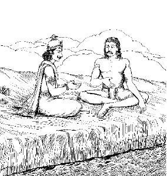
राजा यदूको अवधूतका उपदेश
पृथ्वीसे लेकर कबूतरतक आठ गुरुओंकी कथा
श्रीभगवानुवाच
यदात्थ मां महाभाग तच्चिकीर्षितमेव मे।
ब्रह्मा भवो लोकपाला: स्वर्वासं मेऽभिकाङ्क्षिण:॥ १॥
भगवान् श्रीकृष्णने कहा—महाभाग्यवान् उद्धव! तुमने मुझसे जो कुछ कहा है, मैं वही करना चाहता हूँ। ब्रह्मा, शंकर और इन्द्रादि लोकपाल भी अब यही चाहते हैं कि मैं उनके लोकोंमें होकर अपने धामको चला जाऊँ॥ १॥
मया निष्पादितं ह्यत्र देवकार्यमशेषत:।
यदर्थमवतीर्णोऽहमंशेन ब्रह्मणार्थित:॥ २॥
पृथ्वीपर देवताओंका जितना काम करना था, उसे मैं पूरा कर चुका। इसी कामके लिये ब्रह्माजीकी प्रार्थनासे मैं बलरामजीके साथ अवतीर्ण हुआ था॥ २॥
कुलं वै शापनिर्दग्धं नङ्क्ष्यत्यन्योन्यविग्रहात्।
समुद्र: सप्तमेऽह्नॺेतां पुरीं च प्लावयिष्यति॥ ३॥
अब यह यदुवंश, जो ब्राह्मणोंके शापसे भस्म हो चुका है, पारस्परिक फूट और युद्धसे नष्ट हो जायगा। आजके सातवें दिन समुद्र इस पुरी—द्वारकाको डुबो देगा॥ ३॥
यर्ह्येवायं मया त्यक्तो लोकोऽयं नष्टमङ्गल:।
भविष्यत्यचिरात् साधो कलिनापि निराकृत:॥ ४॥
प्यारे उद्धव! जिस क्षण मैं मर्त्यलोकका परित्याग कर दूँगा, उसी क्षण इसके सारे मंगल नष्ट हो जायँगे और थोड़े ही दिनोंमें पृथ्वीपर कलियुगका बोलबाला हो जायगा॥ ४॥
न वस्तव्यं त्वयैवेह मया त्यक्ते महीतले।
जनोऽधर्मरुचिर्भद्र भविष्यति कलौ युगे॥ ५॥
जब मैं इस पृथ्वीका त्याग कर दूँ, तब तुम इसपर मत रहना; क्योंकि साधु उद्धव! कलियुगमें अधिकांश लोगोंकी रुचि अधर्ममें ही होगी॥ ५॥
त्वं तु सर्वं परित्यज्य स्नेहं स्वजनबन्धुषु।
मय्यावेश्य मन: सम्यक् समदृग् विचरस्व गाम्॥ ६॥
अब तुम अपने आत्मीय स्वजन और बन्धु-बान्धवोंका स्नेह-सम्बन्ध छोड़ दो और अनन्यप्रेमसे मुझमें अपना मन लगाकर समदृष्टिसे पृथ्वीमें स्वच्छन्द विचरण करो॥ ६॥
यदिदं मनसा वाचा चक्षुर्भ्यां श्रवणादिभि:।
नश्वरं गृह्यमाणं च विद्धि मायामनोमयम्॥ ७॥
इस जगत्में जो कुछ मनसे सोचा जाता है, वाणीसे कहा जाता है, नेत्रोंसे देखा जाता है और श्रवण आदि इन्द्रियोंसे अनुभव किया जाता है, वह सब नाशवान् है। सपनेकी तरह मनका विलास है। इसलिये मायामात्र है, मिथ्या है—ऐसा समझ लो॥ ७॥
पुंसोऽयुक्तस्य नानार्थो भ्रम: स गुणदोषभाक्।
कर्माकर्मविकर्मेति गुणदोषधियो भिदा॥ ८॥
जिस पुरुषका मन अशान्त है, असंयत है, उसीको पागलकी तरह अनेकों वस्तुएँ मालूम पड़ती हैं; वास्तवमें यह चित्तका भ्रम ही है। नानात्वका भ्रम हो जानेपर ही ‘यह गुण है’ और ‘यह दोष’ इस प्रकारकी कल्पना करनी पड़ती है । जिसकी बुद्धिमें गुण और दोषका भेद बैठ गया है, दृढ़मूल हो गया है, उसीके लिये कर्म१ अकर्म२ और विकर्मरूप३ भेदका प्रतिपादन हुआ है॥ ८॥
१. विहित कर्म। २. विहित कर्मका लोप। ३.निषिद्ध कर्म।
तस्माद् युक्तेन्द्रियग्रामो युक्तचित्त इदं जगत्।
आत्मनीक्षस्व विततमात्मानं मय्यधीश्वरे॥ ९॥
इसलिये उद्धव! तुम पहले अपनी समस्त इन्द्रियोंको अपने वशमें कर लो, उनकी बागडोर अपने हाथमें ले लो और केवल इन्द्रियोंको ही नहीं, चित्तकी समस्त वृत्तियोंको भी रोक लो और फिर ऐसा अनुभव करो कि यह सारा जगत् अपने आत्मामें ही फैला हुआ है और आत्मा मुझ सर्वात्मा इन्द्रियातीत ब्रह्मसे एक है, अभिन्न है॥ ९॥
ज्ञानविज्ञानसंयुक्त आत्मभूत: शरीरिणाम्।
आत्मानुभवतुष्टात्मा नान्तरायैर्विहन्यसे॥ १०॥
जब वेदोंके मुख्य तात्पर्य—निश्चयरूप ज्ञान और अनुभवरूप विज्ञानसे भलीभाँति सम्पन्न होकर तुम अपने आत्माके अनुभवमें ही आनन्दमग्न रहोगे और सम्पूर्ण देवता आदि शरीरधारियोंके आत्मा हो जाओगे, इसलिये किसी भी विघ्नसे तुम पीड़ित नहीं हो सकोगे; क्योंकि उन विघ्नों और विघ्न करनेवालोंकी आत्मा भी तुम्हीं होगे॥ १०॥
दोषबुद्धॺोभयातीतो निषेधान्न निवर्तते।
गुणबुद्धॺा च विहितं न करोति यथार्भक:॥ ११॥
जो पुरुष गुण और दोष-बुद्धिसे अतीत हो जाता है, वह बालकके समान निषिद्ध कर्मसे निवृत्त होता है, परन्तु दोष-बुद्धिसे नहीं। वह विहित कर्मका अनुष्ठान भी करता है, परन्तु गुणबुद्धिसे नहीं॥ ११॥
सर्वभूतसुहृच्छान्तो ज्ञानविज्ञाननिश्चय:।
पश्यन् मदात्मकं विश्वं न विपद्येत वै पुन:॥ १२॥
जिसने श्रुतियोंके तात्पर्यका यथार्थ ज्ञान ही नहीं प्राप्त कर लिया, बल्कि उनका साक्षात्कार भी कर लिया है और इस प्रकार जो अटल निश्चयसे सम्पन्न हो गया है, वह समस्त प्राणियोंका हितैषी सुहृद् होता है और उसकी वृत्तियाँ सर्वथा शान्त रहती हैं। वह समस्त प्रतीयमान विश्वको मेरा ही स्वरूप—आत्मस्वरूप देखता है; इसलिये उसे फिर कभी जन्म-मृत्युके चक्करमें नहीं पड़ना पड़ता॥ १२॥
श्रीशुक उवाच
इत्यादिष्टो भगवता महाभागवतो नृप।
उद्धव: प्रणिपत्याह तत्त्वजिज्ञासुरच्युतम्॥ १३॥
श्रीशुकदेवजी कहते हैं—परीक्षित्! जब भगवान् श्रीकृष्णने इस प्रकार आदेश दिया, तब भगवान्के परम प्रेमी उद्धवजीने उन्हें प्रणाम करके तत्त्वज्ञानकी प्राप्तिकी इच्छासे यह प्रश्न किया॥ १३॥
उद्धव उवाच
योगेश योगविन्यास योगात्मन् योगसम्भव।
नि:श्रेयसाय मे प्रोक्तस्त्याग: संन्यासलक्षण:॥ १४॥
उद्धवजीने कहा—भगवन्! आप ही समस्त योगियोंकी गुप्त पूँजी, योगोंके कारण और योगेश्वर हैं। आप ही समस्त योगोंके आधार, उनके कारण और योगस्वरूप भी हैं। आपने मेरे परम कल्याणके लिये उस संन्यासरूप त्यागका उपदेश किया है॥ १४॥
त्यागोऽयं दुष्करो भूमन् कामानां विषयात्मभि:।
सुतरां त्वयि सर्वात्मन्नभक्तैरिति मे मति:॥ १५॥
परन्तु अनन्त! जो लोग विषयोंके चिन्तन और सेवनमें घुल-मिल गये हैं, विषयात्मा हो गये हैं, उनके लिये विषय-भोगों और कामनाओंका त्याग अत्यन्त कठिन है। सर्वस्वरूप! उनमें भी जो लोग आपसे विमुख हैं, उनके लिये तो इस प्रकारका त्याग सर्वथा असम्भव ही है—ऐसा मेरा निश्चय है॥ १५॥
सोऽहं ममाहमिति मूढमतिर्विगाढ-
स्त्वन्मायया विरचितात्मनि सानुबन्धे।
तत्त्वञ्जसा निगदितं भवता यथाहं
संसाधयामि भगवन्ननुशाधि भृत्यम्॥ १६॥
प्रभो! मैं भी ऐसा ही हूँ; मेरी मति इतनी मूढ़ हो गयी है कि ‘यह मैं हूँ, यह मेरा है’ इस भावसे मैं आपकी मायाके खेल, देह और देहके सम्बन्धी स्त्री, पुत्र, धन आदिमें डूब रहा हूँ। अत: भगवन्! आपने जिस संन्यासका उपदेश किया है, उसका तत्त्व मुझ सेवकको इस प्रकार समझाइये कि मैं सुगमतापूर्वक उसका साधन कर सकूँ॥ १६॥
सत्यस्य ते स्वदृश आत्मन आत्मनोऽन्यं
वक्तारमीश विबुधेष्वपि नानुचक्षे।
सर्वे विमोहितधियस्तव माययेमे
ब्रह्मादयस्तनुभृतो बहिरर्थभावा:॥ १७॥
मेरे प्रभो! आप भूत, भविष्य, वर्तमान इन तीनों कालोंसे अबाधित, एकरस सत्य हैं। आप दूसरेके द्वारा प्रकाशित नहीं, स्वयंप्रकाश आत्मस्वरूप हैं। प्रभो! मैं समझता हूँ कि मेरे लिये आत्मतत्त्वका उपदेश करनेवाला आपके अतिरिक्त देवताओंमें भी कोई नहीं है। ब्रह्मा आदि जितने बड़े-बड़े देवता हैं, वे सब शरीराभिमानी होनेके कारण आपकी मायासे मोहित हो रहे हैं। उनकी बुद्धि मायाके वशमें हो गयी है। यही कारण है कि वे इन्द्रियोंसे अनुभव किये जानेवाले बाह्य विषयोंको सत्य मानते हैं। इसीलिये मुझे तो आप ही उपदेश कीजिये॥ १७॥
तस्माद् भवन्तमनवद्यमनन्तपारं
सर्वज्ञमीश्वरमकुण्ठविकुण्ठधिष्ण्यम्।
निर्विण्णधीरहमु ह वृजिनाभितप्तो
नारायणं नरसखं शरणं प्रपद्ये॥ १८॥
भगवन्! इसीसे चारों ओरसे दु:खोंकी दावाग्निसे जलकर और विरक्त होकर मैं आपकी शरणमें आया हूँ। आप निर्दोष, देश-कालसे अपरिच्छिन्न, सर्वज्ञ, सर्वशक्तिमान् और अविनाशी वैकुण्ठ-लोकके निवासी एवं नरके नित्य सखा नारायण हैं। (अत: आप ही मुझे उपदेश कीजिये)॥ १८॥
श्रीभगवानुवाच
प्रायेण मनुजा लोके लोकतत्त्वविचक्षणा:।
समुद्धरन्ति ह्यात्मानमात्मनैवाशुभाशयात्॥ १९॥
भगवान् श्रीकृष्णने कहा—उद्धव! संसारमें जो मनुष्य ‘यह जगत् क्या है? इसमें क्या हो रहा है?’ इत्यादि बातोंका विचार करनेमें निपुण हैं, वे चित्तमें भरी हुई अशुभ वासनाओंसे अपने-आपको स्वयं अपनी विवेकशक्तिसे ही प्राय: बचा लेते हैं॥ १९॥
आत्मनो गुरुरात्मैव पुरुषस्य विशेषत:।
यत् प्रत्यक्षानुमानाभ्यां श्रेयोऽसावनुविन्दते॥ २०॥
समस्त प्राणियोंका विशेषकर मनुष्यका आत्मा अपने हित और अहितका उपदेशक गुरु है; क्योंकि मनुष्य अपने प्रत्यक्ष अनुभव और अनुमानके द्वारा अपने हित-अहितका निर्णय करनेमें पूर्णत: समर्थ है॥ २०॥
पुरुषत्वे च मां धीरा: सांख्ययोगविशारदा:।
आविस्तरां प्रपश्यन्ति सर्वशक्त्युपबृंहितम्॥ २१॥
सांख्ययोगविशारद धीर पुरुष इस मनुष्ययोनिमें इन्द्रियशक्ति, मन:शक्ति आदिके आश्रयभूत मुझ आत्मतत्त्वको पूर्णत: प्रकटरूपसे साक्षात्कार कर लेते हैं॥ २१॥
एकद्वित्रिचतुष्पादो बहुपादस्तथापद:।
बह्वॺ: सन्ति पुर: सृष्टास्तासां मे पौरुषी प्रिया॥ २२॥
मैंने एक पैरवाले, दो पैरवाले, तीन पैरवाले, चार पैरवाले, चारसे अधिक पैरवाले और बिना पैरके—इत्यादि अनेक प्रकारके शरीरोंका निर्माण किया है। उनमें मुझे सबसे अधिक प्रिय मनुष्यका ही शरीर है॥ २२॥
अत्र मां मार्गयन्त्यद्धा युक्ता हेतुभिरीश्वरम्।
गृह्यमाणैर्गुणैर्लिङ्गैरग्राह्यमनुमानत:॥ २३॥
इस मनुष्य-शरीरमें एकाग्रचित्त तीक्ष्णबुद्धि पुरुष बुद्धि आदि ग्रहण किये जानेवाले हेतुओंसे जिनसे कि अनुमान भी होता है, अनुमानसे अग्राह्य अर्थात् अहंकार आदि विषयोंसे भिन्न मुझ सर्वप्रवर्तक ईश्वरको साक्षात् अनुभव करते हैं*॥ २३॥
* अनुसन्धानके दो प्रकार हैं—(१) एक स्वप्रकाश तत्त्वके बिना बुद्धि आदि जड पदार्थोंका प्रकाश नहीं हो सकता। इस प्रकार अर्थापत्तिके द्वारा और (२) जैसे बसूला आदि औजार किसी कर्ताके द्वारा प्रयुक्त होते हैं। इसी प्रकार यह बुद्धि आदि औजार किसी कर्ताके द्वारा ही प्रयुक्त हो रहे हैं। परंतु इसका यह अर्थ नहीं है कि आत्मा आनुमानिक है। यह तो देहादिसे विलक्षण त्वम् पदार्थके शोधनकी युक्तिमात्र है।
अत्राप्युदाहरन्तीममितिहासं पुरातनम्।
अवधूतस्य संवादं यदोरमिततेजस:॥ २४॥
इस विषयमें महात्मालोग एक प्राचीन इतिहास कहा करते हैं। वह इतिहास परम तेजस्वी अवधूत दत्तात्रेय और राजा यदुके संवादके रूपमें है॥ २४॥
अवधूतं द्विजं कञ्चिच्चरन्तमकुतोभयम्।
कविं निरीक्ष्य तरुणं यदु: पप्रच्छ धर्मवित्॥ २५॥
एक बार धर्मके मर्मज्ञ राजा यदुने देखा कि एक त्रिकालदर्शी तरुण अवधूत ब्राह्मण निर्भय विचर रहे हैं। तब उन्होंने उनसे यह प्रश्न किया॥ २५॥
यदुरुवाच
कुतो बुद्धिरियं ब्रह्मन्नकर्तु: सुविशारदा।
यामासाद्य भवाँल्लोकं विद्वांश्चरति बालवत्॥ २६॥
राजा यदुने पूछा—ब्रह्मन्! आप कर्म तो करते नहीं, फिर आपको यह अत्यन्त निपुण बुद्धि कहाँसे प्राप्त हुई? जिसका आश्रय लेकर आप परम विद्वान् होनेपर भी बालकके समान संसारमें विचरते रहते हैं॥ २६॥
प्रायो धर्मार्थकामेषु विवित्सायां च मानवा:।
हेतुनैव समीहन्ते आयुषो यशस: श्रिय:॥ २७॥
ऐसा देखा जाता है कि मनुष्य आयु, यश अथवा सौन्दर्य-सम्पत्ति आदिकी अभिलाषा लेकर ही धर्म, अर्थ, काम अथवा तत्त्व-जिज्ञासामें प्रवृत्त होते हैं; अकारण कहीं किसीकी प्रवृत्ति नहीं देखी जाती॥ २७॥
त्वं तु कल्प: कविर्दक्ष: सुभगोऽमृतभाषण:।
न कर्ता नेहसे किञ्चिज्जडोन्मत्तपिशाचवत्॥ २८॥
मैं देख रहा हूँ कि आप कर्म करनेमें समर्थ, विद्वान् और निपुण हैं। आपका भाग्य और सौन्दर्य भी प्रशंसनीय है। आपकी वाणीसे तो मानो अमृत टपक रहा है। फिर भी आप जड, उन्मत्त अथवा पिशाचके समान रहते हैं; न तो कुछ करते हैं और न चाहते ही हैं॥ २८॥
जनेषु दह्यमानेषु कामलोभदवाग्निना।
न तप्यसेऽग्निना मुक्तो गङ्गाम्भ:स्थ इव द्विप:॥ २९॥
संसारके अधिकांश लोग काम और लोभके दावानलसे जल रहे हैं। परन्तु आपको देखकर ऐसा मालूम होता है कि आप मुक्त हैं, आपतक उसकी आँच भी नहीं पहुँच पाती; ठीक वैसे ही जैसे कोई हाथी वनमें दावाग्नि लगनेपर उससे छूटकर गंगाजलमें खड़ा हो॥ २९॥
त्वं हि न: पृच्छतां ब्रह्मन्नात्मन्यानन्दकारणम्।
ब्रूहि स्पर्शविहीनस्य भवत: केवलात्मन:॥ ३०॥
ब्रह्मन्! आप पुत्र, स्त्री, धन आदि संसारके स्पर्शसे भी रहित हैं। आप सदा-सर्वदा अपने केवल स्वरूपमें ही स्थित रहते हैं। हम आपसे यह पूछना चाहते हैं कि आपको अपने आत्मामें ही ऐसे अनिर्वचनीय आनन्दका अनुभव कैसे होता है? आप कृपा करके अवश्य बतलाइये॥ ३०॥
श्रीभगवानुवाच
यदुनैवं महाभागो ब्रह्मण्येन सुमेधसा।
पृष्ट: सभाजित: प्राह प्रश्रयावनतं द्विज:॥ ३१॥
भगवान् श्रीकृष्णने कहा—उद्धव! हमारे पूर्वज महाराज यदुकी बुद्धि शुद्ध थी और उनके हृदयमें ब्राह्मणभक्ति थी। उन्होंने परमभाग्यवान् दत्तात्रेयजीका अत्यन्त सत्कार करके यह प्रश्न पूछा और बड़े विनम्रभावसे सिर झुकाकर वे उनके सामने खड़े हो गये। अब दत्तात्रेयजीने कहा॥ ३१॥
ब्राह्मण उवाच
सन्ति मे गुरवो राजन् बहवो बुद्धॺुपाश्रिता:।
यतो बुद्धिमुपादाय मुक्तोऽटामीह ताञ्छृणु॥ ३२॥
ब्रह्मवेत्ता दत्तात्रेयजीने कहा—राजन्! मैंने अपनी बुद्धिसे बहुत-से गुरुओंका आश्रय लिया है, उनसे शिक्षा ग्रहण करके मैं इस जगत्में मुक्तभावसे स्वच्छन्द विचरता हूँ। तुम उन गुरुओंके नाम और उनसे ग्रहण की हुई शिक्षा सुनो॥ ३२॥
पृथिवी वायुराकाशमापोऽग्निश्चन्द्रमा रवि:।
कपोतोऽजगर: सिन्धु: पतङ्गो मधुकृद् गज:॥ ३३॥
मधुहा हरिणो मीन: पिङ्गला कुररोऽर्भक:।
कुमारी शरकृत् सर्प ऊर्णनाभि: सुपेशकृत्॥ ३४॥
मेरे गुरुओंके नाम हैं—पृथ्वी, वायु, आकाश, जल, अग्नि, चन्द्रमा, सूर्य, कबूतर, अजगर, समुद्र, पतंग, भौंरा या मधुमक्खी, हाथी, शहद निकालनेवाला, हरिन, मछली, पिंगला वेश्या, कुरर पक्षी, बालक, कुँआरी कन्या, बाण बनानेवाला, सर्प, मकड़ी और भृंगी कीट॥ ३३-३४॥
एते मे गुरवो राजंश्चतुर्विंशतिराश्रिता:।
शिक्षा वृत्तिभिरेतेषामन्वशिक्षमिहात्मन:॥ ३५॥
राजन्! मैंने इन चौबीस गुरुओंका आश्रय लिया है और इन्हींके आचरणसे इस लोकमें अपने लिये शिक्षा ग्रहण की है॥ ३५॥
यतो यदनुशिक्षामि यथा वा नाहुषात्मज।
तत्तथा पुरुषव्याघ्र निबोध कथयामि ते॥ ३६॥
वीरवर ययातिनन्दन! मैंने जिससे जिस प्रकार जो कुछ सीखा है, वह सब ज्यों-का-त्यों तुमसे कहता हूँ, सुनो॥ ३६॥
भूतैराक्रम्यमाणोऽपि धीरो दैववशानुगै:।
तद् विद्वान्न चलेन्मार्गादन्वशिक्षं क्षितेर्वतम्॥ ३७॥
मैंने पृथ्वीसे उसके धैर्यकी, क्षमाकी शिक्षा ली है। लोग पृथ्वीपर कितना आघात और क्या-क्या उत्पात नहीं करते; परन्तु वह न तो किसीसे बदला लेती है और न रोती-चिल्लाती है। संसारके सभी प्राणी अपने-अपने प्रारब्धके अनुसार चेष्टा कर रहे हैं, वे समय-समयपर भिन्न-भिन्न प्रकारसे जान या अनजानमें आक्रमण कर बैठते हैं। धीर पुरुषको चाहिये कि उनकी विवशता समझे, न तो अपना धीरज खोये और न क्रोध करे। अपने मार्गपर ज्यों-का-त्यों चलता रहे॥ ३७॥
शश्वत्परार्थसर्वेह: परार्थैकान्तसम्भव:।
साधु: शिक्षेत भूभृत्तो नगशिष्य: परात्मताम्॥ ३८॥
पृथ्वीके ही विकार पर्वत और वृक्षसे मैंने यह शिक्षा ग्रहण की है कि जैसे उनकी सारी चेष्टाएँ सदा-सर्वदा दूसरोंके हितके लिये ही होती हैं, बल्कि यों कहना चाहिये कि उनका जन्म ही एकमात्र दूसरोंका हित करनेके लिये ही हुआ है, साधु पुरुषको चाहिये कि उनकी शिष्यता स्वीकार करके उनसे परोपकारकी शिक्षा ग्रहण करे॥ ३८॥
प्राणवृत्त्यैव सन्तुष्येन्मुनिर्नैवेन्द्रियप्रियै:।
ज्ञानं यथा न नश्येत नावकीर्येत वाङ्मन:॥ ३९॥
मैंने शरीरके भीतर रहनेवाले वायु—प्राणवायुसे यह शिक्षा ग्रहण की है कि जैसे वह आहारमात्रकी इच्छा रखता है और उसकी प्राप्तिसे ही सन्तुष्ट हो जाता है, वैसे ही साधकको भी चाहिये कि जितनेसे जीवन-निर्वाह हो जाय, उतना भोजन कर ले। इन्द्रियोंको तृप्त करनेके लिये बहुत-से विषय न चाहे। संक्षेपमें उतने ही विषयोंका उपयोग करना चाहिये, जिनसे बुद्धि विकृत न हो, मन चंचल न हो और वाणी व्यर्थकी बातोंमें न लग जाय॥ ३९॥
विषयेष्वाविशन् योगी नानाधर्मेषु सर्वत:।
गुणदोषव्यपेतात्मा न विषज्जेत वायुवत्॥ ४०॥
शरीरके बाहर रहनेवाले वायुसे मैंने यह सीखा है कि जैसे वायुको अनेक स्थानोंमें जाना पड़ता है, परन्तु वह कहीं भी आसक्त नहीं होता, किसीका भी गुण-दोष नहीं अपनाता, वैसे ही साधक पुरुष भी आवश्यकता होनेपर विभिन्न प्रकारके धर्म और स्वभाववाले विषयोंमें जाय, परन्तु अपने लक्ष्यपर स्थिर रहे। किसीके गुण या दोषकी ओर झुक न जाय, किसीसे आसक्ति या द्वेष न कर बैठे॥ ४०॥
पार्थिवेष्विह देहेषु प्रविष्टस्तद्गुणाश्रय:।
गुणैर्न युज्यते योगी गन्धैर्वायुरिवात्मदृक्॥ ४१॥
गन्ध वायुका गुण नहीं, पृथ्वीका गुण है। परन्तु वायुको गन्धका वहन करना पड़ता है। ऐसा करनेपर भी वायु शुद्ध ही रहता है, गन्धसे उसका सम्पर्क नहीं होता। वैसे ही साधकका जबतक इस पार्थिव शरीरसे सम्बन्ध है, तबतक उसे इसकी व्याधि-पीड़ा और भूख-प्यास आदिका भी वहन करना पड़ता है। परन्तु अपनेको शरीर नहीं, आत्माके रूपमें देखनेवाला साधक शरीर और उसके गुणोंका आश्रय होनेपर भी उनसे सर्वथा निर्लिप्त रहता है॥ ४१॥
अन्तर्हितश्च स्थिरजङ्गमेषु
ब्रह्मात्मभावेन समन्वयेन।
व्याप्तॺाव्यवच्छेदमसङ्गमात्मनो
मुनिर्नभस्त्वं विततस्य भावयेत्॥ ४२॥
राजन्! जितने भी घट-मठ आदि पदार्थ हैं, वे चाहे चल हों या अचल, उनके कारण भिन्न-भिन्न प्रतीत होनेपर भी वास्तवमें आकाश एक और अपरिच्छिन्न (अखण्ड) ही है। वैसे ही चर-अचर जितने भी सूक्ष्म-स्थूल शरीर हैं, उनमें आत्मारूपसे सर्वत्र स्थित होनेके कारण ब्रह्म सभीमें है। साधकको चाहिये कि सूतके मनियोंमें व्याप्त सूतके समान आत्माको अखण्ड और असंगरूपसे देखे। वह इतना विस्तृत है कि उसकी तुलना कुछ-कुछ आकाशसे ही की जा सकती है। इसलिये साधकको आत्माकी आकाशरूपताकी भावना करनी चाहिये॥ ४२॥
तेजोऽबन्नमयैर्भावैर्मेघाद्यैर्वायुनेरितै:।
न स्पृश्यते नभस्तद्वत् कालसृष्टैर्गुणै: पुमान्॥ ४३॥
आग लगती है, पानी बरसता है, अन्न आदि पैदा होते और नष्ट होते हैं, वायुकी प्रेरणासे बादल आदि आते और चले जाते हैं; यह सब होनेपर भी आकाश अछूता रहता है। आकाशकी दृष्टिसे यह सब कुछ है ही नहीं। इसी प्रकार भूत, वर्तमान और भविष्यके चक्करमें न जाने किन-किन नामरूपोंकी सृष्टि और प्रलय होते हैं; परन्तु आत्माके साथ उनका कोई संस्पर्श नहीं है॥ ४३॥
स्वच्छ: प्रकृतित: स्निग्धो माधुर्यस्तीर्थभूर्नृणाम्।
मुनि: पुनात्यपां मित्रमीक्षोपस्पर्शकीर्तनै:॥ ४४॥
जिस प्रकार जल स्वभावसे ही स्वच्छ, चिकना, मधुर और पवित्र करनेवाला होता है तथा गंगा आदि तीर्थोंके दर्शन, स्पर्श और नामोच्चारणसे भी लोग पवित्र हो जाते हैं—वैसे ही साधकको भी स्वभावसे ही शुद्ध, स्निग्ध, मधुरभाषी और लोकपावन होना चाहिये। जलसे शिक्षा ग्रहण करनेवाला अपने दर्शन, स्पर्श और नामोच्चारणसे लोगोंको पवित्र कर देता है॥ ४४॥
तेजस्वी तपसा दीप्तो दुर्धर्षोदरभाजन:।
सर्वभक्षोऽपि युक्तात्मा नादत्ते मलमग्निवत्॥ ४५॥
राजन्! मैंने अग्निसे यह शिक्षा ली है कि जैसे वह तेजस्वी और ज्योतिर्मय होती है, जैसे उसे कोई अपने तेजसे दबा नहीं सकता, जैसे उसके पास संग्रह-परिग्रहके लिये कोई पात्र नहीं—सब कुछ अपने पेटमें रख लेती है, और जैसे सब कुछ खा-पी लेनेपर भी विभिन्न वस्तुओंके दोषोंसे वह लिप्त नहीं होती, वैसे ही साधक भी परम तेजस्वी, तपस्यासे देदीप्यमान, इन्द्रियोंसे अपराभूत, भोजनमात्रका संग्रही और यथायोग्य सभी विषयोंका उपभोग करता हुआ भी अपने मन और इन्द्रियोंको वशमें रखे, किसीका दोष अपनेमें न आने दे॥ ४५॥
क्वचिच्छन्न: क्वचित् स्पष्ट उपास्य: श्रेय इच्छताम्।
भुङ्क्ते सर्वत्र दातॄणां दहन् प्रागुत्तराशुभम्॥ ४६॥
जैसे अग्नि कहीं (लकड़ी आदिमें) अप्रकट रहती है और कहीं प्रकट, वैसे ही साधक भी कहीं गुप्त रहे और कहीं प्रकट हो जाय। वह कहीं-कहीं ऐसे रूपमें भी प्रकट हो जाता है, जिससे कल्याणकामी पुरुष उसकी उपासना कर सकें। वह अग्निके समान ही भिक्षारूप हवन करनेवालोंके अतीत और भावी अशुभको भस्म कर देता है तथा सर्वत्र अन्न ग्रहण करता है॥ ४६॥
स्वमायया सृष्टमिदं सदसल्लक्षणं विभु:।
प्रविष्ट ईयते तत्तत्स्वरूपोऽग्निरिवैधसि॥ ४७॥
साधक पुरुषको इसका विचार करना चाहिये कि जैसे अग्नि लम्बी-चौड़ी, टेढ़ी-सीधी लकड़ियोंमें रहकर उनके समान ही सीधी-टेढ़ी या लम्बी-चौड़ी दिखायी पड़ती है—वास्तवमें वह वैसी है नहीं; वैसे ही सर्वव्यापक आत्मा भी अपनी मायासे रचे हुए कार्य-कारणरूप जगत्में व्याप्त होनेके कारण उन-उन वस्तुओंके नाम-रूपसे कोई सम्बन्ध न होनेपर भी उनके रूपमें प्रतीत होने लगता है॥ ४७॥
विसर्गाद्या: श्मशानान्ता भावा देहस्य नात्मन:।
कलानामिव चन्द्रस्य कालेनाव्यक्तवर्त्मना॥ ४८॥
मैंने चन्द्रमासे यह शिक्षा ग्रहण की है कि यद्यपि जिसकी गति नहीं जानी जा सकती, उस कालके प्रभावसे चन्द्रमाकी कलाएँ घटती-बढ़ती रहती हैं, तथापि चन्द्रमा तो चन्द्रमा ही है, वह न घटता है और न बढ़ता ही है; वैसे ही जन्मसे लेकर मृत्युपर्यन्त जितनी भी अवस्थाएँ हैं, सब शरीरकी हैं, आत्मासे उनका कोई भी सम्बन्ध नहीं है॥ ४८॥
कालेन ह्योघवेगेन भूतानां प्रभवाप्ययौ।
नित्यावपि न दृश्येते आत्मनोऽग्नेर्यथार्चिषाम्॥ ४९॥
जैसे आगकी लपट अथवा दीपककी लौ क्षण-क्षणमें उत्पन्न और नष्ट होती रहती है—उनका यह क्रम निरन्तर चलता रहता है, परन्तु दीख नहीं पड़ता—वैसे ही जलप्रवाहके समान वेगवान् कालके द्वारा क्षण-क्षणमें प्राणियोेंके शरीरकी उत्पत्ति और विनाश होता रहता है, परन्तु अज्ञानवश वह दिखायी नहीं पड़ता॥ ४९॥
गुणैर्गुणानुपादत्ते यथाकालं विमुञ्चति।
न तेषु युज्यते योगी गोभिर्गा इव गोपति:॥ ५०॥
राजन्! मैंने सूर्यसे यह शिक्षा ग्रहण की है कि जैसे वे अपनी किरणोंसे पृथ्वीका जल खींचते और समयपर उसे बरसा देते हैं, वैसे ही योगी पुरुष इन्द्रियोंके द्वारा समयपर विषयोंका ग्रहण करता है और समय आनेपर उनका त्याग—उनका दान भी कर देता है। किसी भी समय उसे इन्द्रियके किसी भी विषयमें आसक्ति नहीं होती॥ ५०॥
बुध्यते स्वे न भेदेन व्यक्तिस्थ इव तद्गत:।
लक्ष्यते स्थूलमतिभिरात्मा चावस्थितोऽर्कवत्॥ ५१॥
स्थूलबुद्धि पुरुषोंको जलके विभिन्न पात्रोंमें प्रतिबिम्बित हुआ सूर्य उन्हींमें प्रविष्ट-सा होकर भिन्न-भिन्न दिखायी पड़ता है। परन्तु इससे स्वरूपत: सूर्य अनेक नहीं हो जाता; वैसे ही चल-अचल उपाधियोंके भेदसे ऐसा जान पड़ता है कि प्रत्येक व्यक्तिमें आत्मा अलग-अलग है। परन्तु जिनको ऐसा मालूम होता है, उनकी बुद्धि मोटी है। असल बात तो यह है कि आत्मा सूर्यके समान एक ही है। स्वरूपत: उसमें कोई भेद नहीं है॥ ५१॥
नातिस्नेह: प्रसङ्गो वा कर्तव्य: क्वापि केनचित्।
कुर्वन् विन्देत सन्तापं कपोत इव दीनधी:॥ ५२॥
राजन्! कहीं किसीके साथ अत्यन्त स्नेह अथवा आसक्ति न करनी चाहिये, अन्यथा उसकी बुद्धि अपना स्वातन्त्रॺ खोकर दीन हो जायगी और उसे कबूतरकी तरह अत्यन्त क्लेश उठाना पड़ेगा॥ ५२॥
कपोत: कश्चनारण्ये कृतनीडो वनस्पतौ।
कपोत्या भार्यया सार्धमुवास कतिचित् समा:॥ ५३॥
राजन्! किसी जंगलमें एक कबूतर रहता था, उसने एक पेड़पर अपना घोंसला बना रखा था। अपनी मादा कबूतरीके साथ वह कई वर्षोंतक उसी घोंसलेमें रहा॥ ५३॥
कपोतौ स्नेहगुणितहृदयौ गृहधर्मिणौ।
दृष्टिं दृष्टॺाङ्गमङ्गेन बुद्धिं बुद्धॺा बबन्धतु:॥ ५४॥
उस कबूतरके जोड़ेके हृदयमें निरन्तर एक-दूसरेके प्रति स्नेहकी वृद्धि होती जाती थी। वे गृहस्थधर्ममें इतने आसक्त हो गये थे कि उन्होंने एक-दूसरेकी दृष्टि-से-दृष्टि, अंग-से-अंग और बुद्धि-से-बुद्धिको बाँध रखा था॥ ५४॥
शय्यासनाटनस्थानवार्ताक्रीडाशनादिकम्।
मिथुनीभूय विस्रब्धौ चेरतुर्वनराजिषु॥ ५५॥
उनका एक-दूसरेपर इतना विश्वास हो गया था कि वे नि:शंक होकर वहाँकी वृक्षावलीमें एक साथ सोते, बैठते, घूमते-फिरते, ठहरते, बातचीत करते, खेलते और खाते-पीते थे॥ ५५॥
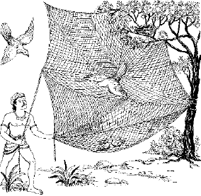
ममता और आसक्तिके कारण कपोत-दम्पत्तिका जालमें फँसना
यं यं वाञ्छति सा राजंस्तर्पयन्त्यनुकम्पिता।
तं तं समनयत् कामं कृच्छ्रेणाप्यजितेन्द्रिय:॥ ५६॥
राजन्! कबूतरीपर कबूतरका इतना प्रेम था कि वह जो कुछ चाहती, कबूतर बड़े-से-बड़ा कष्ट उठाकर उसकी कामना पूर्ण करता; वह कबूतरी भी अपने कामुक पतिकी कामनाएँ पूर्ण करती॥ ५६॥
कपोती प्रथमं गर्भं गृह्णती काल आगते।
अण्डानि सुषुवे नीडे स्वपत्यु: सन्निधौ सती॥ ५७॥
समय आनेपर कबूतरीको पहला गर्भ रहा। उसने अपने पतिके पास ही घोंसलेमें अंडे दिये॥ ५७॥
तेषु काले व्यजायन्त रचितावयवा हरे:।
शक्तिभिर्दुर्विभाव्याभि: कोमलाङ्गतनूरुहा:॥ ५८॥
भगवान्की अचिन्त्य शक्तिसे समय आनेपर वे अंडे फूट गये और उनमेंसे हाथ-पैरवाले बच्चे निकल आये। उनका एक-एक अंग और रोएँ अत्यन्त कोमल थे॥ ५८॥
प्रजा: पुपुषतु: प्रीतौ दम्पती पुत्रवत्सलौ।
शृण्वन्तौ कूजितं तासां निर्वृतौ कलभाषितै:॥ ५९॥
अब उन कबूतर-कबूतरीकी आँखें अपने बच्चोंपर लग गयीं, वे बड़े प्रेम और आनन्दसे अपने बच्चोंका लालन-पालन, लाड़-प्यार करते और उनकी मीठी बोली, उनकी गुटर-गूँ सुन-सुनकर आनन्दमग्न हो जाते॥ ५९॥
तासां पतत्त्रै: सुस्पर्शै: कूजितैर्मुग्धचेष्टितै:।
प्रत्युद्गमैरदीनानां पितरौ मुदमापतु:॥ ६०॥
बच्चे तो सदा-सर्वदा प्रसन्न रहते ही हैं; वे जब अपने सुकुमार पंखोंसे माँ-बापका स्पर्श करते, कूजते, भोली-भाली चेष्टाएँ करते और फुदक-फुदककर अपने माँ-बापके पास दौड़ आते, तब कबूतर-कबूतरी आनन्दमग्न हो जाते॥ ६०॥
स्नेहानुबद्धहृदयावन्योन्यं विष्णुमायया।
विमोहितौ दीनधियौ शिशून् पुपुषतु: प्रजा:॥ ६१॥
राजन्! सच पूछो तो वे कबूतर-कबूतरी भगवान्की मायासे मोहित हो रहे थे। उनका हृदय एक-दूसरेके स्नेहबन्धनसे बँध रहा था। वे अपने नन्हें-नन्हें बच्चोंके पालन-पोषणमें इतने व्यग्र रहते कि उन्हें दीन-दुनिया, लोक-परलोककी याद ही न आती॥ ६१॥
एकदा जग्मतुस्तासामन्नार्थं तौ कुटुम्बिनौ।
परित: कानने तस्मिन्नर्थिनौ चेरतुश्चिरम्॥ ६२॥
एक दिन दोनों नर-मादा अपने बच्चोंके लिये चारा लाने जंगलमें गये हुए थे; क्योंकि अब उनका कुटुम्ब बहुत बढ़ गया था। वे चारेके लिये चिरकालतक जंगलमें चारों ओर विचरते रहे॥ ६२॥
दृष्ट्वा ताँल्लुब्धक: कश्चिद् यदृच्छातो वनेचर:।
जगृहे जालमातत्य चरत: स्वालयान्तिके॥ ६३॥
इधर एक बहेलिया घूमता-घूमता संयोगवश उनके घोंसलेकी ओर आ निकला। उसने देखा कि घोंसलेके आस-पास कबूतरके बच्चे फुदक रहे हैं; उसने जाल फैलाकर उन्हें पकड़ लिया॥ ६३॥
कपोतश्च कपोती च प्रजापोषे सदोत्सुकौ।
गतौ पोषणमादाय स्वनीडमुपजग्मतु:॥ ६४॥
कबूतर-कबूतरी बच्चोंको खिलाने-पिलानेके लिये हर समय उत्सुक रहा करते थे। अब वे चारा लेकर अपने घोंसलेके पास आये॥ ६४॥
कपोती स्वात्मजान् वीक्ष्य बालकाञ्जालसंवृतान्।
तानभ्यधावत् क्रोशन्ती क्रोशतो भृशदु:खिता॥ ६५॥
कबूतरीने देखा कि उसके नन्हें-नन्हें बच्चे, उसके हृदयके टुकड़े जालमें फँसे हुए हैं और दु:खसे चें-चें कर रहे हैं। उन्हें ऐसी स्थितिमें देखकर कबूतरीके दु:खकी सीमा न रही। वह रोती-चिल्लाती उनके पास दौड़ गयी॥ ६५॥
सासकृत्स्नेहगुणिता दीनचित्ताजमायया।
स्वयं चाबध्यत शिचा बद्धान् पश्यन्त्यपस्मृति:॥ ६६॥
भगवान्की मायासे उसका चित्त अत्यन्त दीन-दु:खी हो रहा था। वह उमड़ते हुए स्नेहकी रस्सीसे जकड़ी हुई थी; अपने बच्चोंको जालमें फँसा देखकर उसे अपने शरीरकी भी सुध-बुध न रही और वह स्वयं ही जाकर जालमें फँस गयी॥ ६६॥
कपोतश्चात्मजान् बद्धानात्मनोऽप्यधिकान् प्रियान्।
भार्यां चात्मसमां दीनो विललापातिदु:खित:॥ ६७॥
जब कबूतरने देखा कि मेरे प्राणोंसे भी प्यारे बच्चे जालमें फँस गये और मेरी प्राणप्रिया पत्नी भी उसी दशामें पहुँच गयी, तब वह अत्यन्त दु:खित होकर विलाप करने लगा। सचमुच उस समय उसकी दशा अत्यन्त दयनीय थी॥ ६७॥
अहो मे पश्यतापायमल्पपुण्यस्य दुर्मते:।
अतृप्तस्याकृतार्थस्य गृहस्त्रैवर्गिको हत:॥ ६८॥
मैं अभागा हूँ, दुर्मति हूँ। हाय, हाय! मेरा तो सत्यानाश हो गया। देखो, देखो, न मुझे अभी तृप्ति हुई और न मेरी आशाएँ ही पूरी हुईं। तबतक मेरा धर्म, अर्थ और कामका मूल यह गृहस्थाश्रम ही नष्ट हो गया॥ ६८॥
अनुरूपानुकूला च यस्य मे पतिदेवता।
शून्ये गृहे मां सन्त्यज्य पुत्रै: स्वर्याति साधुभि:॥ ६९॥
हाय! मेरी प्राणप्यारी मुझे ही अपना इष्टदेव समझती थी; मेरी एक-एक बात मानती थी, मेरे इशारेपर नाचती थी, सब तरहसे मेरे योग्य थी। आज वह मुझे सूने घरमें छोड़कर हमारे सीधे-सादे निश्छल बच्चोंके साथ स्वर्ग सिधार रही है॥ ६९।
सोऽहं शून्ये गृहे दीनो मृतदारो मृतप्रज:।
जिजीविषे किमर्थं वा विधुरो दु:खजीवित:॥ ७०॥
मेरे बच्चे मर गये। मेरी पत्नी जाती रही। मेरा अब संसारमें क्या काम है ? मुझ दीनका यह विधुर जीवन—बिना गृहिणीका जीवन जलनका—व्यथाका जीवन है। अब मैं इस सूने घरमें किसके लिये जीऊँ?॥ ७०॥
तांस्तथैवावृताञ्छिग्भिर्मृत्युग्रस्तान् विचेष्टत:।
स्वयं च कृपण: शिक्षु पश्यन्नप्यबुधोऽपतत्॥ ७१॥
राजन्! कबूतरके बच्चे जालमें फँसकर तड़फड़ा रहे थे, स्पष्ट दीख रहा था कि वे मौतके पंजेमें हैं, परन्तु वह मूर्ख कबूतर यह सब देखते हुए भी इतना दीन हो रहा था कि स्वयं जान-बूझकर जालमें कूद पड़ा॥ ७१॥
तं लब्ध्वा लुब्धक: क्रूर: कपोतं गृहमेधिनम्।
कपोतकान् कपोतीं च सिद्धार्थ: प्रययौ गृहम्॥ ७२॥
राजन्! वह बहेलिया बड़ा क्रूर था। गृहस्थाश्रमी कबूतर-कबूतरी और उनके बच्चोंके मिल जानेसे उसे बड़ी प्रसन्नता हुई; उसने समझा मेरा काम बन गया और वह उन्हें लेकर चलता बना॥ ७२॥
एवं कुटुम्ब्यशान्तात्मा द्वन्द्वाराम: पतत्त्रिवत्।
पुष्णन् कुटुम्बं कृपण: सानुबन्धोऽवसीदति॥ ७३॥
जो कुटुम्बी है, विषयों और लोगोंके संग-साथमें ही जिसे सुख मिलता है एवं अपने कुटुम्बके भरण-पोषणमें ही जो सारी सुध-बुध खो बैठा है, उसे कभी शान्ति नहीं मिल सकती। वह उसी कबूतरके समान अपने कुटुम्बके साथ कष्ट पाता है॥ ७३॥
य: प्राप्य मानुषं लोकं मुक्तिद्वारमपावृतम्।
गृहेषु खगवत् सक्तस्तमारूढच्युतं विदु:॥ ७४॥
यह मनुष्य-शरीर मुक्तिका खुला हुआ द्वार है। इसे पाकर भी जो कबूतरकी तरह अपनी घर-गृहस्थीमें ही फँसा हुआ है, वह बहुत ऊँचेतक चढ़कर गिर रहा है। शास्त्रकी भाषामें वह ‘आरूढ़च्युत’ है॥ ७४॥
॥ इति श्रीमद्भागवते महापुराणे पारमहंस्यां संहितायामेकादशस्कन्धे अवधूतगीतायां प्रथमोऽध्याय:॥ १॥
दूसरा अध्याय
अजगरसे लेकर पिंगलातक नौ गुरुओंकी कथा
ब्राह्मण उवाच
सुखमैन्द्रियकं राजन् स्वर्गे नरक एव च।
देहिनां यद् यथा दु:खं तस्मान्नेच्छेत तद् बुध:॥ १॥
अवधूत दत्तात्रेयजी कहते हैं—राजन्! प्राणियोंको जैसे बिना इच्छाके, बिना किसी प्रयत्नके, रोकनेकी चेष्टा करनेपर भी पूर्वकर्मानुसार दु:ख प्राप्त होते हैं, वैसे ही स्वर्गमें या नरकमें—कहीं भी रहें, उन्हें इन्द्रियसम्बन्धी सुख भी प्राप्त होते ही हैं। इसलिये सुख और दु:खका रहस्य जाननेवाले बुद्धिमान् पुरुषको चाहिये कि इनके लिये इच्छा अथवा किसी प्रकारका प्रयत्न न करे॥ १॥
ग्रासं सुमृष्टं विरसं महान्तं स्तोकमेव वा।
यदृच्छयैवापतितं ग्रसेदाजगरोऽक्रिय:॥ २॥
बिना माँगे, बिना इच्छा किये स्वयं ही अनायास जो कुछ मिल जाय—वह चाहे रूखा-सूखा हो, चाहे बहुत मधुर और स्वादिष्ट, अधिक हो या थोड़ा—बुद्धिमान् पुरुष अजगरके समान उसे ही खाकर जीवननिर्वाह कर ले और उदासीन रहे॥ २॥
शयीताहानि भूरीणि निराहारोऽनुपक्रम:।
यदि नोपनमेद् ग्रासो महाहिरिव दिष्टभुक्॥ ३॥
यदि भोजन न मिले तो उसे भी प्रारब्ध-भोग समझकर किसी प्रकारकी चेष्टा न करे, बहुत दिनोंतक भूखा ही पड़ा रहे। उसे चाहिये कि अजगरके समान केवल प्रारब्धके अनुसार प्राप्त हुए भोजनमें ही सन्तुष्ट रहे॥ ३॥
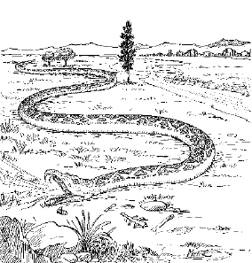
प्रारब्धनुसार प्राप्तिपर ही अजगरका निर्वाह
ओज:सहोबलयुतं बिभ्रद् देहमकर्मकम्।
शयानो वीतनिद्रश्च नेहेतेन्द्रियवानपि॥ ४॥
उसके शरीरमें मनोबल, इन्द्रियबल और देहबल तीनों हों तब भी वह निश्चेष्ट ही रहे। निद्रारहित होनेपर भी सोया हुआ-सा रहे और कर्मेन्द्रियोंके होनेपर भी उनसे कोई चेष्टा न करे। राजन्! मैंने अजगरसे यही शिक्षा ग्रहण की है॥ ४॥
मुनि: प्रसन्नगम्भीरो दुर्विगाह्यो दुरत्यय:।
अनन्तपारो ह्यक्षोभ्य: स्तिमितोद इवार्णव:॥ ५॥
समुद्रसे मैंने यह सीखा है कि साधकको सर्वदा प्रसन्न और गम्भीर रहना चाहिये, उसका भाव अथाह, अपार और असीम होना चाहिये तथा किसी भी निमित्तसे उसे क्षोभ नहीं होना चाहिये। उसे ठीक वैसे ही रहना चाहिये, जैसे ज्वार-भाटे और तरंगोंसे रहित शान्त समुद्र॥ ५॥
समृद्धकामो हीनो वा नारायणपरो मुनि:।
नोत्सर्पेत न शुष्येत सरिद्भिरिव सागर:॥ ६॥
देखो, समुद्र वर्षाऋतुमें नदियोंकी बाढ़के कारण बढ़ता नहीं और न ग्रीष्मऋतुमें घटता ही है; वैसे ही भगवत्परायण साधकको भी सांसारिक पदार्थोंकी प्राप्तिसे प्रफुल्लित न होना चाहिये और न उनके घटनेसे उदास ही होना चाहिये॥ ६॥
दृष्ट्वा स्त्रियं देवमायां तद्भावैरजितेन्द्रिय:।
प्रलोभित: पतत्यन्धे तमस्यग्नौ पतङ्गवत्॥ ७॥
राजन्! मैंने पतिंगेसे यह शिक्षा ग्रहण की है कि जैसे वह रूपपर मोहित होकर आगमें कूद पड़ता है और जल मरता है, वैसे ही अपनी इन्द्रियोंको वशमें न रखनेवाला पुरुष जब स्त्रीको देखता है तो उसके हाव-भावपर लट्टू हो जाता है और घोर अन्धकारमें, नरकमें गिरकर अपना सत्यानाश कर लेता है। सचमुच स्त्री देवताओंकी वह माया है, जिससे जीव भगवान् या मोक्षकी प्राप्तिसे वंचित रह जाता है॥ ७॥
योषिद्धिरण्याभरणाम्बरादि-
द्रव्येषु मायारचितेषु मूढ:।
प्रलोभितात्मा ह्युपभोगबुद्धॺा
पतङ्गवन्नश्यति नष्टदृष्टि:॥ ८॥
जो मूढ़ कामिनी-कंचन, गहने-कपड़े आदि नाशवान् मायिक पदार्थोंमें फँसा हुआ है और जिसकी सम्पूर्ण चित्तवृत्ति उनके उपभोगके लिये ही लालायित है, वह अपनी विवेकबुद्धि खोकर पतिंगेके समान नष्ट हो जाता है॥ ८॥
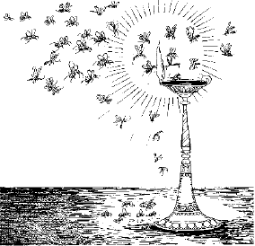
रूपपर मोहित पतंगोंका दीप-लौमें झुलसकर प्राण देना
स्तोकं स्तोकं ग्रसेद् ग्रासं देहो वर्तेत यावता।
गृहानहिंसन्नातिष्ठेद् वृत्तिं माधुकरीं मुनि:॥ ९॥
राजन्! संन्यासीको चाहिये कि गृहस्थोंको किसी प्रकारका कष्ट न देकर भौंरेकी तरह अपना जीवन-निर्वाह करे। वह अपने शरीरके लिये उपयोगी रोटीके कुछ टुकड़े कई घरोंसे माँग ले*॥ ९॥
* नहीं तो एक ही कमलके गन्धमें आसक्त हुआ भ्रमर जैसे रात्रिके समय उसमें बन्द हो जानेसे नष्ट हो जाता है, उसी प्रकार स्वादवासनासे एक ही गृहस्थका अन्न खानेसे उसके सांसर्गिक मोहमें फँसकर यति भी नष्ट हो जायगा।
अणुभ्यश्च महद्भ्यश्च शास्त्रेभ्य: कुशलो नर:।
सर्वत: सारमादद्यात् पुष्पेभ्य इव षट्पद:॥ १०॥
जिस प्रकार भौंरा विभिन्न पुष्पोंसे—चाहे वे छोटे हों या बड़े—उनका सार संग्रह करता है, वैसे ही बुद्धिमान् पुरुषको चाहिये कि छोटे-बड़े सभी शास्त्रोंसे उनका सार—उनका रस निचोड़ ले॥ १०॥
सायन्तनं श्वस्तनं वा न संगृह्णीत भिक्षितम्।
पाणिपात्रोदरामत्रो मक्षिकेव न सङ्ग्रही॥ ११॥
राजन्! मैंने मधुमक्खीसे यह शिक्षा ग्रहण की है कि संन्यासीको सायंकाल अथवा दूसरे दिनके लिये भिक्षाका संग्रह न करना चाहिये। उसके पास भिक्षा लेनेको कोई पात्र हो तो केवल हाथ और रखनेके लिये कोई बर्तन हो तो पेट। वह कहीं संग्रह न कर बैठे, नहीं तो मधुमक्खियोंके समान उसका जीवन ही दूभर हो जायगा॥ ११॥
सायन्तनं श्वस्तनं वा न संगृह्णीत भिक्षुक:।
मक्षिका इव सङ्गृह्णन् सह तेन विनश्यति॥ १२॥
यह बात खूब समझ लेनी चाहिये कि संन्यासी सबेरे-शामके लिये किसी प्रकारका संग्रह न करे; यदि संग्रह करेगा, तो मधुमक्खियोंके समान अपने संग्रहके साथ ही जीवन भी गँवा बैठेगा॥ १२॥
पदापि युवतीं भिक्षुर्न स्पृशेद् दारवीमपि।
स्पृशन् करीव बध्येत करिण्या अङ्गसङ्गत:॥ १३॥
राजन्! मैंने हाथीसे यह सीखा कि संन्यासीको कभी पैरसे भी काठकी बनी हुई स्त्रीका भी स्पर्श न करना चाहिये। यदि वह ऐसा करेगा तो जैसे हथिनीके अंग-संगसे हाथी बँध जाता है, वैसे ही वह भी बँध जायगा*॥ १३॥
* हाथी पकड़नेवाले तिनकोंसे ढके हुए गड्ढेपर कागजकी हथिनी खड़ी कर देते हैं। उसे देखकर हाथी वहाँ आता है और गड्ढेमें गिरकर फँस जाता है।
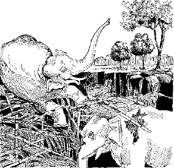
काठकी हथिनीके मोहमें पड़कर हाथीका फँसना
नाधिगच्छेत् स्त्रियं प्राज्ञ: कर्हिचिन्मृत्युमात्मन:।
बलाधिकै: स हन्येत गजैरन्यैर्गजो यथा॥ १४॥
विवेकी पुरुष किसी भी स्त्रीको कभी भी भोग्यरूपसे स्वीकार न करे; क्योंकि यह उसकी मूर्तिमती मृत्यु है। यदि वह स्वीकार करेगा तो हाथियोंसे हाथीकी तरह अधिक बलवान् अन्य पुरुषोंके द्वारा मारा जायगा॥ १४॥
न देयं नोपभोग्यं च लुब्धैर्यद् दु:खसञ्चितम्।
भुङ्क्ते तदपि तच्चान्यो मधुहेवार्थविन्मधु॥ १५॥
मैंने मधु निकालनेवाले पुरुषसे यह शिक्षा ग्रहण की है कि संसारके लोभी पुरुष बड़ी कठिनाईसे धनका संचय तो करते रहते हैं, किन्तु वह सञ्चित धन न किसीको दान करते हैं और न स्वयं उसका उपभोग ही करते हैं। बस, जैसे मधु निकालनेवाला मधुमक्खियोंद्वारा सञ्चित रसको निकाल ले जाता है, वैसे ही उनके सञ्चित धनको भी उसकी टोह रखनेवाला कोई दूसरा पुरुष ही भोगता है॥ १५॥
सुदु:खोपार्जितैर्वित्तैराशासानां गृहाशिष:।
मधुहेवाग्रतो भुङ्क्ते यतिर्वै गृहमेधिनाम्॥ १६॥
तुम देखते हो न कि मधुहारी मधुमक्खियोंका जोड़ा हुआ मधु उनके खानेसे पहले ही साफ कर जाता है; वैसे ही गृहस्थोंके बहुत कठिनाईसे सञ्चित किये पदार्थोंको, जिनसे वे सुखभोगकी अभिलाषा रखते हैं, उनसे भी पहले संन्यासी और ब्रह्मचारी भोगते हैं; क्योंकि गृहस्थ तो पहले अतिथि-अभ्यागतोंको भोजन कराकर ही स्वयं भोजन करेगा॥ १६॥
ग्राम्यगीतं न शृणुयाद् यतिर्वनचर: क्वचित्।
शिक्षेत हरिणाद् बद्धान्मृगयोर्गीतमोहितात्॥ १७॥
मैंने हरिनसे यह सीखा है कि वनवासी संन्यासीको कभी विषय-सम्बन्धी गीत नहीं सुनने चाहिये। वह इस बातकी शिक्षा उस हरिनसे ग्रहण करे, जो व्याधके गीतसे मोहित होकर बँध जाता है॥ १७॥
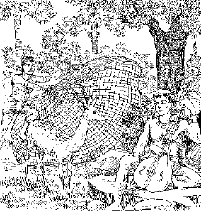
गायन-वादनपर मोहित हरिनका जालमें फँसना
नृत्यवादित्रगीतानि जुषन् ग्राम्याणि योषिताम्।
आसां क्रीडनको वश्य ऋष्यशृङ्गो मृगीसुत:॥ १८॥
तुम्हें इस बातका पता है कि हरिनीके गर्भसे पैदा हुए ऋष्यशृंग मुनि स्त्रियोंका विषय-सम्बन्धी गाना-बजाना, नाचना आदि देख-सुनकर उनके वशमें हो गये थे और उनके हाथकी कठपुतली बन गये थे॥ १८॥
जिह्वयातिप्रमाथिन्या जनो रसविमोहित:।
मृत्युमृच्छत्यसद्बुद्धिर्मीनस्तु बडिशैर्यथा॥ १९॥
अब मैं तुम्हें मछलीकी सीख सुनाता हूँ। जैसे मछली काँटेमें लगे हुए मांसके टुकड़ेके लोभसे अपने प्राण गँवा देती है, वैसे ही स्वादका लोभी दुर्बुद्धि मनुष्य भी अपने मनको मथकर व्याकुल कर देनेवाली अपनी जिह्वाके वशमें हो जाता है और मारा जाता है॥ १९॥
इन्द्रियाणि जयन्त्याशु निराहारा मनीषिण:।
वर्जयित्वा तु रसनं तन्निरन्नस्य वर्धते॥ २०॥
विवेकी पुरुष भोजन बन्द करके दूसरी इन्द्रियोंपर तो बहुत शीघ्र विजय प्राप्त कर लेते हैं, परन्तु इससे उनकी रसना-इन्द्रिय वशमें नहीं होती। वह तो भोजन बन्द कर देनेसे और भी प्रबल हो जाती है॥ २०॥
तावज्जितेन्द्रियो न स्याद् विजितान्येन्द्रिय: पुमान्।
न जयेद् रसनं यावज्जितं सर्वं जिते रसे॥ २१॥
मनुष्य और सब इन्द्रियोंपर विजय प्राप्त कर लेनेपर भी तबतक जितेन्द्रिय नहीं हो सकता, जबतक रसनेन्द्रियको अपने वशमें नहीं कर लेता। और यदि रसनेन्द्रियको वशमें कर लिया, तब तो मानो सभी इन्द्रियाँ वशमें हो गयीं॥ २१॥
पिङ्गला नाम वेश्यासीद् विदेहनगरे पुरा।
तस्या मे शिक्षितं किञ्चिन्निबोध नृपनन्दन॥ २२॥
नृपनन्दन! प्राचीन कालकी बात है कि विदेहनगरी मिथिलामें एक वेश्या रहती थी। उसका नाम था पिंगला। मैंने उससे जो कुछ शिक्षा ग्रहण की, वह मैं तुम्हें सुनाता हूँ; सावधान होकर सुनो॥ २२॥
सा स्वैरिण्येकदा कान्तं सङ्केत उपनेष्यती।
अभूत् काले बहिर्द्वारि बिभ्रती रूपमुत्तमम्॥ २३॥
वह स्वेच्छाचारिणी तो थी ही, रूपवती भी थी। एक दिन रात्रिके समय किसी पुरुषको अपने रमणस्थानमें लानेके लिये खूब बन-ठनकर—उत्तम वस्त्राभूषणोंसे सजकर बहुत देरतक अपने घरके बाहरी दरवाजेपर खड़ी रही॥ २३॥
मार्ग आगच्छतो वीक्ष्य पुरुषान् पुरुषर्षभ।
ताञ्छुल्कदान् वित्तवत: कान्तान् मेनेऽर्थकामुका॥ २४॥
नररत्न! उसे पुरुषकी नहीं, धनकी कामना थी और उसके मनमें यह कामना इतनी दृढ़मूल हो गयी थी कि वह किसी भी पुरुषको उधरसे आते-जाते देखकर यही सोचती कि यह कोई धनी है और मुझे धन देकर उपभोग करनेके लिये ही आ रहा है॥ २४॥
आगतेष्वपयातेषु सा सङ्केतोपजीविनी।
अप्यन्यो वित्तवान् कोऽपि मामुपैष्यति भूरिद:॥ २५॥
जब आने-जानेवाले आगे बढ़ जाते, तब फिर वह संकेतजीविनी वेश्या यही सोचती कि अवश्य ही अबकी बार कोई ऐसा धनी मेरे पास आयेगा जो मुझे बहुत-सा धन देगा॥ २५॥
एवं दुराशया ध्वस्तनिद्रा द्वार्यवलम्बती।
निर्गच्छन्ती प्रविशती निशीथं समपद्यत॥ २६॥
उसके चित्तकी यह दुराशा बढ़ती ही जाती थी। वह दरवाजेपर बहुत देरतक टँगी रही। उसकी नींद भी जाती रही। वह कभी बाहर आती तो कभी भीतर जाती। इस प्रकार आधी रात हो गयी॥ २६॥
तस्या वित्ताशया शुष्यद्वक्त्राया दीनचेतस:।
निर्वेद: परमो जज्ञे चिन्ताहेतु: सुखावह:॥ २७॥
राजन्! सचमुच आशा और सो भी धनकी—बहुत बुरी है। धनीकी बाट जोहते-जोहते उसका मुँह सूख गया, चित्त व्याकुल हो गया। अब उसे इस वृत्तिसे बड़ा वैराग्य हुआ। उसमें दु:ख-बुद्धि हो गयी। इसमें सन्देह नहीं कि इस वैराग्यका कारण चिन्ता ही थी। परन्तु ऐसा वैराग्य भी है तो सुखका ही हेतु॥ २७॥
तस्या निर्विण्णचित्ताया गीतं शृणु यथा मम।
निर्वेद आशापाशानां पुरुषस्य यथा ह्यसि:॥ २८॥
जब पिंगलाके चित्तमें इस प्रकार वैराग्यकी भावना जाग्रत् हुई, तब उसने एक गीत गाया। वह मैं तुम्हें सुनाता हूँ। राजन्! मनुष्य आशाकी फाँसीपर लटक रहा है। इसको तलवारकी तरह काटनेवाली यदि कोई वस्तु है तो वह केवल वैराग्य है॥ २८॥
न ह्यङ्गाज्जातनिर्वेदो देहबन्धं जिहासति।
यथा विज्ञानरहितो मनुजो ममतां नृप॥ २९॥
प्रिय राजन्! जिसे वैराग्य नहीं हुआ है, जो इन बखेड़ोंसे ऊबा नहीं है, वह शरीर और इसके बन्धनसे उसी प्रकार मुक्त नहीं होना चाहता, जैसे अज्ञानी पुरुष ममता छोड़नेकी इच्छा भी नहीं करता॥ २९॥
पिङ्गलोवाच
अहो मे मोहविततिं पश्यताविजितात्मन:।
या कान्तादसत: कामं कामये येन बालिशा॥ ३०॥
पिंगलाने यह गीत गाया था— हाय! हाय! मैं इन्द्रियोंके अधीन हो गयी! भला मेरे मोहका विस्तार तो देखो, मैं इन दुष्ट पुरुषोंसे, जिनका कोई अस्तित्व ही नहीं है, विषयसुखकी लालसा करती हूँ। कितने दु:खकी बात है! मैं सचमुच मूर्ख हूँ॥ ३०॥
सन्तं समीपे रमणं रतिप्रदं
वित्तप्रदं नित्यमिमं विहाय।
अकामदं दु:खभयाधिशोक-
मोहप्रदं तुच्छमहं भजेऽज्ञा॥ ३१॥
देखो तो सही, मेरे निकट-से-निकट हृदयमें ही मेरे सच्चे स्वामी भगवान् विराजमान हैं। वे वास्तविक प्रेम, सुख और परमार्थका सच्चा धन भी देनेवाले हैं। जगत्के पुरुष अनित्य हैं और वे नित्य हैं। हाय! हाय! मैंने उनको तो छोड़ दिया और उन तुच्छ मनुष्योंका सेवन किया, जो मेरी एक भी कामना पूरी नहीं कर सकते; उलटे दु:ख, भय, आधि-व्याधि, शोक और मोह ही देते हैं। यह मेरी मूर्खताकी हद है कि मैं उनका सेवन करती हूँ॥ ३१॥
अहो मयात्मा परितापितो वृथा
साङ्केत्यवृत्त्यातिविगर्ह्यवार्तया।
स्त्रैणान्नराद् यार्थतृषोऽनुशोच्यात्
क्रीतेन वित्तं रतिमात्मनेच्छती॥ ३२॥
बड़े खेदकी बात है, मैंने अत्यन्त निन्दनीय आजीविका वेश्यावृत्तिका आश्रय लिया और व्यर्थमें अपने शरीर और मनको क्लेश दिया, पीड़ा पहुँचायी। मेरा यह शरीर बिक गया है। लम्पट, लोभी और निन्दनीय मनुष्योंने इसे खरीद लिया है और मैं इतनी मूर्ख हूँ कि इसी शरीरसे धन और रति-सुख चाहती हूँ। मुझे धिक्कार है!॥ ३२॥
यदस्थिभिर्निर्मितवंशवंश्य-
स्थूणं त्वचा रोमनखै: पिनद्धम्।
क्षरन्नवद्वारमगारमेतद्
विण्मूत्रपूर्णं मदुपैति कान्या॥ ३३॥
यह शरीर एक घर है। इसमें हड्डियोंके टेढ़े-तिरछे बाँस और खम्भे लगे हुए हैं; चाम, रोएँ और नाखूनोंसे यह छाया गया है। इसमें नौ दरवाजे हैं, जिनसे मल निकलते ही रहते हैं। इसमें सञ्चित सम्पत्तिके नामपर केवल मल और मूत्र हैं। मेरे अतिरिक्त ऐसी कौन स्त्री है, जो इस स्थूलशरीरको अपना प्रिय समझकर सेवन करेगी॥ ३३॥
विदेहानां पुरे ह्यस्मिन्नहमेकैव मूढधी:।
यान्यमिच्छन्त्यसत्यस्मादात्मदात् काममच्युतात्॥ ३४॥
यों तो यह विदेहोंकी—जीवन्मुक्तोंकी नगरी है, परन्तु इसमें मैं ही सबसे मूर्ख और दुष्ट हूँ; क्योंकि अकेली मैं ही तो आत्मदानी, अविनाशी एवं परमप्रियतम परमात्माको छोड़कर दूसरे पुरुषकी अभिलाषा करती हूँ॥ ३४॥
सुहृत् प्रेष्ठतमो नाथ आत्मा चायं शरीरिणाम्।
तं विक्रीयात्मनैवाहं रमेऽनेन यथा रमा॥ ३५॥
मेरे हृदयमें विराजमान प्रभु समस्त प्राणियोंके हितैषी, सुहृद्, प्रियतम, स्वामी और आत्मा हैं। अब मैं अपने-आपको देकर इन्हें खरीद लूँगी और इनके साथ वैसे ही विहार करूँगी, जैसे लक्ष्मीजी करती हैं॥ ३५॥
कियत् प्रियं ते व्यभजन् कामा ये कामदा नरा:।
आद्यन्तवन्तो भार्याया देवा वा कालविद्रुता:॥ ३६॥
मेरे मूर्ख चित्त! तू बतला तो सही, जगत्के विषयभोगोंने और उनको देनेवाले पुरुषोंने तुझे कितना सुख दिया है। अरे! वे तो स्वयं ही पैदा होते और मरते रहते हैं। मैं केवल अपनी ही बात नहीं कहती, केवल मनुष्योंकी भी नहीं; क्या देवताओंने भी भोगोंके द्वारा अपनी पत्नियोंको सन्तुष्ट किया है? वे बेचारे तो स्वयं कालके गालमें पड़े-पड़े कराह रहे हैं॥ ३६॥
नूनं मे भगवान् प्रीतो विष्णु: केनापि कर्मणा।
निर्वेदोऽयं दुराशाया यन्मे जात: सुखावह:॥ ३७॥
अवश्य ही मेरे किसी शुभकर्मसे विष्णुभगवान् मुझपर प्रसन्न हैं, तभी तो दुराशासे मुझे इस प्रकार वैराग्य हुआ है। अवश्य ही मेरा यह वैराग्य सुख देनेवाला होगा॥ ३७॥
मैवं स्युर्मन्दभाग्याया: क्लेशा निर्वेदहेतव:।
येनानुबन्धं निर्हृत्य पुरुष: शममृच्छति॥ ३८॥
यदि मैं मन्दभागिनी होती तो मुझे ऐसे दु:ख ही न उठाने पड़ते, जिनसे वैराग्य होता है। मनुष्य वैराग्यके द्वारा ही घर आदिके सब बन्धनोंको काटकर शान्तिलाभ करता है॥ ३८॥
तेनोपकृतमादाय शिरसा ग्राम्यसङ्गता:।
त्यक्त्वा दुराशा: शरणं व्रजामि तमधीश्वरम्॥ ३९॥
अब मैं भगवान्का यह उपकार आदरपूर्वक सिर झुकाकर स्वीकार करती हूँ और विषयभोगोंकी दुराशा छोड़कर उन्हीं जगदीश्वरकी शरण ग्रहण करती हूँ॥ ३९॥
सन्तुष्टा श्रद्दधत्येतद्यथालाभेन जीवती।
विहराम्यमुनैवाहमात्मना रमणेन वै॥ ४०॥
अब मुझे प्रारब्धके अनुसार जो कुछ मिल जायगा, उसीसे निर्वाह कर लूँगी और बड़े सन्तोष तथा श्रद्धाके साथ रहूँगी। मैं अब किसी दूसरे पुरुषकी ओर न ताककर अपने हृदयेश्वर, आत्मस्वरूप प्रभुके साथ ही विहार करूँगी॥ ४०॥
संसारकूपे पतितं विषयैर्मुषितेक्षणम्।
ग्रस्तं कालाहिनात्मानं कोऽन्यस्त्रातुमधीश्वर:॥ ४१॥
यह जीव संसारके कुएँमें गिरा हुआ है। विषयोंने इसे अन्धा बना दिया है, कालरूपी अजगरने इसे अपने मुँहमें दबा रखा है। अब भगवान्को छोड़कर इसकी रक्षा करनेमें दूसरा कौन समर्थ है॥ ४१॥
आत्मैव ह्यात्मनो गोप्ता निर्विद्येत यदाखिलात्।
अप्रमत्त इदं पश्येद् ग्रस्तं कालाहिना जगत्॥ ४२॥
जिस समय जीव समस्त विषयोंसे विरक्त हो जाता है, उस समय वह स्वयं ही अपनी रक्षा कर लेता है। इसलिये बड़ी सावधानीके साथ यह देखते रहना चाहिये कि सारा जगत् कालरूपी अजगरसे ग्रस्त है॥ ४२॥
ब्राह्मण उवाच
एवं व्यवसितमतिर्दुराशां कान्ततर्षजाम्।
छित्त्वोपशममास्थाय शय्यामुपविवेश सा॥ ४३॥
अवधूत दत्तात्रेयजी कहते हैं—राजन्! पिंगला वेश्याने ऐसा निश्चय करके अपने प्रिय धनियोंकी दुराशा, उनसे मिलनेकी लालसाका परित्याग कर दिया और शान्तभावसे जाकर वह अपनी सेजपर सो रही॥ ४३॥
आशा हि परमं दु:खं नैराश्यं परमं सुखम्।
यथा सञ्छिद्य कान्ताशां सुखं सुष्वाप पिङ्गला॥ ४४॥
सचमुच आशा ही सबसे बड़ा दु:ख है और निराशा ही सबसे बड़ा सुख है; क्योंकि पिंगला वेश्याने जब पुरुषकी आशा त्याग दी, तभी वह सुखसे सो सकी॥ ४४॥
॥ इति श्रीमद्भागवते महापुराणे पारमहंस्यां संहितायामेकादशस्कन्धे अवधूतगीतायां द्वितीयोऽध्याय:॥ २॥
तीसरा अध्याय
कुररसे लेकर भृंगीतक सात गुरुओंकी कथा
ब्राह्मण उवाच
परिग्रहो हि दु:खाय यद् यत्प्रियतमं नृणाम्।
अनन्तं सुखमाप्नोति तद् विद्वान् यस्त्वकिञ्चन:॥ १॥
अवधूत दत्तात्रेयजीने कहा—राजन्! मनुष्योंको जो वस्तुएँ अत्यन्त प्रिय लगती हैं, उन्हें इकट्ठा करना ही उनके दु:खका कारण है। जो बुद्धिमान् पुरुष यह बात समझकर अकिंचनभावसे रहता है—शरीरकी तो बात ही अलग, मनसे भी किसी वस्तुका संग्रह नहीं करता—उसे अनन्त सुखस्वरूप परमात्माकी प्राप्ति होती है॥ १॥
सामिषं कुररं जघ्नुर्बलिनो ये निरामिषा:।
तदामिषं परित्यज्य स सुखं समविन्दत॥ २॥
एक कुरर (क्रौंच) पक्षी अपनी चोंचमें मांसका टुकड़ा लिये हुए था। उस समय दूसरे बलवान् पक्षी, जिनके पास मांस नहीं था, उससे छीननेके लिये उसे घेरकर चोंचें मारने लगे। जब कुरर पक्षीने अपनी चोंचसे मांसका टुकड़ा फेंक दिया, तभी उसे सुख मिला॥ २॥
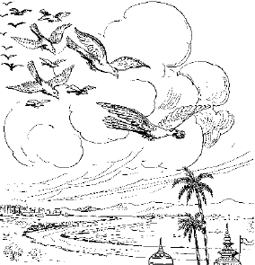
मांसके टुकड़ेके लिये क्रौंचपक्षीको दूसरे पक्षियोंद्वारा मारना
न मे मानावमानौ स्तो न चिन्ता गेहपुत्रिणाम्।
आत्मक्रीड आत्मरतिर्विचरामीह बालवत्॥ ३॥
मुझे मान या अपमानका कोई ध्यान नहीं है और घर एवं परिवारवालोंको जो चिन्ता होती है, वह मुझे नहीं है। मैं अपने आत्मामें ही रमता हूँ और अपने साथ ही क्रीडा करता हूँ। यह शिक्षा मैंने बालकसे ली है। अत: उसीके समान मैं भी मौजसे रहता हूँ॥ ३॥
द्वावेव चिन्तया मुक्तौ परमानन्द आप्लुतौ।
यो विमुग्धो जडो बालो यो गुणेभ्य: परं गत:॥ ४॥
इस जगत्में दो ही प्रकारके व्यक्ति निश्चिन्त और परमानन्दमें मग्न रहते हैं—एक पुरुष तो भोला-भाला निश्चेष्ट नन्हा-सा बालक और दूसरा वह पुरुष जो गुणातीत हो गया हो॥ ४॥
क्वचित् कुमारी त्वात्मानं वृणानान् गृहमागतान्।
स्वयं तानर्हयमास क्वापि यातेषु बन्धुषु॥ ५॥
एक बार किसी कुमारी कन्याके घर उसे वरण करनेके लिये कई लोग आये हुए थे। उस दिन उसके घरके लोग कहीं बाहर गये हुए थे। इसलिये उसने स्वयं ही उनका आतिथ्य-सत्कार किया॥ ५॥
तेषामभ्यवहारार्थं शालीन् रहसि पार्थिव।
अवघ्नन्त्या: प्रकोष्ठस्थाश्चक्रु: शङ्खा: स्वनं महत्॥ ६॥
राजन्! उनको भोजन करानेके लिये वह घरके भीतर एकान्तमें धान कूटने लगी। उस समय उसकी कलाईमें पड़ी शंखकी चूड़ियाँ जोर-जोरसे बज रही थीं॥ ६॥
सा तज्जुगुप्सितं मत्वा महती व्रीडिता तत:।
बभञ्जैकैकश: शङ्खान् द्वौ द्वौ पाण्योरशेषयत्॥ ७॥
इस शब्दको निन्दित समझकर कुमारीको बड़ी लज्जा मालूम हुई* और उसने एक-एक करके सब चूड़ियाँ तोड़ डालीं और दोनों हाथोंमें केवल दो-दो चूड़ियाँ रहने दीं॥ ७॥
* क्योंकि उससे उसका स्वयं धान कूटना सूचित होता था, जो कि उसकी दरिद्रताका द्योतक था।
उभयोरप्यभूद् घोषो ह्यवघ्नन्त्या: स्म शङ्खयो:।
तत्राप्येकं निरभिददेकस्मान्नाभवद् ध्वनि:॥ ८॥
अब वह फिर धान कूटने लगी। परन्तु वे दो-दो चूड़ियाँ भी बजने लगीं, तब उसने एक-एक चूड़ी और तोड़ दी। जब दोनों कलाइयोंमें केवल एक-एक चूड़ी रह गयी, तब किसी प्रकारकी आवाज नहीं हुई॥ ८॥
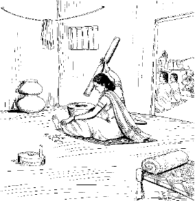
कुमारीद्वारा दोनों हाथोंकी एक-एक चूड़ी छोड़कर शेष तोड़नेसे आवाज बन्द
अन्वशिक्षमिमं तस्या उपदेशमरिन्दम।
लोकाननुचरन्नेताँल्लोकतत्त्वविवित्सया॥ ९॥
वासे बहूनां कलहो भवेद् वार्ता द्वयोरपि।
एक एव चरेत्तस्मात् कुमार्या इव कङ्कण:॥ १०॥
रिपुदमन! उस समय लोगोंका आचार-विचार निरखने-परखनेके लिये इधर-उधर घूमता-घामता मैं भी वहाँ पहुँच गया था। मैंने उससे यह शिक्षा ग्रहण की कि जब बहुत लोग एक साथ रहते हैं तब कलह होता है और दो आदमी साथ रहते हैं तब भी बातचीत तो होती ही है; इसलिये कुमारी कन्याकी चूड़ीके समान अकेले ही विचरना चाहिये॥ ९-१०॥
मन एकत्र संयुज्याज्जितश्वासो जितासन:।
वैराग्याभ्यासयोगेन ध्रियमाणमतन्द्रित:॥ ११॥
राजन्! मैंने बाण बनानेवालेसे यह सीखा है कि आसन और श्वासको जीतकर वैराग्य और अभ्यासके द्वारा अपने मनको वशमें कर ले और फिर बड़ी सावधानीके साथ उसे एक लक्ष्यमें लगा दे॥ ११॥
यस्मिन् मनो लब्धपदं यदेत-
च्छनै: शनैर्मुञ्चति कर्मरेणून्।
सत्त्वेन वृद्धेन रजस्तमश्च
विधूय निर्वाणमुपैत्यनिन्धनम्॥ १२॥
जब परमानन्दस्वरूप परमात्मामें मन स्थिर हो जाता है, तब वह धीरे-धीरे कर्मवासनाओंकी धूलको धो बहाता है। सत्त्वगुणकी वृद्धिसे रजोगुणी और तमोगुणी वृत्तियोंका त्याग करके मन वैसे ही शान्त हो जाता है, जैसे ईंधनके बिना अग्नि॥ १२॥
तदैवमात्मन्यवरुद्धचित्तो
न वेद किञ्चिद् बहिरन्तरं वा।
यथेषुकारो नृपतिं व्रजन्त-
मिषौ गतात्मा न ददर्श पार्श्वे॥ १३॥
इस प्रकार जिसका चित्त अपने आत्मामें ही स्थिर—निरुद्ध हो जाता है, उसे बाहर-भीतर कहीं किसी पदार्थका भान नहीं होता। मैंने देखा था कि एक बाण बनानेवाला कारीगर बाण बनानेमें इतना तन्मय हो रहा था कि उसके पाससे ही दलबलके साथ राजाकी सवारी निकल गयी और उसे पतातक न चला॥ १३॥
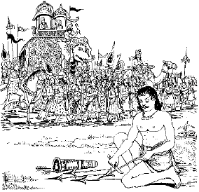
तन्मयताके कारण बाण बनानेवालेको राजाकी सवारीका भान न होना
एकचार्यनिकेत: स्यादप्रमत्तो गुहाशय:।
अलक्ष्यमाण आचारैर्मुनिरेकोऽल्पभाषण:॥ १४॥
राजन्! मैंने साँपसे यह शिक्षा ग्रहण की है कि संन्यासीको सर्पकी भाँति अकेले ही विचरण करना चाहिये, उसे मण्डली नहीं बाँधनी चाहिये, मठ तो बनाना ही नहीं चाहिये। वह एक स्थानमें न रहे, प्रमाद न करे, गुहा आदिमें पड़ा रहे, बाहरी आचारोंसे पहचाना न जाय। किसीसे सहायता न ले और बहुत कम बोले॥ १४॥
गृहारम्भोऽतिदु:खाय विफलश्चाध्रुवात्मन:।
सर्प: परकृतं वेश्म प्रविश्य सुखमेधते॥ १५॥
इस अनित्य शरीरके लिये घर बनानेके बखेड़ेमें पड़ना व्यर्थ और दु:खकी जड़ है। साँप दूसरेके बनाये घरमें घुसकर बड़े आरामसे अपना समय काटता है॥ १५॥
एको नारायणो देव: पूर्वसृष्टं स्वमायया।
संहृत्य कालकलया कल्पान्त इदमीश्वर:॥ १६॥
एक एवाद्वितीयोऽभूदात्माधारोऽखिलाश्रय:।
कालेनात्मानुभावेन साम्यं नीतासु शक्तिषु।
सत्त्वादिष्वादिपुरुष: प्रधानपुरुषेश्वर:॥ १७॥
परावराणां परम आस्ते कैवल्यसंज्ञित:।
केवलानुभवानन्दसन्दोहो निरुपाधिक:॥ १८॥
केवलात्मानुभावेन स्वमायां त्रिगुणात्मिकाम्।
संक्षोभयन् सृजत्यादौ तया सूत्रमरिन्दम॥ १९॥
तामाहुस्त्रिगुणव्यक्तिं सृजन्तीं विश्वतोमुखम्।
यस्मिन् प्रोतमिदं विश्वं येन संसरते पुमान्॥ २०॥
अब मकड़ीसे ली हुई शिक्षा सुनो। सबके प्रकाशक और अन्तर्यामी सर्वशक्तिमान् भगवान्ने पूर्वकल्पमें बिना किसी अन्य सहायकके अपनी ही मायासे रचे हुए जगत्को कल्पके अन्तमें (प्रलयकाल उपस्थित होनेपर) कालशक्तिके द्वारा नष्ट कर दिया—उसे अपनेमें लीन कर लिया और सजातीय, विजातीय तथा स्वगतभेदसे शून्य अकेले ही शेष रह गये। वे सबके अधिष्ठान हैं, सबके आश्रय हैं, परन्तु स्वयं अपने आश्रय—अपने ही आधारसे रहते हैं, उनका कोई दूसरा आधार नहीं है। वे प्रकृति और पुरुष दोनोंके नियामक, कार्य और कारणात्मक जगत्के आदिकारण परमात्मा अपनी शक्ति कालके प्रभावसे सत्त्व-रज आदि समस्त शक्तियोंको साम्यावस्थामें पहुँचा देते हैं और स्वयं कैवल्यरूपसे एक और अद्वितीयरूपसे विराजमान रहते हैं। वे केवल अनुभवस्वरूप और आनन्दघनमात्र हैं। किसी भी प्रकारकी उपाधिका उनसे सम्बन्ध नहीं है। वे ही प्रभु केवल अपनी शक्ति कालके द्वारा अपनी त्रिगुणमयी मायाको क्षुब्ध करते हैं और उससे पहले क्रियाशक्ति-प्रधान सूत्र (महत्तत्त्व) की रचना करते हैं। यह सूत्ररूप महत्तत्त्व ही तीनों गुणोंकी पहली अभिव्यक्ति है, वही सब प्रकारकी सृष्टिका मूल कारण है। उसीमें यह सारा विश्व, सूतमें ताने-बानेकी तरह ओतप्रोत है और इसीके कारण जीवको जन्म-मृत्युके चक्करमें पड़ना पड़ता है॥ १६—२०॥
यथोर्णनाभिर्हृदयादूर्णां सन्तत्य वक्त्रत:।
तया विहृत्य भूयस्तां ग्रसत्येवं महेश्वर:॥ २१॥
जैसे मकड़ी अपने हृदयसे मुँहके द्वारा जाला फैलाती है, उसीमें विहार करती है और फिर उसे निगल जाती है, वैसे ही परमेश्वर भी इस जगत्को अपनेमेंसे उत्पन्न करते हैं, उसमें जीवरूपसे विहार करते हैं और फिर उसे अपनेमें लीन कर लेते हैं॥ २१॥
यत्र यत्र मनो देही धारयेत् सकलं धिया।
स्नेहाद् द्वेषाद् भयाद् वापि याति तत्तत्सरूपताम्॥ २२॥
राजन्! मैंने भृंगी (बिलनी) कीड़ेसे यह शिक्षा ग्रहण की है कि यदि प्राणी स्नेहसे, द्वेषसे अथवा भयसे भी जान-बूझकर एकाग्ररूपसे अपना मन किसीमें लगा दे तो उसे उसी वस्तुका स्वरूप प्राप्त हो जाता है॥ २२॥
कीट: पेशस्कृतं ध्यायन् कुडॺां तेन प्रवेशित:।
याति तत्सात्मतां राजन् पूर्वरूपमसन्त्यजन्॥ २३॥
राजन्! जैसे भृंगी एक कीड़ेको ले जाकर दीवारपर अपने रहनेकी जगह बन्द कर देता है और वह कीड़ा भयसे उसीका चिन्तन करते-करते अपने पहले शरीरका त्याग किये बिना ही उसी शरीरसे तद्रूप हो जाता है*॥ २३॥
* जब उसी शरीरसे चिन्तन किये रूपकी प्राप्ति हो जाती है, तब दूसरे शरीरसे तो कहना ही क्या है? इसीलिये मनुष्यको अन्य वस्तुका चिन्तन न करके केवल परमात्माका ही चिन्तन करना चाहिये।
एवं गुरुभ्य एतेभ्य एषा मे शिक्षिता मति:।
स्वात्मोपशिक्षितां बुद्धिं शृणु मे वदत: प्रभो॥ २४॥
राजन्! इस प्रकार मैंने इतने गुरुओंसे ये शिक्षाएँ ग्रहण कीं। अब मैंने अपने शरीरसे जो कुछ सीखा है, वह तुम्हें बताता हूँ, सावधान होकर सुनो॥ २४॥
देहो गुरुर्मम विरक्तिविवेकहेतु-
र्बिभ्रत् स्म सत्त्वनिधनं सततार्त्युदर्कम्।
तत्त्वान्यनेन विमृशामि यथा तथापि
पारक्यमित्यवसितो विचराम्यसङ्ग:॥ २५॥
यह शरीर भी मेरा गुरु ही है; क्योंकि यह मुझे विवेक और वैराग्यकी शिक्षा देता है। मरना और जीना तो इसके साथ लगा ही रहता है। इस शरीरको पकड़ रखनेका फल यह है कि दु:ख-पर-दु:ख भोगते जाओ। यद्यपि इस शरीरसे तत्त्वविचार करनेमें सहायता मिलती है, तथापि मैं इसे अपना कभी नहीं समझता; सर्वदा यही निश्चय रखता हूँ कि एक दिन इसे सियार-कुत्ते खा जायँगे। इसीलिये मैं इससे असंग होकर विचरता हूँ॥ २५॥
जायात्मजार्थपशुभृत्यगृहाप्तवर्गान्
पुष्णाति यत्प्रियचिकीर्षुतया वितन्वन्।
स्वान्ते सकृच्छ्रमवरुद्धधन: स देह:
सृष्ट्वास्य बीजमवसीदति वृक्षधर्मा॥ २६॥
जीव जिस शरीरका प्रिय करनेके लिये ही अनेकों प्रकारकी कामनाएँ और कर्म करता है तथा स्त्री-पुत्र, धन-दौलत, हाथी-घोड़े, नौकर-चाकर, घर-द्वार और भाई-बन्धुओंका विस्तार करते हुए उनके पालन-पोषणमें लगा रहता है। बड़ी-बड़ी कठिनाइयाँ सहकर धनसंचय करता है। आयुष्य पूरी होनेपर वही शरीर स्वयं तो नष्ट होता ही है, वृक्षके समान दूसरे शरीरके लिये बीज बोकर उसके लिये भी दु:खकी व्यवस्था कर जाता है॥ २६॥
जिह्वैकतोऽमुमपकर्षति कर्हि तर्षा
शिश्नोऽन्यतस्त्वगुदरं श्रवणं कुतश्चित्।
घ्राणोऽन्यतश्चपलदृक् क्व च कर्मशक्ति-
र्बह्वॺ: सपत्नॺ इव गेहपतिं लुनन्ति॥ २७॥
जैसे बहुत-सी सौतें अपने एक पतिको अपनी-अपनी ओर खींचती हैं, वैसे ही जीवको जीभ एक ओर—स्वादिष्ट पदार्थोंकी ओर खींचती है तो प्यास दूसरी ओर—जलकी ओर; जननेन्द्रिय एक ओर—स्त्रीसंभोगकी ओर ले जाना चाहती है तो त्वचा, पेट और कान दूसरी ओर—कोमल स्पर्श, भोजन और मधुर शब्दकी ओर खींचने लगते हैं। नाक कहीं सुन्दर गन्ध सूँघनेके लिये ले जाना चाहती है तो चंचल नेत्र कहीं दूसरी ओर सुन्दर रूप देखनेके लिये। इस प्रकार कर्मेन्द्रियाँ और ज्ञानेन्द्रियाँ दोनों ही इसे सताती रहती हैं॥ २७॥
सृष्ट्वा पुराणि विविधान्यजयात्मशक्त्या
वृक्षान् सरीसृपपशून् खगदंशमत्स्यान्।
तैस्तैरतुष्टहृदय: पुरुषं विधाय
ब्रह्मावलोकधिषणं मुदमाप देव:॥ २८॥
वैसे तो भगवान्ने अपनी अचिन्त्य शक्ति मायासे वृक्ष, सरीसृप (रेंगनेवाले जन्तु), पशु, पक्षी, डाँस और मछली आदि अनेकों प्रकारकी योनियाँ रचीं; परन्तु उनसे उन्हें सन्तोष न हुआ। तब उन्होंने मनुष्यशरीरकी सृष्टि की। यह ऐसी बुद्धिसे युक्त है, जो ब्रह्मका साक्षात्कार कर सकती है। इसकी रचना करके वे बहुत आनन्दित हुए॥ २८॥
लब्ध्वा सुदुर्लभमिदं बहुसम्भवान्ते
मानुष्यमर्थदमनित्यमपीह धीर:।
तूर्णं यतेत न पतेदनुमृत्यु याव-
न्नि:श्रेयसाय विषय: खलु सर्वत: स्यात्॥ २९॥
यद्यपि यह मनुष्य-शरीर है तो अनित्य ही—मृत्यु सदा इसके पीछे लगी रहती है। परन्तु इससे परमपुरुषार्थकी प्राप्ति हो सकती है; इसलिये अनेक जन्मोंके बाद यह अत्यन्त दुर्लभ मनुष्य-शरीर पाकर बुद्धिमान् पुरुषको चाहिये कि शीघ्र-से-शीघ्र, मृत्युके पहले ही मोक्ष-प्राप्तिका प्रयत्न कर ले। इस जीवनका मुख्य उद्देश्य मोक्ष ही है। विषयभोग तो सभी योनियोंमें प्राप्त हो सकते हैं, इसलिये उनके संग्रहमें यह अमूल्य जीवन नहीं खोना चाहिये॥ २९॥
एवं सञ्जातवैराग्यो विज्ञानालोक आत्मनि।
विचरामि महीमेतां मुक्तसङ्गोऽनहङ्कृति:॥ ३०॥
राजन्! यही सब सोच-विचारकर मुझे जगत्से वैराग्य हो गया। मेरे हृदयमें ज्ञान-विज्ञानकी ज्योति जगमगाती रहती है। न तो कहीं मेरी आसक्ति है और न कहीं अहंकार ही। अब मैं स्वच्छन्दरूपसे इस पृथ्वीमें विचरण करता हूँ॥ ३०॥
न ह्येकस्माद् गुरोर्ज्ञानं सुस्थिरं स्यात् सुपुष्कलम्।
ब्रह्मैतदद्वितीयं वै गीयते बहुधर्षिभि:॥ ३१॥
राजन्! अकेले गुरुसे ही यथेष्ट और सुदृढ़ बोध नहीं होता, उसके लिये अपनी बुद्धिसे भी बहुत-कुछ सोचने-समझनेकी आवश्यकता है। देखो! ऋषियोंने एक ही अद्वितीय ब्रह्मका अनेकों प्रकारसे गान किया है। (यदि तुम स्वयं विचारकर निर्णय न करोगे, तो ब्रह्मके वास्तविक स्वरूपको कैसे जान सकोगे?)॥ ३१॥
श्रीभगवानुवाच
इत्युक्त्वा स यदुं विप्रस्तमामन्त्रॺ गभीरधी:।
वन्दितोऽभ्यर्थितो राज्ञा ययौ प्रीतो यथागतम्॥ ३२॥
भगवान् श्रीकृष्णने कहा—प्यारे उद्धव! गम्भीर-बुद्धि अवधूत दत्तात्रेयने राजा यदुको इस प्रकार उपदेश किया। यदुने उनकी पूजा और वन्दना की, दत्तात्रेयजी उनसे अनुमति लेकर बड़ी प्रसन्नतासे इच्छानुसार पधार गये॥ ३२॥
अवधूतवच: श्रुत्वा पूर्वेषां न: स पूर्वज:।
सर्वसङ्गविनिर्मुक्त: समचित्तो बभूव ह॥ ३३॥
हमारे पूर्वजोंके भी पूर्वज राजा यदु अवधूत दत्तात्रेयकी यह बात सुनकर समस्त आसक्तियोंसे छुटकारा पा गये और समदर्शी हो गये। (इसी प्रकार तुम्हें भी समस्त आसक्तियोंका परित्याग करके समदर्शी हो जाना चाहिये)॥ ३३॥
॥ इति श्रीमद्भागवते महापुराणे पारमहंस्यां संहितायामेकादशस्कन्धे अवधूतगीतायां तृतीयोऽध्याय:॥ ३॥
॥ अवधूतगीता सम्पूर्णा॥
जीवन्मुक्तगीता
[वेदान्तसारसे ओत-प्रोत अत्यन्त लघुकलेवरवाली जीवन्मुक्तगीता श्रीदत्तात्रेयजीकी रचना है, जिसमें अत्यन्त संक्षिप्त, पर सारगर्भित ढंगसे सहज-सुबोध दृष्टान्तोंद्वारा जीव तथा ब्रह्मके एकत्वका प्रतिपादन किया गया है, साथ ही जीवन्मुक्त-अवस्थाको भी सम्यक् रूपसे परिभाषित किया गया है। इसी साधकोपयोगी गीताको यहाँ सानुवाद प्रस्तुत किया जा रहा है—]
जीवन्मुक्तिश्च या मुक्ति: सा मुक्ति: पिण्डपातने।
या मुक्ति: पिण्डपातेन सा मुक्ति: शुनि शूकरे॥ १॥
अपने शरीरकी आसक्तिका त्याग (देहबुद्धिका त्याग) ही वस्तुत: जीवन्मुक्ति है। शरीरके नाश होनेपर शरीरसे जो मुक्ति (मृत्यु) होती है, वह तो कूकर-शूकर आदि समस्त प्राणियोंको भी प्राप्त ही है॥ १॥
जीव: शिव: सर्वमेव भूतेष्वेवं व्यवस्थित:।
एवमेवाभिपश्यन् हि जीवन्मुक्त: स उच्यते॥ २॥
शिव (परमात्मा) ही सभी प्राणियोंमें जीवरूपसे विराजमान हैं—इस प्रकार देखनेवाला अर्थात् सर्वत्र भगवद्दर्शन करनेवाला मनुष्य ही वस्तुत: जीवन्मुक्त कहा जाता है॥ २॥
एवं ब्रह्म जगत्सर्वमखिलं भासते रवि:।
संस्थितं सर्वभूतानां जीवन्मुक्त: स उच्यते॥ ३॥
जिस प्रकार सूर्य समस्त ब्रह्माण्डमण्डलको प्रकाशित करता रहता है, उसी प्रकार चिदानन्दस्वरूप ब्रह्म समस्त प्राणियोंमें प्रकाशित होकर सर्वत्र व्याप्त है। इस ज्ञानसे परिपूर्ण मनुष्य ही वस्तुत: जीवन्मुक्त कहा जाता है॥ ३॥
एकधा बहुधा चैव दृश्यते जलचन्द्रवत्।
आत्मज्ञानी तथैवैको जीवन्मुक्त: स उच्यते॥ ४॥
जैसे एक ही चन्द्रमा अनेक जलाशयोंमें प्रतिबिम्बित होकर अनेक रूपोंमें दिखायी देता है, उसी प्रकार यह अद्वितीय आत्मा अनेक देहोंमें भिन्न-भिन्न रूपसे दीखनेपर भी एक ही है—इस आत्मज्ञानको प्राप्त मनुष्य ही वस्तुत: जीवन्मुक्त कहा जाता है॥ ४॥
सर्वभूते स्थितं ब्रह्म भेदाभेदो न विद्यते।
एकमेवाभिपश्यँश्च जीवन्मुक्त: स उच्यते॥ ५॥
सभी प्राणियों में स्थित ब्रह्म (परमात्मा) भेद और अभेदसे परे है। (एक होनेके कारण भेदसे परे और अनेक रूपोंमें दीखनेके कारण अभेदसे परे है) इस प्रकार अद्वितीय परमतत्त्वको सर्वत्र व्याप्त देखनेवाला मनुष्य ही वस्तुत: जीवन्मुक्त कहा जाता है॥ ५॥
तत्त्वं क्षेत्रं व्योमातीतमहं क्षेत्रज्ञ उच्यते।
अहं कर्ता च भोक्ता च जीवन्मुक्त: स उच्यते॥ ६॥
पृथ्वी, जल, अग्नि, वायु और आकाश—इन पंचतत्त्वोंसे बना यह शरीर ही क्षेत्र है तथा आकाशसे परे अहंकार (‘मैं’) ही क्षेत्रज्ञ (शरीररूपी क्षेत्रको जाननेवाला) कहा जाता है। यह ‘मैं’ (अहंकार) ही समस्त कर्मोंका कर्ता और कर्मफलोंका भोक्ता है। (चिदानन्दस्वरूप आत्मा नहीं)—इस ज्ञानको धारण करनेवाला ही वस्तुत: जीवन्मुक्त कहा जाता है॥ ६॥
कर्मेन्द्रियपरित्यागी ध्यानावर्जितचेतस:।
आत्मज्ञानी तथैवैको जीवन्मुक्त: स उच्यते॥ ७॥
ध्यानसे भरे एकाग्र चित्तवाला और कर्मेन्द्रियोंकी हलचलसे रहित, अद्वितीय आत्मतत्त्वमें लीन ज्ञानी ही वस्तुत: जीवन्मुक्त कहा जाता है॥ ७॥
शारीरं केवलं कर्म शोकमोहादिवर्जितम्।
शुभाशुभपरित्यागी जीवन्मुक्त: स उच्यते॥ ८॥
जो मनुष्य शोक और मोहसे रहित होकर यथाप्राप्त शरीरधर्मका पालन करता हुआ कर्म करता रहता है और शुभ-अशुभके भेदसे ऊपर उठ गया है, ऐसा ज्ञानी ही वस्तुत: जीवन्मुक्त कहा जाता है॥ ८॥
कर्म सर्वत्र आदिष्टं न जानाति च किञ्चन।
कर्म ब्रह्म विजानाति जीवन्मुक्त: स उच्यते॥ ९॥
शास्त्रविहित कर्मके अतिरिक्त जो अन्य कुछ नहीं जानता तथा कर्मको ब्रह्मस्वरूप जानता हुआ सम्पादित करता रहता है, वही वस्तुत: जीवन्मुक्त कहा जाता है॥ ९॥
चिन्मयं व्यापितं सर्वमाकाशं जगदीश्वरम्।
सहितं सर्वभूतानां जीवन्मुक्त: स उच्यते॥ १०॥
सभी प्राणियोंके हृदयाकाशमें व्याप्त चिन्मय परमात्मतत्त्वको जो जानता है, वही वस्तुत: जीवन्मुक्त कहा जाता है॥ १०॥
अनादिवर्ती भूतानां जीव: शिवो न हन्यते।
निर्वैर: सर्वभूतेषु जीवन्मुक्त: स उच्यते॥ ११॥
प्राणियोंमें स्थित शिवस्वरूप जीवात्मा अनादि है और इसका नाश नहीं हो सकता—ऐसा जानकर जो सभी प्राणियोंके प्रति वैर-रहित हो जाता है, वही वस्तुत: जीवन्मुक्त कहा जाता है॥ ११॥
आत्मा गुरुस्त्वं विश्वं च चिदाकाशो न लिप्यते।
गतागतं द्वयोर्नास्ति जीवन्मुक्त: स उच्यते॥ १२॥
आत्मा ही गुरुरूप और विश्वरूप है, इस चैतन्य आकाशको कुछ भी मलिन नहीं कर सकता। भूतकाल और वर्तमान दोनों ही कालके अंश होनेसे एक ही हैं, दो नहीं, जो ऐसा जानता है, वही वस्तुत: जीवन्मुक्त कहा जाता है॥ १२॥
गर्भध्यानेन पश्यन्ति ज्ञानिनां मन उच्यते।
सोऽहं मनो विलीयन्ते जीवन्मुक्त: स उच्यते॥ १३॥
अन्त:ध्यानके द्वारा जिसे ज्ञानीजन देख पाते हैं, वह ‘मन’ कहा जाता है। उस मनको सोऽहं (वह परमतत्त्व मैं ही हूँ)-की भावनामें जो विलीन कर लेता है, वही वस्तुत: जीवन्मुक्त कहा जाता है॥ १३॥
ऊर्ध्वध्यानेन पश्यन्ति विज्ञानं मन उच्यते।
शून्यं लयं च विलयं जीवन्मुक्त: स उच्यते॥ १४॥
उच्चध्यानमें स्थित होकर जिस चैतन्यका दर्शन योगीजन करते हैं, वह ‘मन’ कहा जाता है। उस मनको शून्य, लय तथा विलयकी प्रक्रियासे जो युक्त कर लेता है, वही वस्तुत: जीवन्मुक्त कहा जाता है॥ १४॥
अभ्यासे रमते नित्यं मनो ध्यानलयङ्गतम्।
बन्धमोक्षद्वयं नास्ति जीवन्मुक्त: स उच्यते॥ १५॥
मनको ध्यानसे लय करके जो नित्य अभ्यासमें लगा रहता है और जिसे यह ज्ञान हो गया है कि बन्धन और मोक्ष दोनोंकी ही सत्ता वास्तविक नहीं है (मायिक है), वही वस्तुत: जीवन्मुक्त कहा जाता है॥ १५॥
एकाकी रमते नित्यं स्वभावगुणवर्जितम्।
ब्रह्मज्ञानरसास्वादी जीवन्मुक्त: स उच्यते॥ १६॥
स्वभावसिद्ध गुणोंसे रहित होकर (ऊपर उठकर) जो एकान्तमें मग्न रहता है, वह ब्रह्मज्ञानके रसका आनन्द लेनेवाला ही वस्तुत: जीवन्मुक्त कहा जाता है॥ १६॥
हृदि ध्यानेन पश्यन्ति प्रकाशं क्रियते मन:।
सोऽहं हंसेति पश्यन्ति जीवन्मुक्त: स उच्यते॥ १७॥
जो साधक अपने हृदयमें उस परमतत्त्वका ‘सोऽहं—हंस:’ रूपसे ध्यान करते हैं तथा अपने चित्तको उससे प्रकाशित करते हैं,वे जीवन्मुक्त कहे जाते हैं॥ १७॥
शिवशक्तिसमात्मानं पिण्डब्रह्माण्डमेव च।
चिदाकाशं हृदं मोहं जीवन्मुक्त: स उच्यते॥ १८॥
अपनी आत्माको शिव-शक्तिरूप परमात्मतत्त्व जानकर और अपने शरीर तथा ब्रह्माण्डको समान जानता हुआ जो हृदयस्थित मोहको चिदाकाशमें विलीन कर देता है, वही वस्तुत: जीवन्मुक्त कहा जाता है॥ १८॥
जाग्रत्स्वप्नसुषुप्तिञ्च तुरीयावस्थितं सदा।
सोऽहं मनो विलीयेत जीवन्मुक्त: स उच्यते॥ १९॥
जाग्रत् , स्वप्न, सुषुप्ति तथा तुरीयावस्थामें रहते हुए भी जिसका मन सदा सोऽहं (मैं वही परमात्मतत्त्व हूँ)-के भावमें मग्न रहता है, वही वस्तुत: जीवन्मुक्त कहा जाता है॥ १९॥
सोऽहं स्थितं ज्ञानमिदं सूत्रेषु मणिवत्परम्।
सोऽहं ब्रह्म निराकारं जीवन्मुक्त: स उच्यते॥ २०॥
मैं वही निराकार ब्रह्म हूँ—इस सोऽहं ज्ञानधारामें जो उसी प्रकार निरन्तर स्थित रहता है, जैसे पिरोयी गयी मणिमालामें सूत्र निरन्तर विद्यमान रहता है, वही वस्तुत: जीवन्मुक्त कहा जाता है॥ २०॥
मन एव मनुष्याणां भेदाभेदस्य कारणम्।
विकल्पनैव संकल्पो जीवन्मुक्त: स उच्यते॥ २१॥
विकल्प और संकल्पात्मक मन ही मनुष्योंके भेद और ऐक्यका हेतु है, जो ऐसा जानता है (और मनके पार चला जाता है), वही वस्तुत: जीवन्मुक्त कहा जाता है॥ २१॥
मन एव विदु: प्राज्ञा: सिद्धसिद्धान्त एव च।
सदा दृढं तदा मोक्षो जीवन्मुक्त: स उच्यते॥ २२॥
विद्वानोंने मनको ही जान लिया है। सिद्ध-सिद्धान्त भी यही है कि (साधनामें) मनकी दृढ़तासे ही मोक्ष प्राप्त होता है। जिसने इस सत्यको जान लिया, वही वस्तुत: जीवन्मुक्त कहा जाता है॥ २२॥
योगाभ्यासी मन:श्रेष्ठो अन्तस्त्यागी बहिर्जड:।
अन्तस्त्यागी बहिस्त्यागी जीवन्मुक्त: स उच्यते॥ २३॥
मनसे अन्तर्वृत्तियोंका त्याग और बाह्यवृत्तियोंकी उपेक्षा करनेवाला योगाभ्यासी श्रेष्ठ है, किंतु अन्त: और बाह्य—दोनों वृत्तियोंका मनसे त्याग करनेवाला ही वस्तुत: जीवन्मुक्त कहा जाता है॥ २३॥
॥ इति श्रीमद्दत्तात्रेयकृता जीवन्मुक्तगीता सम्पूर्णा॥